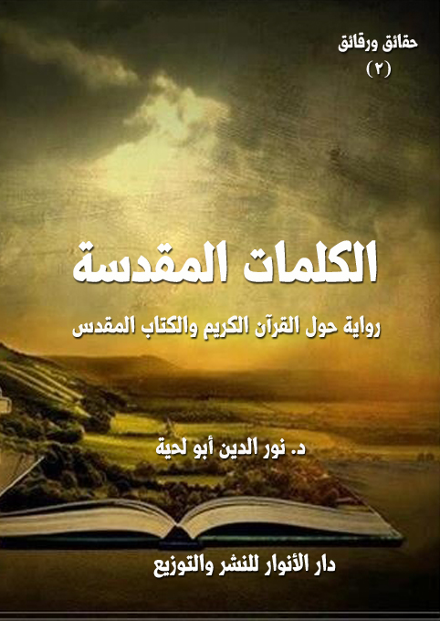

الكتاب: الكلمات المقدسة
المؤلف: أ.د. نور الدين أبو لحية
الناشر: دار الأنوار للنشر والتوزيع
الطبعة: الثانية، 1437 هـ
عدد الصفحات: 514
ISBN: 978-3-330-84978-5
لمطالعة الكتاب من تطبيق مؤلفاتي المجاني وهو أحسن وأيسر: هنا

التعريف بالكتاب
يحكي رحلة يقوم بها رجل دين مسيحي إلى الإسكندرية، هو وأخوه التوأم [الذي يمثل نفسه وهواه المانع له من الإيمان] لطباعة الكتاب المقدس، وفي كل يوم من الأيام يلتقي بشخص من عمال المطبعة أو غيرهم، يثير له شبهات حول الكتاب المقدس، ويدعوه إلى مقارنتها بالقرآن الكريم.
وهي من خلال تلك الحوارات الكثيرة تحاول إثبات قدسية الكلمات التي تنزلت على محمد صلى الله عليه وآله وسلم، وعقد المقارنات العلمية والدقيقة والموضوعية بينها وبين الكتاب المقدس، وقد اشتملت المقارنات على عشرة نواح، هي: الحفظ، والربانية، والحق، والحقيقة، والعقلانية، والروحانية، والشمول، والأدب، والتربية، والجمال.
الكلمات المقدسة (6)
هذه الطبعة الثانية من كتابي [الكلمات المقدسة]، وهو من جملة الكتب المهتمة بعرض الحقائق القرآنية، والبرهنة عليها، والدعوة إلى تفعيلها في الحياة (1).
وقد ضمنت المعاني الواردة فيها على شكل رحلة يقوم بها رجل دين مسيحي إلى الإسكندرية، هو وأخوه التوأم [الذي يمثل نفسه وهواه المانع له من الإيمان] لطباعة الكتاب المقدس، وفي كل يوم من الأيام يلتقي بشخص من عمال المطبعة أو غيرهم، يثير له شبهات حول الكتاب المقدس، ويدعوه إلى مقارنتها بالقرآن الكريم.
وهي من خلال تلك الحوارات الكثيرة تحاول إثبات قدسية الكلمات التي تنزلت على محمد صلى الله عليه وآله وسلم، وعقد المقارنات العلمية والدقيقة والموضوعية بينها وبين الكتاب المقدس، وقد اشتملت المقارنات على عشرة نواح، هي: الحفظ، والربانية، والحق، والحقيقة، والعقلانية، والروحانية، والشمول، والأدب، والتربية، والجمال.
وهي تجمع بذلك أكثر ما كتب في الموضوع من مقارنات بين القرآن الكريم والكتاب
__________
(1) من كتبي التي تناولت بعض الجوانب المرتبطة بالقرآن الكريم، ولعلها تكمل النقص الوارد في هذا الكتاب:
1 ـ معجزات علمية: وهو يشمل ما ورد في القرآن الكريم من حقائق علمية معجزة، تعتبر من أقوى البراهين المعاصرة، وخاصة للباحثين والعلماء، وهو الجزء الثالث من هذه السلسلة.
2 ـ القرآن والأيدي الآثمة: وهو في نقد التعامل السلبي الذي حصل من بعض الأمة نحو القرآن الكريم، لأن البعض للأسف يحاكم القرآن إلى أقوال المفسرين أو الفقهاء أو التاريخ، وهو الجزء 19 من هذه السلسلة.
الكلمات المقدسة (7)
المقدس.. ولذلك استفدت من كل ما كتب حول ذلك من كتابات القدماء والمحدثين، مع تطويع الأفكار المطروحة للقالب الروائي الذي أردنا من خلاله تبسيط البراهين، وتوضيحها ليفهمها الجميع.
لأن الغرض الذي هدفنا إليه من خلال هذه السلسلة [حقائق ورقائق] هو صياغة الحقائق في قوالب أدبية مبسطة تحمل من الجاذبية واليسر ما يجعلها في متناول كل قارئ.. ولذلك لم نبالغ كثيرا في التوثيق والتدقيق الأكاديمي حتى لا يشتت ذهن القارئ، وحتى لا يتضخم الكتاب، لأن الهدف هو الحقيقة وليس القائلين بها.
الكلمات المقدسة (8)
لا أزال أذكر ذلك اليوم المبارك من شهر رمضان المعظم، وفي ليلة من ليالي الوتر منه، حينها كنت معتكفا في مسجد من المساجد، وكنت حريصا على أن أصادف ليلة القدر، تلك الليلة التي نزل فيها القرآن الكريم.. والتي أخبر الله تعالى أنها أفضل من ألف شهر.. ولذلك كنت أتنقل بين القراءة والذكر والصلاة والدعاء رجاء أن يضاعف لي كل ذلك.
لكني فجأة تألمت لحالي، ونظرت إلى نفسي نظرة احتقار على تلك التصرفات التي كنت أقوم بها من غير وعي..
لقد كان لساني يردد كلمات ربي المقدسة من غير أن أنفعل لها، أو أتأثر بها، وكأنني أقرأ قصيدة أو رواية.. لا كلام الله مبدع الوجود جميعا..
لقد كنت منشغلا بجمع الحسنات، وما يتبعها من الأجور عن تدبر القرآن الكريم والتأثر به والترقي من خلاله في معارج الكمال.
لقد كنت أرتل الكلمات التي تختصر كل حقائق الوجود، وتصفها وصفا دقيقا.. بل تعطي الحلول لكل المشكلات.. بل تجمع كل سنن الكون والحياة والمجتمع في كلمات معدودات.. ومع ذلك لم أكن أستفيد منها إلا تلك الحركات التي يتحرك بها لساني.
لذلك ثرت على نفسي، وغضبت عليها غضبا شديدا.. ولست أدري كيف رحت أتجول في أنحاء المسجد لأنفس عن نفسي ما عراها من الآلام.
وقد شاء الله أن تكون تلك الحركة مفتاحا لبركات عظيمة عرفت من خلالها عظمة الكلمات المقدسة التي كلمنا الله بها..
لقد رأيت في ركن من أركان المسجد شيخا وقورا، يقرأ القرآن الكريم من أعماق أعماقه.. ويبكي أثناء قراءته، وينفعل انفعالا شديدا، وكأن زلزالا قد نزل بكيانه جميعا، فهزه، وحركه.
الكلمات المقدسة (9)
اقتربت منه رجاء أن يتنزل علي من الأحوال ما تنزل عليه، وأن أذوق من المعارف ما ذاقه، وأن يتحرك من كياني ما تحرك من كيانه.
أحس الشيخ بحركتي، فالتفت إلي، وقال بلهجة فيها بعض العجمة: هل أحضرت قلمك معك؟
قلت متعجبا: وما حاجتي للقلم.. أنا جئت لأعتكف بهذه المناسبة العظيمة.. ومن يعتكف لا يحتاج إلى قلم، ولا إلى قرطاس، ولا إلى دواة، يكفيه مصحف ومسبحة.
قال: أحيانا يكون القلم هو هادينا للمصحف والمسبحة.. ألم يقسم الله بالقلم، وبما يسطرون؟
قلت: بلى.. ولكن ما علاقة ذلك بهذا؟
قال: لقد أخبر الله تعالى أنه علم الإنسان بالقلم..
قلت: ذلك صحيح، فقد كان من أول ما نزل من القرآن الكريم قوله تعالى: {اقْرَأْ وَرَبُّكَ الْأَكْرَمُ (3) الَّذِي عَلَّمَ بِالْقَلَمِ (4) عَلَّمَ الْإِنْسَانَ مَا لَمْ يَعْلَمْ (5)} [العلق: 3 - 6]
قال: فأحضر قلمك ودواتك والقراطيس لأحكي لك رحلتي إلى الكلمات المقدسة عساك تخرج بها من ألمك الذي عراك.. وعساك تبلغها لمن ينتفع بها.
قلت: رحلتك إلى الكلمات المقدسة.. من أنت..؟
قال: أظن أنك عرفت من خلال لهجتي أنني لست من أهل هذه البلاد.
قلت: أجل.. فلهجتك وملامحك تدل على أنك من أوروبا أو من أمريكا.
قال: ذلك صحيح.. أنا من ألمانيا..
قلت: مبارك لك هداية الله.. لاشك أنك سمعت تصريحات البابا الذي هو ابن بلدك حول الإسلام (1).
__________
(1) أشير إلى [بابا الفاتيكان بنديكت السادس عشر]، وقد كانت تصريحاته المسيئة للإسلام داعيا لي لكتابه سلسلة [أشعة من شمس محمد (] والتي حاولت أن تكون موسوعة شاملة في الرد على الشبهات التي تثار كل حين.
الكلمات المقدسة (10)
ابتسم، وقال: لقد كان ذلك البابا شقيقي التوأم في يوم من الأيام.
تفرست في ملامحه جيدا، فوجدته يشبهه تماما، فازداد عجبي، وصحت: أرى أن هناك شبها كبيرا بينكما.
قال: لقد ذكرت لك أن البابا كان أخي التوأم..
قلت: كيف هذا.. إن هذا لعجيب؟
قال: وما العجب في ذلك.. الله يهدي من يشاء.. كيف يشاء.. متى يشاء.
قلت: صدقت في هذا.. فكيف اهتديت إلى ربك؟
قال: لقد هداني ربي إليه من خلال كلماته المقدسة.. لقد من الله علي برحلة مباركة سمعت فيها ما ملأني هداية ونورا عشت به طول عمري.
قلت: وأخوك التوأم.
قال: تلك قصة طويلة لا يعنيك منها شيئا.. لا يعنيك من قصتي إلا رحلتي للكلمات المقدسة.. فإن شئت أن أمليها عليك فأحضر قلمك وقراطيسك، وتعال.. فما جئت هذه البلاد، وما دخلت هذا المسجد إلا لأجل أن أمليها عليك لتبلغها للعالم.
قلت: ولكني نويت الاعتكاف هذه الليلة.
قال: عندما تسمع قصتي، وتعرف قيمة الكلمات المقدسة التي كان يرددها لسانك، حينها تكون روحك دائما في حال اعتكاف، وقلبك دائما في حال سجود.
أسرعت إلى محفظتي، وأحضرتها، وأخرجت قلمي وقراطيسي، وقلت: ها أنذا بين يديك امل علي ما تشاء.
الكلمات المقدسة (11)
-\--\-
اعتدل الشيخ في جلسته، ثم قال: لقد كانت رحلة جميلة تلك التي قمت بها قبل أكثر من أربعين سنة، كان الهدف الظاهر منها هو الإشراف على طبعة جديدة من طبعات الكتاب المقدس، والتي تمت تحت رعاية ونفقة كنيستنا في الإسكندرية، ولكن الهدف الخفي الذي أراده الله هو أن أتنعم في هذه الرحلة بالاستنارة بأنوار كلمات الله المقدسة.
سأحدثك من الأول.. من أول الرحلة.
حزمت أمتعتي، أنا وأخي.. وركبنا الطائرة التي تقلنا إلى الإسكندرية، وقد شاء الله أن يختلف مجلسي عن مجلس أخي.. ذلك شيء لم نخطط له، ولكن المقادير التي شاءت أن أتعرض لتلك الأشعة العظيمة هي التي دبرت لذلك وقدرته.
فتحت الكتاب المقدس الذي كنت أحمل نسخة منه في محفظة صغيرة أحملها، ثم رحت أقرأ فيه.. كنت أمر أثناء قراءته بمواقف مضطربة:
ففي مواضع أشعر أنه كلام الله الجميل المتدفق بينابيع الرحمة واللطف والمودة، وأشعر حينها بأن كل ذرة من ذرات الوجود تشهد له بذلك، بل تترنم معي، وأنا أرتله بخشوع وتدبر.
وفي مواضع أشعر أنه لغو أو لهو فارغ لا يعنيني، ولا يعني البشرية المتشوفة للخلاص.. لكني أعتذر بيني وبين نفسي لله الذي أتهم كلامه بهذه التهم.
وفي مواضع أشعر بأنه كتاب خطير.. لو سرت تعاليمه إلى الأرض لأحرقت الأخضر واليابس، ومحت معها كل وجود اجتماعي على الأرض.
أحيانا أشعر أنه كلام من الله المتعال.. وأحيانا أشعر أنه كلام حكواتي فارغ يهتم بالتفاصيل التي لا حاجة لها..
أحيانا أشعر أنه كلام ينبع من منابع تمتلئ بالعنصرية والحقد واللاإنسانية.. وأحيانا أشعر أنه كلام يفيض من منابع الرحمة والحنان والإنسانية.
الكلمات المقدسة (12)
كنت أشعر بكل ذلك التناقض، وأنا أقرأ الكتاب المقدس على كرسيي في الطائرة التي امتطيتها مع أخي، ونحن راحلان إلى الإسكندرية.
فجأة تحركت الطائرة حركة شديدة، حتى ظننا أننا سنسقط.. ثم ازدادت حركتها شدة.. وازدادت قلوب الناس هلعا.. ولست أدري كيف سقط الكتاب المقدس من يدي من حيث لا أشعر.. وكيف امتلأت من الرعب كما امتلأ سائر الناس.. لا فرق بين صالحهم ومنحرفهم.
لكني التفت إلى الذي يجلس بجاني.. فإذا بي أراه ساكنا هادئا مطئمنا، وكأن شيئا لم يحصل.. لقد بدا لي حينها في قمة قمم الجمال والكمال والسلام والطمأنينة.
لا أخفيك أني – بمجرد أن زالت المخاوف – رحت أحاول أن ألتمس كل السبل للتعرف عليه، وعلى سر هدوئه.
لكنه بادرني بذلك، وهو يسلم لي الكتاب المقدس الذي سقط من يدي، ويقول: خذ الكتاب الذي كنت كنت تقرؤه فيه.. لقد سقط منك من حيث لا تشعر.
قلت: شكرا جزيلا.. إنه الكلمات المقدسة التي أنزلها الله على أنبيائه.
قال: ولكني لا أرى آثارها عليك.
قلت: ما تقصد؟
قال: أكنت بالفعل تقرأ الرسالة التي أرسلها ربك لك؟
قلت: أجل.. لقد أرسلها لي كما أرسلها لجميع البشرية على لسان أنبيائه.
قال: ولكني لم أر على وجهك أي علامة تدل على أن الذي تقرأ كلامه هو الله.
قلت: وهل تحدث كلمات الله أثرا على الوجوه؟
قال: أجل.. أليست كلمات مقدسة؟
قلت: بلى.. هي كلمات مقدسة.
قال: إن الكلام المقدس يقدس صاحبه، ويطهره، ويملأ بالطمأنية قلبه، وبالانشراح صدره،
الكلمات المقدسة (13)
وبالأسارير الصافية صفحة وجهه.
قلت: ألم تر ذلك حدث لي أثناء قراءته؟
قال: أنا لا أتهمك.. ولكني أسأل: هل كنت تقرأ حقيقة الكتاب المقدس؟
فتحت الكتاب، وقلت: انظر ها هو.. الكتاب المقدس.
قال: ليس الشأن في غلافه.. إنما الشأن في محتواه.
قلت: وهل تتصور المطابع تتلاعب بالكتاب المقدس لهذه الدرجة؟
قال: ألا يمكن أن تستبدل هذه المطابع أغلفة الكتب التي ظلت مكدسة في خزائنها بأغلفة للكتاب المقدس لتنشر سلعها، وتكسب من وراء ذلك؟
قلت: إنه الكتاب المقدس يا رجل!!
قال: أنا لا أفكر إلا بعقلي، فلذلك لا أتيقن إلا بعد أن أشك، ولا أطمئن إلا بعد أن أضطرب.
قلت: أتريد أن تشككني في الكتاب المقدس.. في كلمات ربي المقدسة؟
قال: لا.. أنا لا أعطيك الشك، ولا اليقين.. ولكني أدعوك إلى البحث عن اليقين الذي لم ترثه.. فلا خير في يقين يورث.
قلت: أتريد مني أن أضع الكتاب المقدس على مشرحة البحث؟
قال: وما الذي يمنعك من ذلك؟
قلت: ربي.. إذا قال لي ربي يوم الدينونة: كيف تشك في كلامي؟.. وكيف تضعه في مشرحة البحث كما تضع أي كلام، فما عساي أقول له؟
قال: قل له: يارب.. لقد رأيت كلامك المقدس يحذرنا من المتنبئين الكذبة، فخشيت أن يختلط كلامك الجميل بكلام الكذبة.. وخشيت فوق ذلك أن أحمل صورة مشوهة عنك بسبب ما يرجف الكذبة عليك.. الكذبة الذين حملوا أقلام الكتبة.
قلت: أترى ذلك مجديا لي عند ربي؟
الكلمات المقدسة (14)
قال: بل ذلك ما يجديك عند ربك.. ألم يخلق الله لك عقلا؟
قلت: بلى.. ولولاه ما تحدثت معك، وناقشتك.
قال: لم ناقشتني؟
قلت: لأبحث عن الحقيقة.
قال: فناقش كلام ربك لتبحث فيه عن الحقيقة.. فلا خير في حقيقة لا تناقش.
قلت: ولكن كيف أبحث عن الحقيقة في هذا.. لو كان مؤلف هذا الكتاب بيننا لذهبت إليه، وتحدثت معه عن سر كل كلمة قالها.
قال: والله معنا لا يغيب.. لقد وضع في عقولنا برامج الحكمة التي نميز بها بين الحق والباطل.
قلت: ولكني لا أرى الناس يستعملونها.
قال: لأنهم يبحثون عن المكاسب، لا عن الحقائق.
قلت: فما الطريق إلى الحقيقة؟
قال: الكلمات المقدسة تتصف بعشر صفات.. لا تكون مقدسة إلا بها.
قلت: فما هي؟
قال: لقد سجلتها في هذه الورقة.. فخذها واحتفظ بها.
أعطاني ورقة صغيرة، قرأتها أمامه: (الحفظ، والربانية، والحق، والحقيقة، والعقلانية والروحانية، والشمول، والأدب، والتربية، والجمال)
قلت: ما هذه الكلمات؟.. أتراك كنت تحل الكلمات المتقاطعة؟
قال: لا.. هذه أسوار الكلمات المقدسة التي تحميها من كذب الكذبة الذين يلبسون لباس الكتبة.
قلت: فما الحفظ؟
قال: أن لا يصلك كتاب ربك إلا من الأيدي الطاهرة..
قلت: ولكني لا يمكنني أن أمنعه من الأيدي النجسة.
الكلمات المقدسة (15)
قال: لا تمنعه منها.. ولكن امنعها من الانفراد به.
قلت: لم؟
قال: لئلا تنجسه.
قلت: لم أفهم سر ذلك.
قال: أرأيت لو انفرد اللصوص والمجرمون ببنك من البنوك.. ولم يكن معهم رقيب ولا حفيظ.. هل سيتركونه سليما معافى؟
قلت: بل سيسطون عليه لا محالة.
قال: فهذه أموال لا تضر ولا تنفع.. احتاجت كل أولئك الحفظة.. فكيف بالكلمات المقدسة التي تفسر حقيقة الوجود، ومصير الوجود؟
قلت: فهمت هذا، فما الربانية؟
قال: لن يكون الكلام مقدسا حتى يكون ربانيا.
قلت: فما الحق؟
قال: هل ترى في الكون أي عبث أو شيء لا قيمة له؟
قلت: لا.. ليس في مخلوقات ربك عبث.
قال: وليس في كلام ربك عبث ولا لغو ولا باطل.
قلت: فما الحقيقة؟
قال: هي الصدق الذي لا يحتاج برهانا.
قلت: فما العقلانية؟
قال: كلام ربك لا يتناقض مع خلق ربك، وبرمجة ربك.
قلت: فما الروحانية؟
قال: الكلام المقدس هو الذي يجعل روحك مقدسة.
الكلمات المقدسة (16)
قلت: فما الشمول؟
قال: كلام ربك يغنيك عن كلام غيره.. فيشفي حاجتك، ويسد خلتك.
قلت: فما الأدب؟
قال: هو الذي يرفع إنسانيتك عن البهيمية، ويرفع حقيقتك عن المستنقعات.
قلت: فما التربية؟
قال: الكلام المقدس سلم ترتقي به في مراتب الكمال.
قلت: فما الجمال؟
قال: الكلام المقدس يجذب القلوب والنفوس، فتمتلئ بالرفعة والراحة.
قلت: فكيف أتعلم علوم هذه الأسوار؟
قال: بالصدق.. بالصدق وحده تصل إلى الأشعة التي تطل من شمس الحقيقة.
لست أدري كيف جاءت المضيفة المشؤومة لتطلب أوراقه، ثم ليسير معها، ويتركني في حيرتي، ويترك معي تلك الورقة التي كانت خريطتي في البحث عن الكلمات المقدسة.
الكلمات المقدسة (17)
بعد أن وصلنا الإسكندرية، وفي اليوم الأول.. خرجت من البيت أبحث عن مكتبة سمعت عنها كثيرا إبان طلبي العلم.. هي مكتبة خاصة مملوءة بالمخطوطات القيمة، ورثها رجل من أهل الإسكندرية عن أجداده، وقد سمعت أنه رجل لطيف يسمح لكل من قصد مكتبته بالاستفادة منها كما يشاء.. وقد سمعت في نفس الوقت أنه رجل غريب الأطوار.. فلذلك حذرني منه بعضهم قبل رحلتي.
لم أصدق كل ما سمعت.. فذهبت أبحث عن المكتبة حتى وجدتها.
كانت مكتبة رائعة الجمال.. يدل تصنيف الكتب فيها على اهتمام صاحبها بها، وعلى ما له من ثقافة.
كان اسمه المعلق على لافتتها بالبنط العريض يدل على كونه مسيحيا، بل من عائلة عريقة في المسيحية.. وقد كانت المخطوطات التي تمتلئ بها المكتبة دليلا على كون هذه العائلة قد توارثت العلم كابرا عن كابر.
رحب بي صاحب المكتبة شخصيا، وأخبرني باستعداده لدلالتي على أي كتاب أريده، بل دلالتي على الكتب التي أحتاجها، وأنه يكفي أن أخبره عن الموضوع الذي أريد ليدلني على المراجع التي كتبت عنه.
قلت: لا شك أنك قد اطلعت على الكثير من هذه الكتب.
قال: أجل.. إن حياتي كلها مرتبطة بهذه المكتبة.. أنا عاشق لها.. لقد ترك والدي ثروة ضخمة تقاسمها إخوتي.. ورضيت من قسمتي بهذه المكتبة.. قلت لهم: خذوا كل ما تريدون.. دعوا لي فقط هذه الكتب أتنسم عبيرها.
قلت: ومن أين تقتات؟.. أراك تفتح أبوابها للراغبين بالمجان.
الكلمات المقدسة (18)
قال: من عرف كيف يتغذى بالكلمات الطاهرة لم يحتج إلى أي غذاء.. فللكلمات خلقنا لا للأقوات.
قلت: ذكرتني بقول يوحنا: (في البدء كان الكلمة..) (يوحنا:1/ 1)
قال: أنت تهتم بالكتاب المقدس إذن.. لقد خصصت جناحا كبيرا في المكتبة للكتب المقدسة جمعت فيه مخطوطاتها وتفاسيرها.
قلت: فدلني عليه.
سار معي إلى ركن جميل.. هو أجمل أركان القاعة.. وقال: هذا هو ركن الكتب المقدسة.. وقد سميته (الكلمات المقدسة).. ولا يدخل أحد إلا بإذني، وبعد أن ألمس فيه صدق الطلب.
قلت: فقد لمست في صدق الطلب إذن.
قال: أصدقك بأني قد ارتحت كثيرا لمرآك.. لست أدري.. لعل لي علاقة بك من قديم لا أعرفها..
قلت: أنا لا أعرفك.. ولا أذكر أني رأيتك من قبل.. بالإضافة إلى أني غريب عن هذه البلاد.
قال: لا أقصد علاقتنا هنا.. بل أقصد علاقتنا هناك في العالم الذي لم تكن معنا فيه أجسادنا.
قلت: لا أذكرشيئا عن ذلك العالم.
قال: ولا أنا.. ولكن أحيانا أتخيل أني أذكر أشياء.. ثم أنسى.. لست أدري.. دعنا من هذا.. هذا هو ركن الكتب المقدسة.
سرت في الركن.. فوجدت كتبا مقدسة من كل الأديان.. ولكني فوجئت بالقرآن الكريم.. وهو يحتل أفضل المواقع وأعلاها..
قلت: أليس هذا هو كتاب المسلمين المقدس؟
قال: بلى.. هو كتابهم المقدس.
قلت: أرى أن لك اهتماما خاصا به.. فأنت تضع مصحفه في محمل خاص بخلاف سائر الكتب.
قال: أصدقك القول.. فمع أني مسيحي.. بل من عائلة عريقة في تدينها بالمسيحية.. بل من عائلة
الكلمات المقدسة (19)
كان الكثير من أفرادها رجال دين.. إلا أنه لم يحظ كتاب من الكتب بالأهمية عندي كما حظي كتاب المسلمين المقدس.. إني أقرؤه ولا أمل من قراءته.
قلت: لم؟
قال: لست أدري.. كأني أجده يخاطبني.. يعرفني بالعالم الذي جئت منه.. والذي نسيته، ولم تبق لي منه إلا ذكريات نسيتها..
قلت: وكتابنا المقدس بعهديه.. أتراك هجرته؟
قال: لا.. ولكني كلما مددت يدي لأقرأ ما فيه كلما وجدتني أعود لأحمل كتاب المسلمين لقراءته من جديد.
قلت: لعلك مغرم بالأدب.. فأنت تحب جمال أسلوبه.
قال: ليس هذا فقط.. لقد تعاملت مع نفسي كما أتعامل مع الأجنبي.. ورحت أحلل أسرار انجذابي للقرآن وثقتي فيه.. والتي تربو على ثقتي في كتابنا المقدس.
قلت: فما وجدت من هذه الدراسة التحليلية؟
قال: أشياء كثيرة جدا لا يمكنني أن أفصل لك ذكرها هنا.. ولكني من خلال اهتمامي بالأسانيد عرفت أن القرآن هو الكتاب الوحيد المحفوظ حفظا صحيحا من بين جميع الكتب المقدسة.. وقد كان ذلك مثار عجب عندي..
لقد ظللت أقول لنفسي: لو كان هذا الكتاب كاذبا على الله، فهل يأذن الله بحفظه بهذه الصورة العجيبة.. لكأن الكون كله خرسانة مسلحة حمي بها هذا الكتاب.. فلم يجرؤ جميع اللصوص على الاقتراب منه.
قلت: كيف عرفت ذلك؟.. إن البحث في هذا ليس بالسهولة التي تتصورها.
قال: أجل.. ولكن الله يسر لي هذه المكتبة الضخمة التي ترجع الكثير من نسخها إلى القرون المتطاولة.. وقد بحثت فيها، فوصلت إلى الحقيقة التي ذكرتها لك.
الكلمات المقدسة (20)
قلت: فهل ستفصل لي خلاصة ما وصلت إليه؟
قال: إن لم يشغلك ذلك عما جئت من أجله.
قلت: لا.. لعلي لم أحضر إلا لأجل هذا.
قال: ألم أقل لك: كأني أعرفك.. لقد مررت في يوم من الأيام بنفس الحالة التي تمر بها.. لكني لا أجرؤ على قول شيء.. لأني لا أكاد أذكر شيئا.
-\--\-
اتخذنا مجلسا صالحا في [ركن الكلمات المقدسة]، وراح يحدثني عن نتائج ما قام به من بحث حول تميز القرآن الكريم.
قال: أول ما شدني إلى القرآن أنه الكتاب المقدس الوحيد الذي حفظ من أي تغيير وتبديل.. بل هو الكتاب الوحيد الذي لا يزال يقرأ باللغة التي نزل بها.. بل بنفس مخارج الحروف التي كان ينطق بها محمد.. بل إن المسلمين لا يكتفون بحفظه مكتوبا كما نحفظ كتبنا، بل يضمون إليه حفظه في صدورهم.. حتى الأعاجم منهم يحفظونه.
قلت: وما الذي شدك إلى هذا؟
قال: شدني إلى هذا مقارنتي له بما تعامل به قومي وقومك مع كتبنا المقدسة.. لقد أهانوا قداستها بما أوقعوا فيها من تحريفات.
قلت: أنت مسيحي، وتقول بوقوع التحريف في كتبنا؟
قال: أنا مسيحي نعم.. ولكني مع ذلك إنسان عاقل.. يستعمل عقله.. ولا يمكنني أن ألغي عقلي.. ولا أرى أن مسيحيتي تتنافى مع استعمالي لعقلي.. لقد قمت بدراسة لكتبنا المقدسة من ناحية مدى الوثوق فيما دون فيها، وقد خرجت بنتائج مذهلة.
قلت: فما الذي خرجت به؟
قال: لقد عرفت أن الحفظ بمعناه الحقيقي الكامل لم يتحقق في كتبنا، ولا في كتب اليهود التي
الكلمات المقدسة (21)
نستمد منها، ولا في أي كتاب من الكتب التي تملأ أرجاء هذه القاعة، ما عدا كتاب المسلمين.. لقد أضيفت كتب كثيرة، وكلام كثير للكتب المقدسة جعلنا لا نستطيع التمييز بين المقدس منها وغير المقدس.
وقد ذكر كتاب المسلمين المقدس هذا، بل ذكر علله النفسية والاجتماعية، فقال: {فَوَيْلٌ لِلَّذِينَ يَكْتُبُونَ الْكِتَابَ بِأَيْدِيهِمْ ثُمَّ يَقُولُونَ هَذَا مِنْ عِنْدِ اللَّهِ لِيَشْتَرُوا بِهِ ثَمَناً قَلِيلاً فَوَيْلٌ لَهُمْ مِمَّا كَتَبَتْ أَيْدِيهِمْ وَوَيْلٌ لَهُمْ مِمَّا يَكْسِبُونَ} (البقرة:79)
بل وصف طريقة تلاعبهم بالكتاب وصفا دقيقا، فقال: {وَإِنَّ مِنْهُمْ لَفَرِيقاً يَلْوُونَ أَلْسِنَتَهُمْ بِالْكِتَابِ لِتَحْسَبُوهُ مِنَ الْكِتَابِ وَمَا هُوَ مِنَ الْكِتَابِ وَيَقُولُونَ هُوَ مِنْ عِنْدِ اللَّهِ وَمَا هُوَ مِنْ عِنْدِ اللَّهِ وَيَقُولُونَ عَلَى اللَّهِ الْكَذِبَ وَهُمْ يَعْلَمُونَ} (آل عمران:78)
لقد مارس كثير من رجال الدين الذين امتلأوا بحب الدنيا هذه التجارة الرخيصة، تجارة التلاعب بالكتب المقدسة.
قلت: وكتاب المسملين؟
قال: لقد توفرت ظروف كثيرة لكتاب المسلمين جعلته محفوظا حفظا تاما لا يزاد فيه حرف واحد، ولا ينقص منه حرف واحد.
أذكر أني قرأت عن أحد صحابة محمد.. هو عالم من علمائهم الكبار.. يقول متوجها للذين استهواهم ما في كتبنا من قصص: (يا معشر المسلمين، كيف تسألون أهل الكتاب عن شيء، وكتابكم الذي أنزل الله على نبيه، أحدث أخبار الله تقرؤونه محضًا لم يشب؟ وقد حَدَّثكم الله تعالى أن أهل الكتاب قد بدلوا كتاب الله وغيروه، وكتبوا بأيديهم الكتاب، وقالوا: هو من عند الله ليشتروا به ثمنًا قليلا؛ أفلا ينهاكم ما جاءكم من العلم عن مُسَاءلتهم؟ ولا والله ما رأينا منهم أحدًا قط سألكم عن الذي أنزل إليكم) (1)
__________
(1) رواه البخاري.
الكلمات المقدسة (22)
لعل العناية الإلهية التي وعدت بحفظه جعلته بمنأى عن كل ما لحق بكتبنا من تحريفات..
أخذ مصحفا، وفتحه على مواضع محددة، وقال: اسمع.. إن إله المسلمين يعد بحفظ كتابه وعدا جازما، وهو ما تخلو منه كتبنا.. اسمع إليه، وهو يقول: {إِنَّا نَحْنُ نَزَّلْنَا الذِّكْرَ وَإِنَّا لَهُ لَحَافِظُونَ} (الحجر:9) بل هو يخبر بأن هذا الكتاب الذي أحمله لن يزاحمه أي باطل قدسيته، اسمع إليه: {إِنَّ الَّذِينَ كَفَرُوا بِالذِّكْرِ لَمَّا جَاءَهُمْ وَإِنَّهُ لَكِتَابٌ عَزِيزٌ لا يَأْتِيهِ الْبَاطِلُ مِنْ بَيْنِ يَدَيْهِ وَلا مِنْ خَلْفِهِ تَنْزِيلٌ مِنْ حَكِيمٍ حَمِيدٍ} (فصلت:41 ـ 42)
بل هو يخبر أن مهمة جمعه تعود إليه، فيقول: {لا تُحَرِّكْ بِهِ لِسَانَكَ لِتَعْجَلَ بِهِ إِنَّ عَلَيْنَا جَمْعَهُ وَقُرْآنَهُ} (القيامة: 17)
إن هذه الآيات وحدها تحمل إعجازا عظيما.. إنها تتحدى كل تلك الجيوش التي جيشت لتحريف هذا الكتاب أو تبديله أو محوه.
قلت: إن استنتاجك هذا يستدعي أدلة كثيرة..
قال: سأذكرها لك.. ولكن قبل أن نتحدث عن ذلك.. أو لنفهم ذلك.. فلنرجع إلى كتابنا المقدس الذي دنسته أيادي المحرفين.
لقد ذكرت لك أن كتاب المسلمين يحوي الوعد بحفظه، وأنه لن يصيبه سوء..
قلت: أجل.. لقد قرأت لي منه ما يدل على ذلك.
قال: وهذا ما تخلو منه كتبنا المقدسة.. فهي لا تحوي أي دلالة على أنها ستحفظ من التغيير والتبديل.. بل قد نص كتاب المسلمين على أن مهمة حفظ هذه الكتب كانت موكولة إلى رجال الدين الذين استهواهم الطمع، فراحوا يبدلون ويغيرون.
اسمع ما يقول كتاب المسلمين..
فتح المصحف، وراح يقرأ: {إِنَّا أَنْزَلْنَا التَّوْرَاةَ فِيهَا هُدىً وَنُورٌ يَحْكُمُ بِهَا النَّبِيُّونَ الَّذِينَ أَسْلَمُوا
الكلمات المقدسة (23)
لِلَّذِينَ هَادُوا وَالرَّبَّانِيُّونَ وَالْأَحْبَارُ بِمَا اسْتُحْفِظُوا مِنْ كِتَابِ اللَّهِ وَكَانُوا عَلَيْهِ شُهَدَاءَ فَلا تَخْشَوُا النَّاسَ وَاخْشَوْنِ وَلا تَشْتَرُوا بِآيَاتِي ثَمَناً قَلِيلاً وَمَنْ لَمْ يَحْكُمْ بِمَا أَنْزَلَ اللَّهُ فَأُولَئِكَ هُمُ الْكَافِرُونَ} (المائدة:44)
ثم أغلق المصحف، وقال: لطالما شدت هذه الآية انبتاهي.. إن قرآن المسلمين يحمل احتراما كبيرا للكتب المقدسة.. إنه يصف التوراة بأن فيها هدى ونور.. ولكن هذا الاحترام لا يحول بينه، وبين أن يذكر ما حصل فيها من تحريف..
وهو يحلل أسباب ذلك في أمرين: أشار إلى الأول منهما في قوله: {فَلا تَخْشَوُا النَّاسَ وَاخْشَوْنِ}
وأشار إلى الثاني في قوله: {وَلا تَشْتَرُوا بِآيَاتِي ثَمَناً قَلِيلاً}
إنهما سببان خطيران.. أو مرضان قاتلان: الرغبة والرهبة.. الرغبة في المتاع القليل.. والرهبة من العناء القصير..
قلت: دعنا من كتاب المسلمين.. ولنرجع إلى كتابنا.
قال: مما ينقضي دونه العجب أن كتابنا المقدس نفسه يحوي هذه الحقيقة.. فهو لا يحمل أي وعد بحفظ ما فيه.. بل هو يخبر أن حفظ ما فيه كان موكولا لناس معينين ذوي أنساب معينة.. وهذا ما أتاح لهم أن يتلاعبوا به كما يشاءون.
انتظر.. سوف آتيك بشهادات كثيرة تثبت ما أقول.
ذهب إلى رف من الرفوف.. وحمل نسخة من الكتاب المقدس.. وقال: اسمع ما يقول: (أَمَرَ مُوسَى اللاوِيِّينَ حَامِلِي تَابُوتِ عَهْدِ الرَّبِّ: (خذوا كتاب التوراة هذا وضعوه بجانب تابوت عهد الرب إلهكم ليكون هناك شاهدا عليكم. لأني أنا عارف تمردكم ورقابكم الصلبة. هوذا وأنا بعد حي معكم اليوم قد صرتم تقاومون الرب فكم بالحري بعد موتي! اجمعوا إلي كل شيوخ أسباطكم وعرفاءكم لأنطق في مسامعهم بهذه الكلمات وأشهد عليهم السماء والأرض. لأني عارف أنكم بعد موتي تفسدون وتزيغون عن الطريق الذي أوصيتكم به ويصيبكم الشر في آخر الأيام لأنكم تعملون الشر أمام الرب حتى تغيظوه بأعمال أيديكم) سفر التثنية (31: 25 - 29)
الكلمات المقدسة (24)
ثم أغلق الكتاب، وقال: كيف ترى موسى، وهو يردد هذا الكلام؟
قلت: كأني أراه حزينا متأسفا على حال قومه.. وهو في نفس الوقت خائف من تلاعبهم بالرسالة التي جاء بها، وبالألواح التي أنزلت عليهم.
قال: أجل.. لقد غاب عنهم أربعين يوما فقط، ومع ذلك لم يصبروا على التغيير والتبديل.. بل راحوا يعبدون العجل الذي صنعه لهم السامري.. ومع أن هارون كان معهم إلا أنه لم يكن ليفعل شيئا أمام ما جبلوا عليه من تمرد..
التوراة تذكر هذا.. والقرآن يذكره (1).. ولكن اسمع لقرآن المسلمين، فهو يصور هذا التغيير تصويرا جميلا..
فتح المصحف، وأخذ يقرأ بتدبر وخشوع: {وَمَا أَعْجَلَكَ عَن قَوْمِكَ يَا مُوسَى} (طه: 83) الله يخاطب موسى في جبل الطور عند المناجاة.
ويذكر الله ما أجاب به موسى، فيقول: {قَالَ هُمْ أُولَاء عَلَى أَثَرِي وَعَجِلْتُ إِلَيْكَ رَبِّ لِتَرْضَى} (طه:84).. فيجيبه الله: {قَالَ فَإِنَّا قَدْ فَتَنَّا قَوْمَكَ مِن بَعْدِكَ وَأَضَلَّهُمُ السَّامِرِيُّ} (طه: 85).. وحينذاك يرجع موسى إلى قومه غضبان أسفا على سرعة تغيرهم.. اسمع: {فَرَجَعَ مُوسَى إِلَى قَوْمِهِ غَضْبَانَ أَسِفاً قَالَ يَا قَوْمِ أَلَمْ يَعِدْكُمْ رَبُّكُمْ وَعْداً حَسَناً أَفَطَالَ عَلَيْكُمُ الْعَهْدُ أَمْ أَرَدتُّمْ أَن يَحِلَّ عَلَيْكُمْ غَضَبٌ مِّن رَّبِّكُمْ فَأَخْلَفْتُم مَّوْعِدِي} (طه: 86)
لكن كبرياءهم وصلافتهم جعلتهم لا يبالون بغضب موسى، ولا بما يقولون، بل يردون عليه قائلين: {مَا أَخْلَفْنَا مَوْعِدَكَ بِمَلْكِنَا وَلَكِنَّا حُمِّلْنَا أَوْزَاراً مِّن زِينَةِ الْقَوْمِ فَقَذَفْنَاهَا فَكَذَلِكَ أَلْقَى السَّامِرِيُّ فَأَخْرَجَ لَهُمْ عِجْلاً جَسَداً لَهُ خُوَارٌ فَقَالُوا هَذَا إِلَهُكُمْ وَإِلَهُ مُوسَى فَنَسِيَ} (طه: 87 ـ 88)
هؤلاء هم بنو إسرائيل.. فهل تتصور أنهم سيحفظون ما أؤتمنوا عليه من كتاب؟
قلت: إن ألم موسى يبدو جليا في وصيته.. وكأنه يحاول أن يجد حيلة يحفظ بها كتابه من التغيير..
__________
(1) ولكن الفرق بينهما عظيم فالتوراة تجعل هارون هو الذي قام بدور السامري كما في سفر الخروج (32/ 1 - 7)
الكلمات المقدسة (25)
إنه يأمر بحفظه في تابوت العهد.. ثم يأمر بقراءته على بني إسرائيل، لعل فيهم من يحفظه، ويورث حفظه.. ولكنه في نفس الوقت يعلم أنه سيأتي اليوم الذي يغيرون فيه كتابهم.. بل يرى أن ذلك اليوم قريب جدا.. لقد قال لهم: (لأني عارف أنكم بعد موتي تفسدون وتزيغون عن الطريق الذي أوصيتكم به ويصيبكم الشر في آخر الأيام لأنكم تعملون الشر أمام الرب حتى تغيظوه بأعمال أيديكم)
فتح الكتاب المقدس، ثم قال: بل إن موسى يردد هذه الوصية كثيرا.. فهو يعلم ما سيلحق كتابه.. اسمع ما يقول: (لا تزيدوا على الكلام الذي أنا أوصيكم به ولا تنقصوا منه لتحفظوا وصايا الرب إلهكم التي أنا أوصيكم بها) (التثنية: 4/ 2)
صمت قليلا، ثم قال: ليس موسى وحده من قال هذا.. كل الأنبياء تحدثوا عن هذا..
اسمع ما يقول النبي إرميا: (فقال الرب لي. بالكذب يتنبأ الأنبياء باسمي. لم أرسلهم ولا أمرتهم ولا كلمتهم. برؤيا كاذبة وعرافة وباطل ومكر قلوبهم هم يتنبأون لكم) (إرميا: 14:14)
وهو يقول: (الأنبياء يتنبأون بالكذب والكهنة تحكم على أيديهم وشعبي هكذا أحب. وماذا تعملون في آخرتها) (إرميا:5: 31)
قلت: ولكن يا سيد.. ليست هناك أمة خلت من المتنبئين الكذبة حتى ما ذكرت عن المسلمين قد ظهر فيهم كثير من المتنبئين بعد محمد.
قال: نعم.. لقد ظهر فيهم مسيلمة، والأسود، وطلحة، وغيرهم كثير.
قلت: فلم تشنع علينا؟
قال: هل رأيت في كتاب المسلمين سفرا أو سورة أو حتى آية لمسيلمة أو للأسود، أو لطلحة؟
قلت: لا.. حتى أن المسلمين يطلقون على مسيلمة لقب الكذاب.
قال: وهذه ميزتهم.. فكتابهم لم يخترق من الأنبياء الكذبة.. نعم ظهر أدعياء حاولوا أن يخترقوا كلام نبيهم، ولكنه لم يجرؤ أحد على أن يخترق كتاب ربهم.
لكن بني إسرائيل اخترقوا الجميع.. اسمع إلى أرميا: (أما وحي الرب فلا تذكروه بعد لان كلمة
الكلمات المقدسة (26)
كل إنسان تكون وحيه إذ قد حرّفتم كلام الإله الحي رب الجنود إلهنا) (إرميا: 23: 36)
وهو يقول: (هكذا قال رب الجنود لا تسمعوا لكلام الانبياء الذين يتنبأون لكم. فانهم يجعلونكم باطلا. يتكلمون برؤيا قلبهم لا عن فم الرب) (إرميا: 23/ 16)
وهو يقول: (لم أرسل الأنبياء بل هم جروا. لم أتكلم معهم بل هم تنبأوا) (إرميا: 23/ 21)
فمن هم هؤلاء الأنبياء؟.. ولو كانوا جميعا قد تنجسوا.. جميعا.. فكيف تصدقونهم!؟
وهو يقول: (لأن الأنبياء والكهنة تنجسوا جميعا بل في بيتي وجدت شرهم يقول الرب) (إرميا: 23/ 11)
وهو يصرح بكل ألم قائلا: (كيف تقولون نحن حكماء وشريعة الرب معنا.. حقا إنه إلى الكذب حوّلها قلم الكتبة الكاذب) (إرميا: 8: 8)
ألا ترى هذا النص صريحا في وقوع التحريف.. إن إرميا هنا هو المتحدث لا رحمة الله الهندي، ولا ديدات.. إنه يخبرنا بالحقيقة المرة التي لا نجرؤ على التصريح بها..
قلت: لا.. يا صاحبي.. هو لا يقصد هذا.. هو يقصد ذلك التحريف المعنوي الذي لحق الكتاب المقدس.
قال: لا.. إنه يتحدث عن أقلام الكتبة.. هو يتحدث عن الكتبة، ولا يتحدث عن المؤولين.. هو يتحدث عن الكتبة المختصين بالنقل والنسخ.. فهم الذين غيروها وبدلوها وحرفوها وحولوها إلى الكذب.
بل هو يصرح بالسبب الذي ذكره القرآن.. وهو الرغبة.. اسمع إليه، وهو يقول: (لأنهم من صغيرهم إلى كبيرهم كل واحد مولع بالربح ومن النبي إلى الكاهن كل واحد يعمل بالكذب) (إرميا:6: 13)
ليس إرميا وحده الذي صرح به.. اسمع ما جاء في المزامير: (اليوم كله يحرفون كلامي. عليّ كل افكارهم بالشر) (مزمور:56/ 5)
الكلمات المقدسة (27)
واسمع ما جاء في (حزقيال): (ستاتي مصيبة على مصيبة. ويكون خبر على خبر.. فيطلبون رؤيا من النبي.. والشريعة تباد عن الكاهن والمشورة عن الشيوخ) (حزقيال:7/ 26)
واسمع ما يقول إشعيا: (ويل للذين يقضون أقضية الباطل وللكتبة الذين يسجلون جورا ليصدوا الضعفاء عن الحكم ويسلبوا حق بائسي شعبي لتكون الارامل غنيمتهم وينهبوا الايتام) (إشعياء:10/ 1 - 2)
إن إشعيا يتحدث عن المطامع التي جرت القضاة والكتبة إلى التحريف.. إنه يتحدث عن بيع كتاب الله بثمن بخس كما قال كتاب المسلمين.
بل هو يصرح بذلك قطعا لكل تأويل، فيقول: (ويل للذين يتعمقون ليكتموا رأيهم عن الرب فتصير اعمالهم في الظلمة ويقولون من يبصرنا ومن يعرفنا. يا لتحريفكم. هل يحسب الجابل كالطين حتى يقول المصنوع عن صانعه لم يصنعني. أو تقول الجبلة عن جابلها لم يفهم) (إشعياء: 29/ 15 - 16)
وهو يقول: (ويل للبنين المتمردين يقول الرب حتى انهم يجرون رأيا وليس مني ويسكبون سكيبا وليس بروحي ليزيدوا خطيئة على خطيئة) (إشعياء: 30/ 1)
قلت: سمعت هذه النصوص.. ولكني مع ذلك لا أستطيع أن أكتفي بها للدلالة على وقوع التحريف، أنا إنسان عاقل، ويغلب علي الحس.. ولا يكفيني الكلام المجمل الذي قد يساء فهمه.
قال: لن تجد عندي إلا ما يرضيك.. فأنا مثلك تماما.. ألم أقل لك بأن معرفة بيننا كانت؟.. ولكني نسيت أين ومتى..
لقد دفعتني هذه النصوص للبحث.. لقد جعلت الكتاب المقدس مادة للبحث من هذه الناحية.
قلت: فماذا وجدت؟
الكلمات المقدسة (28)
قال: ثلاثة أنواع من التحريف، لا يصيب واحد منها كتابا إلا رفع الثقة عنه.
قلت: فما هي؟
قال: الزيادة، والنقصان، والتبديل.
قلت: وهل حفظ كتاب المسلمين من هذه التحريفات؟
قال: أجل.. وسنبحث معا في هذا الركن من المكتبة لترى بعينيك صدق ما رأيته.
قلت: فلنبدأ بأول التحريفات.. وهو الزيادة.
قال: لا يصح نسبة القدسية إلى كتاب إلا إذا ثبت بالدليل القاطع أن هذا الكتاب منسوب للنبي الذي جاء به.. فالكتب المقدسة تستمد قدسيتها من نسبتها إلى الله.. فلذلك يؤثر فيها كل تدخل بشري قد يغير ما أراد الله أن يقوله لنا.
قلت: ألم يتحقق هذا في كتبنا؟
قال: لا.. لقد ذكرت لك أن كتاب المسلمين أشار إلى هذا النوع من التحريف، فقال: {فَوَيْلٌ لِلَّذِينَ يَكْتُبُونَ الْكِتَابَ بِأَيْدِيهِمْ ثُمَّ يَقُولُونَ هَذَا مِنْ عِنْدِ اللَّهِ لِيَشْتَرُوا بِهِ ثَمَناً قَلِيلاً فَوَيْلٌ لَهُمْ مِمَّا كَتَبَتْ أَيْدِيهِمْ وَوَيْلٌ لَهُمْ مِمَّا يَكْسِبُونَ} (البقرة: 79)
وهو ما أشار إليه إرميا قبل ذلك بقوله: (وأقاوم الأنبياء الذين يسخرون ألسنتهم قائلين: الرب يقول هذا. ها أنا أقاوم المتنبئين بأحلام كاذبة ويقصونها مضلين شعبي بأكاذيبهم واستخفافهم) (إرميا: 23/ 31 ـ 32)
قلت: إن رفوف المكتبة تمتلئ بنسخ الكتاب المقدس.. فلنحاول التأكد من هذا.. أنا لا تكفي لإقناعي الأحكام العامة.
قال: أنا مثلك تماما.. لقد أخبرتك أني أعرفك.. لكن أين..
الكلمات المقدسة (29)
قلت: الكتاب المقدس قسمان: العهد القديم، والعهد الجديد، فهل دخل التحريف بالزيادة كلا القسمين.
قال: أجل.. ولنبدأ بالعهد القديم.. ولنبدأ القصة من أولها..
قلت: أجل.. فلن يفهم آخر القصة إلا بمعرفة أولها.
قال: فلنبدأ بالسند من أوله.. لقد نزلت التوراة على موسى.. وكان ينبغي أن يحفظها جميع بني إسرائيل لتنقل إلينا بعد ذلك بالتواتر كما حفظ جميع المسلمين قرآنهم، ونقلوه إلينا بالتواتر.
قلت: ألم يحصل ذلك؟
قال: لا.. لم يسلم موسى التوراة إلى بني إسرائيل.
قلت: لم؟
قال: لقد كان يخاف من اختلافهم من بعده في تأويلها.. لقد ذكرنا ما جاء في سفر التثنية أن موسى قال لبني إسرائيل: (خذوا كتاب التوراة هذا، وضعوه بجانب التابوت عهد الرب إلهكم ليكون هناك شاهداً عليكم لأني أنا عارف بتمردكم ورقابكم الصلبة، هو ذا أنا بعد حي معكم اليوم قد صرتم تقاومون الرب فكم بالحري بعد موتي) (سفر التثنية:24:31)
قلت: فمن تكفل بحفظ التوراة من بني إسرائيل؟
قال: لقد سلمها موسى إلى كهنة بني لاوي، فهم حاملو تابوت عهد الرب، كما في (سفر التثنية:9/ 31)
قلت: فهل حافظ بنو لاوي على الثقة التي وضعها موسى فيهم؟
قال: يؤكد المؤرخون أن التوراة ظلت صحيحة في أيدي اليهود لم يغيروا منها حرفاً واحداً إلى زمن الأسر البابلي عندما حاربهم نبوخذنصر ملك بابل عام 588 ق. م تقريباً فقام بدك أسوار القدس وأحرق المدينة والهيكل بعد أن أخذ منه التابوت، وتتبع الهارونيين، وسائر الكهنة فقتلهم، ثم سبى
الكلمات المقدسة (30)
اليهود جميعاً إلى بابل مقيدين بالسلاسل، ولم يترك فيها إلا شرذمة قليلة.
وفي هذه الحادثة انعدمت التوراة وسائر أسفار العهد القديم التي كانت مصنفة.
رأى استغرابي، فقال: لا تستغرب.. فنحن واليهود نقر بذلك.. لقد قتل جميع الهارونيين الذين كانوا يحفظون التوراة، ولم تكن التوراة محفوظة على ألسنة بني إسرائيل، فضاعت واندثرت كما اندثرت أمتهم، وتشتت بين نهري دجلة والفرات وما حولها، فذابوا بين تلك الشعوب وعبدوا آلهتهم، واستمر هذا النفي إلى عام 583 ق. م، ثم عاد كثير منهم إلى فلسطين، فأعادوا بناء المدينة والهيكل.
قلت: لا يهمنا الهيكل ولا المدينة.. ماذا حصل للتوراة؟ هل استعادوها؟
قال: في عام 458 ق. م عاد عزرا إلى القدس، ومعه جماعه من الكتبة اللاويين، وكان أول ما اهتموا به هو كتابة التوراة.
قلت: كيف.. وقد ضاعت؟
قال: لقد قام عزرا بجمع أسفار التوراة مرةً أخرى، فجمع من محفوظاته، ومن الفصول التي يحفظها الكهنة ما لفق منه هذه التوراة التي بأيديهم، ولذلك بالغوا في تعظيمه غاية المبالغة، وزعموا أن النور على الأرض إلى الآن يظهر على قبره.
قلت: والتوراة التي كتبها موسى.. أي النسخة الأصلية من التوراة؟
قال: لم يعد لها أي أثر.
قلت: فأين ذهبت؟
قال: هذا ما لا يجد له أحد جوابا.
قلت: أليس من الممكن أن يكون عزرا والكتبة قد أعادوا التوراة كما هي بنسختها الأصلية؟
قال: لقد وضعت هذا الاحتمال.. ولكني ببحث بسيط يعتمد على الحس وحده عرفت استحالة ذلك.. لقد تضخمت التوراة كثيرا مقارنة بالتوراة التي أنزلت علي موسى.
الكلمات المقدسة (31)
أخذ نسخة من التوراة كانت بجانبه، وقال: انظر.. هذه هي التوراة بأسفارها الخمسة.. فهي تملأ 379 صفحة بالحروف الصغيرة.
قلت: وما في ذلك؟
قال: لو ذهبنا نبحث عن عدد صفحات النسخة الأصلية من التوراة لم نجد هذا العدد.
قلت: لقد ذكرت أنها ضاعت، فكيف عرفت عدد صفحاتها؟
قال: ذلك يسير.. فقد ورد في صفتها ما يبين حجمها.. يذكر سفر الخروج (24: 12)، أن موسى تلقي التوراة مكتوبة على لوحين من حجر، وهذا نص ما ورد: (وقال الرب لموسى: اصعد إلى الجبل وامكث هناك لأعطيك الوصايا والشرائع التي كتبتها على لوحي الحجر لتلقنها لهم)
ويذكر سفر الخروج أيضا في (32: 15): (ثم نزل موسى وانحدر من الجبل حاملا في يده لوحي الشهادة، وقد نقشت كتابة على وجهي كل منهما، وكان الله قد صنع اللوحين ونقش الكتابة عليهما)
وقد نص كتاب المسلمين على هذا، فقد ورد فيه: {وَكَتَبْنَا لَهُ فِي الْأَلْوَاحِ مِنْ كُلِّ شَيْءٍ مَوْعِظَةً وَتَفْصِيلاً لِكُلِّ شَيْءٍ فَخُذْهَا بِقُوَّةٍ وَأْمُرْ قَوْمَكَ يَأْخُذُوا بِأَحْسَنِهَا سَأُرِيكُمْ دَارَ الْفَاسِقِينَ} (لأعراف:145)
وورد فيه: {وَلَمَّا رَجَعَ مُوسَى إِلَى قَوْمِهِ غَضْبَانَ أَسِفاً قَالَ بِئْسَمَا خَلَفْتُمُونِي مِنْ بَعْدِي أَعَجِلْتُمْ أَمْرَ رَبِّكُمْ وَأَلْقَى الْأَلْوَاحَ وَأَخَذَ بِرَأْسِ أَخِيهِ يَجُرُّهُ إِلَيْهِ قَالَ ابْنَ أُمَّ إِنَّ الْقَوْمَ اسْتَضْعَفُونِي وَكَادُوا يَقْتُلُونَنِي فَلا تُشْمِتْ بِيَ الْأَعْدَاءَ وَلا تَجْعَلْنِي مَعَ الْقَوْمِ الظَّالِمِينَ} (لأعراف:150)
قلت: لا مانع عقلاً من أن يكون اللوحان اللذان كتبت عليهما التوراة من العظم والاتساع، بحيث يملأ المسطر عليها 379 صفحة من الورق كما نراها الآن.
قال: ولكن التوراة نفسها تدفع هذا الاحتمال حين تحدد حجم اللوحين بالتابوت الذي أمر الله موسى أن يصنعه ويحفظ فيه التوراة، فقد جاء في سفر الخروج (25: 10، 16): (تابوتاً من خشب
الكلمات المقدسة (32)
طوله ذراعان ونصف وعرضه ذراع ونصف وارتفاعه ذراع ونصف، وتضع في التابوت الشهادة التي أعطيك)
قلت: ألا يمكن أن يكون ما كتب على اللوحين، بلغت حروفه حداً من الصغر، بحيث إذا نقلت كلماته على الورق، ملأت صفحات عديدة.. فنحن نرى الآن القرآن كتاب المسلمين يكتب في صفحة واحدة لا تزيد كثيراً عن ذراع في ذراع.
قال: يمكن ذلك.. ولكن التوراة نفسها تدفع هذا الاحتمال حين تحدد لنا الزمن الذي يستغرقه كتابتها وقراءتها، بحيث لا يبقى لدينا أدنى شك في تقدير حجمها، وأنها لا تزيد عن كلمات لا تملأ أكثر من بضع ورقات.. يقول كاتب سفر التثنية (31: 9): (وكتب موسى كلمات هذه التوراة وسلمها للكهنة بني لاوي حاملي تابوت عهد الرب وإلى سائر شيوخ بني إسرائيل. وأمرهم موسى قائلا: (في ختام السبع السنوات، في ميعاد سنة الإبراء من الديون، في عيد المظال عندما يجتمع جميع الإسرائيليين للعبادة أمام الرب إلهكم في الموضع الذي يختاره، تتلون نصوص هذه التوراة في مسامعهم)
قلت: ولكن.. أليس من الجائز أن يكون موسى قد تلقى مع اللوحين نصوصا أخرى، وأن المجموع هو ما يطلق عليه التوراة؟
قال: وضعت هذا الاحتمال.. لكني وجدت نصوصا تنفيه، فقد ورد في سفر الملوك الأول (8: 9) أن سليمان حين نقل التابوت إلى المعبد الذي بناه، لم يكن فيه سوى اللوحين، وهذا نصه: (وَلَمْ يَكُنْ فِي التَّابُوتِ سِوَى لَوْحَيِ الْحَجَرِ اللَّذَيْنِ وَضَعَهُمَا مُوسَى فِي حُورِيبَ حِينَ عَاهَدَ الرَّبُّ أَبْنَاءَ إِسْرَائِيلَ بَعْدَ خُرُوجِهِمْ مِنْ دِيَارِ مِصْرَ)
قلت: فقد استدللت بالحجم إذن على الزيادات التي حصلت في التوراة؟
قال: لا.. ليس بالحجم الحسي وحده.. بل بحجم المضمون أيضا.. فالتوراة تعين لنا على لسان موسى قبل موته مضمونها، وأنها عبارة عن الوصايا العشر، وأنها فقط ما كتب في اللوحين: (ودعا موسى جميع إسرائيل، وقال لهم: اسمع يا إسرائيل الفرائض والأحكام التي أتكلم بها في مسامعكم
الكلمات المقدسة (33)
اليوم وتعلموها واحترزوا لتعملوها، فقال: أنا هو الرب إلهك الذي أخرجك من أرض مصر من بيت العبودية، لا يكن لك آلهة أخرى أمامي، لا تصنع لك تمثالاً منحوتاً.. لا تنطق باسم الرب إلهك باطلاً.. لا تقتل، ولا تزن، ولا تسرق، ولا تشهد على قريبك زور، ولا تشته امرأة قريبك، ولا تشته بيت قريبك ولا حقله ولا عبده ولا أمته ولا ثوره ولا حماره ولا كل ما لقريبك، هذه الكلمات كلم بها الرب كل جماعتكم في الجبل من وسط النار والسحاب والضباب وصوت عظيم ولم يزد، وكتبها على لوحين من حجر وأعطاني إياها) (تثنية:5: 1، 22)
رأى صمتي، فقال: أعلم أنك لم تقتنع بعد.. يحق لك ذلك.. أنت مثلي.. من الصعب إقناعك بشيء.. ومع ذلك فسأذكر لك ما لا يمكنك دفعه.
أجبني.. أرأيت لو أن مؤلفا من القرن العاشر ألف كتابا يتحدث فيه عن أحداث القرن الحادي عشر.. هل تجزم بتصديق نسبة الكتاب إلى صاحبه.
قلت: لا.. ولا أظن عاقلا يمكن أن يصدق نسبة هذا الكتاب إلى صاحبه.
قال: فقد حصل هذا في التوراة.. إنها ـ بكل أسف ـ تذكر أحداثاً حصلت بعد وفاة موسى في سيناء.. اسمع..
فتح التوراة، وأخذ يقرأ: (وأكل بنو إسرائيل المن أربعين سنة، حتى جاءوا إلى أرض عامرة، أكلوا المن حتى جاءوا إلى أرض كنعان) (خروج: 16/ 35)
أتدري متى جاءوا إلى أرض كنعان؟
قلت: أجل.. بعد وفاة موسى حين دخلوا الأرض المقدسة، وقد أشار إلى ذلك سفر يشوع، فقد جاء فيه: (فحل بنو إسرائيل في الجلجال.. في عربات أريحا، وأكلوا من غلة الأرض.. وانقطع المن في الغد عند أكلهم من غلة الأرض) (يشوع 5/ 10 - 12)
قال: فكيف يتحدث موسى عن أمر حدث بعد وفاته؟
قلت: أليس من الممكن أن يكون إخباراً بالغيب؟
الكلمات المقدسة (34)
قال: لا.. لقد جاء بصيغة الخبر الماضي، وهي بصيغ التأريخ لا بصيغ النبوءات.. وأنت تعرف صيغ النبوءات في الكتاب المقدس.
صمت، فقال: ليس ذلك فقط.. اسمع ما جاء في سفر العدد، فإن كاتبه يشعرك أنه قد كتبه بعد جلاء بني إسرائيل من برية سيناء ودخولهم فلسطين فهو يقول: (ولما كان بنو إسرائيل في البرية، وجدوا رجلاً يحتطب في السبت) (العدد 15/ 32) فالكاتب ليس في البرية حتماً.. مع أن موسى كان قد مات في البرية قبل دخول الأرض المقدسة.
ليس هذا فقط.. اسمع ما ورد في التثنية: (وسكنوا مكانهم كما فعل إسرائيل بأرض ميراثهم التي أعطاهم الرب) (التثنية: 2/ 12)
ألا يدل هذا على أن الكاتب قد أدرك دخول بني إسرائيل الأرض المقدسة، وهو ما حصل بعد وفاة موسى؟
واسمع ما جاء في سفر التكوين ـ الذي من المفترض أن يكون كاتبه موسى ـ: (اجتاز أبرام في الأرض إلى مكان شكيم إلى بلّوطة مورة. وكان الكنعانيون حينئذ في الأرض (فلسطين)) (التكوين 12/ 5 - 6)
ألا ترى أن الكاتب قد أدرك خروج الكنعانيين من الأرض بعد دخول بني إسرائيل، وذلك ـ حتما ـ ليس موسى؟
واسمع ما يقول نفس السفر: (وكان الكنعانيون والفرزّيون حينئذ ساكنين في الأرض) (التكوين 13/ 7).. واسمع: (وهؤلاء هم الملوك الذين ملكوا في أرض أدوم قبلما ملكَ ملِكٌ لبني إسرائيل) (التكوين 36/ 31)
فالكاتب لا يتحدث عن دخول بين إسرائيل الأرض المقدسة، فحسب.. بل يتحدث عن عهد الملكية الذي كان بعد موسى بأربعة قرون.
التفت إلي، فرآني صامتا، فقال: هل سمعت كاتبا يخبر عن وفاته والمحل الذي دفن فيه.
الكلمات المقدسة (35)
قلت: يمكن أن يكون ذلك في حالة واحدة.. وهي أن يكون قد كتب كتابه بعد وفاته..
قال: فاسمع هذا الخبر الذي ورد في أسفار موسى، والتي يفترض أن يكون كاتبها هو موسى: (فمات هناك موسى عبد الرب في أرض مؤاب حسب قول الرب، ودفنه في الجواء في أرض مؤاب مقابل بيت فغور، ولم يعرف إنسان قبره إلى هذا اليوم، وكان موسى ابن مائة وعشرين سنة حين مات، ولم تكل عينه ولا ذهبت نضارته، فبكى بنو إسرائيل في عربات مؤاب ثلاثين يوماً، فكمُلت أيام بكاء مناحة موسى) (التثنية 34/ 5 - 8)
ألا ترى أن النص يتحدث عن الماضي البعيد؟.. إنه ليس نبوءة.. فهو لا يخبر عن المستقبل.. وليست هناك أي دلالة على ذلك.
كان ينظر إلي، ويتفرس في مدى تأثير أدلته على وجهي، قال: أجبني.. لو جاءك رجل بمخطوطة تتحدث عن التلفزيون.. وقال لك: إنها من القرن العاشر.. هل تراك تصدقه.. أم تجعل وصف التلفزيون فيها دليلا على أنها مخطوطة مزورة.
قلت: بل أعتبرها مزورة.. إلا إذا أثبت لي بالسند الصحيح، أو بالدليل العلمي القوي أنها من القرن العاشر.. وحينذاك أعتبرها نبوءة لا خبرا.
قال: فإذا لم يأتك بأي من االأمرين.. بل كان في المخطوطة ما يدل على أنها كتبت في قرنك، لا في القرن العاشر.
قلت: حينذاك لا يبقى إلا أن أواجهه بالجقيقة، وهي أن المخطوطة مزورة.
قال: هذا نفسه ما حدث للتوراة.. فقد ذكرت أسماء كثيرة لمسميات لم يعرفها بنو إسرائيل إلا بعد موسى، ولم تسم بهذه الأسماء إلا بعد قرون من وفاة موسى.. وسأضرب لك أمثلة على ذلك.
جاء في سفر التكوين: (ثم رحل إسرائيل ونصب خيمته وراء مجدل عدر) (التكوين:35/ 21) وهذا اسم لمنارة في هيكل سليمان بنيت بعد موسى بأربعمائة سنة.
وجاء في نفس السفر: (وتبعهم إلى دان) (التكوين 14/ 14) مع أنها سميت بهذا الاسم في عهد
الكلمات المقدسة (36)
القضاة، أي بعد موسى بما يربو على مائة سنة، كما ورد في سفر القضاة: (وجاءوا إلى لايش.. ودعوا اسم المدينة دان، باسم دان أبيهم) (القضاة: 18/ 27 - 29)
التفت إلي، فرآني صامتا، فقال: قد تتهمني في بحثي.. وقد تظن أن هناك أجوبة على ما طرحته من إشكالات.. لا.. لدي شهادات كثيرة على ما أقول.
قام إلى المكتبة، وأخذ مخطوطا، وقال: لعل من أولها ما كتبه ابن عزرا، وهو الحبر اليهودي الغرناطي (تـ 1167 م) فقد ألغز ملاحظته فقال في شرحه لسفر التثنية: (فيما وراء نهر الأردن.. لو كنت تعرف سر الإثني عشر.. كتب موسى شريعته أيضاً.. وكان الكنعاني على الأرض.. سيوحي به على جبل الله.. ها هوذا سريره، سرير من حديد، حينئذ تعرف الحقيقة)
قلت: ولكن ابن عزرا لم يصرح بشيء..
قال: هو لم يجرؤ على التصريح.. ولكن إلغازه لا يشير إلا إلى ذلك.. ولهذا فسر اليهودي الناقد اسبينوزا قول ابن عزرا بأنه أراد بأن موسى لم يكتب التوراة لأن موسى لم يعبر النهر، ثم سفر موسى قد نقش على اثني عشر حجراً بخط واضح، فحجمه ليس بحجم التوراة، ثم لا يصح أن تقول التوراة بأن موسى كتب التوراة، ثم كيف يذكر أن الكنعانيين كانوا حينئذ على الأرض؟، فهذا لا يكون إلا بعد طردهم منها، وأما جبل الله فسمي بهذا الاسم بعد قرون من موسى، وسرير عوج الحديدي جاء ذكره في التثنية (3/ 11 - 12) بما يدل على أنه كتب بعده بزمن طويل.
قلت: لقد حل اسبينوزا اللغز حلا جيدا.
قال: لقد حللت اللغز قبل أن أرى حل اسبينوزا.. هو واضح لكل من تأمل ما قاله ابن عزرا.. لأني نفسي كنت أستغرب مثل تلك النصوص.
سكت قليلا، ثم قال: ليس ابن عزرا وحده.. هناك جموع من المشككين..
أخذ كتابا آخر، وفتحه، وقال: في القرن التاسع عشر صرح القس نورتن بعدم صحة نسبة الأسفار لموسى فقال:: (التوراة جعلية يقيناً، ليست من تصنيف موسى)
الكلمات المقدسة (37)
التفت إلي، فرآني مستغرقا في دهشتي، فقال: فهل ترى بعد ذلك أن هذه الأسفار الخمسة من كلام موسى أو كلام الله؟
قلت: ولكن الكتاب المقدس، أو العهد القديم منه ليس توراة موسى فحسب.
قال: لقد بحثت فيها جميعا، فوجدت في كل واحد منها من الدلائل ما يشير إلى أن تلك الأسفار بين احتمالين:
إما أن الأنبياء لم يكتبوها إطلاقا.. وإما أنهم كتبوها، ولكن تحريفات كثيرة دخلت عليها.
قلت: كيف عرفت ذلك؟
قال: سنبحث هذا مع بعضنا هنا.. خذ نسخة من العهد القديم، وافتحها.. ولنبدأ بسفر يشوع.. إن قراءة متأنية لهذا السفر تكشف عن تأخر تاريخ كتابته عن يشوع بسنين طويلة فقد جاء فيه خبر موت يشوع.. افتح (يشوع: 29:24 ـ 30) واقرأ علي.
فتحت في الموضع الذي حددت، وقرأت: (مات يشوع بن نون عبد الرب ابن مائة وعشر سنين، فدفنوه في تخم ملكه)
قال: هل رأيت كتابا يذكر مؤلفه فيه تاريخ وفاته، بل المحل الذي دفن فيه؟
صمت، فقال: ليس ذلك فقط.. بل إن السفر يذكر أحداثاً بعد موته، كتعظيم بني إسرائيل له بعد موته.. انظر (يشوع 31:24)
ليس ذلك فقط، بل السفر برمته يتحدث عن يشوع بضمير الغائب (انظر 35:8، 27:6)
دعنا من سفر يشوع.. وافتح سفر القضاة.. إن هذا السفر يتحدث عن الفترة التي تلت يشوع، والتي سبقت الملكية، وهي فترة مبكرة من تاريخ بني إسرائيل.
ولكن السفر يحوى ما يدل على أنه كتب في عهد الملوك، فقد جاء فيه: (في تلك الأيام لم يكن ملك في إسرائيل) (قضاة 25:21) وفيه: (وفي تلك الأيام لم يكن ملك في إسرائيل) (قضاة 6:17)
بل إن الأب لوفيفر يقول: (إن سفر القضاة أعيدت كتابته وعدلت مرات كثيرة قبل أن يصل إلى
الكلمات المقدسة (38)
صيغته النهائية، وأن أحداثه التاريخية تعوزها الدقة)، وقومي وقومك يعترفون بأنه لا يعلم كاتب السفر.. ويظنون أنه صموئيل.
افتح سفرا صموئيل الأول والثاني.. هذان السفران ينسبان للنبي صموئيل، لكن الجزء الأول أو السفر الأول يذكر وفاة صموئيل ودفنه.. افتح (صموئيل (1) 1:25)
فتحت، وقرأت: (فمات صموئيل فاجتمع إسرائيل، وندبوه، ودفنوه)
قال: من الذي أكمل السفر وكتب الثاني؟
صمت، فقال: يقول منقحو الكتاب المقدس الذي راجعه القسيس فانت السكرتير العام لجمعية الكتاب المقدس بنيويورك بأن مؤلف السفرين مجهول، ويحتمل أن يكون عزرا هو الذي كتبه وراجعه.
افتح سفر أيوب.. لقد جاء في وسط السفر ما يدل على أن ثمة كاتباً آخر غير أيوب قد تدخل في السفر، ففي نهاية الأصحاح 31 تجد: (تمت أقوال أيوب) (أيوب 40: 31).. لكن لم ينته السفر حينذاك بل استمر بعده أحد عشر إصحاحاً تحدثت عن أيوب.. وفي نهاية السفر: (وعاش أيوب بعد هذا مائة وأربعين سنة ورأى بنيه، وبني بنيه إلى أربعة أجيال، ثم مات أيوب شيخاً وشبعان الأيام) (أيوب: 16: 42 ـ 17)
افتح سفر المزامير.. عدد المزامير مائة وخمسون مزموراً تنسب إلى مؤلفين مختلفين، إذ ينسب لداود ثلاثة وسبعون مزموراً، ولموسى مزمور واحد، ولأساف أحد عشر مزموراً، ولبني قورح أحد عشر مزموراً، ومزموران لسليمان، وآخر لايثان، وتسمى الباقي بالمزامير اليتيمة التي لايعرف من قائلها.. فكيف وصفت بالوحي؟.. وهل كان بنو قورح أيضاً أنبياء؟
والمتأمل في المزامير يدرك بوضوح أن المزامير تعود للقرن السادس قبل الميلاد وتحديداً إلى أيام السبي البابلي، وذلك يظهر من أمثلة متعددة سنراها جميعا.. افتح (79: 1 - 2)، واقرأ علي.
فتحت، وقرأت: (اللهم إن الأمم قد دخلوا ميراثك، ونجسوا هيكل قدسك، وجعلوا أورشليم أكواماً، دفعوا جثث عبيدك طعاماً لطيور السماء)
الكلمات المقدسة (39)
قال: اقرأ (147: 2)
قرأت: (الرب يبني أورشليم، يجمع منفى إسرائيل يشفي المنكسري القلوب، ويجبر كسرهم)
قال: اقرأ (137: 1)
قرأت: (على أنهار بابل جلسنا.. بكينا أيضا عندما تذكرنا صهيون.. لأنه هناك سألنا الذين سبونا كلام ترنيمة، ومعذبونا سألونا فرحاً قائلين: رنموا لنا من ترنيمات صهيون)
قال: أترى أن هذه المزامير كتبت في عهد داود؟
قلت: أرى أنها تأخرت عن داود مالا يقل عن أربعة قرون.
قال: فكيف تصح نسبتها إليه إذن؟
افتح سفر إشعيا.. ينسب هذا السفر للنبي إشعيا في القرن الثامن قبل الميلاد، فقد عاصر الملك عزيا ثم يوثام ثم أحاز ثم حزقيا، ولكن السفر يتحدث عن الفترة الممتدة بين القرنين الثامن والسادس قبل الميلاد مما يؤكد أن ثمة كاتبا أو كاتبين قد كتبوا ذلك بعد إشعيا، ومن أمثلة ذلك حديثه عن بابل الدولة العظيمة وتنبؤه بإنهيارها.
وأيضاً حديثه عن كورش الفارسي الذي ردّ اليهود من السبي.. انظر (28:44 - 1:45).. كما يتحدث عن رجوع المسبيين والشروع في بناء الهيكل في الاصحاحات 56 - 66.
افتح سفر إرمياء.. هذا السفر لا تصح نسبته للنبي إرمياء إذ هو من عمل عدة مؤلفين بدليل تناقضه في ذكر الحادثة الواحدة، ومن ذلك تناقضه في طريقة القبض على إرمياء وسجنه.. انظر: (إرمياء 37: 11 - 15 و38: 13)
كما أن السفر يحمل اعترافاً بزيادة لغير إرمياء ففيه: (فأخذ إرمياء درجاً آخر، ودفعه لباروخ بن نيريا الكاتب، فكتب فيه عن فم إرميا، كل كلام السفر الذي أحرقه يهوياقيم ملك يهوذا بالنار، وزيد عليه أيضاً كلام كثير مثله) (33: 36)، وفي موضع آخر: (إلى هنا كلام إرمياء) (64: 51).. ومع ذلك يستمر السفر، فمن أكمله؟
الكلمات المقدسة (40)
افتح سفر دانيال.. لا يمكن أن يكون هذا السفر قد كتب في ذلك الزمن البعيد الذي روي أنه عاش دانيال فيه أي عندما سقطت بابل في يد الملك الفارسي كورش عام 538 ق. م بل لا بد أن يكون هذا السفر قد كتب بعد ذلك بثلاثة قرون أو أربعة.
قلت: كيف عرفت ذلك؟
قال: أولاً: يتضمن هذا السفر كلمات مقدونية مع أن اليهود في الأسر البابلي لم يكونوا قد خالطوا اليونان، ولا حكت أسماعهم للغة اليونانية.. ثانياً: هذا السفر فيه وصف للكلدانيين لا يتسنى الإتيان به لكاتب سابق على عصر الاسكندر.. ثالثاً: اقتبس طرفاً من أقوال أرميا وحزقيال وزكريا مع أن هؤلاء الأنبياء متفرقون في الزمن، فأرميا بداية الأسر وحزقيال في وسطه وزكريا في أواخر الدولة الفارسية.
قلت: فهذه الأسفار جميعا تفتقر إلى الأسانيد التي تثبت نسبتها لمؤلفيها؟
قال: أجل.. وليس هذا قولي فقط.. بل هو قول كل محقق مدقق.. وسأذكر لك بعض الشهادات المؤيدة لهذا.
قام وأخرج كتابا من رف من رفوف ذلك الجناح، وقال: سأقرأ لك هنا بعض ما جاء في الدراسة القيمة المسماة: (مدخل إلى الكتاب المقدس)، والتي نقلتها الرهبانية اليسوعية من الترجمة المسكونية الفرنسية للكتاب المقدس (1).
فتح الكتاب، وأخذ يقرأ: (ما هو الكتاب المقدس؟ تكفي نظرة نلقيها على الفهرس لنرى: أنه مكتبة، بل مجموعة كتب مختلفة جداً.. ذلك أنها تمتد على أكثر من عشرة قرون، وتنسب إلى عشرات المؤلفين المختلفين، بعضها وضع بالعبرية مع بعض المقاطع بالآرامية، وبعضها الآخر باليونانية، وهي تنتمي إلى أشد الفنون الأدبية اختلافاً كالرواية التاريخية ومجموعة القوانين والصلاة والقصيدة الشعرية والرسالة والقصة)
__________
(1) إصدار الرهبانية اليسوعية، بيروت، دار المشرق، 1985 م، كتب الشريعة الخمسة.
الكلمات المقدسة (41)
أغلق الكتاب، ثم قال: هذا الكلام لم يقله مسلم.. ولم يقله شيوعي يكره الأديان.. هذا الكلام قاله رجال دين.. ورجال دين يعتقدون أن هذا هو كتابهم المقدس.. ومع ذلك، فهو يتضمن اعترافاً صريحاً لا لبس فيه أن هذه الأسفار المجمعة باسم (العهد القديم) والمعروفة باسم (الكتاب المقدس) ليست من عند الله مباشرة ولا أوحى الله بها لأحد من أنبيائه، بل هي عمل مؤلفين ومحررين استلهموا أعمالهم من تقاليد الشعب وآلامه وأحلامه.. وكانت تلك الصياغات ديناميكية، أي أنها قابلة دوماً للتغيير، وليست ثابتة.. بل كان القراء ينقحونها ويعلقون عليها.. بل ويقوم بعضهم بإعادة صياغتها مرة أخرى بحيث يغير النصوص السابقة.
ثم فتح الكتاب على موضع معلم عليه، وقال: وتقول هذه الدراسة أيضاً: (لم يكن هناك حدود للكتابات المعترف بها لدى حاخامات اليهود باعتبارها وحياً من الله، لأن الإضافات كانت مستمرة والقائمة مفتوحة)
ويقول الآباء اليسوعيون في مقدمة الكتاب المقدس: (كثير من علامات التقدم تظهر في روايات هذا الكتاب وشرائعه مما حمل المفسرين من كاثوليك وغيرهم على التنقيب عن أصل الأسفار الخمسة الأدبي فما من عالم كاثوليكي في عصرنا يعتقد أن موسى ذاته قد كتب كل البانتاتيك منذ قصة الخلق إلى قصة موته، كما أنه لا يكفي أن يقال أن موسى أشرف على وضع النص الذي دونه كتبة عديدون في غضون أربعين سنة بل يجب القول مع لجنة الكتاب المقدس البابوية (1948) أنه يوجد ازدياد تدريجي في الشرائع الموسوية سببته مناسبات العصور التالية الاجتماعية والدينية تقدم يظهر أيضاً في الروايات التاريخية) (1)
قلت: هذا اعتراف خطير..
قال: هذا غيض من فيض.. الاعترافات كثيرة جدا..
__________
(1) الكتاب المقدس للآباء اليسوعيين:1/ 4.
الكلمات المقدسة (42)
قلت: إن كل ما ذكرته مرتبط بالعهد القديم، فهل أصاب العهد الجديد ما أصاب العهد القديم؟
قال: أجل.. وعدم السند الصحيح في العهد الجديد أخطر منه في العهد القديم.
قلت: كيف ذلك؟.. أليس العهد الجديد متأخرا عن العهد القديم؟
قال: نعم.. ولكن الظروف التي مرت بها المسيحية في بدايتها جعلت من الإنجيل الواحد الذي جاء به المسيح أناجيل عديدة، بل أضافت كتبا كثيرة للعهد الجديد.
قلت: فكيف نعرف مدى صحة أسانيد العهد الجديد؟
قال: إن ذلك يستدعي معرفة الكتبة الذين كتبوه.. لقد كان جهلنا بكتبة العهد القديم هو الذي جعلنا نشك في كثير مما ورد فيه..
قلت: ولكن كتبة العهد الجديد معروفون؟
قال: دعنا نسير رويدا.. ولنبدأ بالأناجيل المعروفة لنعرف علاقتها بالكتبة، ثم علاقة الكتبة بالمسيح..
نهض من مكانه، ثم أخذ كتابا صغيرا.. وقال: فلنبدأ بأول إنجيل يطالعك، وأنت تقرأ الكتاب المقدس، إنه إنجيل متى.. وهو يتكون من ثمانية وعشرين إصحاحاً تحكي ـ كسائر الأناجيل ـ حياة المسيح ومواعظه من ميلاده حتى رحيله.
قلت: هذا الإنجيل من أهم الأناجيل، وأقربها لعهد المسيح.. فقد كتبه متى، وهو أحد التلاميذ الإثنى عشر الذين اصطفاهم المسيح، وقد كتبه ما بين 37 - 64 م، لليهود المتنصرين.. وهو لقربه من المسيح ألف بالعبرانية (1).
__________
(1) يرى بعضهم أنه ألف بالسريانية أو اليونانية.
الكلمات المقدسة (43)
قال: فهل النسخ التي تعتمد اليوم من هذا الإنجيل نسخ عبرانية؟
قلت: لا.. لا توجد أي نسخة عبرانية من هذا الإنجيل اليوم.. كل المخطوطات الموجودة مخطوطات يونانية.
قلت: إذن لا يحق لك أن تفرح بقرب هذا الإنجيل من عهد المسيح.
قلت: لم؟
قال: لأن الأصل الذي كتبه يوحنا مفقود.. ولم يبق إلا الترجمة.. ونحن لا نعرف المترجم.. فنحن تحت رحمته.. فكيف ننسب كتابا مقدسا لمترجم لا نعرفه.. وليس لدينا الأصل الذي نعرف به مدى صحة الترجمة.
قلت: أليس من المحتمل أن يكون متى هو الذي ترجمه.. فقد قيل بذلك؟
قال: وقيل غير ذلك.. فقد ذكر القديس جيروم (420 م) (أن الذي ترجم متى من العبرانية إلى اليونانية غير معروف).. بل لعل مترجمه أكثر من واحد، كما قال بابياس.
وقد قال نورتن الملقب بـ (حامي الإنجيل) عن عمل هذا المترجم المجهول: (إن مترجم متى كان حاطب ليل، ما كان يميز بين الرطب واليابس، فما في المتن من الصحيح، والغلط ترجمه)
ليست هذه شهادات مسلمين.. إنها شهادات قديسين.. اسمع شهادة أسقف هرابوليسن وهو الأسقف بابياس 155 م حيث قال: (قد كتب متى الأقوال بالعبرانية، ثم ترجمها كل واحد إلى اليونانية حسب استطاعته)
قلت: أراك بدأت تشكيكي في هذا الإنجيل انطلاقا من ترجمته؟
قال: أجل.. من أهم ما يمكن أن يؤثر في الكتاب المقدس ترجمته.. خاصة إن كان المترجم غير أمين.. ولهذا كان احتفاظ الكتاب المقدس للمسلمين بلغته الأصلية من أكبر دواعي إعجابي وثقتي.
قلت: فلنحسن الظن بالمترجم.. لماذا نسيء الظن؟
قال: لقد خطر هذا على بالي.. ولذلك رحت أبحث عن متى، وعن صلته بالإنجيل المنسوب
الكلمات المقدسة (44)
إليه؟
قلت: ولماذا تبحث عن متى؟..
قال: لقد ذكرت لك أني لا أتيقن إلا بعد أن أشك.. ألست مثلي في هذا.. بلى.. أنت مثلي.. لقد ذكرت لي ذلك.
قلت: إن متى معروف.. فهو أحد التلاميذ الاثنى عشر، وكان يعمل عشاراً في كفر ناحوم، وقد تبع المسيح بعد ذلك.
والمصادر التاريخية تذكر أنه رحل إلى الحبشة، وقتل فيها عام 70 م، وقد ذكر في العهد الجديد مرتين في إنجيله، أما المرة الأولى فعندما ناداه المسيح، وهو في مكان عمله في الجباية (انظر متى 10/ 3، ولوقا 6/ 15) والثانية في سياق تعداده لأسماء التلاميذ الاثني عشر (انظر متى 10/ 3)
قال: ولكن مرقس ولوقا ذكرا أن العشار هو لاوي بن حلفي (انظر مرقس 2/ 15، ولوقا 5/ 27) ولم يذكرا متى.. فمن نصدق؟
قلت: يمكن أن نصدق الجميع بأن نعتبر متى العشار هو لاوي بن حلفي.
قال: وما أدلة ذلك؟
قلت: لا يعقل أن إنجيلاً خطيراً كهذا.. والذي هو أول الأناجيل.. ينسب إلى شخص مجهول.. بالإضافة إلى هذا فقد ذكر بابياس في القرن الثاني الميلادي أن متى قد جمع أقوال المسيح.
ومما زادني وثوقا في هذا أن متى كان جابيا.. والجابي عادة يحتفظ بالسجلات بأمانة ودقة.. فلذلك احتفظ هذا الإنجيلي بأقوال المسيح بكل دقة.
قال: لا بأس.. إشاراتك جميلة.. ولكن عند دراستنا الموضوعية لإنجيل متى نجد أنه لا يمكن أن يكون مؤلفه هو متى حواري المسيح.
قلت: كيف ذلك؟
قال: أجبني أولا.. هل يمكن لتلميذ تربى على يدي المسيح، وشاهد أحواله أن ينقل سيرة حياة
الكلمات المقدسة (45)
المسيح عمن لم يعرف المسيح، ولم يره، ولم يتأدب على يديه؟
قلت: لا.. المعاصر أولى من غيره.
قال: لقد لاحظت من خلال دراستي الموضوعية لهذا الإنجيل أن كاتبه ليس متى الحواري.
قلت: ما تقول؟
قال: اصبر علي.. لقد رأيت كاتب هذا الإنجيل الذي هو في الأصل متى يعتمد في إنجيله على إنجيل مرقس، فقد نقل من مرقس ستمائة فقرة من فقرات مرقس الستمائة والاثني عشر.
وليست هذه ملاحظتي فقط.. بل يقول ج ب فيلبس في مقدمته لإنجيل متى: (إن القديس متى كان يقتبس من إنجيل القديس مرقس، وكان ينقحه محاولاً الوصول إلى تصور أحسن وأفضل لله)
ويضيف القس فهيم عزيز أن اعتماد متى على مرقس حقيقة معروفة لدى جميع الدارسين، فإذا كان متى هو كاتب الإنجيل، فكيف ينقل عن مرقس الذي كان عمره عشر سنوات أيام دعوة المسيح؟ كيف لأحد التلاميذ الإثني عشر أن ينقل عنه؟
بالإضافة إلى هذا.. فإن هناك في إنجيل متى ما يؤكد هذه الشكوك..
لقد ذكر متى العشار مرتين، ولم يشر أي إشارة إلى أنه الكاتب، فقد ذكره بين التلاميذ الإثنى عشر، ولم يجعله أولاً ولا آخراً، ثم لما تحدث عن اتباعه للمسيح قال: (وفيما يسوع مجتاز هناك رأى إنساناً جالساً عند مكان الجباية اسمه متى فقال له: اتبعني فقام وتبعه) (متى: 9/ 9)
ألا ترى أنه استخدم أسلوب الغائب.. فلو كان هو الكاتب لقال: (قال لي).. (تبعته).. (رآني)
قلت: فمن مؤلف إنجيل متى إذن إذا لم يكن هو متى؟
قال: هذا سؤال وجيه.. سألته لنفسي.. وقد حاولت أن أدرس المؤلف دراسة نفسية، وقد وجدت أنه ـ كما يظهر في إنجيله ـ مسيحي يهودي يربط بين التوراة وحياة المسيح.
وقد وجدت كولمان يصل إلى نفس النتيجة، فهو يصفه بقوله: (يقطع الحبال التي تربطه باليهودية مع حرصه على الاستمرار في خط العهد القديم، فهو كاتب يهودي يحترم الناموس، ويعتبر بذلك من
الكلمات المقدسة (46)
البعيدين عن مدرسة بولس الذي لا يحترم الناموس، فهو يقول: (فمن نقض إحدى هذه الوصايا الصغرى وعلم الناس، هكذا يدعى أصغر في ملكوت السماوات) (متى 5/ 19).
وانطلاقا من هذا يرجح كولمان أنه عاش في فلسطين، ويرجح فنتون أنه كتب في حوالي الفترة من 85 - 105 م، مع أن متى مات سنة 70.. وهو يقارب ما ذهب إليه البرفسور هارنج حين قال: (إن انجيل متى ألف بين 80 - 100 م)
قلت: ولكن ما تقول فيما ذكر بابياس من أن متى كتب وجمع أقوال المسيح؟
قال: ولكن هل ما تراه في هذا الإنجيل هو أقوال المسيح.. إنه قصة كاملة عن المسيح وليس جمعاً لأقواله.
زيادة على ذلك.. فإن كثيرا من الأناجيل ضاعت.. وقد يكون إنجيل متى الحقيقي من بينها..
زيادة على ذلك.. فإن من الأناجيل التي رفضتها الكنيسة إنجيلاً يسمى إنجيل متى.. أليس من المحتمل أن يكون بابياس قد عناه بقوله هذا؟
أعاد إنجيل متى إلى محله من الرفوف، وقال: فلننتقل إلى إنجيل آخر..
أخذ كتابا آخر أصغر حجما، وقال: هذا إنجيل مرقس.. وهو ثاني الأناجيل التي تطالعنا في العهد الجديد.
أراني إياه، ثم قال: انظر إليه إنه أقصر الأناجيل، ولهذا يعتبره النقاد أصح إنجيل يتحدث عن حياة المسيح.. بل هم يكادون يجمعون على أنه أول الأناجيل تأليفاً.. وقد عرفنا أنهم يذكرون أن متى نقل إنجيله عنه.
فتح أول صفحة، وقال: هذا الإنجيل هو الوحيد بين الأناجيل المسمى بإنجيل المسيح.. فأول فقرة فيه: (بدء إنجيل يسوع المسيح ابن الله) (مرقس 1/ 1)
وهو يتكون من من ستة عشر إصحاحاً، تحكي قصة المسيح من لدن تعميده على يد يوحنا المعمداني إلى قيامة المسيح بعد قتله على الصليب.
الكلمات المقدسة (47)
قلت: فيمكن الاعتماد على الإنجيل إذن.. واعتباره كتابا مقدسا.
قال: ألا تعرف من هو مرقس؟
قلت: أعلم أنه ليس من الحواريين.. ولا علم لي بتفاصيل حياته بعد ذلك.
قال: هنا ترى الفرق عظيما بين أسانيد المسلمين وأسانيدنا.. إن المسلمين يتشددون كثيرا في الرواة.. حتى الرواة الذين ينقلون أحاديث نبيهم.. بل حتى الناقلين للأخبار والتواريخ.. فكيف بكتابهم المقدس؟
إن كل راو من رواة هذه النصوص المقدسة وغير المقدسة يحمل تراجم مفصلة عن حياته، ثم حكما عليه بعد ذلك بالقبول أو الرفض.. وهذا ما نفتقده نحن في أهم مصادر ديننا.
قلت: فمن هو مرقس؟
قال: يتفق المحققون في ترجمته على ما رددته مصادرنا، والتي يجمعها ما جاء في قاموس الكتاب المقدس عنه، فهو الملقب بمرقس، واسمه يوحنا، وقد رافق برنابا وبولس في رحلتهما، ثم فارقهما، ثم عاد لمرافقة بولس.
وهم يتفقون على أنه كان مترجماً لبطرس الذي له علاقة بهذا الإنجيل.
ويذكر المؤرخ يوسيبوس أنه - أي مرقس - أول من نادى برسالة الإنجيل في الإسكندرية، وأنه قتل فيها.
ومصادرنا لا تتفق على المحل الذي كتب فيه إنجيله.. فبعضها تذكر أنه كتبه في روما.. وبعضها ترى أنه كتبه في الإسكندرية.. وهي ترى أن كتابته تمت ـ على اختلاف في هذه المصادر ـ بين عام 39 ـ 75 م.. ورجح أكثرها أن كتابته تمت بين 44 - 75 م.. وهم يعتمدون في ذلك على شهادة المؤرخ ايرينايوس الذي قال: (إن مرقس كتب إنجيل بعد موت بطرس وبولس).. ويرى اسبينوزا أن هذا الإنجيل كتب مرتين إحداهما قبل عام 180 م والثانية بعده.
وأقدم ذكر لهذا الإنجيل ورد على لسان المؤرخ بابياس (140 م) حين قال: (إن مرقس ألف
الكلمات المقدسة (48)
إنجيله من ذكريات نقلها إليه بطرس)
وقد كتب هذا الإنجيل باللغة اليونانية، ويذكر البعض أنه كتب باللغة الرومانية أو اللاتينية.
قلت: لقد ذكرت ترجمته.. فهل هناك ما يستدعي الشك في هذا الإنجيل؟
قال: إذا طبقنا المقاييس العلمية الدقيقة في النقل.. فإن شكوكا كثيرة تعترض الباحث المنصف.
قلت: مثل ماذا؟
قال: أولا.. مرقس ليس من تلاميذ المسيح، بل هو من تلاميذ بولس وبطرس.. وبولس الذي تتلمذ عليه مرقس لم يكن من تلاميذ المسيح.. بل كان أعدى أعداء المسيحيين، وللباحث المنصف معه مواقف لا مجال لذكرها هنا.. ولم يكن له من الشهرة ما يمكننا من الحكم عليه وعلى روايته.. لقد قال المفسر نينهام مفسر لوقا: (لم يوجد أحد بهذا الاسم عرف أنه كان على صلة وثيقة، وعلاقة خاصة بيسوع، أو كانت له شهرة خاصة في الكنيسة الأولى)
بل قال مؤرخ آخر.. هو المؤرخ بابياس (140 م): (اعتاد الشيخ يوحنا أن يقول: إذ أصبح مرقس ترجماناً لبطرس دون بكل تدقيق كل ما تذكره، ولم يكن مع هذا بنفس الترتيب المضبوط ما رواه من أقوال وأفعال يسوع المسيح، وذلك لأنه لم يسمع من السيد المسيح فضلاً عن أنه لم يرافقه، ولكن بالتبعية كما قلت، التحق ببطرس الذي أخذ يصوغ تعاليم يسوع المسيح لتوائم حاجة المستمعين، وليس بعمل رواية وثيقة الصلة بيسوع وعن يسوع لأحاديثه)
قلت: أرى شكوكا كثيرة تراودك حول هذا الإنجيل.
قال: أجل.. الإنجيل في الأصل هو ما أنزل على المسيح.. فالكتاب المقدس ـ في أصله ـ هو كلام الله الذي أنزل على عباده.. لكني بمطالعة هذا الإنجيل أراه مجرد سيرة للمسيح تحمل بعض أقواله، وهي بالتالي تحمل أثرا لشخصية الكاتب، وما يتصوره عن المسيح ودين المسيح.
قلت: لا.. أنت تحمل تصورا خاطئا للإنجيل.. أنت تقارن الإنجيل بالقرآن، وتدعو الإنجيل لأن يكون مثل القرآن.. نعم، القرآن ـ كما يدعي محمد ـ هو كلام الله.. وكل ما فيه كلام الله.. ولكن
الكلمات المقدسة (49)
الإنجيل لا يعني ذلك.. إن كلمة إنجيل ـ وهي كلمة ليست عربية ـ تعني البشارة، أي أن الإنجيل هو البشارة بيسوع المسيح، وهذه البشارة تتضمنها هذه الأناجيل التي بين أيدينا.
قال: لقد بحثت في هذه المسألة.. وطالعت الكتاب المقدس بدقة لأعرف حقيقة الإنجيل.. فوجدت ما ذكرته لك.. اسمع من إنجيل مرقس نفسه ما الذي ورد فيه.
قلب بعض الصفحات، وقرأ: (ويقول قد كمل الزمان واقترب ملكوت الله. فتوبوا وآمنوا بالانجيل) (مرقس:1/ 15)
المسيح يدعوهم هنا إلى الإيمان بالإنجيل.. أي إنجيل يقصد.. هل يقصد حياته، أم أقواله؟
قلب صفحات أخرى، وقرأ: (الحق أقول لكم حيثما يكرز بهذا الإنجيل في كل العالم يخبر أيضا بما فعلته هذه تذكارا لها) (مرقس:14/ 9) هو هنا يشير إلى شيء معروف يسميه الإنجيل.
ثم قرأ: (وقال لهم اذهبوا إلى العالم اجمع واكرزوا بالانجيل للخليقة كلها) (مرقس:.16/ 15)
قلت: لا أرى أن هذه النصوص تتعارض مع ما ذكرت لك.. فالمسيح يأمرهم بالتبشير بظهوره وأقواله.
قال: ولكن كيف يقول: (توبوا وآمنوا بالانجيل)، والإنجيل لم يكتمل بعد؟.. ألا ترى أن أهم أبواب الإنجيل عندنا هي صلب المسيح وقيامته؟
سكت، فقال: ومع ذلك.. سأقرأ لك من مرقس نفسه ما ينفي ما ذكرت.. اسمع.. قال مرقس: (فأجاب يسوع وقال: الحق أقول لكم ليس احد ترك بيتا او اخوة او اخوات او ابا او اما او امرأة او اولادا او حقولا لاجلي ولاجل الإنجيل) (مرقس: 10/ 29)
ألا ترى المسيح يفرق بين نفسه وبين الإنجيل.. ألا يدلك هذا على أنه كان هناك إنجيل بالفعل في زمن المسيح؟
بل إني أرى أن اتفاق الجميع على وضع كتب يتفقون على تسميتها الإنجيل دليل على أنه كان هناك بالفعل كتاب للمسيح اسمه الإنجيل.. ولكنه ضاع دون أن نعلم أين ضاع ولا كيف ضاع..
الكلمات المقدسة (50)
صدقني.. إن حياة المسيح تمتلئ بأسرار كثيرة يصعب فكها.
قلت: فأنت تعتمد على هذه الأدلة لتنفي صفة الإنجيل عن كل الأناجيل.
قال: أنا لا أنفي عنها الصدق في كثير مما حدثت به من سيرة المسيح.. ولكني أراها كتب سيرة وتاريخ.. ولا أراها كتبا تحمل تلك القداسة التي يحمل الكتاب الذي لا يتكلم فيه إلا الله.
ذلك أن قداسة الكتاب المقدس تكتسب من وحي الله..
اسمع.. سنرجع إلى كتاب المسلمين المقدس.. وهو كتاب لم أسمع منه إلا الصدق.. إنه يخبر أن هناك كتابا أنزل على المسييح اسمه الإنجيل.. وقد وصفه وصفا دقيقا.
أخذ مصحفا، وأخذ يقرأ: {وَقَفَّيْنَا عَلَى آثَارِهِمْ بِعِيسَى ابْنِ مَرْيَمَ مُصَدِّقاً لِمَا بَيْنَ يَدَيْهِ مِنَ التَّوْرَاةِ وَآتَيْنَاهُ الْأِنْجِيلَ فِيهِ هُدىً وَنُورٌ وَمُصَدِّقاً لِمَا بَيْنَ يَدَيْهِ مِنَ التَّوْرَاةِ وَهُدىً وَمَوْعِظَةً لِلْمُتَّقِينَ} (المائدة: 46) ا
واسمع..: {ثُمَّ قَفَّيْنَا عَلَى آثَارِهِمْ بِرُسُلِنَا وَقَفَّيْنَا بِعِيسَى ابْنِ مَرْيَمَ وَآتَيْنَاهُ الْأِنْجِيلَ وَجَعَلْنَا فِي قُلُوبِ الَّذِينَ اتَّبَعُوهُ رَأْفَةً وَرَحْمَةً وَرَهْبَانِيَّةً ابْتَدَعُوهَا مَا كَتَبْنَاهَا عَلَيْهِمْ إِلَّا ابْتِغَاءَ رِضْوَانِ اللَّهِ فَمَا رَعَوْهَا حَقَّ رِعَايَتِهَا فَآتَيْنَا الَّذِينَ آمَنُوا مِنْهُمْ أَجْرَهُمْ وَكَثِيرٌ مِنْهُمْ فَاسِقُونَ} (الحديد:27)
إن القرآن الكريم يخبر عن تنزيل الإنجيل على المسيح.. ويخبر أن فيه هدى ونورا.
قلت: القرآن يخبر أن أن الله آتى المسيح الإنجيل.. ولم يذكر الإنزال.
قال: لقد عبر في مواضع أخرى عن ذلك بالإنزال.. اسمع ما يقول القرآن: {نَزَّلَ عَلَيْكَ الْكِتَابَ بِالْحَقِّ مُصَدِّقاً لِمَا بَيْنَ يَدَيْهِ وَأَنْزَلَ التَّوْرَاةَ وَالْأِنْجِيلَ} (آل عمران:3).. لقد ذكر هنا الإنزال.. وقرنه بالتوراة ليدل على أن الأصل في الكتاب المقدس هو كلام الله المنزل.
وفي آية أخرى ورد: {يَا أَهْلَ الْكِتَابِ لِمَ تُحَاجُّونَ فِي إِبْرَاهِيمَ وَمَا أُنْزِلَتِ التَّوْرَاةُ وَالْأِنْجِيلُ إِلَّا مِنْ بَعْدِهِ أَفَلا تَعْقِلُونَ} (آل عمران:65)
وفي آية أخرى: {وَلْيَحْكُمْ أَهْلُ الْأِنْجِيلِ بِمَا أَنْزَلَ اللَّهُ فِيهِ وَمَنْ لَمْ يَحْكُمْ بِمَا أَنْزَلَ اللَّهُ فَأُولَئِكَ هُمُ
الكلمات المقدسة (51)
الْفَاسِقُونَ} (المائدة:47)
وفي آية أخرى: {وَلَوْ أَنَّهُمْ أَقَامُوا التَّوْرَاةَ وَالْأِنْجِيلَ وَمَا أُنْزِلَ إِلَيْهِمْ مِنْ رَبِّهِمْ لَأَكَلُوا مِنْ فَوْقِهِمْ وَمِنْ تَحْتِ أَرْجُلِهِمْ مِنْهُمْ أُمَّةٌ مُقْتَصِدَةٌ وَكَثِيرٌ مِنْهُمْ سَاءَ مَا يَعْمَلُونَ} (المائدة:66)
وفي آية أخرى: {قُلْ يَا أَهْلَ الْكِتَابِ لَسْتُمْ عَلَى شَيْءٍ حَتَّى تُقِيمُوا التَّوْرَاةَ وَالْأِنْجِيلَ وَمَا أُنْزِلَ إِلَيْكُمْ مِنْ رَبِّكُمْ وَلَيَزِيدَنَّ كَثِيراً مِنْهُمْ مَا أُنْزِلَ إِلَيْكَ مِنْ رَبِّكَ طُغْيَاناً وَكُفْراً فَلا تَأْسَ عَلَى الْقَوْمِ الْكَافِرِينَ} (المائدة:68)
بل إن القرآن يذكر بعض ما كان في ذلك الإنجيل، فيقول: {مُحَمَّدٌ رَسُولُ اللَّهِ وَالَّذِينَ مَعَهُ أَشِدَّاءُ عَلَى الْكُفَّارِ رُحَمَاءُ بَيْنَهُمْ تَرَاهُمْ رُكَّعاً سُجَّداً يَبْتَغُونَ فَضْلاً مِنَ اللَّهِ وَرِضْوَاناً سِيمَاهُمْ فِي وُجُوهِهِمْ مِنْ أَثَرِ السُّجُودِ ذَلِكَ مَثَلُهُمْ فِي التَّوْرَاةِ وَمَثَلُهُمْ فِي الْأِنْجِيلِ كَزَرْعٍ أَخْرَجَ شَطْأَهُ فَآزَرَهُ فَاسْتَغْلَظَ فَاسْتَوَى عَلَى سُوقِهِ يُعْجِبُ الزُّرَّاعَ لِيَغِيظَ بِهِمُ الْكُفَّارَ وَعَدَ اللَّهُ الَّذِينَ آمَنُوا وَعَمِلُوا الصَّالِحَاتِ مِنْهُمْ مَغْفِرَةً وَأَجْراً عَظِيماً} (الفتح:29)
قلت: فأنت بهذا تنفي صفة القداسة عن كل العهد الجديد.. لأن كل كتاب أو رسالة فيه هي كلام بشر.
قال: أنا لا أنفي عنها القداسة مطلقا.. ولكني أرى أن الكتبة ذكروا أشياء هي حقيقة من الإنجيل الحقيقي.. وأشياء أخرى كثيرة لا علاقة لها بالإنجيل.. وسنعرف ذلك في محله من مناقشتنا هذه.
قلت: فلنعد إلى مرقس.. أرانا قد أطلنا الحديث عنه.
قال: نعم.. لأنه أقرب الأناجيل المعروفة إلى الصحة، ومع ذلك تعتريه كل هذه الشبهات.
قلت: ألديك شكوك أخرى فيه؟
قال: أجل.. الإسناد بين المسيح ومرقس منقطع.. فلهذا لو طبقنا مقايسس المسلمين في دراسة الأسانيد على هذا الإنجيل لرأينا أنه من الأسانيد المنكرة التي لا يمكن التعويل عليها.
لا أنكر أن أحداثا كثيرة ذكرها مرقس أو ذكرها الإنجيليون من بعده لا شك في صحتها، ومثل
الكلمات المقدسة (52)
ذلك أقوالا كثيرة للمسيح.. ولكن أي شيء منها غير صحيح.. هذا هو محل الشك.
أرجع إنجيل مرقس، وأخذ إنجيلا آخر أكبر حجما، وقال: هذا هو إنجيل لوقا.. إنه ثالث الأناجيل وأطولها، فهو يتكون من أربعة وعشرين إصحاحاً، يتحدث الإصحاحان الأولان عن النبي يحيى وولادة المسيح، ثم تكمل بقية الإصحاحات سيرة المسيح إلى القيامة بعد الصلب وكاتبه هو لوقا.. أتعرف من هو لوقا؟
قلت: أجل.. هو كاتب الإنجيل المسمى باسمه.
قال: أتعرف علاقته بالمسيح؟
قلت: لا أكتمك بأنه لم يكن لي اهتمام كبير في التدقيق في هذه الأمور.. فلهذا تعامل معي كعامي فيها.
قال: لا علاقة للوقا بالمسيح.. بل إنه كتب إنجيله حوالي عام 60 ميلادي، والأصل الذي كتب عنه إنجيله غير موجود.. لكن أدلة كثيرة تدل على أنه اعتمد في مصادره على مرقس، فنقل عنه ثلاثمائة وخمسين من فقراته التي بلغت ستمائة وإحدى وستين فقرة، كما نقل عن متى أو عن مصدر أخر مشترك بينه وبين متى.
وبذلك تكون الثقة في إنجيله بقدر الثقة في المصادر التي اعتمد عليها.
أما عن شخصيته.. فإن الغموض يكتنفها هي الأخرى.. فبعضهم يذكر أنه كان رومانياً، وبعضهم يذكر أنه كان أنطاكياً، وبعضهم يذكر غير ذلك.
واختلفوا في مهنته، فبعضهم يذكر أنه كان طبيباً، وبعضهم يذكر أنه كان مصوراً.
واختلفوا في اللغة التي كتب بها إنجيله..
واختلفوا في السنة التي ألف فيها إنجيله بين 53 - 80 م.
تقدم إلي، وسلمني نسخة من إنجيل لوقا، وقال: خذ، واقرأ أول هذا الإنجيل.
فتحت، وقرأت من (إنجيل لوقا 1:4): (إذا كان كثيرون قد أخذوا بتأليف قصة في الأمور
الكلمات المقدسة (53)
المتيقنة عندنا، كما سلمها إلينا الذين كانوا منذ البدء معاينين وخداماً للكلمة، رأيت أنا أيضاً ـ إذ قد تتبعت كل شيء من الأول بتدقيق ـ أن أكتب على التوالي إليك أيها العزيز ثاوفيلس، لتعرف صحة الكلام الذي علمت به)
قال: هل ترى أن مثل هذا الكلام أنزل على المسيح؟
وهل ترى لوقا ملهما في قوله هذا الكلام؟.. وهل تراه كتب إنجيله بوحي من الله؟.. إنه لم يدع أى الهام إلهى أو الهام من روح القدس كما نسب له فيما بعد، بل لم يكن يعرف أنهم سيعلون شأن ما كتب كما فعل القوم لاحقا.
هو لم يذكر إلا أنه قرر أن يكتب ما يعرفه بعد أن تتبع كل شيء، أي أنه قام بالبحث والتدقيق والتمحيص، مما يعني أنه قد كتبه بكلماته البشرية وأفكاره الخاصة، وهو يعلم بالتأكيد بأنه لم يوح إليه من الله لكتابة هذا الإنجيل لأنه لم يتحدث عن وحي سماوي، فقد قال: (إذ قد تتبعت كل شيء من الأول) فأين نرى وحي الله في ذلك؟
ثم إنه إذا كان لا يعرف شيئا عن الإلهام، فكيف ينسب له الإلهام الذي لم يعرفه هو، بل نفاه حيث ذكر تتبعه للأحداث كما رويت له.
سكت قليلا، ثم قال: أتعرف العزيز ثاوفيلس؟
قلت: لا.. ولكن اسمه يحفظه الجميع..
قال: أجل.. لقد شرفه لوقا شرفا لم يحظ به قائد غيره.
قلت: أكان قائدا؟.. كنت أظنه رجل دين.
قال: لا.. لقد كان قائدا، ولا يعرف بالضبط في أي وقت عاش.. بعضهم يذكر أنه عاش في القرن الثاني، وبعضهم يذكر أنه عاش في القرن الرابع للميلاد.
قلت: ولكن لوقا عاش قبل ذلك.. فكيف يكتب كتابه له؟.. هل من الممكن أن يكون لوقا قد عاش 200 سنة؟
الكلمات المقدسة (54)
قال: هذا ما يؤيد شك من شك في نسبة هذا الإنجيل إلى لوقا.
ثم أجبني.. هل ترى في هذا الإهداء الذي خص به هذا القائد رائحة كتاب إلهي؟
ألا ترى أن رسائل لوقا الشخصية إلى ثاوفيلس أصبحت أناجيل مقدسة؟
أليس من الممكن أن يكون لوقا قرر بأن يكتب إنجيله لأنه أراد أن يرضي الرئيس أو القائد في ذلك العصر، وهو ثاوفيلس؟
أليست هذه الفقرة التي قرأتها ترينا بأن لوقا ما كان ليكتب هذا الإنجيل لو لم يكن من أجل ذلك القائد.. وأنه خطاب شخصي.. وأنه قام بتأليفه.. وبدافع شخصي.. وأنه نقل عن مراجع بتدقيق؟
أرجع إنجيل لوقا، وأخذ إنجيلا آخر، وقال: هذا هو إنجيل يوحنا.. إنه رابع الأناجيل.. ومع ذلك، فهو أكثر الأناجيل أهمية بين قومي وقومك.. بل هو المصدر الرسمي لعقيدتنا.. ذلك لأن الغرض من كتابته هو إثبات لاهوت المسيح.
قلت: لا يمكنك أن تشكك في صحة هذا الإنجيل.. فالسند فيه ليس منقطعا كما زعمت في سائر الأناجيل.. فكاتبه هو يوحنا بن زبدى الصياد، وهو صياد سمك جليلي تبع وأخوه يعقوب المسيح، كما أن والدته سالومة كانت من القريبات إلى المسيح، بل يرجح بعضهم بأنها أخت مريم والدة المسيح.
قال: قد كنت أقول هذا.. وأمتلئ فرحا وأنا أعتقده لولا أن ظلالا كثيرة من الشك كانت تحوم حول عيني لتمنعني من التمتع بذلك الفرح.
قلت: فهلا طردتها بنور اليقين.
قال: وأين نور اليقين؟
قلت: اسمع إلي جيدا.. وسأذكر لك من الأدلة ما يطرد عنك ما تتوهمه من أوهام.
قال: لو فعلت ذلك.. فإني سأبقى مدينا لك طول حياتي.
قلت: هناك أربعة أدلة على أن هذا الإنجيل من كتابة يوحنا تلميذ المسيح.
الكلمات المقدسة (55)
قال: فما أولها؟
قلت: لقد كان كاتب الإنجيل يهودياً فلسطينياً، ويظهر هذا من معرفته الدقيقة التفصيلية لجغرافية فلسطين، والأماكن المتعددة في أورشليم وتاريخ وعادات اليهود... بل يظهر من الأسلوب اليوناني للإنجيل بعض التأثيرات السامية.
قال: فهل ترى كونه يهوديا فلسطينينا كافيا للدلالة على كونه من تلاميذ المسيح؟
وهل ترى معرفته بجغرافية فلسطين، وبعادات اليهود كافية لاعتباره فلسطينيا أو يهوديا.. إنك ألماني ومع ذلك تعرف العربية، وتعرف عادات العرب.. بل تعرف من الشوارع العربية ما لا يعرفه العرب أنفسهم؟
قلت: صدقت في هذا..
قال: فكيف يعتبر هذا دليلا على كونه من تلاميذ المسيح؟
إن هذا الكلام لو استدل به محقق في أي قضية بسيطة أو معقدة لرمي خارج وظيفته.
قلت: لدي دليل ثان.
قال: ما هو؟
قلت: مما يدل على كون الكاتب واحداً من تلاميذ المسيح استخدامه أسلوب المتكلم الجمع، وفي ذكره كثيرا من التفاصيل الخاصة بعمل المسيح، ومشاعر تلاميذه.
قال: إن أي كاتب أعطي قدرة على التعبير يمكنه أن يفعل هذا.. ولو طبقنا هذه المقاييس على الدراسة الموضوعية لأي نص لتسربت نصوص كثيرة يتقنها الوضاعون والكاذبون.
وهل ترى أي قاض في الدنيا يقبل مثل هذا الدليل في قضايا البيع والشراء.. لا في إثبات كتاب يؤخذ منه تصور كلي عن الكون والإنسان والحياة؟
هات الدليل الثالث.
قلت: اعذرني.. هذا ما لدي من أدلة..
الكلمات المقدسة (56)
قال: لقد ذكرت أن لديك أربعة أدلة.
قلت: أجل.. كان لدي أربعة.. ولكني أرى أن ما بقي منها أوهن من أن يستدل به.. لقد كان معلمنا يذكر لنا من الأدلة أن كاتب الإنجيل هو التلميذ الذي كان المسيح يحبه.. وكان هذا التلميذ هو يوحنا نفسه.
قال: هل علمت مدى ضعف الأدلة التي يستدل بها قومي وقومك.. لكأني بهم يتلاعبون بعقولنا.. أو لكأني بهم بحسبون أنا لا عقول لنا نفكر بها.
قلت: ولكن لا يحق لك الإنكار لأجل الإنكار.. أليس الأصل حسن الظن؟
قال: صدقت.. وهذا ما انطلقت منه في دراستي الموضوعية لهذا الإنجيل.. ولكن أدلة كثيرة جعلتني أسيء الظن بهذا الإنجيل، وبكاتب هذا الإنجيل.
قلت: فاذكر لي ما توصلت إليه.
قال: اذكر لي متى كتب يوحنا هذا الإنجيل.
قلت: كتب بعد حوالي ستين عاما من رحيل المسيح على حسب ما يذكر المؤرخون (1).
قال: فمثل هذا كيف يحفظ ما قاله المسيح؟
قلت: يمكن أن يحصل هذا.
قال: لا بأس.. أتعلم المصادر التي اعتمد عليها يوحنا في إنجيله؟
قلت: لا شك أنها مصاحبته للمسيح.
قال: لا.. إن أغلب مافي إنجيل يوحنا من رسائل بولس؟ وستعرف من هو بولس.. بل قد جاء في دائرة المعارف الفرنسية التي لم يكتبها المسلمون أن إنجيل يوحنا ومرقص من وضع بولس..
قلت: أهذا ما يشككك في إنجيل يوحنا؟
قال: ليس هذا فقط.. بل يشككني أمر خطير يتفق عليه جميع العقلاء.
__________
(1) كتب إنجيل يوحنا في حوالي 90 - 95 م.
الكلمات المقدسة (57)
قلت: ما هو؟
قال: قبل أن أجيبك عنه أريد ان تذكر لي أول جملة بدأت بها سائر الأناجيل.
قلت: أول جمله في إنجيل متىّ تقول: (كتاب ميلاد يسوع المسيح ابن داود ابن إبراهيم) (متى:1/ 1)
وأول جملة في إنجيل مرقس: (بدأ إنجيل المسيح ابن الله) (مرقس:1/ 1)
وأول جملة في إنجيل لوقا: (إذا كانوا كثيرين قد أخذوا بتأليف قصته) (لوقا:1/ 1)
قال: وبينها جميعا أول جملة في إنجيل يوحنا: (في البدء كان الكلمة..) (يوحنا:1/ 1)
قلت: وما الغرابة في ذلك؟
قال: إن يوحنا يوضح مقصده من هذا الإنجيل، فهو يريد أن يثبت فيه ما ذكره في هذه المقدمة.. ولهذا لا يوجد مثل هذا الكلام إلا في إنجيل يوحنا ورسائل بولس، بينما تخلو الأناجيل الثلاثة من دليل واضح ينهض في إثبات ألوهية المسيح.
ولعل خلو هذه الأناجيل عن الدليل هو الذي دفع يوحنا، أو كاتب إنجيل يوحنا لكتابة إنجيل عن لاهوت المسيح، فكتب ما لم يكتبه الآخرون، وجاءت كتابته مشبعة بالغموض والفلسفة الغريبة عن بيئة المسيح البسيطة التي صحبه بها العوام من أتباعه (1).
قلت: فأنت تستدل باختلاف مقدمة إنجيل يوحنا عن سائر مقدمات الأناجيل على اختلافه عنها.
__________
(1) ينبه ديدات إلى أن هذا النص قد انتحله كاتب الإنجيل من فيلون الإسكندراني (ت 40 م)، وأنه بتركيباته الفلسفية غريب عن بيئة المسيح وبساطة أقواله وعامية تلاميذه، وخاصة يوحنا الذي يصفه سفر أعمال الرسل بأنه عامي عديم العلم، فيقول: (فلما رأوا مجاهرة بطرس ويوحنا، ووجدوا أنهما إنسانان عديما العلم وعاميان تعجبوا) (أعمال 4/ 13)
وفيلون الإسكندراني (20 ق. م ـ 40 م) يهودي عاش في العصر الهلنستى بالإسكندرية، وهو فيلسوف ومفكر كان متأثراً بالفلسفة اليونانية، فقد كان يعتبر أن العقل أو اللوجوس هو الذي صدر عنه وجود كل المخلوقات. وكان يكني هذا (اللوجوس) بقوله (الكلمة) ومن المعروف أن يوحنا كتب إنجيله بعد وفاة (فيلون) واستعار منه (مصطلح الكلمة)
الكلمات المقدسة (58)
قال: ليست المقدمة وحدها.. لقد كانت المقدمة هي الإعلان عن المقصد الذي قصده يوحنا من إنجيله.. والذي أعلن عنه بعد ذلك بكل صراحة بقوله: (وأما هذه فقد كتبت لتؤمنوا أن يسوع هو المسيح ابن الله) (يوحنا:20/ 3)
بعد هذا نرى أن أشياء كثيرة يخالف بها هذا الإنجيل سائر الأناجيل:
فلا توجد في هذا الإنجيل حادثة التجلي: أي تغير هيئة المسيح على الجبل، لأن المجد الثابت والمتواصل للمسيح الأرضي لا يترك مجالاً لمثل هذا الأمر.
وفيه إشارات لكون المسيح كلي العلم، ولكون قدرة المسيح غير البارزة، ولكن الموجودة الكامنة، قدرة لا حد لها.. بل إن فيه تصويرا للمسيح على أنه لا يعتريه التعب ولا الجوع ولا العطش، وفيه عرضٌ للمسيح باعتباره شخصا ذا سيطرة وتسيير كاملين ومستديمين لكل ما يفعله وما يحصل له حتى موته.
وهو ينفرد بالتصريح باتحاد الأب والابن حيث يقول: (أنا والأب واحد) (يوحنا:10/ 30)، ويقول: (كل من رآني فقد رأى الأب) (يوحنا:14/ 9)
قلت: وسائر الأناجيل؟
قال: في الأناجيل الثلاثة المتشابهة.. أي أناجيل متى ومرقس ولوقا يرى المسيح محدوداً ضمن حدود حياته الأرضية ومنصبه الرسالي.. فهي تعبِّر عما قاله المسيح وما فعله في حين أن إنجيل يوحنا هو تفسير لما يمثله المسيح، فهو يعبِّر عن فهم المعنى الألوهي للمسيح، ذلك الفهم والتصور الذي تطور ونما في الدوائر المسيحية في نهاية القرن الميلادي الأول.
قلت: فكيف تفسر هذا الاختلاف؟
قال: لقد كان يوحنا ـ كما كان بولس ـ مهتما بانتشار الدين بغض النظر عن الاهتمام بصفائه.. لهذا جاء إنجيل يوحنا ليعبر عن رغبات المتدينين الجدد الممتلئين بالوثنية.
ولهذا كان الترحيب والتهليل لفكرة المسيح إلهاً استجابة طبيعية لجماعة تؤمن بإله يُعتقد فيه أن
الكلمات المقدسة (59)
من شأنه أنه يكشف عن نفسه للإنسان ويعرِّف نفسه للإنسان.. ومن هنا نجد إنجيل يوحنا يحدثنا عن الابن الوحيد الذي أظهر اللهَ وعرَّفَه فيقول: (الله لم يره أحد، الابن الوحيد الذي هو في حضن الآب هو خبَّر) (يوحنا:1/ 18).. ويخبرنا أيضاً أن الابن (خرج من عند الآب وأتى إلى العالم) (يوحنا:16/ 28)
قلت: أهذا استنتاج استنتجته.. أم حقائق توصلت إليها؟
قال: بل حقائق توصلت إليها.. إن الراوي الذي يدخل دوافعه الشخصية في روايته يجعل روايته محل شك.
قلت: فما يثبت ذلك الشك؟
قال: بمقارنة ما ذكره بما ذكره غيره.
قلت: لم أفهم سر المقارنة.
قال: أرأيت لو أن شاهدا وقف في المحكمة، وقال أمام القاضي: غرضي من شهادتي أن أثبت لك أن المتهم مجرم.. ثم راح يذكر من عنده أمورا كثيرة تثبت دعواه.. أيكتفي القاضي بهذه الشهادة؟
قلت: لو اكتفى بها لتوصل الناس إلى اتهام بعضهم بعضا من دون أي عناء.. فما أسهل أن يلفقوا ما شاءوا من القصص ليرموها في وجوه هؤلاء القضاة الأغبياء.
قال: لقد كنا نحن جميعا أغبياء.. يأتينا رجل مثل يوحنا.. لا نعرفه.. ولا نعرف حقيقة علاقته بالمسيح.. ليقول لنا غرضي أن أثبت لكم أن المسيح هو الكلمة، وأن الكلمة هو الله.. فنندفع إلى تصديقه مكذبين كل ما نعرفه من أمور متيقنة.
قلت: أليس لك دوافع من رد هذا الإنجيل.. فتتهم أنت أيضا؟
قال: لقد حسبت حسابا لهذا الاحتمال، فلذلك رحت أبحث عمن يؤيد هذا من الشهود العدول.
قلت: فمن وجدت؟
الكلمات المقدسة (60)
قال: كثيرون.. انتظر قليلا، سأحضر قاموس الكتاب المقدس.. ففيه كلام يؤيد ما أقول.
بحث عن الكتاب، ثم قال: يقول محررو الكتاب: (كان الداعي الآخر إلى كتابة الإنجيل الرابع تثبيت الكنيسة الأولى في الإيمان بحقيقة لاهوت المسيح وناسوته، ودحض البدع المضلة التي كان فسادها آنذاك قد تسرب إلى الكنيسة، كبدع الدوكينيين والغنوصيين والكيرنثيين والأبيونيين.. ولهذا كانت غايته إثبات لاهوت المسيح)
أتدري بم ذكرني هذا النص؟
قلت: بم؟
قال: بكذاب ظهر في المسلمين كان يضع الأحاديث، ويلفقها راويا لها عن نبي المسلمين.. طبعا علماء المسلمين كشفوه.. فقد كانوا يتعاملون كما تتعامل أجهزة المخابرات مع كل من يروي حديثا.. كان اسم هذا الكذاب نوح بن أبي مريم.
قلت: وما وجه الشبه بينهما؟
قال: لقد قيل لهذا الكذاب: (من أين لك عن عكرمة عن ابن عباس في فضائل القرآن سورة سورة؟)، فقال: (رأيت الناس قد أعرضوا عن القرآن واشتغلوا بفقه أبي حنيفة ومغازي محمد ابن إسحاق فوضعت هذه الأحاديث حسبة)
لقد تصور أنه يكذب لصالح نبيهم ودينهم وكتابهم، ومع ذلك سموه الكذاب.. لأن الدين الحق لا ينبغي أن ينصر بأهوائنا.
قلت: أرأيت لو أن هذا الرجل كان بيننا.
قال: لو كان بيننا لجعلوه قديسا.. ولا يبعد أن يجعلوا ما اقترفه من كذب رسائل من الرسائل تضم إلى رسائل العهد الجديد.
أصدقك يا صاحبي أن البون بيننا وبينهم عظيم جدا في هذا الباب.. هم متحرون أخطر من كل متحر.. لا يبحثون إلا عن الحقيقة.. ومن مصادرها الصحيحة.
الكلمات المقدسة (61)
قلت: عد بنا إلى يوحنا.
قال: لقد ذكرت لك أني لم أكتف بما توصلت إليه، بل رحت أبحث في قوائم الشهود الواعين.. فوجدت الكثير يؤيدني.
لقد وجدت أن ثمة إنكار قديماً لصحة نسبته ليوحنا، وقد جاء هذا الإنكار على لسان عدد من الفرق المسيحية القديمة، منها فرقة ألوجين في القرن الثاني، كما قال صاحب كتاب (رب المجد): (وجد منكرو لاهوت المسيح أن بشارة يوحنا هي عقبة كؤود، وحجر عثرة في سبيلهم، ففي الأجيال الأولى رفض الهراطقة يوحنا)
قلت: ولكنه يسميهم هراطقة.
قال: هذه عادتنا في التعامل مع من يخالفنا.. فلا تنظر إلى بذاءة لسانه، وانظر إلى نتيجة ما قاله.. إنه يصرح بأن هذا الإنكار امتد من الأجيال الأولى.
وقد قالت دائرة المعارف البريطانية تؤكد هذا.. انتظر..
أخذ جزءا من دائرة المعارف البريطانية، وراح يقرأ: (هناك شهادة إيجابية في حق أولئك الذين ينتقدون إنجيل يوحنا، وهي أنه كانت هناك في آسيا الصغرى طائفة من المسيحيين ترفض الاعتراف بكونه تأليف يوحنا، وذلك في نحو 165 م، وكانت تعزوه إلى سرنتهن (الملحد) ولا شك أن عزوها هذا كان خاطئاً)
قلت: إن دائرة المعارف البريطانية تكذب هذه النسبة.
قال: لا يهمنا صدقها أو كذبها.. ولكن ما يهمنا هو أن هناك شكا في النسبة.
قلت: ولكن هؤلاء نسبوه لملحد.
قال: وذلك ما قد يقوي الشك.. لقد حاول الملاحدة أن يضعوا الأحاديث الكثيرة في الإسلام ليحطموا بها بنيان الإسلام، ويحرفوا بها عقائده، لكن صيارفة الحديث تصدوا لهم.
قلت: فأين صيارفتنا؟
الكلمات المقدسة (62)
قال: للأسف لم يكن لنا صيارفة..
سكت قليلا، ثم قال: هذا هو الجزء الأول من العهد الجديد.. وهو الأصل الذي كان ينبغي على الكنيسة أن تكتفي به.. لأنه ـ على الأقل ـ يرتبط بالمسيح.. وفيه كثير من نفحات الصدق.. ولكن الذي لم يستطع عقلي أن يتقبله هو تلك الكتب الزائدة التي أقحمت في الكتاب المقدس إقحاما، مع أنه لا علاقة لمؤلفيها بالمسيح.
وهي لم تكتف بأن تكون كتبا زائدة.. بل راحت تحرف الكتب الأصلية، وتنسخ أحكامها.. فإن شئت أن نبحث في حقيقتها فعلنا.
قلت: المنهج العلمي يقتضي ذلك.. فلنفعل ما تتطلبه الحقيقة.
نظر إلي بسرور، وقال: لقد بدأت تفهمني.. نحن الآن نقترب أكثر فأكثر من بعضنا.
سار إلى رف من الرفوف، وقال: هذه هي ملحقات الكتاب المقدس.. لا شك أنك تعرفها.
قلت: وهل في ذلك شك.. أنسيت أني رجل دين؟
قال: عفوا.. لم أقصد ذلك.. بل قصدت أن تعدها لي لننطلق في البحث عن حقيقتها.
قلت: لا تثريب عليك.. نعم.. لقد ألحق بالأناجيل الأربعة عدد من الرسائل، وهي سفر أعمال الرسل، ورسائل بولس الأربع عشر، ورسالة يعقوب، ورسالتا بطرس، ورسائل يوحنا الثلاث، ورسالة يهوذا، ورؤيا يوحنا اللاهوتي.. وهي خاتمة هذه الملحقات.
قال: فلنبدأ بأولها.
قلت: أعمال الرسل هو أولها.. وهو سفر يتكون من ثمان وعشرين إصحاحاً، تتحدث عن الأعمال التي قام بها الحواريون والرسل الذي نزل عليهم روح القدس يوم الخمسين (2/ 1 - 4)، من دعوة ومعجزات، كما يتحدث عن شاول ودعوته ورحلاته وقصة تنصره وبعض معجزاته.
قال: أتعلم من هو مؤلف هذا السفر؟
الكلمات المقدسة (63)
قلت: أجل.. هو لوقا، مؤلف الإنجيل الثالث، وما في افتتاحيته يدل على ذلك، فقد جاء فيها: (الكلام الأول أنشأته يا ثاوفيلس عن جميع ما ابتدأ يسوع يفعله..) (أعمال 1/ 1).
قال: فقد عرفنا أن لوقا لم يكن حواريا.. ولم يكن له علاقة بالمسيح.. فكيف يكون كتابه مقدسا؟
قلت: لقد انعقدت المجامع على هذا.
قال: نعم.. لقد انعقدت تلك المجامع المشؤومة على هذا.. لقد انتقت ما رأته صالحا لإرضاء الأباطرة والوثنيين وردمت ما سوى ذلك.
صمت قليلا، ثم قال: ومع ذلك.. فإن هناك شكا في نسبة هذا السفر للوقا.
قلت: ما تقول؟.. وهل طال الشك هذه الملحقات أيضا؟
قال: لقد اختلف إنجيل لوقا مع سفر الأعمال في مسألة الصعود إلى السماء.. حيث يفهم من إنجيل لوقا أن صعود المسيح للسماء كان في يوم القيامة، كما في (لوقا 24/ 13 - 51)، بينما نراه في أعمال الرسل يتحدث عن ظهور المسيح بعد القيامة، فقد ذكر ظهوره بعد أربعين يوماً، كما في (أعمال الرسل: 1/ 3).. وهذا الاختلاف يملؤنا بالشك في صحة نسبة هذا السفر إلى لوقا.
قلت: ورسائل بولس.. أتشك فيها أيضا؟
قال: هي الأجزاء الوحيدة من الكتاب المقدس التي قد لا يشك فيها أحد.
قلت: فقد ظفرنا بمصدر موثوق إذن.
قال: نعم لك أن تثق بها.. ولكن ليس لك أن تثق به.
قلت: ما تقصد.. فمن هي؟.. ومن هو؟
قال: هي رسائله.. وهو شخصه.
قلت: فما الذي يرفع الثقة عن شخصه؟
قال: لقد تتبعت سيرته، ثم قرأت رسائله قراءة متأنية، فاتضح لي بعد جهد مضن صدق مقالة المسلمين فيه.
الكلمات المقدسة (64)
قلت: وما يقولون؟
قال: سأقرأ عليك ما يقول بعضهم فيه.
ذهب إلى كتاب في المكتبة، لم أتبينه، وقلب صفحاته إلى أن وجد النص الذي يريد، ثم راح يقرأ: (.. إن كان بولس عند أهل التثليث في رتبة الحواريين، لكنه غير مقبول عندنا، ولا نعده من المؤمنين الصادقين، بل من المنافقين الكذابين، ومعلمي الزور، والرسل الخداعين، الذين ظهروا بالكثرة بعد عروج المسيح)
انتفضت غاضبا.. وقلت: أغلق هذا الكتاب أو احرقه.. هذا كتاب هرطقات.
قال: اصبر.. ألم نتفق على البحث العلمي العقلي المجرد؟.. دعنا نسمع لهؤلاء، فقد يكون لديهم من الحقيقة ما ليس لدينا.
واصل القراءة، وواصلت الاستماع.. قال: لقد ذكر هذا الكاتب سر موقفه من بولس، فقال: (هو خرق الدين المسيحي، وأباح كل محرم لمعتقديه، وكان في ابتداء الأمر مؤذياً للطبقة الأولى من المسيحيين، جهراً، لكنه لما رأى أن هذا الإيذاء الجهري لا ينفع نفعاً معتداً به، دخل على سبيل النفاق في هذه الملة وادعى رسالة المسيح، وأظهر الزهد الظاهري. ففعل في هذا الحجاب ما فعل، وقبله أهل التثليث لأجل زهده الظاهري، ولأجل فراغ ذمتهم عن جميع التكاليف الشرعية. كما قبل أناس كثيرون من المسيحيين في القرن الثاني منتش الذي كان زاهداً مرتاضاً وادعى أنه هو البارقليط الموعود به، فقبلوه لأجل زهده ورياضته)
قلت: أنت تنقل من المسلمين.. وهم أعداء ما جهلوا..
قال: ألسنا نبحث عن الحقيقة؟
قلت: بلى.. ولكن من فم الأصدقاء.. لا من أفواه الأعداء.
قال: ولكن هؤلاء الذين نتصورهم أعداء صادقون، وهم ينهجون المنهج الصحيح للحقيقة.. إنهم يطبقون ما ورد في كتابهم المقدس الذي ينهاهم عن الجور حتى مع الأعداء.. إنه يقول لهم بقوة
الكلمات المقدسة (65)
وحزم: {يَا أَيُّهَا الَّذِينَ آمَنُوا كُونُوا قَوَّامِينَ لِلَّهِ شُهَدَاءَ بِالْقِسْطِ وَلا يَجْرِمَنَّكُمْ شَنَآنُ قَوْمٍ عَلَى أَلَّا تَعْدِلُوا اعْدِلُوا هُوَ أَقْرَبُ لِلتَّقْوَى وَاتَّقُوا اللَّهَ إِنَّ اللَّهَ خَبِيرٌ بِمَا تَعْمَلُونَ} (المائدة:8)
ويقول لهم بلطف ومودة ناصحا ومربيا: {وَلا تَقْفُ مَا لَيْسَ لَكَ بِهِ عِلْمٌ إِنَّ السَّمْعَ وَالْبَصَرَ وَالْفُؤَادَ كُلُّ أُولَئِكَ كَانَ عَنْهُ مَسْؤُولاً} (الاسراء:36)
فهو لذلك قد زودهم بالمنهج الصحيح للبحث عن الحقيقة.
قلت: دعنا منهم.. ولنعد إلى بولس.. ورسائل بولس.
قال: نعم هذه الرسائل قد تكون نسبتها صحيحة إلى بولس.. فهي تمتلئ بعبارات تدل على أنه كاتبها.. وهي لذلك تصطبغ بالصبغة الشخصية له، فهي ليست لاهوتية الطابع، بل رسائل شخصية لها ديباجة وخاتمة..
ومع ذلك كله، فليس ثمة إجماع على صحة نسبة هذه الرسائل إلى بولس، بل إن بعض المحققين يميل إلى أن أربع رسائل منسوبة إليه كتبت بيد بعض تلاميذه بعد وفاته بعشرين سنة كما ذكرت دائرة المعارف البريطانية.
بل إن أرجن يشكك ـ في شرحه لإنجيل يوحنا ـ بجميع رسائل بولس المرسلة إلى الكنائس فيقول: (إن بولس ما كتب شيئاً إلى جميع الكنائس، والذي كتبه هو سطران أو أربعة سطور)
قلت: عرفت موقفك من بولس.. فلنرجع إلى الرسائل الأخرى وأصحابها.
قال: أنت تعرف أنها سبع رسائل: ثلاث منها ليوحنا، وثنتان لبطرس، وواحدة لكل من يهوذا، ويعقوب، ثم رؤيا يوحنا اللاهوتي.
فلنؤخر الكلام عن الرؤيا.. ولنبدأ بالرسائل.
قلت: هذه الرسائل تكتسب قدسيتها من كون مؤلفيها من التلاميذ الإثنى عشر:
فبطرس هو صياد سمك في كفر ناحوم، ويعرف بسمعان، بل إن محرري قاموس الكتاب المقدس يرجحون كونه من تلاميذ يوحنا المعمدان قبل صحبته المسيح، وذلك مما يزيدنا به ثقة.
الكلمات المقدسة (66)
ولذلك يتقدم على سائر تلاميذ المسيح، وقد دعا في أنطاكية وغيرها، ثم قتل في روما في منتصف القرن الميلادي الأول.
وأما يعقوب، فهو ابن زبدى الصياد ـ أخو يوحنا الإنجيلي ـ وهو من المقربين للمسيح، وقد تولى رئاسة مجمع أورشليم سنة 34 م، وقد كانت وفاته قتلاً على يد أغريباس الأول عام 44 م (1).
أما يهوذا، فقد اختلفت فيه المصادر، فبعضها يذكر أنه يهوذا أخو يعقوب الصغير أي انه ابن زبدى، وبعضها يذكر أنه الحواري الذي يدعى لباوس الملقب تداوس.. ولا يهم هذا الاختلاف ما دام لا يخرجه عن الحواريين.
قال: عندما أنظر إلى الطريقة التي تعامل بها المسلمون مع التراث العظيم الذي وصلهم من النصوص أشعر بالأسى والحزن.
قلت: لم؟
قال: إن المسلمين فرقوا بين كلام ربهم المقدس، وكلام نبيهم، وكلام أصحابه من بعده.. فوضعوا كل شيء في محله الصحيح.
بل إنهم في تعاملهم مع كلام أصحابه لم يثبتوا إلا ما يتعلق بآرائهم وأقوالهم جاعلين لأنفسهم كل الحرية في مناقشتهم والرد عليهم.
قلت: ونحن؟
قال: نحن وضعنا الكل في سلة واحدة.. ثم اعتبرنا الكل مقدسا.. بل إنا اكتفينا بأقوال من نعتبرهم تلاميذا أو تلاميذ التلاميذ ونسينا كلام المسيح والأنبياء.. بل نسخنا كلام المسيح والأنبياء.. فكيف نسمي هذا (كلمات مقدسة)
قلت: ولكن أليس الإلهام وحيا؟
قال: وهل أخبر المسيح أن الرسائل الشخصية لتلاميذه، أو تلاميذ تلاميذه ستتحول وحيا إلهيا..
__________
(1) هذا على الأرجح، وقد ذهب آخرون إلى أن اليهود قتلوه حين طرحوه من جناح الهيكل ورموه بالحجارة سنة 62 م.
الكلمات المقدسة (67)
إن الإلهام هو أخطر خرافة أوقعتنا في المتاهة التي لم نخرج منها.
قلت: أليس الإلهام مصدرا من مصادر الحقيقة؟
قال: لو فتحنا هذا الباب لم نخرج.. ما أسهل أن يدعي أي مشعوذ أنه ملهم.. بل ما أسرع أن يدعي جميع من يملك نفسا مريضة أنه يوحى إليه..
أتعلم.. لقد تعرض المسلمون لهذا النوع من الناس.. بل نص قرآن المسلمين على وجود هذا النوع من الناس، فقال: {وَكَذَلِكَ جَعَلْنَا لِكُلِّ نَبِيٍّ عَدُوّاً شَيَاطِينَ الْأِنْسِ وَالْجِنِّ يُوحِي بَعْضُهُمْ إِلَى بَعْضٍ زُخْرُفَ الْقَوْلِ غُرُوراً وَلَوْ شَاءَ رَبُّكَ مَا فَعَلُوهُ فَذَرْهُمْ وَمَا يَفْتَرُونَ} (الأنعام:112)
قلت: فكيف نفرق بينهما؟
قال: وحي الشياطين ليس له إلا هدف واحد هو نسخ كلام رب العالمين وتحريفه.. فهل ترى فرقا بين كلام المسيح وكلام التلاميذ؟
قلت: إن شئت الحقيقة، أنا أرى فروقا كثيرة بينهما.
قال: فكيف تزعمون أن الكل مقدس!؟.. المقدس معصوم محفوظ.
ثم صمت قليلا، ثم قال: ومع كل هذا.. فنسبة هذه الرسائل إلى كاتبيها كانت محل جدل طويل في القرون الأولى، لقد وقع في أكثرها نفس الخلاف الذي وقع في رسالة بولس إلى العبرانيين.. بالإضافة إلى أن الاعتراف برسالة بطرس الثانية ورسالتي يوحنا الثانية والثالثة ورسالتي يعقوب ويهوذا ورؤيا يوحنا اللاهوتي تأخر إلى أواسط القرن الرابع الميلادي.
قلت: فما تقول في رؤيا يوحنا اللاهوتي؟
ابتسم، وقال: وما تقول أنت؟
قلت: هي رؤيا عظيمة، ولكني لا أكاد أفهمها.
ابتسم، وقال: حدثني بعقلك.. لا بما لقنته.
قلت: لست أدري ما أقول.
الكلمات المقدسة (68)
قال: أعرف القيود التي تحول بينك وبين أن تقول ما تريد.. ولكن لا بأس سأقول أنا.. أنا المتحرر من سلطان الكنيسة.. المتحرر من كل القيود.. عدا قيود العقل والمنطق.
سرني قوله هذا.. على الأقل سأسمع بأذني ما لم أجرؤ على قوله بلساني.
قال: أنت تعلم أن هذا السفر يحوي رؤيا منامية غريبة، ليس لها من غاية غير تقرير ألوهية المسيح، وإثبات سلطانه في السماء، وخضوع الملائكة له.. بالإضافة إلى بعض التنبؤات المستقبلية التي صيغت بشكل رمزي غامض.
أول ما يشدك إلى هذه الرؤيا هو الأسلوب الذي يوصف الله به، إنه يصف الله، فيقول: (من أجل ذلك هم أمام عرش الله، ويخدمونه نهاراً وليلاً في هيكله، والجالس على العرش يحل فوقهم، لن يجوعوا بعد ولن يعطشوا بعد، ولا تقع عليهم الشمس ولا شيء من الحرّ، لأن الخروف الذي في وسط العرش يرعاهم ويقتادهم إلى ينابيع ماء حيّة، ويمسح الله كل دمعة من عيونهم) (الرؤيا 7/ 15 ـ 18).. ألا ترى أنه يصف ربه على أنه خروف.. أي وصف هذا؟.. وأي أدب هذا؟
ولا يكتفي بذلك.. بل يصور الصراع بين التنين وملائكته مع الخروف الجالس على العرش وملائكته، فيقول: (هؤلاء سيحاربون الخروف، والخروف يغلبهم، لأنه رب الأرباب وملك الملوك، والذين معه مدعوون ومختارون ومؤمنون) (الرؤيا 17/ 14)
سأكتفي بهذا..
قلت: هذه معاني رمزية قد لا يفهمها أنا ولا أنت.. ولكن ذلك لا يضرها.
قال: إذا كنت أنا وأنت.. ونحن ندرس الكتاب المقدس، ونتفرغ له لم نفهم هذا الكلام، فكيف يكون كلاما مقدسا يوحي به الله إلى عباده ليقرؤوه ويتعرفوا عليه من خلاله!؟
قارن ذلك الوصف لله مع ما ورد في كتاب المسلمين المقدس الذين نضحك عليه، ونسخر منه:
لقد ورد فيه قوله: {اللَّهُ لا إِلَهَ إِلَّا هُوَ الْحَيُّ الْقَيُّومُ لا تَأْخُذُهُ سِنَةٌ وَلا نَوْمٌ لَهُ مَا فِي السَّمَاوَاتِ وَمَا فِي الْأَرْضِ مَنْ ذَا الَّذِي يَشْفَعُ عِنْدَهُ إِلَّا بِإِذْنِهِ يَعْلَمُ مَا بَيْنَ أَيْدِيهِمْ وَمَا خَلْفَهُمْ وَلا يُحِيطُونَ بِشَيْءٍ مِنْ
الكلمات المقدسة (69)
عِلْمِهِ إِلَّا بِمَا شَاءَ وَسِعَ كُرْسِيُّهُ السَّمَاوَاتِ وَالْأَرْضَ وَلا يَؤُودُهُ حِفْظُهُمَا وَهُوَ الْعَلِيُّ الْعَظِيمُ} (البقرة:255)
وورد فيه: {فَاطِرُ السَّمَاوَاتِ وَالْأَرْضِ جَعَلَ لَكُمْ مِنْ أَنْفُسِكُمْ أَزْوَاجاً وَمِنَ الْأَنْعَامِ أَزْوَاجاً يَذْرَأُكُمْ فِيهِ لَيْسَ كَمِثْلِهِ شَيْءٌ وَهُوَ السَّمِيعُ الْبَصِيرُ} (الشورى:11)
إن إله المسلمين إله قدوس منزه عن كل نقص، بل منزه عن كل كمال لا يليق به.. وهو الذي يتناسب مع صانع هذا الكون.. فالكون يدل على أن صانعه منزه كامل.. فكيف ننزل بهذا الإله الكامل إلى هذا الوصف الذي وصفه به يوحنا في رؤيا منامية.
صمت، فقال: ألا تستغرب أن تسطر رؤيا منامية في سبعة وعشرين صفحة؟
قلت: لا حرج في ذلك.. فهي ليست رؤيا كسائر الرؤى.
قال: صدقت.. هي ليست رؤيا كسائر الرؤى.. فلنترك هذا.. ولنترك اعتبارها من الإلهام الذي توحيه الشياطين.. ولنترك كونها من رجل لا علاقة له بالمسيح.. فلنترك كل ذلك..
ومع ذلك نجد تشكيكات أخرى.. لا من المسلمين.. بل من آباء الكنيسة الأوائل.. فهذا كيس برسبتر الروم (212 م) يقول: (إن سفر المشاهدات (الرؤيا) من تصنيف سرنتهن الملحد)، ومثل هذا قاله ديونسيش الذي هو من قدماء الآباء.
اسمع ما ورد في مدخل هذا السفر: (لا يأتينا سفر يوحنا بشيء من الإيضاح عن كاتبه لقد أطلق على نفسه اسم يوحنا، ولقب نبي، ولم يذكر قط أنه أحد الإثنى عشر.. هناك تقليد كنسي وهو أن كاتب الرؤيا هو الرسول يوحنا.. بيد أنه ليس في التقليد القديم إجماع على ذلك، وقد بقي المصدر الرسولي لسفر الرؤيا عرضة للشك، وآراء المفسرين في عصرنا متشعبة، ففيهم من يؤكد أن الاختلاف في الإنشاء والبيئة والتفكير اللاهوتي تجعل نسبة الرؤيا والإنجيل الرابع إلى كاتب واحد أمراً عسيراً.
يخالفهم آخرون يرون أن الرؤيا والإنجيل يرتبطان بتعليم الرسول على يد كتبة ينتمون إلى بيئات أفسس)
الكلمات المقدسة (70)
قلت: قد علمت أدلتك على وجود الزيادة، فما أدلة نقصان الكتاب المقدس؟
أشار إلى ركن فارغ في الكتاب المقدس، وقال: هل ترى هذا الركن؟
قلت: أجل.. ولكنه فارغ.. هلا اشتريت الكتب التي تملؤه ليتناسق مع غيره؟
قال: لقد ظللت طول عمري أبحث عن الكتب التي تملؤه، فلم أجدها.
قلت: لو أنك حسبت أطوال الكتب وأحجامها، وذهبت إلى أي مطبعة لطبعت لك الحجم الذي تريد، وبالألوان التي تريد.. فيتناسق هذا الركن مع سائر الأركان.
ابتسم، وقال: إنك تذكرني بما يفعل قومي وقومك حين يتلاعبون بالكتب المقدسة.. ولكني لا أستطيع أن أفعل هذا.. لقد تركت هذا الركن، وفي نفسي حلم عظيم أرجو أن ييسر الله لي تحقيقه.
قلت: وما هو؟
قال: أن يرزقني تلك الأسفار المقدسة التي خبأها قومنا في سراديب النسيان، فأنقصوها من الكتاب المقدس.
قلت: وهل حصل النقص في الكتاب المقدس؟
قال: أجل.. وهو كثير.. وقد أشار إليه قرآن المسلمين، فقال: {إِنَّ الَّذِينَ يَكْتُمُونَ مَا أَنْزَلَ اللَّهُ مِنَ الْكِتَابِ وَيَشْتَرُونَ بِهِ ثَمَناً قَلِيلاً أُولَئِكَ مَا يَأْكُلُونَ فِي بُطُونِهِمْ إِلَّا النَّارَ وَلا يُكَلِّمُهُمُ اللَّهُ يَوْمَ الْقِيَامَةِ وَلا يُزَكِّيهِمْ وَلَهُمْ عَذَابٌ أَلِيمٌ} (البقرة:174)
قلت: يمكن لكتاب المسلمين أن يقول أي شيء.. ولكني أريد أن أبحث عن مدى صدق ذلك في الواقع.. فهل هناك شك في نقص بعض الكتب المقدسة؟
قال: أجل.. ولننتهج النهج الذي استعملناه سابقا.. هناك نقص في الصحف، وهناك نقص في الكلمات.
الكلمات المقدسة (71)
قلت: فلنبدأ بالصحف التي تتصور نقصانها.
قال: أجل.. ولنبدأ بأسفار العهد القديم.
قلت: هل هناك صحف ناقصة من العهد القديم؟.. إني أراه ضخما لا يحتاج إلى أي زيادة.
قال: يمكنك أن تقسم كتب العهد القديم التي أصيبت بهذا الداء إلى قسمين: قسم فقد مطلقا، ولم نعد نعرفه إلا من خلال النصوص التي تذكره أو أتشير إليه.. وقسم لم يفقد، ولكن طوائف كثيرة من أهل ديننا ينكرونه، من غير حجة تدل على إنكاره إلا كونهم لا يرتضونه.
قلت: هذا كلام مجمل.. فهات تفاصيله.
قال: فلنبدأ بالقسم الأول.. ذلك القسم الذي تركت له هذا الركن.. وأنا آسف حزين على الثروة المقدسة التي أضاعها قومنا.
قلت: وما هي؟
قال: إذا رأيت كتابا تثق فيه يرجع إلى بعض المراجع، أو يثني عليه، أو يقدح فيه.. أيبقى عندك شك في وجود ذلك المرجع؟
قلت: لا.. إلا إذا كذبت بالمصدر الذي ذكر ذلك.
قال: فإن كان الكتاب المقدس هو الذي ذكر ذلك.
قلت: حينها.. أعتبر من الهرطقة أن أكذبه.
قال: فاحذر من الهرطقة.. واعلم أن هناك أسفارا كثيرة ضاعت.. سأذكر لك منها ما يشير إليه الكتاب المقدس فقط:
منها سفر حروب الرب، وقد جاء ذكر اسم هذا السفر في سفر العدد (21/ 14)
ومنها سفر ياشر، وقد جاء ذكر اسم هذا السفر في سفر يشوع (10/ 13)
ومنها سفر أمور سليمان، وقد جاء ذكره في سفر الملوك الأول (11: 41)
الكلمات المقدسة (72)
ومنها سفر مرثية أرميا، وجاء ذكر هذه المرثية في سفر أخبار الأيام الثاني (35: 25)
ومنها سفر أخبار ناثان النبي.. وسفر أخيا النبي الشيلوني.. وسفر رؤى يعدو الرائي.. وقد جاء ذكر هذه الاسفار جميعا في سفر أخبار الايام الثاني (9: 29)
ومنها سفر أخبار جاد الرائي، وقد جاء ذكره في سفر أخبار الأيام الأول (29:31)
ومنها كتاب العهد لموسى، وقد جاء ذكره في سفر الخروج (24: 7)
وغيرها..
قلت: علمت أمثلة القسم الأول.. فما أمثلة القسم الثاني؟
قال: هي أسفار كثيرة أيضا حذفنها طائفة كبيرة من قومنا.. وهي تتشير إلى طبيعة الانتقاء التي لا نزال نجني شوكها.
قلت: أي طائفة.. وما الكتب التي حذفتها؟
قال: كلنا تلك الطائفة.. كلنا حذفنا من الكتاب المقدس بأهوائنا ما لم نرغب فيه.. كما أنا كنا أثبتنا فيه ما أملاه علينا الهوى.
قلت: حدثني عن الطائفة المحددة والكتب المحددة.
قال: أحدثك عنها كمثال لتلاعبنا بالكتاب المقدس، لا كحقائق نهائية محصورة.
قلت: أعلم ذلك.
قال: فتلك الطائفة إذن هي طائفة البروتستانت التي انتقت من الكتاب المقدس ما تراه، وحذفت منه ما لم تره (1).
ثم قام إلى ركن من المكتبة، واخذ نسخة من الكتاب المقدس، وقال: انظر هذه الطبعة من الكتاب المقدس، هي طبعة دار الكتاب المقدس.. انظر إلى فهرستها.. فلن تجد بعضاً من الأسفار المقدسة التي
__________
(1) المعلومات المنقولة هنا عن الخلاف بين الكاثوليك والبروتستنت في اعتبار هذ الأسفار مستفادة من مقال منقول من موقع كنيسة السيدة العذراء مريم بدرياس.
الكلمات المقدسة (73)
حذفها البروتستانت مخالفين بذلك كل المسيحيين من الأرثوذكس والكاثوليك.. فهم في كافة أنحاء العالم يؤمنون بقانونيتها.
قلت: أنت تقصد الأسفار القانونية الثانية.. أو ما يسميه البروتستانت (الأبوكريفا) التي تعني (المخفية)
قال: أجل.. وهم يعتبرونها بهذه التسمية أسفاراً مدسوسة، لأنها لا ترقى إلى مستوى الوحي الإلهي كما أنها تضم موضوعات غير ذات أهمية وخرافات لا يقبلونها.
قلت: أعرف هذه الأسفار.. وقومي من الكاثوليك يدافعون عنها أي دفاع:
أولها سفر طوبيا، ويضم 14 أصحاحا، ومكانه بعد سفر نحميا.. وهذا السفر يتحدث عن طوبيا الذى سمى هذا السفر باسمه، وهو رجل من سبط نفتالي سباه (شلمنآسر) ملك أشور، وسكن أثناء السبي في مدينة نينوى مع حنة امرأته وابنه الذى كان له نفس الاسم (طوبيا)، ومن المرجح أن يكون طوبيا الابن هو الذي كتب هذا السفر قبل مولد السيد المسيح بزمان.
وهو سفر يتضمن وصفاً لسيرة عائلة إسرائيلية تقية عاشت في زمن الأسر الأشورى نحو سنة 722 ق. م وتقلبت عليها الأحوال، وقد نال جميع أفراد هذه العائلة كرامه وثناء بسبب محافظتهم الدقيقة على شريعة الرب ولإحسانهم إلى الذين يحبونها.
ولست أدري ما الذي حال بين البروتسنت وهذا السفر.. مع أنه جاء فى القانون 27 لمجمع قرطاجنة اعتراف صريح بقانونية هذا السفر وسفر يهوديت.. كما سماه القديس كبريانوس فى مقال له بأنه (كتاب طوبيا الموحى به من الله)
زيادة على هذا.. فقد استشهد بالسفر الكثير من المشاهير الآباء الأولين في كتابتهم.. بل قد وردت اقتباسات من هذا السفر في العهد الجديد نقلها عنه في الإنجيل والرسائل كل من متى ولوقا وبولس الرسول.
ومنها سفر يهوديت، وهو يتكون السفر من ستة عشر أصحاحاً.. ويحكي حكاية بطلة يهودية
الكلمات المقدسة (74)
أنقذت بمعونة الرب وبذكائها وحكمتها شعبها من بطش أعدائه (1).
قال: كاتب هذا السفر مجهول، وهو قد كتب أولاً باللغة العبرية، والأصل العبري مفقود.. ولم يبق منه إلا نصه باللغة اليونانية، ولذلك نجده ضمن باقي أسفار العهد القديم في الترجمة السبعينية للتوراة.
قلت: أجل.. ولكن هناك أدلة كثيرة تدل على أنه من الكتاب المقدس.. فقد أقر مجمع نيقية الأول قانونية هذا السفر، واعتبره واحداً من الأسفار الموحى بها، كما أن مجمع قرطاجنة في قانونه السابع والعشرين اعترف بأن هذا السفر من الأسفار القانونية.. ويضاف إلى هذا كله أن المجمعين اللذين عقد أحدهما في القسطنطينية وأكمل في ياش عام 1642، والذي عقد ثانيهما في أورشليم عام 1672، قد أقر سفر يهوديت ضمن الكتب المقدسة الموحى بها قائلين عنها أنها كتب مقدسة إلهية.. كما صدر قرار بنفس هذا المعنى أيضاً من المجمع التريدنتينى اعترافاً بمجموعة الأسفار القانونية الثانية باعتبار أنها جميعاً واردة في النسخة السبعينية التي ترجمت فيها التوراة للغة اليونانية سنة 280 قبل الميلاد، وقد عقد هذا المجمع في ترينت عام 1456 م.
بالإضافة إلى هذا كله استشهد الكثير من القديسين من آباء الجيل الأول والثاني والثالث والرابع وغيرهم بسفر يهوديت في كتابتهم.. ومنهم إكليمندس الرومانى في رسالته الأولى إلى كورنثوس.. والقديس إكليمندس الإسكندري في كتابة المربى.. والقديس أوريجانوس في كتابه الصلاة.. والقديس البابا أثناسيوس الرسولي في خطبته الثانية ضد أريوس، والقديس إيرونيموس والقديس أمبروسيوس وغيرهما فى كتاباتهم.
وفوق هذا.. فإن هناك اقتباسات من هذا السفر أوردها كل من لوقا وبولس في نصوص العهد الجديد.. ومنها (فأما الذين يقبلوا البلايا بخشية الرب أبدوا جزعهم وعادوا تذمرهم على الرب، فاستأصلهم المستأصل وهلكوا بالحيات) (يهوديت: 8: 24، 25)، فقد ورد ما يقابله في رسالة بولس
__________
(1) انظر الحديث عن هذا السفر، وما يحتوي عليه في الفصول التالية.
الكلمات المقدسة (75)
الرسول الأولى إلى كورنثوس بقوله: (ولا تجرب المسيح كما جرب أيضاً أناس منهم فأهلكتهم الحيات) (1 كو 10:9)
وزيادة على هذا، فإن بعض الكنائس البروتستانتية، كالكنيسة الألمانية تقر هذا السفر، وتعتبره ضمن الأسفار القانونية.. بل قد كتب بعض مشاهير الكتاب والمؤلفين البروتستانت تقريظات عن هذا السفر.
التفت إليه، فرأيته ينصت، وكأنه يبتسم، واصلت دفاعي عن تلك الأسفار، قلت: ومنها سفر إستير.. وهو السفر السابع عشر من أسفار التوراة بحسب طبعة دار الكتاب المقدس، غير أنة يوضع بعد سفر يهوديت بحسب عقيدة الكنيستين الكاثوليكية والأرثوذكسية.
وقد دلت البراهين التاريخية على صدق وقانونية سفر إستير كله بما فيه من إضافات يعتبرها الأرثوذكس والكاثوليك قانونية وصحيحة:
قال: ويمكنك أن تضيف لمعلوماتك عن هذا السفر أن كاتبه مجهول.. ولو أن البعض يرجح أنه عزرا أو مردخاي.. ومثل ذلك زمن كتابته فهو غير معروف على جهة التحقيق..
وأضف إلى هذا كله أن اسم (الله) لم يذكر مرة واحدة في هذا السفر.. ولذلك ظل موضع نقاش كثير إلى أن استقر البروتستانت على قبول العشرة إصحاحات الأولى منه.. ولسنا ندري ماذا يخبئ الزمن لهذا السفر.. هل يمن عليه بالقبول.. أم سيرمى كما رمي غيره!؟
قلت: ومن هذه الأسفار سفر الحكمة، وهو سفر يلي نشيد الإنشاد لسليمان الحكيم.. وهو مكون من 19 إصحاحا كلها تفيض بأحاديث حكيمة عميقة المعاني الروحانية.. وقد ورد هذا السفر ضمن أسفار التوراة في النسخة السبعينية المترجمة إلى اليونانية.
قال: لقد ذكرت وجهة نظرك، ووجهة نظر الطائفة التي تنتمي إليها.. أتدري لم حذفت الطائفة المخالفة (البروتستانت) هذه الأسفار؟
انتفضت غاضبا، وقلت: البروتسنت طائفة مارقة.. ولذلك قامت حروب بين البروتستانت
الكلمات المقدسة (76)
والكنيسة البابوية برئاسة البابا بولس العاشر قتل فيها عشرات الآلاف وأحرقت ودمرت فيها بعض المدن ومئات من الكنائس والأديرة.
إنك لا تعرف مارتن لوثر قائد الثورة البروتستانتية.. لقد كان معروفا بالشطط والكبرياء.. ألم تسمع ما قال.. لقد قال: (إنني أقول بدون افتخار أنة منذ ألف سنة لم ينظف الكتاب أحسن تنظيف ولم يفسر أحسن تفسير ولم يدرك أحسن إدراك أكثر مما نظفتة وفسرتة وأدركته).. أتظن أنه بعد هذا الكلام سيبقي الكتاب المقدس على حاله.. بل إن لوثر وأتباعه حذفوا في زمانهم أسفاراً أخرى من العهد الجديد مثل سفر الأعمال ورسالة يعقوب.. بل قيل إنهم حذفوا سفر الرؤيا، غير أنهم أعادوا هذه الأسفار لمكانها في الكتاب المقدس لما قام الناس في وجوههم.
قال: أتعلم أن ما فعله البروتستنت هو نفس ما فعله قومي وقومك قبلهم في المجامع المختلفة مع الموحدين، وأسفار الموحدين؟
قلت: كيف ذلك؟
قال: سأقص عليك الحكاية من أولها.. لتعرف بعض العبث الذي أصاب كتابنا المقدس.
قلت: لقد أنصت لي.. فها أنا أنصت لك.
قال: أنت تعلم أن الكتاب المقدس بشقه الأول نتاج عمل العشرات من المؤلفين الذين اجتهدوا في تسجيل تاريخ بني إسرائيل.. أتدري متى اكتسبت تلك النصوص قداستها؟
قلت: منذ كتابتها اكتسبت قداستها.
قال: لا.. لقد تأخر ذلك.. فالأسفار الخمسة أقرت في أواخر القرن الرابع قبل الميلاد، وتحديداً في عام 398 حين اعترفت الامبرطورية الفارسية بناموس اليهود حسبما جاء في دائرة المعارف الأمريكية..
ولم تعتبر هذه المجموعة معادلة لسلطة الأسفار الخمسة، ومع ذلك ألحقت بها، وقد كان ينظر إليها على أنها شروح وامتداد للأسفار الخمسة.
الكلمات المقدسة (77)
هذه هي المرحلة الأولى والتي تشكل بداية الاعتراف بالكتاب المقدس..
وبعدها بمدة طويلة.. وبالضبط في عام 90 م عقد الفريسيون مجمعاً في جامينيا، وقرروا اعتبار بعض الأسفار أسفاراً قانونية وهي: المزامير والأمثال ونشيد الإنشاد وراعوث، ودانيال، وأيوب، وعزرا، ونحميا، والأيام وغيرها.. واعتبروا هذه القائمة نهائية ورفضوا ما عداها من الأسفار، وقد بلغ عدد هذه الأسفار ستاً وثلاثين سفراً.
وهذه الأسفار هي التي تبناها قومنا بعد ذلك.. وقد كان الخلاف الذين نقلنا عنهم هذه الأسفار شديدا.. فقد كان الفريسيون مثلا يعتبرون سفر دانيال قانونياً، فيما لم يعتبره الصدوقيون، وكذلك كان لجماعة قمران أسفار كثيرة لم ترد في القائمة القانونية منها أخنوخ واليوبيلات وغيرها، والأسفار التي لم تدخل في القائمة كانت خمساً وثلاثين سفراً كما عددها تشارلس في مقدمة كتابه (أبو كريفا)
وفي مرحلة تالية.. اجتمع قومي وقومك في مجمع (نيقية) سنة 325 م، وأقر المجتمعون النصارى سفر يهوديت فقط، وأبقوا ثمانية أسفار مشكوكاً فيها.
وفي مرحلة تالية.. اجتمع قومي وقومك في مجمع (لوديسيا) سنة 364 م، وأقر المجتمعون سفراً آخر هو سفر استير.
وفي مرحلة تالية.. اجتمع قومي وقومك في مجمع (قرطاجة)، سنة 397 م بحضور اكستاين، فأضاف المجمع للقائمة ستة أسفار هي (زوم، وطوبيا وباروخ وايكليزنا سيتكس (يشوع بن سيراخ) والمكابيين الأول والثاني.
وفي مرحلة تالية.. اجتمع قومي وقومك في مجمع (ترلو) واعتبر المجتمعون سفر باروخ جزءً من إرميا.
وفي مرحلة تالية.. اجتمع البروتسنت في مجامعهم، وحذفوا ما شاءوا أن يحذفوا.
وفي مرحلة تالية.. سنجتمع نحن لنضيف إلى كتبنا المقدسة ما نضيف..
أليس كل ذلك صحيحا؟
الكلمات المقدسة (78)
سكت، فقال: كيف نصف الكتاب بالقداسة.. وهو لا يتقدس إلا في مجامعنا التي لا نعرف من يحضر فيها.. ولا من يقف وراءها؟
إن الكتاب المقدس ـ يا صاحبي ـ أعظم شأنا من أن يوضع بين يدي ثلة من الناس يلعبون بقداسته كما تلعبون بالكرة.
قلت: فلنتحدث عما تتصوره من نقص حصل للعهد الجديد.
قال: اقرأ لي مقدمة لوقا لإنجيله.
رحت أقرأ: (إذ كان كثيرون قد اخذوا بتأليف قصة في الأمور المتيقنة عندنا كما سلمها إلينا الذين كانوا منذ البدء معاينين وخداما للكلمة رأيت أنا أيضا إذ قد تتبعت كل شيء من الأول بتدقيق أن اكتب على التوالي إليك أيها العزيز ثاوفيلس لتعرف صحة الكلام الذي علّمت به) (لوقا:1: 1)
قال: ألم تر في سطور هذا الخطاب الموجه من لوقا إلى صاحب السمو ثاوفيلس ما يدلك على النقص الذي أصاب العهد الجديد؟
قلت: لا ألاحظ شيئا.. إن لوقا لم يسم أي كتاب ذكر حذفه من الكتاب المقدس.
قال: إن لوقا لا يحذف.. ألم تعلم بأن هذا دور المجامع!؟.. دور الكتبة هو الكتابة فقط.. أما المجامع فهي وحدها صاحبة الحق في أن تعطيهم شهادة القداسة التي لا تعادلها أي شهادة..
قلت: ما الذي أشار إليه لوقا من الأسفار المحذوفة؟
قال: لقد ذكر لوقا أن كثيرا من الكتبة كتبوا مثل ما كتبه لوقا في بيان حال المسيح.
قلت: ذلك صحيح؟
قال: من الواضح جداً أنه كانت هناك كثرة في كتابة الأناجيل في ذلك الزمن.. فأين هي؟
قلت: لا حاجة لك للاستدلال بقول لوقا.. فهذا أمر مشتهر تقر به الكنيسة.. نعم هناك أسفار كثيرة محذوفة من الكتاب المقدس في شقه الجديد.
ومن أشهرها إنجيل توما، وإنجيل بطرس، وإنجيل باسيليوس، وإنجيل فيلب، وإنجيل
الكلمات المقدسة (79)
ماتياس، وإنجيل برثولماوس، وإنجيل أندراوس، وإنجيل الانكراتيين وإنجيل ثداوس، وإنجيل غمالائيل، وإنجيل أبللس، ورؤيا إستفانوس.. وغيرها من الأناجيل.
قال: فكيف اقتصرتم على الأناجيل الأربع؟.. ألكم أنتم ـ أيضا ـ غرام بالأربع حال بينكم وبين سائر الأعداد؟
قلت: هذا يعود إلى مجامعنا التي قررت ذلك.. فقد حرمت المجامع الأولى قراءة الكتب التي تخالف الكتب الأربعة والرسائل التي اعتمدتها الكنيسة، فصار أتباعها يحرقون تلك الكتب ويتلفونها.
قال: فأنتم تعطون القداسة للمجامع، لا للكتبة.. فلولا رحمة المجامع بلوقا ويوحنا وغيرهما ما وصفتموهم بالإلهام.. ولا رتلتم أناجيلهم في المجامع.
صمت، فقال: سأقرأ لك نصا من باحث صادق.. نعم لقد اتبع دين محمد.. ولكنه مع ذلك.. كان عالما باحثا.. لا يهتم بغير البحث عن الحقيقة.
أخرج كتابا من ذلك الركن الذي كنا نقف بجانبه، وقال: اسمع ما يقول القس السابق عبد الأحد داود.. إنه يقول: (إن هذه السبعة والعشرين سفراً أو الرسالة الموضوعة من قبل ثمانية كتاب لم تدخل في عداد الكتب المقدسة باعتبار مجموعة هيئتها بصورة رسمية إلا في القرن الرابع بإقرار مجمع نيقية سنة 325 م، لذلك لم تكن أي من هذه الرسائل مصدقة لدى الكنيسة.. وهناك ـ أي في مجمع نيقية ـ تم انتخاب الأناجيل الأربعة من بين أكثر من أربعين أو خمسين إنجيلاً، وتم انتخاب الرسائل الإحدى والعشرين من رسائل العهد الجديد من بين رسائل لا تعد ولا تحصى، وصودق عليها، وكانت الهيئة التي اختارت العهد الجديد هي تلك الهيئة التي قالت بألوهية المسيح، وكان اختيار كتب العهد الجديد على أساس رفض الكتب المسيحية المشتملة على تعاليم غير موافقة لعقيدة نيقية وإحراقها كلها) (1)
__________
(1) الإنجيل والصليب صفحة 14.
الكلمات المقدسة (80)
والغريب أن الكنيسة هي التي حددت الكتب الصحيحة التي يجب أن تُداوَل وألغت الباقي واعتبرتها كتبا غير قانونية، ومنها كتب ورسائل للمسيح نفسه، وكتاب لمريم العذراء، وأناجيل أخرى كثيرة للحواريين تلاميذه.
ألا ترى أن هذه المجامع مارست دورا بوليسيا على الكتاب المقدس؟
إنها تريد أن تفرض على الله ما يقول.. وتريد أن تفرض على الكتبة ما يلهم لهم.
أتدري سر هذا الحرص من مجمع نيقية؟
إنه ليس الإخلاص للكتاب المقدس.. بل هو الإخلاص للامبراطور.
انتفضت قائلا: كأني بك تريد أن تقول بأن الامبراطور هو الذي حدد الكتب المقدسة، ونفى غيرها.
قال: أنا لا أقول ذلك.. بل التاريخ.. وحقائق التاريخ.. هي التي تقول ذلك.. لقد قال المؤرخ (ديورانت) في كتابه قصة الحضارة: (وصدر مرسوم إمبراطوري يأمر بإحراق كتب آريوس جميعها، ويجعل إخفاء أي كتاب منها جريمة يعاقب عليها بالإعدام)
وقال آدم كلارك في المجلد السادس من تفسيره: (إن الأناجيل الكاذبة كانت رائجة في القرون الأولى للمسيحية، وأن فايبر بسينوس جمع أكثرَ من سبعين إنجيلاً من تلك الأناجيل وجعلها في ثلاث مجلدات)
التفت إلي، وقال: ألا تزال تنكر تأثير الامبراطور على المجمع.
صمت، فقال: كل الحقائق التاريخية تدل على أنه كان للامبراطور قسطنطين دور كبير في مجمع نيقية، لأنه كان يعلق أهمية كبرى في تكوين كنيسة واحدة في إمبراطورية واحدة.
لذلك فقد كان ينتقي الأساقفة المنوط بهم الإشتراك في المجمع، وبما أنه طوال سنوات كثيرة كان هناك مقاومة ـ على أساس الكتاب المقدس ـ للفكرة القائلة أن يسوع هو الله أو ابن الله، وفي محاولة لحل الجدال دعا قسطنطين الإمبراطور الروماني جميع الأساقفة إلى نيقية.
الكلمات المقدسة (81)
ولم يكن قسطنطين مسيحيا، ولم يتم تعميده إلا في أواخر حياته، بل لم يتعمد حتى صار على فراش الموت، وعنه يقول هنري تشادويك في كتاب (الكنيسة الباكرة): (كان قسطنطين كأبيه يعبد الشمس التي لا تقهر واهتداؤه لا يجب أن يفسر أنه اختبار داخلي للنعمة، لقد كان قضية عسكرية، وفهمه للعقيدة المسيحية لم يكن قط واضحا، ولكنه كان على يقين من أن الانتصار في المعركة يكمن في هبة إله المسيحين)
ومن الثابت تاريخيا أن قسطنطين قد أدار المؤتمر بصورة واقعية، فقد كان يشعر، بل ويتصرف كرئيس للمجمع، فكان يأمر الأساقفة بما يجب عمله، وما يجب تركه، وقد أعلن في مناسبة أخرى مؤكداً: (إني أرغب في قانون كنسي) وقد قبلت الكنيسة كل هذا صاغرة، لذلك أصبح القيصر أسقفها العام (الدولي) المعترف به.
ولم يكن غير قسطنطين الذي أدخل ما تعارف عليه بصيغة (هومسيوس) الشهيرة في قرارات مجمع نيقية وفرضها على الأساقفة المعارضين بإستعمال سطوته.. زيادة على ذلك، فإنه لم يكن له تأثير فعّال وغير مباشر فقط على تكوين العقيدة، بل كان أيضاً يصوت معهم.
ومثل ذلك تحولت قرارات المجامع الأربعة المسكونية الأخرى بهذه الطريقة إلى قوانين عامة (1).
قلت: أنت تتهم مجامعنا المقدسة.
قال: ما أكثر ما تستغلون القداسة.. وما أكثر ما تستغلنا القداسة.. أجبني.. وكن صادقا في إجابتي.
قلت: أفي شك أنت من ذلك؟
قال: أنا لا أشك في صدقك.. ولكني أخاف من تهربك.
قلت: لا بأس.. سأكون مع الحق.. ولو على نفسي.. أو على قومي.
__________
(1) انظر المراجع التي تحدثت عن مجمع نيقيه: ككتاب تاريخ الأمة القبطية، وكتاب ابن البطريق (نُظُم الجوهر) الذي ألفه وحكى فيه تاريخ المجامع، وهو مسيحي طبعاً، وكتاب الروح القدس في محكمة التاريخ، للمؤلف روبرت كيل تسلر.
الكلمات المقدسة (82)
قال: أكبر دليل لكم.. بل الدليل الوحيد لكم على قدسية أي سفر من الأسفار هو ما أقرته المجامع الكنسية.. أليس ذلك صحيحا؟
قلت: بلى.. هو صحيح.. وهو مفخرة لنا.
قال: فأنتم تعتبرون بذلك هذه المجامع معصومة في آرائها.. بحيث لا تختار إلا المقدس حقيقة.
قلت: ذلك صحيح.. فهي معصومة في قراراتها.. ولولا ذلك لأمكننا مناقشتها فيما تختاره.. لقد جاء في وثائق المجمع المسكوني الفاتيكاني الثاني قولهم: (إن ما تتضمنه وتعرضه الكتب المقدسة من حقائق موحاة مكتوبٌ كله بوحي من الروح القدس، وتؤمن أمنا الكنيسة المقدسة بموجب الإيمان الرسولي أن كتب العهدين القديم والجديد كلها وبجميع أجزائها مقدسة وقانونية، فالله هو مؤلفها مكتوبةٌ بوحيٍ من الروح القدس) (1)
قال: فقد قرر المجمع المسكونى الخامس للكنيسة أن المرأة خالية من الروح الناجية التي تنجيها من جهنم..
وقرر مجمع آخر أن المرأة حيوان نجس، يجب الابتعاد عنه، وأنه لا روح لها ولا خلود، ولا تُلقَّن مباديء الدين لأنها لا تُقبَل عبادتها، ولا تدخل الجنة، ولا الملكوت، ولكن يجب عليها الخدمة والعبادة، وأن يكمم فمها كالبعير أو كالكلب العقور، لمنعها من الضحك ومن الكلام لأنها أحبولة الشيطان.
وبناء على ذلك.. أو بناء على هذه الأفكار.. وفى عام 1500.. تشكل مجلس اجتماعي في بريطانيا لتعذيب النساء، وابتدع وسائل جديدة لتعذيبهن، وقد أحرق الآلاف منهن وهنَّ أحياء، وكانوا يصبون الزيت المغلي على أجسامهن فقط لمجرد التسلية.. وحتى لا يختلف عليك الأمر فقد كان القضاة هم رجال الكنيسة.
فلماذا لا تقرون بما قالت هذه المجامع؟
__________
(1) وثائق المجمع المسكوني الفاتيكاني الثاني ص 408.
الكلمات المقدسة (83)
قلت: لقد أخطأت هذه المجامع في هذه القرارات..
قال: فالمجامع يمكن أن تخطئ.
صمت، فقال: أراك تتهرب.
لم أجد بدا من قولي: نعم.. يمكن أن تخطئ..
قال: والبابا أيضا يمكن أن يخطئ.. فقبل سنوات خرج علينا بابا الفاتيكان باعتذارات رسمية عما قامت به الكنيسة في سالف عهدها من اضطهاد لمخالفيها في العقيدة أو الرأي.. إذن البابا والكنيسة والمجامع يمكن أن تخطيء؟
قلت: أجل.. ذلك صحيح.
قال: فكيف تجعلون مجامعكم مقدسة؟.. وكيف تهبون لهذه المجامع سلطة تعيين الكتاب المقدس؟.. ولماذا لا تطلبون من الكنيسة أن تريكم تلك الأسفار الكثيرة التي لم يرض عنها أعضاء المجامع لتدرس على ضوء البحث العلمي الموضوعي الدقيق.. اطلبوها منهم.. واعلموا أنهم لن يسلموكم شيئا منها.. لقد حاولت ذلك مرارا.. أتدري لم؟
قلت: لم؟
قال: لأن سلطتهم ترتبط بهذه الأسفار.. لا بتلك الأسفار.. ولا يمكن لأي مجرم في الدنيا أن يقدم دليل إدانته.
صمت قليلا، ثم قال: هذا هو النوع الأول من أنواع النقصان الذي حصل للكتاب المقدس.. وهناك نوع آخر لا يقل خطرا.
قلت: ما هو؟
قال: إن قومي وقومك لم يكتفوا برفض الكتب التي لا تتناسب مع أذواقهم، بل سمحوا لأنفسهم بتعديل الكتب التي رضوا عنها لتتناسب مع أذواقهم.
الكلمات المقدسة (84)
قلت: ما تقول؟
قال: لا تخف.. لست أدعي ولا أكذب.. لقد ترك القوم أدلة على ما فعلوه من خيانة للكتاب المقدس.
قلت: أدلة خيانة!؟
قال: أجل.. ألا تعلم أنه لا يمكن أن تكون هناك جريمة كاملة!؟
قلت: عم تتحدث؟
قال: من أكبر الأدلة علي التحريف ما ترى في الكتاب المقدس من النصوص المنقوصة، والتي وضعوا مكانها نجوما أو نقطا، أو تُركت فارغة (1).
هكذا فعل قومنا مع الكتاب المقدس.. لقد وضعوا مكان النصوص الناقصة نجوما أو نقاطا أو خطوطا مستقيمة أو تركوها فارغة.
أدركت ما يذكره، فقلت: أجل.. هناك أكثر من أربعين موضعا في أغلب النسخ في الكتاب المقدس وضعت خطوط مكانها.. وسبب ذلك أنها لم تكن واضحة في المخطوطة الأصلية، لذلك كان من باب الأمانة ما وضعه النساخ مكانها من نجوم أو خطوط.
قال: أهكذا بكل بساطة تتحدثون عن الكتاب المقدس.. هل الكتبة كتاب محققون.. أم أنهم حفظة لكتاب مقدس؟
قلت: هم كتبة، وهم حفاظ.
قال: فقد انفردوا بالكتاب المقدس إذن..
قلت: ما تقصد؟
__________
(1) من ذلك على سبيل المثال: حزقيال:23 عدد 43: (فقلت عن البالية في الزنى الآن يزنون زنى معها وهي-\--\-85)
مزمور 137 عدد 5: أن نسيتك يا أورشليم تنسى يميني-\--\--\--\-، حبقوق 1 عدد 1:الوحي الذي رآه حبقوق النبي ــــــــــــ...، وهنا يبدوا أن الوحي الذي رآه حبقوق النبي كان وحيا عظيماً جداً وسريا، لذلك وضعوا مكانه خطا.
الكلمات المقدسة (86)
قال: في العادة عندما يصعب على محقق أي مخطوطة قراءة ما فيها يلجأ إلى نسخة أخرى.. وهكذا حتى يعرف وجه الصواب.. أليس كذلك؟
قلت: بلى..
قال: فكيف لم يفعل هؤلاء الكتبة ذلك.. هل كانت النسخ محدودة لهذه الدرجة.. أنتم تزعمون أن للكتاب المقدس نسخا لا حصر لها.
صمت، فقال: لا بأس.. لقد حل قومي وقومك المشكلة.. وسوف تأتي أجيال لن تتساءل عن هذا؟
قلت: ما تقصد؟
قال: بعد أن أشار الناس إلى هذه الفراغات، واحتاروا فيما كان موجود مكانها، وبدأت تثير الشكوك في نفوس العقلاء جاء من علمائنا من يبيح إكمال الفراغات الناقصة في هذا الكتاب على طريقة (أكمل الفراغات).. كما كنا نتعلم في المدارس، فاختاروا كلمات على مزاجهم، وأكملوا بها النصوص الناقصة.
التفت إلي، وقال: ألا تعلم بأن كتاب المسلمين المقدس أشار إلى هذا.. لقد ورد فيه: {فَبِمَا نَقْضِهِم مِّيثَاقَهُمْ لَعنَّاهُمْ وَجَعَلْنَا قُلُوبَهُمْ قَاسِيَةً يُحَرِّفُونَ الْكَلِمَ عَن مَّوَاضِعِهِ وَنَسُوا حَظًّا مِّمَّا ذُكِّرُوا بِهِ وَلاَ تَزَالُ تَطَّلِعُ عَلَىَ خَآئِنَةٍ مِّنْهُمْ إِلاَّ قَلِيلاً مِّنْهُمُ فَاعْفُ عَنْهُمْ وَاصْفَحْ إِنَّ اللّهَ يُحِبُّ الْمُحْسِنِينَ} (المائدة: 13)؟
لقد أخبرت هذه الآية عن هذا التلاعب الذي لا يزال مستمرا.. إن الخيانة لا تزال مستمرة.. ولسنا ندري متى تنتهي.
قلت: علمت أدلتك على وجود النقصان، فما مرادك من التبديل؟.. وما أدلتك عليه؟
قال: من تجرأ على أن يزيد في كلام الله ما يمليه عليه هواه.. ثم تجرأ على أن ينقص منه ما لا
الكلمات المقدسة (87)
يتناسب مع مصالحه، لن يتخاذل عن أي تبديل قد يتصادم مع هذه المصالح التي اتخذها إلها من دون الله.
قلت: أنت تعلل التبديل.. ولا تستدل له.
قال: أحيانا يكون التعليل أعظم استدلال.. أنت ترى المسيح كيف نهض في وجوه رجال الدين اليهودي في عصره.. أليس ذلك صحيحا؟
قلت: أجل.. بل إنه لم ينهض في وجه أحد كما نهض في وجههم، ولذلك لم يقاومه أحد كما قاوموه.
قال: فهؤلاء الذين بدلوا أحكام الله، وقاوموا رسل الله، ألا يسهل عليهم أن يبدلوا كلام الله؟
قلت: فرق بين الجواز العقلي، أو الجواز العادي، وبين الوقوع الفعلي.
قال: صدقت.. ولكن.. أنت تعلم بأن الأحكام العملية، أو العقائد النظرية، مرتبطة بالكتاب المقدس.. فلذلك قد تقف تلك النصوص حجر عثرة في طريقهم.. فهل ترى فيمن قتل الأنبياء من الورع ما يحول بينه وبين تبديل كلام الله؟
قلت: لا أزال مصرا على طلب الدليل الحسي.. فكل ما تذكره الآن مجرد استنتاجات.
قال: سأذكر لك الأدلة.. ولكن قبل ذلك.. سأرجع بك إلى الكتاب الذي لا أثق في كتاب في العالم مثل ثقتي فيه..
قلت: تقصد قرآن المسلمين.
قال: أجل.. إنه يعطيك الحقائق من منبعها.. اسمع إليه، وهو يقول.
فتح المصحف على مواضع محددة وراح يقرأ بخشوع، وكأنه قديم الجذور في الإسلام: {مِنَ الَّذِينَ هَادُوا يُحَرِّفُونَ الْكَلِمَ عَنْ مَوَاضِعِهِ وَيَقُولُونَ سَمِعْنَا وَعَصَيْنَا وَاسْمَعْ غَيْرَ مُسْمَعٍ وَرَاعِنَا لَيّاً بِأَلْسِنَتِهِمْ وَطَعْناً فِي الدِّينِ وَلَوْ أَنَّهُمْ قَالُوا سَمِعْنَا وَأَطَعْنَا وَاسْمَعْ وَانْظُرْنَا لَكَانَ خَيْراً لَهُمْ وَأَقْوَمَ وَلَكِنْ لَعَنَهُمُ اللَّهُ بِكُفْرِهِمْ فَلا يُؤْمِنُونَ إِلَّا قَلِيلاً} (النساء:46)
الكلمات المقدسة (88)
واسمع ما يقول في سورة أخرى: {فَبِمَا نَقْضِهِمْ مِيثَاقَهُمْ لَعَنَّاهُمْ وَجَعَلْنَا قُلُوبَهُمْ قَاسِيَةً يُحَرِّفُونَ الْكَلِمَ عَنْ مَوَاضِعِهِ وَنَسُوا حَظّاً مِمَّا ذُكِّرُوا بِهِ وَلا تَزَالُ تَطَّلِعُ عَلَى خَائِنَةٍ مِنْهُمْ إِلَّا قَلِيلاً مِنْهُمْ فَاعْفُ عَنْهُمْ وَاصْفَحْ إِنَّ اللَّهَ يُحِبُّ الْمُحْسِنِينَ} (المائدة:13)
واسمع ما يقول في موضع آخر من هذه السورة: {يَا أَيُّهَا الرَّسُولُ لا يَحْزُنْكَ الَّذِينَ يُسَارِعُونَ فِي الْكُفْرِ مِنَ الَّذِينَ قَالُوا آمَنَّا بِأَفْوَاهِهِمْ وَلَمْ تُؤْمِنْ قُلُوبُهُمْ وَمِنَ الَّذِينَ هَادُوا سَمَّاعُونَ لِلْكَذِبِ سَمَّاعُونَ لِقَوْمٍ آخَرِينَ لَمْ يَأْتُوكَ يُحَرِّفُونَ الْكَلِمَ مِنْ بَعْدِ مَوَاضِعِهِ يَقُولُونَ إِنْ أُوتِيتُمْ هَذَا فَخُذُوهُ وَإِنْ لَمْ تُؤْتَوْهُ فَاحْذَرُوا وَمَنْ يُرِدِ اللَّهُ فِتْنَتَهُ فَلَنْ تَمْلِكَ لَهُ مِنَ اللَّهِ شَيْئاً أُولَئِكَ الَّذِينَ لَمْ يُرِدِ اللَّهُ أَنْ يُطَهِّرَ قُلُوبَهُمْ لَهُمْ فِي الدُّنْيَا خِزْيٌ وَلَهُمْ فِي الْآخِرَةِ عَذَابٌ عَظِيمٌ} (المائدة:41)
قلت: أنت تعلم أن عقلي عقل قاض لا تقنعه إلا الأدلة القوية.
قال: نعم العقل عقل القاضي الحكيم.. ليت كل مسيحي يكون له مثل هذا العقل.. إذن لتوحدت البشرية كلها وجهة واحدة.
لقد بحثت في هذا كثيرا.. وسأذكر لك أربعة أمور تدلك على التبديلات الخطيرة التي أصابت كتابنا المقدس.
قلت: فما هي؟
قال: النسخ، والترجمات، والطبعات، والمعاني.
قلت: فحدثني عن التبديل الأول؟
قال: أول تبديل حصل بالكتاب المقدس هو تباين نسخه واختلافها..
قلت: ما تقصد بذلك؟
قال: لقد رأيت أن للمسلمين جميعا مهما اختلفت مذاهبهم وأعراقهم كتابا واحدا.. ولكن الكتاب المقدس له ثلاث نسخ.. كل نسخة تختلف عن الأخرى.
قلت: تقصد النسخ المختلفة للتوراة.
الكلمات المقدسة (89)
قال: أجل.. فهناك النسخة العبرية، وهي المقبولة والمعتبرة لدى اليهود وجمهور علماء البروتستانت، وهي مأخوذة من النسخة الماسورية وما ترجم عنها.
وهناك النسخة اليونانية، وهي المعتبرة عند النصارى الكاثوليك، والأرثوذكس وهي التي تسمى السبعينية وما ترجم عنها.
وهناك النسخة السامرية، وهي المعتبرة لدى السامريين من اليهود.
قلت: لا حرج في هذا الاختلاف.. أليس قرآن المسلمين يقرأ بقراءات مختلفة؟
قال: فرق كبير بين قراءات قرآن المسلمين وهذه النسخ.. إن الخلاف بين القراءات في قرآن المسلمين لا يعدو الوجوه اللغوية التي تقتضيها اللغة العربية.. وليس لها أي تأثير في معاني القرآن.. بالإضافة إلى أنها نقلت تواترا عن نبيهم (1).
قلت: ونسخ الكتاب المقدس؟
قال: لو أجرينا مقارنة بين النسخ الثلاث، وجدنا الأدلة الكثيرة على ما أصاب الكتاب المقدس من تبديل.
قلت: أخيرا وصلت إلى ما أريد.
قال: منها الاختلاف في عدد الأسفار.. فبين النسخ الثلاث اختلاف كبير في عدد الأسفار.. فالنسخة العبرية عدد أسفارها تسعة وثلاثين سفراً، وما عدا ذلك لا يعتبرونه مقدساً.
أما النسخة اليونانية، فهي تزيد سبعة أسفار عن النسخة العبرية، وهذه الأسفار يعتبرها الكاثوليك والأرثوذكس قانونية ومقدسة كما عرفنا ذلك سابقا.
أما النسخة السامرية، فلا تضم إلا أسفار موسى الخمسة فقط، وقد يضمون إليها سفر يوشع فقط، وما عداه فلا يعترفون به ولا يعدونه مقدساً.
قلت: أعلم كل هذا.. ولكن ما دلالة هذا على التبديل؟
__________
(1) سنعرض الحديث عن هذه الشبهة عند ذكرنا لحفظ القرآن الكريم.
الكلمات المقدسة (90)
قال: وهل هناك أعظم من هذه الدلالة؟
قلت: لم أفهم ما تقصد.
قال: أنت زعمت بأن لك عقل قاض حكيم.
قلت: أجل.. ولست أدري هل أنت تمدحني بهذا، أم تذمني.
قال: بل أمدحك.. وأصلي لله أن يملك كل مسيحي عقلا مثل عقلك، ومنطقا مثل منطقك.. الإيمان الصحيح هو الذي يقوم على المنطق الصحيح.
أخبرني لو أن ثلاثة نفر وقفوا بين يديك، وفي يد كل واحد منهم نسخة من كتاب، وكل نسخة من النسخ تختلف عن الأخرى.. وكل منهم يزعم أنه صاحب الكتاب الحقيقي.. قكيف تحكم بينهم؟
قلت: فيم؟
قال: كل منهم يريد أن يثبت أنه صاحب النسخة الأصلية..
قلت: ذلك سهل.. نتصل بالمؤلف، ليبين لنا النسخة الحقيقية لكتابه.
قال: فإن مات، أو غاب، أو لم يمكن الاتصال به؟
قلت: نبحث في تركته عن المخطوطة الأصلية للكتاب لنقارن النسخ المختلفة عليها.
قال: فإن لم يترك المؤلف أي تركة.
قلت: ننظر.. لعل النسخ متقاربة.. وأن التفاوت بينها لا يعدو التفاوت بين كلمات وحروف.. وحينها أنصحهم أن يضعوا في الهوامش ما يضعه المحققون.. فيختارون من كل نسخة ما يتناسب مع المعنى المراد.. وبذلك يرضى الجميع.
قال: فإن كان الاختلاف شديدا.. بحيث يشمل فصولا كاملة، ومباحث تامة..
قلت: حينها أؤكد جازما أن هناك إضافات في بعض النسخ، أو نقصا في بعضها.
قال: فكيف تعرف الحقيقة من الزور، والحق من الباطل؟
الكلمات المقدسة (91)
قلت: لا يمكن ذلك.. سيبقى الشك لا محالة.. لقد أخبرتني عن غياب المؤلف.. وعن غياب النسخة الأصلية.
قال: فكذلك الكتاب المقدس الذي تتناقلون نسخه.. لابد أن يكون بعضكم مصيبا، وبعضكم مخطئا.. ولا يمكن للمصيب أن يتيقن دلائل إصابته، ولا يمكن للمخطئ أن يجزم بخطئه.
صمت، فقال:: نكتفي بهذا.. فالأمثلة عن هذا أكثر من أن نعدها.. ولننتقل إلى تحريف آخر لا يقل خطرا.. بل هو أخطر التحريفات.
قلت: تقصد الترجمات؟
قال: أجل..
قلت: وما وجه الخطورة فيها.. أليست الكلمات المقدسة كلام الله.. وكلام الله ينبغي أن يسمعه العالم، جميع العالم، بلغاته المختلفة؟
قال: أجل.. ولكن يسمعون كلام الله المقدسة، لا كلمات المترجمين المختلطة بأهوائهم.
قلت: هذا كلام عام.. لا يقبله أي قاض في الدنيا.
قال: فاسمح لي سيادة القاضي أن أذكر لك من الأدلة ما يدين هؤلاء المجرمين الذين راحوا يتلاعبون بكلام الله المقدس.
إنهم ـ سيادة القاضي ـ يغيرون معنى الكلمات، ويقلبونها قلباً حتى لا تؤدي معناها.
إنهم يضعون ترجمات لكلمات غير موجودة، ويتركون كلمات بلا ترجمة.. ثم هم يترجمون كلمات بغير معناها.
قلت: هذا مثل ذاك.. البينة هي الحكم الذي يحكم بين الخصوم.
قال: لدي بينات كثيرة.. اسمع ما يقول (مزمور: 84/ 6): (عابرين في وادي البكاء يصيرونه ينبوعا أيضا ببركات يغطون مورة) هذا هو النص الذي ترجموه إلى العربية.
أما أصله الذي ترجم منه.. أي الإنجليزية.. فهو هذا:
الكلمات المقدسة (92)
Psalms:84:6: Who passing through the valley of Baca make it a well; the rain also filleth the pools.
قلت: فما الفرق بين الأصل والترجمة؟
قال: الفرق واضح جدا ـ سيادة القاضي ـ.. إنه فرق يغير الحقيقة تغييرا تاما.
قلت: ما تقصد؟
قال: لقد جاء لفظ Baca في النسخة الإنجليزية ـ وهو اسم علم، وليس له أي معنى في اللغة الإنجليزية ـ
قلت: سمعت ذلك.
قال: لكن المترجمين عندما ترجموه إلى العربية تعمدوا أن يحولوا كلمة Baca في الإنجليزية إلي العربية، فترجموها وادي البكاء، حتى تكون بعيده تماما عن معناها الأصلي وادي بكة (???????? ????????)، والتي تقرأ (بعيمق هبكا)، فترجمها المترجمون إلى العربية إلى وادي البكاء، وترجمتها نسخة الرهبانية اليسوعية إلى (وادي البَلَسان)
قلت: سمعت هذا.. ولكن ما الفرق بين الاسمين.. فسواء سميناها وادي بكة، أو سميناها وادي البكاء.. لا تضر التسمية.
قال: أرأيت لو وضعنا على جميع مسرحيات (شكسبير) المترجمة إلى العربية اسم (الشيخ زبير) (1) حتى توهم جميع العرب أن هذه الروايات من كتابة الشيخ زبير، لا من كتابة شكسبير.. هل يقبل ذلك ورثة شكسبير؟
قلت: لا.. لا يقبله ورثة شيكسبير.. ولا غيرهم..
قال: فهكذا فعل قومك مع وادي بكة.. لقد رأوا قرآن المسلمين يسمي مكة التي ولد فيها محمد
__________
(1) أشير بهذا إلى نكتة منتشرة عندنا، وهي أن بعض محبي العربية ممن يزعم أن مصدر كل العلوم والآداب هم العرب، اعتبر شكسبير عربيا، وأن أصل اسمه (شيخ زبير) لكن التحريف طال اسمه كما طال اسم ابن سينا وغيره من علماء المسلمين.
الكلمات المقدسة (93)
بكة (1)، وهو اسم قديم لها، فخشوا أن يتسرب إلى الناس اسم محمد عبر اسم بكة، فراحوا يحرفون، ثم يسمون التحريف ترجمة.
لم أدر بما أجيبه به.. فقال: ومثل ذلك ما ورد في (التثنية: 33/ 2)، فقد جاء فيها: (جاء الرب من سيناء وأشرق لهم من سعير وتلألأ من جبال فاران وأتى من ربوات القدس وعن يمينه نار شريعة لهم)
هذا هو النص العربي.. أما النص الإنجليزي، فهو:
And he said، The Lord came from Sinai، and rose up from Seir unto them; he shined forth from mount Paran، and he came with ten thousands of saints: from his right hand went a fiery law for them. (KJV)
أجبني ـ حضرة القاضي ـ أين ذهبت ترجمة هذه الجملة:
and he came with ten thousands of saints (2)..
إننا لا نجدها في النص العربي.
أتدري ما سبب ذلك.. إن هذا النص قد يشير إلى محمد.. فلذلك تعمدوا عدم ترجمته.. إنها نبوءة صريحة عن فتح مكة التي دخلها محمد، ومعه عشرة آلاف مقاتل (3).
__________
(1) كما قال تعالى: {إِنَّ أَوَّلَ بَيْتٍ وُضِعَ لِلنَّاسِ لَلَّذِي بِبَكَّةَ مُبَارَكاً وَهُدىً لِلْعَالَمِينَ) (آل عمران:96)
(2) أي: وجاء مع عشرة آلاف فارس.
(3) هذا في الكتب المطبوعة.. أما في المواقع التي ينشئونها على الإنترنت، فحدث ولا حرج، ومن ذلك ما جاء في موقع البشارة http://www.albichara.org/، فقد ورد في ترجمة النسخة الكاثوليكية لإنجيل يوحنا الفقرة 4: 21 - 24 على هذا الموقع تقول: (قالَ لَها يسوع: (صَدِّقيني أَيَّتُها المَرأَة تَأتي ساعةٌ فيها تَعبُدونَ الآب لا في هذا الجَبَل ولا في أُورَشَليم أَنتُم تَعبُدونَ ما لا تَعلَمون ونَحنُ نَعبُدُ ما نَعلَم لِأَنَّ الخَلاصَ يَأتي مِنَ اليَهود ولكِن تَأتي ساعةٌ - وقد حَضَرتِ الآن - فيها العِبادُ الصادِقون يَعبُدونَ الآبَ بِالرُّوحِ والحَقّ فمِثْلَ أُولِئكَ العِبادِ يُريدُ الآب إِنَّ اللهَ رُوح فعَلَى العِبادِ أَن يَعبُدوهُ بِالرُّوحِ والحَقّ)
وكان فى الترجمة العربية المشتركه: (قالَ لها يَسوعُ: (صدِّقيني يا اَمرَأةُ، يَحينُ وقتٌ يَعبُدُ النّاسُ فيهِ الآبَ، لا في هذا الجبَلِ ولا في أُورُشليمَ وأنتُم السّامِريّينَ تَعبُدونَ مَنْ تَجهَلونَهُ، ونَحنُ اليَهودَ نَعبُدُ مَنْ نَعرِفُ، لأنَّ الخلاصَ يَجيءُ مِنَ اليَهودِ ولكِنْ ستَجيءُ ساعَةٌ، بل جاءَتِ الآنَ، يَعبُدُ فيها العابِدونَ الصادِقونَ الآبَ بالرُّوحِ والحَقِّ)
حيث نلاحظ أن كلمة السامريين واليهود ليست موجودة في النسخة الأصلية.
الكلمات المقدسة (94)
صمت، فقال:: نكتفي بهذا.. هذه مجرد أمثلة.. ولننتقل إلى تحريف آخر لا يقل خطرا.. وهو في نفس الوقت تحريف متطور.
قلت: تريد اختلاف الطبعات؟
قال: أجل.. فأنتم تقومون بتحديث كتابكم المقدسة كل حين ليتناسب مع التطورات المختلفة.. أليس كذلك؟
صمت، فقال: نعم ـ حضرة القاضي ـ أنت لا تكتفي بالتهمة العارية عن الدليل.. ولذلك سأذكر لك الأدلة الكثيرة التي تطمئنك إلى الحكم الذي يرضي عدالتك.
لقد ورد في (خروج 32 عدد 28): (قتل بنى لاوى من عبدة العجل 3000 رجل)، بينما نرى هذ النص في طبعة 1844: (قتلوا 23000 رجل)، فلماذ تم تغييرها فى طبعة 1844 وما بعدها؟
هل أخطأ الرب فى الرقم الأول، أم فى الرقم الثانى؟
قلت: هذا خطا مطبعي.. الأخطاء المطبعية ممكنة.
قال: لا بأس.. يمكن أن يكون ذلك خطأ مطبعيا.. ولكن ما تقول فيما ورد في (صموئيل الأول 6 عدد 19): (وَضَرَبَ أَهْلَ بَيْتَشَمْسَ لأَنَّهُمْ نَظَرُوا إِلَى تَابُوتِ الرَّبِّ. وَضَرَبَ مِنَ الشَّعْبِ خَمْسِينَ أَلْفَ رَجُلٍ وَسَبْعِينَ رَجُلاً)
لقد أصبح هذا العدد الضخم في طبعات الكتاب المقدس الإنجليزية والفرنسية والألمانية (70) رجلاً فقط.
فمن الذى أعطى لنفسه هذا الحق لتغيير كلمة الرب؟.. أتدري لم فعلوا ذلك؟
صمت، فقال: لقد خافوا أن يتشوه الرب في أذهان القارئين، فراحوا يكذبون عليه لينفوا عنه
الكلمات المقدسة (95)
التهمة.
قلت: هذه أشياء لا علاقة لها بالرحمة وغيرها.. بل هي أخطاء فردية أكثرها مطبعي.
قال: لا بأس.. سأذكر لك بعض النصوص لاثبات التبديل.. ولدي هنا نسختان: نسخة حديثة هي من كتاب الحياة للعهد الجديد، لدي منها الطبعة السادسة عشر.
ولدي في نفس الوقت نسخة الملك جيمس الانجليزية المعروفة، ولدي معها ما يدعمها من الطبعة الامريكية القياسية.
هيا.. لنحاول المقارنة بين هذه الطبعات:
ولنبدأ برسالة يوحنا الاولى الاصحاح الخامس العدد 7.. اسمع ما تقول النسخة العربية الحديثة: (فإن الذين يشهدون في السماء هم ثلاثة الآب والكلمة والروح القدس وهؤلاء الثلاثة هم واحد)
هذا النص يختفى تماما من النسخة الامريكية القياسية.. انظر.
نظرت، فرأيت النص موضوعا بين قوسين.. لقد وضعت الجملة (فى السماء الاب والكلمة والروح القدس وهؤلاء الثلاثة هم واحد) بين قوسين.
قلت: أنت ترى أن هذه الجملة قد وضعت بين قوسين.. وهم قد نبهوا في أول الكتاب إلى أن ما يوضع بين القوسين غير موجود بالأصل.
قال: وهل ترى القارئ متفرغا لقراءة تنبيهاتهم.. بل اصبر.. يوشك أن ينتزعوا القوسين ليصبح الدخيل أصلا.
ومن ذلك ما ورد في (يوحنا: 17/ 3): (وهذه هي الحياة الأبدية أن يعرفوك أنت الإله الحقيقي وحدك ويسوع المسيح الذي أرسلته)
هذا هو نص النسخة العربية الحديثة، أما النسخة الأصلية، فقد ورد فيها النص هكذا:
And this is life eternal، that they might know thee the only true God، and
الكلمات المقدسة (96)
Jesus Christ، whom thou hast sent.
أتدري.. لم غيروا هذا النص؟
قلت: لا..
قال: لقد رأوا المسلمين يستخدمون هذا العدد ليستدلوا به على أن الله واحد، وأن المسيح مجرد رسول.. لذلك تم تغييره بهذه الحيلة التي لم تغير المعنى كثيرا، ولكنها أبعدته عن المعنى المراد.
أتكفيك هذه النصوص، أم أزيدك؟
صمت، فقال: أظن أنها تكفي.. فالذي تجرأ على أن يغير نصا واحدا لن يحول أي شيء بينه وبين تغيير غيره.
قلت: بقي تبديل المعاني.. فماذا تريد به؟
قال: لقد أشار إلى هذا التحريف الخطير قرآن المسلمين، فقد ورد فيه: {وَقَالَتِ الْيَهُودُ يَدُ اللَّهِ مَغْلُولَةٌ غُلَّتْ أَيْدِيهِمْ وَلُعِنُوا بِمَا قَالُوا بَلْ يَدَاهُ مَبْسُوطَتَانِ يُنْفِقُ كَيْفَ يَشَاءُ وَلَيَزِيدَنَّ كَثِيراً مِنْهُمْ مَا أُنْزِلَ إِلَيْكَ مِنْ رَبِّكَ طُغْيَاناً وَكُفْراً وَأَلْقَيْنَا بَيْنَهُمُ الْعَدَاوَةَ وَالْبَغْضَاءَ إِلَى يَوْمِ الْقِيَامَةِ كُلَّمَا أَوْقَدُوا نَاراً لِلْحَرْبِ أَطْفَأَهَا اللَّهُ وَيَسْعَوْنَ فِي الْأَرْضِ فَسَاداً وَاللَّهُ لا يُحِبُّ الْمُفْسِدِينَ} (المائدة:64)
قلت: فما تشير هذه الآية؟
قال: تشير إلى عادة في اليهود نص عليها ما ورد في الآية الأخرى: {وَإِذْ قُلْنَا ادْخُلُوا هَذِهِ الْقَرْيَةَ فَكُلُوا مِنْهَا حَيْثُ شِئْتُمْ رَغَداً وَادْخُلُوا الْبَابَ سُجَّداً وَقُولُوا حِطَّةٌ نَغْفِرْ لَكُمْ خَطَايَاكُمْ وَسَنَزِيدُ الْمُحْسِنِينَ} (البقرة:58)
قلت: فما معنى هذا؟
قال: لقد فسر محمد هذا، فقال: (قيل لبني إسرائيل: {وَادْخُلُوا الْبَابَ سُجَّداً وَقُولُوا حِطَّةٌ (البقرة: 58)، فدخلوا يزحفون على أستاههم، فبدّلوا وقالوا: حطة: حبة في شعرة) (1)
__________
(1) صحيح البخاري برقم (4479).
الكلمات المقدسة (97)
قلت: ما معنى ذلك؟
قال: لقد أمروا بالتواضع عند دخولهم إلى بيت المقدس، فراحوا يتلاعبون ويستكبرون على بلاد الله وشعوب الله.. كما تراهم يفعلون الآن.
قلت: وما علاقة ذلك بالتبديل؟
قال: هذا أخطر تبديل.. أن تبدل صفات الله، ويبدل شرع الله.
فهم قد بدلوا الصفات، فجعلوا الله الكريم شحيحا صاحب يد مقبوضة.
وحولوا أوامر الله إلى طقوس لا أرواح لها، وإلى حركات لا مقاصد من خلفها.
قلت: هذا على حسب كتاب المسلمين.
قال: لا.. بل هذا على حسب كتابنا المقدس.. ألا ترى تلك الأوصاف التي ألصقناها بالله، والتي تقشعر من هولها القلوب.
أدركت ما يرمي إليه، فسكت، فقال: لا تخف.. لن أذكر لك ما ورد في الكتاب المقدس من نصوص في هذا.. ولعلك ستجد من يحدثك عنها..
ولكني سأذكر لك مثالا واحدا فقط ليكون لك مجرد دليل.. لقد جاء في سفر ميخا (1: 8) هذا الحديث عن الله: (لِهَذَا أَنُوحُ وَأُوَلْوِلُ وَأَمْشِي حَافِياً عُرْيَاناً، وَأُعْوِلُ كَبَنَاتِ آوَى، وَأَنْتَحِبُ كَالنَّعَامِ)
أما في الشريعة، فاسمع هذه العنصرية التي تفوح من الكتاب المقدس: (لِلأَجْنَبِيِّ تُقْرِضُ بِرِباً وَلكِنْ لأَخِيكَ لا تُقْرِضْ بِرِباً لِيُبَارِكَكَ الرَّبُّ إِلهُكَ فِي كُلِّ مَا تَمْتَدُّ إِليْهِ يَدُكَ فِي الأَرْضِ التِي أَنْتَ دَاخِلٌ إِليْهَا لِتَمْتَلِكَهَا) (تثنية 23: 20)
قلت: لقد عرفنا الشكوك التي يمكن توجيهها لكثير من أسفار الكتاب المقدس.. فلنتحدث عن قرآن المسلمين.. هل ترى أنه ظل محفوظا مثل ما نطق به محمد.. لم يزيدوا حرفا واحدا.. ولم
الكلمات المقدسة (98)
ينقصوا حرفا واحدا.. ولم يبدلوا شيئا، ولم يغيروا.
قال: لقد بحثت في هذا بحثا مضنيا.. بل لدي ركن من المكتبة خاص بذلك.. جمعت فيه النسخ والأسانيد.. وقد خرجت بنتيجة قد لا تعجبك.
قلت: ما هي؟
قال: إن كتاب المسلمين هو الكتاب الوحيد الذي حفظ.. فلم يزد فيه حرف واحد، ولم ينقص منه حرف واحد، ولم تزده الأيام إلا ثبوتا ورسوخا.
أشار إلى مصحف، وقال: كل ما هو بين دفتي هذا المصحف مما أخبر محمد أنه نزل عليه.
قلت: إن هذا كلام مجمل يحتاج إلى توثيق وأدلة.. ألا تعلم أن لي عقل قاض؟
قال: وأنا جاهز لذلك ـ حضرة القاضي ـ
قلت: ما هي أصناف الأدلة التي يمكن أن تستدل بها لكتاب وجد منذ أكثر من أربعة عشر قرنا.. هل سنبدأ الحكاية من أولها كما فعلنا مع الكتاب المقدس؟
قال: أجل.. لا مناص لمن يريد أن يبحث في التوثيق أن يبدأ السند من أوله.
قلت: فما أول السند؟
قال: هو محمد.. أليس محمدا هو الذي أخبر بأن هذا القرآن هو كلام الله الذي أوحى به إليه؟
قلت: بلى.. لا شك في ذلك.. وهذا مما يعلمه العالم أجمع.
قال: وهذا يحوجنا أن نتأكد من أن محمدا قد ألقى إلى أصحابه كل ما أوحي إليه، وأنه لم يمت حتى ترك كتابه في أيد أمينة.
قلت: ذلك صحيح.. وهو نفس ما فعله موسى.. فقد ترك التوراة عند بني هارون.
قال: ولكن هناك فرق كبير بين الأمرين.
قلت: فيم؟
قال: لقد ترك موسى الألواح عند سبط واحد من أسباط بني إسرائيل.. لكن محمدا ترك القرآن
الكلمات المقدسة (99)
عند الجماهير من الناس من العرب والعجم.
والفرق الثاني، أن أصحاب موسى لم يحفظوا عن ظهر قلب كتابهم، بينما أصحاب محمد حفظوه.
قلت: أتقصد أن كتاب المسلمين محفوظ في الصدور، ومحفوظ في السطور؟
قال: أجل.. وقد حفظ بهذا الأسلوب في كل فترات التاريخ بدءا من عهد محمد.. ولذلك ذكرت لك أنه ليس هناك كتاب مقدس في الدنيا أوثق من كتاب محمد.
قلت: هذا الكلام مجمل.. وهو يحتاج إلى أدلة كثيرة جدا.
قال: الأدلة أكثر مما تتصور.. فلندخل البيوت من أبوابها.. ولنبدأ بعهد محمد.
قلت: ولنبدأ بما ذكرت من حفظ الصدور.
قال: أول شيء قد لا تحتاج له الآن.. أو قد لا تؤمن به الآن.. هو أن تعلم بأن محمدا حفظ كل ما أوحي إليه.
قلت: هذا يلزمني بأن أؤمن بأنه أوحي إليه فعلا، وأنا لا أؤمن بذلك.. وأنت تشاركني في ذلك.
قال: لست أدري.. هل أشاركك في ذلك، أم لا أشاركك؟.. أنا أشعر بأن كل ما يقوله صحيح.. فمحال على تلك الشمس العظيمة أن تكذب.
قلت: فما الذي يحول بينك وبينها؟
قال: نفسي.. وأخي التوأم.. وأشياء كثيرة لا يمكنني أن أذكرها لك الآن.. ولكنه مهما كثرت هذه الحجب التي تحول بيني وبين محمد.. فليس من بينها العقل.. العقل وحده يقف في معارضة كل هذه الحجب.
قال ذلك بنبرة حزينة تخفي آلاما لست أدري سرها.
قلت: لا عليك.. حدثني عما يراه عقلك.. ودعنا من نفسك.
قال، وكأنه لم يسمع ما قلت له: أتدري.. إني أقرأ آية من القرآن، فأجدها تنطبق علي تماما.. لست أدري.. هل أنا هو المقصود منها، أم المقصود منها غيري.. لقد ورد في كتاب المسلمين: {وَجَحَدُوا بِهَا
الكلمات المقدسة (100)
وَاسْتَيْقَنَتْهَا أَنْفُسُهُمْ ظُلْماً وَعُلُوّاً} (النمل: 14)
إن هذه الآية تصور نفسي.. فهي مستيقنة بالحقيقة التي تنتشر أشعتها، كما تنتشر أشعة الشمس.. ولكني في نفس الوقت لا أستطيع أن أنطق بالحقيقة التي يمتلئ بها قلبي وعقلي ووجداني..
قلت: دعنا من هذا.. ولنعد إلى ما كنا فيه.
قال: لقد علمت ـ من خلال القرآن ـ أن محمدا بلغ كل ما أنزل إليه من ربه.. لم ينس حرفا واحدا (1)..
قلت: ولكن القرآن الكريم أخبر بأن محمدا ينسى.. ألم تقرأ ما ورد فيه: {سَنُقْرِئُكَ فَلا تَنْسَى إِلاَّ مَا شَاءَ اللهُ} (الأعلى:6 ـ 7)، فهذه الآية، والتي تليها، تدل ـ بطريق الاستثناء ـ على أن محمدًا قد أُنسي آيات لم يجد من يذكره إياها.. اقرأ الآيتين جيدا.. ألا تراها تدل على جواز النسيان على محمد؟
قال: إن ما ذكرته من الآية لا يدل على جواز نسيان محمد القرآن.. بل معنى الآية: (سنعلمك القرآن، فلا تنساه)، فهي تدل على عكس ما أوردته من الاستدلال.
قلت: والاستثناء!؟.. إنه محل الدليل.
قال: لقد ورد الاستثناء في الآية معلقا على مشيئة الله، وقد ورد في النصوص ما يبين أن رب محمد شاء أن يجمع قرآنه وبحفظه.. لقد ورد في القرآن ما يثبت هذا، لقد جاء فيه: {إِنَّ عَلَيْنَا جَمْعَهُ وَقُرْآنَهُ} (القيامة:17)، وورد فيه: {إِنَّا نَحْنُ نَزَّلْنَا الذِّكْرَ وَإِنَّا لَهُ لَحَافِظُونَ} (الحجر:9)
ألا ترى أن هناك تناقضا لو قلنا بأن محمد نسي بعض ما أوحي إليه من ربه وهذه الآيات؟
ألا ترى أن هناك تناقضا بين دعوى النسيان، وبين ما ورد من النصوص التي تخبر بأن محمدا قد كمل دينه وتمت نعمة ربه على أمته، ألم تقرأ تلك الآية التي لا نجد مثلها في كتبنا: {الْيَوْمَ يَئِسَ الَّذِينَ كَفَرُوا مِنْ دِينِكُمْ فَلا تَخْشَوْهُمْ وَاخْشَوْنِ الْيَوْمَ أَكْمَلْتُ لَكُمْ دِينَكُمْ وَأَتْمَمْتُ عَلَيْكُمْ نِعْمَتِي وَرَضِيتُ لَكُمُ الْأِسْلامَ دِيناً} (المائدة: 3)؟
__________
(1) سنذكر الأدلة الكثيرة على هذا في الفصول التالية.
الكلمات المقدسة (101)
قلت: وما تقول في الاستثناء؟.. أراك تتهرب منه.
قال: إن من خصائص القرآن الكبرى ربانيته، فهو يدل على الله في كل آية، بل في كل لفظة، ويعرف بالله في كل محل حتى لا تنتشر الغفلة في النفوس.
قلت: وما علاقة ذلك بهذا المحل؟
قال: لو ذكر القرآن أن محمدا لن ينسى، ثم لم يستثن بذكر الله، فقد يتصور من يتصور من أن محمدا لن ينسى، لأن له من الذاكرة ما يجعله كذلك.. ولكن الاستثناء ربط ذاكرة محمد بمشيئة الله وقوة الله.. وهو بذلك يجعل له من المدد ما يظل يفتقر إليه لو لم يذكر الاستثناء.
ربما لن تفهم ما أقصد الآن.. سأوضح لك أكثر.. لو قال الاستاذ لتلميذه النجيب الحافظ: (لن تنجح إلا أن أشاء أنا).. فما نسبة احتمال نجاح هذا التلميذ النجيب، بعد ما قال له أستاذه هذا؟
قلت: تبقى ثابتة.. سينجح هذا التلميذ لا محالة ما دام بالصفة التي ذكرت.
قال: ولكن المعلم ذكر أنه لن ينجح إلا بمشيئته.
قلت: ربما يقصد المعلم هنا أن يبين فضله على تلميذه.. وأنا نجابة تلميذه وحدها لا تكفي لنجاحه، بل يحتاج معها إلى رضى أستاذه عنه.
قال: فطبق هذا المثال على ما ذكرت من النص.. ففيه الجواب الكافي لمن سأل عن الدواء الشافي.
قلت: ولكن مع ذلك لا يمكن أن نثق في الذاكرة مهما قويت.
قال: وهكذا فعل محمد.. لقد كان حريصا على كلام ربه حرصا لا يمكن تصوره.. وقد ذكر القرآن هذا، فهو يصف هذا الحرص بقوله: {وَلا تَعْجَلْ بِالْقُرْآنِ مِنْ قَبْلِ أَنْ يُقْضَى إِلَيْكَ وَحْيُهُ وَقُلْ رَبِّ زِدْنِي عِلْمًا} (طه: 114)، ويقول: {لا تُحَرِّكْ بِهِ لِسَانَكَ لِتَعْجَلَ بِهِ} (القيامة:16)
قلت: عرفت حرص محمد على حفظ كتابه، فهو كتابه الذي رفع ذكره، وأعلى شأنه.. ولكن من الذي يضمن لنا صدق حفظ أتباعه لهذا الكتاب.. وليس لهم من المصالح ما لمحمد.
قال: لقد جعل القرآن ومحمد في أذهان المؤمنين وهممهم ما يدعوهم إلى حفظ الكتاب الذي جاء
الكلمات المقدسة (102)
به..
لقد ورد في القرآن أن هذا الكتاب منزل عليهم ولهم.. هو رسالة من الله ليسمعوها ويعوها ويحفظوها.. وقد كان ذلك وحده كافيا ليملأ وعيهم بمفرداته وتراكيبه.. إن القرآن يقول للناس الذين أرسل إليهم محمد: {لَقَدْ أَنْزَلْنَا إِلَيْكُمْ كِتَاباً فِيهِ ذِكْرُكُمْ أَفَلا تَعْقِلُونَ} (الانبياء:10).. فهو كتاب ذكرهم وشرفهم.. وهل يمكن لعاقل أن ينسى الكتاب الذي يشرفه هذا التشريف!؟
ولهذا كان أتباع محمد يمتلئون سرورا بالقرآن الذي ينزل.. لقد كانوا يشعرون بأن الله يكلمهم.. لقد ورد هذا في القرآن، فهو يصف هذه الحالة النفسية وصفا دقيقا، فيقول: {وَإِذَا مَا أُنْزِلَتْ سُورَةٌ فَمِنْهُمْ مَنْ يَقُولُ أَيُّكُمْ زَادَتْهُ هَذِهِ إِيمَاناً فَأَمَّا الَّذِينَ آمَنُوا فَزَادَتْهُمْ إِيمَاناً وَهُمْ يَسْتَبْشِرُونَ} (التوبة:124)، ويقول: {قُلْ هُوَ لِلَّذِينَ آمَنُوا هُدًى وَشِفَاءٌ وَالَّذِينَ لا يُؤْمِنُونَ فِي آذَانِهِمْ وَقْرٌ وَهُوَ عَلَيْهِمْ عَمًى} (فصلت:44)، ويقول: {وَنُنزلُ مِنَ الْقُرْآنِ مَا هُوَ شِفَاءٌ وَرَحْمَةٌ لِلْمُؤْمِنِينَ وَلا يَزِيدُ الظَّالِمِينَ إِلا خَسَارًا} (الإسراء: 82)، ويقول: {إِنَّمَا الْمُؤْمِنُونَ الَّذِينَ إِذَا ذُكِرَ اللَّهُ وَجِلَتْ قُلُوبُهُمْ وَإِذَا تُلِيَتْ عَلَيْهِمْ آيَاتُهُ زَادَتْهُمْ إِيمَاناً وَعَلَى رَبِّهِمْ يَتَوَكَّلُونَ} (لأنفال:2)
إن هذه الآيات تصف المؤمنين، وهم يتسابقون لحفظ كتاب ربهم، وهم مستبشرون بما أنزل عليهم، يبشر بعضهم بعضا به.. فهل ترى مثل هؤلاء سينسون ما أنزل إليهم؟
لقد كان الوحي هو الروح التي أحيت العرب وغيرهم من الأجناس.. أو كان هو المطر الذي نزل على صحرائهم الميتة.. وهل يمكن للبدوي أن ينسى الغيث الذي يأتيه بعد اليأس، أو الحياة التي تأتيه بعد الموت!؟
نظر إلي، فرآني ساكتا، فقال: لقد كان من أهم مزايا حفظ القرآن أن محمدا كان في بيئة لم يكن فيها رجال دين.. كان كل من حوله عبيدا أو تجارا أو عمالا بسطاء.. لقد كانت قلوبهم كالصفحات البيضاء التي تحفظ ما سجل عليها نقيا صافيا، فلا تتصرف فيه، ولا تعبث به.
ولم يكتف محمد بهذه الأحوال النفسية الجميلة التي كان يعيشها أصحابه، وهم يسمعون القرآن،
الكلمات المقدسة (103)
بل كان يزيد في ترغيبهم في فضل حفظه ووعيه وتدبره.. ليضمن أعظم حفظ له.
لقد كان يقول لهم: (مثل الذي يقرأ القرآن وهو حافظ له مع السفرة الكرام البررة، ومثل الذي يقرأ القرآن، وهو يتعاهده، وهو عليه شديد، فله أجران) (1)
وكان يقول لهم: (يقال لصاحب القرآن إذا دخل الجنة: اقرأ واصعد، فيقرأ، ويصعد بكل آية درجة، حتى يقرأ آخر شيء معه) (2)
ويبشرهم بأن حافظ القرآن سيكون شخصية مرموقة في الآخرة، بحيث يشفع في أهله.. لقد قال: (من قرأ القرآن وحفظه أدخله الله الجنة، وشفعه في عشرة من أهل بيته كلهم قد استوجب النار) (3)
بل يكرم والداه، وتعلو منزلتهما، لقد قال: (من قرأ القرآن، وعمل بما فيه، ألبس والداه تاجا يوم القيامة، ضوءه أحسن من ضوء الشمس في بيوت الدنيا - لو كانت فيكم، فما ظنكم بالذي عمل بهذا؟) (4).. أتدري ما أثر هذا القول؟
قلت: ما أثره؟
قال: لقد وهب أكثر المسلمين أبناءهم للكتاتيب ليحفظوا القرآن.. ويضمنوا بذلك من الشفعاء ما يقيهم حر جهنم.
ليس ذلك فقط.. بل كان يبشرهم بأن أهل القرآن هم أهل الله وخاصته، فقد قال: (إن لله أهلين
__________
(1) رواه البخاري.
(2) رواه ابن ماجة.
(3) رواه ابن ماجه، ورواه الترمذي، وقال: هَذَا حَدِيثٌ غَرِيبٌ لا نَعْرِفُهُ إِلا مِنْ هَذَا الْوَجْهِ وَلَيْسَ إِسْنَادُهُ بِصَحِيحٍ وَحَفْصُ بْنُ سُلَيْمَانَ يُضَعَّفُ فِي الْحَدِيثِ.
(4) أبو داود في كتاب الصلاة باب في ثواب قراءة القرآن (2/ 70) ح: 1453 وأحمد في مسنده: مسند الْمكيين (4/ 466) ح 15218.
الكلمات المقدسة (104)
من الناس) قالوا: يا رسول الله من هم؟ قال: (هم أهل القرآن، أهل الله وخاصته) (1)
قلت: ولكني مع ذلك قرأت حديثا لبعض أصحاب محمد يخبر فيه أنه لم يحفظ القرآن في عهد النبي إلا أربعة.. فكيف توفق بين ما ذكرت، وهذا الحديث.
قال: أجل.. هذه شبهة يتعلق بها الكثير ليطعنوا في تواتر القرآن.
قلت: ولم لا تسميها دليلا على عدم تواتره؟
قال: لأنها ليست دليلا.. لقد بحثت في هذا بحثا مفصلا.. هذا الحديث رواه البخاري في كتاب فضائل القرآن، وقد صرح أنس في هذه الرواية بصيغة الحصر، وهو الذي تعلق به من تعلق في إيراد هذه الشبهة.
قلت: ألا تزال تصر على تسميتها شبهة؟
قال: سأسميها كما تشتهي.. ولكن اسمع لي.. نص الحديث هو عن أنس بن مالك الذي هو أحد أصحاب محمد، لقد قال: مات النبي صلى الله عليه وآله وسلم ولم يجمع القرآن غير أربعة: أبو الدرداء ومعاذ بن جبل وزيد بن ثابت وأبو زيد قال: ونحن ورثناه.
وفي رواية قتادة قال: قلت لأنس بن مالك: من جمع القرآن على عهد رسول الله صلى الله عليه وآله وسلم قال أربعة كلهم من الأنصار: أبي بن كعب ومعاذ بن جبل وزيد بن ثابت ورجل من الأنصار يكنى أبا زيد) (2)
قلت: هذا الحديث صريح لا يمكن لأحد أن يفر منه.
قال: أرأيت لو روي حديث آخر في قوة هذا الحديث من صحابي آخر، يذكر أن حفظة القرآن في عهد محمد كانوا أربعمائة، أكنت تقبله، أم ترفضه؟
قلت: دعنا من (أرأيت).. نحن الآن أمام حديث صريح.
قال: وهل قال هذا الحديث محمد؟
__________
(1) رواه ابن ماجه.
(2) رواه البخاري ومسلم.
الكلمات المقدسة (105)
قلت: لقد قاله بعض أصحابه.
قلت: فماذا ذكر؟
قال: لقد أحصى حفظة القرآن في عهد محمد، فذكر أنهم أربع.
قلت: أرأيت إن جاء صحابي آخر، فأخبر بحفظه للقرآن، أو أخبر بحفظ غير الأربعة للقرآن.. أكنت تصدقه؟.. أم أنك لا تصدق غير أنس؟
لم أدر ما أجيبه به.. فقد كنت أدري ما يرمي إليه، فقال: لا شك أنك ستصدقه، لأنه لا ميزة لأنس تجعله الناطق الرسمي باسم الصحابة.. فكل صحابة محمد يمكنهم أن يعبروا عن آرائهم أو عن إحصائهم.
قلت: أجل.. فهل روي في ذلك شيء يناقض ما قال أنس؟
قال: روي الكثير.. لقد ثبت في الصحيح أنه قُتِل يوم بئر معونة سبعون مِمَّن جمع القرآن (1)، وروي أنه قتل في وقعة اليمامة مثلهم.. هؤلاء فقط من قتلوا.. فكيف بمن لم يقتل.
قلت: وما تقول في حصر أنس للأربعة؟
قال: يمكنك أن تقول الكثير.. من ذلك أن تقول أن الحصر في كلام أنس إضافي، لا حقيقي.. أي أن قول أنس (أَرْبَعَةٌ) لا مفهوم له؛ أي هم أربعة بالإضافة إلى غيرهم.
ويمكنك أن تستدل لذلك باستحالة إحاطة أنس بحال كل الصحابة، وأنَّهم لم يجمعوا القرآن كله..
ويمكنك أن تستدل لذلك باختلاف الرواية عن أنس في تحديد الأربعة، ففي رواية ذكر أبي ومعاذ وزيد وأبو زيد (2)، وفي رواية أخرى أبو الدرداء مكان أبيٍّ (3).. وهذا دليل على عدم إرادته
__________
(1) رواه البخاري، ومسلم.
(2) رواه البخاري ومسلم.
(3) رواه البخاري.
الكلمات المقدسة (106)
الحصر الحقيقي، لأنه ليس معقولاً أن يكذب نفسه.
ويمكنك أن تعتبر الحصر حقيقيا.. ولكن لا على أن المراد ما توهمته من الحفظ.. بل على مراد آخر كان الصحابة يعتنون به، كما اعتنى به من بعدهم.
قلت: وماهو؟
قال: الكثير من العلوم المرتبطة بالقرآن.. مثل وجوه القراءات، فيكون المعنى حينئذ: (لم يجمعه على جميع الوجوه والقراءات التي نزل بِها إلا أولئك)
أو أن يكون المراد بجمعه تلَقِّيهِ من فم رسول الله صلى الله عليه وآله وسلم بغير واسطة، بخلاف غيرهم، الذين يحتمل أن يكونوا قد تلقوا بعضه بالواسطة.
ومع كل ما ذكرته لك من أدلة إلا أن حديث أنس لو اعتبرناه بالمعنى الذي ذكرت من الحصر، فإنه لا يدل على انتفاء التواتر.
قلت: كيف ذلك؟
قال: لأن كل جزء منه حفظ من خلائق لا يحصون، يحصل التواتر ببعضهم، وليس من شرط التواتر أن ينقل جميعُهم جميعَه، بل إذا نقل كل جزء عدد التواتر صارت الجملة متواترة بلا شك، ولا أظنك تخالفني في ذلك (1).
قلت: ما الذي تقصد؟
قال: أرأيت لو أن جميع وكالات الأنباء أوردت خبرا، بعضهم فصل فيه، وبعضهم قصر، ولكن كل جزء من أجزاء الخبر اتفق على ذكره الكثير.. أكنت تنكر الخبر.. لكون بعضهم لم يذكر الخبر كاملا؟
قلت: لا.. لا يمكنني ذلك.. وإلا أغلقت أي وكالة أنباء لتعطي المبرر لسائر الوكالات لتكذيب الخبر.
__________
(1) شرح النووي على صحيح مسلم (16/ 20)، وفتح الباري (8/ 668)، والإتقان (1/ 200).
الكلمات المقدسة (107)
قال: فهكذا الأمر.. لو فرضنا الأمر على ما قصدت.
قلت: هناك شيء آخر قد يكون محل شبهة.
قال: ما هو؟
قلت: لقد رأيت دوران أسانيد القراء على ثمانية من الصحابة فقط دون غيرهم.. أليس ذلك قادحا في التواتر؟
قال: ألستم تجعلون ناسا معينين في مؤتمراتكم توكلونهم بالنطق باسم المؤتمر؟
قلت: أجل.. ولا بد من ذلك.
قال: فلم لم تجعلوا كل واحد من المؤتمرين يتحدث باسم المؤتمر.
قلت: ذلك سيكلفهم عنتا.. وسيحتاج الصحفيون حينها لاستجواب الجميع.
قال: فهكذا الأمر في هذه المسألة.. لقد حفظ الكثير من الصحابة القرآن.. ولكن أسانيد التابعين توقفت على هؤلاء الثماني، لا لعدم وجود غيرهم.. بل لكون هؤلاء قد تفرغوا للقرآن وتعليمه وتصحيح القراءات، كما تفرغ الناطقون في المؤتمرات.
قلت: فلم اكتفوا بالثماني؟
قال: أرأيت لو صارت الأسانيد ألفا.. من يحفظها.. ومن يهتم لها.. ألا تعلم أن التواتر لا يحتاج إلى تكلف البحث عن الأسانيد؟
قلت: ماذا تقصد؟
قال: عندما يأتيك الخبر من كم كبير من الناس، فإنك لا تهتم بدرجاتهم، ولا التفاصيل المرتبطة بهم، فالناس في العادة لا يجتمعون على الكذب، بل لا يقدرون على الاجتماع على الكذب.
قلت: كيف لا يقدرون؟
قال: هل يمكن أن تتصور ناسا مختلفين، من بلاد مختلفة، لا علاقات تربطهم، ولا مصالح تجذبهم.. ثم يتفقون بعد ذلك على رواية قصيدة ألقاها شاعر في حفلة من الحفلات.. فيأتون بها
الكلمات المقدسة (108)
بحروفها وكلماتها.. أيظل عندك بعد ذلك شك في القصيدة، وفي الشاعر الذي قالها؟
قلت: لا..
قال: فقد نقل القرآن جيوش من الناس عن جيوش من الناس.. كلهم يحفظه حرفا حرفا، وكلمة كلمة.. فكيف نتهمهم بالتضييع، مع أنه الكتاب الذي أخرجهم من البداوة إلى الحضارة، ومن الخمول إلى الشهرة، ومن الذل إلى العزة، ومن الظلمات إلى النور.
لقد كان القرآن هو الدرة اليتيمة التي أخرجتهم من الهاوية التي كانوا يحبسون فيها.. أفترى من تكون له مثل هذه الدرة يفرط في حفظها، أو يتهاون في نقلها؟
قلت: عرفت كيف حفظ القرآن في الصدور.. وأنا أعلم الذاكرة القوية التي يتمتع بها البدو.. لكأن ذاكرتهم مسجلة تسجل كل شيء، ولا يغيب عنها أي شيء.. فحدثني كيف حفظ القرآن في السطور مع كونه كان في هذه البيئة التي تعتمد على الذاكرة أكثر من اعتمادها على التوثيق؟
قال: صدقت في هذا.. فقد كانت بيئة محمد تعتمد على توثيق الصدور أكثر من اعتمادها على توثيق السطور.. وهي ناحية مهمة ساهمت في حفظ القرآن.
قلت: كيف ذلك؟
قال: توثيق السطور قد يصبح هدفا للكتبة الكذبة.. فقد تتاح لهم من الفرص ما يملأون كتبهم بالكذب.
قلت: وحفظ الصدور؟
قال: حاول أن تخطئ أي عامي يحفظ القرآن في حرف واحد منه.. لقد رأيت عالما يحاول مثل هذا مع صبي صغير، فلم يفلح.. حرف واحد لم يستطع أن يضيفه.
لقد ذكرني ذلك بحديث قاله محمد يَحكيه عن ربه: (إنما بعثتك لأبتليك، وأبتلي بك، وأنزلت عليك كتابا لا يغسله الماء، تقرؤه نائما ويقظان) (1)، فأخبر أن القرآن لا يحتاج في حفظه إلى صحيفة قد
__________
(1) رواه مسلم.
الكلمات المقدسة (109)
يصيبها الماء، فيذهب ما فيها من العلم.
وعامل آخر جعل من هذا النوع من الحفظ أهم من حفظ السطور هو الحفاظ على القرآن غضا طريا باللغة التي كان ينطق بها محمد.. وهو ما لم يتحقق في أي كتاب مقدس.. أليس كذلك؟
صمت، فقال: بلى.. فأكثر كتبنا منقولة عن العبرية إلى اليونانية، ثم نحن لا نقرؤها باليونانية، بل نقرؤها بلغاتنا المحلية.
قلت: ولكن ـ مع ذلك ـ فإن لحفظ السطور أهميته، فكيف تسنى لمحمد أن يحفظ كتابه بهذا الأسلوب في تلك البيئة البدوية الأمية؟
قال: نعم هي بيئة بدوية أمية.. ولكن مع ذلك كان فيها كتبة يكتبون، وكان للعربية حروف جميلة تكتب بها.. وكان لهم مقاييس في الكتابة يخضعون لها.
لقد ذكر القرآن الكتابة، ونوه بها، ودعا لاستعمالها في التوثيق، فهو يقول: {نْ وَالْقَلَمِ وَمَا يَسْطُرُونَ} (القلم:1) ففي هذه الآية قسم بالقلم الذي يكتب به، وبالسطور التي تكتب، والقسم لا يكون إلا بمحترم.
وهو يدعو إلى التوثيق بالكتابة في أطول آية قرآنية جاء فيها: {يَا أَيُّهَا الَّذِينَ آمَنُوا إِذَا تَدَايَنْتُمْ بِدَيْنٍ إِلَى أَجَلٍ مُسَمّىً فَاكْتُبُوهُ وَلْيَكْتُبْ بَيْنَكُمْ كَاتِبٌ بِالْعَدْلِ وَلا يَأْبَ كَاتِبٌ أَنْ يَكْتُبَ كَمَا عَلَّمَهُ اللَّهُ فَلْيَكْتُبْ وَلْيُمْلِلِ الَّذِي عَلَيْهِ الْحَقُّ وَلْيَتَّقِ اللَّهَ رَبَّهُ وَلا يَبْخَسْ مِنْهُ شَيْئاً فَإِنْ كَانَ الَّذِي عَلَيْهِ الْحَقُّ سَفِيهاً أَوْ ضَعِيفاً أَوْ لا يَسْتَطِيعُ أَنْ يُمِلَّ هُوَ فَلْيُمْلِلْ وَلِيُّهُ بِالْعَدْلِ} (البقرة: 282) إني أقرأ هذه الآية، فأجد فيها من الأعماق ما لا أستطيع التعبير عنه.. إنها لا تتحدث عن الدين فقط.. بل هي قانون حضاري رفيع.. انظر جيدا كم فيها من تنويه بالكتابة وبالكتبة.
قلت: حدثني عن كتابة القرآن لا عن كتابة الدين.
قال: أترى الذي أمر بكتابة ديون قد لا تضر ولا تنفع يغفل عن الأمر بكتابة القرآن.. لقد كان القرآن أهم عندهم من أنفسهم وأموالهم، فكيف تتصور غفلتهم عن كتابته؟
الكلمات المقدسة (110)
قلت: عرفت حرص أصحاب محمد على حفظ كتابهم.. ولا يستغرب منهم ذلك، فقد عاشوا مع محمد، وسمعوا منه، بل حفظوا القرآن على يديه.. ولكن الشك يعتري سائر الأجيال التي لم تسمع، ولم تحفظ، ولم يكن لها من الهمم ما كان لأصحابه؟
قال: لا.. بل سمعت، وحفظت، وكان لها من الهمم ما لا يقل عن همم أصحابه.. فلذلك لم تزد الأيام القرآن إلا رسوخا.. لقد انبرى كل صحابي حافظ يعلم أهله وجيرانه وأهل محلته، فصار الحفاظ بالآلاف.. بل صاروا على مدى العصور لا يعدون ولا يحصون..
قلت: أعلم ذلك.. ولكني سأورد عليك شبهة خطيرة لم يقلها المبشرون، ولا المستشرقون.. بل ولا المستغربون.
قال: تقصد ما يقوله المتطرفون من المسلمين (1) أولئك الذين يشهرون سيوف التكفير على إخوانهم.
قلت: لا يهمني من هم، ولكنهم يذكرون أن الشيعة ـ تلك الطائفة الكبيرة من طوائف المسلمين ـ تنص على تحريف القرآن.
__________
(1) مع ما لهذه القضية من خطورة إلاّ أننا لا نجد صدى لهذا الاتهام عند من اهتموا بذكر مقولات الفرق المختلفة، فلا نجد هذه التهمة عند الأشعري في (مقالاته)؛ ولا عبد القاهر البغدادي في (أصول الدين)، ولا (الفرق بين الفرق)، ولا عند ابن حزم في (الفصل في الملل والنحل)، ولا الشهرستاني في (الملل والنحل). وهؤلاء هم قمة من أرخوا للفرق الإسلامية وغيرها.
ومثل ذلك علماء الكلام لا نجد كذلك صدى لهذه القضية في كتاباتهم الكلامية وهم يعرضون لأوجه إعجاز القرآن وحفظه ورعايته من الله تعالى. فيخلو من صدى هذه القضية كتاب (المواقف) لعضد الدين الايجي، و(الإرشاد) لإمام الحرمين الجويني، و(شرح المقاصد) لسعد الدين التفتازاني، و(التمهيد) للباقلاني، و(أصول الدين) للبزدوي.
ونفس الموقف أيضاً عند المفسرين فمحمد بن جرير الطبري، وجمال الدين الجوزي، القرطبي، وأبو البركات عبدا لله بن أحمد النسفي، وابن كثير، وأبو حيان الأندلسي، وجلال الدين السيوطي، وأبو السعود، والشوكاني، وكل هؤلاء لم يذكر كلمة واحدة حول هذه القضية، لا من قريب ولا من بعيد اللهم إلاّ بعض تلميحات أوردها الفخر الرازي في تفسيره الكبير في هذا الموضوع لا تثبت الاتهام، بقدر ما توضح طريقة الفخر الرازي في رد احتجاج القاضي عبد الجبار على إنكار ما ذهب إليه بعض الإمامية من دخول التحريف في القرآن الكريم، وتبعه في ذلك الآلوسي في (روح المعاني).
الكلمات المقدسة (111)
قال: لقد قرأت ذلك، وبحثت فيه، فوجدته لا يعدو ما ذكرناه سابقا.. هي مجرد نصوص ضعيفة تعلق بها البعض ليواجهوا التواتر الذي اتفق جميع المسلمون عليه.
قلت: ولكن هذا التواتر تخرقه هذه الطائفة الكبيرة.
قال: لقد عشت عمرا بين الشيعة في ديارهم، ولم أسمعهم يرددون أي قرآن غير هذا القرآن الذي تراه.. هم يحفظونه كما يحفظه إخوانهم، ويفسرونه كما يفسرونه، ويهتمون بترتيله وإقامة المجالس لذلك، سواء بسواء.. فكيف نترك ما علم لما جهل؟.. وكيف نترك التواتر لأجل آحاد ضعيفة لا يمكنها أن تقاوم آحادا صحيحة، فكيف تقاوم التواتر؟
قلت: وتلك الرواية التي استفاضت.. ألا يمكن أن تعتبر موقفا؟
قال: لقد روي مثلها عند إخوانهم من أهل السنة.. وكلا الفريقين يرون ضعف ما روي، ويتبرؤون منه.
ومن الروايات الواردة في كتب أهل السنة ما وري عن عائشة أنها قالت: (كانت سورة الأحزاب تقرأ في زمن رسول الله صلى الله عليه وآله وسلم مائتي آية، فلما كتب عثمان المصاحف لم يقدر منها إلا على ما هو الآن) (1)
ومنها ما روي عن عبد الله بن عمر: (لا يقولن أحدكم قد أخذت من القرآن كله، وما يدريه ما كله؟ قد ذهب منه قرآن كثير) (2)
ومنها ما روي عن عائشة قالت: (لقد نزلت آية الرجم ورضاعة الكبير عشراً ولقد كانت في صحيفة تحت سريري فلما مات رسول الله صلى الله عليه وآله وسلم وتشاغلنا بموته دخل الداجن فأكلها) (3)
ومنها ما روي أن عمر قال لعبد الرحمن بن عوف: (لم تجد فيما أنزل علينا (أن جاهدوا كما
__________
(1) الإتقان: 3/ 81.
(2) المصدر نفسه 3/ 81.
(3) مسند أحمد 6/ 269، الايضاح/218، تأويل مختلف الحديث/310.
الكلمات المقدسة (112)
جاهدتم أول مرة) فأنا لا نجدها؟ قال: أسقطت فيما أسقط من القرآن) (1)
ومنها ما روي عن حذيفة قال: (قرأت سورة الأحزاب على النبي صلى الله عليه وآله وسلم فنسيت منها سبعين آية ما وجدتها) (2)
ومنها ما روي عن ابن مسعود أنه كان يقرأ الآية هكذا: (كفى الله المؤمنين القتال بعلي بن أبي طالب) (3)
قلت: لقد أضفت إلى الشبهة أدلة أخرى.. فالفريقان إذن متفقان على تحريف القرآن؟
قال: لا.. بل الفريقان متفقان على سلامة القرآن من التحريف.. وإنما أوردت لك هذه النصوص عن أهل السنة، لترد بها على المتطرفين الذين يريدون أن يسنوا بالمسلمين سنة أقوامنا الذين اختلفوا في الكتاب المقدس.
قلت: لقد علمت إجماع أهل السنة على سلامة القرآن من التحريف.. ولكني لم أعرف موقف الشيعة.
قال: أول ما يدلك على تهافت هذا القول هو تبرؤ العلماء العدول من الفريقين منه، فقد ذكر علماء الشيعة المعتبرين الذين هم مراجع الشيعة الكبار إجماع علماء الشيعة على صيانة القرآن من التحريف بالزيادة، والنقصان، والتغيير، والتبديل، ولم يخالف هذا الإجماع إلا أفراد قلائل لا يعتدُ بقولهم.
وهم يردون ما ورد من ذلك ردا شديدا.. فهي عندهم روايات ضعاف رويت في كتبهم، كما رويت مثلها في كتب السنة.
ولهذا اشتدوا على من جمع مثل هذا، أو اهتم به كما هو الحال في موقفهم من كتاب: فصل الخطاب
__________
(1) كنز العمال 2/ 567، الاتقان 2/ 52 الدر المنثور 1/ 106.
(2) الدر المنثور 5/ 180.
(3) المصدر نفسه 5/ 192.
الكلمات المقدسة (113)
للنوري، وقد جمعت الكثير من آراء علماء الشيعة ابتداءً بالقرن الرابع الهجري، وانتهاءً بهذا القرن، والتي تدل على أن هذه فرية لا أساس لها من الصحة، وسأقرأ لك مما جمعته ما يدل على مدى الكذب الذي يقع فيه هؤلاء المتطرفون ليفرقوا به وحدة أمتهم.
نهض، وأخذ أوراقا متفرقة في ركن من أركان المكتبة، ثم قال: اسمع ما يقول العدول من علماء الشيعة على مر العصور... ثم راح يقرأ: قال الصدوق (م 381 هـ): (قال جماعة من أهل الإمامة إنه لم ينقص منه كلمة، ولا آية، ولا سورة، ولكن حذف ما كان مثبتا في مصحف أمير المؤمنين من تأويله وتفسير معانيه على حقيقة تنزيله؛ وذلك كان ثابتا منزلاً، وان لم يكن من جملة كلام الله تعالى الذي هو القرآن المعجز، وقد يسمى تأويل القرآن قرآناً) (1)
فقد وضح الصدوق علة ما ورد من نصوص في حال صحتها، وهي بذلك لا تعدو ما ورد عن السنة من تفسير مثل هذا بأن المراد منه التفسير لا الحقيقة.
وقال السيد المرتضى (م 436 هـ): (إن القرآن كان على عهد رسول الله صلى الله عليه وآله وسلم مجموعا مؤلفا على ما هو عليه في ذلك الزمان حتى عين النبي صلى الله عليه وآله وسلم على جماعة من الصحابة حفظهم له، وكان يعرض على النبي، ويتلى عليه، وان جماعة من الصحابة مثل: عبد الله بن مسعود، وأبي بن كعب، وغيرهما ختموا القرآن على النبي عدة ختمات، وكل ذلك يدل بأدنى تأمل على أنه كان مجموعا مرتبا غير مبتور، ولامبثوث، وأن من خالف من الامامية والحشوية لا يعتد بخلافهم) (2)
وقال الطوسي (461 هـ): (وأما الكلام في زيادته، ونقصانه، فمما لا يليق به، لأن الزيادة فيه مجمع على بطلانها، وأما النقصان منه فالظاهر أيضاً من مذاهب المسلمين خلافه، وهو الأليق بالصحيح من مذهبنا، وهو الذي نصره المرتضى رضي الله عنه، وهو الظاهر من الروايات.. غير أنه رويت روايات كثيرة من جهة الخاصة والعامة بنقصان كثير من آي القرآن، ونقل شيء منه من موضع
__________
(1) أوائل المقالات/54، المفيد، مكتبة الداوري، قم.
(2) تفسير القرآن الكريم/25، عبدالله شبر، مكتبة النجاح، طهران ط 2.
الكلمات المقدسة (114)
إلى موضع طريقها الآحاد، ولا يستوجب علماً، فالأولى الإعراض عنها وترك التشاغل بها) (1)
وقال ابن طاووس (644 هـ): (كان القرآن مصونا من الزيادة، والنقصان كما يقتضيه العقل، والشرع.. وإن رأي الامامية هو عدم التحريف) (2)
وقال العلامة الحلي (م 726 هـ): (الحق إنه لا تبديل، ولا تأخير، ولا تقديم فيه، وإنه لم يزد، ولم ينقص، ونعوذ بالله تعالى من أن يعتقد مثل ذلك، وأمثال ذلك فإنه يوجب التطرق إلى معجزة الرسول عليه وآله السلام المنقولة بالتواتر) (3)
وقال زين الدين العاملي (م 877 هـ): (علم بالضرورة تواتر القرى، بجملته، وتفاصيله، وكان التشديد في حفظه أتم، حتى تنازعوا في أسماء السور، والتفسيرات، وإنّما اشتغل الأكثر عن حفظه بالتفكير في معانيه، وأحكامه، ولو زيد فيه أو نقص لعلمه كل عاقل، وإن لم يحفظه، لمخالفة فصاحته وأسلوبه) (4)
وقال نور الله التستري (م 1019 هـ): (مانسب إلى الشيعة الإمامية من القول بالتحريف ليس مما قاله جهور الإمامية، وإنما قاله شرذمة قليلة لا اعتداد بهم في جماعة الشيعة) (5)
وقال الشيخ بهاء الدين محمد بن الحسين الحارثي العاملي (م 1030 هـ): (والصحيح أن القرآن العظيم محفوظ من التحريف، زيادة كانت أو نقصانا بنص آية الحفظ من الذكر الحكيم، وما اشتهر بين الناس من إسقاط اسم أمير المؤمنين في بعض المواضع، فهو غير معتبر عند العلماء) (6)
__________
(1) مجمع البيان 1/ 15.
(2) سعد السعود 193، ابن طاووس، قم منشورات الرضي، 1407 هـ.
(3) أجوبة المسائل المهناوية/121، الحلي، قم مطبعة الخيام 1401 هـ.
(4) التحقيق في نفي التحريف/16، عن الصراط المستقيم 1/ 45.
(5) آلاء الرحمن 1/ 25 ـ 26.
(6) المصدر السابق.
الكلمات المقدسة (115)
وقال الفاضل التوني (1071 هـ): (والمشهور بين علمائنا الأعلام إنه محفوظ ومضبوط كما أُنزل لم يتبدل، ولم يتغير، حفظه الحكيم الخبير) (1)
وقال الفيض الكاشاني (1091 هـ): يرد على روايات التحريف بأنها مخالفة للقرآن: (ويرد على هذا كله إشكال، وهو إنه على هذا التقدير لم يبق لنا اعتماد على شيء من القرآن، إذ على هذا يحتمل في كل آية منه أن يكون محرفا، ومغيرا، ويكون على خلاف ما أنزل الله، فلم يبق لنا في القرآن حجة أصلاً، فتنتفي فائدته، وفائدة الأمر باتباعه والوصية بالتمسك به. إن خبر التحريف مخالف لكتاب الله، مكذب له، فيجب رده والحكم بفساده أو تأويله.. ولا يبعد أن يقال: إن بعض المحذوفات كان من قبيل التفسير والبيان ولم يكن من أجزاء القرآن، فيكون التبديل من حيث المعنى، أي حرفوه وغيروا في تفسيره، وتأويله) (2)
وقال محمد بن الحسن الحرّ العاملي (1104 هـ): (إن من تتبع الأخبار، وتفحص التواريخ، والآثار علم علماً قطعياً بأن القرآن قد بلغ أعلى درجات التواتر، وأن آلاف الصحابة كانوا يحفظونه، ويتلونه، وأنه كان على عهد رسول الله صلى الله عليه وآله مجموعاً مؤلفاً) (3)
وقال محسن الأعرجي (1227 هـ): (اتفق الكل؛ لا تمانع بينهم على عدم الزيادة.. والمعروف بين أصحابنا، حتى حكي عليه الإجماع، عدم النقيصة أيضاً) (4)
وقال جعفر كاشف الغطاء (1228 هـ): (لا ريب في أن القرآن محفوظ من النقصان بحفظ الملك الديان، كما دل عليه صريح الفرقان، وإجماع العلماء في جميع الأزمان، ولا عبرة بالنادر، وما ورد
__________
(1) البرهان/113 هاشم البحراني، قم ـ إسماعيليان.
(2) تفسير الصافي 1/ 51 ـ 52، الفيض الكاشاني ـ مؤسسة الاعلمي.
(3) الفصول المهمة/166.
(4) صيانة القرآن من التحريف/55.
الكلمات المقدسة (116)
من أخبار النقيصة تمنع البديهة من العمل بظاهرها) (1)
وقال إبراهيم الكلباسي الاصبهاني (1262 هـ): (إن النقصان في الكتاب مما لا أصل له) (2)
وقال محمد جواد البلاغي (1352: (ومن أجل تواتر القرآن الكريم بين عامة المسلمين جيلاً بعد جيل، استمرت مادته، وصورته، وقراءته المتداولة على نحو واحد، فلم يؤثر شيئا على مادته، وصورته..) (3)
وقال محمد حسين كاشف الغطاء (1366 هـ): (وإن الكتاب الموجود في أيدي المسلمين هو الكتاب الذي أنزله الله إليه صلى الله عليه وآله للإعجاز والتحدي ولتعليم الأحكام وتمييز الحلال من الحرام، وإنه لا نقص فيه ولا تحريف، ولا زيادة، والأخبار الواردة من طرقنا، أو طرقهم الظاهرة في نقصه أو تحريفه ضعيفة شاذة، وأخبار آحاد لا تفيد علما ولا عملاً) (4)
وقال محسن الأمين العاملي، (1371 هـ): (لا يقول أحد من الإمامية، لا قديماً ولا حديثا: إن القرآن مزيد فيه قليل، أو كثير، بل كلهم متفقون على عدم الزيادة، ومن يعتد بقولهم متفقون على أنه لم ينقص منه، ومن ينسب إليهم خلاف ذلك، فهو كاذب مفتر، متجري على الله ورسوله) (5)
وقال شرف الدين العاملي (1377 هـ): (ومن الأدلة على اعتقاد الإمامية بعدم سقوط شيء من القرآن الكريم: صلاتهم لأنهم يوجبون قراءة سورة كاملة بعد الحمد في الركعة الأولى، والثانية.. وصلاتهم بهذه الكيفية والأحكام دليل ظاهر على اعتقادهم بكون سور القرآن بأجمعها في زمن
__________
(1) التحقيق في نفي التحريف/20.
(2) التحقيق في نفي التحريف/21.
(3) آلاء الرحمن 1/ 29.
(4) اصل الشيعة وأصولها/133.
(5) أعيان الشيعة 1/ 51، محسن الأمين العاملي، دار التعارف.
الكلمات المقدسة (117)
الرسول صلى الله عليه وآله على ما هي عليه الآن، وإلا لما تسنى لهم هذا القول) (1)
وقال محمد رضا المظفر (1384 هـ): (.. لا يعتريه التبديل، والتغيير والتحريف وهذا الذي بين أيدينا نتلوه هو نفس القرآن المنزل على النبي، ومن أدعى فيه غير ذلك فهو مخترق، أو مغالط أو مشتبه) (2)
وقال محسن الحكيم (1370 هـ): (إن سلف المسلمين كافة، وعلماء الإسلام عامة منذ بدء الإسلام إلى يومنا هذا، يرون أن القرآن في ترتيب سوره، وآياته، هو كما بين أيدينا، ولم يعتقد أحد من السلف في التحريف) (3)
وقال مرتضى المطهري (1399 هـ): (وبما أن المسلمين كانوا قد اعتقدوا بأنه كلام الله وليس كلام البشر، فقد كانوا يقدسونه، ولا يسمحون لأنفسهم أن يتلاعبوا بكلمة، أو حرف منه) (4)
وقال العلامة الطباطبائي (1403 هـ) صاحب الميزان: (القرآن محفوظ بحفظ الله عن كل زيادة، ونقيصة وتغيير في اللفظ، أو في الترتيب يزيله عن الذكرية ويبطل كونه ذكرا لله سبحانه بوجه. فالذي بأيدينا منه هو القرآن المنزل على النبي صلى الله عليه وآله بعينه) (5)
وقال السيد الخوئي (1409 هـ)، وهو يورد أجوبة على الأخبار التي يفهم منها القول بالتحريف: (إن الواقف على عناية المسلمين بجمع الكتاب وحفظه وضبطه قراءة وكتابة، يقف على بطلان تلك المزعومة (التحريف) وما ورد من أخبار إما ضعيف لا يصلح للاستدلال به، أو مجعول تلوح عليه أمارات الجعل، أو غريب يقضي بالعجب، أما الصحيح منها فيرمى إلى مسألة التأويل
__________
(1) أجوبة مسائل جار الله 28، شرف الدين العاملي، مطبعة النعمان 1386 هـ.
(2) عقائد الإمامية/85.
(3) دراسات قرآنية/168، محمد حسين الصغير، مكتب الاعلام الإسلامي ط 2.
(4) التعرف على القرآن الكريم/14.
(5) الميزان 12/ 106.
الكلمات المقدسة (118)
والتفسير، وإن التحريف إنما حصل في ذلك، لا في لفظه، وعباراته) (1)، ويورد أدلة حفظ القرآن من التحريف اللغوي يقول: (إن حديث تحريف القرآن حديث خرافة، وخيال، لا يقول به إلا من ضعف عقله، أو من لم يتأمل في أطرافه حق التأمل) (2)
وقال السيد الگلپايگاني (1414 هـ): (وبعد فالصحيح من مذهبنا إن كتاب الله الكريم الذي بأيدينا بين الدفتين هو ذلك الكتاب الذي لا ريب فيه من لدن عزيز حكيم، المجموع المرتب في زمانه، وعصره بأمره بلا تحريف وتغيير وزيادة ونقصان، والدليل على ذلك تواتره بين المسلمين كلا وبعضا ترتيبا وقراءة مع توفر الدواعي لهم في حفظه وإبقائه ونقله بلا زيادة ونقيصة) (3)
قلت: ولكن ما تقول في كتاب (فصل الخطاب) الذي يذكر الأدلة الكثيرة على تحريف القرآن؟
قال: لقد وقف علماء الشيعة موقفا متشددا من هذا الكتاب الذي يرجع إليه المتطرفون في إثبات دعاواهم، وألفوا الكتب الكثيرة في ذلك، ومنها كتاب (الرد على فصل الخطاب)، وهو كتاب ضخم، رد فيه على روايات فصل الخطاب واحده واحدة، ونظر فيها واحدا واحدا، وهذا المؤلف معاصر له.
ومنها كتاب (آلاء الرحمن في تفسير القرآن) للشيخ البلاغي الذي هو معاصر للشيخ النوري، فقد رد عليه بشدة.
وقد ذكر الشيخ آقا بزرك الطهراني تلميذ المحدث الميرزا النوري، في كتاب (الذريعة إلى تصانيف الشيعة)، تحت عنوان (فصل الخطاب)، على أن الميرزا النوري لم يكن معتقدا بمضامين هذه الروايات، ولم يكن معتقدا بكون القرآن ناقصا ومحرفا، مع علمه بأحوال أستاذه وبأقواله.
زيادة على هذا، فإنا لو سلمنا أن الشيخ النوري يعتقد بنقصان القرآن، فهو قوله، لا قول الطائفة، وقول الواحد لا ينسب إلى الطائفة.
__________
(1) تهذيب الأصول 2/ 165، السبحاني، طبعة اسلامي، 1363 هـ ش.
(2) البيان/259.
(3) صيانة القرآن من التحريف/64.
الكلمات المقدسة (119)
زيادة على هذا كله لماذا يرجع هؤلاء إلى رأي واحد أو اثنين في إثبات التحريف، ويغفلون عن الجموع الكثيرة التي تنفيه، وتشتد في نفيه.
قلت: إن قومنا لا يكتفون بالكلام النظري، بل هم ينشرون في كتبهم، وفي مواقعهم، وبكل ما لديهم من وسائل الإعلام سورتين من سور القرآن يتصورون أن الشيعة يقولون بقرآنيتهما.
ابتسم، وقال: تقصد سورتا الولاية والنورين.
قلت: أجل.. وإن سمحت لي سأقرأهما عليك لترى مبلغ صدقي.
قال: وتحفظهما أيضا؟
قلت: كيف لا أحفظهما، وهما سلاح من أسلحتنا الحادة التي نشهرها للاستدلال على تحريف القرآن.
ابتسم، وقال: هل تعتبر ذلك النظم الغريب، وذلك الأسلوب الركيك قرآنا.. إن العجز يلوح في ألفاظه وتركيبه وفي كل كلماته..!؟
قلت: نحن لا يهمنا ركاكة ألفاظه، بل يهمنا أنه قيل بقرآنيته.
قال: ومن قال ذلك.. إن ذاكر هذه النصوص وغيرها لا يملك غير مجرد الدعوى العارية من الدليل.. وأنا أتحدى من أتى بهذا أن يذكر إسنادا واحدا لهذه النصوص.. ولو كان إسنادا ضعيفاً.
قلت: صدقتك في هذا.. كما صدقتك في غيره.. ولكن أجبني: هل ترى أن المسلمين سيظلون على هذا الاهتمام بكتابهم؟.. ألا يمكن أن تجرفهم التيارات الحديثة، فيغفلون عن كتابهم.. ويأتي من يدس فيه بعد ذلك ما يشاء؟
قال: لقد وجدت من خلال استقرائي لتأثير الأزمات في حفظ القرآن ناحية مهمة جديرة بالاهتمام.
قلت: ما هي؟
قال: لقد وجدت أنه كلما تضاءل اهتمام المسلمين بكتابهم من الناحية التنفيذية لتعاليمه، كلما
الكلمات المقدسة (120)
اشتد حرصهم عليه من ناحية المحافظة على حروفه وكلماته.. وكأنهم يقولون في نفوسهم: نعم نحن قصرنا في كتابنا.. ولكن مع ذلك لن نحرم الأجيال التالية بركات هذا الكتاب.
طبق هذه القاعدة على عصرنا.. فسترى العجب العجاب..
إنك ترى القرآن الآن في كل مكان.. في كل منزل ومكتب وسيارة.. حتى غير المسلم يحافظ على القرآن ويحمله..
قلت: لقد ذكرتني برجل من أهل بلدي من ألمانيا يفكر في أن يكتب القرآن في صفحة واحدة.. بشكل جميل.
قال: ولكنه لم يفكر في أن يفعل ذلك مع الكتب الأخرى.. إن هناك شيئا عجيبا في هذا الكتاب يجعل دولة كاليابان وإيطاليا تتفننان في طباعة المصحف بشكل جميل أنيق.
إن القرآن يقرأ الآن في كثير من محطات العالم التلفزيونية والإذاعية، وهو يترجم لكل اللغات، وهو يوضع في أجمل البرامج وأحلى الحلل.. ولا يكاد يوجد في الدنيا من يجهله.
أما سر ذلك.. فإني لا أجهله.. إنه لولا أن الله أراد ان يحفظ كلامه ما قيض له كل هذه الجيوش المجيشة لتحميه.
لقد رأى الله تقصير عباده في حفظ كلامه.. فتولى حفظه بنفسه.
-\--\-
ما وصلنا إلى هذا الموضع من حديثنا حتى دخل رجل المكتبة، كان يشبهه تماما، بحيث يستحيل التفريق بينهما.
لما رآه صاحبي أعاد الكتاب الذي كان يحمله إلى مكانه، وقد بدا عليه بعض الوجل، قلت: ما الذي حصل؟.. من هذا الداخل الذي يشبهك تماما؟
قال: هذا أخي التوأم.. هذا هو الحجاب الأكبر الذي يحول بيني وبين التمتع بأشعة شمس محمد.. ليتني أنتهي منه في يوم من الأيام.
الكلمات المقدسة (121)
قلت: ما تقول يا رجل.. لقد كنت أحسبك عاقلا.. فكيف تريد أن تقتل أخاك؟
قال: لا.. لم أقصد هذا.. أريد إنهاء جدله ولهوه ولغوه وحرصه وكبره.. والذي يحول بيني وبين الحقائق.
قلت: فكيف تقتل هذه الأدواء فيه؟
قال: ذلك يحتاج إلى أسلحة كثيرة وعلوم كثيرة وهمم عظيمة.. ولن أقعد دون ذلك.. وسيأتيك اليوم الذي تسمع فيه بانتصار حقي على باطلي.. وانتصار عقلي على نفسي.. وانتصار روحي على طيني.
قال ذلك.. ثم انصرف إلى أخيه ليبتسم في وجهه، ويجلس معه.
أما أنا فقد انصرفت بحيرة جديدة.. وببصيص جديد من النور اهتديت به بعد ذلك إلى أشعة محمد.
في ذلك المساء عندما عدت إلى بيتي وجدت أخي التوأم يحمل ملازم من الكتاب المقدس قد تم طبعها ذلك اليوم، والسرور يبدو على وجهه، وقال: انظر.. لقد قمنا في هذه الطبعة بإنجاز ضخم، سيكون له تأثيره الكبير في نصرة الحقيقة.
قلت: هل نقحت الكتاب المقدس؟
قال: تستطيع أن تقول ذلك.. إنه إنجاز ضخم سيسر به قومنا كثيرا.. وسترتفع بسببه درجاتنا في سلم الطريق إلى كرسي البابا.
قلت: ما فعلت بالكتاب المقدس؟
قال: لم أفعل شيئا سوى أني حذفت قوسين كانا يجثمان عليه كما تجثم العلل على القلوب.
قلت: أفي الكتاب المقدس أقواس؟.
قال: هناك أقواس أضيفت لتمهد لحذفها.. وقد نلت شرف حذف قوسين منهما.
قلت: ما الذي تقصد؟
الكلمات المقدسة (122)
قال: انظر هذا النص من رسالة يوحنا الاولى الاصحاح الخامس العدد 7.. اسمع ما تقول النسخة العربية الحديثة: (فإن الذين يشهدون في السماء هم ثلاثة الآب والكلمة والروح القدس وهؤلاء الثلاثة هم واحد)
نظرت، فرأيت النص موضوعا بين قوسين.. لقد وضعت الجملة (فى السماء الاب والكلمة والروح القدس وهؤلاء الثلاثة هم واحد) بين قوسين.
قال: أنت ترى أن هذه الجملة قد وضعت بين قوسين؟
قلت: أجل.. رأيتها، وقد علمت أنهم نبهوا في أول الكتاب إلى أن ما يوضع بين القوسين غير موجود بالأصل.
قال: فقد قمت أنا وأنت بهذا الإنجاز الضخم.. لقد نزعت القوسين ليصبح النص أصلا.
قلت: ألا تعتبر ذلك تحريفا؟
قال: لقد فعله القديسون من قبلي.. ولا يمكن أن أتقدس إن لم أفعله.
تركته، وانصرفت إلى فراشي.. وقد كان ما سمعته منه أخطر بكثير من كل ما سمعته من صاحبي.
وفي فراشي مددت يدي إلى محفظتي لأستخرج بعض ما أحتاجه منها، فامتدت يدي إلى الورقة التي سلمها لي صاحبك، فعدت أقرأ فيها..
لقد أيقنت حينها أن هذا السور الأول من أسوار الكلمات المقدسة لم يتحقق به أي كتاب في الدنيا غير القرآن الكريم.
الكلمات المقدسة (123)
في اليوم الثاني.. أرسلني أخي إلى مترجم خبير باللغات الأصلية التي كتب بها الكتاب المقدس، بالإضافة إلى ما وهبه الله من مقدرة بلاغية تتيح له تقريب البعيد، وتحسين الذميم، وتقديس المدنس.
وكان لأخي مشروع كبير في إعادة ترجمة الكتاب المقدس بالإضافة إلى كتبنا الدينية إلى لغة أدبية رفيعة يفهمها العرب، ويتذوقونها.. فالعرب ـ كما عرف أخي، أو كما أوحي له ـ أمة لا تستفزها المعاني، بل تستفزها الألفاظ، ولا تسحرها الحقيقة، بل يسحرها البيان.
ولذلك كان يتصور أن القرآن ما اصطاد قلوب العرب إلا بجمال بيانه، وتناسق ألفاظه، وصورة نظمه.
وقد أوحي إلي كما أوحي إليه أن أزين لهذا المترجم أن يضع الكتاب المقدس في حلة تشبه حلة القرآن أو تدانيه، ليجذب جمال أسلوبه ما عجز أن يفعله بمعانيه.
ذهبت إلى هذا المترجم الذي كان يسكن في ضاحية المدينة، وفي ربوة منفردة عن الناس، وقد احتل مسكنه موقعا ممتازا لم أر مثله.. فهو يطل على المدينة جميعا، وفي نفس الوقت ينعزل عنها جميعا.
اقتربت من البيت الذي كانت تحيط به حديقة في غاية الجمال والتناسق، فاستقبلني حجاب بيته بالترحيب والتفتيش.. كانت الابتسامة تشرق من وجوههم، ومع ذلك كانوا يفتشوني كما تفتش الشرطة المجرمين.
بعد أن مررت عليهم.. طلبت من أحدهم أن يخبر هذا المترجم بوجودي، فقد عقد أخي لي ميعادا معه.
أوصلني إلى دار الضيافة، وهناك بقيت أنتظر صاحبي كما تنتظر الرعية وزراءها..
بعد فترة لم تكن وجيزة جاءني صاحبي، فقلت مازحا: أهلا بالملك المتربع على عرشه.
ابتسم، وقال: ليس هناك ملك غيره.. كلنا وكلهم عبيد.
الكلمات المقدسة (124)
قلت: لقد جعلت من قصرك هذا قصرا ملكيا.
قال: حتى لا يحتقرني الملوك الذي استعبدوا الرعايا، أو استعبدتهم الرعايا.
لم أفهم ما كان يقصد، بل دخلت معه مباشرة في الموضوع، فقلت: جئتك لأجل أمر مهم أرجو أن لا تردني خائبا.
قال: وأرجو أن لا ترد نفسك خائبا.
قلت: كيف أرد نفسي خائبا؟
قال: إذا طلبت ما لا يمكن ترد نفسك خائبا.
قلت: لا.. بل هو ممكن سهل.. هو يصب في صميم اختصاصك.. ألست مترجما أديبا تنجذب الكلمات إلى قلمه ولسانه كما ينجذب الحديد إلى المغناطيس؟
قال: هم يقولون ذلك.. ولا يدرون المعاناة التي تعانيها روحي، وهي تبحث في قاموس عقلي عن الكلمات.
قلت: أتعلم خير ما يمكن أن توظف فيه تلك المعاناة؟
قال: أنبئني.. فلا خير في جهد يذهب إلى خير، ويترك ما فوقه.. أنا صاحب همة عالية لا أحب السفاسف، ولا أحب لكلماتي أن تقع على السفاسف.
قلت: ولذلك جئتك.. لقد تركت مترجمي الروايات وجئتك أنت لاحترامك للكلمات.
قال: لقد صدقت في بحثك، فأوصلك الذي يوصل الصادقين.
قلت: أنت تعرف أني رجل دين.. وأني زائر ببلدكم.. ولا شك أنك تعلم بالمشروع الذي يزمع أخي على تنفيذه.. ولم يجد ـ بعد تقليب النظر ـ غيرك يصلح له.
وهو يضع بين يديك ما تشاء من أموال، وما تشاء من مراجع، لتخرج لنا نسخة عربية من الكتاب المقدس لا تقل جمالا عن القرآن الذي انصرف المسلمون بجماله عن حقيقته.
الكلمات المقدسة (125)
قال: هل تعرف حقيقة القرآن؟
لم أجد ما أقول، فقد فاجأني بهذا السؤال، قلت: أنا أقول فيه ما تقول أنت، وما يقول فيه كل مسيحي صادق مخلص..
قال: وما يقول المسيحي الصادق المخلص؟
قلت: هو نسخة مشوهة من الكتاب المقدس.. استغل فيه محمد ما أوتي من بيان.. ليؤسس دينا من مصادر لا يملكها.
قال: اسمح لي قبل أن أجيبك إلى ما سألتني أن أزيح عنك هذه الشبهة، فلا يمكنني أن أرى الحقائق تشوه دون أن أذب عنها.. إن الكلمات التي لا تغير على الحقائق كلمات منافقة لا صادقة.
لم أكن أتصور أن يتحدث معي هذا المترجم بهذا الأسلوب، ولكني مع ذلك شعرت بسرور لا أدري سببه.. لقد كانت الأحاديث عن محمد ودين محمد وقرآن محمد تملأ صدري انشراحا.
قلت ـ بابتسامة تملأ أسارير وجهي ـ: قل ما تشاء.. كلي آذان صاغية، فما أحلى الحقيقة المقدسة من الشبهات.
قال: أنت ترمي القرآن بأنه نسخة مشوهة من الكتاب المقدس.
قلت: هكذا يقول كل مسيحي صادق مخلص.
قال: قد يقول هذا كل مسيحي مخلص.. يعميه إخلاصه عن الحقائق، فلا يرى إلا ما يحب أن يراه.. ولكن هذا لن يقوله أبدا أي مسيحي صادق.. فالصدق يقتضي البحث الموضوعي المجرد، وهو ما قد يرضي الإخلاص، وما قد يسخطه.
قلت: تعني الاستسلام لأحكام العقل.
قال: الاستسلام لأحكام الحق.. فالحق هو الذي يحررنا من الشهوات والشبهات.
الكلمات المقدسة (126)
قلت: فأنت لا تقول إذن بما أقول.
قال: ما كان لي أن أقول إلا ما هداني إليه الحق.
سكت قليلا، ثم قال: أتعرف من أين جاء محمد بهذه الآية: {وَلَقَدْ خَلَقْنَا السَّمَاوَاتِ وَالْأَرْضَ وَمَا بَيْنَهُمَا فِي سِتَّةِ أَيَّامٍ وَمَا مَسَّنَا مِنْ لُغُوبٍ} (قّ:38)
بادرت إلى الإجابة من غير تحقيق: مما ورد في الكتاب المقدس.. فقد جاء فيه: (لأنه في ستة أيام صنع الرب السماء والأرض، وفي اليوم السابع استراح وتنفس) (خروج 31: 17).
قال: هل ترى النصان متفقان؟
قلت: أجل.. فكلا النصين ينص على أن خلق السموات والأرض تم في ستة أيام.
قال: وهل تريد من القرآن أن يذكر عشرة أيام أو عشرين يوما حتى يتجنب رميه بالاستمداد من الكتاب المقدس!؟
قلت: أجل.. فاتفاقه مع الكتاب المقدس دليل على استمداده منه.
قال: أرأيت لو أن كاتبا ذكر أن الأرض كروية.. فهل نزعم أنه كتاب مسروق، لأن هناك من سبقه إلى ذكر كروية الأرض!؟
قلت: لا.. فكروية الأرض حقيقة لا شك فيها.
قال: وقد اعتبر القرآن خلق السموات والأرض في ستة أيام حقيقة لا شك فيها.. بل اعتبرها من الحق الذي ورد في الكتاب المقدس.. فلذلك اتفق معه فيها.
أم أنك تريد أن يبرز القرآن ذاتيته، ولو بالمخالفة التي تدل بحد ذاتها على أنها تهدف إلى إبراز الذات، لا إلى إبراز الحقيقة؟
صمت، فقال: تأمل النصين جيدا.. هل تراهما متوافقان؟
الكلمات المقدسة (127)
قلت ـ من غير نظر ـ: لا شك في ذلك.
قال: أنت حجبت بلفظ الستة عن جميع الآية القرآنية.. سأقرأ عليك الآية من جديد.. وأرجو أن تنسى كلمة (الستة)
أعاد قراءة الآية، وقال: هل اكتشفت الفرق؟
قلت: أجل.. لقد ذكر القرآن أن الله خلق السموات والأرض من دون أن يمسه أي تعب، بينما ذكر الكتاب المقدس أن الله استراح وتنفس في اليوم السابع.
قال: فأيهما يتوافق مع العقل؟.. هل هو الطرح القرآني، أم الطرح التوراتي؟
لم أدر بما أجيبه، فقال: أنت.. وكل مسيحي صادق.. يعلم أن الله أعلى وأعظم من أن يصيبه التعب، وأنه أعلى وأعظم من أن يحتاج إلى الراحة.. الله هو القدوس الذي لا تصيبه الأعراض التي تصيبنا.
قلت: أجل.. وفي الكتاب المقدس ما يدل على هذا.
قال: فالقرآن إذن لم يستمد من الكتاب المقدس هذه المسألة.. بل ذكر هذه المسألة ليصحح بها خطأ الكتاب المقدس.
قلت: كيف عرفت أنه لم يستمد؟
قال: سأضرب لك مثالا.. لو وقفت أمام خبير في الفلك، وذكرت حقيقة فلكية تعرفها، فوافقك في بعضها، وصحح لك الآخر.. هل ترى أنه استمد منك الحقيقة الأولى؟
قلت: لا.. هو خبير.. فكيف يستمد مني.. بل إن في تصحيحه لخطئي دليل على أن تلك الحقيقة كانت بديهية عنده، وأنه يعرفها على حقيقتها، بخلاف معرفتي السطحية.
قال: فهكذا النصوص التي يظهر من القرآن أنها تتفق مع الكتاب المقدس.
قلت: أهي لا تتفق؟
قال: هي تتفق.. ولا تتفق..
الكلمات المقدسة (128)
قلت: لم أفهم.
قال: لقد رأى القرآن أن الكتاب المقدس هو كتاب أمة عظيمة من الناس، وبما أنه كتاب هداية للناس جميعا، فقد رأى أن يذكر ما في هذا الكتاب من الصواب والخطأ، والحق والضلال.
قلت: فلم لم يأت بالجديد المجرد؟
قال: هو أتى بالجديد المجرد.. وأتى بالإصلاح.. ألست ترى أن كل الأنبياء الذين جاءوا بعد موسى لم ينقضوا الناموس؟.. وأنهم جميعا اكتفوا برسالة موسى.
قلت: أجل.. حتى المسيح روي عنه ذلك.
قال: فلماذا تتهمون محمدا أنه لص على الكتاب المقدس.. ولا تتهمون جميع الأنبياء.
قلت: هو لم يكن إسرائيليا.
قال: وهل الله عنصري لهذه الدرجة بحيث لا يختار إلا إسرائيليا؟
صمت، فقال: لقد ورد في القرآن تصحيح أوهام المشركين كما ورد تصحيحه لأوهام أهل الكتاب كما ورد تصحيحه للأوهام الكثيرة التي تعشش في عقول البشرية.
نعم أنت لا يعنيك إلا دينك.. سأذكر لك أمثلة من الكتاب المقدس ومن القرآن، لترى كيف صحح القرآن الأوهام..
لا شك أنك تعرف هذه الآية: {أَوَلَمْ يَرَ الَّذِينَ كَفَرُوا أَنَّ السَّمَاوَاتِ وَالْأَرْضَ كَانَتَا رَتْقاً فَفَتَقْنَاهُمَا وَجَعَلْنَا مِنَ الْمَاءِ كُلَّ شَيْءٍ حَيٍّ أَفَلا يُؤْمِنُونَ} (الانبياء:30)
قلت: أجل.. وهي مستمدة مما ورد في أول الكتاب المقدس: (في البدء خلق الله السموات والارض. وكانت الارض خربة وخالية وعلى وجه الغمر ظلمة وروح الله يرف على وجه المياه. وقال الله ليكن نور فكان نور. ورأى الله النور انه حسن. وفصل الله بين النور والظلمة. ودعا الله النور نهارا والظلمة دعاها ليلا. وكان مساء وكان صباح يوما واحدا وقال الله ليكن جلد في وسط المياه. وليكن فاصلا بين مياه ومياه) (تكوين:1/ 1 - 8)
الكلمات المقدسة (129)
قال: ألا ترى أن هناك فرقا عظيما بين التعبيرين.. القرآن يعبر عن الحقائق بشكل قوانين شاملة لا يمكن أن تخترق.. هو يذكر أن السموات والأرض كانت مجتمعة، ثم تفرقت، وهو نفس ما يقول العلم (1).. وهو يذكر أن الماء هو مادة أساسية للحياة في جميع الأشياء.. وهو نفس ما يقول العلم..
بينما التوراة قد تضم نفس الحقائق.. ولكنها تعبر عنها بطريقة خرافية.. هي أقرب إلى تعبير العجائز منها إلى تعبير الله.
سكت قليلا، ثم قال: ألا تلاحظ فرقا أساسيا.. قد لا تشعر به، وقد لا يشعر به كثير من الناس؟
قلت: ما هو؟
قال: في التوراة نجد حديث غائب.. فهي تقول: (ورأى الله النورأ حسن. وفصل الله بين النور والظلمة. ودعا الله النور نهارا والظلمة دعاها ليلا).. بينما يقول القرآن: {فَفَتَقْنَاهُمَا وَجَعَلْنَا}
ألا تعلم أنه لا يمكن لبشر أن ينسب لنفسه مثل هذا الكلام.. إنه كلام عظيم تنهد له الجبال.. ولكن القرآن يمتلئ به.. اسمع فقط بعض ما ورد من مادة (خلق) منسوبا إلى الله بنون التعظيم:
{وَلَقَدْ خَلَقْنَا الْأِنْسَانَ مِنْ صَلْصَالٍ مِنْ حَمَأٍ مَسْنُونٍ} (الحجر:26)
{وَمَا خَلَقْنَا السَّمَاوَاتِ وَالْأَرْضَ وَمَا بَيْنَهُمَا إِلَّا بِالْحَقِّ وَإِنَّ السَّاعَةَ لَآتِيَةٌ فَاصْفَحِ الصَّفْحَ الْجَمِيلَ} (الحجر:85)
{وَلَقَدْ كَرَّمْنَا بَنِي آدَمَ وَحَمَلْنَاهُمْ فِي الْبَرِّ وَالْبَحْرِ وَرَزَقْنَاهُمْ مِنَ الطَّيِّبَاتِ وَفَضَّلْنَاهُمْ عَلَى كَثِيرٍ مِمَّنْ خَلَقْنَا تَفْضِيلاً} (الاسراء:70)
{وَمَا خَلَقْنَا السَّمَاءَ وَالْأَرْضَ وَمَا بَيْنَهُمَا لاعِبِينَ} (الانبياء:16)
{وَلَقَدْ خَلَقْنَا فَوْقَكُمْ سَبْعَ طَرَائِقَ وَمَا كُنَّا عَنِ الْخَلْقِ غَافِلِينَ} (المؤمنون:17)
{لِنُحْيِيَ بِهِ بَلْدَةً مَيْتاً وَنُسْقِيَهُ مِمَّا خَلَقْنَا أَنْعَاماً وَأَنَاسِيَّ كَثِيراً} (الفرقان:49)
{أَوَلَمْ يَرَوْا أَنَّا خَلَقْنَا لَهُمْ مِمَّا عَمِلَتْ أَيْدِينَا أَنْعَاماً فَهُمْ لَهَا مَالِكُونَ} (يّس:71)
__________
(1) انظر التفاصيل المرتبطة بهذا في رسالة (معجزات علمية) من هذه السلسلة.
الكلمات المقدسة (130)
{فَاسْتَفْتِهِمْ أَهُمْ أَشَدُّ خَلْقاً أَمْ مَنْ خَلَقْنَا إِنَّا خَلَقْنَاهُمْ مِنْ طِينٍ لازِبٍ} (الصافات:11)
سكت قليلا، ثم قال: هذه مجرد أمثلة عن كلمة واحدة.. لا يمكن لبشر أن ينسب لنفسه هذه القدرات.. أتتصور أن محمدا يمكن أن يقول: {وَالسَّمَاءَ بَنَيْنَاهَا بِأَيْدٍ وَإِنَّا لَمُوسِعُونَ} (الذريات:47)، أو أن يقول: {وَبَنَيْنَا فَوْقَكُمْ سَبْعاً شِدَاداً} (النبأ:12)
في نفس الوقت الذي يدعوه القرآن إلى غاية التواضع والمذلة لله، {فَإِنْ تَوَلَّوْا فَقُلْ آذَنْتُكُمْ عَلَى سَوَاءٍ وَإِنْ أَدْرِي أَقَرِيبٌ أَمْ بَعِيدٌ مَا تُوعَدُونَ} (الانبياء:109).. {قُلْ مَا كُنْتُ بِدْعاً مِنَ الرُّسُلِ وَمَا أَدْرِي مَا يُفْعَلُ بِي وَلا بِكُمْ إِنْ أَتَّبِعُ إِلَّا مَا يُوحَى إِلَيَّ وَمَا أَنَا إِلَّا نَذِيرٌ مُبِينٌ} (الاحقاف:9).. {قُلْ إِنْ أَدْرِي أَقَرِيبٌ مَا تُوعَدُونَ أَمْ يَجْعَلُ لَهُ رَبِّي أَمَداً} (الجن:25).. {قُلْ إِنَّمَا أَنَا بَشَرٌ مِثْلُكُمْ يُوحَى إِلَيَّ أَنَّمَا إِلَهُكُمْ إِلَهٌ وَاحِدٌ فَمَنْ كَانَ يَرْجُوا لِقَاءَ رَبِّهِ فَلْيَعْمَلْ عَمَلاً صَالِحاً وَلا يُشْرِكْ بِعِبَادَةِ رَبِّهِ أَحَداً} (الكهف:110)
سكت قليلا، ثم قال: لنترك هذا المثال، ولنأت بمثال آخر يصحح فيه القرآن ما ورد في كتبنا.
لقد ورد في كتابنا: (وقال الله نعمل الانسان على صورتنا كشبهنا) (تكوين 1:26).. فهل وافق القرآن التوراة على هذا؟
قلت: لا.. لقد ورد في القرآن ما يدل على مخالفة الله لخلقه، وأنه لا يشبهه شيء.
قال: أجل.. لقد ورد فيه: {لَيْسَ كَمِثْلِهِ شَيْءٌ وَهُوَ السَّمِيعُ البَصِيرُ} (الشورى: 11).. وفيه: {لَمْ يَلِدْ وَلَمْ يُولَدْ وَلَمْ يَكُن لَّهُ كُفُواً أَحَدٌ} (الإخلاص: 4)
سكت قليلا، ثم قال: لقد ورد في كتبنا: (استيقظ لماذا تتغافى يا رب؟) (مزامير 44: 23).. وورد فيه: (فاستيقظ الرب كنائم كجبار معيط من الخمر) (مزمور 78:65).. فهل في القرآن ما يوافق هذا؟
قلت: لا.. لقد نص القرآن على خلاف هذا.. فقد ورد فيه: {اللَّهُ لا إِلَهَ إِلَّا هُوَ الْحَيُّ الْقَيُّومُ لا تَأْخُذُهُ سِنَةٌ وَلا نَوْمٌ لَهُ مَا فِي السَّمَاوَاتِ وَمَا فِي الْأَرْضِ مَنْ ذَا الَّذِي يَشْفَعُ عِنْدَهُ إِلَّا بِإِذْنِهِ يَعْلَمُ مَا بَيْنَ أَيْدِيهِمْ وَمَا خَلْفَهُمْ وَلا يُحِيطُونَ بِشَيْءٍ مِنْ عِلْمِهِ إِلَّا بِمَا شَاءَ وَسِعَ كُرْسِيُّهُ السَّمَاوَاتِ وَالْأَرْضَ وَلا يَؤُودُهُ
الكلمات المقدسة (131)
حِفْظُهُمَا وَهُوَ الْعَلِيُّ الْعَظِيمُ} (البقرة:255)
قال: لقد ورد في كتبنا: (يا رب حتى متى أدعو وأنت لا تسمع؟) (حبقوق 1: 2)، فهل في القرآن ما يوافق هذا؟
قلت: لا.. لقد ورد فيه الإخبار عن سماع الله المطلق.. لقد ورد فيه: {وَإِنْ تَجْهَرْ بِالْقَوْلِ فَإِنَّهُ يَعْلَمُ السِّرَّ وَأَخْفَى} (طه:7)، وفيه: {لَقَدْ سَمِعَ اللَّهُ قَوْلَ الَّذِينَ قَالُوا إِنَّ اللَّهَ فَقِيرٌ وَنَحْنُ أَغْنِيَاءُ سَنَكْتُبُ مَا قَالُوا وَقَتْلَهُمُ الْأَنْبِيَاءَ بِغَيْرِ حَقٍّ وَنَقُولُ ذُوقُوا عَذَابَ الْحَرِيقِ} (آل عمران:181)
قال: لقد ورد في كتبنا: (يا رب الجنود الى متى أنت لا ترحم أورشليم (زكريا 1:12)، وفيها: (هل إلى الدهور يرفض الرب ولا يعود للرضا بعد؟ هل انتهت الى الأبد رحمته؟ هل نسي الله رأفة أو نقص برجزه مراحمه) (مزمور 77: 7)، وفيها: (بادت ثقتي ورجائي من الرب) (مراثي 3: 18).. فهل في القرآن ما يتفق مع هذا؟
قلت: لا.. القرآن يمتلئ بذكر رحمة الله بعباده.. بل إن أول سورة منه تبدأ بالرحمة الإلهية.. {بسم الله الرحمن الرحيم (1) الْحَمْدُ لِلَّهِ رَبِّ الْعَالَمِينَ (2) الرَّحْمَنِ الرَّحِيمِ (3)} (الفاتحة)
قال: القرآن كله حديث عن الرحمة الإلهية.. لقد قارنت بين القرآن والكتاب المقدس في هذا.. فلم أجد في جميع كتبنا نصوصا كهذه النصوص..: {قُلْ يَا عِبَادِيَ الَّذِينَ أَسْرَفُوا عَلَى أَنفُسِهِمْ لَا تَقْنَطُوا مِن رَّحْمَةِ اللَّهِ إِنَّ اللَّهَ يَغْفِرُ الذُّنُوبَ جَمِيعاً إِنَّهُ هُوَ الْغَفُورُ الرَّحِيمُ} (الزمر: 53).. {وَإِلَهُكُمْ إِلَهٌ وَاحِدٌ لا إِلَهَ إِلَّا هُوَ الرَّحْمَنُ الرَّحِيمُ} (البقرة:163).. {قُلْ لِمَنْ مَا فِي السَّمَاوَاتِ وَالْأَرْضِ قُلْ لِلَّهِ كَتَبَ عَلَى نَفْسِهِ الرَّحْمَةَ} (الأنعام: 12).. {وَإِذَا جَاءَكَ الَّذِينَ يُؤْمِنُونَ بِآياتِنَا فَقُلْ سَلامٌ عَلَيْكُمْ كَتَبَ رَبُّكُمْ عَلَى نَفْسِهِ الرَّحْمَةَ أَنَّهُ مَنْ عَمِلَ مِنْكُمْ سُوءاً بِجَهَالَةٍ ثُمَّ تَابَ مِنْ بَعْدِهِ وَأَصْلَحَ فَأَنَّهُ غَفُورٌ رَحِيمٌ} (الأنعام:54).. {وَرَبُّكَ الْغَنِيُّ ذُو الرَّحْمَةِ إِنْ يَشَأْ يُذْهِبْكُمْ وَيَسْتَخْلِفْ مِنْ بَعْدِكُمْ مَا يَشَاءُ كَمَا أَنْشَأَكُمْ مِنْ ذُرِّيَّةِ قَوْمٍ آخَرِينَ} (الأنعام:133).. {فَإِنْ كَذَّبُوكَ فَقُلْ رَبُّكُمْ ذُو رَحْمَةٍ وَاسِعَةٍ وَلا يُرَدُّ بَأْسُهُ عَنِ الْقَوْمِ الْمُجْرِمِينَ} (الأنعام:147).. {وَلا تُفْسِدُوا فِي الْأَرْضِ بَعْدَ إِصْلاحِهَا وَادْعُوهُ خَوْفاً وَطَمَعاً إِنَّ رَحْمَتَ
الكلمات المقدسة (132)
اللَّهِ قَرِيبٌ مِنَ الْمُحْسِنِينَ} (لأعراف:56)
ابحث في جميع كتبنا.. بل في جميع كتب الدنيا، فلن تجد آية كهذه الآية: {وَرَحْمَتِي وَسِعَتْ كُلَّ شَيْءٍ} (لأعراف: 156)
سكت قليلا، ثم قال: في كتبنا المقدسة هذا النص: (افتح عينيك يا رب، وانظر (2 ملوك 19: 16).. فهل في القرآن ما يتفق معه؟
قلت: لا.. القرآن يخبر عن بصر الله المطلق.. ففيه: {إِنَّ اللَّهَ يَعْلَمُ غَيْبَ السَّمَاوَاتِ وَالْأَرْضِ وَاللَّهُ بَصِيرٌ بِمَا تَعْمَلُونَ} (الحجرات: 18)، وفيه: {فَاسْتَقِمْ كَمَا أُمِرْتَ وَمَنْ تَابَ مَعَكَ وَلا تَطْغَوْا إِنَّهُ بِمَا تَعْمَلُونَ بَصِيرٌ} (هود:1121)
قال: بل أخبر القرآن أن من لا يبصر لا يستحق أن يكون إلها.. اسمع إليه: {قُلْ مَنْ رَبُّ السَّمَاوَاتِ وَالْأَرْضِ قُلِ اللَّهُ قُلْ أَفَاتَّخَذْتُمْ مِنْ دُونِهِ أَوْلِيَاءَ لا يَمْلِكُونَ لِأَنْفُسِهِمْ نَفْعاً وَلا ضَرّاً قُلْ هَلْ يَسْتَوِي الْأَعْمَى وَالْبَصِيرُ أَمْ هَلْ تَسْتَوِي الظُّلُمَاتُ وَالنُّورُ أَمْ جَعَلُوا لِلَّهِ شُرَكَاءَ خَلَقُوا كَخَلْقِهِ فَتَشَابَهَ الْخَلْقُ عَلَيْهِمْ قُلِ اللَّهُ خَالِقُ كُلِّ شَيْءٍ وَهُوَ الْوَاحِدُ الْقَهَّارُ} (الرعد:16)
قلت: أجل.. هناك نصوص كثيرة تدل على ذلك.
قال: لقد ورد في كتبنا المقدسة: (قال الرب: وأنكث ميثاقي معهم) (لاويين 26: 44)، وفيها: (قلتَ يا رب: (لا أنقض عهدي) لكنك رفضت ورذلتَ، غضبتَ على مسيحك، نقضتَ عهد عبدك، نجستَ تاجه في التراب.. فرّحتَ جميع أعدائه. رددتَ حدّ سيفه ولم تنصره في القتال.. حتى متى يا رب تختبئ كل الاختباء (مزمور 89: 19)، وفيها: (لا تنقض عهدك معنا) (ارميا 14: 8)
أفي القرآن مثل هذا؟
قلت: لا.. لقد ورد في القرآن وفاء الله بوعده، وعدم وقوع التبديل على كلماته، ففيه: {وَقَالُوا لَنْ تَمَسَّنَا النَّارُ إِلَّا أَيَّاماً مَعْدُودَةً قُلْ أَتَّخَذْتُمْ عِنْدَ اللَّهِ عَهْداً فَلَنْ يُخْلِفَ اللَّهُ عَهْدَهُ أَمْ تَقُولُونَ عَلَى اللَّهِ مَا لا تَعْلَمُونَ} (البقرة:80)، وفيه: {رَبَّنَا إِنَّكَ جَامِعُ النَّاسِ لِيَوْمٍ لا رَيْبَ فِيهِ إِنَّ اللَّهَ لا يُخْلِفُ الْمِيعَادَ} (آل
الكلمات المقدسة (133)
عمران:9)، وفيه: {حَتَّى يَأْتِيَ وَعْدُ اللَّهِ إِنَّ اللَّهَ لا يُخْلِفُ الْمِيعَادَ} (الرعد: 31))
قال: لقد ورد في كتبنا المقدسة: (مع الطاهر تكون طاهرا، ومع الملتوي تكون ملتوياً) (2 صمو 22: 27)، وفيها: (لا تقرض أخاك بربا.. للأجنبي تقرض بربا، ولكن لأخيك لا تقرض بربا لكي يباركك الرّبّ إلهك في كلّ ما تمتد إليه يدك في الأرض التي أنت داخل إليها لتمتلكها) (تثنية 23: 19)، وفيها: (هذا هو حكم الإبراء: يبرى كلّ صاحب دَيْن يده ممّا أقرض صاحبه. لا يطالب صاحبه ولا أخاه. لأنّه قد نودي بإبراء للرّبّ. الأجنبي تُطالب) (تثنية 15: 1)، وفيها قول المسيح: (لَيْسَ مِنَ الصَّوَابِ أَنْ يُؤْخَذَ خُبْزُ الْبَنِينَ وَيُطْرَحَ لِجِرَاءِ الْكِلاَبِ) (متّى 15: 26)
أفي القرآن مثل هذا؟
قلت: لا.. لقد ورد في القرآن: {يَا أَيُّهَا الَّذِينَ آمَنُوا كُونُوا قَوَّامِينَ بِالْقِسْطِ شُهَدَاء لِلّهِ وَلَوْ عَلَى أَنفُسِكُمْ أَوِ الْوَالِدَيْنِ وَالأَقْرَبِينَ} (النساء: 135)، وفيه: {يَا أَيُّهَا النَّاسُ إِنَّا خَلَقْنَاكُمْ مِنْ ذَكَرٍ وَأُنْثَى وَجَعَلْنَاكُمْ شُعُوباً وَقَبَائِلَ لِتَعَارَفُوا إِنَّ أَكْرَمَكُمْ عِنْدَ اللَّهِ أَتْقَاكُمْ إِنَّ اللَّهَ عَلِيمٌ خَبِيرٌ} (الحجرات:13)
قال: في كتبنا المقدسة: (لأنه هكذا أحب الله العالم حتى أعطى ابنه مولوده الوحيد) (يوحنا 3: 16)، وفيها: (قال داود: إني أعلن قرار الرب الذي قال لي: أنت إبني. أنا اليوم ولدتُكَ) (مزمور 7:2)
وفيها النصوص الكثيرة مثل هذا.. أفي القرآن مثل هذا؟
قلت: لا.. لقد تشدد القرآن في مثل هذه الألفاظ.. بل ورد فيه: {وَقَالُوا اتَّخَذَ اللَّهُ وَلَداً سُبْحَانَهُ بَلْ لَهُ مَا فِي السَّمَوَاتِ وَالأَرْضِ كُلٌّ لَهُ قَانِتُونَ (116) بَدِيعُ السَّمَوَاتِ وَالأَرْضِ وَإِذَا قَضَى أَمْراً فَإِنَّمَا يَقُولُ لَهُ كُنْ فَيَكُونُ (117)} (البقرة)، وفيه: {وَقَالُوا اتَّخَذَ الرَّحْمَنُ وَلَداً (88) لَقَدْ جِئْتُمْ شَيْئاً إِدّاً (89) تَكَادُ السَّمَوَاتُ يَتَفَطَّرْنَ مِنْهُ وَتَنشَقُّ الأَرْضُ وَتَخِرُّ الْجِبَالُ هَدّاً (90) أَنْ دَعَوْا لِلرَّحْمَنِ وَلَداً (91) وَمَا يَنْبَغِي لِلرَّحْمَنِ أَنْ يَتَّخِذَ وَلَداً (92) إِنْ كُلُّ مَنْ فِي السَّمَوَاتِ وَالأَرْضِ إِلاَّ آتِي الرَّحْمَنِ عَبْداً (93)} (مريم)
قال: أفي الكتاب المقدس مثل هذا: (قالت مريم للملاك: كيف يكون هذا (أحمل بولد) وأنا
الكلمات المقدسة (134)
لست أعرف رجلا؟ فقال لها الملاك: الروح القدس يحلّ عليك. وقوة العلي تظلّك)؟
قلت: لقد ورد في القرآن قوله بدل ذلك: {قَالَتْ رَبِّ أَنَّى يَكُونُ لِي وَلَدٌ وَلَمْ يَمْسَسْنِي بَشَرٌ قَالَ كَذَلِكِ اللّهُ يَخْلُقُ مَا يَشَاءُ إِذَا قَضَى أَمْراً فَإِنَّمَا يَقُولُ لَهُ كُن فَيَكُونُ} (آل عمران: 47)
قال: لقد ورد في كتبنا المقدسة هذه النصوص: (قال الله لبني اسرائيل: حين تمضون من أرض فرعون: لا تمضوا فارغين. بل تطلب كل امرأة من جارتها أمتعة: فضة وذهب وثياباً. وتضعونها على بنيكم وبناتكم فتسلبون المصريين) (خروج 3: 21)، وفيها: (وفعل بنو اسرائيل بحسب قول موسى: طلبوا من المصريين أمتعة فضة وأمتعة ذهب وثيابا وأعطى الرب نعمة في عيون المصريين فسلبوا المصريين) (خروج 12: 35)
فهل في القرآن مثل هذا؟
قلت: لا.. لقد ورد في القرآن: {وَإِذَا فَعَلُوا فَاحِشَةً قَالُوا وَجَدْنَا عَلَيْهَا آبَاءنَا وَاللّهُ أَمَرَنَا بِهَا قُلْ إِنَّ اللّهَ لاَ يَأْمُرُ بِالْفَحْشَاء أَتَقُولُونَ عَلَى اللّهِ مَا لاَ تَعْلَمُونَ} (الأعراف: 28)، وفيه: {إِنَّ اللّهَ يَأْمُرُ بِالْعَدْلِ وَالإِحْسَانِ وَإِيتَاء ذِي الْقُرْبَى وَيَنْهَى عَنِ الْفَحْشَاء وَالْمُنكَرِ وَالْبَغْيِ يَعِظُكُمْ لَعَلَّكُمْ تَذَكَّرُونَ} (النحل: 90)، وفيه: {إِنَّ اللَّهَ يَأْمُرُكُمْ أَنْ تُؤَدُّوا الْأَمَانَاتِ إِلَى أَهْلِهَا وَإِذَا حَكَمْتُمْ بَيْنَ النَّاسِ أَنْ تَحْكُمُوا بِالْعَدْلِ إِنَّ اللَّهَ نِعِمَّا يَعِظُكُمْ بِهِ إِنَّ اللَّهَ كَانَ سَمِيعاً بَصِيراً} (النساء:58)
قال: لقد ورد في كتبنا المقدسة: (أنا هو الرب.. أفتقد ذنوب الآباء في الأبناء وفي الجيل الثالث والرابع) (تثنية 5: 7)، وفيه: (هيّئوا لبنيه قتلاً بإثم آبائهم) (أشعيا 14: 21).. أفي القرآن مثل هذا؟
قلت: لا.. لقد ورد في القرآن: {قُلْ أَغَيْرَ اللّهِ أَبْغِي رَبّاً وَهُوَ رَبُّ كُلِّ شَيْءٍ وَلاَ تَكْسِبُ كُلُّ نَفْسٍ إِلاَّ عَلَيْهَا وَلاَ تَزِرُ وَازِرَةٌ وِزْرَ أُخْرَى ثُمَّ إِلَى رَبِّكُم مَّرْجِعُكُمْ فَيُنَبِّئُكُم بِمَا كُنتُمْ فِيهِ تَخْتَلِفُونَ} (الأنعام: 164)، وفيه: {لَيْسَ بِأَمَانِيِّكُمْ وَلا أَمَانِيِّ أَهْلِ الْكِتَابِ مَنْ يَعْمَلْ سُوءاً يُجْزَ بِهِ وَلا يَجِدْ لَهُ مِنْ دُونِ اللَّهِ وَلِيّاً وَلا نَصِيراً} (النساء:123)
قال: لقد ورد في كتبنا المقدسة: (اعبروا في المدينة وراءه (أي يهوذا) واضربوه: لا تشفق أعينكم
الكلمات المقدسة (135)
ولا تعفوا: الشيخ والشاب والعذراء والطفل والنساء: أقتلوا للهلاك.. نجّسوا البيت واملأوا الدّور قتلى.. وأنا أيضاً لا تشفق عيني) (حزقيال 9: 5)
قلت: لا.. لقد ورد في القرآن: {وَإِنْ عَاقَبْتُمْ فَعَاقِبُوا بِمِثْلِ مَا عُوقِبْتُمْ بِهِ وَلَئِنْ صَبَرْتُمْ لَهُوَ خَيْرٌ لِلصَّابِرِينَ} (النحل:126)
قال: بل ورد في القرآن الأمر بالرحمة بالمقاتلين أنفسهم بأن يكتفى بالإجهاز عليهم، أو جرحهم حتي يتمكن من أسرهم، ففيه: {إِذْ يُوحِي رَبُّكَ إِلَى الْمَلائِكَةِ أَنِّي مَعَكُمْ فَثَبِّتُوا الَّذِينَ آمَنُوا سَأُلْقِي فِي قُلُوبِ الَّذِينَ كَفَرُوا الرُّعْبَ فَاضْرِبُوا فَوْقَ الْأَعْنَاقِ وَاضْرِبُوا مِنْهُمْ كُلَّ بَنَانٍ} (لأنفال:12)
سكت قليلا، ثم قال: لقد ورد في كتبنا المقدسة: (إذن: نحسب أن الانسان يتبرر بالايمان بدون أعمال الناموس) (رومية 3: 28).. فهل ورد مثل هذا في القرآن؟
قلت: لا.. لقد ورد فيه: {أَحَسِبَ النَّاسُ أَن يُتْرَكُوا أَن يَقُولُوا آمَنَّا وَهُمْ لَا يُفْتَنُونَ وَلَقَدْ فَتَنَّا الَّذِينَ مِن قَبْلِهِمْ فَلَيَعْلَمَنَّ اللَّهُ الَّذِينَ صَدَقُوا وَلَيَعْلَمَنَّ الْكَاذِبِينَ} (العنكبوت:3)، وفيه: {أَفَمَن كَانَ مُؤْمِناً كَمَن كَانَ فَاسِقاً لَّا يَسْتَوُونَ أَمَّا الَّذِينَ آمَنُوا وَعَمِلُوا الصَّالِحَاتِ فَلَهُمْ جَنَّاتُ الْمَأْوَى نُزُلاً بِمَا كَانُوا يَعْمَلُونَ} (السجدة: 19)
سكت، فاغتنمت فرصة سكوته، فقلت: لقد ورد في كتبنا المقدسة هذا النص العظيم: (لا تقاوموا الشر، بل من لطمك على خدك الأيمن فحوّل له الآخر أيضاً. ومن أراد أن يخاصمك ويأخذ ثوبك فاترك له الرداء أيضاً) (متى 5: 38).. فأين هذا في كتابه الذي جاء بالجهاد؟
قال: لقد جاء في القرآن: {وَجَزَاء سَيِّئَةٍ سَيِّئَةٌ مِّثْلُهَا فَمَنْ عَفَا وَأَصْلَحَ فَأَجْرُهُ عَلَى اللَّهِ إِنَّهُ لَا يُحِبُّ الظَّالِمِينَ} (الشورى: 40).. لقد ذكرت هذه الآية العدل والفضل، حتى لا يعول المجرم على الفضل، فيقدم على إجرامه.
وفيه الفضل المحض المصحوب بالترغيب العظيم: {وَلْيَعْفُوا وَلْيَصْفَحُوا أَلَا تُحِبُّونَ أَن يَغْفِرَ اللَّهُ لَكُمْ وَاللَّهُ غَفُورٌ رَّحِيمٌ} (النور: 22)
الكلمات المقدسة (136)
قلت: وعيت كل هذا، وأنا أسلمه لك، ولكن لم ذكر القرآن نفس القصص التي وردت في كتبنا.. أليس ذلك سطوا؟.. أليست تلك خيانة؟
قال: هذا من دلائل صدق القرآن.. بل هو من دلائل صدق كتبنا في تلك القصص.. ولكن هل ترى ما ورد في القرآن من قصص هو نفس ما ورد في كتبنا؟
قلت: أجل..
قال: قصة داود مثلا ترى أنها نفس قصة داود عندنا.. أم أن اسم داود فقط هو الذي نتفق عليه؟
قلت: بل نتفق على الاسم والمسمى.
قال: لقد ورد في القرآن الثناء الطيب على داود الأواب الشكور المنيب الساجد.. الذي لم تذكر له أي خطيئة.. فهل هو نفس داود الذي عندنا.
سكت، فقال: أنت تعلم أنه مختلف.. داود الذي في كتابنا وأولاده لا يختلف عن أي منحرف من المنحرفين الذين تعج بهم الشوارع.. بل إن من المنحرفين من كان له من الشهامة، فلم يقع فيما وقع فيه داود (1).
قلت: فأنت لا ترى القرآن يتفق مع كتبنا المقدسة.
قال: القرآن يصحح كتبنا المقدسة، ويهذبها، ويقومها، ولهذا اعتبر مهيمنا على سائر الكتب، أي مصلحا لها، وجامعا لما فيها من خير: {وَأَنْزَلْنَا إِلَيْكَ الْكِتَابَ بِالْحَقِّ مُصَدِّقاً لِمَا بَيْنَ يَدَيْهِ مِنَ الْكِتَابِ وَمُهَيْمِناً عَلَيْهِ فَاحْكُمْ بَيْنَهُمْ بِمَا أَنْزَلَ اللَّهُ وَلا تَتَّبِعْ أَهْوَاءَهُمْ عَمَّا جَاءَكَ مِنَ الْحَقِّ لِكُلٍّ جَعَلْنَا مِنْكُمْ شِرْعَةً وَمِنْهَاجاً وَلَوْ شَاءَ اللَّهُ لَجَعَلَكُمْ أُمَّةً وَاحِدَةً وَلَكِنْ لِيَبْلُوَكُمْ فِي مَا آتَاكُمْ فَاسْتَبِقُوا الْخَيْرَاتِ إِلَى اللَّهِ مَرْجِعُكُمْ جَمِيعاً فَيُنَبِّئُكُمْ بِمَا كُنْتُمْ فِيهِ تَخْتَلِفُونَ} (المائدة:48)
__________
(1) سنذكر الأمثلة من الكتاب المقدس عن هذا في الفصول التالية.
الكلمات المقدسة (137)
سأذكر لك مثالا آخر.. كثيرا ما أرى قومنا يتعلقون به (1).
قلت: ما هو؟
قال: قصة يوسف.. وسأكتفي بنقل لقطة من قصة يوسف مع امرأة العزيز، كما هي في كتبنا، وكما هي في القرآن.
تبدأ هذه اللقطة من بدء مراودة امرأة عزيز مصر ليوسف ليقع معها الفحشاء، وتنتهى بقرار وضع يوسف فى السجن.. اذكر لي هذا المشهد كما ورد في كتبنا.
رحت أقرأ ما أحفظه من هذه القصة: (وحدث بعد هذه الأمور أن امرأة سيده رفعت عينها إلى يوسف وقالت: اضطجع معى، فأبى وقال لامرأة سيده: هو ذا سيدى لا يعرف معى ما فى البيت وكل ما له قد دفعه إلى يدى، ليس هو فى هذا البيت أعظم منى. ولم يمسك عنى شيئا غيرك لأنك امرأته. فكيف أصنع هذا الشر العظيم، وأخطئ إلى الله، وكانت إذ كلمت يوسف يومًا فيوما أنه لم يسمع لها أن يضطجع بجانبها ليكون معها..
ثم حدث نحو هذا الوقت أنه دخل البيت ليعمل عمله ولم يكن إنسان من أهل البيت هناك فى البيت فأمسكته بثوبه قائلة: اضطجع معى فترك ثوبه فى يدها وخرج إلى خارج، وكان لما رأت أنه ترك ثوبه فى يدها، وهرب إلى خارج أنها نادت أهل بيتها وكلمتهم قائلة: انظروا قد جاء إلينا برجل عبرانى ليداعبنا دخل إلىّ ليضطجع معى فصرخت بصوت عظيم، وكان لما سمع أنى رفعت صوتى
__________
(1) ذكر هذه الأمثلة، وبتفصيل جميل كتاب (شبهات المشككين)، وهو من مصادرنا المهمة في الرد على الشبهات، وهو من نشر المجلس الأعلى للشئون الإسلامية في وزارة الأوقاف المصرية، وقد جمع هذا الكتاب مائة وسبع وأربعين شبهة من الشبهات المعروفة التى قام بها المشككون ورد عليها تفصيلا.
وقد اشترك فى هذا العمل العلمى الكبير عدد من العلماء المعروفين ممن لهم باع طويل فى مجال الدراسات الإسلامية.
وقد منعنا من التوثيق الرقمي لما ننقله منه أننا استفدنا ما فيه من معلومات من نسخته الالكترونية، والتي توجد في موقع وزارة الأوقاف المصرية على هذا الرابط: http://www.islamic-council.com
الكلمات المقدسة (138)
وصرخت أنه ترك ثوبه بجانبى وهرب وخرج إلى خارج. فَوَضَعَتْ ثوبه بجانبها حتى جاء سيده إلى بيته فكلمته بمثل هذا الكلام قائلة دخل إلىَّ العبد العبرانى الذى جئت به إلينا ليداعبنى وكان لما رفعت صوتى وصرخت أنه ترك ثوبه بجانبى وهرب إلى خارج فكان لما سمع سيده كلام امرأته الذى كلمته به قائلة بحسب هذا الكلام صنع بى عبدك أن غضبه حمى..
فأخذ سيدُه يوسف ووضعه فى بيت السجن المكان الذى كان أسرى الملك محبوسين فيه) (التكوين:39/ 7 - 20)
قال: هكذا نصت التوراة.. ولكن القرآن عرض القصة بصورة مختلفة تماما.. اسمع ما ورد في القرآن من هذا المشهد: {وَرَاوَدَتْهُ الَّتِي هُوَ فِي بَيْتِهَا عَنْ نَفْسِهِ وَغَلَّقَتْ الأَبْوَابَ وَقَالَتْ هَيْتَ لَكَ قَالَ مَعَاذَ اللَّهِ إِنَّهُ رَبِّي أَحْسَنَ مَثْوَايَ إِنَّهُ لا يُفْلِحُ الظَّالِمُونَ (23) وَلَقَدْ هَمَّتْ بِهِ وَهَمَّ بِهَا لَوْلا أَنْ رَأَى بُرْهَانَ رَبِّهِ كَذَلِكَ لِنَصْرِفَ عَنْهُ السُّوءَ وَالْفَحْشَاءَ إِنَّهُ مِنْ عِبَادِنَا الْمُخْلَصِينَ (24) وَاسْتَبَقَا الْبَابَ وَقَدَّتْ قَمِيصَهُ مِنْ دُبُرٍ وَأَلْفَيَا سَيِّدَهَا لَدَى الْبَابِ قَالَتْ مَا جَزَاءُ مَنْ أَرَادَ بِأَهْلِكَ سُوءاً إِلاَّ أَنْ يُسْجَنَ أَوْ عَذَابٌ أَلِيمٌ (25) قَالَ هِيَ رَاوَدَتْنِي عَنْ نَفْسِي وَشَهِدَ شَاهِدٌ مِنْ أَهْلِهَا إِنْ كَانَ قَمِيصُهُ قُدَّ مِنْ قُبُلٍ فَصَدَقَتْ وَهُوَ مِنْ الْكَاذِبِينَ (26) وَإِنْ كَانَ قَمِيصُهُ قُدَّ مِنْ دُبُرٍ فَكَذَبَتْ وَهُوَ مِنْ الصَّادِقِينَ (27) فَلَمَّا رَأَى قَمِيصَهُ قُدَّ مِنْ دُبُرٍ قَالَ إِنَّهُ مِنْ كَيْدِكُنَّ إِنَّ كَيْدَكُنَّ عَظِيمٌ (28) يُوسُفُ أَعْرِضْ عَنْ هَذَا وَاسْتَغْفِرِي لِذَنْبِكِ إِنَّكِ كُنتِ مِنْ الْخَاطِئِينَ (29) وَقَالَ نِسْوَةٌ فِي الْمَدِينَةِ امْرَأَةُ الْعَزِيزِ تُرَاوِدُ فَتَاهَا عَنْ نَفْسِهِ قَدْ شَغَفَهَا حُبّاً إِنَّا لَنَرَاهَا فِي ضَلالٍ مُبِينٍ (30) فَلَمَّا سَمِعَتْ بِمَكْرِهِنَّ أَرْسَلَتْ إِلَيْهِنَّ وَأَعْتَدَتْ لَهُنَّ مُتَّكَأً وَآتَتْ كُلَّ وَاحِدَةٍ مِنْهُنَّ سِكِّيناً وَقَالَتْ اخْرُجْ عَلَيْهِنَّ فَلَمَّا رَأَيْنَهُ أَكْبَرْنَهُ وَقَطَّعْنَ أَيْدِيَهُنَّ وَقُلْنَ حَاشَ لِلَّهِ مَا هَذَا بَشَراً إِنْ هَذَا إِلاَّ مَلَكٌ كَرِيمٌ (31) قَالَتْ فَذَلِكُنَّ الَّذِي لُمْتُنَّنِي فِيهِ وَلَقَدْ رَاوَدتُّهُ عَنْ نَفْسِهِ فَاسْتَعْصَمَ وَلَئِنْ لَمْ يَفْعَلْ مَا آمُرُهُ لَيُسْجَنَنَّ وَلَيَكُونَ مِنَ الصَّاغِرِينَ (32) قَالَ رَبِّ السِّجْنُ أَحَبُّ إِلَيَّ مِمَّا يَدْعُونَنِي إِلَيْهِ وَإِلاَّ تَصْرِفْ عَنِّي كَيْدَهُنَّ أَصْبُ إِلَيْهِنَّ وَأَكُنْ مِنْ الْجَاهِلِينَ (33) فَاسْتَجَابَ لَهُ رَبُّهُ فَصَرَفَ عَنْهُ كَيْدَهُنَّ إِنَّهُ هُوَ السَّمِيعُ الْعَلِيمُ (34) ثُمَّ بَدَا لَهُمْ مِنْ بَعْدِ مَا رَأَوْا الآيَاتِ لَيَسْجُنُنَّهُ حَتَّى حِينٍ (35)} (يوسف)
الكلمات المقدسة (139)
لاشك أنك ترى مشهدين مختلفين تماما.. مختلفين في ذكر الأحداث، ومختلفين في الدور التربوي الذي تؤديه القصة.
ففي التوراة نرى المراودة تحدث مرارًا ونُصح يوسف لامرأة سيده كان قبل المرة الأخيرة، أما في القرآن، فنرى المراودة حدثت مرة واحدة اقترنت بعزم المرأة على يوسف لينفذ رغبتها.
والتوراة تخلو من الإشارة إلى تغليق الأبواب وتقول إن يوسف ترك ثوبه بجانبها وهرب وانتظرت هى قدوم زوجها وقصت عليه القصة بعد أن أعلمت بها أهل بيتها، بينما القرآن يشير إلى تغليق الأبواب، وأن يوسف هم بالخروج، فَقَدَّتْ ثوبه من الخلف وحين وصلا إلى الباب فوجئا بالعزيز يدخل عليهما فبادرت المرأة بالشكوى فى الحال.
وفي النص التوراتي لم يكن يوسف موجوداً حين دخل العزيز، ولم يدافع يوسف عن نفسه لدى العزيز بينما نرى في النص القرآني أن يوسف كان موجوداً حين قدم العزيز، وقد دافع عن نفسه بعد وشاية المرأة، وقال: هى راودتنى عن نفسى.
والتوراة تخلو من حديث الشاهد، وتقول إن العزيز حمى غضبه على يوسف بعد سماع المرأة، بينما القرآن يذكر شهادة الشاهد كما يذكر اقتناع العزيز بتلك الشهادة ولومه لامرأته وتذكيرها بخطئها، وتثبيت يوسف على العفة والطهارة.
والتوراة تخلو من حديث النسوة اللاتى لُمْنَ امرأة العزيز على مراودتها فتاها عن نفسه، وهى فجوة هائلة فى نص التوراة، بينما يذكر القرآن حديث النسوة بالتفصيل كما يذكر موقف امرأة العزيز منهن ودعوتها إياهن ملتمسة أعذارها لديهن ومصرة على أن ينفذ رغبتها.
فالحادثة من حيث الأصل يتفق عليها القرآن والتوراة، ولكنهما من حيث التفاصيل يختلفان كثيرا، فالقرآن قدم للقصة خدمتين جليلتين، أولاهما أنه أورد جديداً مهما لم تذكره التوراة مع كونه يصب في إبراز عفاف يوسف، وهو حديث النسوة وموقف المرأة منهن، وشهادة الشاهد الذى هو من أهل امرأة العزيز.
الكلمات المقدسة (140)
بالإضافة إلى ذلك، فإن القرآن خالف التوراة في مشهدين من مشاهد القصة أولهما أن يوسف لم يترك ثوبه لدى المرأة، بل كان لابساً إياه، ولكنه قطع من الخلف، والثاني غياب يوسف حين حضر العزيز، وإسقاطها دفاعه عن نفسه.
قلت: فخلاف القرآن للتوراة في هذا مع كون التوراة هي المصدر السابق للقرآن يدل على أن الحق مع التوراة لا مع القرآن.. أليس كذلك؟
قال: ليس بهذه السهولة يمكن الحكم على الأشياء.. دعنا نتصور الحادثة، ثم نحكم عليها انطلاقا من كون يوسف عفيفا.. وهو ما اتفق عليه القرآن والتوراة.
أيهما ـ في رأيك ـ يبرز عفته أكثر: أن يترك يوسف ثوبه كله لدى المرأة، ويهرب، كما تقول التوراة، أو أنه لم يترك الثوب، بل أمسكته المرأة من الخلف، ولما لم يتوقف يوسف اقتطعت قطعة منه، وبقيت ظاهرة فى ثوبه؟
أجبني أى الروايتين أليق بعفة يوسف المتفق عليها بين المصدرين: أن يترك ثوبه كله، أو أن يُخرق ثوبه من الخلف؟!
صمت، فقال: إذا سلمنا برواية التوراة فيوسف ليس عفيفاً، بل يكون للمرأة الحق فى دعواها؛ لأن يوسف لا يخلع ثوبه سليماً إلا إذا كان هو الراغب، وهى الآبية.
قلت: لكن المرأة هي التي خلعت له ثوبه.
قال: وهذا يدل على استسلامه لها.. وهو ما يصحح رغبته فيها.
لكن لو قلنا بأنه فر، وأمسكت المرأة بثوبه، لكنه ظل فارا إلى أن تقطع ثوبه، يكون ذلك دليلا على عفافه، وهو نفس ما استدل به الشاهد من أهلها عندما قال: {وَإِنْ كَانَ قَمِيصُهُ قُدَّ مِنْ دُبُرٍ فَكَذَبَتْ وَهُوَ مِنَ الصَّادِقِينَ} (يوسف:27)، بل هو نفس ما استدل به العزيز عندما صدق الشاهد: {فَلَمَّا رَأى قَمِيصَهُ قُدَّ مِنْ دُبُرٍ قَالَ إِنَّهُ مِنْ كَيْدِكُنَّ إِنَّ كَيْدَكُنَّ عَظِيمٌ} (يوسف:28)، وهو لم يصدقه إلا لأن العقل يتوافق مع قوله.
الكلمات المقدسة (141)
سكت قليلا، ثم قال: هل ترى القرآن في هذه القصة يقتبس من التوراة؟!
قلت: أصل القصة في التوراة.
قال: فرق كبير بين الاتفاق في الأصل، وبين الاقتباس..
المقتبس لا بد من أن ينقل الفكرة كلها أو بعضها، وقد رأيت أن القرآن يتجاوز كل هذا، فيأتى بجديد لم يذكر فيما سواه، بل يصحح خطأ وقع فيه ما سواه.
ليس الاختلاف بين القرآن والتوراة، أو بين القرآن وجميع الكتاب المقدس اختلافا في التعبير أو في الحَبْكٍ والصياغة.. إنه اختلاف عميق يشمل الأصول والفروع.. بالإضافة إلى إحكام البناء وعفة الألفاظ وشرف المعانى.
أيهما في رأيك أعظم أدبا، وأشرف لفظا: قول التوراة: (اضطجع معى)، التي تكررها كل حين، وهي عبارة مبتذلة فاضحة تكاد تجسم معناها تجسيماً، أو عبارة القرآن التي هي {وَرَاوَدَتْهُ الَّتِي هُوَ فِي بَيْتِهَا عَنْ نَفْسِهِ وَغَلَّقَتِ الْأَبْوَابَ وَقَالَتْ هَيْتَ لَكَ} (يوسف: 23)؟
قلت: ولكن كتب التفسير التي وضعها المسلمون لتفسير القرآن تذكر ما هو أخطر مما ذكرته التوراة.
قال: دعك منها.. فلم يحرف معاني القرآن الجميلة غيرها (1).
صمت قليلا، ثم قال: فلننتقل إلى مشهد آخر من المشاهد التي اشترك القرآن مع الكتاب المقدس في ذكرها.
التفت إلي، وقال: اذكر لي ما ورد في الكتاب المقدس من قصة ابنى آدم.
__________
(1) لقد وردت تحريفات كثيرة في كتب التفسير لما ورد في القرآن من عفاف يوسف - عليه السلام - ينبغي التحذير منها، بل وتطهير كتب التفسير منها، وتصور هؤلاء أن الحكمة في ذكر ذلك في القرآن الكريم أن يكون مثلا للمذنبين ليروا أن توبتهم ترجع إلى عفو الله تعالى كما رجعت ممن هو خير منهم ولم يوبقه القرب من الذنب، ولكن هذه الحكمة ليست بشيء أمام المخاطر المنجرة عن رمي الأنبياء ـ عليهم السلام ـ بمثل هذا، وأقلها سقوط منزلة الأنبياء من عيون الناس، وهو ما يمهد للتفلت من أحكام الشريعة بحجة أن الأنبياء وقعوا في مخالفتها.
الكلمات المقدسة (142)
رحت أقرأ: (حدث من بعد أيام أن قابين قدم من أثمار الأرض قربانا للرب، وقدم هابيل أيضا من أبكار غنمه، ومن سمانها، فنظر الرب إلى هابيل وقربانه ولكن إلى قابين. وقربانه لم ينظر. فاغتاظ قابين جداً وسقط وجهه. فقال الرب لقابين لماذا اغتظت ولماذا سقط وجهك؟ إن أحسنت أفلا رفع؟. وإن لم تحسن فعند الباب خطية رابضة وإليك اشتياقها، وأنت تسود عليها. وكلم قابين هابيل أخاه. وحدث إذ كانا فى الحقل أن قابين قام على هابيل أخيه وقتله. فقال الرب لقابين أين هابيل أخوك فقال لا أعلم أحارس أنا لأخى؟ فقال ماذا فعلت؟ صوت دم أخيك صارخ إلىَّ من الأرض. فالآن ملعون أنت من الأرض التى فتحت فاها لتقبل دم أخيك من يدك متى عملت الأرض تعود تعطيك قوتها. تائهاً وهارباً تكون فى الأرض فقال قابين للرب: ذنبى أعظم من أن يحتمل أنك قد طردتنى اليوم على وجه الأرض، ومن وجهك أختفى وأكون تائهاً وهارباً فى الأرض فيكون كل من وجدنى يقتلنى فقال له الرب: لذلك كل من قتل قابين فسبعة أضعاف ينتقم منه. وجعل الرب لقابين علامة لكى لا يقتله كل من وجده. فخرج قابين من لدن الرب وسكن فى أرض نود شرقى عدن) (سفر التكوين:4/ 3 - 16)
قال: لقد ذكر القرآن هذا المشهد.. ولكن بطريقة مختلفة.. اسمع: {وَاتْلُ عَلَيْهِمْ نَبَأَ ابْنَيْ آدَمَ بِالْحَقِّ إِذْ قَرَّبَا قُرْبَاناً فَتُقُبِّلَ مِنْ أَحَدِهِمَا وَلَمْ يُتَقَبَّلْ مِنْ الآخَرِ قَالَ لأَقْتُلَنَّكَ قَالَ إِنَّمَا يَتَقَبَّلُ اللَّهُ مِنْ الْمُتَّقِينَ (27) لَئِنْ بَسَطتَ إِلَيَّ يَدَكَ لِتَقْتُلَنِي مَا أَنَا بِبَاسِطٍ يَدِي إِلَيْكَ لأَقْتُلَكَ إِنِّي أَخَافُ اللَّهَ رَبَّ الْعَالَمِينَ (28) إِنِّي أُرِيدُ أَنْ تَبُوءَ بِإِثْمِي وَإِثْمِكَ فَتَكُونَ مِنْ أَصْحَابِ النَّارِ وَذَلِكَ جَزَاءُ الظَّالِمِينَ (29) فَطَوَّعَتْ لَهُ نَفْسُهُ قَتْلَ أَخِيهِ فَقَتَلَهُ فَأَصْبَحَ مِنْ الْخَاسِرِينَ (30) فَبَعَثَ اللَّهُ غُرَاباً يَبْحَثُ فِي الأَرْضِ لِيُرِيَهُ كَيْفَ يُوَارِي سَوْأَةَ أَخِيهِ قَالَ يَا وَيْلَتَا أَعَجَزْتُ أَنْ أَكُونَ مِثْلَ هَذَا الْغُرَابِ فَأُوَارِيَ سَوْأَةَ أَخِي فَأَصْبَحَ مِنْ النَّادِمِينَ (31) مِنْ أَجْلِ ذَلِكَ كَتَبْنَا عَلَى بَنِي إِسْرَائِيلَ أَنَّهُ مَنْ قَتَلَ نَفْساً بِغَيْرِ نَفْسٍ أَوْ فَسَادٍ فِي الأَرْضِ فَكَأَنَّمَا قَتَلَ النَّاسَ جَمِيعاً وَمَنْ أَحْيَاهَا فَكَأَنَّمَا أَحْيَا النَّاسَ جَمِيعاً وَلَقَدْ جَاءَتْهُمْ رُسُلُنَا بِالْبَيِّنَاتِ ثُمَّ إِنَّ كَثِيراً مِنْهُمْ بَعْدَ ذَلِكَ فِي الأَرْضِ لَمُسْرِفُونَ (32)} (المائدة)
الكلمات المقدسة (143)
سكت قليلا، ثم قال: لقد سمعنا القصة من كلا المصدرين.. فهل تراهما متفقان في كل التفاصيل؟
قلت: لا.. تعبير القرآن عن القصة يختلف عن تعبير التوراة.
قال: ليست القضية قضية تعبير فقط.. الألفاظ تحمل المعاني.. لا المعاني هي التي تحمل الألفاظ.
لقد اتفق المصدران حول نقطتين اثنتين لا ثالث لهما واختلفا في الباقي: اتفقا فى القربان، وفى قتل أحد الأخوين للآخر.
أما فيما عدا ذلك، فإن ما ورد فى القرآن يختلف تماماً عما ورد فى التوراة، وسأورد لك بعض نواحي الاختلاف لتعرف استحالة اقتباس القرآن من التوراة:
لقد سمت التوراة أحد الأخوين بقابين، وهو القاتل، والثانى هابيل، وهو المقتول، كما وصفت القربانين وحددت نوعهما.. والقرآن لم يذكر كل هذه التفاصيل.. بل اكتفى بكون الأخوين من ابني آدم.
والتوراة تروى حواراً بين قابين والرب بعد قتله أخاه، وتعلن غضب الرب على قابين وطرده من وجه الرب إلى أرض بعيدة، والقرآن لم يذكر هذا الحوار، ولم يذكر أن القاتل طرد من وجهه إلى أرض بعيدة.
والتوراة تخلو من أى حوار بين الأخوين، بينما يفصل القرآن الحديث الذى دار بين ابنى آدم، ويفصل القول عما صدر من القتيل قبل قتله وتهديده لأخيه بأنه سيكون من أصحاب النار إذا قتله ظلماً.
والتوراة تخلو من ذكر مصير جثة القتيل، وتخلو من ذكر الغراب الذى بعثه الله لٍِيُرى القاتل كيف يتصرف فى جثة أخيه.
والتوراة تنسب الندم إلى قابين القاتل لما هدده الله بحرمانه من خيرات الأرض، ولا تجعله يشعر بشناعة ذنبه، بخلاف القرآن الذي يصرح بندم القاتل بعد دفنه أخيه وإدراكه فداحة جريمته.
الكلمات المقدسة (144)
تأمل بعد هذا في غرض كلا القصتين، وهو ما ينبغي أن يميز الكتاب المقدس عن غيره:
التوراة لا تهدف من القصة إلا ذكر جانبها التاريخي، فلذلك تتوغل في التفاصيل التي لا أهمية لها من الناحية السلوكية، فهي تركز على التاريخ.. مجرد التاريخ.
والأخطر من هذا أن التوراة تحتوي على سوء مخاطبة قابين الرب، فتراها تذكر قوله: (أحارس أنا لأخى)، ففي هذه العبارة فظاظة لا يصح أن تصدر من إنسان نحو أبيه، فكيف تصدر من عبد لربه، ومع ذلك لا يعاقب عليها، بل يعاقب فقط على جريمته، ثم لا يذكر من عقوبته إلا أن يبعد عن الأرض الطيبة، ويحرم من خيراتها، ثم تذكر التوراة اسم هذه الأرض.. وتكتفي بذلك.
بينما نرى القرآن يجعل من القصة نموذجا صالحا لكل نفس طيبة تتصارع مع نفس خبيثة.. في القرآن الصراع ليس بين أشخاص ضمتهم الأرض بين حناياها، بل هو صراع بين الحق والباطل، والخبيث والطيب.. ولذلك يمتد تأثير القصة أبد الآباد.
اسمع قول الأخ الطيب لأخيه الخبيث: {إِنَّمَا يَتَقَبَّلُ اللَّهُ مِنْ الْمُتَّقِينَ (27) لَئِنْ بَسَطتَ إِلَيَّ يَدَكَ لِتَقْتُلَنِي مَا أَنَا بِبَاسِطٍ يَدِي إِلَيْكَ لأَقْتُلَكَ إِنِّي أَخَافُ اللَّهَ رَبَّ الْعَالَمِينَ (28) إِنِّي أُرِيدُ أَنْ تَبُوءَ بِإِثْمِي وَإِثْمِكَ فَتَكُونَ مِنْ أَصْحَابِ النَّارِ وَذَلِكَ جَزَاءُ الظَّالِمِينَ (29) (المائدة).. هذا النص المهم تخلو منها التوراة، وتعرض بدله القربان الذي قدمه كلاهما لله، ثم تكتفي من ذلك القربان بذكر حسن قربان هابيل، وسوء قربان قايين، وكأن الله ينظر إلى حسن القربان لا إلى نفس المقرب.
إضافة إلى هذا كله.. فإن ما قاله هابيل لأخيه في القرآن من عدم مد يده لأخيه خوفا من الله درس تربوي عظيم يفوق كل ما نفخر به من قول المسيح: (لا تقاوموا الشر، بل من لطمك على خدك الأيمن فحوّل له الآخر أيضاً. ومن أراد أن يخاصمك ويأخذ ثوبك فاترك له الرداء أيضاً) (متى 5: 38)
فإن ما ذكره القرآن أعظم من اللطم أو السرقة.. إنه القتل.. ثم القرآن يربطه بالجانب الإيماني السلوكي، وهو الخوف من الله، والرهبة من عقابه، بخلاف قول المسيح الذي لم يرتبط بأي ترغيب،
الكلمات المقدسة (145)
ولا بأي ترهيب.
ثم إن القرآن بعد ذكر القصة يرتب عليها أحكاما عملية تشريعية، فيبنى على القصة ذكره للحكمة من شريعة القصاص العادل التي شرعها الله في جميع شرائعه: {مِنْ أَجْلِ ذَلِكَ كَتَبْنَا عَلَى بَنِي إِسْرائيلَ أَنَّهُ مَنْ قَتَلَ نَفْساً بِغَيْرِ نَفْسٍ أَوْ فَسَادٍ فِي الْأَرْضِ فَكَأَنَّمَا قَتَلَ النَّاسَ جَمِيعاً وَمَنْ أَحْيَاهَا فَكَأَنَّمَا أَحْيَا النَّاسَ جَمِيعاً وَلَقَدْ جَاءَتْهُمْ رُسُلُنَا بِالْبَيِّنَاتِ ثُمَّ إِنَّ كَثِيراً مِنْهُمْ بَعْدَ ذَلِكَ فِي الْأَرْضِ لَمُسْرِفُونَ} (المائدة:32)
انظر هذا الترهيب الذي تحمله هذه الآية من القتل.. وانظر قبل ذلك ذكرها لندم القاتل بمجرد قتله، لا بإبعاده عن أرض ليسكن غيرها.. إن القرآن يربي ويوجه ويشرع ويخاطب النفوس.. بينما تروي التوراة الحادثة كما ترويها العجائز خالية من الروح، مضمخة بالخطيئة.
التفت إلي، وقال: أمازلت مصرا على أن القرآن اقتبس القصة من التوراة؟
لم أدر بما أجيبه، فقال: سأضرب لك مثالا آخر، وليكن من العهد الجديد، من أناجيلنا.. ومن بشارة زكريا بيحيى.. أسمعني ما ورد من ذلك في أناجيلنا.
رحت أقرأ من إنجيل لوقا (1/ 7 - 22): (لم يكن لهما ـ يعنى زكريا وامرأته ولد ـ إذ كانت اليصابات ـ يعنى امرأة زكريا ـ عاقراً. وكان كلاهما متقدمين فى أيامهما فبينما هو يكهن فى نوبة غرفته أمام الله حسب عادة الكهنوت أصابته القرعة أن يدخل إلى هيكل الرب ويبخر، وكان كل جمهور الشعب يصلى خارجاً وقت البخور. فظهر له ملاك الرب واقفاً عن يمين مذبح البخور. فلما رآه زكريا اضطرب ووقع عليه خوف. فقال له الملاك: لاتخف يا زكريا؛ لأن طلبتك قد سمعت وامرأتك اليصابات ستلد لك ولداً وتسميه يوحنا، ويكون لك فرح وابتهاج. وكثيرون سيفخرون بولادته؛ لأنه يكون عظيماً أمام الرب. وخمراً ومسكراً لا يشرب، ومن بطن أمه يمتلئ بروح القدس ويرد كثيرين من بنى إسرائيل إلى الرب إلههم، ويتقدم أمامه بروح إيليا وقوته ليرد قلوب الآباء إلى الأبناء. والعصاة إلى فكر الأبرار، لكى يهئ للرب شعباً مستعدًّا. فقال زكريا للملاك: كيف أعلم هذا وأنا
الكلمات المقدسة (146)
شيخ وامرأتى متقدمة فى أيامها فأجاب الملاك وقال: أنا جبرائيل الواقف قدام الله. وأرسلت لأكلمك وأبشرك بهذا. وها أنت تكون صامتاً ولا تقدر أن تتكلم إلى اليوم الذى يكون فيه هذا لأنك لم تصدق كلامى الذى سيتم فى وقته. وكان الشعب منتظرين زكريا ومتعجبين من إبطائه فى الهيكل. فلما خرج لم يستطع أن يكلمهم ففهموا أنه قد رأى رؤيا فى الهيكل. فكان يومئ إليهم. وبقى صامتاً)
قال: هذه هو المشهد الإنجيلي، وسأقرأ عليك أنا المشهد القرآني الذي ذكر هذه الأحداث.. لقد جاء في القرآن: {كُلَّمَا دَخَلَ عَلَيْهَا زَكَرِيَّا الْمِحْرَابَ وَجَدَ عِنْدَهَا رِزْقاً قَالَ يَا مَرْيَمُ أَنَّى لَكِ هَذَا قَالَتْ هُوَ مِنْ عِنْدِ اللَّهِ إِنَّ اللَّهَ يَرْزُقُ مَنْ يَشَاءُ بِغَيْرِ حِسَابٍ (37) هُنَالِكَ دَعَا زَكَرِيَّا رَبَّهُ قَالَ رَبِّ هَبْ لِي مِنْ لَدُنْكَ ذُرِّيَّةً طَيِّبَةً إِنَّكَ سَمِيعُ الدُّعَاءِ (38) فَنَادَتْهُ الْمَلائِكَةُ وَهُوَ قَائِمٌ يُصَلِّي فِي الْمِحْرَابِ أَنَّ اللَّهَ يُبَشِّرُكَ بِيَحْيَى مُصَدِّقاً بِكَلِمَةٍ مِنْ اللَّهِ وَسَيِّداً وَحَصُوراً وَنَبِيّاً مِنْ الصَّالِحِينَ (39) قَالَ رَبِّ أَنَّى يَكُونُ لِي غُلامٌ وَقَدْ بَلَغَنِي الْكِبَرُ وَامْرَأَتِي عَاقِرٌ قَالَ كَذَلِكَ اللَّهُ يَفْعَلُ مَا يَشَاءُ (40) قَالَ رَبِّ اجْعَلْ لِي آيَةً قَالَ آيَتُكَ أَلاَّ تُكَلِّمَ النَّاسَ ثَلاثَةَ أَيَّامٍ إِلاَّ رَمْزاً وَاذْكُرْ رَبَّكَ كَثِيراً وَسَبِّحْ بِالْعَشِيِّ وَالإِبْكَارِ (41)} (آل عمران)
وفي سورة أخرى ورد هذا المشهد بهذه الصيغة: {ذِكْرُ رَحْمَةِ رَبِّكَ عَبْدَهُ زَكَرِيَّا (2) إِذْ نَادَى رَبَّهُ نِدَاءً خَفِيّاً (3) قَالَ رَبِّ إِنِّي وَهَنَ الْعَظْمُ مِنِّي وَاشْتَعَلَ الرَّأْسُ شَيْباً وَلَمْ أَكُنْ بِدُعَائِكَ رَبِّ شَقِيّاً (4) وَإِنِّي خِفْتُ الْمَوَالِيَ مِنْ وَرَائِي وَكَانَتْ امْرَأَتِي عَاقِراً فَهَبْ لِي مِنْ لَدُنْكَ وَلِيّاً (5) يَرِثُنِي وَيَرِثُ مِنْ آلِ يَعْقُوبَ وَاجْعَلْهُ رَبِّ رَضِيّاً (6) يَا زَكَرِيَّا إِنَّا نُبَشِّرُكَ بِغُلامٍ اسْمُهُ يَحْيَى لَمْ نَجْعَلْ لَهُ مِنْ قَبْلُ سَمِيّاً (7) قَالَ رَبِّ أَنَّى يَكُونُ لِي غُلامٌ وَكَانَتْ امْرَأَتِي عَاقِراً وَقَدْ بَلَغْتُ مِنْ الْكِبَرِ عِتِيّاً (8) قَالَ كَذَلِكَ قَالَ رَبُّكَ هُوَ عَلَيَّ هَيِّنٌ وَقَدْ خَلَقْتُكَ مِنْ قَبْلُ وَلَمْ تَكُ شَيْئاً (9) قَالَ رَبِّ اجْعَل لِي آيَةً قَالَ آيَتُكَ أَلاَّ تُكَلِّمَ النَّاسَ ثَلاثَ لَيَالٍ سَوِيّاً (10) فَخَرَجَ عَلَى قَوْمِهِ مِنْ الْمِحْرَابِ فَأَوْحَى إِلَيْهِمْ أَنْ سَبِّحُوا بُكْرَةً وَعَشِيّاً (11) يَا يَحْيَى خُذْ الْكِتَابَ بِقُوَّةٍ وَآتَيْنَاهُ الْحُكْمَ صَبِيّاً (12) وَحَنَانَاً مِنْ لَدُنَّا وَزَكَاةً وَكَانَ تَقِيّاً (13) وَبَرّاً بِوَالِدَيْهِ وَلَمْ يَكُنْ جَبَّاراً عَصِيّاً (14) وَسَلامٌ عَلَيْهِ يَوْمَ وُلِدَ وَيَوْمَ يَمُوتُ وَيَوْمَ يُبْعَثُ حَيّاً (15)} (مريم)
بعد أن أنهى قراءته الخاشعة للنص القرآني، قال: بعد أن سمعنا كلا المشهدين.. تعال نقارن
الكلمات المقدسة (147)
بينهما على ضوء العقل والحكمة.
أولا.. لقد تقدم على قصة البشارة فى سورة آل عمران قصة نذر امرأة عمران ما فى بطنها لله محرراً، وهو لم يرد فى النص الإنجيلى.
ثم ورد الإخبار بأنها ولدت أنثى، هي مريم، مع أنها كانت ترجو أن يكون المولود ذكرا ليتمكن من خدمة الهيكل، وهذا لم يأت فى النص الإنجيلى.
ثم ورد كفالة زكريا للمولودة مريم، ووجود رزقها عندها دون أن يعرف مصدره ثم سؤاله إياها عن مصدره، وهو بدوره لم يرد فى النص الإنجيلى.
ثم إن القرآن يربط بين قصة الدعاء بمولود لزكريا، وبين قصة مولودة امرأة عمران، وهذا كذلك لا وجود له فى النص الإنجيلى.
ثم إن دعاء زكريا منصوص عليه فى القرآن، وليس له ذكر فى النص الإنجيلى.
هذا ما ورد في سورة آل عمران من المشاهد التي لم ترد في الإنجيل..
أما ما ورد فى سورة مريم، مما لم يجد نظيره في الإنجيل، فهو ما رتبه زكريا على هبة الله له وليًّا، وهو أن يرثه ويرث من آل يعقوب.
وفيها ذكر السبب الذى حمل زكريا على دعاء ربه، وهو خوفه الموالى من ورائه.
وفيها كون زكريا أوحى لقومه بأن يسبحوا بكرة وعشيًّا.
وفيها الثناء على المولود يحيى من أنه بار بوالديه، عليه سلام الله يوم ولادته ويوم موته ويوم بعثه حيًّا.
وكل هذا مما اختص به القرآن، ولم يرد له نظير في المشهد الإنجيلي.. أي أن القرآن جاء بكل هذا الجديد.. فكيف يصح أن يدعى اقتباسه من غيره!؟
ليس ذلك فقط، بل إن القرآن صور الواقعة المقصوصة تصويراً أمينًا كاملاً، وجعل منها مدرسة تربوية عميقة.
الكلمات المقدسة (148)
وفوق ذلك خالف الإنجيل في بعض الأمور.. سأذكر لك منها ما يمكنك من المقارنة بين كلا النصين.
أنت ترى النص الإنجيلى يعتبر الصمت الذى حصل لزكريا عقوبة له من الملاك.
لكن القرآن يخالف ذلك.. فيعتبر الصمت استجابة لدعاء زكريا ربه، وعلامة على هذه الاستجابة..: {قَالَ رَبِّ اجْعَلْ لِي آيَةً قَالَ آيَتُكَ أَلَّا تُكَلِّمَ النَّاسَ ثَلاثَةَ أَيَّامٍ إِلَّا رَمْزاً وَاذْكُرْ رَبَّكَ كَثِيراً وَسَبِّحْ بِالْعَشِيِّ وَالْإِبْكَارِ} (آل عمران:41).. {قَالَ رَبِّ اجْعَلْ لِي آيَةً قَالَ آيَتُكَ أَلَّا تُكَلِّمَ النَّاسَ ثَلاثَ لَيَالٍ سَوِيّاً} (مريم:10)
فالصمت ـ بهذا الاعتبار ـ كان تكريما لزكريا، وليس عقوبة من الملاك كما ينص الإنجيل.
قلت: ولكن المفسرين ينصون على ما نص عليه كتابنا.
قال: دعك منهم.. فلئن حرف الكتبة الكذبة كتبنا.. فإن كثيرا من مفسري المسلمين هم الذين حرفوا كتابهم.
قلت: فقد وقع التحريف إذن في كلا الكتابين.
قال: مع فرق عظيم.. تحريفنا لا يمكن تقويمه.. فالنسخة الأصلية ضاعت.
أما تحريفهم.. فيمكن تقويمه لأن القرآن يقرأ في كل مكان، وبنفس الحروف التي كان يقرؤه بها محمد.
سكت قليلا، ثم قال: هذا الخلاف الأول.. هناك خلاف آخر مهم.. هو أن النص الإنجيلى يحدد مدة الصمت بخروج زكريا من الهيكل إلى يوم ولد يحيى، بينما ينص القرآن على أن مدة صمته لم تتعد ثلاثة أيام بلياليهن بعد الخروج من المحراب.
والنص القرآني بهذا أكثر معقولية من النص الإنجيلي.. فكيف يبقى نبي صامتا لا يطيق الكلام كل هذه المدة.
بعد أن أنهى مقارناته بين كلا المشهدين، قلت: ولكن لم لم يذكر القرآن قصصا أخرى بدل هذه
الكلمات المقدسة (149)
القصص، فينفي عنه كل شبهة.. إنه حينها يصبح كتابا مختلفا تماما.
قال: أنت وقومي وقومك نطبق على القرآن ما نطبقه على القصاص والروائيين ومنتجي الأفلام.. نريد منهم إبداعا لا تربية.
سكت قليلا، ثم قال: إن القرآن في هذا المجال بين أمرين لا ثالث لهما.. هكذا يقول المنطق العقلي الذي نتشبث به:
هو بين أن يأتي بقصص يعرفها الناس، ويعرفون تواريخها، والمحال التي حصلت فيها، ليجعل من ذلك ميدان عبرة يربي على أساسه الناس..
أو بين أن يأتي بقصص جديدة، سيتيه الناس في البحث عن حقيقتها، وتاريخها، ومحالها، وينشغلون بكل ذلك عن المعاني التي جاء القرآن لتقريرها (1).
التفت إلي، وقال: هل ترى احتمالا آخر غير هذين؟
قلت: لا.. هذان احتمالان حاصران.. ولكن لم اختار القرآن القصص الواردة في الكتاب المقدس، لم لم يختر غيرها؟
قال: لو اختار غيرها من قصص الهنود أو الفرس لقلتم: إن القرآن مقتبس من الهنود أو الفرس.. هو لن ينجو لا محالة من اتهاماتكم.. ولكنه مع ذلك اختار القصص التي في الكتاب المقدس.. لأنه يعترف به كتابا مقدسا من جهة.. ويعترف بما حصل فيه من تحريف، ويذكر أن من أهدافه تقويم تلك التحريفات من جهة أخرى.
وبعد ذلك، فإن تلك القصص حدثت على الأرض التي نزل فيها، أو قريبا منها، ولهذا ترى القرآن يأمر بالاعتبار بتلك القرى التي لا تزال آثار هلاكها.. اسمع ما قال القرآن في لوط وقوم لوط: {وَإِنَّ لُوطاً لَمِنْ الْمُرْسَلِينَ (133) إِذْ نَجَّيْنَاهُ وَأَهْلَهُ أَجْمَعِينَ (134) إِلاَّ عَجُوزاً فِي الْغَابِرِينَ (135) ثُمَّ دَمَّرْنَا الآخَرِينَ (136) وَإِنَّكُمْ لَتَمُرُّونَ عَلَيْهِمْ مُصْبِحِينَ (137) وَبِاللَّيْلِ أَفَلا تَعْقِلُونَ
__________
(1) وقد ورد القرآن بمثل هذا النوع من القصص كقصة أهل الكهف وعاد وثمود وغيرها.
الكلمات المقدسة (150)
(138)(الصافات).. وهو يقول عن غيرهم: {قُلْ سِيرُوا فِي الْأَرْضِ فَانْظُرُوا كَيْفَ كَانَ عَاقِبَةُ الْمُجْرِمِينَ} (النمل:69)
إن القرآن كتاب هداية.. ولذلك لا تهمه القصص بقدر ما تهمه العبر التي يستفاد منها، ولذلك هو يخاطب الناس بالقصص التي يعرفونها ليربيهم بها.
قلت: ولكنه قد يخرج أحيانا عن قصصنا ليؤلف قصصا جديدة.
ضحك، وقال: أرأيت.. أنت وقومك تضعون للقرآن فخين إن نجا من أحدهما وقع في الآخر.. إن أخذ من قصصكم قلتم: سارق، وإن جاء بقصص أخرى لا تعرفونها قلتم: كاذب.
سكت قليلا، ثم قال: نعم في القرآن قصص جديدة لتورايخ لا نعرفها.. والقرآن نبه إلى عدم أهمية البحث فيها..
فلنأخذ قصة أهل الكهف مثلا.. القرآن يقص علينا قصتهم، فيقول: {أَمْ حَسِبْتَ أَنَّ أَصْحَابَ الْكَهْفِ وَالرَّقِيمِ كَانُوا مِنْ آيَاتِنَا عَجَباً (9) إِذْ أَوَى الْفِتْيَةُ إِلَى الْكَهْفِ فَقَالُوا رَبَّنَا آتِنَا مِنْ لَدُنْكَ رَحْمَةً وَهَيِّئْ لَنَا مِنْ أَمْرِنَا رَشَداً (10) فَضَرَبْنَا عَلَى آذَانِهِمْ فِي الْكَهْفِ سِنِينَ عَدَداً (11) ثُمَّ بَعَثْنَاهُمْ لِنَعْلَمَ أَيُّ الْحِزْبَيْنِ أَحْصَى لِمَا لَبِثُوا أَمَداً (12) نَحْنُ نَقُصُّ عَلَيْكَ نَبَأَهُمْ بِالْحَقِّ إِنَّهُمْ فِتْيَةٌ آمَنُوا بِرَبِّهِمْ وَزِدْنَاهُمْ هُدًى (13)} (الكهف) إلى آخر الآيات التي تقص قصتهم.
بهذا اكتفى القرآن من القصة.. إنهم فتية مؤمنون ضحوا في سبيل إيمانهم يالحياة الهنية التي ينعم بها سائر الناس، وأووا في سبيل إيمانهم إلى كهف جعله الله محل رحمة لهم.. وقد جعلهم الله لذلك آية.
بهذا اكتفى القرآن ليملأ القلب بروعة الإيمان، وبعظمة ارتباط الفتوة بالإيمان، وبعظمة إكرام الله لمن آوى إليه.
تصور لو أن الكتاب المقدس ذكر هذه القصة..
ضحك، وقال: سيذكر طول كهفهم وعرضه وعدد حجارته ومحل إقامته.. وسيسمي كلبهم ويذكر من أوصافه ما يشغل عن تلك القضايا الجميلة التي جاء القرآن ليملأ النفوس بها.
الكلمات المقدسة (151)
القرآن يخبر عن هذا.. ويخبر عن النفوس المجادلة التي لا تهمها الحقائق بقدر ما تهمها التفاصيل.. اسمع تعقيب القرآن لقصة أهل الكهف: {سَيَقُولُونَ ثَلاثَةٌ رَابِعُهُمْ كَلْبُهُمْ وَيَقُولُونَ خَمْسَةٌ سَادِسُهُمْ كَلْبُهُمْ رَجْماً بِالْغَيْبِ وَيَقُولُونَ سَبْعَةٌ وَثَامِنُهُمْ كَلْبُهُمْ قُلْ رَبِّي أَعْلَمُ بِعِدَّتِهِمْ مَا يَعْلَمُهُمْ إِلاَّ قَلِيلٌ فَلا تُمَارِ فِيهِمْ إِلاَّ مِرَاءً ظَاهِراً وَلا تَسْتَفْتِ فِيهِمْ مِنْهُمْ أَحَداً (22) وَلا تَقُولَنَّ لِشَيْءٍ إِنِّي فَاعِلٌ ذَلِكَ غَداً (23) إِلاَّ أَنْ يَشَاءَ اللَّهُ وَاذْكُرْ رَبَّكَ إِذَا نَسِيتَ وَقُلْ عَسَى أَنْ يَهْدِيَنِي رَبِّي لأَقْرَبَ مِنْ هَذَا رَشَداً (24) وَلَبِثُوا فِي كَهْفِهِمْ ثَلاثَ مِائَةٍ سِنِينَ وَازْدَادُوا تِسْعاً (25) قُلْ اللَّهُ أَعْلَمُ بِمَا لَبِثُوا لَهُ غَيْبُ السَّمَوَاتِ وَالأَرْضِ أَبْصِرْ بِهِ وَأَسْمِعْ مَا لَهُمْ مِنْ دُونِهِ مِنْ وَلِيٍّ وَلا يُشْرِكُ فِي حُكْمِهِ أَحَداً (26) (الكهف)
قلت: ولكن القرآن ذكر تفاصيل لا أهمية لها فقد قال فيهم: {وَنُقَلِّبُهُمْ ذَاتَ الْيَمِينِ وَذَاتَ الشِّمَالِ} (الكهف: 18)، فهل ترى في ذكر تقليبهم أهم من ذكر أسمائهم أو بلدانهم؟
قال: أجل.. لأن أسماءهم لا تغنيك شيئا، بل قد تجعل من قصتهم تاريخا لا محل للعبرة فيه.
قلت: وتقليبهم ذات اليمين وذات الشمال؟
قال: تفيدك معان شعورية عظيمة.. فالله الذي آوى إليه هؤلاء، وتركوا بيوتهم وقصورهم، امتدت إليهم عناية الله، فجعلت تقلبهم ذات اليمين وذات الشمال كل حين حتى لا تتقرح جنوبهم من طول النوم على التراب.
ثم ذكرت ذلك منسوباً إلى الله، معبَّرة عنه بنون العَظَمَة تشريفاً لهم.. وتشويقا لكل من ضحى تضحيتهم، فهل هنالك عناية أكثر من هذا؟
سكت قليلا، ثم قلت: ولكن المسلمين انشغلوا بذكر التفاصيل المرتبطة بهذه القصة.
قال: المسلمون بشر.. وهم لا يختلفون عن الإسرائيليين تشوقا للتفاصيل.. ولكنهم في أثناء بحثهم ذلك كانوا مخالفين للقرآن.. والقرآن لا يمثله المسلمون.. ولا المفسرون.. القرآن تمثله حقائقه.. وألفاظه التي تحمل حقائقه.
قلت: والتفاسير؟
الكلمات المقدسة (152)
قال: تلك كتب منها ما اقترب من القرآن ومنها ما ابتعد.. هي فهوم بشرية محدودة تأثرت ببيئاتها.. وربما تأثرت بكتبنا وأساطيرنا.. فلذلك لا يصح أن نحكم على القرآن من خلال المفسرين.. القرآن يوضح ذاته بذاته..
قلت: أسلم لك كل ما ذكرت.. بل أراني خجلا بما رميت القرآن به من ذلك.. ولكن الأمر لا يتوقف عند هذا..
قال: تقصد شرائع القرآن، واقتباسها من كتبنا المقدسة.
قلت: أجل.. اسمع ـ مثلا ـ ما ورد في التوراة من عد المحرمات من النساء: (عورة أبيك وعورة أمك لا تكشف. إنها أمك لا تكشف عورتها. عورة امرأة أبيك لا تكشف. إنها عورة أبيك. عورة أختك بنت أبيك أو بنت أمك المولودة فى البيت، أو المولودة خارجاً لا تكشف عورتها. عورة ابنة ابنك أو ابنة بنتك لا تكشف عورتها إنها عورتك. عورة بنت امرأة أبيك المولودة من أبيك لا تكشف عورتها إنها أختك. عورة أخت أبيك لا تكشف إنها قريبة أبيك. عورة أخت أمك لا تكشف إنها قريبة أمك عورة أخى أبيك لا تكشف، إلى امرأته لا تقرب إنها عمتك. عورة كنتك لا تكشف. إنها امرأة ابنك لا تكشف عورتها. عورة امرأة أخيك لا تكشف إنها عورة أخيك. عورة امرأة، وبنتها لا تكشف، ولا تأخذ ابنة ابنتها أو ابنة بنتها لتكشف عورتها إنهما قريبتاها. إنه رذيلة. ولا تأخذ امرأة على أختها للضر لتكشف عورتها معها فى حياتها) (سفر اللاويين:18/ 7 - 18)
ألا يتفق هذا تماما مع ما ورد في القرآن من قوله: {وَلا تَنكِحُوا مَا نَكَحَ آبَاؤُكُمْ مِنْ النِّسَاءِ إِلاَّ مَا قَدْ سَلَفَ إِنَّهُ كَانَ فَاحِشَةً وَمَقْتاً وَسَاءَ سَبِيلاً (22) حُرِّمَتْ عَلَيْكُمْ أُمَّهَاتُكُمْ وَبَنَاتُكُمْ وَأَخَوَاتُكُمْ وَعَمَّاتُكُمْ وَخَالاتُكُمْ وَبَنَاتُ الأَخِ وَبَنَاتُ الأُخْتِ وَأُمَّهَاتُكُمْ اللاَّتِي أَرْضَعْنَكُمْ وَأَخَوَاتُكُمْ مِنْ الرَّضَاعَةِ وَأُمَّهَاتُ نِسَائِكُمْ وَرَبَائِبُكُمْ اللاَّتِي فِي حُجُورِكُمْ مِنْ نِسَائِكُمْ اللاَّتِي دَخَلْتُمْ بِهِنَّ فَإِنْ لَمْ تَكُونُوا دَخَلْتُمْ
الكلمات المقدسة (153)
بِهِنَّ فَلا جُنَاحَ عَلَيْكُمْ وَحَلائِلُ أَبْنَائِكُمْ الَّذِينَ مِنْ أَصْلابِكُمْ وَأَنْ تَجْمَعُوا بَيْنَ الأُخْتَيْنِ إِلاَّ مَا قَدْ سَلَفَ إِنَّ اللَّهَ كَانَ غَفُوراً رَحِيماً (23) وَالْمُحْصَنَاتُ مِنْ النِّسَاءِ إِلاَّ مَا مَلَكَتْ أَيْمَانُكُمْ كِتَابَ اللَّهِ عَلَيْكُمْ وَأُحِلَّ لَكُمْ مَا وَرَاءَ ذَلِكُمْ أَنْ تَبْتَغُوا بِأَمْوَالِكُمْ مُحْصِنِينَ غَيْرَ مُسَافِحِينَ فَمَا اسْتَمْتَعْتُمْ بِهِ مِنْهُنَّ فَآتُوهُنَّ أُجُورَهُنَّ فَرِيضَةً وَلا جُنَاحَ عَلَيْكُمْ فِيمَا تَرَاضَيْتُمْ بِهِ مِنْ بَعْدِ الْفَرِيضَةِ إِنَّ اللَّهَ كَانَ عَلِيماً حَكِيماً (24) (النساء)؟
قال: مع أن الأمثلة المرتبطة بهذا الأمر محصورة جدا.. بل لا تكاد تذكر.. إلا أنه لا بأس أن أناقشك في هذا الأمر.
أنت تسلم لي بأن في الإسلام شريعة تنتظم الحياة جميعا، بما فيها حياة الأسرة.. أليس كذلك؟
قلت: بلى.. لقد ورد في القرآن النصوص الكثيرة الضابطة لهذا.
قال: أرأيت لو أن الشريعة الإسلامية لم تهتم بهذا الجانب، فلم تذكر المحرمات من النساء، ألا يكون ذلك تقصيرا منها؟
قلت: بل هو تقصير كبير، فهذه ناحية مهمة ينبغي على كل شريعة أن تهتم بها.. لا الشريعة الإسلامية وحدها.
قال: فهل تريد من الشريعة الإسلامية أن لا تعد الأم في المحرمات حتى لا نقول إنها مقتبسة من الكتاب المقدس؟
قلت: لا.. الأم يتفق عليها الجميع.
قال: والأخت؟
قلت: هي كذلك.
قال: والبنات؟
قلت: هن كذلك..
قال: وهكذا كل المحرمات..
قلت: ولكن العجب في اتفاق القرآن مع كل ما ذكره الكتاب المقدس.
الكلمات المقدسة (154)
قال: أنت نظرت إلى الألفاظ، ولم تتأمل المعاني.. إن هناك فروقا كثيرة واضحة بين القرآن والكتاب المقدس، سأعدد لك بعضها، لتعرف أن التوافق في بعض الأمور لا يعني الاقتباس:
فالتوراة لا تقيم شأنًا للنسب من جهة الرضاعة، وهي تحرم نكاح امرأة العم وتدعوها عمة، وهي تحرم نكاح امرأة الأخ لأخيه، وهي لا تذكر حرمة النساء المتزوجات من رجال آخرين زواجهم قائم، وهي تجعل التحريم غالباً للقرابة من جهة غير الزوج مثل قرابة الأب الأم العم... وهكذا.
أما القرآن، فيحريم من الرضاعة ما يحرم من النسب، ولا يحرم نكاح امرأة العم ولا يدعوها عمة، ولا يحرم نكاح امرأة الأخ لأخيه إذا طلقها أو مات عنها أخوه، وهو يحرم نكاح المتزوجات فعلاً من آخرين زواجاً قائماً ويطلق عليهن وصف المحصنات من النساء، ويجعل التحريم لقرابة الزوج ممن حرمت عليه، أو قرابة زوجته أحياناً.
هذه فروق مهمة تنضم تحتها فروع كثيرة تجعل الأحكام مختلفة تماما بين الكتابين..
ليس لدي الوقت الكافي الذي أثبت لك فيه قيمة هذه الفروق، ولا المقاصد القرآنية منها، ولكني أردت فقط أن أثبت لك أن الاتفاق في بعض الأمور لا يعني الاقتباس وإلا لادعى كل متقدم أن كل متأخر مقتبس منه.
بالإضافة إلى هذا، فإن القرآن يعترف بصحة ما في القرآن الكريم مما لم يمسه التحريف، بل هو يقول لأهل الكتاب: {كُلُّ الطَّعَامِ كَانَ حِلاًّ لِبَنِي إِسْرائيلَ إِلَّا مَا حَرَّمَ إِسْرائيلُ عَلَى نَفْسِهِ مِنْ قَبْلِ أَنْ تُنَزَّلَ التَّوْرَاةُ قُلْ فَأْتُوا بِالتَّوْرَاةِ فَاتْلُوهَا إِنْ كُنْتُمْ صَادِقِينَ} (آل عمران:93)
بالإضافة إلى هذا قارن بين جمال التعبير القرآني عن المحرمية، وبين التعبير التوراتي الموغل في الفحش والبذاءة وقارن ما ورد في القرآن من الاختصار مع ما ورد في الكتاب المقدس من التكرار.. فروق كبيرة لا تشمل المعنى فقط، بل تعدوه إلى التراكيب اللفظية نفسها، فكيف تزعم بعد ذلك أن هناك اقتباسا!؟
الكلمات المقدسة (155)
رآني مستغرقا فيما يقول، فسألني فجأة: هل قرأت المعلقات.. وما روي من شعر جاهلي؟
قلت: أجل.. هو شعر جميل.. ومن قومي من يزعم أن محمدا استلهم من ذلك الشعر.
قال: دعهم يقولون.. فمحمد عندهم كلأ مباح، لا يعرف إلا السطو على غيره.. فمرة يسطو على كتبنا التي تحوي تواريخ الماضي السحيق، ومرة يسطو على شعراء عصره، ليستلهم منها المعاني الرقيقة، ومرة يسطو على العلوم التي سجلها أهل عصرنا ليزين بها كتابه، ويثبت أنه يحوي علوما من علوم الله.
قلت: فما الذي تريد أن أقرأه عليك من هذا الشعر؟
قال: لا أريد أن تقرأ علي من أشعارهم.. وإنما أريد أن تخبرني بمضامينها.
قلت: هي لا تعدو الأغراض المعروفة من وصف الابل أو الخيل، أو سير الليل، أو وصف الحرب، أو وصف الروض، أو وصف الخمر، أو الغزل، وغير ذلك مما اشتملت عليه حياتهم وبيئتهم..
قال: أترى للبيئة التي عاشوها تأثيرا في نبوغهم؟
قلت: أجل.. ولذلك ضرب المثل بامرئ القيس إذا ركب، والنابغة إذا رهب، وبزهير إذا رغب.
ولهذا أيضا نجد من الشعراء من يجود في المدح دون الهجو، ومنهم من يبرز في الهجو دون المدح، ومنهم من يسبق في التقريظ دون التأبين، ومنهم من يجود في التأبين دون التقريظ، وهكذا..
قال: فلنرجع إلى بيئة القرآن.. أليست هي بيئتهم؟
قلت: أجل.. هي بيئتهم بخيلها وإبلها وصحرائها وأصناف معايشها.
قال: فاصدقني.. هل ترى تأثير البيئة في القرآن؟
قلت: أجل.. ففي القرآن: {أَفَلا يَنْظُرُونَ إِلَى الإِبِلِ كَيْفَ خُلِقَتْ (17) وَإِلَى السَّمَاءِ كَيْفَ رُفِعَتْ (18) وَإِلَى الْجِبَالِ كَيْفَ نُصِبَتْ (19) وَإِلَى الأَرْضِ كَيْفَ سُطِحَتْ (20) (الأعلى).. فالبيئة العربية واضحة في هذه الآيات.. فلم يذكر القرآن الزرافة ولا الغزلان.. بل ذكر الإبل.. ولم يذكر البحار، بل
الكلمات المقدسة (156)
ذكر الجبال..
قال: ألم تقرأ مقدمة الآية.. إنها تدعوهم إلى النظر.. ونظر العبرة ينصرف إلى أقرب مذكور، أم أنك تريد أن ينقلهم إلى حديقة الحيوانات ليتأملوا صنعة الله.. وكأن صنعة الله حكر على مكان دون مكان.
فلنترك لفظ (الإبل) الذي حجبك عن معناه، وننظر إلى غاية ذكرها في هذا النص، وغاية ذكرها في الشعر الجاهلي.. فهل هما متشابهتان؟
قلت: لاشك أنهما مختلفان، ففي الشعر الجاهلي نجد الوصف الطويل لها..
قال: لم توصف؟
قلت: هو تقليد ورثوه.. ولعلهم يرون في ذلك الوصف بعض الوفاء لما تقدمه لهم الإبل من الخدمات.
قال: وفي القرآن.. لم أمر بالنظر إلى الإبل؟
قلت: للتعرف على الله وعلى قدرات الله وعلى أفضال الله.
قال: فالقرآن قد نقلهم من عالم إلى عالم.. نعم هو استعمل عالمهم.. ولا بد أن يستعمل ما عرفوه لينتقل بهم إلى ما لم يعرفوه.
دعنا من هذا.. فأنت تعلم أن قارئ القرآن لا يستطيع أن يعرف بيئة القرآن.. فهو لا يذكر شيئا من تلك البيئة، ولا شيئا من الأسماء التي اعتاد بلغاؤهم على ذكرها.
قلت: هذا صحيح..
قال: فلنعد للكتاب المقدس.. ألست ترى فيه تأثير البيئة بعيدا؟
قلت: ما تقصد؟
قال: ألست تقرأ في الكتاب المقدس التفاصيل الطويلة المرتبطة بأنسابهم وحكامهم وحياتهم.
قلت: أجل.. حتى الصغير منها لا يغفل ذكره.. ولكن هل تستدل بهذا على ربانية القرآن؟
الكلمات المقدسة (157)
قال: أجل.. فالقرآن منزل لا وليد بيئة.. ولهذا ترى القرآن يعبر بصيغة الإنزال.
سكت قليلا، ثم قال: ألا ترى من العجب أن لا يذكر والد محمد ولا جد محمد ولا نسب محمد ولا أولاد محمد ولا أحبابه ولا أعداؤه؟
بينما نرى الكتاب المقدس يطفح بمثل هذا.. بل إن الإنجيل أول ما يبدأ.. يبدأ بنسب طويل للمسيح.. وهكذا كل الأسفار المقدسة لا تكاد تمر على صفحة منها إلا وتجد تأثير البيئة فيها عظيما.
قلت: كل ما قلته صحيح.. ولكن لست أدري لم تذكر هذا الآن.
قال: لأنكم توردون شبها كثيرى ترتبط بهذه الباب.. فتنحجبون عن القرآن ببيئة القرآن.. فتزعمون أن محمدا تلقى العلم من غيره.. فلما وصل إلى درجة النبوغ فيه ادعى أنه يوحى إليه.
قلت: لا أكتمك.. نحن نقول هذا.. وننشره.. ولا نقصر في نشره.. وفي النفس منه أشياء كثيرة إن شئت بحت لك منها ما قد يصدك عن دفاعك هذا عن القرآن.
قال: فاذكر لي ما تشاء.
قلت: المسلمون يقولون بأن القرآن وحي الله، وأن محمدا {مَا يَنْطِقُ عَنْ الْهَوَى (3) إِنْ هُوَ إِلاَّ وَحْيٌ يُوحَى (4)} (النجم).. ولكن ورد في الروايات ما يدل على أنه كان يستفيد من غيره في هذا الوحي.
اسمع هذه الرواية المرتبطة بهذه الآيات: {وَلَقَدْ خَلَقْنَا الإنْسَانَ مِنْ سُلالَةٍ مِنْ طِينٍ (12) ثُمَّ جَعَلْنَاهُ نُطْفَةً فِي قَرَارٍ مَكِينٍ (13) ثُمَّ خَلَقْنَا النُّطْفَةَ عَلَقَةً فَخَلَقْنَا الْعَلَقَةَ مُضْغَةً فَخَلَقْنَا الْمُضْغَةَ عِظَامًا فَكَسَوْنَا الْعِظَامَ لَحْمًا ثُمَّ أَنْشَأْنَاهُ خَلْقًا آخَرَ فَتَبَارَكَ اللَّهُ أَحْسَنُ الْخَالِقِينَ (14)} (المؤمنون)
لقد حدث زيد بن ثابت الأنصاري قال: أملى عليَّ رسولُ الله صلى الله عليه وآله وسلم هذه الآية {وَلَقَدْ خَلَقْنَا الإنْسَانَ مِنْ سُلالَةٍ مِنْ طِينٍ} إلى قوله: {خَلْقًا آخَرَ}، فقال معاذ: {فَتَبَارَكَ اللَّهُ أَحْسَنُ الْخَالِقِينَ}، فضحك رسول الله صلى الله عليه وآله وسلم، فقال له معاذ: مم ضحكت يا رسول الله؟ قال: (بها ختمت {فَتَبَارَكَ اللَّهُ أَحْسَنُ الْخَالِقِينَ}
الكلمات المقدسة (158)
ابتسم، وقال: هكذا يكون الكذب وإلا فلا.
قلت: وما أدراك أن هذه الرواية مكذوبة؟
قال: لأنه من الثابت تاريخيا بالإجماع أن زيدا بن ثابت إنما كتب الوحي بالمدينة، وكذلك معاذ بن جبل إنما أسلم بالمدينة، لأنه كان من سكانها، بينما هذه السورة نزلت بمكة.
ثم.. بعد هذا.. من الثابت أن محمدا كان إذا نزل عليه الوحى يأخذ العرق يتصبب من جسده، ويكون فى غيبة عمن حوله، فإذا انقضى الوحى أخذ فى ذكر وتلاوة ما نزل عليه من القرآن، وهذا ما تقرره كل كتب السيرة.
وهذا يدل على أن محمدا لا يبدأ فى الإملاء على كاتب وحيه إلا بعد اكتمال نزول الوحى.
قلت: هناك شبهة أخرى.. وهي قديمة قدم القرآن.. ولعلها أول ما ووجه به محمد من التحدي.
قال: عرفتها.. هي الشبهة التي أثارها في الجاهلية النضر بن الحارث (1) وغيره من أهل الجاهلية، وأثارها في عصرنا المستشرقون أمثال نورمان دانيال ومن نحا نحوهم، من أن محمد ما جاء بجديد في القرآن، وإنما أخذ بعضاً من اليهودية، وبعضاً من النصرانية، وبعضاً من قصص الفرس، فكون من هذا الخليط كله القرآن.
قلت: أجل.. وهذه من الشبه الخطيرة التي لا يزال قومي يتعلقون بها.
قال: لقد ذكر القرآن هذه الشبهة.. وهو دليل على أنها شبهة ساقطة، لأن الإنسان في العادة يفر من الأقوال التي يرى فيها خطرا عليه..
اسمع لما ورد في القرآن من تعلق المشركين بهذه الشبهة: {وَمِنْهُمْ مَنْ يَسْتَمِعُ إِلَيْكَ وَجَعَلْنَا عَلَى قُلُوبِهِمْ أَكِنَّةً أَنْ يَفْقَهُوهُ وَفِي آَذَانِهِمْ وَقْرًا وَإِنْ يَرَوْا كُلَّ آَيَةٍ لَا يُؤْمِنُوا بِهَا حَتَّى إِذَا جَاءُوكَ يُجَادِلُونَكَ يَقُولُ
__________
(1) وقد نص على ذلك سعيد بن جُبَيْر، والسُّدِّيّ، وابن جُرَيج وغيرهم؛ وكان قد ذهب إلى بلاد فارس، وتعلم من أخبار ملوكهم رُسْتم واسفنديار، ولما قدم وجد رسول الله (قد بعثه الله، وهو يتلو على الناس القرآن، فكان إذا قام (من مجلس، جلس فيه النضر فيحدثهم من أخبار أولئك، ثم يقول: بالله أيهما أحسن قصصا؟ أنا أو محمد؟
الكلمات المقدسة (159)
الَّذِينَ كَفَرُوا إِنْ هَذَا إِلَّا أَسَاطِيرُ الْأَوَّلِينَ} (الأنعام:25).. {وَإِذَا تُتْلَى عَلَيْهِمْ آَيَاتُنَا قَالُوا قَدْ سَمِعْنَا لَوْ نَشَاءُ لَقُلْنَا مِثْلَ هَذَا إِنْ هَذَا إِلَّا أَسَاطِيرُ الْأَوَّلِينَ} (الأنفال:31)
قلت: علمت مصادر الشبهة، فما الرد عليها؟
قال: إن هؤلاء الذين يوردون هذه الشبهة يغيبون عن المعاني العميقة التي يحويها القرآن بالجدل في الوسائل التي يستعملها.. ولو أنهم تأملوا غايات القرآن لعرفوا سر اختيار هذا النوع من القصص، والذي سماه القرآن أحسن القصص: {نَحْنُ نَقُصُّ عَلَيْكَ أَحْسَنَ الْقَصَصِ بِمَا أَوْحَيْنَا إِلَيْكَ هَذَا الْقُرْآنَ وَإِنْ كُنْتَ مِنْ قَبْلِهِ لَمِنَ الْغَافِلِينَ} (يوسف:3)
فأحسن القصص هو ما توفرت فيه الواقعية بالإضافة إلى صلاحيته كنموذج سلوكي رفيع يمكن أن يحتذى.
ولهذا لما ذكر القرآن أسماء الأنبياء الذين وردت مشاهد من حياتهم فيه قال: {أُولَئِكَ الَّذِينَ هَدَى اللَّهُ فَبِهُدَاهُمُ اقْتَدِهْ} (الأنعام: 90)
أرأيت لو أن القرآن ذكر لهم اسما غريبا لم يعرفوه.. ثم ذكر لهم من المشاهد الرفيعة ما دعاهم إلى سلوك مثله.. أكانوا يقبلون؟
سيقولون حينها: (افتراه).. لقد ذكر القرآن هذا: {أَمْ يَقُولُونَ افْتَرَاهُ قُلْ فَأْتُوا بِسُورَةٍ مِثْلِهِ وَادْعُوا مَنِ اسْتَطَعْتُمْ مِنْ دُونِ اللَّهِ إِنْ كُنْتُمْ صَادِقِينَ} (يونس:38).. {أَمْ يَقُولُونَ افْتَرَاهُ قُلْ فَأْتُوا بِعَشْرِ سُوَرٍ مِثْلِهِ مُفْتَرَيَاتٍ وَادْعُوا مَنِ اسْتَطَعْتُمْ مِنْ دُونِ اللَّهِ إِنْ كُنْتُمْ صَادِقِينَ} (هود:13).. {أَمْ يَقُولُونَ افْتَرَاهُ قُلْ إِنِ افْتَرَيْتُهُ فَعَلَيَّ إِجْرَامِي وَأَنَا بَرِيءٌ مِمَّا تُجْرِمُونَ} (هود:35)، وغيرها من الآيات، وهي تدل على أن هناك فريقا لا بأس به من أعداء محمد كانوا يتصورونه مفتريا لتلك القصص وغيرها، مختلقا لها.
لقد كان هناك فريقان متناقضان.. لكن بغضهما لمحمد جعلهما يتفقان.
وهذان الفريقان لم يخلو منهما التاريخ.. إلى يومنا هذا لا زالت الأيام تلد هذين الصنفين من الناس: القائلين بابتداع محمد لدينه، والقائلين بنقله عن غيره.
الكلمات المقدسة (160)
قلت: هناك شبهة أخرى.. لها أصل قديم، ولها فروع حديثة كثيرة.. وهي ترتبط بتعلم محمد من غيره.
قال: أعرفها.. وأعرف استغلال قومنا لها.. إنهم يزعمون أن محمدا تلقى علومه التي بثها في قرآنه من أحبارنا ورهباننا.
قلت: أجل.. وفي التاريخ ما يدل على ذلك.. ففيه ما يدل على خروج محمد مع عمه أبي طالب إلى الشام، وهناك التقى بالراهب المعروف.
ابتسم، وقال: أهذا الحديث تستشهد به لإثبات نبوة محمد، أم لإلغائها؟
قلت: بل لإلغائها.. فإن هذا الراهب هو معلم محمد (1).
قال: كم مكث محمد مع هذا الراهب حتى يعلمه كل هذه العلوم.. وكيف يغيب عن قومه، وهم أكثر الناس عداوة له أمر هذا الراهب؟
أنتم تستندون إلى نص يشهد فيه الراهب انطلاقا من الكتب التي عنده لمحمد بالنبوة، فتقلبون النص، وتحولون الراهب الشاهد إلى معلم، مع أن محمدا عاش أميا ومات أميا بشهادة القرآن، وبشهادة جميع من يعرفه.
أرأيت لو ذكر لك أحد من الناس أن أولئك المجوس الذين قدموا الهدايا للمسيح وسجدوا له.. أنهم هم الذين لقنوه ما لقنوه.. أيقبل عاقل ذلك؟
قلت: لاشك أني لا أقبل ذلك.. فهذا افتراء لا يمكن قبوله.. فالمسيح كان رضيعا، وأولئك كانوا عابرين.
قال: وهكذا أمر محمد.. فقد كان صغير السن عندما ذهب به عمه إلى الشام، زيادة على أنه كان مجرد عابر سبيل في ذلك المحل الذي كان فيه الراهب.
__________
(1) وقد أطلق هذه الشبهة أمثال المستشرق نورمان دانيال الذي ذكر أن محمداً (تعلم القرآن الكريم من راهب نصراني اسمه بحيرى أو جرجيس أو سرجيوس.
الكلمات المقدسة (161)
سكت قليلا، ثم قال: لقد درس المنصفون من قومنا هذه الأراجيف.. وخرجوا منها بما ذكرت لك:
لقد قال البروفيسور مونتجمري واط: (إن من المستبعد أن يكون محمد قد قرأ الكتب الدينية اليهودية أو النصرانية.. ومن الأرجح أنه لم يقرأ أي كتاب آخر)
وقال ج. س. هجسن: (إن قاعدة نبوة محمد من ناحية مبدأية هي نفس تجربة وأعمال أنبياء بني إسرائيل. لكنه لم يعرف شيئاً عنهم بشكل مباشر. ومن الواضح أن تجربته كانت خاصة)
وقال جون ب. نوس وديفيد س. نوس: (إن من الواجب إدراج الحديث الشريف الذي يقول إن محمداً تعلم اليهودية والنصرانية خلال رحلاته مع القافلة التجارية المتجهة للشام، وكانت الأولى بصحبة عمه أبي طالب عندما كان في سن الثانية عشرة، والثانية عندما كان عمره 25 عاماً كموظف لخديجة التي تزوجها فيما بعد، على أنه حديث غير مقبول)
وقال توماس كارلايل: (لا أعرف ماذا أقول بشأن سيرجيوس (بحيرى أو بحيرى، مهما كان اللفظ، وقد أُطلق عليه أيضاً اسم سرجيوس)، الراهب النسطوري الذي قيل إنه تحادث مع أبي طالب، أو كم من الممكن أن يكون أي راهب قد علم صبياً في مثل تلك السن، لكنني أعرف أن حديث الراهب النسطوري مبالغ فيه بشكل كبير، فقد كان عمر محمد 14 عاماً (كان عمره إما 9 أو 12 عاماً على أكثر تقدير) ولم يعرف لغةً غير لغته، وكان معظم ما في الشام غريباً وغير مفهوم بالنسبة له)
قلت: لا بأس.. فإن كل ما ذكرته صحيح.. فبحيرا لا يمكن أن يكون هو معلم محمد.. ولكن هناك قرشيا عربيا صريحا يمكن أن يكون هو معلمه.
قال: تقصد ورقة بن نوفل؟
قلت: أجل.. وقد ظهر لي أن ورقة كان من الفرقة الأبيونية.. لاشك أنك تعرفها.. فقد قال فيها المؤرخ موشيم في المجلد الأول من تاريخه: (إن الفرقة الأبيونية التي كانت في القرن الأول كانت تعتقد
الكلمات المقدسة (162)
أن المسيح إنسان فقط تولد من مريم ويوسف النجار مثل الناس الآخرين وطاعة الشريعة الموسوية ليست منحصرة في حق اليهود فقط، بل تجب على غيرهم أيضاً والعمل على أحكامه ضروري للنجاة.
ولما كان بولس ينكر وجوب هذا العمل ويخاصمهم في هذا الباب مخاصمة شديدة كانوا يذمونه ذماً شديداً ويحقرون تحريراته تحقيراً بليغاً)
ضحك، وقال: متى ينتهي قومنا من هذه المهازل.. إنهم يؤكدون بذلك كل ما يذكره المسلمون من تحريفنا لكتبنا.
إن هؤلاء العابثين الذين لم يعرفوا محمدا ولم يعرفوا القرآن لا يختلفون عن المحاكم البوليسية التي يفرضها الظلمة على المستضعفين، فترمي المستضعف البسيط بأنه يخطط لعملية انقلاب ضخمة ضد الامبراطور الذي يحكمه لسبب بسيط، وهو أنه مر ذات يوم على قصره، ورمى ببصره إليه معجبا بصورته.
هكذا تفعلون.. تستغلون حادثا بسيطا.. هو في حقيقته شاهد من شواهد النبوة.. لتحطموا به صرح النبوة.
قلت: فهناك من هو من أهل مكة، وقد كان محمد يزوره، ويتحدث إليه، ولا يبعد أن يكون قد تلقى عنه.
قال: تقصد مقالة المشركين من أعداء محمد: {وَلَقَدْ نَعْلَمُ أَنَّهُمْ يَقُولُونَ إِنَّمَا يُعَلِّمُهُ بَشَرٌ لِسَانُ الَّذِي يُلْحِدُونَ إِلَيْهِ أَعْجَمِيٌّ وَهَذَا لِسَانٌ عَرَبِيٌّ مُبِينٌ} (النحل:103)
قلت: أجل.. فقد اتهم قوم محمد محمدا أنه إنما يعلمه بشر، ويشيرون إلى رجل أعجمي كان بين أظهرهم، وهو غلام لبعض بطون قريش، وكان بياعا يبيع عند الصفا، فربما كان محمد يجلس إليه ويكلمه.
قال: ولكن القرآن أخبر أن هذا الرجل كان أعجمي اللسان، لا يعرف العربية، أو أنه كان يعرف الشيء اليسير منها، بقدر ما يَرُد جواب الخطاب فيما لا بد منه؛ فكيف يمكن أن يتلقى تعاليم دين
الكلمات المقدسة (163)
كامل من مثل هذا؟
ولهذا ذكر القرآن رادًا عليهم في افترائهم ذلك: {لِسَانُ الَّذِي يُلْحِدُونَ إِلَيْهِ أَعْجَمِيٌّ وَهَذَا لِسَانٌ عَرَبِيٌّ مُبِينٌ}، فكيف يتعلم من جاء بهذا القرآن، في فَصَاحته وبلاغته ومعانيه التامة الشاملة، التي هي أكمل من معاني كل كتاب نزل على نبي أرسل، كيف يتعلم من رجل أعجمي؟! إن هذا لا يقوله من له أدنى مُسْكة من العقل.
بل إن الرد القرآني لا يقتصر على هذا، فقد جاءت الآيات بعدها تقول: {إِنَّ الَّذِينَ لا يُؤْمِنُونَ بِآيَاتِ اللَّهِ لا يَهْدِيهِمُ اللَّهُ وَلَهُمْ عَذَابٌ أَلِيمٌ (104) إِنَّمَا يَفْتَرِي الْكَذِبَ الَّذِينَ لا يُؤْمِنُونَ بِآيَاتِ اللَّهِ وَأُولَئِكَ هُمُ الْكَاذِبُونَ (105)} (النحل)
فهل يمكن لمن ينقل مثل هذا الكلام أن يكون كاذبا على الله.. لقد كان محمد ـ بشهادة قومه ـ أصدق الناس وأبرهم وأكملهم علما وعملا وإيمانا وإيقانا، معروفًا بالصدق في قومه، لا يشك في ذلك أحد منهم بحيث لا يُدْعى بينهم إلا بالأمين محمد.
قلت: لا بأس.. لقد ذكرت أن هذا الرجل لم يكن له من البلاغة ما يكفي لأن يتعلم منه محمد.. وأنا أصدقك في ذلك.. فلم يكن للعيي أن يعلم البليغ.. ولكن أليس من الممكن أن يكون محمد قد تعلم من الشعراء والبلغاء الذين كانوا يملأون جزيرة العرب؟
أنا أروي أبياتا في هذا لشاعر عربي مشهور هو امرؤ القيس.. لاشك أنك تعرفه.. لقد كان سابقا لمحمد.. وقد نظم أبياتا فيها بعض قرآن محمد..
أنا أحفظها جميعها.. اسمع:
دنت الساعة وانشق القمر... عن غزال صاد قلبي ونفر...
أحورٌ قد حِرتُ في أوصافه... ناعس الطرف بعينيه حوَر...
مرّ يوم العيد بي في زينة... فرماني فتعاطى فعقر...
بسهامٍ من لحاظٍ فاتك... فرَّ عنّي كهشيم المحتظر
وإذا ما غاب عني ساعة... كانت الساعة أدهى وأمر...
كُتب الحُسن على وجنته... بسحيق المسك سطراً مختصر...
عادةُ الأقمارِ تسري في الدجى... فرأيتُ الليل يسري بالقمر...
بالضحى والليل من طرته... فرقه ذا النور كم شيء زهر...
قلت إذ شقّ العذار خده... دنت الساعة وانشق القمر
ضحك، وقال: لمن هذه الأبيات؟
قلت: هي لامرئ القيس.
قال: أي امرئ القيس؟
قلت: ألا تعرفه؟.. ذلك الشاعر الجاهلي.. صاحب المعلقة.
قال: أصاحب المعلقة يمكن أن يقول هذا؟.. كيف لم توضع هذه الأبيات في ديوانه؟ وكيف لم يذكرها من اهتموا بشعره؟
لقد عقد الباقلاني في كتابه عن إعجاز القرآن فصلا طويلا للمقارنة بين الشعر والقرآن، وخصص منه جزءا كبيراً لشعر امرؤ القيس، وتعرض فيه بكل أمانة لمسألة الفرق بين الشعر والقرآن، ولو كان هناك مثل هذه الأبيات لرواها.
أنا أجزم أن من أطلق هذه الشبهة لا علاقة له بالعربية، ولا بشعرها.. بل هو يهين الشعر الجاهلي الذي وصل أوج قوته بمثل هذه الأبيات التي يتصور أن القرآن اقتبس منها.
فهل هذا الشعر السلس السهل غير الموزون في بعض أبياته شعر جاهلي؟
اسمع هذه الأبيات من معلقة امرئ القيس لترى الفرق بين القصيدتين:
قِفا نَبكِ مِن ذِكرى حَبيبٍ وَمَنزِلِ... بِسِقطِ اللِوى بَينَ الدَخولِ فَحَومَلِ...
فَتوضِحَ فَالمِقراةِ لَم يَعفُ رَسمُها... لِما نَسَجَتها مِن جَنوبٍ وَشَمأَلِ...
تَرى بَعَرَ الآرامِ في عَرَصاتِها... وَقيعانِها كَأَنَّهُ حَبُّ فُلفُلِ
كَأَنّي غَداةَ البَينِ يَومَ تَحَمَّلوا... لَدى سَمُراتِ الحَيِّ ناقِفُ حَنظَلِ...
وُقوفاً بِها صَحبي عَلَيَّ مَطِيِّهُم... يَقولونَ لا تَهلِك أَسىً وَتَجَمَّلِ
هل يمكن لذواقة للشعر أن يقارن ذاك الشعر الركيك بهذه الأبيات القوية؟
كنت أدرك الفرق بين القصيدين، ولكني أبيت إلا أن أقول له: لكل شاعر قصائد قوية، وأخرى ضعيفة.. هذا مما لا يشك فيه.
قال: نعم.. صدقت في ذلك.. وأنا لا أناقشك من هذا الباب.. بل أتعجب من أن تروى هذه الأبيات، ثم لا تذكر في ديوان الرجل.. ولا فيمن تحدث عنه.. مع أنها كان يمكن أن تصبح سلاحا قويا في يد أعدائه.
قلت: أنت تتهم قومنا بوضع هذه القصيدة إذن؟
قال: لا أتهمهم.. ولكنهم ربما وجدوها في كتب المتأخرين التي اشتهرت بالاقتباس من القرآن، فنسبوها لامرئ القيس.
قلت: لا.. لقد ذكر هذه القصيدة عالم من علماء المسلمين الكبار، لاشك أنك تعرفه، إنه الإمام المناوي في كتابه (فيض القدير شرح الجامع الصغير) لقد أورد تلك الأبيات في سياق تعريفه لأمرؤ القيس.
قال: أتعلم متى توفي هذا الرجل؟
قلت: لا.. وما علاقة ذلك بهذا؟
قال: لقد توفي عام 1029 هـ، فكيف تصله دون غيره؟
قلت: فأنت تتهم الرجل إذن مع كونه شارح أحاديث نبيكم.
قال: أنا لا أتهمه بالوضع، ولكني أتهمه بعدم التحقيق.. فهناك الكثير من الشعراء ممن يحملون اسم امرؤ القيس بعضهم جاهلي، وبعضهم إسلامي، فلذلك قد يحصل الخلط في الأسماء.
فمن الجاهليين امرؤ القيس بن حجر بن الحارث الكندي، الذي زعمتم أن هذه الأبيات تنسب
الكلمات المقدسة (164)
إليه، وهو شاعر جاهلي، بل هو أشهر الشعراء على الإطلاق، وقد عاش من سنة 130 قبل الهجرة الى سنة 80 قبل الهجرة، وهو بالتالي لم يلتق محمدا، ولم يعرفه.
ومنهم امرؤ القيس السكوني، وهو شاعر جاهلي اسمه امرؤ القيس بن جبلة السكوني، وهو ممن لم يصلنا الكثير من شعره.
ومنهم امرؤ القيس الكلبي هو امرؤ القيس بن حمام بن مالك بن عبيدة بن عبد الله وهو شاعر جاهلي عاصر المهلهل بن ربيعة.
ومنهم امرؤ القيس الزهيري وهو امرؤ القيس بن بحر الزهيري وهو شاعر جاهلي وصلنا القليل من شعره.
أما الشعراء المسلمين الذين حملوا هذا الاسم، فمنهم امرؤ القيس بن عابس بن المنذر الكندي، وقد وفد إلى محمد، فأسلم وثبت وعلى إسلامه، ولم يكن فيمن ارتد من كندة، وكان شاعراً نزل الكوفة، ومن شعر امرئ القيس هذا:
قف بالديار وقوف حابس... وتأن إنك غير آيس...
لعبت بهن العاصفات... الرائحات من الروامس...
ماذا عليك من الوقوف... بهالك الطللين دارس...
يا رب باكية علي... ومنشد لي في المجالس...
أو قائل: يا فارساً... ماذا رزئت من الفوارس...
لا تعجبوا أن تسمعوا... هلك امرؤ القيس بن عابس
سكت قليلا، ثم قال: ألا ترى كثيرا من أوجه التطابق بين تلك الأبيات المنسوبة الى امرؤ القيس الجاهلي، وهذا الشعر؟
قلت: أجل.. هناك بعض التشابه بينهما.. ولكن لا يمكن أن تنسبها إليه لمجرد الشبه.
قال: ولا يمكن أن تنسبها أنت لامرئ القيس الجاهلي.. فليس لديك من النصوص ولا من
الكلمات المقدسة (165)
الأسانيد ولا من أوجه الشبه ما يمكنك أن تعتمد عليه.
صمت قليلا، فقلت: لم يبق إلا أنه من تأليفه الخاص.. ولا يتعجب من ذلك.. فقد نرى الرجل العبقري يخرج عنه من عجائب العلوم ما يظل غيره محتارا فيه.
قال: هذه شبهة قديمة ذكرها المشركون في معرض حربهم لمحمد، وقد ذكرها القرآن، فقال: {أَمْ يَقُولُونَ افْتَرَاهُ قُلْ إِنِ افْتَرَيْتُهُ فَعَلَيَّ إِجْرَامِي وَأَنَا بَرِيءٌ مِمَّا تُجْرِمُونَ} (هود:35)، وقال: {أَمْ يَقُولُونَ افْتَرَاهُ بَلْ هُوَ الْحَقُّ مِنْ رَبِّكَ لِتُنْذِرَ قَوْماً مَا أَتَاهُمْ مِنْ نَذِيرٍ مِنْ قَبْلِكَ لَعَلَّهُمْ يَهْتَدُونَ} (السجدة:3)
وتلقفها عنهم الكثير من معاصري قومي وقومك (1).. هي مهرب من المهارب.. لأنهم وضعوا في أنفسهم هدفا.. ورأوا أنهم لابد أن يحتالوا بكل حيلة للوصول إليه، ولا يهمهم في ذلك استعمال الصدق أو استعمال الكذب، ولا يهمهم في نتائج بحثهم أن يصلوا إلى الحق أم إلى الباطل.
ومع أن كل ما في القرآن، وما في حياة محمد، يرد على هذه الشبهة إلا أني سأذكر لك الآن ما يبطل هذا الزعم.. لا يبطله الآن، ولكن يبطله ما سأدله عليك من طرق البحث:
اذهب، وقارن بين أسلوب القرآن وأسلوب محمد.. وارجع في ذلك إلى كتب الأحاديث التي جمعت أقوال محمد، وقارنها بالقرآن.. وكن صادقا في مقارنتك.. فستجد الفرق شاسعا بين الأسلوبين: فحديث محمد تتجلى فيه لغة المحادثة والتفهيم والتعليم والخطابة في صورها ومعناها المألوف لدى العرب كافة، بخلاف أسلوب القرآن الذي لا يُعرف له شبيه في أساليب العرب.
ثم إنك تشعر عند قراءة الحديث النبوي أنك أمام شخصية بشرية تعتريها الخشية والمهابة والضعف أمام الله، بخلاف القرآن الذي يتراءى للقارئ من خلال آياته أن مصدرها ذاتا جبارة عادلة حكيمة خالقة بارئة مصورة رحيمة لا تضعف حتى في مواضع الرحمة.
فلو كان القرآن من كلام محمد لكان أسلوبه وأسلوب الأحاديث سواء.. أنا وأنت لنا علاقة باللغة والتعبير.. ونحن نعلم أنه من المتعذر على الشخص الواحد أن يكون له في بيانه أسلوبان يختلف
__________
(1) وقد نصر هذه الشبهة الكثير من المستشرقين من أمثال بيرسي هورنستاين - يوليوس فلهاوزن -د. بروس ود. لوبون.
الكلمات المقدسة (166)
أحدهما عن الآخر اختلافاً جذرياً.
لنترك هذا.. ونذهب إلى الغاية من نسبة ما ألفه إلى الله..
لقد كان أهل البلاغة يتمتعون عند العرب بمكانة رفيعة، ولو أن محمدا نسب القرآن إلى نفسه لنال من الدنيا أكثر مما نالها بنسبة القرآن إلى الله.
بل إنه لو فعل ذلك لُرفَع إلى مرتبة أسمى من مرتبة البشر، فأي مصلحة أو غاية لمحمد في أن يؤلف القرآن ـ وهو عمل جبار معجز ـ ثم يكتفي بنسبته لغيره؟
دعنا من كل هذا.. ولنذهب إلى القرآن نفسه.. إنه الوثيقة التي نتهم محمدا بأنه افتراها على الله.. فلنذهب إليها، ولندرسها دراسة موضوعية لنرى مدى صدق هذا الادعاء..
هل يمكن لرجل أن يفتري على ربه كلاما يعاتب فيه نفسه بمثل هذا العتاب الشديد: {عَفَا اللَّهُ عَنْكَ لِمَ أَذِنْتَ لَهُمْ حَتَّى يَتَبَيَّنَ لَكَ الَّذِينَ صَدَقُوا وَتَعْلَمَ الْكَاذِبِينَ} (التوبة:43)
هل يمكن أن يفتري محمد مثل هذا العتاب: {وَمَا كَانَ لِنَبِيٍّ أَنْ يَغُلَّ وَمَنْ يَغْلُلْ يَأْتِ بِمَا غَلَّ يَوْمَ الْقِيَامَةِ ثُمَّ تُوَفَّى كُلُّ نَفْسٍ مَا كَسَبَتْ وَهُمْ لا يُظْلَمُونَ} (آل عمران:161)
ومثل هذا العتاب: {مَا كَانَ لِنَبِيٍّ أَنْ يَكُونَ لَهُ أَسْرَى حَتَّى يُثْخِنَ فِي الْأَرْضِ تُرِيدُونَ عَرَضَ الدُّنْيَا وَاللَّهُ يُرِيدُ الْآخِرَةَ وَاللَّهُ عَزِيزٌ حَكِيمٌ} (لأنفال:67)
ومثل هذا العتاب: {مَا كَانَ لِلنَّبِيِّ وَالَّذِينَ آمَنُوا أَنْ يَسْتَغْفِرُوا لِلْمُشْرِكِينَ وَلَوْ كَانُوا أُولِي قُرْبَى مِنْ بَعْدِ مَا تَبَيَّنَ لَهُمْ أَنَّهُمْ أَصْحَابُ الْجَحِيمِ} (التوبة:113)
ومثل هذا العتاب: {يَا أَيُّهَا النَّبِيُّ لِمَ تُحَرِّمُ مَا أَحَلَّ اللَّهُ لَكَ تَبْتَغِي مَرْضَاتَ أَزْوَاجِكَ وَاللَّهُ غَفُورٌ رَحِيمٌ} (التحريم:1)
بل إن القرآن يحوي تهديدات صريحة شديدة للمفترين على الله، فكيف يجسر محمد أن يفتري على الله، وهو يعتقد خطر الفرية على الله؟
اسمع وأنبئني: هل يمكن أن يكون قائل هذا الكلام مفتريا وكاذبا على الله: {فَمَنِ افْتَرَى عَلَى
الكلمات المقدسة (167)
اللَّهِ الْكَذِبَ مِنْ بَعْدِ ذَلِكَ فَأُولَئِكَ هُمُ الظَّالِمُونَ} (آل عمران:94).. {وَمَنْ أَظْلَمُ مِمَّنِ افْتَرَى عَلَى اللَّهِ كَذِباً أَوْ كَذَّبَ بِآيَاتِهِ إِنَّهُ لا يُفْلِحُ الظَّالِمُونَ} (الأنعام:21).. {وَمَنْ أَظْلَمُ مِمَّنِ افْتَرَى عَلَى اللَّهِ كَذِباً أَوْ قَالَ أُوحِيَ إِلَيَّ وَلَمْ يُوحَ إِلَيْهِ شَيْءٌ وَمَنْ قَالَ سَأُنْزِلُ مِثْلَ مَا أَنْزَلَ اللَّهُ وَلَوْ تَرَى إِذِ الظَّالِمُونَ فِي غَمَرَاتِ الْمَوْتِ وَالْمَلائِكَةُ بَاسِطُو أَيْدِيهِمْ أَخْرِجُوا أَنْفُسَكُمُ الْيَوْمَ تُجْزَوْنَ عَذَابَ الْهُونِ بِمَا كُنْتُمْ تَقُولُونَ عَلَى اللَّهِ غَيْرَ الْحَقِّ وَكُنْتُمْ عَنْ آيَاتِهِ تَسْتَكْبِرُونَ} (الأنعام:93)
بل إن القرآن فوق ذلك كله لا يكتفي بالتحذيرات العامة من الافتراء.. بل هو يخص محمدا بالتهديد والوعيد إذا ما افترى على الله.. اسمع: {وَلَوْ تَقَوَّلَ عَلَيْنَا بَعْضَ الْأَقَاوِيلِ (44) لَأَخَذْنَا مِنْهُ بِالْيَمِينِ (45) ثُمَّ لَقَطَعْنَا مِنْهُ الْوَتِينَ (46) فَمَا مِنْكُمْ مِنْ أَحَدٍ عَنْهُ حَاجِزِينَ (47} (الحاقة)
واسمع: {أَمْ يَقُولُونَ افْتَرَاهُ قُلْ إِنِ افْتَرَيْتُهُ فَلَا تَمْلِكُونَ لِي مِنَ اللَّهِ شَيْئًا هُوَ أَعْلَمُ بِمَا تُفِيضُونَ فِيهِ كَفَى بِهِ شَهِيدًا بَيْنِي وَبَيْنَكُمْ وَهُوَ الْغَفُورُ الرَّحِيمُ} (الأحقاف:8)
واسمع هذا التهديد الخطير: {وَإِنْ كَادُوا لَيَفْتِنُونَكَ عَنِ الَّذِي أَوْحَيْنَا إِلَيْكَ لِتَفْتَرِيَ عَلَيْنَا غَيْرَهُ وَإِذًا لَاتَّخَذُوكَ خَلِيلًا (73) وَلَوْلَا أَنْ ثَبَّتْنَاكَ لَقَدْ كِدْتَ تَرْكَنُ إِلَيْهِمْ شَيْئًا قَلِيلًا (74) إِذًا لَأَذَقْنَاكَ ضِعْفَ الْحَيَاةِ وَضِعْفَ الْمَمَاتِ ثُمَّ لَا تَجِدُ لَكَ عَلَيْنَا نَصِيرًا (75} (النحل)
فهل يُعقل أن يؤلف محمد مثل هذا الكتاب، ثم يوجه العتاب إلى نفسه بهذه الصورة الشديدة!؟
بالإضافة إلى هذا كله.. فقد كانت تنزل بمحمد نوازل شديدة من شأنها أن تحفزه إلى القول، بل كانت حاجته القصوى تلح عليه لأن يجد حلا، ولو كان الأمر إليه لوجد له مقالاً ومجالاً، ولكن كانت تمضي الليالي والأيام الطوال، ولا يجد في شأنها قرآناً يقرؤه على الناس.
لقد حدث في أول الإسلام أن سئل عن أهل الكهف، فأجاب بأنه سيرد عليهم غداً على أمل أن ينزل الوحي بالرد، ولكن الوحي لم ينزل.
لقد نزل عليه حينها ما ورد في القرآن من قوله: {وَلَا تَقُولَنَّ لِشَيْءٍ إِنِّي فَاعِلٌ ذَلِكَ غَدًا (23) إِلَّا أَنْ يَشَاءَ اللَّهُ وَاذْكُرْ رَبَّكَ إِذَا نَسِيتَ وَقُلْ عَسَى أَنْ يَهْدِيَنِ رَبِّي لِأَقْرَبَ مِنْ هَذَا رَشَدًا (24)} (الكهف)
الكلمات المقدسة (168)
أرأيت لو أن القرآن كان كلاما لمحمد.. هل سيبقى طول هذه المدة لا يفتري كذبا يستر به نفسه، ويرد به الأراجيف عنه؟
قلت: لعل محمدا في ذلك الحين لم تكن لديه المعلومات الكافية، فانتظر حتى اجتمعت.
ضحك، وقال: ما أسرع ما تجدون المخارج..
التفت إلي، فرآني صامتا، فقال: هؤلاء الذين يطلقون مثل هذه الافتراءات لا يعرفون القرآن.. ولعلهم لم يقرؤوه مرة واحدة في حياتهم.
وإلا فكيف استطاع قرآن بشري أن يؤدي ذلك الدور الخطير الذي عجزت جميع الكتب المقدسة عن أدائه!؟
كيف استطاع ذلك الأُمّيّ الذي ما درس ولا تعلم ولا تتلمذ أن يأتي بذلك الإعجاز المتكامل دون أي تناقض، فأقر بعظمة هذا التشريع القريب والبعيد، المسلم وغير المسلم على مدى الأزمان المتفاوتة والبيئات المختلفة؟
إن نظرة القرآن الكاملة الشاملة المتناسقة للكون والحياة والإنسان.. ونظرته المفصلة للمعاملات والحروب والزواج والعبادات والاقتصاد لو كانت من صنع محمد، لما كان محمد بشراً.
إن هذه التنظيمات تعجز عن القيام بها لجان كثيرة لها ثقافات عالمية وتخصص عميق مهما أُتيح لها من المراجع والدراسات والوقت.. فكيف يستطيع رجل واحد ـ أياً كانت عبقريته، وأياً كانت ثقافته ـ أن يأتي بكل ذلك؟
ثم ماذا عما في القرآن من نواح إعجازية أقرت لها العلوم المختلفة:
من أعلم محمدا بأن الأرض كروية بشكل بيضوي.. {وَالْأَرْضَ بَعْدَ ذَلِكَ دَحَاهَا} (النازعات:30)؟
من أعلم محمدا بأن الحياة ابتدأت من الماء.. {وَجَعَلْنَا مِنَ الْمَاءِ كُلَّ شَيْءٍ حَيٍّ أَفَلا يُؤْمِنُونَ} (الانبياء:30)؟
الكلمات المقدسة (169)
من أعلم محمدا بنظرية انتشار الكون وتوسعه.. {وَالسَّمَاءَ بَنَيْنَاهَا بِأَيْدٍ وَإِنَّا لَمُوسِعُونَ} (الذريات:47)؟
من أعلم محمدا بنظرية الانفجار الكبير.. {أَوَلَمْ يَرَ الَّذِينَ كَفَرُوا أَنَّ السَّمَاوَاتِ وَالْأَرْضَ كَانَتَا رَتْقاً فَفَتَقْنَاهُمَا} (الانبياء:30)
قلت: بقي مصدر أستحيي من ذكره، ولولا أن لي دليلا عليه ما ذكرته.
قال: لا تستحي.. فلا حياء في الحق..
رآني صامتا، فقال: لا يمكن للشياطين إذا ما أرادوا أن يوحو لأحد أن يوحوا لمحمد بالتعاليم التي وردت في القرآن.
هل يمكن للشياطين أن تنزل مثل هذا الكلام: {يَا أَيُّهَا النَّاسُ كُلُوا مِمَّا فِي الْأَرْضِ حَلالاً طَيِّباً وَلا تَتَّبِعُوا خُطُوَاتِ الشَّيْطَانِ إِنَّهُ لَكُمْ عَدُوٌّ مُبِينٌ} (البقرة:168).. {يَا أَيُّهَا الَّذِينَ آمَنُوا ادْخُلُوا فِي السِّلْمِ كَافَّةً وَلا تَتَّبِعُوا خُطُوَاتِ الشَّيْطَانِ إِنَّهُ لَكُمْ عَدُوٌّ مُبِينٌ} (البقرة:208).. {الشَّيْطَانُ يَعِدُكُمُ الْفَقْرَ وَيَأْمُرُكُمْ بِالْفَحْشَاءِ وَاللَّهُ يَعِدُكُمْ مَغْفِرَةً مِنْهُ وَفَضْلاً وَاللَّهُ وَاسِعٌ عَلِيمٌ} (البقرة:268)
هل يمكن للشيطان أن ينزل مثل هذه التحذيرات من نفسه؟
قلت: ولكني أروي رواية في ذلك.. وهي تصرح بما تحاول بعقلك أن ترده.
قال: اذكر الحكاية.. فما أولعكم بالأساطير!؟
قلت: لقد ذكرت المراجع الكثيرة أن محمدا كان يقرأ فى الصلاة بالناس سورة النجم، فلما وصل إلى {أَفَرَأَيْتُمُ اللَّاتَ وَالْعُزَّى (19) وَمَنَاةَ الثَّالِثَةَ الْأُخْرَى (20)} (النجم) أضاف إلى هذه الآيات: (تلك الغرانيق (1) العلى، وإن شفاعتهن لترتجى)
ثم استمر فى القراءة، ثم سجد، وسجد كل من كانوا خلفه من المسلمين، بل سجد معهم من كان وراءهم من المشركين، وقالوا: إن محمداً أثنى على آلهتنا، وتراجع عما كان يوجهه إليها من
__________
(1) المراد بالغرانيق: الأصنام؛ وكان المشركون يسمونها بذلك تشبيهًا لها بالطيور البيض التى ترتفع فى السماء.
الكلمات المقدسة (170)
السباب.
وقد ذكرها المفسرون عند تفسيرهم لهذه الآيات: {وَمَا أَرْسَلْنَا مِنْ قَبْلِكَ مِنْ رَسُولٍ وَلا نَبِيٍّ إِلَّا إِذَا تَمَنَّى أَلْقَى الشَّيْطَانُ فِي أُمْنِيَّتِهِ فَيَنْسَخُ اللَّهُ مَا يُلْقِي الشَّيْطَانُ ثُمَّ يُحْكِمُ اللَّهُ آيَاتِهِ وَاللَّهُ عَلِيمٌ حَكِيمٌ} (الحج:52)
قال: أول ما يرد هذه القصة أنها لم تصح سندا (1).. فكل الروايات التي رويت بها أضعف من أن يستدل بها في مثل هذا الأمر الخطير.. إن مثل هذا يستدعي التواتر، فكيف يؤيد بالضعاف التي لا تصلح سندا لقضية بسيطة، فكيف بقضية خطيرة كهذه.
لقد قال ابن كثير الذي استندوا إليه في هذه الروايات: (ذكر كثير من المفسرين هنا قصة الغرانيق وما كان من رجوع كثير ممن هاجروا إلى الحبشة ظنًّا منهم أن مشركى مكة قد أسلموا.. ولكنها ـ أى قصة الغرانيق ـ من طرق كثيرة مرسلة، ولم أرها مسندة من وجه صحيح)
وقد سئل ابن خزيمة عن هذه القصة فقال: (من وضع الزنادقة)
وقال البيهقي: (هذه القصة غير ثابتة من جهة النقل، ورواية البخاري عارية عن ذكر الغرانيق)
وقال ابن حزم: (والحديث الذي فيه: وانهن الغرانيق العلا، وان شفاعتهن لترجى. فكذب بحت لم يصلح من طريق النقل ولامعنى للأشتغال به، إذ وضع الكذب لا يعجز عنه أحد)
ثم بعد هذا.. لماذا لا تعود للسورة وتقرؤها بتدبر لترى الحقائق التي تحملها.. فإن كانت القداسة في شيء فهي في القرآن، لا في كتب المفسرين.. ولا يمكن أبدا أن تصير كلمات المفسرين كلمات مقدسة.. فالربانية لكلمات الله المقدسة.. لا للفهوم البشرية المدنسة.
__________
(1) من الروايات الواردة في ذلك ما روي عن سعيد بن جبير قال: لما نزلت هذه الآية: {أَفَرَأَيْتُمُ اللَّاتَ وَالْعُزَّى) (لنجم:19)، قرأها رسول الله (فقال: (تلك الغرانيق العلى، وإن شفاعتهن لترجى)، فسجد رسول الله (، فقال المشركون: إنه لم يذكر آلهتهم قبل اليوم بخير، فسجد المشركون معه، فأنزل الله: {) وَمَا أَرْسَلْنَا مِنْ قَبْلِكَ مِنْ رَسُولٍ وَلا نَبِيٍّ إِلَّا إِذَا تَمَنَّى أَلْقَى الشَّيْطَانُ فِي أُمْنِيَّتِهِ فَيَنْسَخُ اللَّهُ مَا يُلْقِي الشَّيْطَانُ ثُمَّ يُحْكِمُ اللَّهُ آيَاتِهِ وَاللَّهُ عَلِيمٌ حَكِيمٌ) (الحج:52) إلى قوله: {وَلا يَزَالُ الَّذِينَ كَفَرُوا فِي مِرْيَةٍ مِنْهُ حَتَّى تَأْتِيَهُمُ السَّاعَةُ بَغْتَةً أَوْ يَأْتِيَهُمْ عَذَابُ يَوْمٍ عَقِيمٍ) (الحج:55) أخرجه ابن جرير (17/ 120)
الكلمات المقدسة (171)
تنفس الصعداء، وقال: ها قد انتهينا من عرض القرآن على العقل والحكمة لنعرف ربانية مصدره التي لا يمكن أن يجادل فيها مجادل.. ولنرجع إلى الكتاب المقدس.. ذلك الذي يحمل أهله سيوف العدواة للقرآن، ويروحون يفخرون على العالم بأنه لا يوجد كتاب مقدس إلا كتابهم.. وأن الكتاب المقدس الذي بأيديهم هو كتاب الله الوحيد للبشرية (1).
قلت: نعم.. أسمع قومي يقولون هذا، ويفخرون به.
قال: أهذا من الأدب مع الله؟.. كيف يحجرون الله على أن يتكلم غير الكلام الذي عندهم؟.. أتراهم يضعونه في الحجز الإجباري؟.. بحيث لا يتكلم أي كلام إلا الكلام الذي يرضيهم..
المسلمون يقولون غير هذا.. في القرآن توجد آيات كثيرة تبين عدم محدودية كلام الله.. اسمع: {قُلْ لَوْ كَانَ الْبَحْرُ مِدَاداً لِكَلِمَاتِ رَبِّي لَنَفِدَ الْبَحْرُ قَبْلَ أَنْ تَنْفَدَ كَلِمَاتُ رَبِّي وَلَوْ جِئْنَا بِمِثْلِهِ مَدَداً} (الكهف:109).. واسمع: {وَلَوْ أَنَّمَا فِي الْأَرْضِ مِنْ شَجَرَةٍ أَقْلامٌ وَالْبَحْرُ يَمُدُّهُ مِنْ بَعْدِهِ سَبْعَةُ أَبْحُرٍ مَا نَفِدَتْ كَلِمَاتُ اللَّهِ إِنَّ اللَّهَ عَزِيزٌ حَكِيمٌ} (لقمان:27)
أخبرني على ضوء العقل والحكمة: أيهما أقوم قيلا.. القائلون بأن الله يتكلم لمن يشاء، وبما يشاء، ومتى يشاء.. أم القائلون بأن الله لا يتكلم إلا لبني إسرائيل.. ثم لا يتكلم معهم إلا الكلام الذي يؤيد العنصرية التي تفوح بها عقائدهم وعباداتهم.
انظر إلى الكون الواسع.. وقل لي: هل يمكن لخالق هذا الكون أن يهتم بطائفة واحدة من الناس، فيدللها رغم جرائمها، ويشرفها بأنبيائه وكلماته، ويترك الأمم الأخرى كالكلاب.. لا قيمة لها ولا أهمية.
قلت: نحن المسيحيين نعتقد إنسانية الإنسان.. وليس فينا أي عنصرية.
__________
(1) هذا ما يشيعه المسيحيون في مواقعهم التبشيرية الكثيرة.
الكلمات المقدسة (172)
قال: قد لا تكون العنصرية فيكم.. ولكنها في كتابكم.. لو قلنا: إن الكتاب المقدس كتبه بعض القوميين لم نبعد.
وسنستعرض الكتاب المقدس كما استعرضنا القرآن.. لنرى هل يمكن أن يكون مصدر هذه الأسفار جميعا مصدرا مقدسا.
قلت: فلنبدأ بأسفار العهد القديم.
قال: فلنبدأ بها، ولنقارنها بالقرآن.. كما قارنا القرآن بها..
القرآن يكثر من ذكر الله.. فلا تجد سورة ولا آية إلا وتتحدث عن الله وتصفه.. حتى قال بعضهم في القرآن: (إن الله تجلى في القرآن لعباده ليعرفوه).. فهل تجد هذا في الكتاب المقدس.. وفي عهده القديم؟
لنفتح سفر إستير مثلا.. ونعتبره كسورة من سور القرآن.. ولنجر مقارنة بينه وبين سورة من سور القرآن.. أنتم تفعلون هذا مع القرآن.. وأنا سأمارس نفس الأسلوب:
إنه يبدأ هكذا: (وحدث في أيام أحشويروش، الذي امتد حكمه من الهند إلى كوش، فملك على مئة وسبعة وعشرين إقليما، أنه جلس ذات يوم على عرش ملكه في شوشن القصر، في السنة الثالثة من عهده، وأقام مأدبة لجميع رؤساء جيش مادي وفارس وقادته، ومثل أمامه نبلاء المملكة وعظماؤها. وظلت الولائم قائمة طوال مئة وثمانين يوما، أظهر فيها الملك كل بذخ من غنى ملكه وعزة جلال عظمته. وبعد أن انقضت هذه الأيام، صنع الملك وليمة لجميع الشعب المقيم في شوشن العاصمة، كبارهم وصغارهم، استمرت سبعة أيام في دار حديقة القصر. التي زينت بأنسجة بيضاء وخضراء وزرقاء، علقت بحبال كتانية ملونة في حلقات فضية وأعمدة رخامية وأرائك ذهبية وفضية، على أرضية مرصوفة بجزع من بهت ومرمر ودر ورخام أسود. وكانت الأقداح التي تقدم فيها الخمور من
الكلمات المقدسة (173)
ذهب، وآنية الموائد مختلفة الأشكال، أما الخمور الملكية فكانت وفيرة بفضل كرم الملك. وأصدر الملك أمره إلى كبار رجال قصره أن يقدموا الخمور حسب رغبة كل مدعو من غير قيود، وأقامت وشتي الملكة وليمة أخرى للنساء في قصر الملك أحشويروش) (إستير:1/ 1 - 9)
ويمضي السفر كما تمضي حكايات ألف ليلة وليلة لا يتحدث عن الله ولا يعرف به، فكيف تعتبر هذا كتابا مقدسا؟
قلت: إن هذا الكتاب يتحدث عن جزء من تاريخ بني إسرائيل.
قال: لقد مر محمد بظروف خطيرة جدا.. ولكنك لن ترى لها أي أثر في كتابه.. لقد ولد له ولد واحد بعد النبوة، كان هو الولد الوحيد الذكر، ومات الولد.. وحصل أن كسفت الشمس يوم موته حتى ظن الناس أنها كسفت بسبب موت ابنه.. لكنه لم يستغل الحادثة، ولم ينزل فيها أي قرآن.. بل قال: (إن الشمس والقمر آيتان من آيات الله، وإنهما لا تخسفان لموت أحد، فإذا كان ذلك فصلوا وادعوا حتى يكشف ما بكم) (1)
اذهب إلى القرآن هل ترى فيه تلك المأساة العظيمة التي حصلت للمسلمين، وهم يؤذون في مكة.. لقد ضرب محمد في الطائف، فلم تنزل آية واحدة في سب أهل الطائف ولا في لعنتهم.. ومر محمد مع عشيرته بسنين حوصروا فيها وجوعوا.. فلم تنزل آية واحدة تخبر عن ذلك الموقف الشديد.. أتدري لم؟
قلت: لم؟
قال: لأن القرآن للبشرية جميعا، لا لفئة محدودة.. وهو لذلك يهتم بالتعريف بالله وبيان سبيل السلوك إليه، ولا يهتم بالتواريخ القومية التي تفوح من الكتاب المقدس.
لنرجع إلى سفر إستير.. أرانا تهنا عنه.
هل تعلم علاقة هذا السفر بالقومية الإسرائيلية، إن اليهود يعتبرون هذا السفر من الأسفار المهمة
__________
(1) رواه البخاري.
الكلمات المقدسة (174)
التي تحكى تاريخهم القومي، وقد وضعوه في الأدراج الأربعة المعروفة في العبرية باسم (مجلوث) التي كانوا يقرؤونها في المناسبات القومية، كل سفر في حينه ومناسبته.
وآخر هذه المناسبات هو عيد الفوريم كما يسمونه، والذي كانوا يقرؤون فيه هذا السفر بالذات تذكاراً لخلاصهم من المجزرة التي أعدها هامان لإفنائهم كشعب.
وقد سمى هذا العيد (فوريم) نسبة إلى (فورا) بمعنى قرعة حيث ألقى هامان قرعة ليتأكد من اليوم المناسب لتنفيذ مذبحته، وقد شاع الاحتفال بهذا العيد بطقس معين.
فكان عليهم أن يصوموا في اليوم الثالث عشر من آذار، وفي المساء حيث يبدأ أول اليوم الرابع عشر يجتمعون في المجمع، وبعد العبادة المسائية يقرأون سفر إستير. ولما يصلون في قراءتهم لذكر اسم (هامان) كان كل جمهور المصلين يصرخون قائلين: (ليمحى اسم ذلك الشرير) وفي اليوم التالي كانوا يعودون ثانية إلى المجمع لإتمام فرائض عبادة العيد. ثم يصرفون النهار بالفرح والبهجة وتقديم الهدايا (1).
إذن هذا كتاب قومي، فلماذا يدرج ضمن الأسفار المقدسة.
قلت: فأنت تذهب إلى أن هذا السفر مدسوس في الكتاب المقدس كما يقول الهراطقة؟
قال: لو شئت الصدق.. فإن أكثر ما في الكتاب المقدس مدسوس.. الكتاب المقدس هو كلام الله المقدس، ولا ينبغي لكلام الله أن يحمل أي صفة من صفات البشر.
اختر أي سورة من سور القرآن.. وقارنها بسفر إستير.. أو أي سفر شئت.. لترى الفرق العظيم بين الكلمات المقدسة التي تصدر من مصدر علوي، وبين الكلمات المدنسة التي تنتشر من القوميات التي تمتلئ بالزهو الكاذب.
اقرأ سورة الطلاق مثلا، وهي سورة قصيرة مقارنة بسفر إستير، وهي ـ من حيث عنوانها ـ تدل على أحكام الطلاق، وهو مسألة قد لا تحتاج إلى الحديث عن الله.. ولكنك تجد فيها مثل هذه
__________
(1) انظر أيضاً قاموس الكتاب المقدس طبعة بيروت 1964 تحت كلمة فوريم ص 699.
الكلمات المقدسة (175)
النصوص:
تبدأ السورة بهذه الآية: {يَا أَيُّهَا النَّبِيُّ إِذَا طَلَّقْتُمُ النِّسَاءَ فَطَلِّقُوهُنَّ لِعِدَّتِهِنَّ وَأَحْصُوا الْعِدَّةَ وَاتَّقُوا اللَّهَ رَبَّكُمْ لَا تُخْرِجُوهُنَّ مِنْ بُيُوتِهِنَّ وَلَا يَخْرُجْنَ إِلَّا أَنْ يَأْتِينَ بِفَاحِشَةٍ مُبَيِّنَةٍ وَتِلْكَ حُدُودُ اللَّهِ وَمَنْ يَتَعَدَّ حُدُودَ اللَّهِ فَقَدْ ظَلَمَ نَفْسَهُ لَا تَدْرِي لَعَلَّ اللَّهَ يُحْدِثُ بَعْدَ ذَلِكَ أَمْرًا} (الطلاق:1)
إن هذه الآية الأولى وحدها تحتوي على اسم الله وحده أربع مرات.. وهي تحث على تقوى الله، وتنهى عن تعدي حدوده، من دون أن تخل بذكر مسألة مهمة من مسائل الطلاق.
قارن هذه الآية وحدها بسفر إستير جميعا.. إن سفر إستير كله ليس فيه ذكر لله، ولو مرة واحدة.. وليس فيه أي حث على التقوى، ولا أي نهي عن تعدي حدود الله مع أنه يفوق هذه الآية أضعافا كثيرة من حيث الحجم.
اسمع باقي السورة لتقارن بها سفر إستير.. بل لتقارن من خلالها الكتاب المقدس جميعا.. إنها نزلت في الأصل لبيان أحكام الطلاق، ولكنك تراها مملوءة بالحديث عن الله وما يقرب إليه.
قارن هذا الكلام الممتلئ بالربانية بتلك الكلمات التي يمتلئ بمثلها الكتاب المقدس ذلك الذي يمتلئ بصنع محارق لله حتى لو كانت هذه المحارق من البشر، بل من الأولاد.. هل يعقل أن يكون الله قاسيا بهذه الدرجة، فيأذن لعبده أن يذبح ابنته، ليوفي بنذره؟
اسمع لما يقول الكتاب المقدس: (فكان روح الرب على يفتاح، فعَبَرَ جلعاد ومنسَّى، وعَبَرَ مِصْفاة جلعاد ومن مصفاة جلعاد عَبَرَ إلى بني عَمُّون. ونذر يفتاح نذراً للرب قائلاً: إن دفعتَ بني عمون ليدي، فالخارج الذي يخرج من أبواب بيتي للقائي عند رجوعي بالسلامة من عند بني عمون يكون للرب وأُصعده مُحرقة. ثم عَبَرَ يفتاح إلى بني عمون لمحاربتهم. فدفعهم الرب ليده، فضربهم من عروعير إلى مجيئك إلى مِنِّيت، عشرين مدينة، وإلى آبل الكروم، ضربة عظيمة جداً. فذلَّ بنوعمون أمام بني إسرائيل. ثم أتى يفتاح إلى المصفاة إلى بيته، وإذا بابنته خارجةً للقائه بدفوف ورقص، وهي وحيدة. لم يكن له ابنٌ ولا ابنة غيرها. وكان لما رآها أنه مزَّق ثيابه وقال: آه يا بنتي، قد أحزنْتِني حزناً
الكلمات المقدسة (176)
وصرتِ بين مُكدِّريَّ، لأني قد فتحت فمي إلى الرب ولا يمكنني الرجوع. فقالت له: يا أبي هل فتحت فاك إلى الرب؟ فافعل بي كما خرج من فِيكَ بما أنَّ الرب قد انتقم لك من أعدائك بني عمُّون. ثم قالت لأبيها: فليُفعَلْ لي هذا الأمر: اتْرُكني شهرين، فأذهب وأنزل على الجبال، وأبكي عذراويتي أنا وصاحباتي. فقال: اذهبي. وأرسلها إلى شهرين. فذهبت هي وصاحباتها وبكت عذراويتها على الجبال. وكان عند نهاية الشهرين أنها رجعت إلى أبيها، ففعل بها نذره الذي نذر، وهي لم تعرف رجلاً. فصارت عادةً في إسرائيل أن بنات إسرائيل يذهبن من سنة إلى سنة ليَنُحْنَ على بنت يفتاح الجلعادي أربعة أيام في السنة) (قض 11: 29 - 40)
قارن هذا بما ذكره القرآن من التماس الله المخرج لأيوب ليوفي بنذره، ولا يؤذي زوجته التي نذر أن يضربها.. لقد ذكر الله له الحيلة للتخلص من نذره، ونص على ذلك في القرآن ليبين سعة رحمة الله ولطفه بعباده.. اسمع: {وَاذْكُرْ عَبْدَنَا أَيُّوبَ إِذْ نَادَى رَبَّهُ أَنِّي مَسَّنِيَ الشَّيْطَانُ بِنُصْبٍ وَعَذَابٍ (41) ارْكُضْ بِرِجْلِكَ هَذَا مُغْتَسَلٌ بَارِدٌ وَشَرَابٌ (42) وَوَهَبْنَا لَهُ أَهْلَهُ وَمِثْلَهُمْ مَعَهُمْ رَحْمَةً مِنَّا وَذِكْرَى لِأُولِي الْأَلْبَابِ (43) وَخُذْ بِيَدِكَ ضِغْثًا فَاضْرِبْ بِهِ وَلَا تَحْنَثْ إِنَّا وَجَدْنَاهُ صَابِرًا نِعْمَ الْعَبْدُ إِنَّهُ أَوَّابٌ (44) (سورة ص)
فلم لم يلتمس لهذا الرجل القاسي مثل هذا المخرج من هذا النذر المحرم أصلا؟
وهل يمكن أن ينذر أحد أنه إن تحقق له مطلب من المطالب أن يعصي الله، ثم يعتبر بارا بعد ذلك إن وفى بنذره.. بل يشرف بأن يذكر عمله هذا في الكتاب المقدس.
إن مثل هذه الأفكار لو أذن لها أن تنتشر لقضت على البشرية والعمران فيها منذ زمن بعيد.
فكيف تفخرون بالكتاب المقدس، وهو لم يطهر من مثل هذه النصوص؟
أتدري بأنه حصل في عهد محمد نذر مثل هذا.. ولكنه لم يكن مرتبطا ببشر، بل كان مرتبطا بناقة، ومع ذلك نهى رسول الله صلى الله عليه وآله وسلم عن ذبحها، بل تعجب أن ينذر مثل هذا النذر..
اسمع للحديث، وقارن بينه وبين الكتاب المقدس.. الحديث طويل.. وهو يروي قصة امرأة
الكلمات المقدسة (177)
نجت من حادث خطير.. و(نذرت لله إن نجاها الله عليها لتنحرنها، فلما قدمت المدينة رآها الناس فقالوا العضباء ناقة رسول الله صلى الله عليه وآله وسلم فقالت: إنها نذرت إن نجاها الله عليها لتنحرنها فأتوا رسول الله صلى الله عليه وآله وسلم فذكروا ذلك له فقال: (سبحان الله بئسما جزتها نذرت لله إن نجاها الله عليها لتنحرنها، لا وفاء لنذر في معصية، ولا فيما لا يملك العبد) (1)
قلت: ولكن القرآن ينص على أن إبراهيم أمر بذبح ابنه.
قال: تلك قصة أخرى.. وهي تمتلئ بالمعاني السامية، ومع ذلك لم يحصل فيها أي ذبح.. ولم يكن سببها أي نذر.
اسمع لما ورد في القرآن.. وقارن بينه وبين ما ذكر الكتاب المقدس: {وَقَالَ إِنِّي ذَاهِبٌ إِلَى رَبِّي سَيَهْدِينِ (99) رَبِّ هَبْ لِي مِنَ الصَّالِحِينَ (100) فَبَشَّرْنَاهُ بِغُلَامٍ حَلِيمٍ (101) فَلَمَّا بَلَغَ مَعَهُ السَّعْيَ قَالَ يَا بُنَيَّ إِنِّي أَرَى فِي الْمَنَامِ أَنِّي أَذْبَحُكَ فَانْظُرْ مَاذَا تَرَى قَالَ يَا أَبَتِ افْعَلْ مَا تُؤْمَرُ سَتَجِدُنِي إِنْ شَاءَ اللَّهُ مِنَ الصَّابِرِينَ (102) فَلَمَّا أَسْلَمَا وَتَلَّهُ لِلْجَبِينِ (103) وَنَادَيْنَاهُ أَنْ يَا إِبْرَاهِيمُ (104) قَدْ صَدَّقْتَ الرُّؤْيَا إِنَّا كَذَلِكَ نَجْزِي الْمُحْسِنِينَ (105) إِنَّ هَذَا لَهُوَ الْبَلَاءُ الْمُبِينُ (106) وَفَدَيْنَاهُ بِذِبْحٍ عَظِيمٍ (107) وَتَرَكْنَا عَلَيْهِ فِي الْآَخِرِينَ (108) سَلَامٌ عَلَى إِبْرَاهِيمَ (109) كَذَلِكَ نَجْزِي الْمُحْسِنِينَ (110) إِنَّهُ مِنْ عِبَادِنَا الْمُؤْمِنِينَ (111) وَبَشَّرْنَاهُ بِإِسْحَاقَ نَبِيًّا مِنَ الصَّالِحِينَ (112) وَبَارَكْنَا عَلَيْهِ وَعَلَى إِسْحَاقَ وَمِنْ ذُرِّيَّتِهِمَا مُحْسِنٌ وَظَالِمٌ لِنَفْسِهِ مُبِينٌ (113)} (الصافات)
أتدري لم أمر إبراهيم بذبح ابنه؟
قلت: لم؟
قال: لم يكن الذبح مرادا.. ولكن إبراهيم كان معدا لمكانة عظيمة من الله تستدعي أن يكون مستسلما لله استسلاما كليا.. والله العدل يمتحن عباده ليبرز ما تبطنه نفوسهم من طيبة أو خبث، وكان
__________
(1) رواه مسلم.
الكلمات المقدسة (178)
الله يعلم نفس إبراهيم الطيبة.. ولكن العالم لم يكن يعلم أن تلك النفس يمكن ان تضحي بولدها في سبيل الله.. فأمر الله إبراهيم بذبح ابنه لا ليذبحه، وإنما ليرى العالم ذلك.. وليكون نموذجا عن الإسلام المطلق لله.
فلما عزم إبراهيم، وحصل منه التسليم المطلق لله، فداه الله.. ومنعه من ذبح ابنه.
القرآن يشير إلى هذا عندما يقول: {وَإِذِ ابْتَلَى إِبْرَاهِيمَ رَبُّهُ بِكَلِمَاتٍ فَأَتَمَّهُنَّ قَالَ إِنِّي جَاعِلُكَ لِلنَّاسِ إِمَاماً} (البقرة: 124)
فالكلمات التي ابتلي بها إبراهيم هي أنواع البلاء التي تعرض لها.
القصة بهذا لها معنى صحيح تمتلئ به النفس.. بخلاف قصة الكتاب المقدس، فإنك إن ذهبت تبحث لها عن مغزى لن تجد لها أي مغزى.. فالبنت المسكينة ذبحت لتقرب للرب الذي يحب روائح الشواء.. والسبب في كل ذلك أن أباها نذر إن انتصر أن يقتل أول من يستقبله.. أي منطق هذا؟
قارن هذا بما أمر به المؤمنون إذا انتصروا.. لقد أنزلت سورة كاملة من أجل هذا اسمها سورة النصر.. اسمعها: {إِذَا جَاءَ نَصْرُ اللَّهِ وَالْفَتْحُ (1) وَرَأَيْتَ النَّاسَ يَدْخُلُونَ فِي دِينِ اللَّهِ أَفْوَاجًا (2) فَسَبِّحْ بِحَمْدِ رَبِّكَ وَاسْتَغْفِرْهُ إِنَّهُ كَانَ تَوَّابًا (3)} (النصر)
هذه هي السورة كاملة.. ولكن المعاني الجليلة التي تحويها لا تعدلها كل تلك الإصحاحات التي امتلأت كذبا على الله.
لنواصل المقارنة بين القرآن والكتاب المقدس لنرى حظهما من الربوبية:
لقد ورد في سفر آخر: (فبادرت أبيجال وأخذت مائتي رغيف خبز وزقي خمر، وخمسة خرفان مهيئة، وخمس كيلات من الفريك ومائتي عنقود من الزبيب، ومائتي قرص من التين، ووضعتها على الحمير) (صموئيل (1) 25/ 18).
هل هذه الكلمات التي كتبها جائع حريص هي كلمات إله؟
ليس هذا فقط.. بل في سفر الأيام ((1) 24 - 27) قائمة طويلة لوكلاء داود وولاته.. وفي
الكلمات المقدسة (179)
سفر الملوك الأول إصحاحان كاملان في وصف الهيكل وطوله وعرضه وسماكته وارتفاعه وعدد نوافذه وأبوابه.. وتفاصيل تزعم التوراة أنها المواصفات التي يريدها الرب لمسكنه الأبدي (انظر ملوك (1) 6/ 1 - 7/ 51)
وفي أخبار الأيام الأول ست عشرة صفحة كلها أنساب لآدم وأحفاده وإبراهيم وذريته (انظر الأيام 1/ 1 - 9/ 44)
ثم قائمة أخرى بأسماء العائدين من بابل حسب عائلاتهم، وأعداد كل عائلة إضافة لأعداد حميرهم وجمالهم (انظر عزرا 2/ 1 - 67).. وقوائم أخرى بأعداد الجيوش والبوابين من كل سبط، وعدد كل جيش (انظر الأيام 23/ 1 - 27/ 34).
وفي سفر الخروج يأمر موسى بصناعة التابوت بمواصفات دقيقة تستمر تسع صفحات، فهل يمكن للوحي ينزل بذلك كله وغيره مما يطول المقام بتتبعه.
وفوق هذا اللغو كله ترد قصة زنا يهوذا بكنته ثامار بعد أن زوجها أبناءه واحداً بعد واحد، ثم زنى بها وهو لا يعرفها، فلما عرف بحملها أراد أن يحرقها.. هل سمعت القصة كما يرويها الكتاب المقدس.. بل التوراة التي هي محل اتفاق الجميع.. أين المغزى منها؟ امرأة مات عنها أزواجها واحداً بعد آخر، عاقبهم الرب لأنهم كانوا يعزلون عنها في الجماع، ثم زنت بوالدهم، ونتج عن هذا السفاح ابنان، أحدهما فارص ـ وهو أحد أجداد المسيح ـ ثم تمضي القصة بلا عقوبة ولا وعيد، بل تذكر القصة في ختامها وصفاً غريباً لهذه الزانية، فقد خرج يهوذا لحرقها، فلما عرف أنها حامل منه نكص قائلاً: (هي أبر مني)، فهل كان العزل مستحقاً للموت بينما لا عقوبة ولا حد على جريمة زنا المحارم، ثم كان هؤلاء ـ أبطال القصة ـ أجداداً لابن الله الوحيد، ففي نسب المسيح أنه من أبناء فارص بن يهوذا وثامار (متى 1/ 2).
أجبني صادقا: هل يمكن أن تكون هذه المعاني الممتلئة بالنجاسة والخبث والانحراف كلمات مقدسة صدرت من الله خالق كل شيء!؟
الكلمات المقدسة (180)
لم أدر بما أجيبه، فقال: وفوق ذلك كله لا ترى في هذا الكتاب أي إجابة من الإجابات التي يبحث عنها الإنسان عادة في الوحي الإلهي..
هل ترى في الكتاب المقدس كلاما مفصلا عن مصير الإنسان كما تجده في القرآن؟
إن القرآن يمتلئ بذكر اليوم الآخر ابتداء من الموت إلى أن يدخل أهل الجنة الجنة، وأهل النار النار.. بل فيها الوصف المفصل للجنة والنار.. لتمتلئ النفس رغبة ورهبة.
أنتم تضحكون من تلك الأوصاف وتستهزئون بها، بينما نرى الكتاب المقدس يمتلئ بتفاصيل من الدنيا لا حاجة إليها، وهو في نفس الوقت ليس فيه شيء يذكر عن الآخرة والجنة والنار (1)، حتى أن طائفة الصدوقيين، وهي طائفة كبيرة في اليهود لا تؤمن باليوم الآخر.
صمت قليلا، ثم قال: أرأيت لو أن رجلا جاءنا من كوكب من الكواكب التي توجد في مجرة من المجرات البعيدة، وتمكنا من خطابه، ماذا عسانا نسأله؟
هل نبحث عنده عن تواريخنا وأنسابنا وبنياننا وأكلنا وشربنا، أم نبحث عما يرتبط بكوكبه وتفاصيل الحياة فيه؟
قلت: لا شك أننا سنبحث معه عن كوكبه.
قال: فهكذا الأمر مع الكلمات المقدسة.
قلت: ولكنها كلمات الله للبشر.
قال: وكلمات الله للبشر هي التي تجيبهم عن الأسئلة التي لا تعرف عقولهم الإجابة عنها.. أما الأنساب.. فلا ضرر أن تجهلها.. لقد قال فيها علماء المسلمين: (هي علم لا ينفع، وجهل لا يضر)
ما فائدة أن تحدث السكير المدمن بأنساب بني آدم، وأنت تريد أن تزرع فيه الإيمان الذي يجعله يرمي زجاجة الخمر من يده كما رماها المسلمون يوم أنزل تحريم الخمر؟
__________
(1) ففي جميع أسفار التوراة الخمسة مثلا لا نجد نصا صريحاً عن الآخرة، وأقرب نص في الدلالة على يوم القيامة ما جاء في سفر التثنية: (أليس ذلك مكنوزاً عندي مختوماً عليه في خزائني، لي النقمة والجزاء في وقت تزل أقدامهم) (التثنية 32/ 34 - 35)
الكلمات المقدسة (181)
ابتسم وقال: اسمح لي.. أحيانا ـ عندما أ قرأ الكتاب المقدس ـ أشعر أني في حانة، ولست أمام كلمات إله.
هل يمكن لكلمات الله أن تمتلئ بهذا التمجيد للخمر التي نعرف جميعا مدى خطرها على العقل والصحة والنفس والمجتمع؟
وفوق هذا كله لا نجد الله يسمي نفسه، أو يذكر أسماءه التي تدل على صفاته، بل لايرد في الكتاب المقدس اسمه إلا نادراً فقد جاء في إرمياء: (فيعرفون أن اسمي: يهوه) (إرميا 16/ 21)، وأول مرة ظهر فيها هذا الاسم التوراتي في سفر الخروج (3/ 15) ثم ظهر في إرمياء المذكور، وما عدا ذلك فإنه يذكر باسم السيد الرب.
بينما نجد القرآن يمتلئ باسم الله، بل بأسماء الله التي تدل على كمالاته..: {هُوَ اللَّهُ الَّذِي لَا إِلَهَ إِلَّا هُوَ عَالِمُ الْغَيْبِ وَالشَّهَادَةِ هُوَ الرَّحْمَنُ الرَّحِيمُ (22) هُوَ اللَّهُ الَّذِي لَا إِلَهَ إِلَّا هُوَ الْمَلِكُ الْقُدُّوسُ السَّلَامُ الْمُؤْمِنُ الْمُهَيْمِنُ الْعَزِيزُ الْجَبَّارُ الْمُتَكَبِّرُ سُبْحَانَ اللَّهِ عَمَّا يُشْرِكُونَ (23) هُوَ اللَّهُ الْخَالِقُ الْبَارِئُ الْمُصَوِّرُ لَهُ الْأَسْمَاءُ الْحُسْنَى يُسَبِّحُ لَهُ مَا فِي السَّمَاوَاتِ وَالْأَرْضِ وَهُوَ الْعَزِيزُ الْحَكِيمُ (24} (الحشر)
قلت: عرفت ما أصاب العهد القديم من تحريفات، ولذلك فإن الصبغة البشرية تبدو عليه واضحة للعيان.. ولكن العهد الجديد.. تلك البشارات والرسائل.. هل ترى فيها هي الأخرى ما يبعدها عن مصدرها الرباني؟
ضحك، وقال: ما الذي قاله بولس في رسالته الثانية إلي صديقه تيموثاوس عندما طلب منه أن يأتي سريعا؟
قلت: لقد قال له: (بادر أن تأتي إلي سريعا، لأن ديماس، إذ أحب الحياة الحاضرة، تركني وذهب إلى مدينة تسالونيكي. أما كريسكيس، فقد ذهب إلى مقاطعة غلاطية، وتيطس إلى دلماطية ولم يبق معي
الكلمات المقدسة (182)
إلا لوقا وحده خذ مرقس وأحضره معك، فهو ينفعني في الخدمة. أما تيخيكس، فقد أرسلته إلى مدينة أفسس. وعندما تجيء، أحضر معك ردائي الذي تركته عند كاربس في ترواس، وكذلك كتبي، وبخاصة الرقوق المخطوطة) (تيموثاوس: 4: 9)
قال: فهل ترى هذا كلاما مقدسا قاله إله؟.. وهل ترى في ما قاله لصديقه تيطس: (حالما أرسل إليك أرتماس أو تيخيكس، اجتهد أن تأتيني إلى مدينة نيكوبوليس، لأني قررت أن أشتي هناك) (تيطس: 3: 12) كلاما مقدسا لإله؟
وهل ترى في قوله في رسالته إلى أهل رومية (16: 21): (يسلم عليكم تيموثاوس معاوني، ولوكيوس وياسون وسوسيباترس أقربائي. وأنا، ترتيوس الذي أخط هذه الرسالة، أسلم عليكم في الرب. يسلم عليكم غايوس، المضيف لي وللكنيسة كلها. يسلم عليكم أراستس، أمين صندوق المدينة، والأخ كوارتس) كلاما مقدسا لإله؟
وهل ترى ما جاء في رسالته الثانية إلى تيموثاوس: (سلم على برسكا وأكيلا، وعائلة أونيسيفورس. أراستس مازال في مدينة كورنثوس. أما تروفيموس، فقد تركته في ميليتس مريضا. اجتهد أن تجيء إلي قبل حلول الشتاء. يسلم عليك إيوبولس، وبوديس، ولينوس، وكلوديا، والإخوة جميعا) (تيموثاوس: 4: 19) كلاما لإله؟
أهذا هو الكلام المقدس الذي يتصف بالربانية؟
قلت: أنت تنتقي من الكتاب المقدس ما ترمي به جميع الكتاب المقدس..
الكتاب المقدس معان كثيرة جليلة.. نعم.. قد يتخللها ما نتصوره أنه ليس منها.. ولكنها في جملتها كلمات مقدسة تحوي الحقائق الأبدية.
قال: سأتعامل معك بمثل ما تعاملتم به مع القرآن.. ألستم تعتبرون التشابه الذي بين القصص القرآني وقصص الكتاب المقدس وحده كافيا لاعتبار القرآن نسخة مشوهة عن الكتاب المقدس؟
صمت، فقال: فاقبلوا أن نتعامل مع الكتاب المقدس بمثل هذا.. ولكن لا في القصص وحدها،
الكلمات المقدسة (183)
فمن السهل على المرء أن يخترع أي قصة.. ولكن في قضايا الدين الأساسية.. في العقائد التي يتميز بها الدين عن غيره.
المسيحية تعتمد على المسيح بالدرجة الأولى.. فسيرته هي الدين.. والدين هو سيرته.. بل إنها تجعله إلها، أو أقنوما من إله..
فإذا أثبت لك أن النصوص التي تعتمد عليها المسيحية في إثبات هذه العقائد توجد في كتب مقدسة سابقة عليها.. بل في ديانات سابقة عليها.. هل ستعامل الكتاب المقدس بمثل ما تعامل به القرآن.. أم ستعود إلى منطق الانحياز والكيل بالمكاييل المختلفة كما يفعل قومي وقومك؟
قلت: أهناك مصادر ترى أن قومنا استقوا منها عقائدنا غير ما في الكتاب المقدس؟
قال: كثيرون هم من قالوا بمثل ما قال قومنا، واعتقدوا ما اعتقد قومنا (1)، ونحن لا نلتفت إليهم، لأننا نلتفت بكل أبصارنا لتشويه دين محمد وقرآن محمد.
وإذا سمحت لي.. فسأعرض لك مقارنة بين ما يعتقد المسيحيون في المسيح وبين بعض الديانات الوثنية التي كانت سائدة في العصور السوالف لترى مدى التقارب بين الديانتين.
أنتم تجرون كثيرا مثل هذه المقارنات وتبنون عليها نتائج كثيرة.. ولذلك سأنتهج هذا المنهج.. وأترك لك الحرية في أن تبني عليها ما تشاء.
هل تعرف ديانة مثرا الفارسية؟
__________
(1) ألفت كتب مهمة للدلالة على هذا لعل أهمها كتاب: Incarnation in Hinduism and Christianity: The myth of the God Man. أي (التجسد في الهندوسية والمسيحية: أسطورة الإله ـ الإنسان) لمؤلف وباحث أمريكي معاصر، وأمين مكتبة إلهيات في نيوجرسي، يدعى الأستاذ: دانييل إي. باسوك Daniel E. Bassuk وقد ترجمه إلى العربية وقدّم له وعلّق عليه: سعد رستم. ويتضمن الكتاب عرضاً مقارناً لعقيدة التجسد ـ أي الاعتقاد بظهور الله بشكل إنسان على الأرض ـ في الديانة الهندوسية والديانة النصرانية.
ومؤلف الكتاب من جملة المحققين الغربيين المعاصرين الذين ذهبوا إلى أن عقيدة التجسد في المسيحية عقيدة خرافية وفكرة وثنية دخيلة نفذت إلى المسيحية من وثنية اليونان والرومان، الأمتان اللتان كان لهما الدور الأساسي في انتشار المسيحية.
الكلمات المقدسة (184)
قلت: أجل.. هي ديانة فارسية ازدهرت في فارس في القرن السادس قبل الميلاد، ثم نزحت إلى روما، وصعدت فى أوروبا فوصلت مدنا شمالية في إنجلترا.
قال: هذه الديانة تجتمع مع ما تقررونه من عقائد في كثير من النواحي، فهم يعتقدون في مثرا نفس ما تعقتدون في المسيح:
هم يعتبرونه وسيطا بين الله والبشر، كما تعتقدون في المسيح.. وهم يعتقدون أنه ولد في كهف كما أنكم تعتقدون أن المسيح ولد في مزود البقر.. وهم يعتقدون أنه ولد فى الخامس والعشرين من ديسمبر، وهو نفس اعتقادكم.. وهم يعتقدون أن له إثنا عشر حواريا، كما تعتقدون.. وهم يعتقدون أنه مات ليخلص البشر من خطاياهم كما تعتقدون.. وهم يعتقدون أنه دفن وعاد للحياة بعد دفنه كما تعقتدون.. وهم يعتقدون أنه صعد إلى السماء أمام تلاميذه كما تعتقدون.. وهم يعتقدون أنه كان يدعى منقذا ومخلصا، ومن أوصافه أنه كان كالحمل الوديع.. وهي نفس اعتقاداتكم وأقوالكم.. وهم يعتقدون أن له أتباعا يعمدون باسمه، ويقيمون العشاء المقدس في ذكراه.
قلت: فأنت ترى من خلال هذه المقارنة أن المسيحية نسخة طبق الأصل من هذه الديانة؟
قال: أنا لا أقول ذلك.. ولو أن الباحثين متفقون على أن عبادة مثرا انتقلت إلى الدولة الرومانية، وامتزجت بعبادة إيزوريس المصرية، ومنهما جاءت عبادة ديمتر، وهى فى جملتها لا تعدو الديانة المصرية التى حوربت وقد صوروها فى صورة أم تختضن طفلها الرضيع دلالة على الحنان والبراءة..
والصورة هي هي صورة إيزيس وحوريس، ثم هى هى أيضا صورة مريم العذراء التى تختضن المسيح.
ومع ذلك.. فلا أقول بأن هذه الديانة هي نفسها التي تسمت بعد ذلك بالمسيحية.
قلت: لم؟
قال: لأن ديانات أخرى كان لها نفس التطابق مع المسيحية.. كانت هناك ديانة بعل، وهي ديانة بابلية انتقلت مع موجة الفتوحات البابلية إلى شمال الهلال الخصيب، وظل الكنعانيون يدينون بها وفي
الكلمات المقدسة (185)
كثير من الأحيان، وكان اليهود يتركون ديانتهم ويعبدون بعلا، ونهاية هذا الإله تكاد تكون هي الصورة التى صورت بها نهاية المسيح:
فكل منهما أسر قبل محاكمته.. وكل منهما حوكم علنا.. وكل منهما اعتدي عليه بعد محاكمته.. وكل منهما نفذ الحكم عليه في أعلى الجبل.. وكل منهما كان معه مذنب آخر محكوم عليه.. وكل منهما لما أراد الحاكم العفو عنه طالب الشعب بإعدامه هو والعفو عن المجرم.. وكل منهما بعد تنفيذ الحكم عليه ظهر الظلام وعم اضطراب الناس، وعلا الرعد وزلزلت الأرض.. وكل منهما أقيم حرس على قبره.. وكل منهما قام من القبر وصعد إلى السماء.
قلت: هذه محض مصادفات.. ولا نستطيع أن نبني عليها أحكاما.
قال: لا بأس.. سأورد لك مقارنة بين ما تعقتدونه في المسيح وبين ما قاله الهنود عن إلههم كرشنا.. ولن أكتفي بالمقارنة المجردة، بل سأنقل لك النصوص لترى مدى تطابقها.. فأرجو أن تقرأ لي ما أطلبه منك من نصوص من الكتاب المقدس لأعرضها على كتب الهنود.
أعجبني ما طرحه من اقتراح، فأشرت له بالقبول، قال: ألم يرد في الكتاب المقدس: (ولد يسوع من العذراء مريم التي اختارها الله والدة لابنه بسبب طهارتها وعفتها)؟
قلت: بلى..
قال: ومثل هذا ورد في كتبهم، فقد جاء فيها: (ولد كرشنة من العذراء ديفاكي التي اختاراها الله والدة لابنه كذا بسب طهارتها) (1)
قلت: ولكن هذا النص وحده لا يكفي.
قال: اصبر علي... النصوص المتطابقة كثيرة جدا.. ألم يرد في الكتاب المقدس: (فدخل إليها الملاك وقال سلام لك أيها المنعم عليها الرب معك) (لوقا:3/ 28 و29)؟
قلت: بلى..
__________
(1) انظر: خرافات التوراة والإنجيل وما يماثلها من الديانات الأخرى ،للعلامة دوان 278.
الكلمات المقدسة (186)
قال: وقد ورد في كتب الهنود: (قد مجد الملائكة ديفاكي والدة كرشنة ابن الله وقالوا: يحق للكون أن يفاخر بابن هذه الطاهرة) (1)
ألم يرد في الكتاب المقدس: (لما ولد يسوع ظهر نجمه في المشرق وبواسطة ظهور نجمة عرف الناس محل ولادته) (متى:2/ 3)؟
قلت: بلى..
قال: فقد ورد في كتب الهنود: (عرف الناس ولادة كرشنة من نجمه الذي ظهر في السماء) (2)
ألم يرد في الكتاب المقدس: (لما ولد يسوع المسيح رتل الملائكة فرحا وسوروا وظهر من السحاب أنغام مطربة) (لوقا:2/ 13)؟
قلت: بلى..
قال: فقد ورد مثلها في كتب الهنود، لقد جاء فيها: (لما ولد كرشنة سبحت الأرض وأنارها القمر بنوره وترنمت الأرواح وهامت ملائكة السماء فرحا وطربا ورتل السحاب بأنغام مطربة) (3)
ألم يرد في الكتاب المقدس: (كان يسوع المسيح من سلالة ملوكانية ويدعونه ملك اليهود ولكنه ولد في حالة الذل والفقر بغار)؟
قلت: بلى..
قال: فقد ورد مثلها في كتب الهنود، لقد جاء فيها: (كان كرشنة من سلالة ملوكانية ولكنه ولد في غار بحال الذل والفقر) (4)
ألم يرد في الكتاب المقدس: (وعرف الرعاة يسوع وسجدوا له) (لوقا:2/ 8 - 10)؟
__________
(1) كتاب تاريخ الهند:2/ 329.
(2) كتاب تاريخ الهند:2/ 317 و236.
(3) كتاب فشنوا بورانا:502، وهو كتاب الهنود المقدس.
(4) خرافات التوراة والإنجيل وما يماثلها من الديانات الأخرى ،للعلامة دوان 379.
الكلمات المقدسة (187)
قلت: بلى..
قال: فقد ورد مثلها في كتب الهنود، لقد جاء فيها: (.. وعرفت البقرة أن كرشنة إله وسجدت له) (1)
ألم يرد في الكتاب المقدس: (وآمن الناس بيسوع المسيح وقالوا بلاهوته وأعطوه هدايا من طيب ومر) (متى:2/ 2)؟
قلت: بلى..
قال: فقد ورد مثلها في كتب الهنود، لقد جاء فيها: (.. وآمن الناس بكرشنة واعترفوا بلاهوته وقدموا له هدايا من صندل وطيب) (2)
ألم يرد في الكتاب المقدس: (ولما ولد يسوع في بيت لحم اليهودية في أيام هيرودس الملك إذ المجوس من المشرق قد جاءوا إلى أورشليم قائلين أين هو المولود ملك اليهود؟) (متى:2/ 1 و2)؟
قلت: بلى..
قال: فقد ورد مثلها في كتب الهنود، لقد جاء فيها: (وسمع نبي الهنود نارد بمولد الطفل الإلهي كرشنة فذهب وزراه في كوكول وفحص النجوم فتبين له من فحصها أنه مولود إلهي يعبد) (3)
ألم يرد في الكتاب المقدس: (ولما ولد يسوع كان خطيب أمه غائبا عن البيت وأتى كي يدفع ما عليه من الخراج للملك) (لوقا:2/ 1 - 17)؟
قلت: بلى..
قال: فقد ورد مثلها في كتب الهنود، لقد جاء فيها: (لما ولد كرشنة كان ناندا خطيب أمه ديفاكي
__________
(1) المرجع نفسه: 279.
(2) الديانات الشرقية:500، وكتاب الديانات القديمة:2/ 353.
(3) تاريخ الهند:2/ 317.
الكلمات المقدسة (188)
غائبا عن البيت حيث أتى إلى المدينة كي يدفع ما عليه من الخراج للملك) (1)
ألم يرد في الكتاب المقدس: (وأنذر يوسف النجار خطيب مريم يسوع بحلم كي يأخذ الصبي وأمه ويفر بهما إلى مصر لأن الملك طالب إهلاكه) (متى:2/ 13)؟
قلت: بلى..
قال: فقد ورد مثلها في كتب الهنود، لقد جاء فيها: (وسمع ناندا خطيب ديفاكي والدة كرشنه نداء من السماء يقول له: قم وخذ الصبي وأمه فهربهما إلى كاكول واقطع نهر جمنة لأن الملك طالب إهلاكه) (2)
ألم يرد في الكتاب المقدس: (وسمع حاكم البلاد بولادة يسوع الطفل الإلهي وطلب قتله، وكي يتوصل إلى أمنيته أمر بقتل كافة الأولاد الذكور الذين ولدوا في الليلة التي ولد فيها يسوع المسيح) (متى:2)
قلت: بلى..
قال: فقد ورد مثلها في كتب الهنود، لقد جاء فيها: (وسمع حاكم البلاد بولادة كرشنة الطفل الإلهي وطلب قتل الولد، وكي يتوصل إلى أمنيته أمر بقتل كافة الأولاد الذكور الذين ولدوا في الليلة التي ولد فيها كرشنة) (3)
ألم يرد في تاريخ المسيح: (واسم المدينة التي هاجر إليها يسوع المسيح في مصر لما ترك اليهودية هي، المطرية، ويقال أنه عمل فيها آيات وقوات عديدة) (4)؟
قلت: بلى..
__________
(1) كتاب فشنو بورانا، الفصل الثاني، من الكتاب الخامس.
(2) كتاب فشنو بورانا، الفصل الثالث.
(3) دوان:280.
(4) المقدمة على انجيل الطفولية ، تأليف هيجين، وكذلك الرحلات المصرية لسفاري:136.
الكلمات المقدسة (189)
قال: فقد ورد مثلها في كتب الهنود، لقد جاء فيها: (واسم المدينة التي ولد فيها كرشنة، مطرا، وفيها عمل الآيات العجيبة) (1)
ألم يرد في الكتاب المقدس: (وفيما كان يسوع في بيت عتيا في بيت سمعان الأبرص تقدمت إليه امرأة معها قارورة طيب كثير الثمن، فسكبته على رأسه وهو متكئ) (متى: 26/ 6 و7)؟
قلت: بلى..
قال: فقد ورد مثلها في كتب الهنود، لقد جاء فيها: (وأتى إلى كرشنة بامرأة فقيرة مقعدة، ومعها إناء فيه طيب وزيت وصندل وزعفران وذباج وغير ذلك من أنواع الطيب، فدهنت منه جبين كرشنة بعلامة خصوصية وسكبت الباقي على رأسه) (2)
أليس من مرتكزات المسيحية أن المسيح صلب ومات على صليب؟
قلت: بلى..
قال: فالهنود يعتقدون هذا.. فهم يقولون أن كرشنة صلب، ومات على الصليب (3).
ألم يرد في الكتاب المقدس: (لما مات يسوع حدثت مصائب متنوعة، وانشق حجاب الهيكل من فوق إلى تحت وأظلمت الشمس من الساعة السادسة إلى التاسعة وفتحت القبور وقام كثيرون من القديسين وخرجوا من قبورهم) (متى:22)؟
قلت: بلى..
قال: فقد ورد مثلها في كتب الهنود، لقد جاء فيها: (لما مات كرشنة حدثت مصائب وعلامات شر عظيم، وأحيط بالقمر هالة سوداء، وأظلمت الشمس في وسط النهار، وأمطرت السماء نارا ورمادا، وتأججت نار حامية، وصار الشياطين يفسدون في الأرض، وشاهد الناس ألوفا من الأرواح
__________
(1) تاريخ الهند: 2/ 318، والتنقيبات الآسيوية: 1/ 259.
(2) تاريخ الهند: 2/ 320.
(3) ذكره دوان في كتابه وأيضا كوينيو في كتاب الديانات القديمة.
الكلمات المقدسة (190)
في جو السماء يتحاربون صباحا ومساء، وكان ظهورها في كل مكان) (1)
قال هذا، ثم صمت، أما أنا فقد بهت في هذا التطابق العجيب بين ديانة الهنود القدامى، وبين ما نقوله نحن عن المسيح.
التفت إلي، وقد رأى صمتي، فقال بعبارة ساخرة: ألا تقولون بأن محمدا لم يأت بجديد، فأي جديد جاءت به المسيحية بعد هذا؟
أخبرني لو أن طالبا قدم بحثه لينال أي درجة.. ثم بعد أن قدم بحثه ونال درجته وجد أنه سبق لنفس البحث، ولو ببعض وجوه المطابقات.. هل تتركون له درجته؟
قلت: لا..
قال: فكيف تتركون لمعتقداتكم التي هي نسخ طبق الأصل من هذه المعتقدات هذه المصداقية؟
سكت قليلا، ثم قال: لاشك أنك تحفظ نص قانون الإيمان المسيحي.
قلت: أجل.. وكيف لا أحفظه؟
قال: اقرأ علي.
رحت أقرأ عليه.. نؤمن بإله واحد، وأب ضابط الكل، خالق السماوات والأرض، كل ما يرى ولا يرى، وبرب واحد، يسوع المسيح ابن الله الوحيد، المولود من الأب قبل كل الدهور، نور من نور إله، حق من إله حق، مولود غير مخلوق، مساوٍ للأب في الجوهر الذي به كان كل شيء، الذي من أصلنا نحن البشر، ومن أجل خلاص نفوسنا نزل من السماء، وتجسد من الروح القدس، ومن مريم العذراء، وتأنّس (صار إنساناً) وصلب في عهد (بيلاطس) النبطي، وتألم، وقبر، وقام من بين الأموات في اليوم الثالث كما في الكتب، وصعد إلى السماء وجلس عن يمين الأب، وأيضاً أتى في مجده ليدين الأحياء والأموات، الذي ليس لملكه انقضاء)
ابتسم، وقال: حتى هذا القانون له مصدر خارجي من عقيدة الهنود القدماء في الشمس، يقول
__________
(1) كتاب ترقي التصورات الدينية: 1/ 71.
الكلمات المقدسة (191)
(مافير) في كتابه المطبوع عام 1895 م والذي ترجمه إلى العربية (نخلة شفوات) عام 1913 م: (لقد ذكر في الكتب الهندية القديمة التي ترجمت إلى الإنكليزية شارحة عقيدة الهنود القدماء ما نصه: (نؤمن بسافستري (أي الشمس) إله واحد ضابط الكل، خالق السماوات والأرض، وبابنه الوحيد آتي (أي النار) نور من نور، مولود غير مخلوق، تجسد من فايو (أي الروح) في بطن مايا (أي العذراء)، ونؤمن (بفايو) الروح الحي، المنبثق من الأب والابن الذي هو مع الأب والابن يسجد له ويمجد)
فالثالوث الهندي القديم هو: سافستري التي تمثل الشمس، والتي تمثل للمسيحيين الآب السماوي، وآتي: أي الابن، وهو النار المنبثقة من الشمس، وهو المسيح بالنسبة للمسيحيين، وفايو، وهو نفخة الهواء أو الروح القدس عند المسيحيين.
ليس ذلك فقط.. بل إن مقارنة بسيطة بين ما يقوله البوذيون تؤكد أنه لا ينبغي لأي مسيحي في العالم أن يبحث مع مسلم هذه النقطة.. لأنه في بحثه معه عنها يكون كمن يبحث عن حتفه بظلفه.
-\--\-
ما انتهينا من حديثنا إلى هذا الموضع حتى دخل علينا ولد له، صغير السن، ولكنه عظيم الأدب، فحيانا، صافحني، وصافح أباه، ثم استأذنني في الحديث مع والده، فأذنت له مبتسما، فقال لوالده: لقد أكملت حفظ ما كتبته لي في الصباح.. فهل أعرضه عليك الآن، أم أنتظر إلى المساء؟
قال والده: إن أذن لك عمك، اعرضه علي الآن.
التفت الولد إلي، فقلت: اعرض على والدك ما تشاء، فيشرفني أن أرى مدى نجابتك.
لم أكن أتصور أن ما سيعرضه ولده هو القرآن..
أخذ ولده يرتل القرآن ترتيلا خاشعا تتفطر له القلوب.. بعد أن انتهى دعا له والده، وقال: اذهب لتستريح الآن، وسنبدأ حفظ ربع جديد غدا إن شاء الله بعد صلاة الفجر.
دهشت لقوله، فصحت من غير أن أشعر: هل أسلمت؟
قال: ما كان لعقلي أن يظل على جحوده.
الكلمات المقدسة (192)
قلت: لم نسمع بذلك..
قال: الله سمع بذلك..
لم أدر ما أقول له، هل أبارك له إسلامه، أم ألومه عليه.
قلت: إذن لن تترجم لنا الكتاب المقدس بالصفة التي نشتهي.
قال: عساني لو أنبأتك عن سر إسلامي لم تصدق.
قلت: بلى.. أصدقك.. فمثلك لا يكذب.
قال: لقد كانت محاولاتي لترجمة الكتاب المقدس ترجمة تتصف بما ذكرته هي التي جعلتني أهتدي إلى القرآن الكريم كلام الله.
قلت: عجيب هذا.. كيف حصل ذلك؟
قال: قبل عشر سنوات خطرت على بالي الفكرة التي خطرت على بالكم.. فرحت أقرأ القرآن، وأتأمل أسرار التعبير فيه محاولا اقتناص أصولها لتطبيقها على الكتاب المقدس.
قلت: هذا ما كنت أود أن أقوله لك.
قال: لكني ما دخلت بحر القرآن حتى صرت كالسمك الذي يختنق إذا أخرج منه.
لم أستطع أن أخرج من ذلك الجمال، وتلك العظمة التي شربتها من معين القرآن العذب.
قلت: ومحاولتك ترجمة الكتاب المقدس؟
قال: حاولت.. بل بدأت.. لكني فشلت.
كلما ترجمت إصحاحا.. وملأته بكل ما قدرت عليه من محسنات التعبير، كلما كرت المعاني الوضيعة التي تمتلئ بها كثير من الأعداد والإصحاحات على ما أرهقت نفسي فيه لتمحوه..
ظللت أكتب وأمحو.. أسجل وأقطع.. إلى أن علمت أن محاولاتي تلك تشبه محاولة عطار أتي بعجوز شمطاء سوداء ليحول منها شابة تنافس الجميلات.
قلت: فماذا فعلت؟
الكلمات المقدسة (193)
قال: ما يفعل العاقل.. أترى لو خيرت بين تلك العجوز.. وبين جميلة الجميلات، أترغب في العجوز!؟
التفت إلي، وقد رآني محتارا، فقال: لا تتعجب.. كثير هم مثلي.. أنا لست سوى واحد منهم.. كنت مخلصا للكتاب المقدس.. ولا أزال مخلصا لكلمات الله المقدسة..
ليس كل ما في كتبنا مما قدر الكذبة على تحريفه.. هناك أشياء كثيرة لا تزال صحيحة.. يمكنك أن تعبر منها لتصل إلى القرآن..
لقد ذكر القرآن هذا البصيص من النور الذي اهتدى به أحبارنا للقرآن وللإسلام، فقال: {لَتَجِدَنَّ أَشَدَّ النَّاسِ عَدَاوَةً لِلَّذِينَ آمَنُوا الْيَهُودَ وَالَّذِينَ أَشْرَكُوا وَلَتَجِدَنَّ أَقْرَبَهُمْ مَوَدَّةً لِلَّذِينَ آمَنُوا الَّذِينَ قَالُوا إِنَّا نَصَارَى ذَلِكَ بِأَنَّ مِنْهُمْ قِسِّيسِينَ وَرُهْبَاناً وَأَنَّهُمْ لا يَسْتَكْبِرُونَ (82) وَإِذَا سَمِعُوا مَا أُنزِلَ إِلَى الرَّسُولِ تَرَى أَعْيُنَهُمْ تَفِيضُ مِنْ الدَّمْعِ مِمَّا عَرَفُوا مِنْ الْحَقِّ يَقُولُونَ رَبَّنَا آمَنَّا فَاكْتُبْنَا مَعَ الشَّاهِدِينَ (83) وَمَا لَنَا لا نُؤْمِنُ بِاللَّهِ وَمَا جَاءَنَا مِنْ الْحَقِّ وَنَطْمَعُ أَنْ يُدْخِلَنَا رَبُّنَا مَعَ الْقَوْمِ الصَّالِحِينَ (84)} (المائدة)
قلت: فهل سأرجع إلي أخي خائبا؟
قال: لا.. لن ترجع خائبا.. سترجع بحيرة جديدة.. وببصيص جديد من النور.. ستهتدي به بعد ذلك إلى شمس محمد.. هذا ما حصل لي أنا.. لقد ظللت أجمع أنوار محمد إلى أن وصلت إلى شمسه.
خرجت، فحياني الحراس الذين قابلوني تلك المقابلة، فانتحيت بأحدهم جانبا، وقلت: لم نصبكم هذا الرجل حراسا عليه؟
قال: هو لم ينصبنا.. نحن الذين نصبنا أنفسنا.. لقد رأينا اثنين يهمان بقتله.
قلت: ولماذا؟
قال: أما أحدهما، فيزعم أنه أهان كتابه، وأما الآخر، فيزعم أنه أهان تفاسير كتابه.
عندما رجعت إلى غرفتي بتلك الحيرة، وبذلك النور، مددت يدي إلى محفظتي لأستخرج بعض
الكلمات المقدسة (194)
ما أحتاجه منها، فامتدت يدي إلى الورقة التي سلمها لي صاحبك، فعدت أقرأ فيها..
لقد أيقنت حينها أن هذا السور الثاني من أسوار الكلمات المقدسة.. سور الربانية.. لم يتحقق به أي كتاب في الدنيا غير القرآن الكريم.
الكلمات المقدسة (195)
في اليوم الثالث.. وصلني ظرف محترم من بعض أهل الإسكندرية يريد أن يقابلني فيه.. كان الظرف رائعا.. وكان مختصرا جدا يدل على مدى الجد الذي يتحلى به صاحبه.. وكان ـ فوق ذلك ـ يدل على كون صاحبه مسيحيا ملتزما، فقد كان أسلوب كتابته ينم عن علاقة وثيقة للكاتب بالكتاب المقدس.
لست أدري كيف رضيت بمقابلته.. مع أني لم أكن أنوي مقابلة أحد في ذلك اليوم، بسبب ما امتلأت به في اليوم السابقين من الإحراج الذي أوقعني فيه الكتاب المقدس.
دخل علي المكتب.. وكان في غاية التهذيب والأدب، فألقى التحية، وقال بعدها مباشرة من غير مقدمات: أعرفك بنفسي.. أنا يعقوب سمعان.. وقد جئتك لغرض يرتبط بالكتاب المقدس، فإن أذنت لي أن أطرحه فعلت.
قلت: لا بأس.. أنا لم أنزل إلى بلادكم إلا لأجل الكتاب المقدس.. فاطرح ما شئت.. فلن تجد مني إلا الآذان الصاغية.
نظر إلي نظرة كلها جد، وقال: لقد درست الكتاب المقدس دراسة فاحصة من حيث محتوياته.. ومن حيث ما يمكن أن يؤثر تربية أو يفيد علما.
قلت: بورك لك هذا الاهتمام.
قال: لم آتك لأجل هذا.. وإنما جئتك لأجل غرض آخر.
قلت: تحدث بلا حرج.
أخرج الكتاب المقدس من محفظته، وأخرج معه كراسة صغيرة، وقال: أنا رجل جاد بطبعي.. لا أحب الكلام الكثير الذي لا تكون له أي فائدة.. وقد رأيت الكتاب المقدس ممتلئا كلاما كثيرا لا
الكلمات المقدسة (196)
أرى أن هناك من يحتاج إليه في جميع هذه الدنيا (1).. بل رأيت أنه نوع من الثقل يحول بين هذا الخلق وفوائد الكتاب المقدس التي جاء من أجلها.. ورأيت فوق ذلك رجال ديننا منشغلين بفك الألغاز التي لا تفك عن الحقائق التي تصرخ كغريق لا يجد له منجدا.
قلت: فما فعلت؟.. وما هذا الكراس الذي وضعته بجانبي مع الكتاب المقدس؟
قال: هذا الكراس هو مشروعي لاختصار الكتاب المقدس.. فبدل أن تكلفوا أنفسكم بطباعة هذا الكتاب الضخم، اكتفوا بطباعة هذه الكراسة، أو مثلها.. بحيث يستفيد منها كل مسيحي.. بل يمكن أن يحفظها بسهولة.
قلت: أتقصد أن الكتاب المقدس جميعه في هذه الكراسة؟
قال: أجل.. لقد حذفت من الكتاب المقدس كل ما لا يستفيد منه قارئه.. أنا لي خبرة طويلة في هذا المجال.. بل لي كتب كثيرة كلها مختصرات للكتب المطولة.
قلت: طرحك جميل.. ولكن يحتاج إلى بعض المناقشة.. اذكر لي ـ أولا ـ سر لجوئك إلى هذا السبيل للتعامل مع الكتاب المقدس.
قال: بصراحة.. أنا لي علاقة بالقرآن.. كتاب المسلمين.. بطبيعة البلد الذي أسكن فيه.. بل أنا أحفظ القرآن.. وقد بهرت بجماله واختصاره.. تصور أنه يلخص كل عقائد المسلمين في الله في سورة واحدة.. يسمونها ثلث القرآن.. سأقرؤها عليك: {قُلْ هُوَ اللَّهُ أَحَدٌ (1) اللَّهُ الصَّمَدُ (2) لَمْ يَلِدْ وَلَمْ يُولَدْ (3) وَلَمْ يَكُنْ لَهُ كُفُواً أَحَدٌ} (الإخلاص: 4)
هذه السورة القصيرة ذوات الآيات القصيرة والكلمات القليلة تحوي كل حقائق التوحيد الذي يعتقده المسلمون.. ليست هناك أي كلمة زائدة، أو في غير محلها.
مثل ذلك آية أخرى تصف الله، فتقول: {وَإِلَهُكُمْ إِلَهٌ وَاحِدٌ لا إِلَهَ إِلَّا هُوَ الرَّحْمَنُ
__________
(1) يعبر بالحق أحيانا كثيرة على الجد والمعاني الصحيحة وعلى المفيد النافع، وهو ما نريده في هذا الفصل.. أما المعنى الثاني من معانيه، فقد أفردناه بفصل آخر هو فصل (الحقيقة)
الكلمات المقدسة (197)
الرَّحِيمُ} (البقرة:163)
ومثل ذلك آية أخرى تقول: {نَبِّئْ عِبَادِي أَنِّي أَنَا الْغَفُورُ الرَّحِيمُ} (الحجر:49)، تليها آية أخرى خلفها تكمل معناها تقول: {وَأَنَّ عَذَابِي هُوَ الْعَذَابُ الْأَلِيمُ} (الحجر:50)
والقرآن يعلم المسلمين كيف يحاورون أهل الكتاب من اليهود والنصارى، فيقتصر على جملة تحتاج سفرا لتحليلها، واستنباط الفوائد منها.. إنها هذه الجملة الرائعة: {وَلا تُجَادِلُوا أَهْلَ الْكِتَابِ إِلَّا بِالَّتِي هِيَ أَحْسَنُ إِلَّا الَّذِينَ ظَلَمُوا مِنْهُمْ وَقُولُوا آمَنَّا بِالَّذِي أُنْزِلَ إِلَيْنَا وَأُنْزِلَ إِلَيْكُمْ وَإِلَهُنَا وَإِلَهُكُمْ وَاحِدٌ وَنَحْنُ لَهُ مُسْلِمُونَ} (العنكبوت:46)
بل إن القرآن جميعا تلخص أغراضه ومعانيه في سورة واحدة يكررها المسلمون في صلواتهم.. لا شك أنك تسمع بها.. هي سورة الفاتحة.. وهم يسمونها كذلك (أم الكتاب).. سأقرؤها عليك لترى مدى جمالها.. وترى كثرة المعاني التي تحويها: {بسم الله الرحمن الرحيم (1) الْحَمْدُ لِلَّهِ رَبِّ الْعَالَمِينَ (2) الرَّحْمَنِ الرَّحِيمِ (3) مَالِكِ يَوْمِ الدِّينِ (4) إِيَّاكَ نَعْبُدُ وَإِيَّاكَ نَسْتَعِينُ (5) اهْدِنَا الصِّرَاطَ الْمُسْتَقِيمَ (6) صِرَاطَ الَّذِينَ أَنْعَمْتَ عَلَيْهِمْ غَيْرِ الْمَغْضُوبِ عَلَيْهِمْ وَلا الضَّالِّينَ (7} (الفاتحة)
لقد اكتشفت أن الجمال والفائدة والمتعة في الاختصار.. ألا ترى الشجر المشذب الأغصان كيف يكسى بحلل الجمال.. وكيف بعد ذلك يعطينا لذيذ الثمار؟
لم أر الاختصار فقط في صنعة البشر.. بل رأيتها قبل ذلك في صنعة الخالق.. فالخالق صنع كل شيء بمقدار محدد لا يتجاوزه.. لقد ذكر القرآن هذا.. اسمح لي أن أذكر القرآن.. لأني أحفظه.. ولأني للأسف لم أجد في كتابنا المقدس ما يصلح أن يستشهد به.. لقد ذكر القرآن هذا، فقال: {إِنَّا كُلَّ شَيْءٍ خَلَقْنَاهُ بِقَدَرٍ} (القمر:49).. ولخص القانون الذي وزعت به الأشياء في الكون، فقال: {وَإِنْ مِنْ شَيْءٍ إِلَّا عِنْدَنَا خَزَائِنُهُ وَمَا نُنَزِّلُهُ إِلَّا بِقَدَرٍ مَعْلُومٍ} (الحجر:21)
حتى اللغة التي نتكلمها.. حروفها قليلة محدودة.. ولكنها باجتماعها تجمع الأغراض الكثيرة.. ومثلها المواد الأساسية التي يتشكل منها الكون.. هي قليلة من حيث عناصرها.. ولكنها كثيرة جدا
الكلمات المقدسة (198)
من حيث محتوياتها.
لكل ذلك رأيت أنه ليس بالضرورة أن يكون كلامنا كثيرا.. يكفينا الكلام القليل الذي يستطيع العقل أن يركب منه معاني كثيرة نستفيد منها في حياتنا جميعا.
ألست ترى المعادلات الرياضية كيف تصاغ برموز قليلة مختصرة مملوءة بالدقة؟.. إن ذلك هو ما حول الرياضيات أما للعلوم.
قلت: أتريد أن نحول صياغة الكتاب المقدس إلى معادلات رياضية؟
قال: لا أقصد هذا.. ولكني أقصد أن يحول إلى ما يشبه هذه المعادلات من حيث تلخيص الحقائق، والبعد عن الشوائب الكثيرة التي قد تحول بيننا وبين رؤية الحقائق.
قلت: فلنبدأ بالأمر العملي.. ماذا فعلت؟
قال: أولا.. رأيت في الكتاب المقدس كلاما كثيرا.. لا يمكن أن يفيد أي فائدة.. هو مجرد ثقل ينوء به ظهر الكتاب، وفي نفس الوقت يحول بين القراء وجمال هذا الكتاب ومعانيه السامية.
قلت: اضرب لي مثالا على ذلك.
قال: سأضرب لك أمثلة.. لترى أي معنى يمكن أن يحمله مثل هذا الكلام:
فتح الكتاب المقدس، ثم قال: اسمع لما يقول بولس في رسالته الثانية إلي صديقه تيموثاوس: (بادر أن تأتي إلي سريعا، لأن ديماس، إذ أحب الحياة الحاضرة، تركني وذهب إلى مدينة تسالونيكي. أما كريسكيس، فقد ذهب إلى مقاطعة غلاطية، وتيطس إلى دلماطية ولم يبق معي إلا لوقا وحده خذ مرقس وأحضره معك، فهو ينفعني في الخدمة. أما تيخيكس، فقد أرسلته إلى مدينة أفسس. وعندما تجيء، أحضر معك ردائي الذي تركته عند كاربس في ترواس، وكذلك كتبي، وبخاصة الرقوق المخطوطة) (تيموثاوس: 4: 9)
أرجو أن توضح لي.. ما الفائدة التي يمكن أن يجنيها قارئ هذا النص.. إن هذا الكلام مجرد رسالة شخصية محضة تتعلق بطلب بولس من صديقه الحضور سريعاً، وتتعلق بردائه
الكلمات المقدسة (199)
الشخصي.. فلذلك ما ضرورة وجود مثل هذا الكلام في الكتاب المقدس!؟
قلب بعض الصفحات، ثم قال: اسمع ما يقول بولس لصديقه تيطس: (حالما أرسل إليك أرتماس أو تيخيكس، اجتهد أن تأتيني إلى مدينة نيكوبوليس، لأني قررت أن أشتي هناك) (تيطس: 3: 12)
ما علاقة هذا بالمعرفة أو التربية التي جاء الكتاب المقدس لأجلها؟.. هل ترى ـ حضرة الحبر ـ أن في قول بولس لصديقه (تيطس) أنه قرر أن يشتي في المكان الفلاني أي فائدة؟
قلب بعض الصفحات، ثم قال: اسمع ما يقول بولس في رسالته إلى أهل رومية (16: 21): (يسلم عليكم تيموثاوس معاوني، ولوكيوس وياسون وسوسيباترس أقربائي. وأنا، ترتيوس الذي أخط هذه الرسالة، أسلم عليكم في الرب. يسلم عليكم غايوس، المضيف لي وللكنيسة كلها. يسلم عليكم أراستس، أمين صندوق المدينة، والأخ كوارتس)
ما علاقة هذه التحيات وهذه الأسماء الكثيرة بالمعاني التي جاء الكتاب المقدس من أجلها؟
صمت، فراح يقلب صفحات الكتاب المقدس، ثم قال: اسمع ما جاء في رسالة بولس الثانية إلى تيموثاوس: (سلم على برسكا وأكيلا، وعائلة أونيسيفورس. أراستس مازال في مدينة كورنثوس. أما تروفيموس، فقد تركته في ميليتس مريضا. اجتهد أن تجيء إلي قبل حلول الشتاء. يسلم عليك إيوبولس، وبوديس، ولينوس، وكلوديا، والإخوة جميعا) (تيموثاوس: 4: 19)
إن هذا الكلام لا يحوي ـ فقط ـ لغوا كثيرا لا نحتاج إليه، بل هو فوق ذلك يحوي أسماء كثيرة تجعل من الكتاب المقدس كتاب خاصة الخاصة.. أذكر أن بعضنا قرأ الكتاب المقدس.. بل قرأ هذا النص بالذات في مجمع من المجامع، فراح يحرف الأسماء واحدا واحدا مما ملأ الحضور ضحكا عليه، وربما على الكتاب المقدس..
لقد قرأت القرآن كما ذكرت لك.. فلم أجد فيه إلا أسماء محصورة معدودة مما تحوج تعاليمه تسميتها.. فهو يكتفي بذكر المعنى والعبرة.. ولا يذكر الاسم إلا إذا اقتضى المقام ذلك.
الكلمات المقدسة (200)
اسمع ما يقول القرآن عن مؤمن آل فرعون الذي دافع عن موسى: {وَقَالَ رَجُلٌ مُؤْمِنٌ مِنْ آلِ فِرْعَوْنَ يَكْتُمُ إِيمَانَهُ أَتَقْتُلُونَ رَجُلاً أَنْ يَقُولَ رَبِّيَ اللَّهُ وَقَدْ جَاءَكُمْ بِالْبَيِّنَاتِ مِنْ رَبِّكُمْ وَإِنْ يَكُ كَاذِباً فَعَلَيْهِ كَذِبُهُ وَإِنْ يَكُ صَادِقاً يُصِبْكُمْ بَعْضُ الَّذِي يَعِدُكُمْ إِنَّ اللَّهَ لا يَهْدِي مَنْ هُوَ مُسْرِفٌ كَذَّابٌ} (غافر:28)
أرأيت كيف اكتفى القرآن بموضع الحاجة سماه رجلا.. بما تعنيه الرجولة من شهامة ونبل وكرم خلق.. وسماه مؤمنا.. وذكر أنه يكتم إيمانه.. ثم ذكر نص مرافعته.. ولم يذكر مع كل هذا اسمه ولا لقبه ولا نسبه ولا بلده ولا وظيفته.. مما نرى الكتاب المقدس حريصا على ذكره.. بل مبالغا في تفاصيل ذكره.
اسمع موضعا آخر يقول فيه القرآن: {وَجَاءَ مِنْ أَقْصَى الْمَدِينَةِ رَجُلٌ يَسْعَى قَالَ يَا قَوْمِ اتَّبِعُوا الْمُرْسَلِينَ} (يّس:20).. لم يسم المدينة.. بل اكتفى بكون الرجل من أقصاها ليبين مدى الجهد الذي بذله لينصر إخوانه المرسلين.
وفي آية أخرى ذكر لهذا.. ولكن الغرض فيها هو حماية مؤمن من التعرض للقتل: {وَجَاءَ رَجُلٌ مِنْ أَقْصَى الْمَدِينَةِ يَسْعَى قَالَ يَا مُوسَى إِنَّ الْمَلَأَ يَأْتَمِرُونَ بِكَ لِيَقْتُلُوكَ فَاخْرُجْ إِنِّي لَكَ مِنَ النَّاصِحِينَ} (القصص:20)
لهذا رأيت استبدال كثير من أسماء الكتاب المقدس التي يصعب علينا ـ معشر العامة ـ النطق بها بلغتها الأصلية.. بمثل ما ورد في القرآن..
قلت: فهل تيسر لك أن تفعل هذا؟.. أرى أنه من الصعوبة أن تفعل هذا.
قال: أجل.. لذلك اضطررت إلى استعمال المقص.. وحذف الكثير.. واضطررت ـ كذلك ـ إلى استعمال بعض التعبيرات الخاصة.
سأذكر لك بعض الأمثلة عن القص..
لقد قصصت أكثر ما ورد في أخبار الأيام.. سأسوق لك هذا المثال من الإصحاح الأول من هذا السفر كاملا.. اسمع.
الكلمات المقدسة (201)
قلب بعض الصفحات، ثم راح يقرأ: (1 آدم شيث انوش 2 قينان مهللئيل يارد 3 اخنوخ متوشالح لامك 4 نوح سام حام يافث 5 بنو يافث جومر وماجوج وماداي وياوان وتوبال وماشك وتيراس. 6 وبنو جومر أشكناز وريفاث وتوجرمة. 7 وبنو ياوان اليشة وترشيشة وكتيم ودودانيم. 8 بنو حام كوش ومصرايم وفوط وكنعان. 9 وبنو كوش سبا وحويلة وسبتا ورعما وسبتكا. وبنو رعما شبا وددان. 10 وكوش ولد نمرود الذي ابتدأ يكون جبارا في الارض. 11 ومصرايم ولد لوديم وعناميم ولهابيم ونفتوحيم 12 وفتروسيم وكسلوحيم الذين خرج منهم فلشتيم وكفتوريم...)
وهكذا يمضي أكثر السفر بهذا الأسلوب الذي قد يستفيد منه المؤرخ.. ولكن لن يستفيد منه أبدا أي طالب للحق أو الحقيقة.. إن هذه التفاصيل الكثيرة تشغل عن المبادئ السامية والحكم المقدسة.
إن القرآن كتاب محمد لم يذكر أي شيء.. لا عن نسب محمد.. ولا عن أبناء محمد.. ولا عن قبيلة محمد.. بل إنه بالكاد يسمي اسمه..
وبمثل ذلك تعامل مع سائر الأنبياء.. هو لم يذكر إلا نسب المسيح.. نسبه إلى أمه للضرورة التي رآها تستدعي ذلك.. أما سائر الأنبياء فإنه يذكر أسماءهم غير مخلوطة بآبائهم ولا أمهاتهم ولا قبائلهم.
أما كتبنا المقدسة.. فتمتلئ بمثل هذه الأنساب التي لا أرى حاجة إليها.. حتى المسيح، وأناجيله لم تسلم من هذا..
فبينما يبدأ القرآن بحمد الله وتمجيده وذكر أسمائه الحسنى والدعاء.. ويبدأ في السورة التالية مباشرة بذكر أصناف الناس ومواقفهم من الإيمان.. ليبدأ التفصيل المرتبط بكل ذلك نجد أناجيلنا تبدأ بسرد مفصل لنسب المسيح.
فتح الكتاب المقدس.. وقال: اسمع ما ورد في أول سورة من إنجيل متى.
راح يقرأ: (كتاب ميلاد يسوع المسيح ابن داود ابن ابراهيم. 2 ابراهيم ولد اسحق. واسحق ولد يعقوب. ويعقوب ولد يهوذا واخوته. 3 ويهوذا ولد فارص وزارح من ثامار. وفارص ولد حصرون.
الكلمات المقدسة (202)
وحصرون ولد ارام. 4 وارام ولد عميناداب. وعميناداب ولد نحشون. ونحشون ولد سلمون. 5 وسلمون ولد بوعز من راحاب. وبوعز ولد عوبيد من راعوث. وعوبيد ولد يسى. 6 ويسى ولد داود الملك. وداود الملك ولد سليمان من التي لأوريا..)
وهكذا يستمر ذكر النسب الطويل، ومعه الأسماء الكثيرة.
قلت: ولكن القرآن ذكر كثيرا من الأسماء في موضع واحد ألم تقرأ ما ورد في سورة الأنعام ـ مثلا ـ: {وَتِلْكَ حُجَّتُنَا آتَيْنَاهَا إِبْرَاهِيمَ عَلَى قَوْمِهِ نَرْفَعُ دَرَجَاتٍ مَنْ نَشَاءُ إِنَّ رَبَّكَ حَكِيمٌ عَلِيمٌ (83) وَوَهَبْنَا لَهُ إِسْحَقَ وَيَعْقُوبَ كُلاًّ هَدَيْنَا وَنُوحاً هَدَيْنَا مِنْ قَبْلُ وَمِنْ ذُرِّيَّتِهِ دَاوُودَ وَسُلَيْمَانَ وَأَيُّوبَ وَيُوسُفَ وَمُوسَى وَهَارُونَ وَكَذَلِكَ نَجْزِي الْمُحْسِنِينَ (84) وَزَكَرِيَّا وَيَحْيَى وَعِيسَى وَإِلْيَاسَ كُلٌّ مِنْ الصَّالِحِينَ (85) وَإِسْمَاعِيلَ وَالْيَسَعَ وَيُونُسَ وَلُوطاً وَكُلاًّ فَضَّلْنَا عَلَى الْعَالَمِينَ (86) وَمِنْ آبَائِهِمْ وَذُرِّيَّاتِهِمْ وَإِخْوَانِهِمْ وَاجْتَبَيْنَاهُمْ وَهَدَيْنَاهُمْ إِلَى صِرَاطٍ مُسْتَقِيمٍ} (الأنعام:83 ـ 87)
قال: فرق كبير بين النصين.. إن القرآن لا يذكر هنا إلا أسماء محترمة لأنبياء كرام سبق له أن ذكر فضائلهم.. يذكرهم في موكب واحد ليملأ القلوب بمحبتهم.
قلت: ومثل ذلك يفعل الكتاب المقدس.. إن كل اسم يمثل قصة من قصص الكتاب المقدس.
قال: وبماذا يذكر الاسم.. بماذا يذكر قول متى في إنجيله عند ذكر نسب المسيح: (وداود الملك ولد سليمان من التي لأوريا) (متى:1/ 6).. ما فائدة ذكر زوجة أوريا هنا مع أنه لم يذكر زوجات السابقين.. أنت تعلم ذلك.. إن زوجة أوريا تمثل جريمة من أخطر الجرائم.. فهل ذكرها في النسب تكريم للمسيح أم إهانة له؟
أترى لو أنك ذكرت نسب رجل.. فرحت تنتقي من نسبه ما تهينه به.. ألا يعتبر ذلك إهانة منك؟
سكت، فقال: أكثر ما ورد من أسماء في ذلك النسب تمتلئ بالزناة والمنحرفين والمجرمين، فكيف توازن بينها وبين ما ورد في القرآن؟
حتى لو فرضنا صلاحهم، أفلم يكن كافيا أن يذكروا على سبيل الإجمال لا التفصيل.. انظر ماذا
الكلمات المقدسة (203)
قال القرآن بعد أن عدد تلك الأسماء المحدودة: {وَمِنْ آبَائِهِمْ وَذُرِّيَّاتِهِمْ وَإِخْوَانِهِمْ وَاجْتَبَيْنَاهُمْ وَهَدَيْنَاهُمْ إِلَى صِرَاطٍ مُسْتَقِيمٍ} (الأنعام: 87)
كان هذا كافيا.. ولا حاجة لكل تلك التفاصيل المملة.
سكت قليلا، ثم قال: لا بأس.. مع ذلك فأولئك بشر محترمون.. وقد نحتاج إلى معرفة أسمائهم.. ولكن ما الحاجة إلى ما ورد في سفر صموئيل.. اسمع..: (فبادرت أبيجال وأخذت مائتي رغيف خبز وزقي خمر، وخمسة خرفان مهيئة، وخمس كيلات من الفريك ومائتي عنقود من الزبيب، ومائتي قرص من التين، ووضعتها على الحمير) (صموئيل الأول: 25/ 18)
لقد رأيت أنه لا فائدة من كل هذا الكلام الطويل.. فما فائدة هذه الأعداد والأرقام التي لا حاجة لها.. إنها مجرد تطويل يشغل صاحبها عن تأمل المعاني السامية التي يحويها الكتاب المقدس.
لقد قارنت بين الأعداد في القرآن والكتاب المقدس.. فوجدت الفرق شاسعا.. فالقرآن لا يذكر الأعداد إلا للضرورة القصوى.. فلذلك لا تجد مثل هذه التفاصيل.. بل القرآن ينبه إلى عدم أهمية الأعداد وتفاصيلها.. وأنه لا ينبغي الاشتغال بها عن الغايات السامية.
لقد ورد في القرآن عند ذكر أهل الكهف: {سَيَقُولُونَ ثَلاثَةٌ رَابِعُهُمْ كَلْبُهُمْ وَيَقُولُونَ خَمْسَةٌ سَادِسُهُمْ كَلْبُهُمْ رَجْماً بِالْغَيْبِ وَيَقُولُونَ سَبْعَةٌ وَثَامِنُهُمْ كَلْبُهُمْ قُلْ رَبِّي أَعْلَمُ بِعِدَّتِهِمْ مَا يَعْلَمُهُمْ إِلاَّ قَلِيلٌ فَلا تُمَارِ فِيهِمْ إِلاَّ مِرَاءً ظَاهِراً وَلا تَسْتَفْتِ فِيهِمْ مِنْهُمْ أَحَداً} (الكهف: 22)
وقال عندما ذكر مدة لبثهم: {وَلَبِثُوا فِي كَهْفِهِمْ ثَلاثَ مِائَةٍ سِنِينَ وَازْدَادُوا تِسْعاً (25) قُلْ اللَّهُ أَعْلَمُ بِمَا لَبِثُوا لَهُ غَيْبُ السَّمَوَاتِ وَالأَرْضِ أَبْصِرْ بِهِ وَأَسْمِعْ مَا لَهُمْ مِنْ دُونِهِ مِنْ وَلِيٍّ وَلا يُشْرِكُ فِي حُكْمِهِ أَحَداً (26} (الكهف)
سكت قليلا، ثم قال: ليس الأمر قاصرا على هذا.. ليس قاصرا على جرائد الأسماء التي لا حاجة لها.. ولا على جرائد الأعداد.. لقد طال الأمر أشياء لا تكاد تحتمل وهي الثقل بعينه.
اسمع هذا الوصف الطويل الثقيل.. واصبر علي، فليس هو كلامي.. بل كلام الكتاب
الكلمات المقدسة (204)
المقدس.. ولا شك أننا نتعبد بتلاوته.
فتح الكتاب المقدس، وراح يقرأ: (1 وكان في سنة الاربع مئة والثمانين لخروج بني اسرائيل من ارض مصر في السنة الرابعة لملك سليمان على اسرائيل في شهر زيو وهو الشهر الثاني انه بنى البيت للرب. 2 والبيت الذي بناه الملك سليمان للرب طوله ستون ذراعا وعرضه عشرون ذراعا وسمكه ثلاثون ذراعا. 3 والرواق قدام هيكل البيت طوله عشرون ذراعا حسب عرض البيت وعرضه عشر اذرع قدام البيت. 4 وعمل للبيت كوى مسقوفة مشبّكة. 5 وبنى مع حائط البيت طباقا حواليه مع حيطان البيت حول الهيكل والمحراب وعمل غرفات في مستديرها. 6 فالطبقة السفلى عرضها خمس اذرع والوسطى عرضها ست اذرع والثالثة عرضها سبع اذرع لانه جعل للبيت حواليه من خارج اخصاما لئلا تتمكن الجوائز في حيطان البيت. 7 والبيت في بنائه بني بحجارة صحيحة مقتلعة ولم يسمع في البيت عند بنائه منحت ولا معول ولا اداة من حديد. 8 وكان باب الغرفة الوسطى في جانب البيت الايمن وكانوا يصعدون بدرج معطّف الى الوسطى ومن الوسطى الى الثالثة. 9 فبنى البيت واكمله وسقف البيت بألواح وجوائز من الارز. 10 وبنى الغرفات على البيت كله سمكها خمس اذرع وتمكنت في البيت بخشب ارز) (ملوك 6: 1 - 10)
التفت إلي، وقال: كل هذا الكلام لم أر حاجة إليه، فلهذا لم أذكره في هذا المختصر.. إن هذا الكلام قد ينفع المهندسين.. لكنه لن ينفع أبدا طالبي الله، والباحثين عنه..
أتعلم.. لقد طرق القرآن نفس المسألة عند ذكره لبناء الكعبة.. ولكنه ذكره بطريقة مختلفة تماما.. اسمع لما جاء في القرآن: {وَإِذْ يَرْفَعُ إِبْرَاهِيمُ الْقَوَاعِدَ مِنْ الْبَيْتِ وَإِسْمَاعِيلُ رَبَّنَا تَقَبَّلْ مِنَّا إِنَّكَ أَنْتَ السَّمِيعُ الْعَلِيمُ (127) رَبَّنَا وَاجْعَلْنَا مُسْلِمَيْنِ لَكَ وَمِنْ ذُرِّيَّتِنَا أُمَّةً مُسْلِمَةً لَكَ وَأَرِنَا مَنَاسِكَنَا وَتُبْ عَلَيْنَا إِنَّكَ أَنْتَ التَّوَّابُ الرَّحِيمُ (128) رَبَّنَا وَابْعَثْ فِيهِمْ رَسُولاً مِنْهُمْ يَتْلُو عَلَيْهِمْ آيَاتِكَ وَيُعَلِّمُهُمْ الْكِتَابَ وَالْحِكْمَةَ وَيُزَكِّيهِمْ إِنَّكَ أَنْتَ الْعَزِيزُ الْحَكِيمُ (129)} (البقرة)
أرأيت كيف انشغل القرآن بذكر دعاء إبراهيم وإسماعيل عن وصف الحجارة وطول البيت
الكلمات المقدسة (205)
وعرضه؟
أما الكتاب المقدس وفي هذا الإصحاح بالذات.. فلم أنتق منه إلا هذا النص: (11 وكان كلام الرب الى سليمان قائلا 12 هذا البيت الذي انت بانيه ان سلكت في فرائضي وعملت احكامي وحفظت كل وصاياي للسلوك بها فاني اقيم معك كلامي الذي تكلمت به الى داود ابيك. 13 واسكن في وسط بني اسرائيل ولا اترك شعبي اسرائيل 14 فبنى سليمان البيت واكمله.) (ملوك 6: 11 - 14)
ولكن الكتاب المقدس لم يلبث أن عاد لعادته، فراح يفصل من جديد فيما لا يستفاد منه أي فائدة.. اسمع ما قال بعد هذا: (15 وبنى حيطان البيت من داخل بأضلاع ارز من ارض البيت الى حيطان السقف وغشّاه من داخل بخشب وفرش ارض البيت باخشاب سرو. 16 وبنى عشرين ذراعا من مؤخّر البيت باضلاع ارز من الارض الى الحيطان. وبنى داخله لاجل المحراب اي قدس الاقداس. 17 واربعون ذراعا كانت البيت اي الهيكل الذي امامه. 18 وارز البيت من داخل كان منقورا على شكل قثّاء وبراعم زهور. الجميع ارز. لم يكن يرى حجر. 19 وهيّأ محرابا في وسط البيت من داخل ليضع هناك تابوت عهد الرب. 20 ولاجل المحراب عشرون ذراعا طولا وعشرون ذراعا عرضا وعشرون ذراعا سمكا. وغشّاه بذهب خالص. وغشّى المذبح بأرز. 21 وغشّى سليمان البيت من داخل بذهب خالص. وسدّ بسلاسل ذهب قدام المحراب. وغشّاه بذهب. 22..)
إلى آخر الإصحاح.. وهو بمثابة سورة من سور القرآن.. فانظر ما الذي يمكن أن تجنيه من فوائد.
ثم.. ألا ترى التركيز على الذهب.. أليس في هذا نفحة من نفحات اليهود؟.. فهم قوم يحبون الذهب ويعشقونه.. بل باعوا الله من أجله.. لقد ذكرهم القرآن بهذا، فقال: {وَاتَّخَذَ قَوْمُ مُوسَى مِنْ بَعْدِهِ مِنْ حُلِيِّهِمْ عِجْلاً جَسَداً لَهُ خُوَارٌ أَلَمْ يَرَوْا أَنَّهُ لا يُكَلِّمُهُمْ وَلا يَهْدِيهِمْ سَبِيلاً اتَّخَذُوهُ وَكَانُوا ظَالِمِينَ} (لأعراف:148)
الكلمات المقدسة (206)
وذكر مقولتهم التي ردوا بها على موسى عندما أنكر عليهم، فقال: {قَالُوا مَا أَخْلَفْنَا مَوْعِدَكَ بِمَلْكِنَا وَلَكِنَّا حُمِّلْنَا أَوْزَاراً مِنْ زِينَةِ الْقَوْمِ فَقَذَفْنَاهَا فَكَذَلِكَ أَلْقَى السَّامِرِيُّ (87) فَأَخْرَجَ لَهُمْ عِجْلاً جَسَداً لَهُ خُوَارٌ فَقَالُوا هَذَا إِلَهُكُمْ وَإِلَهُ مُوسَى فَنَسِيَ (88)} (طه)
قارن هذا بما ورد في الكتاب المقدس.. وفي الإصحاح الثاني الذي أكمل ما بدأه الإصحاح الأول بنفس الوتيرة..
اسمع: (47 وترك سليمان وزن جميع الآنية لانها كثيرة جدا جدا. لم يتحقق وزن النحاس. 48 وعمل سليمان جميع آنية بيت الرب المذبح من ذهب والمائدة التي عليها خبز الوجوه من ذهب. 49 والمنائر خمسا عن اليمين وخمسا عن اليسار امام المحراب من ذهب خالص والازهار والسرج والملاقط من ذهب. 50 والطسوس والمقاصّ والمناضح والصحون والمجامر من ذهب خالص. والوصل لمصاريع البيت الداخلي اي لقدس الاقداس ولابواب البيت اي الهيكل من ذهب. 51 واكمل جميع العمل الذي عمله الملك سليمان لبيت الرب. وادخل سليمان اقداس داود ابيه. الفضة والذهب والآنية وجعلها في خزائن بيت الرب)
هل تسمع أصوات الذهب.. وهي ترن من جنبات الكتاب المقدس.. إنها نصوص تمجد الذهب أكثر مما تمجد الرب..
قلت: ولكن القرآن الذي ترجع إليه كل حين تحدث عن الذهب..
قال: لقد رغب القرآن في ذهب الجنة لا في ذهب الدنيا.. هو يعلم أن البشر بطبعهم يحبون هذا النوع من المعادن، فراح يستغل هذا الجانب النفسي في تنمية السلوك الصالح بترغيبهم في ذهب الآخرة.. اسمع ما ورد في القرآن من هذا، ثم قارنه بالكتاب المقدس: {أُولَئِكَ لَهُمْ جَنَّاتُ عَدْنٍ تَجْرِي مِنْ تَحْتِهِمُ الْأَنْهَارُ يُحَلَّوْنَ فِيهَا مِنْ أَسَاوِرَ مِنْ ذَهَبٍ وَيَلْبَسُونَ ثِيَاباً خُضْراً مِنْ سُنْدُسٍ وَإِسْتَبْرَقٍ مُتَّكِئِينَ فِيهَا عَلَى الْأَرَائِكِ نِعْمَ الثَّوَابُ وَحَسُنَتْ مُرْتَفَقاً} (الكهف:31).. وفيه: {إِنَّ اللَّهَ يُدْخِلُ الَّذِينَ آمَنُوا وَعَمِلُوا الصَّالِحَاتِ جَنَّاتٍ تَجْرِي مِنْ تَحْتِهَا الْأَنْهَارُ يُحَلَّوْنَ فِيهَا مِنْ أَسَاوِرَ مِنْ ذَهَبٍ وَلُؤْلُؤاً وَلِبَاسُهُمْ
الكلمات المقدسة (207)
فِيهَا حَرِيرٌ} (الحج:23).. وفيه: {يُطَافُ عَلَيْهِمْ بِصِحَافٍ مِنْ ذَهَبٍ وَأَكْوَابٍ وَفِيهَا مَا تَشْتَهِيهِ الْأَنْفُسُ وَتَلَذُّ الْأَعْيُنُ وَأَنْتُمْ فِيهَا خَالِدُونَ} (الزخرف:71)
القرآن يذكر كل هذا وغيره في معرض الترغيب في الآخرة التي هي حصاد زرع الدنيا.. وهو بذكره هذا يزهد في ذلك الذهب الخالص الذي أغرمت بذكره كتبنا المقدسة.
قلت: سلمت لك بكثير من هذا.. ولكن القرآن نفسه يحتوي لغوا كثيرا.
قال: أين تجد هذا اللغو.. اذكر لي آية واحدة.. بل كلمة واحدة.
قلت: بل سأذكر لك كلمات.. لقد جاء فى فواتح تسع وعشرين سورة من القرآن حروفا عاطلة، لا معاني لها (1).. وأنت تعلم أن ما خوى من المعنى المفيد كان لغوا.
قال: تقصد الحروف القرآنية المقطعة؟
قلت: أجل.. هم يسمونها كذلك، ونحن نسميها الحروف العاطلة.. لأنه إن كانت هذه الحروف لا يعلمها إلا الله، كما يقول المسلمون، فما فائدتها لنا، إن الله لا يوحى إلا بالكلام الواضح أليسوا يقولون ذلك؟
قال: لست أدري هل تصدقني إن قلت لك بأن دهشة عظيمة تأخذني، عندما أقرأ هذه الحروف، وأقرأ بعدها آيات القرآن المحكمة الصادقة الجادة.
قلت: فأنت معي في هذا إذن؟
قال: إن الدهشة التي تصيبني ليست كالدهشة التي تصيبنا من ذلك اللغو.. أنا أشعر أن هذه الكلمات التي بدئت بهذه السور تحوي معان رمزية عميقة.. لست أدري هل هي تهديد، أم معارف..
__________
(1) يقصد الحروف المقطعة الواردة في أوائل السور، وهي ألر: يونس، هود، يوسف، إبراهيم، الحجر.. ألم: البقرة، آل عمران، العنكبوت، الروم، لقمان، السجدة.. المر: الرعد.. المص: الأعراف.. حم: غافر، فصلت، الزخرف، الدخان، الجاثية، الأحقاف.. حم عسق: الشورى.. ص: ص.. طس: النمل.. طسم: الشعراء، القصص.. طه: طه.. ق: ق.. كهيعص: مريم.. ن: القلم.. يس: يس.
الكلمات المقدسة (208)
هل هي وعد أم وعيد.. لكني أدخل إلى السورة من بوابتها، فأشعر بتلك الهيبة.
قلت: الشعور وحده لا يكفي لأن يخرج اللغو من كونه لغوا.
قال: اللغو هو ما ليس له فائدة أبدا.. أما ما كان فيه فائدة، فليس لغوا.
أرأيت لو أن قوما من الناس خشوا أن يخترقوا، فاتفقوا فيما بينهم على حروف لا صلة تربطها.. ليكون ذلك واصلة عقدهم.. فهل تعتبر هذه الكلمة لغوا؟
قلت: هي لغو من حيث معناها.
قال: ولكنها أهم من كل كلام من حيث فائدتها.
قلت: أتتصور أن هذه الحروف لها هذا الدور؟
قال: قد يكون لها بعض هذا الدور.. أنا أتصور أن هذه الحروف العجيبة لها دلالة عميقة لا يفهمها إلا من أوتي حظا من علم الكتاب.. القرآن لا يعتبر الناس جميعا محلا لتنزل المعاني القرآنية العميقة.. فلذلك يقسم الناس إلى العامة.. والعلماء.. والراسخين في العلم..
اسمع ما يقول في هذا ومثله: {هُوَ الَّذِي أَنْزَلَ عَلَيْكَ الْكِتَابَ مِنْهُ آيَاتٌ مُحْكَمَاتٌ هُنَّ أُمُّ الْكِتَابِ وَأُخَرُ مُتَشَابِهَاتٌ فَأَمَّا الَّذِينَ فِي قُلُوبِهِمْ زَيْغٌ فَيَتَّبِعُونَ مَا تَشَابَهَ مِنْهُ ابْتِغَاءَ الْفِتْنَةِ وَابْتِغَاءَ تَأْوِيلِهِ وَمَا يَعْلَمُ تَأْوِيلَهُ إِلَّا اللَّهُ وَالرَّاسِخُونَ فِي الْعِلْمِ يَقُولُونَ آمَنَّا بِهِ كُلٌّ مِنْ عِنْدِ رَبِّنَا وَمَا يَذَّكَّرُ إِلَّا أُولُو الْأَلْبَابِ) (آل عمران:7)
واسمع ما يقول عن قومنا من الراسخين في العلم: {لَكِنِ الرَّاسِخُونَ فِي الْعِلْمِ مِنْهُمْ وَالْمُؤْمِنُونَ يُؤْمِنُونَ بِمَا أُنْزِلَ إِلَيْكَ وَمَا أُنْزِلَ مِنْ قَبْلِكَ وَالْمُقِيمِينَ الصَّلاةَ وَالْمُؤْتُونَ الزَّكَاةَ وَالْمُؤْمِنُونَ بِاللَّهِ وَالْيَوْمِ الْآخِرِ أُولَئِكَ سَنُؤْتِيهِمْ أَجْراً عَظِيماً) (النساء:162)
أتدري ما معنى الرسوخ؟
قلت: أجل.. هو التمكن.
قال: فكذلك هذه المعاني الحقيقة، والتي تبدو عاطلة في أسماع العامة والعلماء، هي أسرار عظيمة
الكلمات المقدسة (209)
وحكم جليلة عند الراسخين في العلم.. المتمكنين منه، وهي بذلك الشيفرة التي يتواصلون بها.. أو تتواصل بها المعاني فيما بينهم.
قلت: ولكنها تظل محصورة بينهم.. والقرآن للجميع.
قال: نعم القرآن للجميع.. ولكن معانيه العميقة لخاصة الخاصة.. نعم الكل يفهمونها.. ولكن الراسخين هم الذين يعيشونها.
سأضرب لك مثالا.. هل تستطيع أن تشرح النظرية النسبية لعامي.. إن معادلاتها تشبه هذه الحروف.. يفهمها الخاصة.. ولكن العامة يضحكون منها أو يستغربون أو تأخذهم الدهشة.
قلت: فهل ترى من الراسخين من عرف محتواها؟
قال: كل عبر عنها بأسلوبه.. وكل شرب منها بحسب رسوخه.
قلت: فما ذكروا عن مشاربهم؟
قال: منهم من رأى أن هذه الفواتح تشير إلى إعجاز القرآن، وأنه مؤلف من الحروف التى عرفها العرب، وصاغوا منها مفرداتهم، وصاغوا من مفرداتهم تراكيبهم. وأن القرآن لم يغير من أصول اللغة ومادتها شيئاً، ومع ذلك كان القرآن معجزاً؛ لا لأنه نزل بلغة تغاير لغتهم، ولكن لأنه نزل بعلم الله، كما يتفوق صانع على صانع آخر فى حذقه ومهارته فى صنعته مع أن المادة التى استخدمها الصانعان فى النموذج المصنوع واحدة وفى هذا قطع للحُجة عنهم.
ويؤيد هذا ما ورد في القرآن من قوله: {أَمْ يَقُولُونَ افْتَرَاهُ قُلْ فَأْتُوا بِعَشْرِ سُوَرٍ مِثْلِهِ مُفْتَرَيَاتٍ وَادْعُوا مَنِ اسْتَطَعْتُمْ مِنْ دُونِ اللَّهِ إِنْ كُنْتُمْ صَادِقِينَ (13) فَإِنْ لَمْ يَسْتَجِيبُوا لَكُمْ فَاعْلَمُوا أَنَّمَا أُنْزِلَ بِعِلْمِ اللَّهِ وَأَنْ لَا إِلَهَ إِلَّا هُوَ فَهَلْ أَنْتُمْ مُسْلِمُونَ (14)} (هود)، فهذه تخبرهم بأن القرآن إنما كان معجزاً لأمر واحد هو أنه كلام الله، نازل وفق علم الله وصنعه، الذى لا يرقى إليه مخلوق.. أما اللغة فهي نفس اللغة التي يتحدثون بها، والتي أشارت إليها كلمة (مثل)
ومنهم من رأى أن هذه الحروف أدوات صوتية مثيرة لانتباه السامعين، يقصد بها تفريغ القلوب
الكلمات المقدسة (210)
من الشواغل الصارفة لها عن السماع من أول وهلة.. فـ (ألم)، وهى تنطق هكذا (ألف لام ميم) تستغرق مسافة من الزمن بقدر ما يتسع لتسعة أصوات، يتخللها المد مد الصوت عندما تقرع السمع تهيؤه، وتجذبه لعقبى الكلام قبل أن يسمع السامع قوله بعد هذه الأصوات التسعة: {ذَلِكَ الْكِتَابُ لا رَيْبَ فِيهِ هُدىً لِلْمُتَّقِينَ} (البقرة:2)
وإثارة الانتباه بمثل هذه المداخل سمة من سمات البيان العالى، ولذلك يطلق بعض الدارسين على هذه الحروف فى فواتح السور عبارة (قرع عصى).. أي الضرب بالعصى على الأرض لتنبيه المراد تنبيهه.. وهى وسيلة كانت تستعمل فى إيقاظ النائم، وتنبيه الغافل، وهى كناية لطيفة، وتطبيقها على هذه الحروف غير مستنكر.
وفي القرآن إشارة إلى ذلك في قوله: {وَإِذَا قُرِئَ الْقُرْآنُ فَاسْتَمِعُوا لَهُ وَأَنْصِتُوا لَعَلَّكُمْ تُرْحَمُونَ} (لأعراف:204)
ومنهم من رأى أن فى هذه الحروف سرًّا دقيقاً من أسرار الإعجاز القرآنى المفحم، لقد قال هذا الزمخشري اللغوي البارع والمتعبد الزاهد لاشك أنك تعرفه.. سأسمعك قوله في هذا، لقد قال: (واعلم أنك إذا تأملت ما أورده الله عز سلطانه فى الفواتح من هذه الأسماء يقصد الحروف وجدتها نصف حروف المعجم، أربعة عشر سواء، وهى: الألف واللام والميم والصاد، والراء والكاف والهاء، والياء والعين والطاء والسين والحاء، والقاف والنون، فى تسع وعشرين سورة، على حذو حروف المعجم.
ثم إذا نظرت فى هذه الأربعة عشر وجدتها مشتملة على أنصاف أجناس الحروف، بيان ذلك أن فيها: من المهموسة نصفها: الصاد، والكاف، والهاء والسين والخاء.. ومن المجهورة نصفها: الألف واللام والميم، والراء والعين والطاء، والقاف والياء والنون.. ومن الشديدة نصفها: الألف والكاف، والطاء والقاف.. ومن الرخوة نصفها: اللام والميم، والراء والصاد، والهاء والعين، والسين والحاء والياء والنون.. ومن المطبقة نصفها: الصاد والطاء.. ومن المنفتحة نصفها: الألف واللام، والميم
الكلمات المقدسة (211)
والراء، والكاف، والهاء والعين والسين والحاء، والقاف والياء والنون.. ومن المستعلية نصفها: القاف والصاد، والطاء.. ومن المنخفضة نصفها: الألف واللام والميم، والراء والكاف والهاء، والياء، والعين والسين، والحاء والنون.. ومن حروف القلقلة نصفها: القاف والطاء (1).
أفهمت هذا.. إنه إعجاز واضح لمن يتذوق أسرار الأصوات.. إنه يريد أن يقول: إن هذه الحروف المذكورة يلحظ فيها ملحظان إعجازيان:
الأول: من حيث عدد الأبجدية العربية، وهى ثمانية وعشرون حرفاً، فإن هذه الحروف المذكورة فى فواتح السور تعادل نصف حروف الأبجدية، يعنى أن المذكور منها أربعة عشر حرفاً، والذى لم يذكر مثلها أربعة عشر حرفا.
والثانى: من حيث صفات الحروف وهى: الهمس فى مقابلة الجهارة، والشدة فى مقابلة الرخاوة، والانطباق فى مقابلة الانفتاح، والاستعلاء فى مقابلة الانخفاض، والقلقلة فى مقابلة غيرها.
فهذه الحروف تعادل نصف أحرف كل صفة من الصفات السبع المذكورة..
وبعد هذا.. منهم من فهمها شيفرة تدل على معارف إلهية عميقة عبر عنها بما استطاع لسانه أن يعبر:
ففهم منها علي ـ صاحب النبي ومن وصفه محمد بأنه باب مدينة العلم ـ بأنها أسماء جليلة لله، فكان يقول: (يا كهيعص، يا حم عاسق)
وفهممها آخرون أنها أبعاض لأسماء الله، فكان بعضهم يقول: (ألر، حام، ن) مجموعها هو اسم الرحمن.
وروي عن ابن عباس في (آلم) أن الألف إشارة إلى أنه تعالى أحد، أول، آخر، أزلي، أبدي، واللام إشارة إلى أنه لطيف، والميم إشارة إلى أنه ملك مجيد منان.. وقال في {كهيعص} إنه ثناء من الله تعالى على نفسه، والكاف يدل على كونه كافياً، والهاء يدل على كونه هادياً، والعين يدل على العالم، والصاد
__________
(1) الكشاف:1/ 100 - 103.
الكلمات المقدسة (212)
يدل على الصادق.
وروي أنه حمل الكاف على الكبير والكريم، والياء على أنه يجير، والعين على العزيز والعدل.
وبعضهم فهم منها ما يدل على صفات الأفعال، فالألف آلاؤه، واللام لطفه، والميم مجده.
وهكذا.. كل يعبر عن ذوقه وفهمه.
قلت: فما تقول أنت؟
قال: لا يزال عقلي مندهشا.. ولو أني أعلم أن هذه الحروف تخبئ أسرارا عميقة لن يطول الزمان حتى نعرفها.. بل أرانا نقترب منها اقترابا.
قلت: سلمت لك بهذا.. وعلى أقل تقدير فإن هذه الحروف جعلت العقول تبذل كل جهدها لمحاولة فهمها.. وهو ما يخرجها عما صورناها به من الفراغ واللغو.. ولكن مع ذلك، فالقرآن يحوي تفاصيل طويلة في بعض الأمور.. ألم تقرأ آية الدين.. أو آيات المواريث.. أو آيات المحرمات من النساء.. إن فيها كلاما طويلا مملا؟
قال: لا.. كل كلمة من تلك الكلمات بحر من بحار المعاني.. والشريعة تقتضي تلك التفاصيل.. زيادة على أنها في قضايا كبرى تمس الحياة الإنسانية جميعا.. والاختصار في مثلها تقصير.. سأضرب لك مثلا بما ورد في تقسيم المواريث..
لقد جاء محمد في بيئة تجور كثيرا في تقسيم التركات، فلذلك احتاج إلى وضع نظام عادل يقضي على ذلك الجور.. وهو جور خطير.. فالمال الذي ظل صاحبه يجمعه طول عمره سينتقل إلى أياد أخرى.. وهو أمر لا يتعلق بتلك الأيادي فقط.. بل بالمجتمع جميعا.. ولهذا ترى القرآن يذكر هذا، بل يكرر الألفاظ من باب التأكيد حتى لا يأتي من ينكر مثل هذه الأحكام بحجة عدم ورودها في القرآن.
ومثل ذلك القول في آية المداينة.. فقد جاء القرآن بتحريم الربا، ووضع بدله القرض الحسن..
الكلمات المقدسة (213)
القرض الذي ليس فيه أي فائدة.. ولكن هذا القرض قد يسيء البعض استغلاله، فيجحد صاحبه، فلذا اهتم القرآن بتفاصيل توثيقه حتى لا يتلاعب به العابثون.. وهكذا..
زيادة على ذلك.. قارن ـ حضرة الحبر ـ بين طول آية الدين والمعاني الكثيرة التي تحويها.. وهي معان تشمل العقيدة والسلوك بالإضافة إلى الأحكام المرتبطة بالدين بما ورد في الكتاب المقدس من أحكام كثيرة قد لا ترتبط بأمر ذي أهمية كبرى..
قارن هذا بما ورد في التوراة من أحكام البرص.. ألا ترى أنه من الغرابة أن يحتل موضوع البرص ثلاثة إصحاحات كاملة في سبع صفحات من الكتاب المقدس (1)!؟
لقد محوتها جميعا من هذه الكراسة.. لأنها أحكام لم يعد يؤمن بها ولا يطبقها إلا من يمتلئ عقله بالخرافة، ولا أحسب أن هناك في الدنيا من بقي يؤمن بها.
سأضرب لك مثالا آخر في موضوع واحد.. لترى الفرق بينهما:
المثال هو مثال الحيض.. وهو يعتري النساء بصفة دورية، ولهذا اهتمت الشريعة ببيان أحكامه، سواء الشريعة التي في التوراة، أم الشريعة التي جاء بها القرآن:
أما القرآن.. فاكتفى بهذا النص: {وَيَسْأَلونَكَ عَنِ الْمَحِيضِ قُلْ هُوَ أَذىً فَاعْتَزِلُوا النِّسَاءَ فِي الْمَحِيضِ وَلا تَقْرَبُوهُنَّ حَتَّى يَطْهُرْنَ فَإِذَا تَطَهَّرْنَ فَأْتُوهُنَّ مِنْ حَيْثُ أَمَرَكُمُ اللَّهُ إِنَّ اللَّهَ يُحِبُّ التَّوَّابِينَ وَيُحِبُّ الْمُتَطَهِّرِينَ} (البقرة:222)
وهي آية واحدة تحدثت إجابة عن تساؤلات الناس عن أحكام الحائض، المرتبطة بالمعاشرة الزوجية، وقد أجاب القرآن إجابة شافية عن ذلك، فذكر أن دم الحيض يحمل أذى صحيا لكل من الزوجين، وقد رتب على هذه المضرة حكمه بوجوب اعتزال النساء إلى أن يطهرن، فإذا حصل الطهر، وتطهرت المرأة حينذاك تباح معاشرتها بالشروط التي وضعها الشرع، ثم ختمت الآية ببيان حب الله للتوابين والمتطهرين.. لتنسجم الأحكام العادية مع الصلة بالله التي جاء القرآن لتوثيقها.
__________
(1) سنذكر هذا المثال بتفصيل في فصل (العقلانية) من هذا الجزء.
الكلمات المقدسة (214)
هذا كل ما في القرآن من أحكام الحيض.
أما التوراة.. فتنص على أحكام كثيرة جدا.. سأقرأ عليك بعضها.
فتح الكتاب، وأخذ يقرأ: (وإذا حاضت المرأة فسبعة أيام تكون في طمثها، وكل من يلمسها يكون نجسا إلى المساء. كل ما تنام عليه في أثناء حيضها أو تجلس عليه يكون نجسا، وكل من يلمس فراشها يغسل ثيابه ويستحم بماء ويكون نجسا إلى المساء. وكل من مس متاعا تجلس عليه، يغسل ثيابه ويستحم بماء، ويكون نجسا إلى المساء. وكل من يلمس شيئا كان موجودا على الفراش أو على المتاع الذي تجلس عليه يكون نجسا إلى المساء. وإن عاشرها رجل وأصابه شيء من طمثها، يكون نجسا سبعة أيام. وكل فراش ينام عليه يصبح نجسا. إذا نزف دم امرأة فترة طويلة في غير أوان طمثها، أو استمر الحيض بعد موعده، تكون كل أيام نزفها نجسة كما في أثناء طمثها. كل ما تنام عليه في أثناء نزفها يكون نجسا كفراش طمثها، وكل ما تجلس عليه من متاع يكون نجسا كنجاسة طمثها. وأي شخص يلمسهن يكون نجسا، فيغسل ثيابه ويستحم بماء، ويكون نجسا إلى المساء) (سفر اللاويين:15: 19 - 27)
أرأيت هذه التفاصيل المشددة التي تجعل المرأة الحائض كالكلب العقور يخشى الكل من الاقتراب منه.. تخيل المرأة يأتيها الطمث لمدة سبعة أيام تكون فيها نجسة ومنبوذة من الآخرين، ثم تستمر بعد فترة نجاستها أسبوعا آخر، أى نصف شهر، وهذا يعنى نصف سنة.. أي أنها ستظل نصف عمرها نجسة منبوذة.
إن هذه التعاليم جميعا تخلو منها شريعة محمد.. لأنها تعتبر الأذى مقصورا على محله.
ليس هذا فقط هو كل شريعة التوراة المرتبطة بالحائض.. هناك تكاليف أخطر.. اسمع..: (وفي اليوم الثامن تأخذ لنفسها يمامتين أو فرخي حمام وتأتي بهما الى الكاهن الى باب خيمة الاجتماع. فيعمل الكاهن الواحد ذبيحة خطية والآخر محرقة ويكفّر عنها الكاهن أمام الرب من سيل نجاستها) (اللاويين (15: 29 - 30)
الكلمات المقدسة (215)
هل ترى هذا حكما معقولا.. إن المرأة في العادة تستحي من علم أي أحد بحيضها، فكيف تفعل هذا أمام الناس، وأمام الكاهن.. ثم ما جريمتها حتى تصبح نجسة.. ولماذا ترتبط أكثر أحكام التوراة بالحمام والكباش والشواء!؟
ومثل ذلك أحكام النفاس في الكتاب المقدس.. اسمع: (إذا حملت امرأة وولدت ذكرا، تظل الأم في حالة نجاسة سبعة أيام، كما في أيام فترة الحيض.. وعلى المرأة أن تبقى ثلاثة وثلاثين يوما أخرى إلى أن تطهر من نزيفها، فلا تمس أي شيء مقدس، ولا تحضر إلى المقدس، إلى أن تتم أيام تطهيرها. وإن ولدت أنثى فإنها تظل في حالة نجاسة مدة أسبوعين كما في فترة الحيض، وتبقى ستة وستين يوما حتى تتطهر من نزيفها) (اللاويين: 12: 1 - 5)
ألا ترى الجور الذي تحمله هذه النصوص على الإناث؟.. ألا ترى كيف تجعل مدة طهارة المرأة في حال كون المولود أنثى ضعف طهارة كون المولود ذكرا!؟
لن ترى جميع هذه النصوص في كراستي التي اختصرت فيها الكتاب المقدس.
سكت قليلا، ثم قال: ناحية أخرى تأثرت فيها بالقرآن كثيرا، وحاولت أن أطبقها في هذا المختصر الذي وضعته للكتاب المقدس، فلم أطق.
قلت: ما هي؟
قال: لقد رأيت القرآن يعبر عن المعاني الكثيرة جدا بألفاظ موجزة غاية في البلاغة.. فهو ينتقي الألفاظ كما ينتقي التراكيب.. وكأنه يحرص على وقت القارئ أو المستمع أن يضيع في فوائد قليلة، فهو يجمعها له جمعا.
انظر مثلا قوله: {إِنَّ الَّذِينَ قَالُوا رَبُّنَا اللَّهُ ثُمَّ اسْتَقَامُوا} (فصلت: 30)، هذه كلمات محدودة.. ولكنها جمعت كل أنواع الفضائل.. فـ (ربنا الله) جمعت جميع حقائق الإيمان.. و(استقاموا) جمعت جميع حقائق السلوك.
واسمع: {أَلا إِنَّ أَوْلِيَاءَ اللَّهِ لا خَوْفٌ عَلَيْهِمْ وَلا هُمْ يَحْزَنُونَ} (يونس:62) لقد أدرج في هذا
الكلمات المقدسة (216)
النص الموجز ذكر إقبال كل محبوب عليهم، وزوال كل مكروه عنهم، فلا شيء أضر بالإنسان من الحزن والخوف.. لأن الحزن يتولد من مكروه ماض أو حاضر، والخوف يتولد من مكروه مستقبل، فإذا اجتمعا على امرئ لم ينتفع بعيشه، بل يتبرم بحياته، والحزن والخوف أقوى أسباب مرض النفس، كما أن السرور والأمن أقوى أسباب صحتها، فالحزن والخوف موضوعان بإزاء كل محنة وبلية. والسرور والأمن موضوعان بإزاء كل صحة ونعمة هنية (1).
واسمع: {الَّذِينَ آمَنُوا وَلَمْ يَلْبِسُوا إِيمَانَهُمْ بِظُلْمٍ أُولَئِكَ لَهُمُ الْأَمْنُ وَهُمْ مُهْتَدُونَ} (الأنعام:82) فالأمن كلمة واحدة تنبئ عن خلوص سرورهم من الشوائب كلها، لأن الأمن هو السلامة من الخوف، والحزن هو المكروه الأعظم.. فإذا نالوا الأمن بالإطلاق ارتفع الخوف عنهم، وارتفع بارتفاعه المكروه وحصل السرور المحبوب.
واسمع: {أَوْفُوا بِالْعُقُودِ} (المائدة: 1)، فهما كلمتان جمعتا ما عقده الله على خلقه لنفسه وتعاقده الناس فيما بينهم.. وبذلك جمعت جميع أنواع العقود.
واسمع: {وَفِيهَا مَا تَشْتَهِيهِ الْأَنْفُسُ وَتَلَذُّ الْأَعْيُنُ} (الزخرف: 71)، فلم يبق مقترح لأحد إلا وقد تضمنته هاتان الكلمتان، مع ما فيهما من القرب، وشرف اللفظ وحسن الرونق.
واسمع: {وَالْفُلْكِ الَّتِي تَجْرِي فِي الْبَحْرِ بِمَا يَنْفَعُ النَّاسَ} (البقرة: 164)، فهذه الكلمات الثلاث الأخيرة تجمع من أصناف التجارات وأنواع المرافق في ركوب السفن ما لا يبلغه الإحصاء.
واسمع: {فَاصْدَعْ بِمَا تُؤْمَرُ} (الحجر: 94)، فهي ثلاث كلمات فقط، ولكنها اشتملت على شرائط الرسالة وشرائعها وأحكامها وحلالها وحرامها.
واسمع ما ورد في وصف خمر الجنة: {لا يُصَدَّعُونَ عَنْهَا وَلا يُنْزِفُونَ} (الواقعة:19)، فهاتان الكلمتان قد أتتا على جميع معايب الخمر، ولما كان منها ذهاب العقل، وحدوث الصداع، برأ القرآن خمر الجنة منها، وأثبت طيب النفوس، وقوة الطبع، وحصول الفرح.
__________
(1) انظر في هذا وما بعده من أنواع الإيجاز: الإعجاز والإيجاز للثعالبي.
الكلمات المقدسة (217)
واسمع: {لَأَكَلُوا مِنْ فَوْقِهِمْ وَمِنْ تَحْتِ أَرْجُلِهِمْ} (المائدة: 66).. فهو كلام يجمع جميع ما يأكله الناس مما تنبته الأرض.
واسمع: {وَلَهُنَّ مِثْلُ الَّذِي عَلَيْهِنَّ بِالْمَعْرُوفِ} (البقرة: 228)، فهو كلام يتضمن جميع ما يجب على الرجال من حسن معاشرة النساء وصيانتهن وإزاحة عللهن وبلوغ كل مبلغ فيما يؤدي إلى مصالحهن، وجميع ما يجب على النساء من طاعة الأزواج وحسن مشاركتهم وطلب مرضاتهم وحفظ غيبتهم وصيانتهم عن خيانتهم.
واسمع: {وَلَكُمْ فِي الْقِصَاصِ حَيَاةٌ يَا أُولِي الْأَلْبَابِ لَعَلَّكُمْ تَتَّقُونَ} (البقرة:179) ففي اعتبار القصاص حياة حكم بليغة غاية في الإتقان، منها إبانة العدل بذكر القصاص، والإفصاح عن الغرض المطلوب فيه من الحياة، والحث بالرغبة والرهبة على تنفيذ حكم الله تعالى به، والجمع بين ذكر القصاص والحياة.
واسمع ما ورد في قصة إخوة يوسف: {فَلَمَّا اسْتَيْأَسُوا مِنْهُ خَلَصُوا نَجِيّاً} (يوسف: 80)، وهذه صفة اعتزالهم لجميع الناس، وتقليبهم الآراء ظهراً لبطن، وأخذهم في تزوير ما يلقون به أباهم عند عودهم إليه، وما يوردون عليه من ذكر الحادث، فتضمنت تلك الكلمات القصيرة معاني القصة الطويلة.
واسمع: {وَإِمَّا تَخَافَنَّ مِنْ قَوْمٍ خِيَانَةً فَانْبِذْ إِلَيْهِمْ عَلَى سَوَاءٍ إِنَّ اللَّهَ لا يُحِبُّ الْخَائِنِينَ} (لأنفال:58)، فلو أراد أحد الأعيان الأعلام في البلاغة أن يعبر عنه لم يستطع أن يأتي بهذه الألفاظ القليلة المؤدية للمعنى.. لأن معناها: (إن كان بينكم وبين قوم هدنة وعهد، فخفت منهم خيانة أو نقضاً، فأعلمهم أنك نقضت ما شرطت لهم، وآذنهم بالحرب، لتكون أنت وهم في العلم بالنقض على سواء)
وهكذا في كل القرآن.. بل إن ألفاظه أصبحت أمثالا وحكما يسارع الخطباء والحكماء لحفظها ليزينوا بها كلامهم.. اسمع: {وَلا يَحِيقُ الْمَكْرُ السَّيِّئُ إِلَّا بِأَهْلِهِ} (فاطر: 43).. {إِنَّمَا بَغْيُكُمْ عَلَى
الكلمات المقدسة (218)
أَنْفُسِكُمْ} (يونس: 23).. {كُلُّ نَفْسٍ بِمَا كَسَبَتْ رَهِينَةٌ} (المدثر:38).. {كُلُّ مَنْ عَلَيْهَا فَانٍ} (الرحمن:26).. {كُلُّ نَفْسٍ ذَائِقَةُ الْمَوْتِ} (آل عمران: 185).. {لِكُلِّ نَبَأٍ مُسْتَقَرٌّ} (الأنعام: 67).. {قُلْ كُلٌّ يَعْمَلُ عَلَى شَاكِلَتِهِ} (الاسراء: 84).. {يَا أَسَفَى عَلَى يُوسُفَ} (يوسف: 84).. {وَلا تَنْسَ نَصِيبَكَ مِنَ الدُّنْيَا} (القصص: 77).. {تَحْسَبُهُمْ جَمِيعاً وَقُلُوبُهُمْ شَتَّى} (الحشر: 14).. {فَضَرَبْنَا عَلَى آذَانِهِمْ فِي الْكَهْفِ} (الكهف: 11).. {أُغْرِقُوا فَأُدْخِلُوا نَارا} (نوح: 25).. {وَلا تَزِرُ وَازِرَةٌ وِزْرَ أُخْرَى} (فاطر: 18).. {كُلُّ حِزْبٍ بِمَا لَدَيْهِمْ فَرِحُونَ} (المؤمنون: 53).. {يَحْسَبُونَ كُلَّ صَيْحَةٍ عَلَيْهِمْ} (المنافقون: 4).. {وَهُمْ يَحْسَبُونَ أَنَّهُمْ يُحْسِنُونَ صُنْعاً} (الكهف: 104)
لست أدري كيف خطر على بالي التكرار الذي في القرآن الكريم، فقلت من غير أن أشعر: ولكن القرآن مليء بالتكرار.. أليس في ذلك ما يخل بالإيجاز الذي تتحدث عنه!؟.. فكيف تعتبر القرآن نموذجا حسنا للكتاب الموجز، وهو يكرر الكلمة الواحدة، بل المعنى الواحد مرات كثيرة!؟
قال: صدقت في هذا.. وقد وجدت هذه الظاهرة في الكتاب المقدس، وحاولت المقارنة بين الأمرين، وسأذكر لك هنا ما وجدت، فاصبر علي.
قلت: تكلم كما تشاء.. لقد سرتني موضوعيتك وحرصك.. فلا تتحرج من ذكر أي شيء.. فليس لنا من هدف إلا البحث عما نستطيع أن نخدم به كتابنا المقدس.
قال: لا شك أنك قرأت سفر الملوك الثاني (19/ 1 - 12) والذي يبدأ بـ: (1 فلما سمع الملك حزقيا ذلك مزّق ثيابه وتغطى بمسح ودخل بيت الرب. 2 وارسل الياقيم الذي على البيت وشبنة الكاتب وشيوخ الكهنة متغطين بمسح إلى إعياء النبي ابن آموص) إلى قوله: (هل انقذت آلهة الامم هؤلاء الذين اهلكهم آبائي جوزان وحاران ورصف وبني عدن الذين في تلاسّار)
قلت: أجل..
الكلمات المقدسة (219)
قال: فهل تراه مكررا في محل آخر؟
قلت: أجل.. هو متطابق تماما مع إشعيا (37/ 1 - 12) كلمة كلمة، وحرفاً حرفا.
قال: ونفس هذا التكرار نجده في إصحاحات أخرى مع تغيير بسيط لا يكاد يذكر.. قارن بين أيام (1) 17، وصموئيل (2) 7).. أو بين (أيام (1) 18، وصموئيل (2) 8).. أو بين (أيام (1) 19، وصموئيل (2) 10).. وغير ذلك كثير.
قلت: أنا أعرف ما في الكتاب المقدس من تكرار.
قال: فلا تنظر القذى في عين أخيك، وتنسى الجذع في عينك.
قلت: أنا لم أرد أن أبرئ الكتاب المقدس.. بل أردت فقط أن أذكر أن هذا الإيجاز الذي تتحدث عنه لم يتحقق في القرآن كما لم يتحقق في الكتاب المقدس.. فهما سواء في ذلك.
قال: ألم أطلب منك أن تصبر؟.. لقد ذكرت لك الشق الأول من المقارنة.. ولا يصح أن نسمع في المقارنة لواحد، ونغفل عن الثاني.
قلت: فما الذي وجدته في أسرار التكرير في القرآن؟
قال: إن شئت الصراحة والموضوعية، فالقرآن لا يحتوي على أي تكرار.. بحثت عن التكرار في كل القرآن.. فلم أجده.
قلت: كيف تقول ذلك؟.. خذ هذا المثال البسيط عن التكرار.. ففي آية يقول القرآن: {وَإِذْ نَجَّيْنَاكُمْ مِنْ آلِ فِرْعَوْنَ يَسُومُونَكُمْ سُوءَ الْعَذَابِ يُذَبِّحُونَ أَبْنَاءَكُمْ وَيَسْتَحْيُونَ نِسَاءَكُمْ وَفِي ذَلِكُمْ بَلاءٌ مِنْ رَبِّكُمْ عَظِيمٌ} (البقرة:49)، وفي آية أخرى من سورة أخرى يقول: {وَإِذْ قَالَ مُوسَى لِقَوْمِهِ اذْكُرُوا نِعْمَةَ اللَّهِ عَلَيْكُمْ إِذْ أَنْجَاكُمْ مِنْ آلِ فِرْعَوْنَ يَسُومُونَكُمْ سُوءَ الْعَذَابِ وَيُذَبِّحُونَ أَبْنَاءَكُمْ وَيَسْتَحْيُونَ نِسَاءَكُمْ وَفِي ذَلِكُمْ بَلاءٌ مِنْ رَبِّكُمْ عَظِيمٌ} (ابراهيم:6)
قال: نعم (1).. هاتان الآيتان تتحدثان عن موضوع واحد.. ولكن هناك اختلافا واضحا بين
__________
(1) رجعنا في كثير من الأمثلة هنا إلى كتاب (لا يأتون بمثله) لمحمد قطب.
الكلمات المقدسة (220)
الآيتين:
فالآية الأولى خطاب من الله إلى بنى إسرائيل يذكرهم بنعمه عليهم، ويمن عليهم بأنه نجاهم من آل فرعون الذين يسومونهم سوء العذاب.
أما الثانية، فهي خطاب من موسى إلى قومه يذكرهم بنعم الله عليهم، ويذكرهم بالذات بتلك النعمة الكبرى، وهى تنجيتهم من آل فرعون الذين يسومونهم سوء العذاب.
بالإضافة إلى هذا الاختلاف نجد تغييرا فى صيغة الفعل: (نجيناكم) و(أنجاكم)، أحدهما متعد بالتضعييف، والآخر متعد بالهمزة، وأحدهما بضمير المتكلم، والثانى بضمير الغائب.
بالإضافة إلى اختلاف مهم في الجزء الخاص بالعذاب الذى كان يوقعه آل فرعون ببنى إسرائيل، ففي الآية الأولى: {يَسُومُونَكُمْ سُوءَ الْعَذَابِ يُذَبِّحُونَ أَبْنَاءَكُمْ وَيَسْتَحْيُونَ نِسَاءَكُمْ}.. وفي الثانية: {يَسُومُونَكُمْ سُوءَ الْعَذَابِ وَيُذَبِّحُونَ أَبْنَاءَكُمْ وَيَسْتَحْيُونَ نِسَاءَكُمْ}
إن الفارق بين العبارتين لا يعدو حرفا واحدا، هو الواو التى جاءت فى الآية الثانية قبل كلمة (يذبحون)، ولكن انظر كم أحدث الحرف الواحد من الاختلاف بين الصورتين:
فى الصورة الأولى ينحصر العذاب فى قتل الأولاد واستحياء النساء، وفى الثانية يصبح هذا الأمر واحدا فقط من ألوان العذاب التى تصب على بنى إسرائيل، وإن كان السياق يوحى بأنه من أبرزها، وأشدها وأخبثها. إذ أجمل (سوء العذاب) وفصل (قتل الأولاد واستحياء النساء)
وهكذا في كل ما يبدو متشابها في القرآن.. إنه مثل تشابه ثمار الجنة التي ورد وصفها في القرآن في قوله: {وَبَشِّرِ الَّذِينَ آمَنُوا وَعَمِلُوا الصَّالِحَاتِ أَنَّ لَهُمْ جَنَّاتٍ تَجْرِي مِنْ تَحْتِهَا الْأَنْهَارُ كُلَّمَا رُزِقُوا مِنْهَا مِنْ ثَمَرَةٍ رِزْقاً قَالُوا هَذَا الَّذِي رُزِقْنَا مِنْ قَبْلُ وَأُتُوا بِهِ مُتَشَابِهاً وَلَهُمْ فِيهَا أَزْوَاجٌ مُطَهَّرَةٌ وَهُمْ فِيهَا خَالِدُونَ} (البقرة:25)
فهي متشابهة الشكل متغيرة المعاني.
وهذا التشابه الذى يؤدى إلى التنوع هو ذاته لون من الجمال والقوة في المعاني القرآنية.
الكلمات المقدسة (221)
سأضرب لك أمثلة أخرى.. بتغير حرف واحد أو كلمة واحدة أو تقديم وتأخير يتغير المعنى تماما.. إنه تماما مثل ما نغير إلكترونا من ذرة، فتتغير الذرة تماما.
اسمع هذا المثال: {وَجَاءَ مِنْ أَقْصَى الْمَدِينَةِ رَجُلٌ يَسْعَى} (يّس:20) وقارنه بقوله: {وَجَاءَ رَجُلٌ مِنْ أَقْصَى الْمَدِينَةِ يَسْعَى} (القصص: 20)
لا شك أن الآيتين متشابهتان من حيث المحتوى العام، ولكنهما مختلفتان في الدلالة.. فالتركيز فى الأولى على المجئ من أقصى المدينة، بما يوحى بأهمية الأمر الذى حفز الرجل على قطع تلك المسافة الكبيرة، والتركيز فى الثانية على الرجل ذاته، بما يوحى باهتمامه الخاص بالأمر، وأنه حريص على سلامة موسى.
فالفرق بينهما لم يعدو التقديم والتأخير.. ومع ذلك كان للثانية من الدلالة ما ليس للأولى.
خذ مثالا آخر، وهو ما جاء في القرآن عن اليهود من أنهم {يُحَرِّفُونَ الْكَلِمَ عَنْ مَوَاضِعِهِ} (النساء: 46) في آية.. وفي آية أخرى ورد: {يُحَرِّفُونَ الْكَلِمَ مِنْ بَعْدِ مَوَاضِعِهِ} (المائدة: 41)
وسر الاختلاف بينهما يرجع إلى أن الأولى تشير إلى تحريفهم لكلام الله، وما فى ذلك من لؤم والتواء، أما الثانية فتشير إلى تجرؤهم على الله، بأن يقرر الأمر فيقرروا غيره من بعد تقرير الله له، وما فى ذلك من وقاحة وتمرد على الله.
وفى مثل تلك المواضع يكون للتنويع دلالة خاصة تضاف إلى مجرد التنويع، الذى هو فى ذاته هدف مقصود 0
قلت: فهمت هذا.. وربما لا أجادلك فيه ولكني أتحدث عن مواضع يكاد يكون الشبه فيها تاما.. فكيف لا يكون ذلك تكرارا؟
قال: لا.. ليس تكرارا.. ألست ترانا نتحدث كلاما كثيرا له معاني لا حصر لها ومع ذلك نستخدم حروفا واحدة لا نقوم سوى بتغيير تركيبها.
وهكذا ما يتوهم من تشابه في القرآن.. فهو ليس تشابها، بل هو تنوع تحتاجه المعاني.. فالموضوع
الكلمات المقدسة (222)
الواحد يعرض مرارا، ولكنه يعرض فى كل مرة مختلفا عما سبقه نوعا من الاختلاف، فيكون جديدا فى كل مرة، ويكون ـ مع التلاوة المستمرة للقرآن ـ متجددا على الدوام.
قلت: لم أفهم ما تقصد؟
قال: ألسنا نضع الملح في طعامنا.. بل والزيت والماء والدقيق.. وأشياء كثيرة في أطعمة مختلفة؟
قلت: أجل.. وما علاقة ذلك بما نحن فيه؟
قال: هي مكررة في أكثر الأطعمة.. ولكن الأطعمة مع ذلك تتعدد أذواقها وألوانها.. أليس كذلك؟
قلت: بلى.. ذلك صحيح.
قال: فهكذا هذا الأمر.. لقد رأيت من خلال تأملي في تكرار القرآن تشابها كبيرا بينه وبين البناء الكوني.. فالكون مبني على لبنات محدودة.. وهكذا القرآن.. فالقصص مثلا محدودة.. ولكنها تستعمل كل مرة لبيان غرض معين.
قلت: فلم لم يستخدم القرآن قصصا أخرى.. أم أن خزان معلوماته خال من المعلومات؟
قال: خطأ الذين يرمون القرآن بالتكرار هو تصورهم أن القرآن كتاب معلومات.. هو ليس كذلك.. لذلك لا تجده يؤرخ لشيء..
قلت: فما هو إذن؟
قال: لقد نص على أنه كتاب هداية ووعظ وتربية.. وكونه كذلك يستدعي الاقتصار من القصص والأمثال على موضع الشاهد لا يعدوه إلى تفاصيله.
قلت: فلم لم يذكر التفاصيل؟
قال: لئلا ينشغل المهتدي بالتفاصيل عن موضع العبرة.
قلت: فلم ذكرت التفاصيل في كتبنا؟
قال: لأنها كتبت من الإسرائيليين وهم مغرمون بالتفاصيل.. لقد ذكر القرآن ذلك عنهم في قصة
الكلمات المقدسة (223)
البقرة.. اسمع هذه القصة الرائعة التي تبين لك النفسية الإسرائيلية: {وَإِذْ قَالَ مُوسَى لِقَوْمِهِ إِنَّ اللَّهَ يَأْمُرُكُمْ أَنْ تَذْبَحُوا بَقَرَةً قَالُوا أَتَتَّخِذُنَا هُزُوًا قَالَ أَعُوذُ بِاللَّهِ أَنْ أَكُونَ مِنَ الْجَاهِلِينَ (67) قَالُوا ادْعُ لَنَا رَبَّكَ يُبَيِّنْ لَنَا مَا هِيَ قَالَ إِنَّهُ يَقُولُ إِنَّهَا بَقَرَةٌ لَا فَارِضٌ وَلَا بِكْرٌ عَوَانٌ بَيْنَ ذَلِكَ فَافْعَلُوا مَا تُؤْمَرُونَ (68) قَالُوا ادْعُ لَنَا رَبَّكَ يُبَيِّنْ لَنَا مَا لَوْنُهَا قَالَ إِنَّهُ يَقُولُ إِنَّهَا بَقَرَةٌ صَفْرَاءُ فَاقِعٌ لَوْنُهَا تَسُرُّ النَّاظِرِينَ (69) قالُوا ادْعُ لَنَا رَبَّكَ يُبَيِّنْ لَنَا مَا هِيَ إِنَّ الْبَقَرَ تَشَابَهَ عَلَيْنَا وَإِنَّا إِنْ شَاءَ اللَّهُ لَمُهْتَدُونَ (70) قَالَ إِنَّهُ يَقُولُ إِنَّهَا بَقَرَةٌ لَا ذَلُولٌ تُثِيرُ الْأَرْضَ وَلَا تَسْقِي الْحَرْثَ مُسَلَّمَةٌ لَا شِيَةَ فِيهَا قَالُوا الْآَنَ جِئْتَ بِالْحَقِّ فَذَبَحُوهَا وَمَا كَادُوا يَفْعَلُونَ (71) وَإِذْ قَتَلْتُمْ نَفْسًا فَادَّارَأْتُمْ فِيهَا وَاللَّهُ مُخْرِجٌ مَا كُنْتُمْ تَكْتُمُونَ (72) فَقُلْنَا اضْرِبُوهُ بِبَعْضِهَا كَذَلِكَ يُحْيِي اللَّهُ الْمَوْتَى وَيُرِيكُمْ آَيَاتِهِ لَعَلَّكُمْ تَعْقِلُونَ (73)} (البقرة)
لا شك أنك قرأت هذه الآيات من قبل.. إنها تمثل نفوس بني إسرائيل المجادلة.. إنها تصورها تصويرا كاملا.. وعندما أقرأ ما ورد في صفة التابوت كما ورد في الكتاب المقدس (1) لا يخطر على بالي إلا هذه الصورة.. صورة موقفهم من الأمر الإلهي بذبح بقرة.. أي بقرة.
قلت: عد بنا إلى التكرار في القرآن.. أرانا تهنا عنه.. أم أنك تعمدت أن نتيه عنه؟
قال: لا.. لقد ذكرت لك أني مسيحي.. ولست أدافع الآن عن القرآن.. ولكني أذكر لك تأثري بأسلوبه في الإيجاز..
وصلنا في حديثنا إلى سر تكرار قصص الأنبياء في القرآن..
__________
(1) في سفر الخروج يأمر موسى بصناعة التابوت بمواصفات دقيقة تستمر تسع صفحات، وهذا نموذج لما ورد من ذلك (خروج 37): (وصنع بصلئيل التابوت من خشب السنط طوله ذراعان ونصف وعرضه ذراع ونصف وارتفاعه ذراع ونصف. 2 وغشّاه بذهب نقي من داخل ومن خارج. وصنع له اكليلا من ذهب حواليه. 3 وسبك له اربع حلقات من ذهب على اربع قوائمه. على جانبه الواحد حلقتان وعلى جانبه الثاني حلقتان. 4 وصنع عصوين من خشب السنط وغشّاهما بذهب. 5 وادخل العصوين في الحلقات على جانبي التابوت لحمل التابوت 6 وصنع غطاء من ذهب نقي طوله ذراعان ونصف وعرضه ذراع ونصف. 7 وصنع كروبين من ذهب. صنعة الخراطة صنعهما على طرفي الغطاء. 8 كروبا واحدا على الطرف من هنا وكروبا واحدا على الطرف من هناك. من الغطاء صنع الكروبين على طرفيه. 9) وهكذا تستمر إصحاحات كثيرة بنفس السياق من الوصف الدقيق.
الكلمات المقدسة (224)
قلت: ذلك صحيح.
قال: لقد ذكرت لك أنه ليس تكرارا كالتكرار.. وإنما هو استعمال لهذه القصص في الأغراض المختلفة.. ذلك أن هذه القصص تحوي دلالات كثيرة.. فلذلك لجأ القرآن إلى استثمارها كل مرة بطريقة من طرق الاستثمار.
لعل أهم ما ورد تكراره في القرآن ـ بحسب الظاهر ـ ثلاثة مواضيع كبرى هي: قصص الأنبياء مع أقوامهم، وصور النعيم والعذاب فى اليوم الآخر، ومظاهر القدرة الإلهية.. وهي من أكثر الموضوعات ورودا فى القرآن، ولكنهما مع ذلك ترد يصور مختلفة كل مرة.. وفي ذلك لون من الإعجاز، فقلما يستطيع البشر أن يعبروا عن المعنى الواحد بصور تعبير مختلفة.
سأختار من الموضوع الأول مثالا يقرب لك هذا.. خذ نموذج قصة نوح فى ثلاث سور من القرآن، هي سورة هود من الآية (25 - 44)، وسورة الأعراف من الآية (59 - 64)، وسورة الشعراء من الآية (105 - 122)
إنها قصة واحدة.. هي قصة نوح مع قومه، وجدالهم معه، وردوده عليهم، وتكذيبهم له، وإغراقهم فى النهاية ونجاة المؤمنين 0.
ولكنا نجد أن لها صورا متعددة في هذه السور، وإن تشابهت فى عمومياتها، وفى بدئها، وفى نهايتها.
واختلاف الصور فى طرق السرد المختلفة جمال في حد ذاته، لأنه يعطينا فى كل مرة جوا مختلفا للقصة فى نفس القارئ، والسامع، فكأنها قصة جديدة، مع أن الأشخاص هم هم، والوقائع هى هى.
وقد ذكرت لك أن القصص فى القرآن لا يرد لمجرد القصص ـ وإن كان مشتملا من الناحية الفنية الجمالية على عناصر الجمال الفنى التى تجعل له مدخلا لطيفا إلى النفس، فيكون أبلغ تأثيرا فيها، مما لو كان مجرد فكرة أو قضية تخاطب العقل وحده ولا تخاطب الوجدان ـ وإنما رسالة تؤدى هدفا دعويا مما يشتمل عليه كتاب الدعوة الأعظم، فى تناسق كامل بين الهدف الدعوى والجمال الفنى.
الكلمات المقدسة (225)
ولما كانت الأهداف الدعوية كثيرة ومتعددة ومختلفة، يجئ القصص القرآنى فى صورة مختلفة فى كل مرة، متناسقة مع الهدف المقصود من إيراد القصة، مع توافر الجمال الفنى فى كل مرة.
فالهدف من إيراد القصة فى سورة هود هو ما نصت عليه هذا السورة في هذا النص: {ذَلِكَ مِنْ أَنْبَاءِ الْقُرَى نَقُصُّهُ عَلَيْكَ مِنْهَا قَائِمٌ وَحَصِيدٌ (100) وَمَا ظَلَمْنَاهُمْ وَلَكِنْ ظَلَمُوا أَنْفُسَهُمْ فَمَا أَغْنَتْ عَنْهُمْ آَلِهَتُهُمُ الَّتِي يَدْعُونَ مِنْ دُونِ اللَّهِ مِنْ شَيْءٍ لَمَّا جَاءَ أَمْرُ رَبِّكَ وَمَا زَادُوهُمْ غَيْرَ تَتْبِيبٍ (101) وَكَذَلِكَ أَخْذُ رَبِّكَ إِذَا أَخَذَ الْقُرَى وَهِيَ ظَالِمَةٌ إِنَّ أَخْذَهُ أَلِيمٌ شَدِيدٌ (102) إِنَّ فِي ذَلِكَ لَآَيَةً لِمَنْ خَافَ عَذَابَ الْآَخِرَةِ ذَلِكَ يَوْمٌ مَجْمُوعٌ لَهُ النَّاسُ وَذَلِكَ يَوْمٌ مَشْهُودٌ (103)} (هود)
وفي هذا النص: {وَكُلّاً نَقُصُّ عَلَيْكَ مِنْ أَنْبَاءِ الرُّسُلِ مَا نُثَبِّتُ بِهِ فُؤَادَكَ وَجَاءَكَ فِي هَذِهِ الْحَقُّ وَمَوْعِظَةٌ وَذِكْرَى لِلْمُؤْمِنِينَ} (هود:120)
فهى إنذار للناس لكى يحذروا عذاب الآخرة ويتقوه.. وهى تثبيت لقلب محمد.. وهى موعظة وذكرى للمؤمنين.
ولذلك كان من المناسب لهذه الأهداف الثلاثة تطويل العرض، والإكثار من ذكر التفاصيل فيما وقع بين كل رسول وقومه، وكان ذلك مناسبا بصفة خاصة للهدف المتعلق بتثبيت قلب محمد، وهو يلقى العنت من قومه.
أما الهدف من إيراد القصة فى سورة الأعراف فهو ما نصت عليه هذا السورة في هذا النص: {وَمَا أَرْسَلْنَا فِي قَرْيَةٍ مِنْ نَبِيٍّ إِلَّا أَخَذْنَا أَهْلَهَا بِالْبَأْسَاءِ وَالضَّرَّاءِ لَعَلَّهُمْ يَضَّرَّعُونَ (94) ثُمَّ بَدَّلْنَا مَكَانَ السَّيِّئَةِ الْحَسَنَةَ حَتَّى عَفَوْا وَقَالُوا قَدْ مَسَّ آَبَاءَنَا الضَّرَّاءُ وَالسَّرَّاءُ فَأَخَذْنَاهُمْ بَغْتَةً وَهُمْ لَا يَشْعُرُونَ (95) (الأعراف)
فالتركيز في هذه السورة ـ حسب هذا النص ـ هو على الأخذ المباغت، وليس على ما جرى من أحداث بين الرسول وقومه، فلهذا لم يركز عليها فى السياق.
أما فى سورة الشعراء فهدف إيراد القصة ـ كما هو مذكور فى السورة ـ هو أن الكفار طالبوا محمدا
الكلمات المقدسة (226)
بآية تجعلهم يصدقون أنه رسول من عند الله. فجاء التركيز فى القصة على الآية، وهى إهلاك المكذبين وتنجية المؤمنين، وليس على تفاصيل الأحداث كما كان الحال فى سورة هود 0
وهكذا يتم للقصة جمالها الفنى مع وفائها ـ فى كل مرة ـ بالهدف من إيراد القصة، وتتنوع الصور فى كل مرة بما يناسب سياق العرض.
أما الموضوع الثاني، وهو مشاهد القيامة الواردة في القرآن.. والتي قد تبدو من حيث الظاهر متشابهة.. لكنها ـ في الحقيقة ـ تتنوع هي الأخرى بحسب الظرف الذي قيلت فيه.
ولذلك تعرض أحيانا فى اختصار شديد، بل فى كلمات معدودات، وأحيانا بالتفصيل فى آيات متواليات.. وهي فى كل مرة تعطى جوا خاصا، يتناسب مع قصر السورة أو طولها، ويتناسب كذلك مع السياق المعروض فى السورة، فلكل سورة من سور القرآن جوها الخاص وسياقها الخاص، وإن اشتركت جميعا فى هدف واحد كبير مشترك، هو ما نص عليه القرآن من هداية للناس إلى ربهم، وتعريفهم به، وبما يجب عليهم تجاهه.
اسمع هذا المثال عن الإيجاز البليغ، وهو ما نص عليه في سورة القارعة.. اسمع السورة: {الْقَارِعَةُ (1) مَا الْقَارِعَةُ (2) وَمَا أَدْرَاكَ مَا الْقَارِعَةُ (3) يَوْمَ يَكُونُ النَّاسُ كَالْفَرَاشِ الْمَبْثُوثِ (4) وَتَكُونُ الْجِبَالُ كَالْعِهْنِ الْمَنْفُوشِ (5) فَأَمَّا مَنْ ثَقُلَتْ مَوَازِينُهُ (6) فَهُوَ فِي عِيشَةٍ رَاضِيَةٍ (7) وَأَمَّا مَنْ خَفَّتْ مَوَازِينُهُ (8) فَأُمُّهُ هَاوِيَةٌ (9) وَمَا أَدْرَاكَ مَا هِيَهْ (10) نَارٌ حَامِيَةٌ (11) (القارعة)
وخذ مثالا آخر عن صورة أكثر تفصيلا، ولكن فى غير طول، وهي ما ورد في سورة الغاشية: {هَلْ أَتَاكَ حَدِيثُ الْغَاشِيَةِ (1) وُجُوهٌ يَوْمَئِذٍ خَاشِعَةٌ (2) عَامِلَةٌ نَاصِبَةٌ (3) تَصْلَى نَارًا حَامِيَةً (4) تُسْقَى مِنْ عَيْنٍ آَنِيَةٍ (5) لَيْسَ لَهُمْ طَعَامٌ إِلَّا مِنْ ضَرِيعٍ (6) لَا يُسْمِنُ وَلَا يُغْنِي مِنْ جُوعٍ (7) وُجُوهٌ يَوْمَئِذٍ نَاعِمَةٌ (8) لِسَعْيِهَا رَاضِيَةٌ (9) فِي جَنَّةٍ عَالِيَةٍ (10) لَا تَسْمَعُ فِيهَا لَاغِيَةً (11) فِيهَا عَيْنٌ جَارِيَةٌ (12) فِيهَا سُرُرٌ مَرْفُوعَةٌ (13) وَأَكْوَابٌ مَوْضُوعَةٌ (14) وَنَمَارِقُ مَصْفُوفَةٌ (15) وَزَرَابِيُّ مَبْثُوثَةٌ (16) (الغاشية)
الكلمات المقدسة (227)
وخذ مثالا آخر عن وصف أكثر تفصيلا للعذاب، وهو ما ورد فى سورة الحج: {هَذَانِ خَصْمَانِ اخْتَصَمُوا فِي رَبِّهِمْ فَالَّذِينَ كَفَرُوا قُطِّعَتْ لَهُمْ ثِيَابٌ مِنْ نَارٍ يُصَبُّ مِنْ فَوْقِ رُءُوسِهِمُ الْحَمِيمُ (19) يُصْهَرُ بِهِ مَا فِي بُطُونِهِمْ وَالْجُلُودُ (20) وَلَهُمْ مَقَامِعُ مِنْ حَدِيدٍ (21) كُلَّمَا أَرَادُوا أَنْ يَخْرُجُوا مِنْهَا مِنْ غَمٍّ أُعِيدُوا فِيهَا وَذُوقُوا عَذَابَ الْحَرِيقِ (22) (الحج)
وخذ مثالا آخر عن مشهد أكثر تفصيلا من مشاهد العذاب، وهو ما ورد في سورة الواقعة: {وَأَصْحَابُ الشِّمَالِ مَا أَصْحَابُ الشِّمَالِ (41) فِي سَمُومٍ وَحَمِيمٍ (42) وَظِلٍّ مِنْ يَحْمُومٍ (43) لَا بَارِدٍ وَلَا كَرِيمٍ (44) إِنَّهُمْ كَانُوا قَبْلَ ذَلِكَ مُتْرَفِينَ (45) وَكَانُوا يُصِرُّونَ عَلَى الْحِنْثِ الْعَظِيمِ (46) وَكَانُوا يَقُولُونَ أَئِذَا مِتْنَا وَكُنَّا تُرَابًا وَعِظَامًا أَئِنَّا لَمَبْعُوثُونَ (47) أَوَآَبَاؤُنَا الْأَوَّلُونَ (48) قُلْ إِنَّ الْأَوَّلِينَ وَالْآَخِرِينَ (49) لَمَجْمُوعُونَ إِلَى مِيقَاتِ يَوْمٍ مَعْلُومٍ (50) ثُمَّ إِنَّكُمْ أَيُّهَا الضَّالُّونَ الْمُكَذِّبُونَ (51) لَآَكِلُونَ مِنْ شَجَرٍ مِنْ زَقُّومٍ (52) فَمَالِئُونَ مِنْهَا الْبُطُونَ (53) فَشَارِبُونَ عَلَيْهِ مِنَ الْحَمِيمِ (54) فَشَارِبُونَ شُرْبَ الْهِيمِ (55) هَذَا نُزُلُهُمْ يَوْمَ الدِّينِ (56)} (الواقعة)
وفي مقابله هذا المشهد المفصل للنعيم، من سورة الإنسان: {فَوَقَاهُمُ اللَّهُ شَرَّ ذَلِكَ الْيَوْمِ وَلَقَّاهُمْ نَضْرَةً وَسُرُورًا (11) وَجَزَاهُمْ بِمَا صَبَرُوا جَنَّةً وَحَرِيرًا (12) مُتَّكِئِينَ فِيهَا عَلَى الْأَرَائِكِ لَا يَرَوْنَ فِيهَا شَمْسًا وَلَا زَمْهَرِيرًا (13) وَدَانِيَةً عَلَيْهِمْ ظِلَالُهَا وَذُلِّلَتْ قُطُوفُهَا تَذْلِيلًا (14) وَيُطَافُ عَلَيْهِمْ بِآَنِيَةٍ مِنْ فِضَّةٍ وَأَكْوَابٍ كَانَتْ قَوَارِيرَ (15) قَوَارِيرَ مِنْ فِضَّةٍ قَدَّرُوهَا تَقْدِيرًا (16) وَيُسْقَوْنَ فِيهَا كَأْسًا كَانَ مِزَاجُهَا زَنْجَبِيلًا (17) عَيْنًا فِيهَا تُسَمَّى سَلْسَبِيلًا (18) وَيَطُوفُ عَلَيْهِمْ وِلْدَانٌ مُخَلَّدُونَ إِذَا رَأَيْتَهُمْ حَسِبْتَهُمْ لُؤْلُؤًا مَنْثُورًا (19) وَإِذَا رَأَيْتَ ثَمَّ رَأَيْتَ نَعِيمًا وَمُلْكًا كَبِيرًا (20) عَالِيَهُمْ ثِيَابُ سُنْدُسٍ خُضْرٌ وَإِسْتَبْرَقٌ وَحُلُّوا أَسَاوِرَ مِنْ فِضَّةٍ وَسَقَاهُمْ رَبُّهُمْ شَرَابًا طَهُورًا (21) إِنَّ هَذَا كَانَ لَكُمْ جَزَاءً وَكَانَ سَعْيُكُمْ مَشْكُورًا (22)} (الإنسان)
هذه المشاهد الكثيرة وغيرها.. والتي تختلف في طريقة عرضها بحسب السياق الذي وردت فيه تعطيك عرضا حيا ممتلئا بالحياة (لا تملك ألا تنفعل به نفسك، ويتأثر به وجدانك.. بل لا تملك إلا أن
الكلمات المقدسة (228)
تعيش فيه كأنه حاضر أمامك اللحظة، يحيط بك من كل جانب، ويأخذ عليك أقطار نفسك، بل يصل التأثر به أن يعيش الإنسان فيه كأنه حاضر، وكأن الحياة الدنيا ـ التى هى الحاضر فى الحقيقة ـ كانت واقعا قديما، حدث ذات يوم ثم مضى وانقضى، وليست هى التى يعيشها الإنسان فى هذه اللحظة، فيظل خاطر الآخرة حيا فى النفس لا يفارقها، يما تشتمل عليه من صور النعيم والعذاب، الأولى تدفع الشوق إلى الجنة، والثانية تحذر من الوقوع فى العذاب) (1)
أما الموضوع الثالث، والذي يتجلى فيه التنويع أوضح ما يكون، فهو مجال الآيات الدالة على قدرة الله.. فقد رأى القرآن أن أوسع الأبواب التى تعرف الناس بربهم هي الآيات الدالة على قدرته.
ولذلك اعتبر التأمل في الكون من عبادات أولي الألباب، وقد ورد فيه هذا الوصف لهم: {إِنَّ فِي خَلْقِ السَّمَاوَاتِ وَالْأَرْضِ وَاخْتِلَافِ اللَّيْلِ وَالنَّهَارِ لَآَيَاتٍ لِأُولِي الْأَلْبَابِ (190) الَّذِينَ يَذْكُرُونَ اللَّهَ قِيَامًا وَقُعُودًا وَعَلَى جُنُوبِهِمْ وَيَتَفَكَّرُونَ فِي خَلْقِ السَّمَاوَاتِ وَالْأَرْضِ رَبَّنَا مَا خَلَقْتَ هَذَا بَاطِلًا سُبْحَانَكَ فَقِنَا عَذَابَ النَّارِ (191) (آل عمران)
وبما أن هذه الآيات الكونية تتكرر مشاهدتها مما جعل الخلق يغيبون بألفة النظر إليها عما أودع فيها من أسرار القدرة، فإن القرآن يكرر التنبيه إلى ما فيها من أسرار الإعجاز.
والقرآن عند ذكره لهذه الصور.. وعند تكريره لها لا يعيد نفس المشاهد، بل هو يغيرها بحسب مقتضيات السياق.. فهو تنوع يقتضيه المقام لا تكرار يمل منه الطبع.
وسأضرب لك مثالا على ذلك بخلق السموات والأرض.. فهما يتكرران في القرآن كثيرا.. ولكنهما مع ذلك لا يردان في صورة واحدة، بل يردان في صور شتى تجعلها جديدة وقائمة بذاتها فى كل مرة:
اسمع هذه النصوص التي تتردد فيها السماء والأرض.. ولكن بصورة مختلفة عن غيرها، وفي سياق يختلف عن سياق غيرها:
__________
(1) لا يأتون بمثله لمحمد قطب.
الكلمات المقدسة (229)
{هُوَ الَّذِي خَلَقَ لَكُمْ مَا فِي الْأَرْضِ جَمِيعاً ثُمَّ اسْتَوَى إِلَى السَّمَاءِ فَسَوَّاهُنَّ سَبْعَ سَمَاوَاتٍ وَهُوَ بِكُلِّ شَيْءٍ عَلِيمٌ} (البقرة:29).. {إِنَّ فِي خَلْقِ السَّمَاوَاتِ وَالْأَرْضِ وَاخْتِلافِ اللَّيْلِ وَالنَّهَارِ وَالْفُلْكِ الَّتِي تَجْرِي فِي الْبَحْرِ بِمَا يَنْفَعُ النَّاسَ وَمَا أَنْزَلَ اللَّهُ مِنَ السَّمَاءِ مِنْ مَاءٍ فَأَحْيَا بِهِ الْأَرْضَ بَعْدَ مَوْتِهَا وَبَثَّ فِيهَا مِنْ كُلِّ دَابَّةٍ وَتَصْرِيفِ الرِّيَاحِ وَالسَّحَابِ الْمُسَخَّرِ بَيْنَ السَّمَاءِ وَالْأَرْضِ لَآياتٍ لِقَوْمٍ يَعْقِلُونَ} (البقرة:164).. {الَّذِي جَعَلَ لَكُمُ الْأَرْضَ فِرَاشاً وَالسَّمَاءَ بِنَاءً وَأَنْزَلَ مِنَ السَّمَاءِ مَاءً فَأَخْرَجَ بِهِ مِنَ الثَّمَرَاتِ رِزْقاً لَكُمْ فَلا تَجْعَلُوا لِلَّهِ أَنْدَاداً وَأَنْتُمْ تَعْلَمُونَ} (البقرة:22).. وغيرها من الآيات الكثيرة.
إن كل آية منها ترسم صورة لا ترسمها غيرها من الآيات، وهي بالتالي تبث معرفة لا تبثها غيرها من الآيات.
قلت: وعيت المعنى الديني الذي يتطلبه التكرار.. وأنا لا أكاد أجادلك فيه، فإن تقرير المعاني الدينية تستدعي في أحيان كثيرة تكرير ذكرها ليألفها الذهن، وينفعل لها.. ولكني أتحدث معك عن التكرار الذي لا يتوافق مع الذوق الأدبي الرفيع.. لقد سمعتك تتحدث عن علاقة إيجاز القرآن بإعجازه.. فكيف يكون موجزا، وفي نفس الوقت لا ينسجم مع هذا الذوق الأدبي الرفيع؟
قال: تريد أن نبحث إذن عن علاقة التكرار ببلاغة القرآن (1).
قلت: يمكنك أن تعبر بذلك.
قال: سأضرب لك مجامع أمثلة ترشد إلى غيرها.. ولنبدأ بما يسمى بتكرار الأداة، وهي أن تكرر أدوات معانية لها معان بلاغية خاصة.
من ذلك مثلا هذه الآية: {ثُمَّ إِنَّ رَبَّكَ لِلَّذِينَ هَاجَرُوا مِنْ بَعْدِ مَا فُتِنُوا ثُمَّ جَاهَدُوا وَصَبَرُوا إِنَّ رَبَّكَ مِنْ بَعْدِهَا لَغَفُورٌ رَحِيمٌ) (النحل:110)، ومثلها ما ورد في نفس السورة: {ثُمَّ إِنَّ رَبَّكَ لِلَّذِينَ عَمِلُوا السُّوءَ بِجَهَالَةٍ ثُمَّ تَابُوا مِنْ بَعْدِ ذَلِكَ وَأَصْلَحُوا إِنَّ رَبَّكَ مِنْ بَعْدِهَا لَغَفُورٌ رَحِيمٌ)
__________
(1) انظر (شبهات المشككين) لوزارة الأوقاف المصرية.
الكلمات المقدسة (230)
(النحل:119)
فالظاهر من الآيتين تكرار (إنَّ) فيهما، وهذا يقتضى ـ حسب تصورك ـ الاكتفاء بـ (إنَّ) الأولى، ثم إيراد خبرها، وهو فى الموضعين {لَغَفُورٌ رَحِيمٌ} لكن هذا الظاهر خولف وأعيدت (إنَّ) مرة أخرى.
قلت: أجل.. وهو تكرار.
قال: لا.. لهذه المخالفة سبب معقول.. وهو طول الفصل بين (إنَّ) الأولى وخبرها، وهذا أمر يُشعِر بتنافيه مع الغرض المسوقة من أجله (إنَّ) وهو التوكيد. لهذا اقتضت البلاغة إعادتها لتلحظ النسبة بين الركنين على ما حقها أن تكون عليه من التوكيد.
زيادة على ذلك، فإنه لو أن قارئاً تلا هاتين الآيتين دون أن يكرر فيهما (إنَّ)، ثم تلاهما بتكرارها مرة أخرى لظهر له الفرق بين الحالتين: قلق وضعف فى الأولى، وتناسق وقوة فى الثانية.
هذا فيما يتعلق بتكرار الأدوات.. ويمكنك أن تطبق مثل هذا على كثير من هذا النوع.
هناك أيضا تكرار الكلمة مع أختها.. مثلما جاء في الآية: {أُولَئِكَ الَّذِينَ لَهُمْ سُوءُ الْعَذَابِ وَهُمْ فِي الْآخِرَةِ هُمُ الْأَخْسَرُونَ) (النمل:5).. لقد تكررت (هم) مرتين، الأولى مبتدأ خبرها (الْأَخْسَرُونَ) والثانية ضمير فصل.
وقد جئ بهذا الضمير لغرض بلاغي مهم هو تأكيد النسبة بين الطرفين الضمير المنفصل الأول وكلمة (الأخسرون)
ومثل ذلك قوله: {أُولَئِكَ الَّذِينَ كَفَرُوا بِرَبِّهِمْ وَأُولَئِكَ الْأَغْلالُ فِي أَعْنَاقِهِمْ وَأُولَئِكَ أَصْحَابُ النَّارِ هُمْ فِيهَا خَالِدُونَ) (الرعد: 5)
فقد تكررت (أولئك) في هذه الآية ثلاث مرات.. ولكنها مع ذلك لم تخل بجمال الآية.. بل ما زادتها إلا جمالا.. بل ما زادت معناها إلا رسوخا وثبوتا وتحقيقا:
فالأولى والثانية: سجلتا حكماً عامًّا على منكرى البعث، وهو كفرهم بربهم، وكون الأغلال فى
الكلمات المقدسة (231)
أعناقهم.
وأما الثالثة: فهي بيان لمصيرهم المهين ودخولهم النار ومصاحبتهم لها على وجه الخلود الذى لا يعقبه خروج منها.
ولو أسقطت (أَولئك) من الموضعين الثانى والثالث لرك المعنى واضطرب، بل تصبح الواو الداخلة على {الْأَغْلالُ فِي أَعْنَاقِهِمْ) واو حال، وتصبح الواو الداخلة على {أَصْحَابُ النَّارِ هُمْ فِيهَا خَالِدُونَ} عاطفة عطفاً يرك معه المعنى.
لذلك حسن موضع التكرار فى الآية لما فيه من صحة المعنى وتقويته، وتأكيد النسبة فى المواضع الثلاثة للتسجيل عليهم بسوء المصير.
قلت: ليس الشأن في كل ذلك.. أنا أعلم ضرورة استعمال بعض الألفاظ، ولا يؤذي تكرارها، بل هي في الكلام من جوهره ولبه.
قال: أراك تحوم حول الفواصل القرآنية إذن.
قلت: أجل..
قال: إن الفواصل القرآنية حقائق كبرى، وهي نتائج لما ورد في الآيات أو أسباب لها.. ولا يضر تكرارها..
وسأضرب لك مثالا بالفاصلة المعروفة (إِنَّ اللَّهَ غَفُورٌ رَحِيمٌ).. هذه الفاصلة، وما هو مثلها أو قريب منها تكرر كثيرا في القرآن.. ولكنه في جميع المواضع التي تكرر فيها دل على معنى خاص مرتبط بذلك الموضع.
إنه مثل الأحكام القضائية، فقد يكرر القاضي حكما واحدا مرات كثيرة في الجلسة الواحدة، ولكنه في كل مرة يكون حكمه مرتبطا بحالة خاصة.
سأقرأ عليك بعض الآيات التي وردت فيها هذه الفاصلة لتدرك العلاقة بين هذا المثل وما توهمته من تكرار في القرآن.. اسمع: {إِنَّمَا حَرَّمَ عَلَيْكُمُ الْمَيْتَةَ وَالدَّمَ وَلَحْمَ الْخِنْزِيرِ وَمَا أُهِلَّ بِهِ لِغَيْرِ اللَّهِ
الكلمات المقدسة (232)
فَمَنِ اضْطُرَّ غَيْرَ بَاغٍ وَلا عَادٍ فَلا إِثْمَ عَلَيْهِ إِنَّ اللَّهَ غَفُورٌ رَحِيمٌ) (البقرة:173)، هذه الآية تحكم برفع الإثم عن المضطر، وتعلل ذلك بكون الله غفورا رحيما، وهي بذلك تنبئ عن حكم سلوكي، ثم تبين مصدره العقدي.
ومنها {فَمَنْ خَافَ مِنْ مُوصٍ جَنَفاً أَوْ إِثْماً فَأَصْلَحَ بَيْنَهُمْ فَلا إِثْمَ عَلَيْهِ إِنَّ اللَّهَ غَفُورٌ رَحِيمٌ) (البقرة:182)، فقد ارتبطت هذه الفاصلة في هذا الموضع برفع الإثم.
ومنها: {فَإِنِ انْتَهَوْا فَإِنَّ اللَّهَ غَفُورٌ رَحِيمٌ) (البقرة:192)، فقد ارتبطت هذه الفاصلة بانتهائهم.
ومنها: {ثُمَّ أَفِيضُوا مِنْ حَيْثُ أَفَاضَ النَّاسُ وَاسْتَغْفِرُوا اللَّهَ إِنَّ اللَّهَ غَفُورٌ رَحِيمٌ) (البقرة:199) فقد ارتبطت هذه الفاصلة باستغفارهم.
ومنها: {لِلَّذِينَ يُؤْلُونَ مِنْ نِسَائِهِمْ تَرَبُّصُ أَرْبَعَةِ أَشْهُرٍ فَإِنْ فَاءُوا فَإِنَّ اللَّهَ غَفُورٌ رَحِيمٌ) (البقرة:226) فقد ارتبطت هذه الفاصلة بفيئهم ورجوعهم إلى أزواجهم.
ومنها: {إِلَّا الَّذِينَ تَابُوا مِنْ بَعْدِ ذَلِكَ وَأَصْلَحُوا فَإِنَّ اللَّهَ غَفُورٌ رَحِيمٌ) (آل عمران:89)، فقد ارتبطت هذه الفاصلة بتوبتهم وإصلاحهم.
ومنها: {فَمَنِ اضْطُرَّ فِي مَخْمَصَةٍ غَيْرَ مُتَجَانِفٍ لإِثْمٍ فَإِنَّ اللَّهَ غَفُورٌ رَحِيمٌ) (المائدة: 3)، فقد ارتبطت هذه الفاصلة بحال المضطر الذي لم يقصد الإثم.
وهكذا نجد هذه الفاصلة كالحكم، أو التعليل للحكم.. زيادة على ما تبثه في النفس من معاني إيمانية.. فالمعاني الإيمانية العميقة تستدعي أن تقرر في النفس بإكثار ذكرها والتنبيه إليها.
قلت: ولكن هناك فواصل أخرى.. هي آيات قائمة بذاتها.. ومع ذلك تكررت مرارا، وفي مواضع قريبة.. بحيث لا تكاد ترى الفاصل بينها.
قال: تقصد ما ورد في سورة الرحمن القمر المرسلات من تكرار آيات معينة.
قلت: أجل، فقد تكررت {فَبِأَيِّ آلاءِ رَبِّكُمَا تُكَذِّبَانِ) (الرحمن:13، وغيرها) في مواضع كثيرة من سورة الرحمن.. وتكررت: {فَكَيْفَ كَانَ عَذَابِي وَنُذُرِ) (القمر:16، وغيرها) في مواضع من سورة
الكلمات المقدسة (233)
القمر.. وتكررت: {وَيْلٌ يَوْمَئِذٍ لِلْمُكَذِّبِينَ) (المرسلات:15، وغيرها) في مواضع من سورة المرسلات.
قال: فلنبدأ بالسورة الأولى.. وهو ما ورد من تكرار فى سورة الرحمن، فقد تكررت هذه الآية: {فَبِأَيِّ آلاءِ رَبِّكُمَا تُكَذِّبَانِ} إحدى وثلاثين مرة في السورة.. وذلك التكرار قد نزل على قومنا كالماء البارد في جوف الظمآن.. فهم يشهرونها، ويشهرون بالقرآن بسببها.
قلت: وحق لهم ذلك.. فكيف يقع تكرار في سورة واحدة بهذا العدد الضخم؟
ابتسم، وقال: لكن هذا التكرار ليس تكرارا لشؤون بسيطة.. إنه تكرار لقضايا عميقة ترتبط فيها الآية كل مرة بمعنى جديد.
إن هذا التكرار الذي يأتي مرسلا لذيذا دليل عظيم على أن القرآن يهتم بالمعاني أكثر من اهتمامه بالألفاظ.. بل الألفاظ عنده حاوية للمعاني دالة عليها، لا مقصودة لذاتها.
إن الطابع الغالب على سورة الرحمن هو تعداد النعم على الثَقَلين من الإنس والجن، ولهذا يأتي بعد كل نعمة أو نِعَم هذه الآية: {فَبِأَيِّ آلاءِ رَبِّكُمَا تُكَذِّبَانِ}
وعلى هذا يمكن فهم عِلّة التكرار الذى حفلت به هذه السورة.. فهو تذكير وتقرير لنعم الله، وأنها من الظهور بحيث لا يمكن إنكارها أو التكذيب بها.
لقد قال بعض الأدباء في تعليل هذا: (فتكرار الفاصلة فى الرحمن.. يفيد تعداد النِّعَم والفصل بين كل نعمة وأخرى لأن الله سبحانه عدَّد فى السورة نعماءه وذكَّرعباده بآلائه. ونبههم على قدرها وقدرته عليها ولطفه فيها. وجعلها فاصلة بين كل نعمة لتعرف موضع ما أسداه إليهم منها. ثم فيها إلى ذلك معنى التبكيت والتقريع والتوبيخ؛ لأن تعداد النِعَم والآلاء من الرحمن تبكيت لمن أنكرها كما يبكت منكر أيادى المنعَم عليه من الناس بتعديدها) (1)
قلت: ولكن هذه الفاصلة تكررت تالية ما ليس بنعمة من وعيد وتهديد.. ألم تقرأ في هذه
__________
(1) خزانة الأدب للحموى: ص 144 - 145.
الكلمات المقدسة (234)
السورة: {يُرْسَلُ عَلَيْكُمَا شُوَاظٌ مِنْ نَارٍ وَنُحَاسٌ فَلا تَنْتَصِرَانِ) (الرحمن:35)، و{يُعْرَفُ الْمُجْرِمُونَ بِسِيمَاهُمْ فَيُؤْخَذُ بِالنَّوَاصِي وَالْأَقْدَامِ) (الرحمن:41)، و{هَذِهِ جَهَنَّمُ الَّتِي يُكَذِّبُ بِهَا الْمُجْرِمُونَ) (الرحمن:43)، فقد تليت كل آية من هذه الآيات بتلك الفاصلة، فكيف يستقيم ذلك.. وظاهر هذه الآيات بلاء وانتقام وليس بنعم.
قال: تأمل جيدا.. أليس في الإنذار والوعيد وبيان مآل الضالين عصمة للإنسان من الوقوع فيما وقعوا فيه، فيكون مصيره مصيرهم.
قلت: أجل.. ذلك صحيح.
قال: فبهذا الاعتبار يمكن اعتبار هذه المواضع مندرجة تحت النعم، لأن النعمة نوعان: إيصال الخير، ودفع الشر. والسورة اشتملت على كلا النوعين فلذلك كررت الفاصلة.
قلت: وما تقول في التكرار الوارد في فاصلة فى سورة القمر؟
قال: فى سورة القمر تتكرر هذه العبارة: {فَكَيْفَ كَانَ عَذَابِي وَنُذُرِ) (القمر:16، وغيرها)، وهي في كل موضع تعقب على قصة من القصص.
وأول القصص المذكورة في السورة قصة قوم نوح، فبعد أن صوَّر القرآن مظاهر الصراع بينهم وبين نوح، ثم انتصار الله لنوح عليهم، حيث سلَّط عليهم الطوفان، فأغرقهم إلا مَن آمن وعصمه الله.. تأتي الفاصلة القرآنية لتنزع جلباب التاريخ من قصة نوح وقوم نوح وتعيد إليها الحياة بهذه الفاصلة.. والتي سبقت بهذه لآية: {وَلَقَدْ تَرَكْنَاهَا آيَةً فَهَلْ مِنْ مُدَّكِرٍ) (القمر:15)
وقد تصدرت هذه الفاصلة باسم الاستفهام (كيف) لتترك الذهن يبحث في الكيفية العجيبة التي يهلك الله بها الظالمين، أو ينجي المخلصين.. وهي بالتالي تعيد الحياة للوقائع، بل تجعل منها مجرد نماذج يمكن أن تتكرر في كل حين.
ومثل ذلك ما ورد في القصة الثانية، والتي اكتنفت بدءا وانتهاء بهذه الفاصلة.. اسمع للآيات جميعا: {كَذَّبَتْ عَادٌ فَكَيْفَ كَانَ عَذَابِي وَنُذُرِ (18) إِنَّا أَرْسَلْنَا عَلَيْهِمْ رِيحًا صَرْصَرًا فِي يَوْمِ نَحْسٍ مُسْتَمِرٍّ
الكلمات المقدسة (235)
(19) تَنْزِعُ النَّاسَ كَأَنَّهُمْ أَعْجَازُ نَخْلٍ مُنْقَعِرٍ (20) فَكَيْفَ كَانَ عَذَابِي وَنُذُرِ (21)} (القمر)
أنت ترى أن تكرار العبارة فى البداية والنهاية يبين مدى أهميتها، وكأن هذه العبارة هي المقصودة من القصة.
نحن نستعمل ذلك كثيرا.. ألا ترى أن من وضع خريطة يشرحها لغيره تجده كل حين يقول: (انظر) ونحوها.
قلت: ذلك صحيح.
قال: فهكذا القرآن يكرر هذا ليخرجنا من النظر المألوف، أو من الاسترواح لسماع القصص والاستلذاذ بها إلى الانفعال بمواضع العبرة منها.
وهكذا في سائر المواضع.
قلت: لقد ورد تكرار آخر فى سورة القمر.. وهو تكرار قوله: {وَلَقَدْ يَسَّرْنَا الْقُرْآنَ لِلذِّكْرِ فَهَلْ مِنْ مُدَّكِرٍ) (القمر:17، وغيرها) حيث ورد فى السورة أربع مرات.
قال: كما أن التكرار الأول يشير إلى أخذ العبرة من كل قصة على حدة.. فإن هذا التكرار يشير إلى أخذ العبرة من القرآن جميعا باعتباره قد وضع في قالب ميسر للذكر..
قلت: وما تقول في التكرار الوارد في سورة المرسلات، فقد ورد فيها: {وَيْلٌ يَوْمَئِذٍ لِلْمُكَذِّبِينَ) (المرسلات:15، وغيرها) في مواضع منها؟
قال: إن هذه الفاصلة ترد بعد ذكر حقائق عظيمة، وهي ترهب من التكذيب بها..
قلت: فهي تستعمل منطق الإرهاب إذن؟
قال: أجل.. ذلك أن القرآن يخاطب كل وجدان الإنسان وكل غرائزه وطاقاته، وبما أن الحجب قد تحول بين العقل والتفكير السليم، بل قد يكذب العقل من غير أن يمعن النظر، أويدقق الفكر بسبب سريان الغفلة واللامبالاة، فلهذا احتاج إلى من ينبهه إلى خطورة المسألة وأنها تستدعي اهتماما كبيرا.. ولم يكن من وسيلة لذلك غير هذه الوسيلة.
الكلمات المقدسة (236)
اسمع لما ورد في السورة من هذين المثالين، وهما يغنيانك عن غيرها.. {أَلَمْ نَخْلُقْكُمْ مِنْ مَاءٍ مَهِينٍ (20) فَجَعَلْنَاهُ فِي قَرَارٍ مَكِينٍ (21) إِلَى قَدَرٍ مَعْلُومٍ (22) فَقَدَرْنَا فَنِعْمَ الْقَادِرُونَ (23) وَيْلٌ يَوْمَئِذٍ لِلْمُكَذِّبِينَ (24) أَلَمْ نَجْعَلِ الْأَرْضَ كِفَاتًا (25) أَحْيَاءً وَأَمْوَاتًا (26) وَجَعَلْنَا فِيهَا رَوَاسِيَ شَامِخَاتٍ وَأَسْقَيْنَاكُمْ مَاءً فُرَاتًا (27) وَيْلٌ يَوْمَئِذٍ لِلْمُكَذِّبِينَ (28) (المرسلات)
في هذه الآيات نجد {وَيْلٌ يَوْمَئِذٍ لِلْمُكَذِّبِينَ) كررت مرتين، أما الأولى فذكرت بعد ذكر خلق الإنسان، وأما الثانية، فبعد خلق الأرض، وقد فرق بين الموضعين بهذه الآية لتجعل العقل يسيح متأملا كل مثال، ليعبر منه إلى التعرف على الله.
قلت: وعيت هذا.. فهل هذا كل ما رأيت حذفه أو اختصاره من الكتاب المقدس؟
قال: لا.. هناك ناحية أخرى مهمة جدا.. رأيت التقصير فيها بليغا.
قلت: ما هي؟
قال: النسخ.
قلت: لا.. لم نر قومنا يقصرون في الحديث عنها.. إنها أمضى سلاح نشهره في وجوه المسلمين.. فنحن نطعن في القرآن باعتباره ينسخ ما ورد في كتب الأنبياء (1).. وكتب الأنبياء لا ينبغي أن تنسخ، لأنه لو قلنا بنسخها فإن ذلك يعني أن الرب عندما ينسخ حكما، فهو دليل على أنه اكتشف خطأه في الحكم السابق، وطبعا لا يصح أن ينسب هذا لإله.
قال: أنا لم أرد هذا.. ولكني مع ذلك سأحدثك عن الحقيقة التي وصلت إليها في هذا الموضوع..
__________
(1) من عباراتهم التي يتداولونها في هذا الباب قولهم: (القرآن وحده من دون سائر الكتب الدينية، يتميز بوجود الناسخ والمنسوخ فيه، مع أن كلام الله الحقيقى لا يجوز فيه الناسخ والمنسوخ؛ لأن الناسخ والمنسوخ فى كلام الله هو ضد حكمته وصدقه وعلمه، فالإنسان القصير النظر هو الذى يضع قوانين ويغيرها ويبدلها بحسب ما يبدو له من أحوال وظروف.. لكن الله يعلم بكل شئ قبل حدوثه. فكيف يقال إن الله يغير كلامه ويبدله وينسخه ويزيله؟ ليس الله إنساناً فيكذب، ولا ابن إنسان فيندم؟!)
الكلمات المقدسة (237)
والتي قد تصحح هذا الوهم الذي يضحك علينا صغار المسلمين؟
قلت: أتقول في أمضى سلاح نشهره وهما؟
قال: إن أردت ما يتطلبه العقل الصريح من الحقائق فما ذكره قومنا وهم.. بل وهم كبير.. أما إن أردت التقليد، ولو على حساب الحقائق.. فلنسمه من باب المجاملة سلاحا ماضيا.. ولو أننا نراه سلاحا نقتل به أنفسنا لا المسلمين.
قلت: كيف تقول هذا؟
قال: أترى هذه الكراسة التي اختصرت فيها الكتاب المقدس؟
قلت: أجل.. ما بها؟
قال: لم أضع فيها حكما واحدا من أحكام الكتاب المقدس.. هذه الكراسة خالية من الشريعة خلوا تاما.
قلت: لم.. أأنت ضد الشريعة؟
قال: ما فائدة شريعة أضعها في الكتاب المقدس.. ثم أرى التعبد في خلافها.
قلت: وضح لي ما تريد قوله.
قال: اصبر علي.. وسأثبت لك كل ما أقوله.
قلت: تحدث كما تشاء، فأنا لم أقدم بلادكم إلا لأسمع منكم.
قال: ألم تقرأ ما ورد في أعمال الرسل عن بولس، أنه وأتباعه نسخوا جميع الأحكام العملية للتوراة إلا أربعة: ذبيحة الصنم، والدم، والمخنوق، والزنا، فأبقوا على حرمتها، كما جاء في (أعمال الرسل:15/ 24 – 29)
قلت: أجل.. وقد أبقوا على حرمة تلك الأربعة لئلا ينفر اليهود الذين اعتنقوا المسيحية حديثاً، وكانوا يحبون أحكام التوراة، ثم لما رأى بولس أن هذه الرعاية لم تعد ضرورية نسخها إلا حرمة الزنا كما في (رومية: 14/ 14): (فأنا عالم، بل مقتنع من الرب يسوع، أنه لا شيء نجس في ذاته. أما إن
الكلمات المقدسة (238)
اعتبر أحد شيئا ما نجسا، فهو نجس في نظره)
قال: حتى الزنا.. فتحريمه يكاد يكون منسوخا.. دعنا الآن نعود إلى بولس، وموقفه من الشريعة.
ألم يعتبر بولس البر بالإيمان، لا بالشريعة؟
قلت: بلى.. وقد قال في رسالته إلى أهل غلاطية (2/ 20 – 21): (مع المسيح صلبت، وفيما بعد لا أحيا أنا بل المسيح يحيا في. أما الحياة التي أحياها الآن في الجسد، فإنما أحياها بالإيمان في ابن الله، الذي أحبني وبذل نفسه عني. إني لا أبطل فاعلية نعمة الله، إذ لو كان البر بالشريعة، لكان موت المسيح عملا لا داعي له)
قال: لم يكتف بذلك، بل قال ما هو أخطر من ذلك.. لقد قال في رسالته إلى أهل غلاطية (3/ 10 – 13): (أما جميع الذين على مبدأ أعمال الشريعة، فإنهم تحت اللعنة، لأنه قد كتب: (ملعون كل من لا يثبت على العمل بكل ما هو مكتوب في كتاب الشريعة!) أما أن أحدا لا يتبر ر عند الله بفضل الشريعة، فذلك واضح، لأن (من تبرر بالإيمان فبالإيمان يحيا). ولكن الشريعة لا تراعي مبدأ الإيمان، بل (من عمل بهذه الوصايا، يحيا بها. إن المسيح حررنا بالفداء من لعنة الشريعة، إذ صار لعنة عوضا عنا، لأنه قد كتب: (ملعون كل من علق على خشبة)
وقال في رسالته إلى أهل إفسس (2/ 15): (أي العداء: إذ أبطل بجسده شريعة الوصايا ذات الفرائض، لكي يكون من الفريقين إنسانا واحدا جديدا، إذ أحل السلام بينهما)
وقال في رسالته إلى العبرانيين (7/ 12): (وحين يحدث أي تغير في الكهنوت، فمن الضروري أن يقابله تغير مماثل في شريعة الكهنوت)
ألا ترى أن في هذا القول دليلا قويا للمسلمين الذين غيروا شريعة موسى باعتبار تغير الدين؟
قلت: أجل.. ولكن من قال بأن الكهنوت قد تغير؟
قال: بولس نفسه قال ذلك.. ألم تقرأ رسالته إلى العبرانيين، لقد ورد فيها: (فلو كان العهد السابق
الكلمات المقدسة (239)
بلا عيب، لما ظهرت الحاجة إلى عهد آخر يحل محله والواقع أن الله نفسه يعبر عن عجز العهد السابق. وهذا واضح في قول أحد الأنبياء قديما: (لابد أن تأتي أيام، يقول الرب، أبرم فيها عهدا جديدا مع بني إسرائيل وبني يهوذا. هذا العهد الجديد ليس كالعهد الذي أبرمته مع آبائهم، حين أمسكت بأيديهم وأخرجتهم من أرض مصر. فبما أنهم خرقوا ذلك العهد، يقول الرب، أصبح من حقي أن ألغيه! فهذا هو العهد الذي أبرمه مع بني إسرائيل، بعد تلك الأيام، يقول الرب: أضع شرائعي داخل ضمائرهم، وأكتبها على قلوبهم، وأكون لهم إلها، وهم يكونون لي شعبا. بعد ذلك، لا يعلم أحد منهم ابن وطنه ولا أخاه قائلا: تعرف بالرب! ذلك لأن الجميع سوف يعرفونني حق المعرفة، من الصغير فيهم إلى العظيم. لأني سأصفح عن آثامهم، ولا أعود أبدا إلى تذكر خطاياهم ومخالفاتهم!) وهكذا، نلاحظ أن الله بكلامه عن عهد جديد، جعل العهد السابق عتيقا. وطبيعي أن كل ما عتق وشاخ، يكون في طريقه إلى الزوال!) (العبرانيين 8/ 7 – 13)
صمت قليلا، ثم قال: أعلم أن كثيرا من الناس لا يقنعهم هذا الإجمال.. فلذلك سأذكر لك من تفاصيل الأمثلة ما يقنعك.
أنت تعلم أن الطلاق يجوز في الشريعة الموسوية لأي سبب من الأسباب، وأنه يجوز أن يتزوج أي رجل آخر بتلك المطلقة.
قلت: أجل.. وقد ورد النص على ذلك في (التثنية 24/ 1 - 3)
قال: بينما نجد الطلاق محرما في شريعة عيسى إلا بعلة الزنا، كما في (متى 5/ 31): (وقيل أيضا: من طلق زوجته، فليعطها وثيقة طلاق. أما أنا فأقول لكم: كل من طلق زوجته لغير علة الزنى، فهو يجعلها ترتكب الزنى. ومن تزوج بمطلقة، فهو يرتكب الزنى)
ولما اعترض الفريسيون عليه قال كما في (متى 19/ 8 – 9): (أجاب: (بسبب قساوة قلوبكم، سمح لكم موسى بتطليق زوجاتكم. ولكن الأمر لم يكن هكذا منذ البدء. 9 ولكني أقول لكم: إن الذي يطلق زوجته لغير علة الزنى، ويتزوج بغيرها، فإنه يرتكب الزنى. والذي يتزوج بمطلقة،
الكلمات المقدسة (240)
يرتكب الزنى)
إن هذه النصوص تبين علة النسخ.. وهي اختلاف أحوال الناس الذي يقتضي اختلاف الشرائع.. ولهذا أخبر المسيح أن الطلاق كان محرما، فنسخت شريعة موسى حرمته، وصار مباحا، ثم نسخت شريعة المسيح الإباحة مرة أخرى ورجع حكم الطلاق إلى التحريم.
سكت قليلا، ثم قال: إليك مثالا آخر على وقوع النسخ في الكتاب المقدس.
ما الذي جاء في الختان في العهد القديم؟
قلت: لقد ورد النص على أحكامه في (سفر التكوين: 17/ 9 - 13)
قال: لقد نص ذلك السفر على أن الختان حكم أبدي.. ومع ذلك نرى بولس ينسخه، كما في رسالته إلى أهل غلاطية (5/ 2 - 6): (ها أنا بولس أقول لكم: إن ختنتم، لا ينفعكم المسيح شيئا.. ففي المسيح يسوع، لا نفع للختان ولا لعدم الختان، بل للإيمان العامل بالمحبة).. وفي نفس الرسالة إلى أهل غلاطية (6/ 13): (لأن الذين يختتنون هم لا يحفظون الناموس، بل يريدون أن تختتنوا أنتم لكي يفتخروا في جسدكم)
وفي (أعمال الرسل 21/ 21): (وقد أخبروا عنك أنك تعلم جميع اليهود الذين بين الأمم الارتداد عن موسى قائلا ان لا يختنوا اولادهم ولا يسلكوا حسب العوائد)
أليس هذا نسخا صريحا لحكم نص الكتاب المقدس على أنه حكم أبدي.. بل إن الأنبياء كلهم من عهد إبراهيم وأبناءه قالوا به، ولم يجرؤ أحد على نسخه.. بل إن المسيح نفسه مختتن وبولس نفسه مختتن والتلاميذ كلهم مختتنون.. لكن بولس أبى ذلك ورفض أن يختتن الناس، ونسخ شريعة الختان، وحرم الختان على الناس.
سكت قليلا، ثم قال: ألم يرد في الكتاب المقدس أن تعظيم السبت كان حكما أبديا في الشريعة الموسوية، وما كان لأحد أن يعمل فيه أدنى عمل؟
قلت: أجل.. فقد ورد في (التكوين 2/ 3): (وبارك الله اليوم السابع وقدسه، لأنه استراح فيه
الكلمات المقدسة (241)
من جميع أعمال الخلق).. وفي (الخروج 23/ 12): (اعمل ستة أيام فقط، وفي اليوم السابع تستريح لكي يستريح أيضا ثورك وحمارك، وينتعش ابن أمتك والغريب).. وفي (اللاويين 23/ 3): (ستة أيام تعملون، أما اليوم السابع فهو سبت راحة ومحفل مقدس. لا تقوموا فيه بأي عمل، بل يكون سبت راحة للرب حيث تقيمون)
قال: فما حكم من نقض السبت في العهد القديم؟
قلت: لقد جاء في (سفرالعدد 15/ 32 - 36): (ولما كان بنو إسرائيل في البرية وجدوا رجلا يحتطب حطبا في يوم السبت. فقدمه الذين وجدوه يحتطب حطبا إلى موسى وهارون وكل الجماعة. فوضعوه في المحرس لأنه لم يعلن ماذا يفعل به. فقال الرب لموسى: (قتلا يقتل الرجل. يرجمه بحجارة كل الجماعة خارج المحلة). فأخرجه كل الجماعة إلى خارج المحلة ورجموه بحجارة فمات كما أمر الرب موسى)
وقد كان اليهود المعاصرون للمسيح يؤذونه ويريدون قتله لأجل عدم تعظيم السبت، كما جاء في (يوحنا 5/ 16): (فأخذ اليهود يضايقون يسوع لأنه كان يعمل هذه الأعمال يوم السبت)
وفي (يوحنا 9/ 16): (فقال بعض الفريسيين: (لا يمكن أن يكون هذا الرجل من الله، لأنه يخالف سنة السبت). ولكن بعضهم قالوا: (كيف يقدر رجل خاطيء أن يعمل مثل هذه الآيات؟) فوقع الخلاف بينهم)
قال: أرأيت جميع هذه النصوص التي ذكرتها.. والتي تجعل من السبت شريعة من أعظم الشرائع.. لقد محوتها جميعا من نسختي هذه التي اختصرت فيها الكتاب المقدس.
قلت: لم؟
قال: لأنه ليس في ذكرها أي فائدة.. بالإضافة إلى أنها تعلم المسيحيين التهاون بالله وبأوامر الله.. أليس تعظيم السبت منسوخا؟
قلت: بلى.. فقد قال بولس في رسالته إلى كولوسي (2/ 16 - 17): (16.فلا يحكم عليكم
الكلمات المقدسة (242)
أحد في قضية الأكل والشرب، أو في القضايا المتعلقة بالأعياد ورؤوس الشهور والسبوت؛ فهذه كانت ظلالا لما سيأتي، أي للحقيقة التي هي المسيح)
قلت: فهمت هذا ووعيته.. ولكن قرآن المسلمين لم يخلو من نسخ.. وهو بذلك يتفق مع الكتاب المقدس في وجود ما لا فائدة فيه.
قال: مع أن أكثر علماء المسلمين يقولون بوجود المنسوخ في القرآن إلا أني بعد البحث والنظر لم أجد شيئا من ذلك (1).. كل ما وجدته أن هناك أحكاما معينة ترتبط بظروف خاصة، فترتفع تلك الأحكام بارتفاع الظروف التي وجدت فيها..
ولذلك فقد رأيت القرآن جميعا كتابا محكما يمكن الاستفادة من كل آية من آياته، بل من كل من كلماته، بل من كل حرف من حروفه.
وهذا ما نص عليه قرآن المسلمين، فقد ورد فيه: {الر كِتَابٌ أُحْكِمَتْ آيَاتُهُ ثُمَّ فُصِّلَتْ مِنْ لَدُنْ حَكِيمٍ خَبِيرٍ} (هود:1).. ووصف في آية أخرى بأنه {لا يَأْتِيهِ الْبَاطِلُ مِنْ بَيْنِ يَدَيْهِ وَلا مِنْ خَلْفِهِ تَنْزِيلٌ مِنْ حَكِيمٍ حَمِيدٍ} (فصلت:42)
قلت: فقد جاء في القرآن: {يَا أَيُّهَا النَّبِيُّ حَرِّضِ الْمُؤْمِنِينَ عَلَى الْقِتَالِ إِنْ يَكُنْ مِنْكُمْ عِشْرُونَ صَابِرُونَ يَغْلِبُوا مِائَتَيْنِ وَإِنْ يَكُنْ مِنْكُمْ مِائَةٌ يَغْلِبُوا أَلْفاً مِنَ الَّذِينَ كَفَرُوا بِأَنَّهُمْ قَوْمٌ لا يَفْقَهُونَ) (لأنفال:65).. فهذه الآية منسوخة بالآية الأخرى في نفس السورة: {الْآنَ خَفَّفَ اللَّهُ عَنْكُمْ وَعَلِمَ أَنَّ فِيكُمْ ضَعْفاً فَإِنْ يَكُنْ مِنْكُمْ مِائَةٌ صَابِرَةٌ يَغْلِبُوا مِائَتَيْنِ وَإِنْ يَكُنْ مِنْكُمْ أَلْفٌ يَغْلِبُوا أَلْفَيْنِ بِإِذْنِ اللَّهِ وَاللَّهُ مَعَ الصَّابِرِينَ) (لأنفال:66)
ألست ترى بين الآيتين نسخا واضحا، فالآية الأولى توجب مواجهة المؤمنين لعدوهم بنسبة
__________
(1) هذا ما يميل إليه المؤلف، وهو رأي علماء أجلاء في القديم والحديث، ومن المحدثين: الدكتور عبد المتعال الجبرى، وله فيه مؤلف خاص نشرته مكتبة وهبة بالقاهرة، والدكتور محمد البهى، والشيخ محمد الغزالى.. أما جمهور الفقهاء، وعلماء الأصول فيقرونه، وقد خصصوا له فصولاً مسهبة فى مؤلفاتهم فى أصول الفقه، قل من لم يذكره منهم قدماء ومحدثين.
الكلمات المقدسة (243)
العشر، أما الثانية، فتوجب مواجهة المؤمنين للعدو بنسبة النصف؟
قال: لقد وضح القرآن السر في كلا النسبتين.. وليس بينهما أي نسخ.. فالنسبة الأولى من العزيمة المرتبطة بأولي العزم.. وأما الثانية، فرخصة مرتبطة بأصحاب الرخص.
قلت: فقد ذكر المفسرون أن قوله: {لا إِكْرَاهَ فِي الدِّينِ قَدْ تَبَيَّنَ الرُّشْدُ مِنَ الْغَيِّ} (البقرة: 256) منسوخ بقوله: {قَاتِلُوا الَّذِينَ لا يُؤْمِنُونَ بِاللَّهِ وَلا بِالْيَوْمِ الْآخِرِ وَلا يُحَرِّمُونَ مَا حَرَّمَ اللَّهُ وَرَسُولُهُ وَلا يَدِينُونَ دِينَ الْحَقِّ مِنَ الَّذِينَ أُوتُوا الْكِتَابَ حَتَّى يُعْطُوا الْجِزْيَةَ عَنْ يَدٍ وَهُمْ صَاغِرُونَ} (التوبة:29)
وهو واضح.. فإحدى الآيتين تمنع الإكراه فى الدين، والأخرى تأمر بالقتال والإكراه فى الدين.
قال: لقد أخطأوا خطأ شنيعا.. إن هذا تحريف لمعاني القرآن السامية.. ألا ترى الفرق بين الآيتين واضحا؟.. إن قوله: {لا إِكْرَاهَ فِي الدِّينِ} سلوك دائم ليس هناك ما يبطله، فلا يمكن أن يكره أحد على الدين..
أما الآية الثانية، والتي زعموا أنها الناسخة، فلها سبب نزول خاص. فقد كان اليهود قد نقضوا العهود التى أبرموها معهم المسلمون، وتآمروا مع أعداء المسلمين للقضاء على الدولة الإسلامية فى المدينة، وأصبح وجودهم فيها خطراً على أمنها واستقرارها، فأمر الله المسلمين بقتالهم حتى يكفوا عن أذاهم بالخضوع لسلطان الدولة، ويعطوا الجزية فى غير استعلاء.
إن هذه الآية لم تأمر بقتال اليهود لإدخالهم فى الإسلام، ولو كان الأمر كذلك ما جعل الله إعطاءهم الجزية سبباً فى الكف عن قتالهم، ولاستمر الأمر بقتالهم سواء أعطوا الجزية أم لم يعطوها، حتى يُسلموا أو يُقتلوا وهذا غير مراد ولم يثبت فى تاريخ الإسلام أنه قاتل غير المسلمين لإجبارهم على اعتناق الإسلام.
ومثيرو هذه الشبهة يعلمون جيداً أن الإسلام أقر اليهود بعد الهجرة إلى المدينة على عقائدهم، وكفل لهم حرية ممارسة شعائرهم، فلما نقضوا العهود، وأظهروا خبث نياتهم قاتلهم المسلمون وأجلوهم عن المدينة.
الكلمات المقدسة (244)
ويعلمون كذلك أن النبى عقد صلحاً سِلْمِيًّا مع نصارى تغلب ونجران، وكانوا يعيشون فى شبه الجزيرة العربية، ثم أقرهم عقائدهم النصرانية وكفل لهم حرياتهم الاجتماعية والدينية.
وفعل ذلك مع بعض نصارى الشام. هذه الوقائع كلها تعلن عن سماحة الإسلام، ورحابة صدره، وأنه لم يضق بمخالفيه فى الدين والاعتقاد.. فكيف ساغ لهؤلاء الخصوم أن يفتروا على الإسلام ما هو برئ منه (1)؟
قلت: فما تقول في قوله: {يَسْأَلونَكَ عَنِ الْخَمْرِ وَالْمَيْسِرِ قُلْ فِيهِمَا إِثْمٌ كَبِيرٌ وَمَنَافِعُ لِلنَّاسِ وَإِثْمُهُمَا أَكْبَرُ مِنْ نَفْعِهِمَا) (البقرة: 219) مع قوله: {يَا أَيُّهَا الَّذِينَ آمَنُوا إِنَّمَا الْخَمْرُ وَالْمَيْسِرُ وَالْأَنْصَابُ وَالْأَزْلامُ رِجْسٌ مِنْ عَمَلِ الشَّيْطَانِ فَاجْتَنِبُوهُ لَعَلَّكُمْ تُفْلِحُونَ) (المائدة:90).. أليست الثانية ناسخة للأولى؟
قال: لا.. بل إن فى الآية الثانية توكيداً لما فى الآية الأولى، فقد جاء فى الآية الأولى: {فِيهِمَا إِثْمٌ كَبِيرٌ وَمَنَافِعُ لِلنَّاسِ وَإِثْمُهُمَا أَكْبَرُ مِنْ نَفْعِهِمَا}، أما الثانية، فقد أكدت هذا المعنى، فبينت أن الخمر {رِجْسٌ مِنْ عَمَلِ الشَّيْطَانِ فَاجْتَنِبُوهُ}
قلت: والمنافع التي ذكرت في الآية الأولى؟
قال: لقد ذكر القرآن أن للخمر منافع، ولكنه ذكر أن فيها أضرارا.. ثم ذكر أن نسبة الضرر أكبر من نسبة المنفعة.. والعاقل هو من لا يقبل على ما فيه مضرة، فكيف بمن غلبت مضرته منفعته؟.. ولهذا توقف العقلاء عن تناول الخمر من الآية الأولى، واحتاج غيرهم إلى ذلك البيان الشافي الذي نزلت به الآية الثانية.
-\--\-
قال هذا.. ثم سلمني الكراسة، ففتحتها فلم أجد فيها إلا صفحات قليلة، لا تتجاوز السورة الواحدة من سور القرآن.
قلت: أهذا فقط ما أبقيت من الكتاب المقدس؟
__________
(1) انظر: شبهات المشككين.
الكلمات المقدسة (245)
قال: لا ينبغي أن نغفل بحجم الكتاب المقدس عن حقائقه.. لقد رأيت الكثير من الناس يستغل الحجم الضخم للكتاب المقدس ليتلاعب بالدين وبالأخلاق كما يشاء.. هو يفعل تماما ما يفعله المحامون الذين يبحثون في القوانين الطويلة العريضة، ليضربوا بعضها ببعض.
ولذلك رأيت أن هذه الكراسة تكفي عن كثير من اللغو الذي يمتلئ به كتابنا المقدس.
قال ذلك، ثم استأذن في الانصراف بأدب.. فأذنت له، وقد شعرت بأن أشعة كثيرة من شمس محمد تطل عليه، ويوشك أن تحتضنه.
ورأيت في نفس الوقت بعض البصيص من النور ينزل على قلبي ليقربني من محمد ومن شمس محمد.
مددت يدي إلى محفظتي لأستخرج بعض ما أحتاجه منها، فامتدت يدي إلى الورقة التي سلمها لي صاحبك، فعدت أقرأ فيها..
لقد أيقنت حينها أن هذا السور الثالث من أسوار الكلمات المقدسة لم يتحقق به أي كتاب في الدنيا غير القرآن الكريم.
الكلمات المقدسة (246)
في اليوم الرابع.. كلفني أخي بالسير إلى موثق لنوثق عنده بعض العقود التي أجرتها مطبعة الكنيسة مع بعض المتعاملين.
سرت إليه، وقد حملت معي جميع الوثائق التي رأيت أنه من المحتمل أن يطلبها مني، فأنا أعلم مدى الحزم الذي يتحلى به هؤلاء.
كان من الطبيعي أن يختار أخي موثقا مسيحيا، بل موثقا له علاقة طيبة بالكنيسة، ولكني مع ذلك سرت، وفي نفسي بعض الألم، لأني لا أحب الاشتغال بشؤون الإدارة، وما يرتبط بها، بالإضافة إلى أني استلذذت جلساتي الحوارية في الأيام السابقة، فرغبت نفسي عن غيرها.
دخلت إلى الموثق، فوجدت مكتبه العريض مملوءا بنسخ مختلفة للكتاب المقدس، وهو يحمل في يده آلة حاسبة، وأمامه أوراق مبعثرة، منها ما هو على مكتبه، ومنها ما هو على الأرض.
تعجبت من هذا السلوك الغريب الذي لم أعهده في أمثال هؤلاء، فوددت أن أسأله عن سر هذه النسخ من الكتاب المقدس، وسر مقارناته بينها، وسر الأوراق المبعثرة، لكني لم أره يعيرني أي اهتمام، بل رأيته منصرفا كلية إلى مقارناته، وكأنه لم يشعر بدخولي عليه.
فجأة، أعطاني الآلة الحاسبة، وقال: احسب أنت.. لقد مللت من تكرار الحساب.. ولست أدري هل الآلة هي المخطئة.. أم هذه النسخ هي المخطئة؟
أمسكت بالآلة، فراح يقرأ دون أن ينتظر مني أي إجابة: (لجرشون عشيرة اللبنيين وعشيرة الشمعيين. هذه هي عشائر الجرشونيين. المعدودون منهم بعدد كل ذكر من ابن شهر فصاعدا المعدودون منهم سبعة آلاف وخمس مئة) (العدد 3/ 21 - 22)..
التفت إلي، وقال: عدد الجرشون من ابن شهر فصاعدا 7500 فردا.. اكتب 7500.
الكلمات المقدسة (247)
كتبتها، ثم راح يقرأ: (ولقهات عشيرة العمراميين وعشيرة اليصهاريين وعشيرة الحبرونيين وعشيرة العزيئيليين. هذه عشائر القهاتيين بعدد كل ذكر من ابن شهر فصاعدا ثمانية آلاف وست مئة حارسين حراسة القدس) (العدد: 3/ 27 - 28)
التفت إلي، وقال: عدد بنى قهات أليعازر 8600.. أضف إلى العدد السابق 8600.
أضفتها، ثم راح يقرأ: (ولمراري عشيرة المحليين وعشيرة الموشيين. هذه هي عشائر مراري. والمعدودون منهم بعدد كل ذكر من ابن شهر فصاعدا ستة آلاف ومئتان) (العدد: 3/ 33 - 34)
التفت إلي، وقال: عدد مرارى 6200.. أضف إلى ما سبق 6200.
أضفتها، فقال: احسب الآن المجموع.. كم تجده؟
حسبت، فقلت: 7500 + 8600 + 6200 تساوي 300 22.
قال: ولكن الكتاب المقدس يقول غير هذا.. اسمع.. راح يقرأ: (جميع المعدودين من اللاويين الذين عدهم موسى وهارون حسب قول الرب بعشائرهم كل ذكر من ابن شهر فصاعدا اثنان وعشرون ألفا) (العدد: 3/ 39)
أين الثلاثمائة من بني لاوي.. أين ذهب الثلاثمائة من بني لاوي..!؟
راح يكرر ذلك، ويضع يده على رأسه، وكأنه مسؤول عن ضياعهم، ثم قال: هل الرب الذي خلق كل هذا الكون المؤسس على حساب دقيق لا يعرف كيف يحل مسألة جمع بهذه البساطة.. إن هذا النص يكاد يجنني.
لم أجد ما أقول له.. لكنه تماسك قليلا، ثم شرب قليلا من العصير كان بجانبه، وقال: لا بأس.. قد نقبل هذا الخطأ.. لكنه ليس الخطأ الوحيد.
أعطاني ورقة، وقال: اكتب كل ما أمليه عليك، ولا تكتب غيره.. إياك أن تكتب غيره.. نحن الآن نتعامل مع الكتاب المقدس، لا مع عقود البشر.
أمسكت بالورقة، وأنا محتار في تصرفات هذا الرجل.. ولكني لم أظهر أي ضيق، فقد كان سلوكه
الكلمات المقدسة (248)
العلمي يتناسب مع ما جبلت عليه من اهتمام بالتحقيق والتوثيق، وبغض للتقليد والإذعان.
راح يقرأ: (وما لبث الآراميون أن اندحروا أمام الإسرائيليين، فقتلت قوات داود رجال سبع مئة مركبة، وأربعين ألف فارس. وأصيب شوبك رئيس الجيش ومات هناك) (صموئيل الثاني: 10/ 18)
التفت إلي، وقال: اكتب..
قلت: ما أكتب؟
قال: ما سمعته من فقرة صموئيل الثاني.. لقد ذكر أن جيش داوود قتل من الآراميين سبع مئة مركبة وأربعين ألف فارس كما قتل شوبك رئيس الجيش.
كتبت العدد الذي طلبه مني، ثم قال: هل كتبته؟
قلت: أجل..
قال: اسمع ما ورد في (الأيام الأول 19 عدد 18) حول نفس الموضوع: (وقتل داود سبعة آلاف من قادة المركبات، وأربعين ألفا من المشاة، كما قتل شوبك رئيس الجيش)
التفت إلي، وقال: اكتب..
قلت: ما أكتب؟
قال: ما سمعته من فقرة الأيام الأول (19 عدد 18).. فقد ذكر أن جيش داوود قتل في نفس المعركة مع الآراميين سبعة آلاف من قادة المركبات وأربعين ألف من المشاة وأيضا قتل شوبك رئيس الجيش.
كتبت العدد الذي طلبه مني، ثم قال: هل كتبته؟
قلت: أجل..
قال: هل هما متفقان في كل ما ذكراه؟
لم أجد إلا أن أقول: لا.. لكنهما متفقان في موت شوبك رئيس الجيش.
الكلمات المقدسة (249)
قال: أعلم ذلك.. وهذا ما يؤكد أن الحادثة واحدة.. أريد سائر الأعداد.
قلت: الفرق بين الفقرتين كبير في عدد المقتولين من المحاربين على المركبات ففي الأولى رجال سبعمائة، وفي الثانية سبعة آلاف.. واختلف النصان في كون الأربعين ألفا المقتولين من المشاة، أم من الفرسان.
أمسك برأسه وقال: لطالما احترت هل الحقيقة هي 700 مركبة أم 7000؟، وهل هم 40.000 فارس أم هم من المشاة؟
ابتسمت، وقلت: وما الذي يحيرك في هذا.. وما اهتمامك له؟
لم أدر أنه سيغضب ذلك الغضب الذي أبداه لي، لقد احمر وجهه، وراح يصيح: كيف تقول هذا.. أنا مجرد موثق بسيط.. أوثق أحيانا المتر والمترين والدرهم والدرهمين.. ومع ذلك لا أضيع قيراطا واحدا.. بل ولا حبة واحدة.. فكيف بالكتاب المقدس.. كلام الله الأزلي الوحيد.. كيف يقع في مثل هذه الأخطاء!؟
صمت، فتمالك نفسه قليلا، وقال: ارم تلك الورقة.. وخذ ورقة جديدة، واكتب ما سأمليه عليك.. لا تكتب إلا ما أمليه عليك.
راح يقرأ من (صموئيل الثاني: 8/ 4).: (وأسر من جيشه ألفا وسبع مئة فارس وعشرين ألف راجل، وعرقب داود كل خيول المركبات باستثناء مئة مركبة)
التفت إلي، وقال: اكتب الذين أسرهم داوود (1700) فارس و(20.000) راجل، أي من المشاة.. هذا حسب عبارة صموئيل الثاني: 8/ 4.. اكتب هذا أيضا.
كتبت ما طلب مني، ثم راح يقرأ من (الأيام الأول: 18/ 4): (واستولى داود على ألف مركبة من مركباته، وأسر سبعة آلاف فارس وعشرين ألف راجل، وعرقب داود كل خيل المركبات)
التفت إلي، وقال: اكتب الذين أسرهم داوود ـ حسب نص الأيام الأول 18 عدد 4 ـ هم (7000) فارس.
الكلمات المقدسة (250)
كتبت ما أمرني.. فقال: هل هنا فرق بين النصين؟
قلت: أجل.. وهو واضح.. زيادة على أن نص صموائيل الثاني لم يذكر الألف مركبة التي استولى عليها داود كما في الأيام الأول.. واستثني نص صموائيل الثاني مئة مركبة من المركبات، بينما الأيام الأول لم يستثن شيئا من المركبات.
نظر إلي، وكأنه يتهمني بالتحريف، وقال: لماذا كل هذا؟.. ألم تكن النسخ بينهم؟.. فلم لم يصححوها كما صححوا غيرها.. ماذا عساي أقول لمن يضحك علي من موثقي المسلمين؟
قلت: وما علاقة المسلمين بهذا؟.. ألهم إرث من غنائم داود؟
قال: لقد شرحت كتابهم كما شرحت الكتاب المقدس.. وحاولت أن أعثر على خطأ واحد، فلم أجد.. بل وضعت جائزة قيمة لمن يكتشف لي خطأ واحدا.. فلم يأخذ جائزتي أحد.. وهي لا تزال مرصدة.. وأنا أعلم أني سأموت وأتركها.. فلن يجد أحد أي تخلف لذلك الكلام العظيم..
لقد قال ربهم في وصف كتابه، وهو يتحدى الكل: {لَا يَأْتِيهِ الْبَاطِلُ مِنْ بَيْنِ يَدَيْهِ وَلَا مِنْ خَلْفِهِ تَنْزِيلٌ مِنْ حَكِيمٍ حَمِيدٍ} [فصلت: 42]
سكت قليلا، ثم قال بقوة: ارم تلك الورقة.. سأحرقها بعد أن تخرج..
قلت: لم؟
قال: لأنها ستحرق الكتاب المقدس لو وقعت في يد عاقل من قومي وقومك.
أعطاني ورقة، وقال: خذ هذه الورقة الجديدة.. وسنجري مقارنة أخرى.. ولا تكتب إلا ما أطلبه منك.. لا تفعل مثلما فعل الكتبة الكذبة.
أمسكت الورقة، وراح يقرأ من (صموئيل الثاني:23/ 8).: (وهذه أسماء رجال داود الأبطال: يوشيب بشبث التحكموني، وكان قائد الثلاثة، هاجم برمحه ثماني مئة وقتلهم دفعة واحدة)
التفت إلي، وقال: اكتب: اسم أحد رجال داود الأبطال هو (يوشيب بشبث التحكموني).. واكتب بأن هذا الرجل قد هاجم برمحه 800 رجل، فقتلهم دفعة واحدة فضلا عن أنه كان قائد
الكلمات المقدسة (251)
الأبطال الثلاثة.. هذا كله بحسب صموائيل الثاني.
كتبت ما أمرني به، ثم راح يقرأ من (الأيام الأول: 11/ 11): (وهؤلاء هم أبطال داود: يشبعام بن حكموني، رئيس الأبطال الثلاثة، هاجم برمحه ثلاث مئة وقتلهم دفعة واحدة)
التفت إلي، وقال: اكتب: نفس الرجل إسمه يشبعام بن حكموني، وقد هاجم برمحه 300 رجل فقتلهم دفعة واحدة فضلا عن أنه كان قائد الأبطال الثلاثة.. هذا ما نفهمه من فقرة أخبار الأيام الأول.
كتبت ما أمرني به، فقال: هل هناك فرق بين النصين؟
قلت: أجل.. فهناك اختلاف في اسم الرجل.. واختلاف في عدد الذين قتلهم.. ففي صموائيل ذكر (800) وفي الأخبار ذكر (300) فهناك فرق بين العددين مقداره (500) رجل.
قال: أجل.. وهو فرق كبير.. ولكن ما الصحيح؟.. هل هو يوشيب أم هو يشبعام؟.. وهل هم ثمانمائة أم ثلاثمائة؟
أمسك رأسه بيده، وقال: وفوق ذلك كله هل يعقل أن رجلا واحدا هاجم برمحه هذا العدد من الناس، فقتلهم دفعة واحدة!؟
ضحك، وقال: هل وقف كل هؤلاء في صف واحد منضبط تماما ينتظرون أن يقذف هذا البطل الهمام برمحه بقوة عظيمة ليخترق هذا الصف من أوله إلى آخره، فيقتل الجميع دفعة واحدة.. ثم أي رمح يطيق أن يفعل هذا!؟
سكت قليلا، ثم قال: لماذا أكلف نفسي بتوثيق مثل هذا الكتاب.. إن توثيق عقود اللصوص والمجرمين أسهل من توثيق مثل هذه النصوص.. إن المجرمين أكبر عقولا من أن يقعوا في مثل هذه الحماقات.
نظر إلي بعبوس، وكأني شريك في الجريمة، وقال: ارم تلك الورقة بسرعة.. إنها ستحرق علينا المكتب لو بقيت.
الكلمات المقدسة (252)
رميت الورقة على الأرض المملوءة بالأوراق الممزقة.. أعطاني ورقة أخرى، وقال: اكتب ما أمليه عليك.. ولا تكتب إلا ما أمليه عليك.
راح يقرأ من (ملوك الأول: 5/ 11): (وأعطى سليمان حيرام عشرين ألف كر حنطة طعاما لبيته وعشرين كر زيت رض. هكذا كان سليمان يعطي حيرام سنة فسنة)
التفت إلي، وقال: اكتب ما أعطى سليمان لحيرام ملك صور مقابل الاخشاب.
كتبت ما ذكره، فراح يقرأ من (أخبار الثانى:2/ 10): (وهانذا أعطي للقطاعين القاطعين الخشب عشرين ألف كر من الحنطة طعاما لعبيدك، وعشرين الف كر شعير، وعشرين ألف بث خمر، وعشرين ألف بث زيت)
التفت إلي، وقال: اكتب ما أعطى سليمان لحيرام ملك صور مقابل الاخشاب.
كتبت.. فقال، وقد بدا عليه التعب: أهناك فرق بينهما؟
قلت: أجل.. فروق كبيرة.
قال بصوت ضعيف: ارم الورقة إذن.. وخذ ورقة أخرى.. واكتب ما أمليه عليك.
را ح يقرأ من (أخبار الثانى: 36/ 9): (كان يهوياكين ابن ثماني سنين حين ملك وملك ثلاثة اشهر وعشرة أيام في أورشليم. وعمل الشر في عيني الرب)
التفت إلي، وقال: اكتب عمر يهوياكين حينما أصبح ملكا حسب هذا السفر.
كتبت ما طلب مني، فراح يقرأ من (ملوك الثانى: 24/ 8): (كان يهوياكين ابن ثماني عشرة سنة حين ملك وملك ثلاثة اشهر في أورشليم. واسم أمه نحوشتا بنت الناثان من أورشليم)
التفت إلي، وقال: اكتب عمر يهوياكين حينما أصبح ملكا حسب هذا السفر.
كتبت ما طلب مني، فقال بصوت ضعيف: هل تجد من فرق بينهما؟
قلت: أجل.. ففي (أخبار الأيام الثاني 36 عدد 9) أن عمر يهوياكين حينما تولى الحكم هو ثماني سنوات، وأن مدة ملكه هو ثلاثة أشهر وعشرة أيام (100 يوم) وأنه كفر في خلال مدة حكمه هذه
الكلمات المقدسة (253)
أو عصى الرب وأن حكمه كان في أورشليم.
وما نفهمه من فقرة (الملوك الثاني 24 عدد 8) أن عمر يهوياكين حينما تولى الحكم أو الملك هو ثماني عشرة سنة، وأن مدة ملكه هو ثلاثة أشهر فقط (90 يوم) وأن إسم أمه نحوشتا بنت ناثان وأنها من أورشليم.
قال: هناك فرق واضح إذن بينهما؟
قلت: أجل.. ولكن مع ذلك، فاسمح لي أن أتدخل في ترجيح أحد السفرين.
نظر إلي باهتمام، وأمسك ورقة، وقال: إذن سأظفر بالحقيقة التي عشت عمري تائها في البحث عنها.. أي السفرين محق فيما ذهب؟
قلت: الثانية أكثر معقولية، لقد ورد في (الملوك الثاني 24 عدد 15): (وسبى يهوياكين الى بابل وام الملك ونساء الملك وخصيانه واقوياء الارض سباهم من اورشليم الى بابل).. فهذا النص يدل على أن لهذا الملك نساء.. ومن الممتنع عقلا أن يكون هناك رجل عمره ثماني سنوات، وعنده نساء زوجات وسراري (1).
ضحك، وقال: عن أي عقل تتحدث؟.. عقلك، أم العقل الذي صاغ الكتاب المقدس؟.. ألا تعلم أن في الكتاب المقدس طفلة بمجرد أن فطمت حبلت وولدت؟
ألا تعرف لورحامة بنت هوشع التي أنجبها من زوجة زانية حينما أمره الرب أن يتزوج زانية؟
قلت: بلى أعرفها.. لقد ورد ذكرها في الكتاب المقدس.
قال: فهذه البنت.. لورحامة.. بمجرد أن فطمت حبلت وولدت ابنا.. ولا أدري كيف تحبل
__________
(1) لقد اعترف قامو س الكتاب المقدس نفسه بالوقوع في هذا الخطأ فلقد جاء في قاموس الكتاب تحت ترجمة إسم (يهوياكين) هكذا نصاً: يَهُوياكين: اسم عبري معناه (يهوه يثبت)، وهو ابن يهوياقيم ملك يهوذا وخليفته. تبوأ العرش سنة 597 ق. م. وكان، كما جاء في (2 مل 24: 8) ابن 18 سنة، وابن 8 سنين كما جاء في أخبار الثانى 36 عدد 9. ولكن الأرجح أن رواية سفر الملوك الثاني في الرواية الصحيحة.
الكلمات المقدسة (254)
بعد أن تفطم.. ومن هو زوجها؟.. لقد جاء في (هوشع: 1/ 8): (ثم فطمت لورحامة وحبلت فولدت ابنا)
رمى الورقة من يده، وقال: إذا تكلمت في المرة القادمة فتكلم كلاما معقولا.. أعطاني ورقة أخرى بيضاء، وقال: ارم تلك التي في يدك، وخذ هذه الورقة.. ولا تكتب إلا ما أمليه عليك.
راح يقرأ من (تكوين 6 عدد 3): (فقال الرب: (لن يمكث روحي مجاهدا في الإنسان إلى الأبد. هو بشري زائغ، لذلك لن تطول أيامه أكثر من مئة وعشرين سنة فقط)
التفت إلي، وقال: اكتب: لا ينبغي أن يتجاوز عمر بشر أكثر من 120 سنة.. هذا هو قرار الرب حسب (تكوين 6 عدد 3).
كتبت ما طلبه مني، فراح يقرأ (تكوين 9 عدد 29): (من ثم مات وله من العمر تسع مئة وخمسون سنة) وقال: هذا عمر نوح.. اكتبه.
كتبت ما طلبه مني، فراح يقرأ من (تكوين:11/ 32): (وكانت أيام تارح مئتين وخمس سنين)، وقال: هذا عمر تارح.. اكتبه إنه 205 سنة؟
كتبت ما طلبه مني، فراح يقرأ من (تكوين:11/ 21): (وعاش رعو بعد ما ولد سروج مئتين وسبع سنين وولد بنين وبنات)، وقال: عاش رعو أكثر من 207 سنة؟
كتبت ما طلبه مني، فراح يقرأ من (تكوين:11/ 23): (وعاش سروج بعد ما ولد ناحور مئتي سنة وولد بنين وبنات)، وقال: عاش سروج أكثر من 200 سنة.
كتبت ما طلبه مني، فقال: لدي نصوص كثيرة.. فلنكتف بالمقارنة بين هذه النصوص وما ورد في النص الأول.. النص الذي ورد في (تكوين 6 عدد 3).. والذي قرر فيه الرب أن الروح لن تبقى في الإنسان أكثر من مائة وعشرين سنة.. هذا قول الرب.. فهل عاش أي إنسان أكثر من مائة وعشرين سنة؟
قلت: كل من ذكرتهم عاشوا أكثر من هذا العدد.
الكلمات المقدسة (255)
قال: وغيرهم كثير عندي العشرات من الفقرات في الكتاب المقدس تناقض ذلك النص.. ولكن قومي مع ذلك يصرون على أنه ليس محرفا.. فما هو الصحيح؟
أمسك يده برأسه، وقال: هل يمكن أن تكون 120 أكبر من 950..!؟ أو هل يمكن أن تكون 120 أكبر من 205..!؟ وهل يمكن أن تكون 120 أكبر من 200..!؟ أجبي.. فإن عقلي يكاد يطير من رأسي.
لم أجد ما أجيبه به، تمالك نفسه، ثم قال: ارم تلك الورقة، وخذ ورقة جديدة، ولا تكتب إلا ما أمليه عليك.
أمسكت ورقة جديدة، ورحت أخضع لإملائه.. راح يقرأ من (ملوك الثانى: 8/ 26): (كان اخزيا ابن اثنتين وعشرين سنة حين ملك وملك سنة واحدة في أورشليم. واسم أمه عثليا بنت عمري ملك إسرائيل)
التفت إلي، وقال: اكتب عمر اخزيا حين ملك أورشليم حسب هذا السفر.
كتبت ما طلب مني، فراح يقرأ من (أخبار الأيام الثانى: 22/ 2): (كان اخزيا ابن اثنتين وأربعين سنة حين ملك، وملك سنة واحدة في أورشليم واسم أمه عثليا بنت عمري)
التفت إلي، وقال: اكتب عمر اخزيا حين ملك أورشليم حسب هذا السفر.
كتبت ما طلب مني، فقال: هل ترى من فرق بين النصين؟
قلت: أجل.. فبين النصين إختلاف بمقدار عشرين سنة.
ثم أضفت: ولكن مع ذلك لا شك أن النص الأول هو الصحيح.. لأن أباه يهورام على حسب ما في سفر (أخبار الأيام الثاني 21/ 20 و22/ 1 - 2)..
اسمع: (كان ابن اثنتين وثلاثين سنة حين ملك وملك ثماني سنين في اورشليم وذهب غير مأسوف عليه ودفنوه في مدينة داود ولكن ليس في قبور الملوك) (أخبار الثانى 21/ 20)
واسمع: (وملك سكان أورشليم اخزيا ابنه الأصغر عوضا عنه لان جميع الأولين قتلهم الغزاة
الكلمات المقدسة (256)
الذين جاءوا مع العرب إلى المحلة. فملك اخزيا بن يهو رام ملك يهوذا) (أخبار الأيام الثانى: 22/ 1)
واسمع: (كان اخزيا ابن اثنتين وأربعين سنة حين ملك وملك سنة واحدة في أورشليم واسم أمه عثليا بنت عمري) (أخبار الأيام الثانى: 22/ 2)
فهذه النصوص تدل على أن يهورام مات وهو ابن أربعين سنة، وتولى أخزيا الملك بعد موت أبيه مباشرة، فلو لم يكن النص الثاني خطأ للزم أن يكون أخزيا أكبر من أبيه بسنتين، وهو أمر ممتنع عند العقلاء من الناس.. وقد أقر آدم كلارك وهورن وهنري وإسكات في تفاسيرهم بأن هذا الإختلاف وقع من غلط الكاتب.
قال: ولكن قومي وقومك يصرون على أن الكتاب خال من أي تحريف.. فكيف يكون هذا!؟
سكت قليلا، ثم قال: ارم تلك الورقة.. وخذ ورقة جديدة، ولا تكتب إلا ما أمليه عليك.
راح يقرأ من (سفر الملوك الأول: 4/ 26): (وكان لسليمان أربعون ألف مذود لخيل مركباته واثنا عشر ألف فارس)
اكتب ما كان لسليمان من مذود الخيل.
كتبت ما طلب مني، فراح يقرأ من (سفر أخبار الأيام الثاني: 9/ 25): (وكان لسليمان أربعة آلاف مذود خيل ومركبات واثنا عشر ألف فارس فجعلها في مدن المركبات ومع الملك في أورشليم)
واكتبت ما ورد في (سفر أخبار الأيام الثاني: 1/ 14): (وجمع سليمان مركبات وفرسانا فكان له الف واربع مئة مركبة واثنا عشر الف فارس فجعلها في مدن المركبات ومع الملك في اورشليم)
كتبت ما أملى علي، فقال: هل ترى من فرق بين هذه النصوص؟
قلت: أجل.. فبين النصين الأول والثاني اختلاف بزيادة (36.000) مذود في النص الأول.. وقد قال المفسر آدم كلارك: الأحسن أن نعترف بوقوع التحريف في العدد.
قال: ولكن أيهما الصحيح.. أنا موثق أبحث عن تصحيح العقود.
الكلمات المقدسة (257)
صمت، فقال: لقد ذكر دكتور فيليب حتى فى كتابه عن تاريخ سورية أن إسطبلات سليمان قد اكتشفت حديثا حيث كان يضع مركباته مرابط بصفوف مزدوجة.. وذكر أنه يمكن أن تتسع لأربعمائة وخمسين حصانا.. فالحفريات أثبتت كذب الكتابين جميعا.
قال ذلك، ثم نظر إلي عابسا، وقال: ارم تلك الورقة.. واكتب ما أمليه عليك فقط لا تزد حرفا واحدا.
راح يقرأ من (ملوك الأول: 7/ 26): (غلظه شبر وشفته كعمل شفة كاس بزهر سوسن. يسع ألفي بث)
كتبت ما طلب مني، فراح يقرأ من (أخبار الثانى: 4/ 5): (وغلظه شبر وشفته كعمل شفة كاس بزهر سوسن. يأخذ ويسع ثلاثة الآف بث)
نظر إلي، فقال: هل هناك من فرق بينهما؟
قلت: أجل.. هو في ألف.. ولكن جامعي تفسير هنري واسكات ذكروا أن المقصود هو الفرق بين الإتساع وما يمكن أن يحتويه.
قال: كلمة بث هي كلمة إنجليزية (BATH) ومعناها حوض غسيل أو موضع الإستحمام، وهي مع وضوحها لم يتم ترجمتها في النسخ العربية؟
ومن المستحيل أن تكون ترجمتها بهذه الصيغة لو تم ترجمة معنى كلمة (بث) وستكون ترجمتها إن أعدنا ترجمة العبارة مع كلمة (بث) هكذا: وغلظه شبر وشفته كعمل شفة كأس بزهر سوسن، يأخذ ويسع ثلاثة آلاف حوض غسيل.
والاستحالة هنا لكونه لا يمكن القول بأنه يأخذ ويتسع لأن اللفظة منتهية عند يسع فاتساعه ثلاثة آلاف حوض غسيل وكفى، فما الفائدة من اللفظة المضافة (يأخذ)
أتدري.. حينما اتضح التناقض بين النصين في الملوك الأول وفي أخبار الأيام الثاني وهما كلمة بكلمة متشابهتان إلا أن الفرق هو بين العدد فقط.. هناك ألفان وهنا ثلاثة آلاف.. اضطر منقحوا
الكلمات المقدسة (258)
ومترجموا اللغة العربية أن يضيفوا كلمة (ويأخذ) في فقرة الأخبار حتى يبرروا التناقض بين النصين، فيكون المراد في الملوك يتسع فقط، ولكن في الأخبار يأخذ ويتسع.. هؤلاء هم عباقرة المزورين.. ولكني خبير توثيق.. ولن تنطلي الحيلة علي..
التفت إلي بغضب، وقال: ارم تلك الورقة.. وخذ ورقة جديد.
فعلت ما طلب مني، فراح يقرأ من (سفر صموئيل الثاني:24/ 9): (فدفع يوآب جملة عدد الشعب إلى الملك، فكان إسرائيل ثمان مئة ألف رجل ذي بأس مستل السيف، ورجال يهوذا خمس مئة ألف رجل)
التفت إلي، وقال: اكتب عدد المقاتلين في إسرائيل ويهوذا حسب هذا السفر.
كتبت ما طلب مني، فراح يقرأ من (أخبار الأيام الأول:21/ 5): (فدفع يوآب جملة عدد الشعب إلى داود فكان كل إسرائيل ألف ألف ومئة ألف رجل مستلي السيف ويهوذا أربع مئة وسبعين ألف رجل مستلي السيف)
التفت إلي، وقال: اكتب عدد المقاتلين في إسرائيل ويهوذا حسب هذا السفر.
كتبت ما طلب مني، فقال: هل هما متفقان؟
قلت: لا.. عدد المقاتلين حسب سفر صموئيل الثاني في إسرائيل (800.000)، وفي يهوذا (500.000)، وعلى حسب أخبار الأيام الأول عددهم في إسرائيل (1.100.000)، وفي يهوذا (470.000)
قال ـ وفي عينيه بعض الوجوم ـ: أليست هذه أرقاما متشابهة؟
قلت: لا.. بين النصين إختلاف كبير في عدد المقاتلين من إسرائيل بمقدار ثلاث مئة الف (300.000)، وفي عدد المقاتلين من يهوذا بمقدار ثلاثين ألف (30.000)
قال: فمن تراه يكون صحيحا منهما؟
قلت: لقد اعترف آدم كلارك في تفسيره بأن تعيين النص الصحيح منهما عسير، لأن كتب
الكلمات المقدسة (259)
التواريخ وقع فيها تحريفات كثيرة، وأن الاجتهاد في التطبيق عبث، والأحسن التسليم بالتحريف، لأن هذا الأمر لا قدرة على إنكاره، ولأن الناقلين لم يكونوا ذوي إلهام.
قال: ولكنهم لا يزالون يصرون على أن الكتاب المقدس خال من التحريف..
سكت قليلا، ثم قال: ألا تعلم خطورة كلام آدم كلارك؟.. إنه يهدم الكتاب المقدس.. فمن جوز تحريف نص جوز تحريف غيره؟
نظر إلي بعبوس، وقال: ارم تلك الورقة.. ولا تعد لذكر آدم كلارك.. انسه كما تنسى ما ذكرنا من أخطاء.. خذ ورقة بيضاء جديدة.
أخذتها، فراح يقرأ من (تكوين: 46/ 26 - 27): (جميع النفوس ليعقوب التي أتت إلى مصر الخارجة من صلبه ما عدا نساء بني يعقوب جميع النفوس ست وستون نفسا. وابنا يوسف اللذان ولدا له في مصر نفسان. جميع نفوس بيت يعقوب التي جاءت إلى مصر سبعون) وهكذا ورد في سفر (الخروج: 1/ 5)، وهو ما يؤكد أنهم سبعون.
التفت إلي، وقال: اكتب عدد بني يعقوب إخوة يوسف وأهله حينما دخلوا إلى مصر حسب هذه الأسفار.
كتبت ما طلب مني، فراح يقرأ من (أعمال: 7/ 14): (فأرسل يوسف واستدعى أباه يعقوب وجميع عشيرته خمسة وسبعين نفسا)
التفت إلي، وقال: هل هناك خلاف بينهما؟
قلت: أجل.. في خمسة أنفس.
قال: لا بأس.. خمسة أنفس فقط.. لا بأس.. هذا عدد قليل.. ارم تلك الورقة.. وخذ ورقة جديدة.
أخذت ورقة جديدة، فراح يقرأ من (أخبار الأول:18/ 12 - 13): (وابشاي ابن صروية ضرب من ادوم في وادي الملح ثمانية عشر الفا. (13) وجعل في ادوم محافظين فصار جميع الادوميين
الكلمات المقدسة (260)
عبيدا لداود وكان الرب يخلص داود حيثما توجه)
التفت إلي، وقال: اكتب من الذي قتل ثمانية عشر ألفا في وادي الملح حسب هذا السفر.
كتبت ما طلب مني، فراح يقرأ من (صموائيل الثانى: 8/ 13 - 14): (ونصب داود تذكارا عند رجوعه من ضربه ثمانية عشر ألفا من ارام في وادي الملح. وجعل في ادوم محافظين. وضع محافظين في ادوم كلها وكان جميع الادوميين عبيدا لداود وكان الرب يخلص داود حيثما توجه)
التفت إلي، وقال: اكتب من الذي قتل ثمانية عشر ألفا في وادي الملح حسب هذا السفر.
كتبت ما طلب مني، فقال: هل هناك من فرق بينهما؟
قلت: أجل.. هناك خلاف في الذي قتل ثمانية عشر ألفا في وادي الملح هل هو داوود، أم أبشاي بن صروية؟
قال: ومن الذي يدريني أنا.. إذا كان الكتاب المقدس المؤيد بالوحي لا يدري.. فكيف أدري أنا!؟
ثم التفت إلي عابسا، وقال: ارم الورقة.. وخذ ورقة جديدة.
فعلت ما طلب مني، فراح يقرأ من (سفر صموائيل الثاني 24/ 21): (وقال ارونة لماذا جاء سيدي الملك الى عبده. فقال داود لاشتري منك البيدر لكي ابني مذبحا للرب فتكف الضربة عن الشعب)
وفي (صموائيل الثاني:24/ 24): (فقال الملك لارونة لا بل اشتري منك بثمن ولا اصعد للرب الهي محرقات مجانية. فاشترى داود البيدر والبقر بخمسين شاقلا من الفضة)
التفت إلي، وقال: اكتب بكم اشترى داوود البيدر من أرونة.
كتبت ما طلب مني، فراح يقرأ من (أخبار الأيام الأول:21/ 22): (فقال داود لأرنان اعطني مكان البيدر فابني فيه مذبحا للرب. بفضة كاملة اعطني اياه فتكف الضربة عن الشعب)
وفي (أخبار الأيام الأول: 21/ 25): (ودفع داود لأرنان عن المكان ذهبا وزنه ست مئة شاقل)
الكلمات المقدسة (261)
التفت إلي، وقال: هل كتبت كل ما طلبته منك؟
قلت: أجل..
قال: هل هناك من فرق بينهما؟
قلت: أجل.. ففي سفر صموائيل الثاني نرى أن داوود اشترى من ارونه البيدر والبقر بخمسين شاقلا من الفضة وهكذا تم الإتفاق بينهم وتم البيع والشراء على هذا السعر لكن في أخبار الأيام الأول نجد أنه يذكر أنه اشترى الحقل بالذهب، وكان وزن الذهب ستمئة شاقل.
قال: فأي النصين نصدق؟
قلت: لا أدري..
قال: أنت لا تدري.. والكتاب المقدس لا يدري.. فمن يدري؟
ثم قال: ارم تلك الورقة.. وخذ ورقة جديدة.
فعلت ما طلب مني، فراح يقرأ من (سفر التكوين: 6/ 19 - 20): (ومن كل حي من كل ذي جسد اثنين من كل تدخل الى الفلك لاستبقائها معك. تكون ذكرا وأنثى. من الطيور كاجناسها ومن البهائم كاجناسها ومن كل دبابات الارض كاجناسها. اثنين من كل تدخل اليك لاستبقائها)
وفي (سفر التكوين: 7/ 8 - 9): (ومن البهائم الطاهرة والبهائم التي ليست بطاهرة ومن الطيور وكل ما يدب على الارض دخل اثنان اثنان الى نوح الى الفلك ذكرا وانثى. كما امر الله نوحا)
التفت إلي، وقال: اكتب عدد الطير والبهائم التي أمر نوح بأخذها في السفينة حسب هذا السفر.
كتبت ما طلب مني، فراح يقرأ من (سفر التكوين: 7/ 2 - 3): (من جميع البهائم الطاهرة تأخذ معك سبعة سبعة ذكرا وانثى. ومن البهائم التي ليست بطاهرة اثنين ذكرا وانثى. ومن طيور السماء ايضا سبعة سبعة ذكرا وانثى. لاستبقاء نسل على وجه كل الارض)
التفت إلي، وقال: اكتب عدد الطير والبهائم التي أمر نوح بأخذها في السفينة حسب هذا السفر.
كتبت ما طلب مني، فقال: هل هناك من فرق بين هذه النصوص؟
الكلمات المقدسة (262)
قلت: أجل.. فالأول والثاني يدلان على أن الله أمر نوحا أن يأخذ معه في السفينة من جميع البهائم والطيور وحشرات الأرض اثنين اثنين ذكرا وأنثى، وأن نوحا قد نفذ هذا الأمر.
بينما يدل النص الثالث على أن الله أمر نوحا أن يأخذ معه في السفينة من جميع البهائم الطاهرة فقط ومن جميع الطيور سبعة أزواج، أما البهائم التي ليست بطاهرة فيأخذ منها اثنين اثنين فقط.
فليس في النصين الأول والثاني ذكر للسبعة، واتفقا بذكر الاثنين اثنين في الجميع، وفي النص الثالث قيد الاثنين بالبهائم غير الطاهرة، ونص على السبعة في الطيور وباقي البهائم، وهو مناقض للنصين الأول والثاني.
نظر إلي عابسا، وقال: ارم تلك الورقة.. وخذ ورقة جديدة.
فعلت ما طلب مني، فراح يقرأ من قصة الأعميين التي وردت في (إنجيل متى: 20/ 29 - 34).. والتي ورد فيها: (29 وفيما هم خارجون من أريحا تبعه جمع كثير 30 فتحنن يسوع ولمس أعينهما فللوقت أبصرت أعينهما فتبعاه)
ووردت قصة المجنونين في (إنجيل متى: 8/ 28 - 34) والتي ورد فيها: (28 ولما جاء إلى العبر إلى كورة الجرجسيين اسبتقبله مجنونان خارجان من القبور هائجان جدا)
التفت إلي، وقال: اكتب عدد الذين شفاهم المسيح حسب هذا السفر.
كتبت ما طلب مني، فراح يقرأ القصة عينها حسبما وردت في (إنجيل مرقس: 10/ 46 - 52)، والتي ورد فيها: (46. وجاءوا الى اريحا. وفيما هو خارج من اريحا مع تلاميذه وجمع غفير كان بارتيماوس الاعمى ابن تيماوس جالسا على الطريق يستعطي. (47) فلما سمع انه يسوع الناصري ابتدأ يصرخ ويقول يا يسوع ابن داود ارحمني. (52) فقال له يسوع اذهب. ايمانك قد شفاك. فللوقت ابصر وتبع يسوع في الطريق)
التفت إلي، وقال: اكتب عدد الذين شفاهم المسيح حسب هذا السفر.
كتبت ما طلب مني، فراح يقرأ قصة المجنون حسبما ذكرها (لوقا: 8/ 26 - 39) والتي ورد
الكلمات المقدسة (263)
فيها: (26 وساروا الى كورة الجدريين التي هي مقابل الجليل. (27) ولما خرج الى الارض استقبله رجل من المدينة كان فيه شياطين منذ زمان طويل وكان لا يلبس ثوبا ولا يقيم في بيت بل في القبور. (33) فخرجت الشياطين من الانسان ودخلت في الخنازير. فاندفع القطيع من على الجرف الى البحيرة واختنق)
كتبت ما طلب مني، فقال: هل هناك اختلاف بين هذه النصوص؟
قلت: أجل.. فهناك اختلاف بين إنجيل متى ولوقا في عدد الذين شفاهم المسيح أهما مجنونان وأعميان على حسب إنجيل متى، أم مجنون واحد وأعمى واحد على حسب إنجيل لوقا.
قال بغضب: ارم الورقة، وخذ ورقة جديدة.
فعلت ما طلب مني، فراح يقرأ من (سفر اخبار الأيام الأول: 7/ 6): (لبنيامين بالع وباكر ويديعئيل ثلاثة)
التفت إلي، وقال: اكتب أسماء أولاد بنيامين وعددهم حسب هذا السفر.
كتبت ما طلب مني، فراح يقرأ من (سفر اخبار الأيام الأول: 8/ 1 - 2): (وبنيامين ولد بالع بكره وأشبيل الثاني وأخرخ الثالث ونوحة الرابع ورافا الخامس)
التفت إلي، وقال: اكتب أسماء أولاد بنيامين وعددهم حسب هذا السفر.
فعلت ما طلب مني، فراح يقرأ من (سفر التكوين: 46/ 21): (وبنو بنيامين بالع وباكر وأشبيل وجيرا ونعمان وإيحي وروش ومفيم وحفيم وأرد)
التفت إلي، وقال: اكتب أسماء أولاد بنيامين وعددهم حسب هذا السفر.
كتبت ما طلب مني، فقال: انظر جيدا.. هل هناك فرق بين هذه النصوص؟
قلت: أجل.. فأبناء بنيامين حسب النص الأول: ثلاثة، وعلى حسب النص الثاني: خمسة.. فاختلف النصان في أسمائهم وعددهم، واتفقا في اسم بالع فقط، وهؤلاء الأبناء على حسب النص الثالث: عشرة، فاختلف مع النصين السابقين في الأسماء والعدد أيضا، واتفق مع النص الأول في
الكلمات المقدسة (264)
إسم إثنين منهم، وإتفق مع النص الثاني في إسم إثنين منهم، ولم تتفق النصوص الثلاثة إلا في إسم بالع فقط.
قال بغضب: ارم الورقة، وخذ ورقة جديدة.
فعلت ما طلب مني، فراح يقرأ من (سفر صموائيل الثاني: 24/ 13): (فأتى جاد الى داود واخبره وقال له أتاتي عليك سبع سني جوع في ارضك ام تهرب ثلاثة اشهر امام اعدائك وهم يتبعونك ام يكون ثلاثة ايام وبأ في ارضك. فالآن اعرف وانظر ماذا ارد جوابا على مرسلي)
التفت إلي، وقال: اكتب هذه الأعداد.
كتبتها، فراح يقرأ من (سفر أخبار الأيام الأول: 21/ 12): (اما ثلاث سنين جوع او ثلاثة اشهر هلاك امام مضايقيك وسيف اعدائك يدركك او ثلاثة ايام يكون فيها سيف الرب ووبأ في الارض وملاك الرب يعثو في كل تخوم اسرائيل. فانظر الآن ماذا ارد جوابا لمرسلي)
التفت إلي، وقال: اكتب هذه الأعداد بحسب هذا السفر.
كتبت ما طلب مني، فقال: هل هناك فرق بينهما؟
قلت: أجل.. فسفر صموئيل الثاني ينص على أن جاد خير داوود أن يختار بين سبع سنين جوع أو يهرب ثلاثة أشهر أمام أعدائه، بينما يفهم من سفر أخبار الأيام الأول أن جاد خير داود بين ثلاث سنين وليس سبعة أو ثلاثة أشهر هلاك.
نظر إلي بعبوس، وقال: أخبرني.. هل هم سبعة سنين جوع أم ثلاثة سنين؟
صمت، فقال: ارم الورقة.. وخذ ورقة جديدة.
فعلت ما طلب مني.. فراح يقرأ من (سفر أخبار الأيام الثاني: 2/ 2): (وأحصى سليمان سبعين الف رجل حمال وثمانين الف رجل نحات في الجبل ووكلاء عليهم ثلاثة آلاف وست مئة)
التفت إلي، وقال: اكتب عدد الوكلاء لسليمان على السخرة بحسب هذا السفر.
كتبت ما طلب مني، فراح يقرأ من (سفر الملوك الأول: 5/ 16): (ما عدا رؤساء الوكلاء
الكلمات المقدسة (265)
لسليمان الذين على العمل ثلاثة آلاف وثلاث مئة المتسلطين على الشعب العاملين العمل)
التفت إلي، وقال: اكتب عدد الوكلاء لسليمان على السخرة بحسب هذا السفر.
كتبت ما طلب مني، فقال: هل هناك من فرق بينهما؟
قلت: أجل.. فسفر أخبار الأيام الثاني يذكر أن عدد الوكلاء على عمال سليمان كان (3600) بينما يذكر سفر الملوك الأول أن عدد عمال سليمان كان (3300)، فبينهما فرق مقداره ثلاثمائة.
تنفس الصعداء، وقال: ارم الورقة.. وخذ ورقة جديدة.
فعلت ما طلب مني، فراح يقرأ (حزقيال: الإصحاحات 45 و46)، ثم قارن بينها وبين ما ورد في (سفر العدد: الإصحاحات 28 و29).. وقد ورد فيها اختلافات كثيرة في الذبائح وأنواعها وأعدادها وكيفية تقديمها حسب الأيام والشهور وما يقدم معها وأحكامها.. وقد رميت أوراقا كثيرة بسبب هذه الاختلافات ملأت علينا غرفة مكتبه أوراقا.
ما انتهينا منها حتى قال: هل تتصور أن يكون الله ـ مدبر السموات والأرض الذي يقوم كونه على أدق حساب ـ لا يعرف الحساب.. لا يعرف عمليات الجمع والطرح.. أم أن أولئك الكتبة هم الذين عبثوا بصفاء هذا الكتاب وقدسيته؟
سكت، فقال: فلننتقل إلى شيء آخر.. نحقق فيه.
أخذ نسخة من الكتاب المقدس، وراح يقرأ من (سفر العدد:1/ 45 - 47): (فكان جميع المعدودين من بني اسرائيل حسب بيوت آبائهم من ابن عشرين سنة فصاعدا كل خارج للحرب في اسرائيل. كان جميع المعدودين ست مئة ألف وثلاثة آلاف وخمس مئة وخمسين.47 واما اللاويون حسب سبط آبائهم فلم يعدوا بينهم)
ثم قرأ من (سفر الخروج: 12: 37): (فارتحل بنو اسرائيل من رعمسيس الى سكوت نحو ست مئة الف ماش من الرجال عدا الأولاد)
التفت إلي، وقال: اكتب عدد بني إسرائيل عند خروجهم من مصر حسب هذا السفر.
الكلمات المقدسة (266)
كتبت ما طلب مني، فقال: ما ترى في هذه الفقرات؟
قلت: هي تنص على أن عدد الذين يصلحون لحمل السيف من بني إسرائيل ويخرجون للحرب من إبن عشرين سنة فما فوق أكثر من (603550)، وأن جميع الإناث والشيوخ ومن هم من دون عشرين سنة من باقي الأسباط ومن سبط اللاويين كله بما فيه من هم عشرين سنة وغيره أي سبط اللاويين كامل لم يعد ضمن هذا الإحصاء.
قال: فلو ضممنا جميع المتروكين خارج هذا الإحصاء مع من أحصاهم أي 603550 زائد باقي جميع الأسباط مع سبط اللاويين كاملين.. فإلى كم يصل العدد؟
قلت: لا يقل بأي حال من الأحوال عن مليونين ونصف المليون على أقل تقدير.
قال: فهل تصدق هذا؟
قلت: كيف لا أصدق الكتاب المقدس؟
قال: فلنعرض المسألة على العقل.. من المعلوم قطعا أن عدد بني إسرائيل حينما دخلوا مصر كانوا سبعين نفسا كما في (سفر التكوين: 46/ 27)، وابنا يوسف اللذان ولدا له في مصر نفسان.. فجميع نفوس بيت يعقوب التي جاءت الى مصر سبعون، وكذلك في (سفر الخروج: 1/ 5)
وأنت تعلم أن مدة بقاء بني إسرائيل في مصر هو 215 سنة لا أكثر.. ولنغض الطرف عن القتل الذي كان جاريا على بني إسرائيل في مصر وقتل أولادهم كما في (الخروج: 1/ 25 - 16).. فكيف يكون عدد السبعين قد تكاثر في خلال 215 سنة لا أكثر من سبعين نفسا إلى مليونين ونصف أو أكثر؟
بالإضافة إلى هذا، فإن الكتاب المقدس ينص في (سفر الخروج: 1/ 8 - 22) على أنه كان في كل بني إسرائيل قابلتان فقط.. اسم الأولى سافورا، والثانية فوعا، فكيف تكفي هاتان أن تولدا كل هذا الشعب العظيم؟
أليس هذا غريبا!؟.. أليس هذا غريبا!؟
بقي يردد ذلك.. ثم قال: نفس الغرابة نجدها عند ذكر عدد بني إسرائيل قبل فترة التيه وبعدها..
الكلمات المقدسة (267)
فعلى سبيل المثال يذكر (سفر العدد 1: 40) أن أشير كانوا فى بداية فترة التيه 500 41 فردا من 20 سنة فصاعدا وفى نهاية فترة التيه وهي 38 سنة وهى المدة الفعلية، كانوا 400 53 فردا من 20 سنة فصاعدا، أى بزيادة قدرها 900 11 فردا، فهل من الممكن بعد أن مات جيل الخروج كله أن يصل العدد إلى 400 53 فردا فى 38 سنة؟
بالإضافة إلى هذا.. فإن هناك من الأسباط من حدثت فيه زيادة مقدارها (59200) فكيف تضاعف عدد الذكور فى (38) سنة التي هى المدة الفعلية للتيه على الرغم من أن جيل الخروج قد أماته الرب كله فى البرية، كما ورد في سفر (العدد: 26: 64 - 65): (وفي هؤلاء لم يكن إنسان من الذين عدهم موسى وهارون الكاهن حين عدا بني إسرائيل في برية سيناء 65 لأن الرب قال لهم إنهم يموتون في البرية فلم يبق منهم إنسان إلا كالب بن يفنة ويشوع بن نون)
سكت قليلا، ثم قال: تعال لنتأمل ما ورد في أبعاد سفينة نوح.. لقد أمر الرب نوحا أن يبنى فلكا.. وكان هذا هو نص الأمر: (اصنع لنفسك فلكا من خشب جفر. تجعل الفلك مساكن وتطليه من داخل ومن خارج بالقار. وهكذا تصنعه: ثلاث مئة ذراع يكون طول الفلك وخمسين ذراعا عرضه وثلاثين ذراعا ارتفاعه) (تكوين: 6/ 14 - 16)
وأمره الرب أن يدخل السفينة نفسه وامرأته وبنيه ونساءهم، ومن كل حى يأخذ زوجين اثنين ذكرا وأنثى إضافة إلى طعام هذه الكائنات كما في (تكوين: 6/ 19 - 22)
ثم أمره أن يأخذ من البهائم الطاهرة وطيور السماء سبعة أزواج ذكورا وإناثا، ومن البهائم غير الطاهرة زوجين اثنين ذكرا وأنثى، ففعل نوح كل ما أمره الرب به، كما في (تكوين: 7/ 2 - 5)
التفت إلي، وقال: ضع القلم.. وفكر معي جيدا.. هل يمكن أن تكفى سفينة بهذا الحجم كل هؤلاء البشر والبهائم والطيور، وكل ما يدب على الأرض، إضافة إلى طعام يكفيهم عشرة أشهر، أو سبعة أشهر؟
صمت، فقال: لماذا لم يكتف الكتاب المقدس بما اكتفى به القرآن حينما قال في نفس المشهد
الكلمات المقدسة (268)
التوراتي: {فَأَوْحَيْنَا إِلَيْهِ أَنِ اصْنَعِ الْفُلْكَ بِأَعْيُنِنَا وَوَحْيِنَا فَإِذَا جَاءَ أَمْرُنَا وَفَارَ التَّنُّورُ فَاسْلُكْ فِيهَا مِنْ كُلٍّ زَوْجَيْنِ اثْنَيْنِ وَأَهْلَكَ إِلَّا مَنْ سَبَقَ عَلَيْهِ الْقَوْلُ مِنْهُمْ وَلا تُخَاطِبْنِي فِي الَّذِينَ ظَلَمُوا إِنَّهُمْ مُغْرَقُونَ} (المؤمنون:27)
إن هذه آية واحدة.. ولكنها شملت كل شيء.. لم تته كما تاه الكتبة في التفاصيل التي جعلتهم يقعون في هذه الأخطاء التي لا تغتفر.
قلت: إن بعض قومي يذكرون أنهم وجدوا بعض الأخطاء الحسابية في القرآن (1).
امتلأ وجهه سرورا مشوبا ببعض الحزن، وقال: أين.. أخبرني بها.. وخذ تلك الجائزة؟
قلت: لقد ورد في سورة البقرة: {وَالْوَالِدَاتُ يُرْضِعْنَ أَوْلادَهُنَّ حَوْلَيْنِ كَامِلَيْنِ لِمَنْ أَرَادَ أَنْ يُتِمَّ الرَّضَاعَةَ) (البقرة: 233) وورد في سورة لقمان: {وَوَصَّيْنَا الْأِنْسَانَ بِوَالِدَيْهِ حَمَلَتْهُ أُمُّهُ وَهْناً عَلَى وَهْنٍ وَفِصَالُهُ فِي عَامَيْنِ أَنِ اشْكُرْ لِي وَلِوَالِدَيْكَ إِلَيَّ الْمَصِيرُ) (لقمان:14)
التفت إليه، وقلت: خذ ورقة واكتب: مدة الرضاعة حولين.
أخذ ورقة، وكتب ما طلبته منه، فرحت أقرأ: {وَوَصَّيْنَا الْأِنْسَانَ بِوَالِدَيْهِ إِحْسَاناً حَمَلَتْهُ أُمُّهُ كُرْهاً وَوَضَعَتْهُ كُرْهاً وَحَمْلُهُ وَفِصَالُهُ ثَلاثُونَ شَهْراً) (الاحقاف: 15)
التفت إليه، وقلت: اكتب.. مدة الحمل والرضاعة جميعا ثلاثون شهرا.
كتب ما طلبته منه، وقال: ثم ماذا؟
قلت: ما الفرق بينهما؟
قال: ليس هناك من فرق بينهما.. فالأولى تتحدث عن الرضاعة، والثانية تتحدث عن الحمل مع الرضاعة.. والأصل في المقارنة أن تكون بين متناظرين.
قلت: ألا ترى أنه من الواضح أن مدة الرضاعة أقل من سنتين خلافا لما ورد في سورة البقرة؟
__________
(1) انظر: شبهة ادعاء وجود أخطاء حسابية في القرآن الكريم، الأستاذ عبد الرحيم الشريف، موقع الإعجاز العلمي في القرآن والسنة.
الكلمات المقدسة (269)
قال: لم أفهم.
قلت: مدة الحمل تسعة أشهر.. ونضيف إليها مدة الرضاعة أربعة وعشرين شهرا، وهي مدة سنتين.. كم المجموع؟
قال: أربعة وعشرون يضاف إليها تسعة أشهر.. المجموع ثلاثة وثلاثون شهرا.
قلت: أتريد خطأ فوق هذا.. لقد ذكر القرآن أن مجموع حمله وفصاله هو ثلاثون شهرا.
تأمل قليلا، ثم قال: ولكن القرآن لم يذكر مدة الحمل.. أهناك آية تتحدث عن مدة الحمل في القرآن؟
قلت: لا.. ولا حاجة إلى ذلك.. فمدة الحمل معروفة للجميع.
قال: لو اعتبرنا ما قال القرآن.. فكم ستكون مدة الحمل؟
قلت، وأنا فرح من مجاراته لي: ستكون المدة بذلك ستة أشهر.
قال: وهل يمكن أن يعيش الإنسان لو ولد وله ستة أشهر؟
قلت: لست أدري.. ولعله لا يمكن أن يعيش.
قال: بل يمكن أن يعيش.. بل لقد بينت الدراسات أنه نادراً ما يعيش مواليد (22) أسبوع أكثر من (72) ساعة، أما مواليد (23) أسبوعا فاحتمال عيشهم يكون (10%) في حين أن مواليد (24) أسبوع لديهم فرصة (50%) للعيش بلا مشاكل و(20 - 35%) منهم لديهم مشاكل عصبية، ولكن (10%) من المصابين تكون حالتهم خطرة، بينما (2 - 3.5 %) من الأحياء يتعرضون لمشاكل تستدعي التدخل الطبي (1).
قلت: أفترى القرآن يشير إلى أقل مدة للحمل؟
قال: قد يشير.. وقد لا يشير.. ولكن القرآن ذكر أن مدة الرضاعة ليست هي الحولين بالضبط،
__________
(1) انظر توثيق هذه المعلومات على الرابط التالي:
http://www.cps.ca/francais/enonces/FN/fn 94 - 01.htm
الكلمات المقدسة (270)
فقد جاء بعد ذكر الحولين: {لِمَنْ أَرَادَ أَنْ يُتِمَّ الرَّضَاعَةَ) (البقرة: 233).. وفي ذلك دلالة على أن الرضاعة يمكن أن لا تحتاج عامين كاملين.
بخلاف من ولد لستة أشهر، فقد يحتاج إلى إكمال الرضاعة عامين كاملين باعتباره حاجته لذلك، وبذلك يتوافق القرآن توافقا تاما مع ما يقوله الواقع والعلم.
سكت قليلا، ثم قال: أتعلم أن هذا الاستدلال أنقذ امرأة من تهمة الزنا؟
قلت: كيف ذلك؟
قال: يروي المحدثون أن رجلا تزوج امرأة من جهينة، فولدت له لتمام ستة أشهر، فانطلق زوجها إلى عثمان، فذكر ذلك له، فبعث إليها. فلما قامت لتلبس ثيابها، بكت أختها فقالت: وما يبكيك، فوالله ما التبس بي أحد من خلق الله تعالى غيره قط، فيقضي الله سبحانه وتعالى فيَّ ما شاء. فلما أتيَ بها عثمان أمر برجمها، فبلغ ذلك علياً فأتاه فقال له: ما تصنع؟ قال: ولدت تماماً لستة أشهر، وهل يكون ذلك؟ فقال له علي: أما تقرأ القرآن؟ قال: بلى. قال: أما سمعت الله عز وجل يقول: {وَحَمْلُهُ وَفِصَالُهُ ثَلَاثُوْنَ شَهْرَاً}، وقال: {حَوْلَيْنِ كَامِلَيْنِ} فلم نجده بقي إلا ستة أشهر، فقال عثمان: والله ما فطنت بهذا، عليَّ بالمرأة.. قال معمر: فوالله ما الغراب بالغراب، ولا البيضة بالبيضة، بأشبه منه بأبيه. فلما رآه أبوه قال: ابني والله، لا أشك فيه.
إن كان بقي لديك بعض الشك في هذا.. فاذهب إلى المستشفيات التي تستقبل الحوامل، فستجد الأمثلة الكثيرة على ما ذكرت لك.
سكت قليلا، ثم قال: دعنا من عالم الأرقام.. لقد عرفت من خلال تشريح الكتاب المقدس أن الكتبة لم يتلقوا دروسا جيدة في الحساب.. بل هم والحساب على خطين متوازيين.. دعنا من الحساب.. ولنذهب إلى العقل.. فليس بالحساب وحده تقوم الحياة.
الكلمات المقدسة (271)
فتح الكتاب المقدس، وقال: اسمع.. ولا تكتب شيئا.. وحاول أن تتخيل ما سأقرؤه عليك..
أخذ يقرأ من (سفر يشوع: 6/ 5): (ويكون عند امتداد صوت قرن الهتاف عند استماعكم صوت البوق أن جميع الشعب يهتف هتافا عظيما، فيسقط سور المدينة في مكانه، ويصعد الشعب كل رجل مع وجهه)
هل يمكن لعقلك أن يتصور هذا.. أن يهتف بنو إسرائيل فينهار سور اريحا.. ينهار السور كله حول المدينة عن طريق الهتاف!؟
سكت قليلا، ثم قال: قد يكون هذا كرامة.. لا بأس.. فلنسمع نصا آخر.. فلنسمع هذه الوليمة الأسطورية.
أخذ يقرأ من (أخبار الأيام الثاني: 7/ 5): (وذبح الملك سليمان ذبائح من البقر اثنين وعشرين الفا ومن الغنم مئة وعشرين الفا ودشّن الملك وكل الشعب بيت الله)
هل يمكن هذا.. لقد ذبح سليمان حسب هذا النص 22 ألف من البقر، و120 ألف من الغنم.. لقد قضى على جميع الثروة الحيوانية التي لبني اسرائيل في وقته، هذا كله بخلاف ما ذبحه الشعب.
سكت قليلا، ثم قال: لا بأس.. لقد كان بنو إسرائيل مغرمين بالشواء.. فلذلك ربما احتاجوا إلى جميع هذه الأبقار والأغنام لتملأ شهوات بطونهم.
لننتقل إلى نص آخر..
فتح الكتاب المقدس على (سفر القضاة: 15/ 4)، وراح يقرأ: (وذهب شمشون وأمسك ثلاث مئة ابن آوى، وأخذ مشاعل وجعل ذنبا إلى ذنب، ووضع مشعلا بين كل ذنبين في الوسط، ثم أضرم المشاعل نارا وأطلقها بين زروع الفلسطينيين، فأحرق الأكداس والزرع وكروم الزيتون)
نظر إلي، وقال: هل يمكن هذا!؟.. كيف تركت الثعالب شمشون يقوم بربط كل ذيلين مع بعضهما البعض؟.. وكيف تركوه يشعل النار فيهما؟
تخيل معي الثعالب.. وهي تنظر إليه.. وهو يربط كل ثعلبين مع بعضهما.. تنظر وهي تنتظر
الكلمات المقدسة (272)
أدوارها.. مع أنه لا يمكن أن تتحرك الثعالب بهذه الصورة، لأن كل ثعلب يحاول جذب الآخر إلى الإتجاه المعاكس.
سكت قليلا، ثم قال: هل سمعت عن حيطان تصاب بمرض البرص؟
سكت، فقال: الكتاب المقدس يذكر هذا.. فهو يذكر أن حيطان المنازل تصاب بالبرص.. ويضع لذلك خطة لعلاجها.. اسمع ما ورد في (سفر اللاويين: 14: 35)
فتح الكتاب المقدس، وراح يقرأ: (يأتي صاحب البيت ويخبر الكاهن أن داء البرص قد يكون متفشيا بالبيت، فيأمر الكاهن بإخلاء البيت قبل أن يدخل إليه لئلا يتنجس كل ما في البيت، ثم يدخل الكاهن البيت ليفحصه. فإذا عاين الإصابة ووجد أن في حيطان البيت نقرا لونها ضارب إلى الخضرة أو إلى الحمرة، وبدا منظرها غائرا في الحيطان، يغادر الكاهن البيت ويغلق بابه سبعة أيام. فإذا رجع في اليوم السابع وفحصه، ووجد أن الإصابة قد امتدت في حيطان البيت، يأمر الكاهن بقلع الحجارة المصابة وطرحها خارج المدينة في مكان نجس، وتكشط حيطان البيت الداخلية، ويطرحون التراب المكشوط خارج المدينة في مكان نجس)
سكت كالمشدوه، ثم قال: هل سمعت عن أقمشة تصاب بمرض البرص؟
لم أدر بما أجبه، فقال: الكتاب المقدس يقول هذا.. اسمع ما ورد في (سفر اللاويين: 13: 47 - 54): (وإذا بدا داء البرص المعدي، في ثوب صوف أو كتان أو في قطعة قماش منسوجة أو محيكة من صوف أو كتان، أو في جلد، أو في كل مصنوع من جلد، وكانت إصابة الثوب أو الجلد أو قطعة القماش المنسوجة أو المحيكة، أو في شيء مصنوع من جلد، ضاربة إلى الحمرة أو الخضرة، فإنها إصابة برص تعرض على الكاهن فيفحص الإصابة ويحجز الشيء المصاب سبعة أيام، ثم يفحصها في اليوم السابع. فإن وجدها قد امتدت في الثوب أو قطعة القماش، أو في الجلد أو في كل ما يصنع من جلد، ويستخدم في عمل ما، فإن الإصابة تكون برصا معديا وتكون نجسة فيحرق الكاهن بالنار الثوب أو قطعة قماش الصوف أو الكتان أو متاع الجلد المصاب، لأنه داء معد لكن إن وجد الكاهن أن الإصابة
الكلمات المقدسة (273)
لم تمتد في الثوب أو في قطعة القماش المنسوجة أو المحيكة أو في متاع الجلد، يأمر بغسل الشيء ويحجزه سبعة أيام أخرى)
سكت كالمشدوه، ثم قال: هل سمعت عن أرنب يجتر؟
لم أدر بما أجبه، فقال: الكتاب المقدس يقول هذا.. اسمع ما ورد في (سفر اللاويين: 11: 6): (أما الأرنب فإنه مجتر ولكنه غير مشقوق الظلف، لذلك هو نجس لكم)
سكت كالمشدوه، ثم قال: هل سمعت عن ثعبان يأكل التراب؟
لم أدر بما أجبه، فقال: الكتاب المقدس يقول هذا.. اسمع ما ورد في (سفر التكوين: 3: 14): (فقال الرب الإله للحية: (لأنك فعلت هذا، ملعونة أنت من بين جميع البهائم ومن جميع وحوش البرية، على بطنك تسعين، ومن التراب تأكلين طوال حياتك وأثير عداوة دائمة بينك وبين المرأة، وكذلك بين نسليكما. هو يسحق رأسك وأنت تلدغين عقبه)
سكت قليلا، ثم قال: لا أزال أحتار منذ زمن طويل.. لماذا لم يرفع الله العقوبة عن الحية بعد صلب المسيح.. ألم يأت المسيح ليكفر عن خطيئة آدم!؟
قلت: إن العقوبة المرادة هنا عقوبة للشيطان.. وليس للحية التي لا تعقل.
قال: لكن النص واضح في أن المراد هو الحية.. فالنص يصور حال الحية على هذه الأرض، بعد أن عوقبت بالسعي على البطن، وأنها ملعونة من بين جميع البهائم والحيوانات.
ثم هل رأيت حية تميز بين المرأة والرجل في العداوة.. الكتاب المقدس ينص على هذا.. فهو يقول عن الحية: (أثير عداوة دائمة بينك وبين المرأة، وكذلك بين نسليكما. هو يسحق رأسك وأنت تلدغين عقبه)
ثم لماذا خص العقب باللدغ!؟.. إن ضرر الحية لا يقتصر على لدغ قدم الانسان بل ان البعض منها يقذف بالسم على بعد أمتار، وهناك أنواع منها تقوم بخنق فريستها ثم بلعها.
سكت قليلا، ثم قال: ما دمنا مع الحية.. ألا تعلم خرافة إغواء الحية لحواء في الكتاب المقدس.
الكلمات المقدسة (274)
قلت: هي حقيقة نص عليها الكتاب المقدس، وليست خرافة.. فالتوراة تؤكد في قصة الخلق أن المرأة هي المسئولة عن الخطيئة البشرية الأولى، وقد كان ذلك بسبب اغواء الحية لها.
وقد اعتنق بولس فكرة مسئولية المرأة عن الخطيئة، فهي التي أغويت، وليس آدم، وهي التي تعدت حد الله فوقعت في الخطيئة، فهو يقول: (لأن آدم كون أولا، ثم حواء، ولم يكن آدم هو الذي انخدع بل المرأة انخدعت، فوقعت في المعصية) (الرسالة الأولى إلى تيموثاوس: 2: 12 _ 14)
قال: أجل.. أعلم ذلك.. فالكتاب المقدس سجل تاريخ بداية الخلق.. وفيه (هذا وصف مبدئي للسماوات والأرض يوم خلقها الرب الإله. ولم يكن قد نبت بعد في الأرض شجر بري ولا عشب بري، لأن الرب الإله لم يكن قد أرسل مطرا على الأرض، ولم يكن هناك إنسان ليفلحها، إلا أن ضبابا كان يتصاعد من الأرض فيسقي سطحها كله. ثم جبل الرب الإله آدم من تراب الأرض ونفخ في أنفه نسمة حياة، فصار آدم نفسا حية. وأقام الرب الإله جنة في شرقي عدن ووضع فيها آدم الذي جبله) (تكوين: 2: 4)
وفيه: (وكانت الحية أمكر وحوش البرية التي صنعها الرب الإله، فسألت المرأة: أحقا أمركما الله ألا تأكلا من جميع شجر الجنة؟) فأجابت المرأة: (يمكننا أن نأكل من ثمر الجنة كلها، ماعدا ثمر الشجرة التي في وسطها، فقد قال الله: لا تأكلا منه ولا تلمساه لكي لا تموتا). فقالت الحية للمرأة: (لن تموتا، بل إن الله يعرف أنه حين تأكلان من ثمر هذه الشجرة تنفتح أعينكما فتصيران مثله، قادرين على التمييز بين الخير والشر). وعندما شاهدت المرأة أن الشجرة لذيذة للمأكل وشهية للعيون، ومثيرة للنظر قطفت من ثمرها وأكلت، ثم أعطت زوجها أيضا فأكل معها) (تكوين: 3: 1 - 6)
وقد ذكرت التوراة العقوبة التي تلقتها الحي بسبب ذلك، فقد ورد في (تكوين: 3: 14): (فقال الرب الإله للحية: لأنك فعلت هذا، ملعونة أنت من بين جميع البهائم ومن جميع وحوش البرية، على بطنك تسعين، ومن التراب تأكلين طوال حياتك)
سكت قليلا، القرآن يذكر هذه القصة، ولكنه لا يتطرق إلى الحية، ولا ينسب الوقوع في أكل
الكلمات المقدسة (275)
الشجرة لحواء، بل ينسبها لكليهما جميعا، وعندما نزلت العقوبة لم تختص بها المرأة.. بل شملتهما جميعا، ثم تاب الله عليهما جميعا..
اسمع ما يقول القرآن: {وَإِذْ قُلْنَا لِلْمَلَائِكَةِ اسْجُدُوا لِآَدَمَ فَسَجَدُوا إِلَّا إِبْلِيسَ أَبَى (116) فَقُلْنَا يَا آَدَمُ إِنَّ هَذَا عَدُوٌّ لَكَ وَلِزَوْجِكَ فَلَا يُخْرِجَنَّكُمَا مِنَ الْجَنَّةِ فَتَشْقَى (117) إِنَّ لَكَ أَلَّا تَجُوعَ فِيهَا وَلَا تَعْرَى (118) وَأَنَّكَ لَا تَظْمَأُ فِيهَا وَلَا تَضْحَى (119) فَوَسْوَسَ إِلَيْهِ الشَّيْطَانُ قَالَ يَا آَدَمُ هَلْ أَدُلُّكَ عَلَى شَجَرَةِ الْخُلْدِ وَمُلْكٍ لَا يَبْلَى (120) فَأَكَلَا مِنْهَا فَبَدَتْ لَهُمَا سَوْآَتُهُمَا وَطَفِقَا يَخْصِفَانِ عَلَيْهِمَا مِنْ وَرَقِ الْجَنَّةِ وَعَصَى آَدَمُ رَبَّهُ فَغَوَى (121) ثُمَّ اجْتَبَاهُ رَبُّهُ فَتَابَ عَلَيْهِ وَهَدَى (122) قَالَ اهْبِطَا مِنْهَا جَمِيعًا بَعْضُكُمْ لِبَعْضٍ عَدُوٌّ فَإِمَّا يَأْتِيَنَّكُمْ مِنِّي هُدًى فَمَنِ اتَّبَعَ هُدَايَ فَلَا يَضِلُّ وَلَا يَشْقَى (123) وَمَنْ أَعْرَضَ عَنْ ذِكْرِي فَإِنَّ لَهُ مَعِيشَةً ضَنْكًا وَنَحْشُرُهُ يَوْمَ الْقِيَامَةِ أَعْمَى (124)} (طه)
هكذا يتناول القرآن القصة بكل بساطة وعقلانية وجمال.
سكت قليلا، ثم قال: هل ترى القرآن سمى الشجرة؟
قلت: لا..
قال: والتوراة؟
قلت: سمتها..
قال: وقد ذكرت أنها شجرة تجعل صاحبها يميز بين الخير والشر.. فهل في التمييز بين الخير والشر مفسدة.. وذكرت أن من أكلها يصير مثل الله.. فهل يمكن لأحد أن يصير إلها؟
سكت، فقال: ما ذنب الحية المسكينة.. نحن نراها كما نرى سائر المخلوقات.. ولماذا اختصت بعقوبة الزحف بينما يطير الشيطان وهو المجرم الأكبر حيث يشاء من دون عقوبة!؟
التفت إلي، وقال: لقد جرت هذه المآزق بعض مفسري الكتاب المقدس إلى اعتبار دخول الحية في هذه القصة خرافة دخيلة على الكتاب المقدس.
اسمع ما قال بعضهم عن مصادر سفر التكوين: (لم يتردد مؤلفو الكتاب المقدس، وهم يرون
الكلمات المقدسة (276)
بداية العالم والبشرية أن يستقوا معلوماتهم بطريقة مباشرة أو غير مباشرة من تقاليد الشرق الأدني القديم، ولا سيما من تقاليد ما بين النهرين ومصر والمنطقة الفينيقية الكنعانية. فالاكتشافات الأثرية منذ نحو قرن تدل على وجود كثير من الأمور المشتركة بين الصفحات الأولى من سفر التكوين وبين بعض النصوص الغنائية والحكمية والليترجية الخاصة بسومر وبابل وطيبة وأوغاريت، ولا عجب في ذلك)
سكت كالمشدوه، ثم قال: هل سمعت بطيور تمشي على أربع؟
لم أدر بما أجبه، فقال: الكتاب المقدس يقول هذا.. اسمع ما ورد في (سفر اللاويين: 11: 23): (أما سائر دبيب الطير ذوات الأربع الأرجل فهو محظور عليكم)
سكت كالمشدوه، ثم قال: هل سمعت ما يقول الكتاب المقدس عن النعام؟
سكت، فقال: اسمع ما ورد في (سفر أيوب: 39: 13 - 17): (يرفرف جناحا النعامة بغبطة، ولكن أهما جناحان مكسوان بريش المحبة؟ فهي تترك بيضها على الأرض ليدفأ بالتراب، وتنسى أن القدم قد تطأ عليه، وأن بعض الحيوانات الكاسرة قد تحطمه. إنها تعامل صغارها بقسوة كأنها ليست لها، غير آسفة على ضياع تعبها، لأن الله قد أنساها الحكمة، ولم يمنحها نصيبا من الفهم. ولكن ما إن تبسط جناحيها، لتجري حتى تهزأ بالفرس وراكبه)
سكت قليلا، ثم قال: إن الموسوعات العلمية تصف النعام كآباء مهتمين جدا ببيضهم وأولادهم.. فالأنثى تلقي بيضها على الأرض، كما يفعل الكثير من الطيور الأخرى، وفي غياب الأنثى، يقوم الذكر بالرقود على العشّ لحماية البيض.. وحين الخروج من البيض يلقى الفراخ اهتماما كبيرا من أمّهم، وهذا يثبت أنها أم حنون.
سكت قليلا، ثم ابتسم، وقال: لا شك أنك مثلي، ومثل جميع الناس الذي يذهبون إلى دور السينما ليتفرجوا أفلام البطولات الشامخة.
قلت: لا.. أنا لم أذهب طول حياتي إلى السينما.. أنا رجل دين.. ولا علاقة لرجل الدين بمثل
الكلمات المقدسة (277)
تلك السفاسف.
قال: والبطولة.. أليست محبة الأبطال محبة فطرية؟
قلت: البطولة هي بطولة الروح.. لا بطولة العضلات..
قال: هذا ما تقول أنت.. أو ما يقول الكتاب المقدس؟
قلت: أنا لا أقول إلا ما يقول الكتاب المقدس.
قال: لا.. لقد رأيت الكتاب المقدس يقول غير هذا.. الكتاب المقدس متفتح أكثر منا.. ألم تقرأ فيه سيرة شمشون البطل؟.. إنه أعظم بطولة من عنترة ومن كل من عرفهم العالم من أبطال.
صمت، فقال: تعال لنشاهد مشاهد بطولته في الكتاب المقدس.. لقد خصص له الكتاب المقدس أربع سور كاملة في سفر القضاة تبدأ من التباشير التي سبقت مولده، وتنتهي بوفاته.. إنها تصلح فيلما مطولا لرجل من رجال الله.. هو نموذج للرجولة التي يحبها الكتاب المقدس.. وهو بالتالي نموذج للبطولة التي يريدها الرب.. تعال لنسمعها، ونمتلئ بما فيها من بطولة.
أخذ الكتاب المقدس، وراح يقلد الحكواتيين عند روايتهم لقصص البطولات، قال: لنبدأ من الأول.. لنبدأ من السورة الأولى، وهي الإصحاح الثالث عشر من سفر القضاة.. اسمع ما يقول هذا الإصحاح الذي يذكر الإرهاصات السابقة لميلاد هذا البطل العظيم: (ثم عاد بنو اسرائيل يعملون الشر في عيني الرب فدفعهم الرب ليد الفلسطينيين اربعين سنة.. وكان رجل من صرعة من عشيرة الدانيين اسمه منوح وامرأته عاقر لم تلد. فتراءى ملاك الرب للمرأة وقال لها: ها انت عاقر لم تلدي. ولكنك تحبلين وتلدين ابنا. والآن فاحذري ولا تشربي خمرا ولا مسكرا ولا تأكلي شيئا نجسا. فها انك تحبلين وتلدين ابنا ولا يعل موسى رأسه لان الصبي يكون نذيرا لله من البطن وهو يبدأ يخلص اسرائيل من يد الفلسطينيين) (القضاة: 13/ 1 - 5)
اسمع.. ملاك الرب ينهاها أن تشرب الخمر، وتأكل النجس لا لأجل أنهما حرام، ولكن لأجل من في بطنها.
الكلمات المقدسة (278)
وذهبت المرأة البسيطة إلى زوجها.. (فدخلت المرأة وكلمت رجلها قائلة. جاء اليّ رجل الله ومنظره كمنظر ملاك الله مرهب جدا. ولم اسأله من اين هو ولا هو اخبرني عن اسمه. وقال لي ها انت تحبلين وتلدين ابنا. والآن فلا تشربي خمرا ولا مسكرا ولا تأكلي شيئا نجسا. لان الصبي يكون نذيرا للّه من البطن الى يوم موته فصلّى منوح الى الرب وقال اسألك يا سيدي ان يأتي ايضا الينا رجل الله الذي ارسلته ويعلمنا ماذا نعمل للصبي الذي يولد. فسمع الله لصوت منوح فجاء ملاك الله ايضا الى المرأة وهي جالسة في الحقل ومنوح رجلها ليس معها. فاسرعت المرأة وركضت واخبرت رجلها وقالت له هوذا قد تراءى لي الرجل الذي جاء اليّ ذلك اليوم. فقام منوح وسار وراء امرأته وجاء الى الرجل وقال له أانت الرجل الذي تكلم مع المرأة. فقال انا هو. فقال منوح. عند مجيء كلامك ماذا يكون حكم الصبي ومعاملته. فقال ملاك الرب لمنوح. من كل ما قلت للمرأة فلتحتفظ. من كل ما يخرج من جفنة الخمر لا تأكل وخمرا ومسكرا لا تشرب وكل نجس لا تأكل. لتحذر من كل ما اوصيتها) (القضاة:13/ 6 - 14)
كل هذا النص الطويل البسيط أورده الكتاب المقدس من أجل أن يبرز اقتناع الرجل بما طلبه الملاك، مع أن ما طلبه ليس بالشيء الخطير.. أن لا يأكلوا النجس، وأن لا يشربوا الخمر.
وبعد أن اقتنع الرجل الذي هو أبو شمشون.. أبو البطل.. أراد أن يكرم الملاك، وليس لدى الإسرائيليين أحلى من جدي معزى.. (فقال منوح لملاك الرب دعنا نعوقك ونعمل لك جدي معزى) (القضاة:13/ 15)
وكان الملاك عفيفا زاهدا، فرفض ما عرضه عليه أبو شمشون، وطلب بدل ذلك شيئا للرب.. طلب محرقة للرب.. (فقال ملاك الرب لمنوح: ولو عوقتني لا آكل من خبزك وان عملت محرقة فللرب اصعدها. لان منوح لم يعلم انه ملاك الرب.. فقال منوح لملاك الرب ما اسمك حتى اذا جاء كلامك نكرمك. فقال له ملاك الرب لماذا تسأل عن اسمي وهو عجيب. فاخذ منوح جدي المعزى والتقدمة واصعدهما على الصخرة للرب. فعمل عملا عجيبا ومنوح وامرأته ينظران. فكان عند
الكلمات المقدسة (279)
صعود اللهيب عن المذبح نحو السماء ان ملاك الرب صعد في لهيب المذبح ومنوح وامرأته ينظران فسقطا على وجهيهما الى الارض. ولم يعد ملاك الرب يتراءى لمنوح وامرأته. حينئذ عرف منوح انه ملاك الرب. فقال منوح لامرأته نموت موتا لاننا قد رأينا الله. فقالت له امرأته لو اراد الرب ان يميتنا لما اخذ من يدنا محرقة وتقدمة ولما ارانا كل هذه ولما كان في مثل هذا الوقت اسمعنا مثل هذه) (القضاة:13/ 16 - 23)
بعد هذه المقدمات الطويلة يولد شمشون.. يولد البطل.. (فولدت المرأة ابنا ودعت اسمه شمشون. فكبر الصبي وباركه الرب وابتدأ روح الرب يحركه في محلّة دان بين صرعة واشتأول)) (القضاة:13/ 24 - 25)
بهذه الفاصلة تنتهي السورة الأولى.. لتبدأ السورة الثانية.. سورة البطولات الخارقة.
اسمع بالعنصرية المقيتة التي تبدأ بها: (ونزل شمشون الى تمنة ورأى امرأة في تمنة من بنات الفلسطينيين. فصعد واخبر اباه وامه وقال قد رأيت امرأة في تمنة من بنات الفلسطينيين فالآن خذاها لي امرأة. فقال له ابوه وامه: أليس في بنات اخوتك وفي كل شعبي امرأة حتى انك ذاهب لتأخذ امرأة من الفلسطينيين الغلف. فقال شمشون لابيه اياها خذ لي لانها حسنت في عينيّ) (القضاة:14/ 1 - 3)
هكذا تبدأ قصص كثيرة من الكتاب المقدس.. باتخاذ امرأة ولا يهم أن تكون زوجة، أو زانية.
ويعلل الكتاب المقدس سر ذلك الاختيار، فيقول: (ولم يعلم ابوه وامه أن ذلك من الرب لانه كان يطلب علّة على الفلسطينيين. وفي ذلك الوقت كان الفلسطينيون متسلطين على اسرائيل) (القضاة:14/ 4)
إذن كان الرب يلتمس الأسباب ليصب لعنة من لعناته على الفلسطينيين، فكيف رتب هذه الأسباب..
اسمع هذا التدبير العجيب الذي رتبه الرب ليقضي على جمع من جموع الفلسطينيين: (فنزل
الكلمات المقدسة (280)
شمشون وابوه وامه الى تمنة وأتوا الى كروم تمنة. واذا بشبل اسد يزمجر للقائه. فحلّ عليه روح الرب فشقه كشق الجدي وليس في يده شيء. ولم يخبر اباه وامه بما فعل. فنزل وكلم المرأة فحسنت في عيني شمشون. ولما رجع بعد ايام لكي ياخذها مال لكي يرى رمّة الاسد واذا دبر من النحل في جوف الاسد مع عسل. فاشتار منه على كفيه وكان يمشي وياكل وذهب الى ابيه وامه واعطاهما فأكلا ولم يخبرهما انه من جوف الاسد اشتار العسل) (القضاة:14/ 5 - 10)
من هنا تبدأ البطولة.. لقد شق شمشون الأسد نصفين كما يشق الجدي، ثم عاد بعد أن امتلأ نحلا ليأكل من عسل النحل.. لست أدري هل يمكن هذا.. هل يمكن للجيف أن تصبح محلا لخلايا النحل.. وهل يمكن للنحل أن يوفر كل تلك الكمية من العسل، والتي جعلته يأكله هو وأهله.
لست أدري مدى صدق كل هذا.. ومدى عقلانيته.. ولكنه هكذا قال الكتاب المقدس، وهكذا ينبغي أن نقول.
لم تنته البطولة هنا.. لقد كان الرب يلتمس الأسباب ليصيب الفلسطينيين بلعنة من لعناته.. فما كانت تلك الأسباب التي دبرها المدبر الحكيم؟
يذكرها لنا الكتاب المقدس فيقول: (ونزل أبوه إلى المرأة فعمل هناك شمشون وليمة لانه هكذا كان يفعل الفتيان. فلما رأوه احضروا ثلاثين من الاصحاب فكانوا معه. فقال لهم شمشون لأحاجينكم أحجية. فاذا حللتموها لي في سبعة ايام الوليمة واصبتموها اعطيكم ثلاثين قميصا وثلاثين حلّة ثياب. وان لم تقدروا ان تحلّوها لي تعطوني انتم ثلاثين قميصا وثلاثين حلّة ثياب. فقالوا له حاج أحجيتك فنسمعها. فقال لهم من الآكل خرج أكل ومن الجافي خرجت حلاوة. فلم يستطيعوا ان يحلّوا الاحجية في ثلاثة ايام. وكان في اليوم السابع انهم قالوا لامرأة شمشون تملقي رجلك لكي يظهر لنا الاحجية لئلا نحرقك وبيت ابيك بنار. ألتسلبونا دعوتمونا ام لا. فبكت امرأة شمشون لديه وقالت انما كرهتني ولا تحبني. قد حاجيت بني شعبي احجية واياي لم تخبر. فقال لها هوذا ابي وامي لم اخبرهما فهل اياك اخبر. فبكت لديه السبعة الايام التي فيها كانت لهم الوليمة وكان
الكلمات المقدسة (281)
في اليوم السابع انه اخبرها لانها ضايقته فاظهرت الاحجية لبني شعبها. فقال له رجال المدينة في اليوم السابع قبل غروب الشمس اي شيء احلى من العسل وما اجفى من الاسد. فقال لهم لو لم تحرثوا على عجلتي لما وجدتم أحجيتي. وحلّ عليه روح الرب فنزل الى اشقلون وقتل منهم ثلاثين رجلا واخذ سلبهم واعطى الحلل لمظهري الاحجية. وحمي غضبه وصعد الى بيت ابيه. فصارت امرأة شمشون لصاحبه الذي كان يصاحبه) (القضاة:14/ 11 - 20)
هل رأيت التدبير الذي دبرره الله لهذا الذي نزل عليه روح الله.. إنه تدبير حكيم.. أليس كذلك؟
أحجية عجيبة يطلب منهم فكها.. لا تحتاج علما، ولا ذكاء، ولا أي قدرة من القدرات.. هي مجرد أحبولة فقط..
ثم إذا ما عرف القوم حلا لأحجيته يقتل منهم ثلاثين بعد أن يحل به روح الرب.. ولا يكتفي بقتلهم بل يقلع عنهم ثيابهم ليفي بوعده لمن عرف الأحجية..
مد يده إلى رأسه، وراح يصيح: أهذا كتاب مقدس؟.. أهذه تعاليم كتاب مقدس؟.. أهذه هي الرجولة بمنطق الكتاب المقدس؟
ثم سكن قليلا، وقال: انتهت السورة الثانية من السور الخاصة بشمشون لتبدأ السورة الثالثة.. وهي كلها مشاهد لبطولة شمشون..
اسمع.. (وكان بعد مدّة في ايام حصاد الحنطة ان شمشون افتقد امرأته بجدي معزى. وقال ادخل الى امرأتي الى حجرتها. ولكن اباها لم يدعه ان يدخل وقال ابوها اني قلت انك قد كرهتها فاعطيتها لصاحبك. أليست اختها الصغيرة احسن منها. فلتكن لك عوضا عنها. فقال لهم شمشون: اني بريء الآن من الفلسطينيين اذا عملت بهم شرا) (القضاة:15/ 1 - 3)
انظر كيف يقدس الكتاب المقدس الإجرام.. وكيف يقدس المجرمين؟
لأجل خلاف بينه وبين والد زوجته التي لم تعد زوجته لأنه رفضها يرى أنه أصبح بريئا من أن يفعل ما يشاء من الشر لا بوالد زوجته، وإنما بالفلسطينيين جميعا.
الكلمات المقدسة (282)
كيف يقول المسلمون الطيبون: إن الديانات السماوية الثلاث تدعو للسلام.. هل هذا النص يدعو للسلام، أو يربى على السلام؟
اسمع ما فعل المجرم شمشون: (وذهب شمشون وامسك ثلاث مئة ابن آوى واخذ مشاعل وجعل ذنبا الى ذنب ووضع مشعلا بين كل ذنبين في الوسط. ثم اضرم المشاعل نارا واطلقها بين زروع الفلسطينيين فاحرق الاكداس والزرع وكروم الزيتون. فقال الفلسطينيون من فعل هذا. فقالوا شمشون صهر التمنّي لانه اخذ امرأته واعطاها لصاحبه. فصعد الفلسطينيون واحرقوها واباها بالنار.) (القضاة:15/ 4 - 6)
اسمع تلك الخرافة التي سبق أن تحدثنا عنها.. وانظر إلى الاحتيال في الإجرام.. والكتاب المقدس لا ينكر أي تصرف من هذه التصرفات الحمقاء.. بل يقرها، ويعتبر شمشون رجل الله ووليه.
شمشون الحاقد لم يكتف بما فعله..: (فقال لهم شمشون ولو فعلتم هذا فاني انتقم منكم وبعد اكفّ وضربهم ساقا على فخذ ضربا عظيما. ثم نزل واقام في شق صخر عيطم) (القضاة:15/ 7 - 8).. هذه بطولة من بطولات الكتاب المقدس.
لما حصل هذا قام الفلسطينيون المساكين بالبحث عن حيلة ليقضوا بها على هذا المجرم، وكان الأصل أن يقف الرب معهم.. لكن الرب لا يقف في منطق الكتاب المقدس إلا مع المجرمين.. بل يحل عليهم من روحه ما يجلهم الإرهاب عينه.
اسمع هذه المحاولات والخرافات المرتبطة بها: (وصعد الفلسطينيون ونزلوا في يهوذا وتفرّقوا في لحي فقال رجال يهوذا لماذا صعدتم علينا. فقالوا صعدنا لكي نوثق شمشون لنفعل به كما فعل بنا. فنزل ثلاثة آلاف رجل من يهوذا الى شقّ صخر عيطم وقالوا لشمشون أما علمت ان الفلسطينيين متسلطون علينا. فماذا فعلت بنا. فقال لهم كما فعلوا بي هكذا فعلت بهم. فقالوا له نزلنا لكي نوثقك ونسلمك الى يد الفلسطينيين. فقال لهم شمشون احلفوا لي انكم انتم لا تقعون عليّ. فكلموه قائلين كلا. ولكننا نوثقك ونسلمك الى يدهم وقتلا لا نقتلك. فاوثقوه بحبلين جديدين واصعدوه من
الكلمات المقدسة (283)
الصخرة. ولما جاء الى لحي صاح الفلسطينيين للقائه. فحلّ عليه روح الرب فكان الحبلان اللذان على ذراعيه ككتان احرق بالنار فانحلّ الوثاق عن يديه. ووجد لحي حمار طريّا فمدّ يده واخذه وضرب به الف رجل. فقال شمشون بلحي حمار كومة كومتين. بلحي حمار قتلت الف رجل. ولما فرغ من الكلام رمى اللحي من يده ودعا ذلك المكان رمت لحي) (القضاة:15/ 9 - 17)
هل رأيت هذه المشاهد البطولية.. كيف يقطع الحبل.. وكيف يقضي بلحي حمار على ألف رجل.. وكل ذلك بعد أن حل عليه روح الرب.. لست أدري هل حل عليه روح الرب أم أرواح الشياطين؟
الكتاب المقدس يعتبر هذا المجرم مخلصا.. كما نعتبر نحن المسيح مخلصا.. اسمع: (ثم عطش جدا فدعا الرب وقال انك قد جعلت بيد عبدك هذا الخلاص العظيم والآن اموت من العطش واسقط بيد الغلف. فشقّ الله الكفّة التي في لحي فخرج منها ماء فشرب ورجعت روحه فانتعش. لذلك دعا اسمه عين هقّوري التي في لحي الى هذا اليوم) (القضاة:15/ 18 - 19)
هل سمعت هذه الخرافات؟ أهذا كتاب مقدس؟
تختتم هذه السورة من السور الخاصة ببطولة شمشون بتكريم عظيم من الله له.. إن المجرم لا يكرم بتكريم أعظم من أن يجعل قاضيا، وهذا ما حصل لشمشون.. (وقضى لاسرائيل في ايام الفلسطينيين عشرين سنة) (القضاة:15/ 20)
انتهت هذه السورة هنا.. لتبدأ السورة الأخيرة من السور المخصصة لشمشون، وتبدأ السورة بهذا المشهد الدال على براعة الاستهلال التي يتصف بها الكتاب المقدس.. اسمع.. (ثم ذهب شمشون الى غزّة ورأى هناك امرأة زانية فدخل اليها) (القضاة:16/ 1)
هاهو البطل القاضي يضم على جرائم القتل والإفساد جريمة الزنا، ثم لا ينكر عليه الكتاب المقدس أي فعل فعله.. وإنما يمضي ليحكي تدبيرات الفلسطينييين المساكين، وكيف لم يكن الرب معهم.. وكيف كان مع المجرم المنحل.
الكلمات المقدسة (284)
اسمع: (فقيل للغزّيين: قد اتى شمشون الى هنا. فاحاطوا به وكمنوا له الليل كله عند باب المدينة فهدأوا الليل كله قائلين عند ضوء الصباح نقتله. فاضطجع شمشون الى نصف الليل ثم قام في نصف الليل واخذ مصراعي باب المدينة والقائمتين وقلعهما مع العارضة ووضعها على كتفيه وصعد بها الى راس الجبل الذي مقابل حبرون) (القضاة:16/ 2 - 3).. هذا مظهر آخر من مظاهر البطولة.
والكتاب المقدس لا يكتفي به، بل يضم إليه بطولته مع النساء.. اسمع: (وكان بعد ذلك انه احب امرأة في وادي سورق اسمها دليلة. فصعد اليها اقطاب الفلسطينيين وقالوا لها تملقيه وانظري بماذا قوته العظيمة وبماذا نتمكن منه لكي نوثقه لاذلاله فنعطيك كل واحد الفا ومئة شاقل فضة. فقالت دليلة لشمشون اخبرني بماذا قوتك العظيمة وبماذا توثق لاذلالك. فقال لها شمشون اذا اوثقوني بسبعة اوتار طرية لم تجف اضعف واصير كواحد من الناس. فاصعد لها اقطاب الفلسطينيين سبعة اوتار طرية لم تجف فاوثقته بهاوالكمين لابث عندها في الحجرة. فقالت له الفلسطينيون عليك يا شمشون. فقطع الاوتار كما يقطع فتيل المشاقة اذ شمّ النار ولم تعلم قوته. فقالت دليلة لشمشون ها قد ختلتني وكلمتني بالكذب. فاخبرني الآن بماذا توثق. فقال لها اذا اوثقوني بحبال جديدة لم تستعمل اضعف واصير كواحد من الناس. فأخذت دليلة حبالا جديدة واوثقته بها وقالت له الفلسطينيون عليك يا شمشون. والكمين لابث في الحجرة. فقطعها عن ذراعيه كخيط. فقالت دليلة لشمشون حتى الآن ختلتني وكلمتني بالكذب. فاخبرني بماذا توثق. فقال لها اذا ضفرت سبع خصل راسي مع السدى. فمكنتها بالوتد وقالت له الفلسطينيون عليك يا شمشون. فانتبه من نومه وقلع وتد النسيج والسدى. فقالت له كيف تقول احبك وقلبك ليس معي. هوذا ثلاث مرات قد ختلتني ولم تخبرني بماذا قوتك العظيمة. ولما كانت تضايقه بكلامها كل يوم والحّت عليه ضاقت نفسه الى الموتفكشف لها كل قلبه وقال لها لم يعل موسى راسي لاني نذير الله من بطن امي. فان حلقت تفارقني قوتي واضعف واصير كاحد الناس. ولما رأت دليلة انه قد اخبرها بكل ما بقلبه ارسلت فدعت اقطاب الفلسطينيين وقالت اصعدوا هذه المرة فانه قد كشف لي كل قلبه. فصعد اليها اقطاب الفلسطينيين واصعدوا الفضة
الكلمات المقدسة (285)
بيدهم. وانامته على ركبتيها ودعت رجلا وحلقت سبع خصل رأسه وابتدأت باذلاله وفارقته قوته. وقالت الفلسطينيون عليك يا شمشون. فانتبه من نومه وقال اخرج حسب كل مرة وانتفض. ولم يعلم ان الرب قد فارقه) (القضاة:16/ 4 - 20)
هل رأيت روح الرب أين كان حالا من شمشون.. لم يكن حالا في قلبه، ولا في عقله، بل كان في شعره.. نعم شعره هو مصدر بطولته..
يواصل الكتاب المقدس حكاية ما حصل له بعد ذلك (فأخذه الفلسطينيون وقلعوا عينيه ونزلوا به الى غزّة واوثقوه بسلاسل نحاس وكان يطحن في بيت السجن) (القضاة:16/ 21)
لكن البطل سرعان ما استعاد شعره ليقوم بعملية انتحارية.. عفوا بل استشهادية، كتلك العمليات التي يقوم بها الفلسطينيون المساكين، ثم ينكرها اليهود ونحن عليهم باعتبارها مناقضة للإنسانية.. اسمع كيف يقوم شمشون بهذه العملية الاستشهادية.. إنه أول من سن هذا النوع من العمليات.. لا مع الجيوش، وإنما مع العامة البسطاء..
اسمع ما يقول الكتاب المقدس: (وابتدأ شعر راسه ينبت بعد ان حلق واما اقطاب الفلسطينيين فاجتمعوا ليذبحوا ذبيحة عظيمة لداجون الههم ويفرحوا وقالوا قد دفع الهنا ليدنا شمشون عدونا. ولما رآه الشعب مجدوا الههم لانهم قالوا قد دفع الهنا ليدنا عدونا الذي خرب ارضنا وكثر قتلانا. وكان لما طابت قلوبهم انهم قالوا ادعوا شمشون ليلعب لنا. فدعوا شمشون من بيت السجن فلعب امامهم واوقفوه بين الاعمدة. فقال شمشون للغلام الماسك بيده دعني المس الاعمدة التي البيت قائم عليها لاستند عليها. وكان البيت مملوءا رجالا ونساء وكان هناك جميع اقطاب الفلسطينيين وعلى السطح نحو ثلاثة آلاف رجل وامرأة ينظرون لعب شمشون. فدعا شمشون الرب وقال يا سيدي الرب اذكرني وشددني يا الله هذه المرة فقط فانتقم نقمة واحدة عن عينيّ من الفلسطينيين. وقبض شمشون على العمودين المتوسطين اللذين كان البيت قائما عليهما واستند عليهما الواحد بيمينه والآخر بيساره. وقال شمشون لتمت نفسي مع الفلسطينيين. وانحنى بقوة فسقط البيت على الاقطاب وعلى كل
الكلمات المقدسة (286)
الشعب الذي فيه فكان الموتى الذين اماتهم في موته اكثر من الذين اماتهم في حياته. فنزل اخوته وكل بيت ابيه وحملوه وصعدوا به ودفنوه بين صرعة واشتأول في قبر منوح ابيه. وهو قضى لاسرائيل عشرين سنة (القضاة:16/ 22 - 31)
تنفس الصعداء، وقال: هكذا ينتهي هذا الفيلم، ويسدل الستار على المجرم القاضي الزاني الذي لم يكتف بما فعله في حياته من جرائم ليضم إليها عند موته جريمة قتل الآلاف من الرجال والنساء.. والكتاب المقدس يفخر ببطولاته وبأن (الموتى الذين اماتهم في موته اكثر من الذين اماتهم في حياته)
أي رب يمكن أن يقبل هذا.. أو أن يقول هذا.. أو أن يرضى بهذا!؟
سكت قليلا، ثم قال: ليس شمشون هو البطل الوحيد في الكتاب المقدس.. هناك غيره.. هناك البطل يوشيبا الذي (هز رمحه على ثمانمائة قتلهم دفعة واحدة) (صموئيل (2) 23/ 8) فكم كان طول هذا الرمح؟ وكيف تم هذا!؟
وهناك أبيشاي ويشبعام، فكلاهما قتل ثلاثمائة دفعة واحدة، وبهزة رمح. (انظر أيام (1) 11/ 11، 20)
وهناك شمجر بن عناة قتل من الفلسطينيين ستمائة رجل بمنساس البقر (انظر القضاة 3/ 31). كيف يحصل هذا؟ كيف لم يهربوا؟ هل انتظر كل منهم دوره!؟
ليست البطولة في القتل فقط.. هناك بطولة أخرى في الأكل.. لقد ذكر الكتاب المقدس الوجبة الدسمة التي كان يأكلها سليمان الحكيم كل يوم.. اسمع: (كان طعام سليمان لليوم الواحد ثلاثين كرسميذ، وستين كر دقيق، وعشر ثيران مسمنة، وعشرين ثوراً من المراعي، ومائة خروف عدا الأيائل واليمامير والأوز المسمن) (ملوك (1) 4/ 22 - 23)
وضع يده على رأسه.. وقال: هذا غيض من فيض من بطولات الكتاب المقدس.. فإن شئت المزيد، فعد لتقرأه من جديد.
الكلمات المقدسة (287)
سكت قليلا، ثم قال: دعنا من كل هذه الخرافات، ولنبحث في علوم الكتاب المقدس.. علم الله لابد أن يظهر أثره في كتابه..
لنبحث في علم الفلك، ذلك العلم الذي اهتم به السابقون.. ولكنهم وقعوا في خرافات كثيرة بسب إعمال عقولهم ومخيلاتهم..
لننظر ما يقول كلام الله الوحيد في هذا.. ولنفتح الكتاب المقدس من أوله.. من سفر التكوين..
فتح الكتاب المقدس، وراح يقرأ الإصحاح الأول كاملا: (في البدء خلق الله السموات والارض. وكانت الارض خربة وخالية وعلى وجه الغمر ظلمة وروح الله يرف على وجه المياه. وقال الله ليكن نور فكان نور. وراى الله النور انه حسن. وفصل الله بين النور والظلمة. ودعا الله النور نهارا والظلمة دعاها ليلا. وكان مساء وكان صباح يوما واحدا وقال الله ليكن جلد في وسط المياه. وليكن فاصلا بين مياه ومياه. فعمل الله الجلد وفصل بين المياه التي تحت الجلد والمياه التي فوق الجلد..)
بعد أن أنهى قراءة الإصحاح أغلق الكتاب، وقال: هكذا يصف الكتاب المقدس بداية الخلق.. وهو يذكر أن السموات والأرض خلقت في ستة أيام.
وجدت المجال للكلام، فقلت: وهكذا قال القرآن.. لقد ورد فيه هذا النص: {اللَّهُ الَّذِي خَلَقَ السَّمَاوَاتِ وَالْأَرْضَ وَمَا بَيْنَهُمَا فِي سِتَّةِ أَيَّامٍ ثُمَّ اسْتَوَى عَلَى الْعَرْشِ مَا لَكُمْ مِنْ دُونِهِ مِنْ وَلِيٍّ وَلا شَفِيعٍ أَفَلا تَتَذَكَّرُونَ} (السجدة:4)
قال: لا.. كلام القرآن في المسألة مختلف تماما.. وأول ذلك وأظهره أن القرآن أخبر عن سعة القدرة الإلهية التي لم يصبها أي مشقة في كل ذلك.. اسمع ما يقول القرآن: {وَلَقَدْ خَلَقْنَا السَّمَاوَاتِ وَالْأَرْضَ وَمَا بَيْنَهُمَا فِي سِتَّةِ أَيَّامٍ وَمَا مَسَّنَا مِنْ لُغُوبٍ} (قّ:38) بينما نرى التوراة تقول: (وفرغ الله في اليوم السابع من عمله الذي عمل فاستراح في اليوم السابع من جميع عمله الذي عمل وبارك الله اليوم السابع وقدسه. لأنه فيه استراح من جميع عمله الذي عمل الله خالقا) (تكوين:2/ 2 - 3)
والثاني أن اليوم في هذه الآيات ورد مطلقا، فلم يذكر فيه الصباح والمساء كما في التوراة، بالإضافة
الكلمات المقدسة (288)
إلى أن اليوم في لغة العرب، وفي لغة القرآن يعني مرحلة زمنية.. وكأن القرآن يذكر لنا أن السموات والأرض خلقت في ست مراحل زمنية.
القرآن يدل على هذا المعنى، فأنت تجد فيه اليوم الواحد يساوي ألف سنة أو خمسين ألف سنة عند الله.. اسمع نص القرآن في ذلك: {وَيَسْتَعْجِلُونَكَ بِالْعَذَابِ وَلَنْ يُخْلِفَ اللَّهُ وَعْدَهُ وَإِنَّ يَوْماً عِنْدَ رَبِّكَ كَأَلْفِ سَنَةٍ مِمَّا تَعُدُّونَ} (الحج:47).. وفيه: {تَعْرُجُ الْمَلائِكَةُ وَالرُّوحُ إِلَيْهِ فِي يَوْمٍ كَانَ مِقْدَارُهُ خَمْسِينَ أَلْفَ سَنَةٍ} (المعارج:4)
بالإضافة إلى أن القرآن يعتبر ما يحدث في القيامة من أحداث طويلة تستغرق آلاف السنين يوما واحدا، فيقول: {وَاتَّقُوا يَوْماً لا تَجْزِي نَفْسٌ عَنْ نَفْسٍ شَيْئاً وَلا يُقْبَلُ مِنْهَا شَفَاعَةٌ وَلا يُؤْخَذُ مِنْهَا عَدْلٌ وَلا هُمْ يُنْصَرُونَ} (البقرة:48)
قلت: فأنت ترى في التفاصيل التي ذكرتها التوراة أخطاء علمية؟
قال: لست أنا الذي يقول ذلك.. بل علم الفلك هو الذي يقول ذلك.. سأضرب لك مثلا على ذلك بما ذكرت التوراة أن الأرض خلقت في اليوم الثالث، بينما خلق الشمس والقمر في اليوم الرابع.
أنت تعلم أن الأرض في أصلها جزء من أمها الشمس.. وهذا يعني أنها لم تخلق قلبها.. بالإضافة إلى أن التوراة تذكر في الأعداد من 11 إلى 13 أن النبات والعشب والشجر خلقوا فى اليوم الثالث، أي قبل الشمس التي خلقت في اليوم الرابع، كما ورد في الأعداد 14 إلى 19.
وأنت تعرف أن ذلك مستحيل.. فالنباتات والأشجار لا يمكن أن توجد بدون ضوء الشمس.. لا شك أنك تعرف نظرية التمثيل الضوئي.
قلت: لقد ورد في القرآن مثل هذا الخطأ.. بل لعله أعظم من خطأ التوراة.
قال: ما هو؟.. اذكره لتنال تلك الجائزة العظيمة التي أعددتها لمن يجد تناقضا واحدا في القرآن.
قلت: اسمع ما ورد في القرآن حول هذا الموضوع: {قُلْ أَئِنَّكُمْ لَتَكْفُرُونَ بِالَّذِي خَلَقَ الأَرْضَ فِي يَوْمَيْنِ وَتَجْعَلُونَ لَهُ أَندَاداً ذَلِكَ رَبُّ الْعَالَمِينَ (9) وَجَعَلَ فِيهَا رَوَاسِيَ مِنْ فَوْقِهَا وَبَارَكَ فِيهَا وَقَدَّرَ فِيهَا
الكلمات المقدسة (289)
أَقْوَاتَهَا فِي أَرْبَعَةِ أَيَّامٍ سَوَاءً لِلسَّائِلِينَ (10) ثُمَّ اسْتَوَى إِلَى السَّمَاءِ وَهِيَ دُخَانٌ فَقَالَ لَهَا وَلِلأَرْضِ اِئْتِيَا طَوْعاً فَقَالَ لَهَا وَلِلأَرْضِ اِئْتِيَا طَوْعاً أَوْ كَرْهاً قَالَتَا أَتَيْنَا طَائِعِينَ (11) فَقَضَاهُنَّ سَبْعَ سَمَاوَاتٍ فِي يَوْمَيْنِ وَأَوْحَى فِي كُلِّ سَمَاءٍ أَمْرَهَا وَزَيَّنَّا السَّمَاءَ الدُّنْيَا بِمَصَابِيحَ وَحِفْظاً ذَلِكَ تَقْدِيرُ الْعَزِيزِ الْعَلِيمِ (12)} (فصلت)
قال: نعم.. هذا صحيح.. عندما نجمع هذه الأيام من دون أن يكون معنا وعي نجمع به نحصل على ثمانية أيام.. مع أن القرآن ذكر في كل المواضع أنه خلق السماوات والأرض في ستة أيام.. هذا هو التناقض الذي تقصده.. وهذا هو التناقض الذي يملأ قومنا به الأرض ضجيجا.
قلت: هو تناقض واضح.. فكيف لا تسلم به؟
قال: أنا موثق صادق.. ولا يمكنني أن أخون الحقيقة لأن الذي يقول بها غيري.. لقد بحثت في هذه المسألة، وحلها ليس بالعويص.
ذلك أن الأيام الأربعة الأولى هي حصيلة جمع اثنين واثنين، فقد خلق الله ـ بحسب القرآن ـ الأرض خلقا أوليا في يومين، ثم جعل فيها الرواسي التي هي الجبال، ووضع فيها بركتها من الماء، والزرع، وما ادخره فيها من الأرزاق في يومين آخرين، فكانت أربعة أيام وهذا ما نص عليه القرآن في قوله: {وَجَعَلَ فِيهَا رَوَاسِيَ مِنْ فَوْقِهَا وَبَارَكَ فِيهَا وَقَدَّرَ فِيهَا أَقْوَاتَهَا فِي أَرْبَعَةِ أَيَّامٍ سَوَاءً لِلسَّائِلِينَ} (فصلت:10)
وهذه الأيام الأربعة هي حصيلة اليومين الأولين، ويومين آخرين، فيكون المجموع أربعة.. وليست هذه الأربعة هي أربعة أيام مستقلة أخرى زيادة على اليومين الأولين.. ومن هنا جاء الخطأ.. ثم إن الله ـ بحسب القرآن ـ خلق السماوات في يومين، فيكون المجموع ستة أيام بجمع أربعة واثنين..
لا شك أنك لم تفهم ما قلت، سأضرب لك مثالا: لو أن رجلا زار مصر، فقال: زرت مصرا، فتجولت في القاهرة في يومين، وأنهيت جولتي في الإسكندرية في أربعة أيام ثم عدت إلى بلدي.. لا شك أن هذا لم يمكث في مصر إلا أربعة أيام فقط، وليس ستة أيام لأن قوله: في يومين في أربعة أيام،
الكلمات المقدسة (290)
يعني يومين في القاهرة ويومين في الإسكندرية..
ويشبه هذا ما ورد في الحديث من قول محمد: (إن أحدكم يجمع خلقه في بطن أمه أربعين يوما نطفة، ثم يكون علقة في مثل ذلك، ثم يكون مضغة في مثل ذلك) فإن هذا جميعه في أربعين يوما فقط، وليس في مائة وعشرين يوما، كما فهمه من فهمه خطأ، ويدل لهذا ما ورد من النصوص من أن الخلق يتم بعد اثنين وأربعين يوما.
سكت قليلا، ثم قال: لهذه المسألة تفاصيل كثيرة لا تبرئ القرآن فقط من التناقض.. بل تبرز نواح من الإعجاز لن أذكرها لك أنا.. ولعلك تجد في مستقبل حياتك من الفلكيين من يشرحها لك (1).
__________
(1) انظر: رسالة (معجزات علمية) من هذه السلسلة، وفيها إجابة أخرى نرى أنها أرجح من هذه الإجابة، وهي أن أيام الخلق الستة التي ذكرتها الكتب المقدسة تمثل المدة الزمنية التي تطلبها خلق الكون منذ الانفجار الكوني العظيم الذي ملأ الفضاء بالدخان إلى أن يفنى الله هذا الكون ويعيده من حيث بدأ مصداقا لقوله تعالى: {ثُمَّ اسْتَوَى إِلَى السَّمَاءِ وَهِيَ دُخَانٌ فَقَالَ لَهَا وَلِلْأَرْضِ ائْتِيَا طَوْعاً أَوْ كَرْهاً قَالَتَا أَتَيْنَا طَائِعِينَ) (فصلت:11)، وقوله تعالى: {يَوْمَ نَطْوِي السَّمَاءَ كَطَيِّ السِّجِلِّ لِلْكُتُبِ كَمَا بَدَأْنَا أَوَّلَ خَلْقٍ نُعِيدُهُ وَعْداً عَلَيْنَا إِنَّا كُنَّا فَاعِلِينَ) (الانبياء:104)
وقد تفرد القرآن الكريم خلافا للكتاب المقدس بأنه قسم فترة الستة أيام التي خلق الله بها السماوات والأرض إلى فترتين: هما فترة خلق الأرض الأولية وكذلك السماوات والتي استغرقت يومين من هذه الأيام الستة، وفترة تقدير الأقوات في هذه الأرض، والتي استغرقت الأيام الأربعة المتبقية.
ففترة خلق الأرض الأولية تمثل المدة الزمنية التي مرت على الأرض منذ أن كانت في حالة الدخان إلى أن أخذت موقعها في مدار ثابت حول الشمس على شكل كرة ملساء ملتهبة ذات سطح شبه سائل.
أما فترة تقدير الأقوات فهي الأيام الأربعة المتبقية من أيام الخلق وقد حدد الله علامة بارزة لبداية هذه الأيام الأربعة التي أكمل الله فيها تجهيز الأرض وهذه العلامة هي تكون الجبال فوق سطح الأرض.
ومن الطبيعي أن تكون الجبال أول ما ظهر على سطح الأرض وبالتالي أول أحداث تهيئة الأرض فالأرض كانت قبل ذلك كرة ملساء وسطحها حار جدا وشبه سائل وكانت تغلي وتفور بسبب الحرارة الشديدة التي في باطنها كما سيكون مصيرها عند قيام الساعة لقوله تعالى: {) وَيَسْأَلونَكَ عَنِ الْجِبَالِ فَقُلْ يَنْسِفُهَا رَبِّي نَسْفاً فَيَذَرُهَا قَاعاً صَفْصَفاً لا تَرَى فِيهَا عِوَجاً وَلا أَمْتاً) (طه:105 - 107)
وكلمة الأقوات في الآية تعني كل ما يلزم من شروط ظهور الحياة على سطح الأرض، فالقوت للكائن الحي هو ما يلزمه من طعام يبقيه على قيد الحياة.
وفي هذه الأيام الأربعة التي قدّر الله فيها أقوات الأرض تكونت الجبال والقارات والمحيطات والبحيرات والأنهار وتشكل الغلاف الجوي الذي بدأ بحماية الأرض من بقايا الشهب التي كانت ترشق الأرض من الفضاء الخارجي وامتلأ كذلك بمختلف أنواع الغازات التي ستلزم لحياة الكائنات الحية.
وبعد أن وفر الله كل أسباب الحياة على هذه الأرض بدأت الحياة الأولية بالظهور عليها، ومن ثم خلق الله النباتات والحيوانات ومن ثم خلق الله الإنسان في آخر ساعة من ساعات اليوم السادس من أيام الخلق كما جاء ذلك في الأحاديث النبوية.
وقد تمكن العلماء في مختلف التخصصات من رسم صورة واضحة وتفصيلية لجميع الأحداث التي مرت على الأرض منذ أن كانت كرة ملتهبة إلى أن أصبحت على هذا الشكل البديع التي هي عليه الآن.
انظر التفاصيل المرتبطة بهذا في كتاب: بداية الخلق في القرآن الكريم، د. منصور العبادي، دار الفلاح للنشر والتوزيع، عمان، الأردن، طبعة 2006 م.
الكلمات المقدسة (291)
قلت: لدي نص آخر يدل على مخالفة القرآن للعلم لا يمكنك أن تجادل فيه.
قال: وما هو؟
قلت: أليست الأرض هي التي تدور حول الشمس؟
قال: بلى.. لا شك في ذلك.
قلت: ولكن القرآن يذكر أن الشمس هي التي تدور حول الأرض.
قال: أين هذا.. لقد قرأت القرآن.. بل أحفظ الكثير منه، ولم أسمع نصا يحوي هذه الخرافة.
قلت: لو تأملت جيدا لوجدتها واضحة للعيان.. إنها في سورة الكهف..
ضحك، وقال: تقصد ما ورد في قوله: {حَتَّى إِذَا بَلَغَ مَغْرِبَ الشَّمْسِ وَجَدَهَا تَغْرُبُ فِي عَيْنٍ حَمِئَةٍ وَوَجَدَ عِنْدَهَا قَوْماً قُلْنَا يَا ذَا الْقَرْنَيْنِ إِمَّا أَنْ تُعَذِّبَ وَإِمَّا أَنْ تَتَّخِذَ فِيهِمْ حُسْناً) (الكهف:86)، وفيها: {حَتَّى إِذَا بَلَغَ مَطْلِعَ الشَّمْسِ وَجَدَهَا تَطْلُعُ عَلَى قَوْمٍ لَمْ نَجْعَلْ لَهُمْ مِنْ دُونِهَا سِتْراً) (الكهف:90)؟
قلت: أجل.. فهذا مخالف للعلم الثابت، ذلك لأن الشمس لا تغرب في عين..
ابتسم، وقال: لقد ذكرتني بحادثة قبل سنوات ترتبط بهذا.
قلت: ما الذي حصل؟
الكلمات المقدسة (292)
قال: لقد تقدم أحدهم لينال تلك الجائزة بسبب هذا الاكتشاف العظيم.. ولكنه ما إن كاد ينال ما طلبه حتى شعرت بصوته يتغير.. ونبراته ترتجف.. ثم بكى.. وصاح: لا أريدها.. خذوها أنتم.. خذوها أنتم.. لا يمكن لهذه الجائزة أن يأخذها أحد من الناس.. ثم خرج.. ومن ذلك اليوم لم أره.
قلت: لم أفهم القصة.. وما علاقتها بهذا؟
قال: لقد بحثت في السبب الذي جعله يقول هذا.. فوجدته سببا معقولا.. إن الرجل كان صادقا.. ولكنه في نفس الوقت كان محتاجا.. فأراد أن يضحي بصدقه من أجل حاجته، ولكن الله وقاه من ذلك.. لقد أنجاه صدقه.
قلت: دعنا من حديث الرجل.. واذكر لنا ما وجدت أنت.
قال: أنت تعرف القرآن.. هو لا يهتم بالتفاصيل.. فلهذا لم يذكر لنا اسم المكان الذي ذهب إليه ذو القرنين، واكتفى من ذلك بوصفه بصفات قد تدل عليه، أو على الأقل تعرف بطبيعة المنطقة التي ذهب إليها.
قلت: لم أفهم.
قال: ألم يكن الناس.. ولعلهم لا زالوا يستدلون بالنجوم.
قلت: أجل.. وقد أشار القرآن إلى هذا في قوله: {وَعَلامَاتٍ وَبِالنَّجْمِ هُمْ يَهْتَدُونَ) (النحل:16)
قال: فهل ترى النجم ينزل إلى الأرض ليصبح لافتة تدل على المكان، أو إشارة مرور تدل على الاتجاه؟
قلت: يستحيل ذلك.. فأين منا النجوم؟
قال: فما مقصد القرآن من ذكر هذا إذن؟
قلت: بما أن لبعض النجوم مواقع معينة، فهم يستدلون من خلالها على الأرض، فيفرقون بين الاتجاهات.
قال: وهكذا هذا الأمر..
الكلمات المقدسة (293)
قلت: لم أفهم.
قال: ألست ترى السواح يقصدون الشواطئ مع غروب الشمس؟
قلت: بلى..
قال: لم؟
قلت: يدهشهم جمال الشمس وهي تغرب في البحر.. لكأن البحر يبتلعها.. أو لكأنها تغتسل بمائه.
قال: فهل يحصل ذلك فعلا؟
قلت: لا.. هذا ما نراه.
قال: لقد فعل القرآن هذا.. لقد عبر القرآن عن الرؤية البصرية ليدل من خلالها على المكان الذي قصده ذو القرنين، ولم يقصد أن الشمس بجرمها تغوص في ذلك الموضع بعينه.
أتدري.. لقد فهم المسلمون البسطاء هذا.. مع أن العلم لم يكشف لهم في ذلك الحين ما كشف لنا..
لقد نقل القفال (429 ـ 507 هـ /1037 ـ 1114 م) عن بعض العلماء تفسيرًا لهذه الرؤية، متسقًا مع الحقيقة العلمية، فقال: (ليس المراد أنه (أى ذو القرنين) انتهى إلى الشمس مشرقًا ومغربًا حتى وصل إلى جِرْمها ومسَّها.. فهى أعظم من أن تدخل فى عين من عيون الأرض، بل هى أكبر من الأرض أضعافًا مضاعفة. وإنما المراد أنه انتهى إلى آخر العمارة (أى البقاع المعمورة والمأهولة) من جهة المغرب ومن جهة المشرق، فوجدها فى رأى العين تغرب فى عين حمئة، كما أنا نشاهدها فى الأرض الملساء كأنها تدخل فى الأرض، ولهذا قال: {وَجَدَهَا تَطْلُعُ عَلَى قَوْمٍ لَمْ نَجْعَلْ لَهُمْ مِنْ دُونِهَا سِتْراً) (الكهف: 90) ولم يرد أنها تطلع عليهم بأن تماسّهم وتلاصقهم، بل أراد أنهم أول من تطلع عليهم) (1)
__________
(1) القرطبى، الجامع لأحكام القرآن،11/ 49.
الكلمات المقدسة (294)
سكت قليلا، ثم قال: دعنا من هذا، ولنبحث في تواريخ الكتاب المقدس.. لا شك أن الله يعرف تفاصيل الماضي، كما يعرف تفاصيل الحاضر والمستقبل، ولا يمكن أن يسجل في كلماته المقدسة ما يتناقض مع الماضي أو الحاضر أو المستقبل.
فتح الكتاب المقدس، وقال: اسمع عن تاريخ ميلاد المسيح كما ورد في (متى: 1/ 2).. لقد ذكر أن المسيح ولد في مِنْطَقَةِ الْيَهُودِيَّةِ عَلَى عَهْدِ الْمَلِكِ هِيرُودُسَ.
التاريخ يقول: إن هيرودس هو الذي حكم من 37 قبل الميلاد الى 4 قبل الميلاد، لذلك قد يكون المسيح قد ولد ما بين 6 - 4 قبل الميلاد.
بينما يذكر إنجيل لوقا أن المسيح ولد في عهد إحصاء السكان، والذي كان فيه كيرينيوس واليا على سوريا.. اسمع ما ورد في (لوقا:2/ 2): (وفي تلك الأيام صدر أمر من أوغسطس قيصر بأن يكتتب كل المسكونة)
وهذا الاكتتاب الأول جرى اذ كان كيرينيوس والي سورية، وقد حصل هذا الإحصاء ما بين سنة 6 - 7 بعد الميلاد حسب بعض الوثائق التاريخية، أي بعد مضي عشر سنوات على موت هيرودوس.
ومن تلك الوثائق ما ذكره المؤرخ اليهودي يوسيفوس حول هذا الإحصاء، وتولي كيرينيوس للولاية.
هناك تناقضُ واضح بين الإنجيلينِ.. فهنالك فرق زمني مدته عشرة سنوات بين الرواية الموجودة في الإنجيل المنسوب إلى متى، والرواية الموجودة في الإنجيل المنسوب إلى لوقا حول ولادة المسيح.
سكت قليلا، ثم قال: اسمع ما ورد في إنجيل متى.
فتح الكتاب المقدس وراح يقرأ: (وعندما أدرك هيرودس أن المجوس سخروا منه، استولى عليه
الكلمات المقدسة (295)
الغضب الشديد، فأرسل وقتل جميع الصبيان في بيت لحم وجوارها، من ابن سنتين فما دون، بحسب زمن ظهور النجم كما تحققه من المجوس عندئذ تم ما قيل بلسان النبي إرميا القائل: (صراخ سمع من الرامة: بكاء ونحيب شديد! راحيل تبكي على أولادها، وتأبى أن تتعزى، لأنهم قد رحلوا)
أغلق الكتاب المقدس، وقال: لقد انفرد إنجيل متى بهذه الرواية، وهذه الحادثه لم يذكرها التاريخ، بل إنه لو قام هيرودوس بأمر كهذا لقامت عليه قائمة اليهود، ولقاموا بعزله.. بل إن المؤرخ اليهودي يوسيفوس لم يذكر هذه الحادثه مع كونه كان يذكر كل صغيرة وكبيره لهيرودوس بسبب كرهه له.
بالإضافه الى هذا كله فإن إنجيل متى يعتمد على النبوءة المزعومه في سفر ارمياء النبي مع أن هذه النبوءة ليس فيها إي دليل على ذلك.
اسمع النبوءة من سفر (ارمياء: 31/ 15): (وهذا ما يعلنه الرب: (قد تردد في الرامة صوت ندب وبكاء مر. راحيل تنوح على أبنائها وتأبى أن تتعزى عنهم لأنهم غير موجودين). وهذا ما يعلنه الرب: (كفي صوتك عن البكاء وعينيك عن العبرات لأن لعملك ثوابا)، يقول الرب، (إذ لابد أن يرجع أولادك من أرض العدو. فلغدك رجاء)، يقول الرب، (إذ سيرجع أولادك إلى موطنهم)
هذه النبوءة ليست كما فهمه متى.. كل ما في الأمر أن هذا السفر يتحدث عن بكاء راحيل على بنى إسرائيل بعد سبيهم.. وليس في النص أي نبوة عن المسيح القادم، بل ليس فيها أي إشارة الى ذبح الصبيان.. والراجح أن كاتب انجيل متى قام بتأليف هذه الرواية، وكان النص الوارد في سفر ارمياء أحد مصادره المعتمده في اختراعها.
سكت قليلا، ثم قال: اسمع ما يقول متى عن ستار الهيكل المنشق وقارن بينه وبين ما يقول المؤرخون..
فتح الكتاب المقدس، وراح يقرأ: (ومن الساعة الثانية عشرة ظهرا إلى الساعة الثالثة بعد الظهر، حل الظلام على الأرض كلها ونحو الساعة الثالثة صرخ يسوع بصوت عظيم: (إيلي، إيلي، لما
الكلمات المقدسة (296)
شبقتني؟) أي: (إلهي، إلهي، لماذا تركتني؟) فلما سمعه بعض الواقفين هناك، قالوا: (إنه ينادي إيليا!) فركض واحد منهم، وأخذ إسفنجة غمسها في الخل، وثبتها على قصبة وقدم إليه ليشرب؛ ولكن الباقين قالوا: (دعه وشأنه! لنر هل يأتي إيليا ليخلصه!) فصرخ يسوع مرة أخرى بصوت عظيم، وأسلم الروح وإذا ستار الهيكل قد انشق شطرين، من الأعلى إلى الأسفل، وتزلزلت الأرض، وتشققت الصخور، وتفتحت القبور، وقامت أجساد كثيرة لقديسين كانوا قد رقدوا؛ وإذ خرجوا من القبور، دخلوا المدينة المقدسة بعد قيامة يسوع، ورآهم كثيرون (متى:3/ 45 - 53)
لقد ذكر متى حلول الظلام على الأرض كلها، وهي حادثه لم يذكرها إلا متى.. بالإضافه إلى أن المؤرخين الرومان واليهود الذين عاينوا ذلك العصر لم يذكروها، بل لم ترد في أي مخطوطه تاريخيه في العالم مع أن النص يذكر أن الظلام حل على كل الأرض.
ثم يذكر حوادث كثيرة ليس هنالك أي ذكر لهذه الاحداث في كتب التاريخ.. ولم يخبرنا الكاتب ماذا حدث للقديسيين الذين قاموا، وهل رجعوا إلى قبورهم بعد أن رآهم كثيرون أم أنهم عاشوا، ثم ماتوا، ولم يذكر لنا من هم هؤلاء القديسين.. ولم يذكر لنا أشياء كثيرة.. العقل يتيه في البحث عنها.
سكت قليلا، ثم قال ـ وكأنه يخاطب نفسه ـ: هل استولى بختنصر على مصر؟
ثم أجاب نفسه: الكتاب المقدس يقول ذلك..
فتح الكتاب المقدس وراح يقرأ من (أرميا: 46/ 13 - 26): (الكلمة التي تكلم بها الرب الى ارميا النبي في مجيء نبوخذ نصر ملك بابل ليضرب ارض مصر اخبروا في مصر واسمعوا في مجدل واسمعوا في نوف وفي تحفنحيس قولوا انتصب وتهيأ لان السيف ياكل حواليك لماذا انطرح مقتدروك. لا يقفون لان الرب قد طرحهم. كثر العاثرين حتى يسقط الواحد على صاحبه ويقولوا قوموا فنرجع الى شعبنا والى ارض ميلادنا من وجه السيف الصارم. قد نادوا هناك فرعون ملك مصر هالك. قد فات الميعاد حيّ انا يقول الملك رب الجنود اسمه كتابور بين الجبال وككرمل عند البحر يأتي اصنعي لنفسك أهبة جلاء ايتها البنت الساكنة مصر لان نوف تصير خربة وتحرق فلا ساكن
الكلمات المقدسة (297)
مصر عجلة حسنة جدا. الهلاك من الشمال جاء جاء ايضا متسأجروها في وسطها كعجول صيرة. لانهم هم ايضا يرتدون يهربون معا. لم يقفوا لان يوم هلاكهم اتى عليهم وقت عقابهم صوتها يمشي كحية لانهم يسيرون بجيش وقد جاءوا اليها بالفؤوس كمحتطبي حطب يقطعون وعرها يقول الرب وان يكن لا يحصى لانهم قد كثروا اكثر من الجراد ولا عدد لهم قد أخزيت بنت مصر ودفعت ليد شعب الشمال. قال رب الجنود اله اسرائيل. هانذا اعاقب آمون نو وفرعون ومصر وآلهتها وملوكها فرعون والمتوكلين عليه. وادفعهم ليد طالبي نفوسهم وليد نبوخذراصر ملك بابل وليد عبيده. ثم بعد ذلك تسكن كالايام القديمة يقول الرب)
هذا ما قاله الكتاب المقدس، ولكن التاريخ يقول غير هذا.. إن التاريخ يذكر أن نبوخذ نصر لم يخرب نوف ولم يستولي على مصر أبدا، قد قامت حرب مميتة بين نبوخذ نصر ومصر سنة 600\ 601 وقد عانى كثيرا من هذه المعركة ورجع لبلاده للعلاج، ولم يرد أي مكان في التاريخ أنه دخلها.
قلت: لقد وقع القرآن في مثل هذه الأخطاء التاريخية.
قال: أين.. أخبرني لتنال جائزتك.. وإياك ان تسخر مني كما سخر غيرك.
قلت: لقد ذكر القرآن أن وزير فرعون يقال له (هامان).. اسمع ما يقول القرآن: {وَقَالَ فِرْعَوْنُ يَا أَيُّهَا الْمَلَأُ مَا عَلِمْتُ لَكُمْ مِنْ إِلَهٍ غَيْرِي فَأَوْقِدْ لِي يَا هَامَانُ عَلَى الطِّينِ فَاجْعَلْ لِي صَرْحاً لَعَلِّي أَطَّلِعُ إِلَى إِلَهِ مُوسَى وَإِنِّي لَأَظُنُّهُ مِنَ الْكَاذِبِينَ) (القصص:38)، واسمع: {وَقَالَ فِرْعَوْنُ يَا هَامَانُ ابْنِ لِي صَرْحاً لَعَلِّي أَبْلُغُ الْأَسْبَابَ) (غافر:36)
قال: وما في ذلك؟.. هل ترى عجبا في كون اسمه هامان؟
قلت: أجل.. هامان المذكور في القرآن في ستة مواضع مختلفة كأحد المقربين إلى فرعون ليس له وجود إلا في آيات القرآن.. ذلك أن التوراة لم تذكر أن هامان كان في حياة موسى على الإطلاق.. هي لم تذكر إلا هامان الذي كان وزيراً وخليلا لأحشوريش ملك الفرس الذي يدعوه اليونان زركيس، أفليس هذا خطأ تاريخيا عظيما؟
الكلمات المقدسة (298)
ابتسم، وقال: ومن قال لنا بأن التوارة استوعبت كل ما يتعلق بفرعون.. ألم يضف القرآن الكثير من المعلومات التي أغفل الكتاب المقدس ذكرها؟
ثم إن هذه الآيات تليت على اليهود في زمن محمد، وكان فيهم العلماء والأحبار فلم ينكر أحد منهم هذا الأمر.
ثم من من أخبرك بأن هامان كان وزيراً لفرعون؟
قلت: القرآن يقول ذلك.
قال: وفرعون.. هل كان اسم شخص.. أم كان لقبا للحاكم؟
قلت: بل كان لقبا للحاكم..
قال: فقد يكون هامان كذلك لقبا لا اسما.
سكت قليلا، ثم قال: لقد ذكرتني برجل جاءني ذات مرة بنفس ما طرحته من الشبهة، وكان غرضه تلك الجائزة.
قلت: هل بكى هو الآخر، وتركها؟
قال: لا.. لقد استمر يجادل عن شبهته.. لكن لست أدري كيف التفت إلى جريدة كان يحملها معه، وطلبت منه أن يسلمني لأقرأها، فوجدت يها ما ملأني عجبا، فأريته إياه، فقرأه، ثم انصرف خجلا من نفسه.
قلت: وما كان في الجريدة مما جعله يخجل من نفسه؟
قال: لقد كان فيها مقال مهم يوضح فيه صاحبه أن شخصية هامان شخصية حقيقية تاريخية كشفت الآثار عن وجودها.. أنا لا أزال أحتفظ بنص المقال في خزانتي هذه.
سار خطوات، وأتى بالمقال، وراح يقرؤه علي: (لقد شكك البعض في شخصية هامان.. واعتبره شخصية خرافية لا وجود لها.. ولكن هذه الادعاءات سقطت بعد فك طلاسم الأبجدية الهيروغليفية المصرية قبل 200 سنة تقريباً، واسم هامان قد أكتشف في المخطوطات القديمةـ وقبل
الكلمات المقدسة (299)
هذه الاكتشافات لم يكن شئ معروف عن التاريخ الفرعوني، ولغز الهيروغليفية تم حله سنة 1799 باكتشاف حجر رشيد الذي يعود الى 196 قبل الميلاد، وتعود أهمية هذا الحجر بأنه كتب بثلاث لغات: اللغة الهيروغليفية والديموقيطية واليونانية وبمساعدة اليونانية تم فك لغز الهيروغليفية من قبل شاملبيون، وبعدها تم معرفة الكثير حول تاريخ الفراعنة، وخلال ترجمة نقش من النقوش المصرية القديمة تم الكشف عن اسم (هامان) وهذا الاسم أشير إليه في لوح أثري في متحف هوف في فينا، وفي مجموعة من النقوش كشفت لنا أن هامان كان في زمن تواجد موسى في مصر، وقد رُقي إلى أن أصبح مديراً لمشاريع الملك الأثرية.
وقد سجل كتاب (Pharaoh Triumphant the life and times of Ramesses II K.A. Kitchen)، الكثير من المعلومات عن هامان: منها (1): (كان الشاب آمن (= هامن / هامان) ام اينت Amen em inet في مثل سن الأمير (رمسيس 2) ورفيق صباه، فلما أصبح رمسيس نائبا للملك ووريثا للعرش أصبح الفتى بالتبعية رفيقه وتابعه ففتح له الطريق لمستقبل زاهر وهي ما تحقق فعلا.
وكان لآمن ام اينت Amen em inet (هامان) أقارب ذوو نفوذ منهم عمه (لعله مِنموسى، Minmose) كبير كهنة الإله مين والإلهة ايزيس بقفط (شمال طيبة) وقائد Commandant فيالق النوبة، أي الساعد الأيمن لنائب الملك في النوبة.
ومنهم الفتى باكن خنسو (والده باسر وزير الجنوب وابن عم آمن ام اينت Amen em inet (هامان) ص 242) مدرب الخيول الملكية الذي التحق بعد ذلك بالسلك الكهنوتي المستديم في خدمة آمون بطيبة.
وفي موضع آخر من الكتاب قال: رقّى الملك رفيق طفولته آمن ام اينت Amen em inet (هامان) إلى وظيفة قائد المركبات الملكية Royal Charioteer وناظر للخيل Super
__________
(1) رمسيس الثاني، فرعون المجد والانتصار، ترجمة د. أحمد زهير أمين، ص 55.
الكلمات المقدسة (300)
Intendent of Horse (1).
وهذا ما يشير إليه القرآن في قوله: {وَنُرِي فِرْعَوْنَ وَهَامَانَ وَجُنُودَهُمَا مِنْهُم مَّا كَانُوا يَحْذَرُونَ} (القصص:6)
وفي موضع آخر قال: وكان من علية القوم من اتخذ من الخدمة العسكرية ذريعة للوثوب إلى الوظائف المدنية العليا، وقد تعرفنا من هؤلاء على..، وآمن ام اينت (هامان) القائد بسلاح المركبات ثم ميليشيات المدجاي Chief of Medjay-Militia، بعدها عين مديرا للمصانع (وزير صناعة) (2).
أعاد المقال إلى مكانه، وقال: إن هذا النص لا يكشف عن تصحيح خطأ فقط، وإنما يكشف عن إعجاز تاريخي للقرآن.. فهامان في هذه الوظيفة يتناسب معه تماما مع ما نص عليه القرآن في قوله: {وَقَالَ فِرْعَوْنُ يَا أَيُّهَا الْمَلَأُ مَا عَلِمْتُ لَكُمْ مِنْ إِلَهٍ غَيْرِي فَأَوْقِدْ لِي يَا هَامَانُ عَلَى الطِّينِ فَاجْعَلْ لِي صَرْحاً لَعَلِّي أَطَّلِعُ إِلَى إِلَهِ مُوسَى وَإِنِّي لَأَظُنُّهُ مِنَ الْكَاذِبِينَ) (القصص:38)
قلت: لدي شبهة أخرى لا شك في قوتها، وهي مما يحرص قومنا على إشاعته.
قال: اذكرها.. وخذ جائزتك.
قلت: لقد أخطأ القرآن خطأ عظيما حين اعتبر مريم أختا لهارون، وهي بذلك تكون أختا لموسى.. اسمع: {فَأَتَتْ بِهِ قَوْمَهَا تَحْمِلُهُ قَالُوا يَا مَرْيَمُ لَقَدْ جِئْتِ شَيْئًا فَرِيًّا (27) يَا أُخْتَ هَارُونَ مَا كَانَ أَبُوكِ امْرَأَ سَوْءٍ وَمَا كَانَتْ أُمُّكِ بَغِيًّا (28)} (مريم)
لقد خلط محمد بين مريم أم المسيح، ومريم أخرى كانت أختًا لهارون الذى كان أخًا لموسى ومعاصرًا له، ولا يوجد مثل هذا التناقض فى الكتاب المقدس.
زيادة على ذلك، فإن الثابت فى القرآن كما في الكتاب المقدس أن مريم هى ابنة عمران.. {وَمَرْيَمَ
__________
(1) رمسيس الثاني، فرعون المجد والانتصار، ص 73.
(2) رمسيس الثاني، فرعون المجد والانتصار، ص 199.
الكلمات المقدسة (301)
ابْنَتَ عِمْرَانَ الَّتِي أَحْصَنَتْ فَرْجَهَا فَنَفَخْنَا فِيهِ مِنْ رُوحِنَا وَصَدَّقَتْ بِكَلِمَاتِ رَبِّهَا وَكُتُبِهِ وَكَانَتْ مِنَ الْقَانِتِينَ) (التحريم:12).. وعمران هذا هو من نسل داود أى من سبط ونسل يهوذا، وليس من سبط ونسل هارون سبط اللاويين، فكيف اعتبرها القرآن أختا لهارون؟
قال: ألست ترى فرقا بين الآيتين اللتين ذكرتهما؟
قلت: أي فرق تراه أنت.. أنا لا أرى إلا أن الأولى ذكرت أن مريم أخت لهارون، وأما الثانية، فذكرت أن عمران أب لها.
قال: أما الثانية، فنعم.. وأما الأولى فلم تذكره تقريرا، وإنما ذكرته في معرض عتاب الإسرائيليين لمريم، وهم يوبخونها.
قلت: وما الفرق بين هذين؟
قال: الفرق بينهما عظيم.. لأننا قد ننسب من نتهمه للفسقة، كما ننسب من نظن فيه الصلاح إلى الصديقين والقديسين.
قلت: أهذا ما يريد النص؟
قال: هذا ما علل به بعضهم النص، وهو تعليل قوي، وقد ذكروا ـ من باب التخمين ـ أن هارون المشار إليه كان رجلاً فاسقًا، اشتهر بفسقه، فنسبها قومها إليه، إعلانًا عن إدانتهم لها.
وخالفهم آخرون فذكروا أن هارون كان رجلاً صالحًا، مشهورًا بالصلاح والعفة.. فنسبها قومها إليه سخرية منها، وتهكمًا عليها، وتعريضًا بما فعلت، واستهزاء بدعواها الصلاح والتقوى والتبتل فى العبادة بينما هى ـ فى زعمهم ـ قد حملت سفاحًا..
قلت: كل هذه تعليلات تخمينية لا تنهض لنصرة القرآن.
قال: فلم يبق إلا أن تكون مريم أختا حقيقية لهارون.
قلت: وبذلك يقع القرآن في هذا الخطأ العظيم، فهارون سبق مريم قرونا طوالا.
قال: أليس في الدنيا من له اسم هارون غير أخي موسى؟
الكلمات المقدسة (302)
قلت: لا.. لا زال الناس إلى الآن يتسمون باسمه.
قال: فقد يكون ما ذكره القرآن على سبيل الحقيقة.. لا على سبيل المجاز.
قلت: ماذا تقصد؟
قال: أن يكون لمريم أخ اسمه هارون.
قلت: ولكن الكتاب المقدس لم يذكر ذلك.
قال: أنت تعلم أن الكتاب المقدس لم يحط بكل المعلومات التاريخية، بالإضافة إلى أن القرآن يضيف كثيرا لما ورد في قصصه، ويصحح منه ما لا يراه..
ثم كيف نعتبر الكتاب المقدس هو الحكم، وقد رأيتنا أخطاءه الكثيرة، وتناقضاته اللامحدودة، أفلا يمكن أن يكون هذا من نقصه وتقصيره؟
صمت قليلا، ثم قال: لقد تذكرت..
ذهب إلى الخزانة، وأخرج كتابا، وقال: لقد أجاب محمد عن هذه الشبهة، وأرى أن ما في إجابته كاف عن كل ما قيل.. اسمع..
راح يقرأ: روى أحمد ومسلم والترمذي والنسائي وغيرهم عن المغيرة بن شعبة قال: بعثني رسول الله صلى الله عليه وآله وسلم إلى أهل نجران - وكانوا نصارى - فقالوا: أرأيت ما تقرؤون: يا أخت هارون؟ وموسى قبل عيسى بكذا وكذا؟ يعترضون على المغيرة.. قال: فرجعت فذكرت ذلك لرسول الله صلى الله عليه وآله وسلم فقال النبي صلى الله عليه وآله وسلم: (ألا أخبرتهم أنهم كانوا يسمون بالأنبياء والصالحين قبلهم؟)
قلت: لدي شبهة أخرى لست أدري مدى صحتها.
قال بنوع من التثاقل: ما هي.. أرجو أن لا تكون مثل أخواتها.
قلت: لقد ذكر القرآن أن السامري هو الذي أضل بني إسرائيل، فقد جاء في الآية: {قَدْ فَتَنَّا قَوْمَكَ مِنْ بَعْدِكَ وَأَضَلَّهُمُ السَّامِرِيُّ} (طه:85) مع أن السامريين لم يجيئوا إلا بعد سبي بابل كما في سفر (1 ملوك 16: 24)
الكلمات المقدسة (303)
بالإضافة إلى ذلك، فإن مدينة السامرة المنسوب إليها السامري لم تكن موجودة آنذاك، بل هي بعد موسى بمئات السنين.
قال: وهل ذكر القرآن أن السامري من مدينة السامرة؟
قلت: لا.. ولكن النسبة إليها تكفي.
قال: ومن قال بأن ما ذكره القرآن نسبة وليست اسما؟
سكت، فقال: هل لديك إثبات بأن هذا الاسم لم يعرف إلا بعد بناء السامرة؟
قلت: ليس لدي هذا الإثبات.
قال: وأنا لدي إثبات بأن هذا الاسم عرف قبل بناء المدينة، فقد اشترى عمري أحد ملوك بني إسرائيل مكان هذه المدينة بوزنتين من الفضة من شخص اسمه سامر، ولم يكن اسمها معروفا، وقد سماها الملك: السامرة، باسم من اشتراها منه، ثم جعلها عاصمة مملكة إسرائيل.
قلت: ولكن الرجل اسمه سامر، وليس السامري؟
قال: أنت تعلم أن نقل الأسماء من لغة إلى لغة أخرى لا يسلم من مثل هذا التصرف، ثم ما أدرانا بصدق ما تقول التوارة.. أنت تعرف غرائبها، فإن أردت أن ترد على القرآن، فاذكر مصدرا آخر أكثر تحقيقا.
بالإضافة إلى هذا.. أنت تعلم ما يقول الكتاب المقدس، فلا تنظر القذى في عين أخيك، وتنسى الجذع في عينك.
قلت: لدي شبهة أخرى.. فالقرآن يذكر عن طالوت أنه ابتلى جنوده بعدم الشرب من النهر، كما في قوله: {فَلَمَّا فَصَلَ طَالُوتُ بِالْجُنُودِ قَالَ إِنَّ اللَّهَ مُبْتَلِيكُمْ بِنَهَرٍ فَمَنْ شَرِبَ مِنْهُ فَلَيْسَ مِنِّي وَمَنْ لَمْ يَطْعَمْهُ فَإِنَّهُ مِنِّي إِلَّا مَنِ اغْتَرَفَ غُرْفَةً بِيَدِهِ فَشَرِبُوا مِنْهُ إِلَّا قَلِيلاً مِنْهُمْ) (البقرة:249)
بينما يذكر الكتاب المقدس أن هذا ليس من فعل طالوت الذي هو شاول، وإنما هو من فعل جدعون كما في (القضاة 7: 5 - 7) (فنزل بالشعب الى الماء. وقال الرب لجدعون كل من يلغ بلسانه
الكلمات المقدسة (304)
من الماء كما يلغ الكلب فأوقفه وحده. وكذا كل من جثا على ركبتيه للشرب. وكان عدد الذين ولغوا بيدهم الى فمهم ثلاث مئة رجل. واما باقي الشعب جميعا فجثوا على ركبهم لشرب الماء. فقال الرب لجدعون بالثلاث مئة الرجل الذين ولغوا اخلصكم وادفع المديانيين ليدك. واما سائر الشعب فليذهبوا كل واحد الى مكانه)
قال: أنت تعلم أن سفر القضاة سفر تاريخى، ومثله سفر صموئيل الأول الذى أورد قصة طالوت وداود.. فأى مانع من خطأ المؤرخ فى نقل جزء من قصة إلى قصة أخرى مشابهة لها.
قلت: ولكنه الكتاب المقدس.. وليس كتاب تاريخ.
قال: لقد علمت كثرة الأخطاء الواردة في هذا.. ولا يمكن أن تحكم بكتاب يحوي كل تلك الأخطاء على كتاب آخر إلا إذا حكمت بشهادات المجرمين لتثبت اتهام العدول.
قلت: لدي شبهة أخرى حول خلاف القرآن للكتاب المقدس فى عصر نمرود، فحسب قول القرآن والمفسرين فإن نمرودا ألقى إبراهيم فى النار، وليس من المعقول أن يكون نمرود حيًّا فى زمن إبراهيم، كما في الكتاب المقدس.
قال: لنكتفي بالقرآن.. ولنترك أقوال المفسرين.. فأقوال المفسرين ليست قرآنا.. هل ذكر القرآن أن اسم الملك الذي حاجه إبراهيم كان هو النمروذ؟
قلت: لا.. ليس في القرآن هذا الاسم.
قال: فكيف تحكم على القرآن من خلال من حاول أن يفهمه على ضوء مصادرنا، بالإضافة إلى ذلك، فإن القرآن لم يذكر أن النمروذ (1) هو الذي حاول إحراق إبراهيم.
__________
(1) فى دائرة المعارف الإسلامية التى كتبها المستشرقون ـ وقد حرر مادة (إبراهيم) فيها ج. إيزبرغ ـ يأتى ذكر الملك نمروذ فى قصة إبراهيم دون اعتراض.. وفى أثنائها إشارات إلى مصادر عبرية أشارت إلى النمروذ ـ منها (دلالة الحائرين) لموسى بن ميمون ـ الفصل 29.. ومنها سفر هياشار فصل نوح..
وتأتى الإشارة إلى (نمرود) الملك فى سفر التكوين ـ بالعهد القديم ـ الإصحاح 10: 8 ـ 11 باعتباره (الذى ابتدأ يكون جبارًا فى الأرض) وبه كان يُضرب المثل فى التجبر.. (وكان ابتداء مملكته بابل وأرك وأكدّ وكلنة من أرض شنغار. من تلك الأرض خرج أشور وبنى نينوى.. )
الكلمات المقدسة (305)
لقد ذكر القرآن قصتين منفصلتين، أما الأولى، فترتبط بإبراهيم مع قومه من عبدة الأصنام، كما في هذه الآيات التي تنص على موقف قوم إبراهيم منه بعد أن حطم الأصنام التى كانوا يعبدونها: {قَالُوا حَرِّقُوهُ وَانْصُرُوا آَلِهَتَكُمْ إِنْ كُنْتُمْ فَاعِلِينَ (68) قُلْنَا يَا نَارُ كُونِي بَرْدًا وَسَلَامًا عَلَى إِبْرَاهِيمَ (69) وَأَرَادُوا بِهِ كَيْدًا فَجَعَلْنَاهُمُ الْأَخْسَرِينَ (70) (الأنبياء)
أما الثانية، فهي محاجّة إبراهيم للملك، كما في قوله: {أَلَمْ تَرَ إِلَى الَّذِي حَاجَّ إِبْرَاهِيمَ فِي رَبِّهِ أَنْ آتَاهُ اللَّهُ الْمُلْكَ إِذْ قَالَ إِبْرَاهِيمُ رَبِّيَ الَّذِي يُحْيِي وَيُمِيتُ قَالَ أَنَا أُحْيِي وَأُمِيتُ قَالَ إِبْرَاهِيمُ فَإِنَّ اللَّهَ يَأْتِي بِالشَّمْسِ مِنَ الْمَشْرِقِ فَأْتِ بِهَا مِنَ الْمَغْرِبِ فَبُهِتَ الَّذِي كَفَرَ وَاللَّهُ لا يَهْدِي الْقَوْمَ الظَّالِمِينَ) (البقرة:258)
قلت: لدي شبهة أخرى حول ما يذكره القرآن عن الإسكندر ذى القرنين.. لقد مدح القرآن الإسكندر الأكبر الذي هو ذو القرنين باعتباره عبدا صالحا يؤمن بالله مع أن جميع مؤرخى الإغريق يجمعون على أنه كان من عبدة الأوثان.. فكيف يجاب عن هذا؟
ابتسم، وقال: ما أهون قومنا.. لما عز عليهم أن يجدوا أخطاء في القرآن ذهبوا إلى الفهوم البشرية يضربون بها القرآن.
قلت: ما تقول؟
قال: هل ترى في القرآن اسم الإسكندر؟
قلت: لا.. ولكنه سماه ذا القرنين.
قال: ومن ذكر لك أن ذا القرنين هو الإسكندر؟
قلت: لقد ذكر المفسرون ذلك.. فقد روي عن وهب بن مُنبِّه، وهو من سلف المفسرين هذا القول؟
الكلمات المقدسة (306)
قال: هل تعرف من هو وهب من منبه؟
قلت: هو من مفسري السلف الأول من المسلمين.
قال: بل هو من اليهود الذين أسلموا، ثم راحوا يفسرون القرآن على حسب ما درسوه في الكتاب المقدس، أو في الأساطير التي كانت تنتشر بينهم.. لقد كان خطر هؤلاء على القرآن لا يقل عن خطر من حاول أن يحرف ديانة موسى.
قال هذا، ثم نهض من مكانه، وقال: لو ظللت معي شهرا كاملا تورد ما تشاء من الشبه، فلن تجد شبهة واحدة تصلح لتخطئة القرآن.
قال ذلك، ثم توجه للنسخ التي أمامه من الكتاب المقدس يخاطبها كما يخاطب البشر، ويعاتبها كما يعاتب الأب أبناءه، ويضرب لها المثل بالقرآن، كما يضرب الأب لأبنائه المثل بالناجحين من الناس.
-\--\-
حملت ملفاتي معي، وخرجت لأتركه على تلك الحال.. لم أملك أن أقدم له أي شيء، ولا أن أظهر له أي عزاء.. لقد كان صادقا في إخلاصه للكتاب المقدس.. لكن المسكين لم يجد في الكتاب المقدس ما يحفظ له ذلك الإخلاص..
ما سرت قليلا حتى رأيت الناس يحثون الخطا إلى الجهة التي جئت منها.. التفت خلفي، فوجدت النيران تندلع من مكتبه.. أسرعت مع الجموع لأرى ما حصل..
رأيت جمعا كثيرا من الناس يحاولون إطفاء النار بكل السبل.. ورأيت من جملتهم بعض الشباب من المسلمين بقتحمون النيران بشجاعة وتضحية، ثم يخرجون به، وقد أصابته النيران، ولكن الإصابات لم تكن بالغة، فقد كان يفتح عينيه، ويعلم ما يدور حوله.
اقتربت منه محاولا أن أقدم له أي شيء.. فلم يكن أحد من الناس يعلم ما حصل له غيري.
ما اقتربت منه حتى سمعت صوت قارئ يجود القرآن بصوت رخيم، وهو يقرأ قوله تعالى: {
الكلمات المقدسة (307)
أَفَلا يَتَدَبَّرُونَ الْقُرْآنَ وَلَوْ كَانَ مِنْ عِنْدِ غَيْرِ اللَّهِ لَوَجَدُوا فِيهِ اخْتِلافاً كَثِيراً} (النساء:82)
ما سمعها صاحبي الموثق حتى صاح: بلى.. يا ربي.. لقد تدبرت القرآن.. فلم أجد فيه أي اختلاف.. آمنت بك يا رب.. وآمنت بكتابك.. وآمنت بكلماتك المقدسة التي شرفتنا بها.. وأعتذر إليك يا ربي من ذلك الكتاب الذي ملأني جنونا.. لقد حرفه الكذبة الذين حملوا أقلام الكتبة.. فاغفر لي يا ربي.. فها أنا ذا عائد إليك.. مسلم لك.
كان الجمع الذي أنقذه يعلم أنه مسيحي، فلذلك لما سمعوا منه هذا الكلام راحوا يكبرون، ولكن أحدا من الناس لم يكن يعلم سر قوله هذا غيري..
سرت بحيرة جديدة.. وأنا أغبط هذا الرجل الذي خلصته النيران من توأمه الذي يحول بينه وبين شمس محمد..
مددت يدي إلى محفظتي لأستخرج بعض ما أحتاجه منها، فامتدت يدي إلى الورقة التي سلمها لي صاحبك، فعدت أقرأ فيها..
لقد أيقنت حينها أن هذا السور الرابع من أسوار الكلمات المقدسة لم يتحقق به أي كتاب في الدنيا غير القرآن الكريم.
الكلمات المقدسة (308)
في اليوم الخامس.. أرسل إلي أخي يطلبني في أمر مهم، فذهبت إليه، فقال: سيأتيك اليوم رجل من حكماء الإسكندرية.. لكأنه وريث فلاسفتها.. هو مسيحي مثلنا تماما، ولكنه صاحب عقل حجب به عن المسيح، وعن الكتاب المقدس.. فلذلك ترى له من الهرطقات ما لا نرتضيه.
قلت: أتريد مني أن أجادله، أو أناقشه لأقنعه؟
قال: لا هذا ولا ذاك.. دعه يتحدث كما يشاء.. لا تجادله، ولا تناقشه، بل إن استطعت أن توفر له ما يدعوه ليفرغ كل ما في عقله من هرطقات فافعل.
قلت: لم خصصت هذا الرجل دون غيره بهذه المعاملة؟
قال: هذا الرجل فيه صفتان.. إن نفرتنا الأولى عنه، فإن الثانية تقربنا منه.
قلت: عرفت الأولى.. فما الثانية؟
قال: هو صاحب مال كثير.. وهو وإن تناولنا بلسانه، فإنه يناولنا بيده ما يغطي جرائم لسانه.. إن كثيرا من طبعات الكتاب المقدس تتم تحت نفقته.. وهو يوزعها بعد ذلك بالمجان.. بل ييسر لنا توزيعها.. إذ يخص بها طبقات مهمة في المجتمع قلما نصل نحن إليها، هي طبقات المتعلمين والجامعيين.
قلت: فليكن ما تريد.. متى يحضر هذا الرجل السخي العاقل؟
قال: بل قل: السخي الهرطقي.. سيحضر اليوم.. وستستقبله في مكتبك.
قلت: ولم لا تستقبله أنت؟
قال: أنت تعرف قلة صبري أمام كل ما يمس المسيح ودين المسيح.
قلت: أجل.. فاترك ذلك لي.
لست أدري كيف شعرت بلذة عظيمة، وأنا أستعد لأسمع من كلام العقل والحكمة ما ينير لي
الكلمات المقدسة (309)
الطريق الذي كان مظلما في عيني.. لم أكن حينها لا في دين المسيح، ولا في دين محمد.. ولكني مع ذلك كنت أشعر أن خيوطا كثيرة بدأت تتجمع لتجذبني إلى دين محمد.
ذهبت إلى مكتبي، ففوجئت بوقوف الرجل أمام بابه ينتظرني، كان ـ بحسب شكله ـ رجلا منشغلا عن نفسه، لا تظهر عليه آثار النعمة التي حدثني عنها أخي.. وكأنه اكتفى بما لديه من حكمة وعقل عن المال الذي يملكه.
رحبت به، وادخلته مكتبي، وقلت مجاملا له: ها قد جاء حكيم الإسكندرية أخيرا لزيارتنا.. وليملأنا شرفا وحكمة.
اكتفى بالابتسامة، وقال: الحكمة لا تختص بالإسكندرية.. والعقل لا يختص بأحد من الناس.. العقل نهر جار ممدود بمنابع لا تجف، ليصل لكل الناس.
قلت: ولكن أكثر الناس يغلقون حنفيات عقولهم ليمتنعوا من الارتواء بهذا النهر الجاري.
قال: أجل.. وهم لذلك يموتون عطشا.. تموت عقولهم التي هي سر حياتهم.. وسر وجودهم.. وهم يتعذبون قبل موتهم.. لأنه لا لذة بلا عقل.
قلت: هل جئت تحدثني عن العقل.. أم عن الكتاب المقدس؟
قال: عن كليهما.. عن إخضاع العقل للكتاب المقدس؟ أو إخضاع الكتاب المقدس للعقل؟
قلت: الكمال في إخضاع العقل للكتاب المقدس.
قال: أجل.. العقل لا بد أن يخضع لشيء في النهاية.. لأنه مثل مسافر يبحث عن مستقر يستقر فيه.. ويلقي عصا الترحال.
قلت: وذلك المستقر هو الكتاب المقدس.. وحقائق الكتاب المقدس.. وشرائع الكتاب المقدس.
قال: نعم.. لابد من وجود مقدس يخضع له العقل.. ولكن لا بد أن يرضى العقل عن هذا المقدس أولا.. وإلا عاش في عناء.
قلت: كيف ذلك؟
الكلمات المقدسة (310)
قال: عندما يؤوب المسافر إلى مستقره، فإنه يختار دارا صالحة ليعيش فيها طول عمره.. أليس كذلك؟.. أم تراه يكتفي بأي دار.. يعيش فيها، وهو لا يرضى عنها.
قلت: قد يضطر إلى أن يعيش في دار لا يرضى عنها.
قال: وسيتألم بذلك طول عمره.
قلت: وقد يتعود.
قال: أنت تتحدث عن مضطر.. فلماذا لا تنزع الاضطرار، وتلبس ثياب الغنى التي ألبستها.. العقل غني لأنه ممدود بنهر لا يجف.. فلماذا لا يرتضي من السكنى إلا ما يصلح له، ويسعد به؟
قلت: ذلك صحيح.. فمن فتح الله عليه بفتوح المال لن يعيش إلا سعيدا بمستقر صالح.
قال: ومن فتح عليه فتوح العقل كذلك.
قلت: وهل ترى هؤلاء الخلق الكثيرون ضيعوا مفاتيح عقولهم؟
قال: أكثرهم كذلك.. فلا تحزن عليهم.. ولنبحث عن مفاتيح عقولنا.. فقد جئت إليك لأجل هذا.
قلت: لم أفهم ما الذي تقصد.
أخرج من محفظته نسخة من الكتاب المقدس، وقال: جئت لنخضع هذا الكتاب لموازين العقل.. لأنه لا يصح أن نسكن عقولنا بيوتا لا ترضاها.
قلت: أتريد أن تنتقد الكتاب المقدس الذي هو وحي وإلهام.
قال: نحن لا ننتقد الوحي والإلهام.. ولكنا نريد أن نبحث عن الحقيقة.. قد يكون كثير مما في هذا الكتاب وحيا أو إلهاما صادقا.. ولكن الكثير منه أيضا قد يكون هرطقات لبست لباس الوحي.. أو خرافات تزينت بزينة الإلهام.
قلت: فأنت تريد أن تنقي الكتاب المقدس مما يخالف العقل.
قال: وأتقرب إلى الله بذلك.. ألسنا لا نزرع الزرع إلا بعد أن ننقي التربة؟
الكلمات المقدسة (311)
قلت: أجل..
قال: فكذلك لا يصح أن نعبد الله وفي عقولنا من بذور أشواك الكتاب المقدس ما قد يجرحنا في أي لحظة.
قلت: فكيف ننقي الكتاب المقدس؟.. وهل لديك مشروع لذلك؟
قال: أجل.. وقد جئت لأجله.. وأنا لا أمل من طرحه.
قلت: فما يتضمن هذا المشروع؟
قال: شيئان.. الإيمان والسلوك.. وإن شئت سميتهما العقيدة والشريعة.
قلت: أترى في عقائد الكتاب المقدس وشرائعه ما يخالف العقل؟
قال: فيه ما يخالف العقل، كما أن فيه ما يوافقه.. وسأطرح عليك كلا الأمرين لتميز بين الطيب والخبيث، والحكمة والخرافة.
قلت: فلنبدأ بالعقيدة.
قال: لقد رأيت في الكتاب المقدس نصوصا كثيرة تنسجم مع العقل انسجاما تاما، بل تنسجم مع الكون جميعا.. وقد اعتبرتها أصلا في الكتاب المقدس، واعتبرت كل ما خالفها هرطقات زجها الدجالون ليأكلوا بها الخبز.
قلت: فما هي هذه النصوص المحكمة التي هي أم الكتاب المقدس وأصله؟
قال: هي نصوص كثيرة تاه عنها المحرفون، أو كتبوها وهم غافلون.. هي ـ باختصار ـ كل النصوص التي توحد الله وتعظمه وتفرده بالعبادة:
منها ما في (سفر التثنية: 6: 4): (الرب إلهنا رب واحد)، وفيه (4: 35): (أن الرب هو الإله. ليس آخر سواه)
الكلمات المقدسة (312)
ومنها ما في (سفر إشعياء: 44: 24): (أنا الرب صانع كل شيء).. وفيه (45: 5): (أنا الرب وليس آخر. لا إله سواي).. وفيه (46: 9): (لأني أنا الله وليس آخر. الإله وليس مثلي)
ومنها ما في (سفر هوشع: 13: 4): (وإلهاً سواي لست تعرف)
ومنها ما في (سفر حبقوق: 1: 12): (ألست أنت منذ الأزل يا ربُّ إلهي قدوسي لا تموت)
ومنها ما في (إنجيل متى: 4: 10) من أقوال المسيح: (للرب إلهك تسجد وإياه وحده تعبد)، وفيه: ((6: 24): (لا يقدر أحد أن يخدم سيدين)، وفيه (22: 37 - 38) من أقوال المسيح: (تحب الرب إلهك من كل قلبك..... هذه هي الوصية الأولى والعظمى)، وفيه (23: 9) من أقوال المسيح: (لأن أباكم واحد الذي في السماء) وفيه (19: 17)، وفي (إنجيل مرقس: 10: 18) من أقوال المسيح: (ليس أحد صالحاً إلا واحد وهو الله)
ومنها ما في (إنجيل مرقس: 12: 29) من أقوال المسيح: (إن أول كل الوصايا... الرب إلهنا رب واحد)، وفيه (13: 32) من أقوال المسيح: (وتلك الساعة فلا يعلم بهما أحد ولا الملائكة الذين في السماء ولا الابن إلا الآب)
ومنها ما في (إنجيل يوحنا: 1: 18): (الله لم يره أحد قط) وفيه (17: 3) من أقوال المسيح: (أنت الإله الحقيقي وحدك) وغيرها من النصوص المحكمة التي تنسجم مع العقل السليم.
قلت: فما الذي تراه في الكتاب المقدس يخالف العقل من أمور العقيدة؟
قال: نصوص كثيرة تصور الله في صورة حقيرة لا تليق بجلاله، ولا تليق بهذا الكون الذي خلقه.
قلت: ومن الذي أخبرك بأن تلك صورة مشوهة؟.. ألا يمكن أن تكون هي الصورة الحقيقية؟
قال: يستحيل ذلك.. فأحكام العقل والمنطق تحيل على مبدع هذا الكون أن يكون بتلك الصفة المشوهة التي رسمه بها أولئك الكتبة الأغبياء المشعوذون.
لقد ذكر القرآن.. وهو كتاب المسلمين المقدس.. بعض التحريف الذي كان يمارسه الكتبة على
الكلمات المقدسة (313)
صفات الله، فقد نص على أنهم ينسبون لله أوصافا لا تليق بكرمه ولطفه وجلاله.. اسمع لما يقول القرآن: {وَقَالَتِ الْيَهُودُ يَدُ اللَّهِ مَغْلُولَةٌ غُلَّتْ أَيْدِيهِمْ وَلُعِنُوا بِمَا قَالُوا بَلْ يَدَاهُ مَبْسُوطَتَانِ يُنْفِقُ كَيْفَ يَشَاءُ} (المائدة: 64)
قلت: فكيف صدقت القرآن.. وكذبت اليهود؟
قال: بالعقل.. العقل دلني على صدق القرآن.. وعلى كذب اليهود.
قلت: فهل رأى عقلك يد ربك المبسوطة؟
قال: أجل.. إن الكرم العظيم الذي وفر على مائدة الأرض لينعم به الكل من الإنسان والحيوان والنبات والجماد، ما نعلمه وما لا نعلمه.. يحيل البخل على صاحب هذا الكون ومبدعه.
قلت: ألا يمكن أن يكون ما نسبه محمد لليهود نوعا من الدعاية ضدهم؟.. لقد كان بينه وبينهم عداوة.
قال: ولكن عداوته لهم، أو عداوتهم له.. لم تخرجه عن الحق.. لقد قرأت كتاب محمد بكل موضوعية وحياد، وعرضته على موازين العقل.. فرأيته ينسجم انسجاما تاما معها.. بل إني استفدت منه فوق ذلك موازين عقلية كبرى.. كانت عندي أدق من الموازين التي ذكرها أرسطو وغيره من الفلاسفة.
إن القرآن ـ يا صاحبي ـ كتاب العقل.. ولا يفهمه إلا صاحب عقل.
ليس هناك كتاب في الدنيا مجد العقل، ودعا لاستعماله كالقرآن.. أقول ذلك مع أني مسيحي.. ولكن مسيحيتي لن تحول بيني وبين الإقرار بالحق لأهله.
اسمع ما يقول القرآن، وهو ينعى المقلدين الذين اكتفوا بما ورثوه عن آبائهم، ولم يعملوا عقولهم: {وَإِذَا قِيلَ لَهُمُ اتَّبِعُوا مَا أَنْزَلَ اللَّهُ قَالُوا بَلْ نَتَّبِعُ مَا أَلْفَيْنَا عَلَيْهِ آبَاءَنَا أَوَلَوْ كَانَ آبَاؤُهُمْ لا يَعْقِلُونَ شَيْئاً وَلا يَهْتَدُونَ} (البقرة:170)
بل إنه يعتبر عدم سلوك سبيل العقل نوعا من العبودية للشياطين، فهو يقول: {وَإِذَا قِيلَ لَهُمُ
الكلمات المقدسة (314)
اتَّبِعُوا مَا أَنْزَلَ اللَّهُ قَالُوا بَلْ نَتَّبِعُ مَا وَجَدْنَا عَلَيْهِ آبَاءَنَا أَوَلَوْ كَانَ الشَّيْطَانُ يَدْعُوهُمْ إِلَى عَذَابِ السَّعِيرِ} (لقمان:21)
ولهذا أخبر القرآن أن الحجاب الأكبر بين هؤلاء الذين حجبوا بأسلافهم عن عقولهم واتباع الحق هو عدم استعمال عقولهم.. لقد ورد فيه: {فَلا تَكُ فِي مِرْيَةٍ مِمَّا يَعْبُدُ هَؤُلاءِ مَا يَعْبُدُونَ إِلَّا كَمَا يَعْبُدُ آبَاؤُهُمْ مِنْ قَبْلُ وَإِنَّا لَمُوَفُّوهُمْ نَصِيبَهُمْ غَيْرَ مَنْقُوصٍ} (هود:109)
ولهذا يذم القرآن كثيرا من لا يعقلون.. ويقصد بهم من لا يستخدمون عقولهم، فهو يقول: {وَهُوَ الَّذِي يُحْيِي وَيُمِيتُ وَلَهُ اخْتِلافُ اللَّيْلِ وَالنَّهَارِ أَفَلا تَعْقِلُونَ} (المؤمنون:80).. وقد ورد هذا التوبيخ (أفلا تعقلون) في القرآن أكثر من أربع عشرة مرة.
والقرآن يخبر عن الأسف الكبير الذي يقع فيه هؤلاء عندما يكتشفون الأخطاء الكبرى التي وقعوا فيها بسبب حجب عقولهم، فيقول مخبرا عنهم: {وَقَالُوا لَوْ كُنَّا نَسْمَعُ أَوْ نَعْقِلُ مَا كُنَّا فِي أَصْحَابِ السَّعِيرِ} (الملك:10)
وانطلاقا من هذا نجد الأوامر القرآنية الكثيرة بالتثبت وإعمال العقل قبل الحكم على أي شيء، فهو يقول: {وَلا تَقْفُ مَا لَيْسَ لَكَ بِهِ عِلْمٌ إِنَّ السَّمْعَ وَالْبَصَرَ وَالْفُؤَادَ كُلُّ أُولَئِكَ كَانَ عَنْهُ مَسْؤُولاً} (الاسراء:36)، ويقول: {يَا أَيُّهَا الَّذِينَ آمَنُوا إِنْ جَاءَكُمْ فَاسِقٌ بِنَبَأٍ فَتَبَيَّنُوا أَنْ تُصِيبُوا قَوْماً بِجَهَالَةٍ فَتُصْبِحُوا عَلَى مَا فَعَلْتُمْ نَادِمِينَ} (الحجرات:6)
وهو يبين أن الغاية من إنزال القرآن هو عرضه على العقل ليستفيد منه، فهو يقول: {إِنَّا جَعَلْنَاهُ قُرْآناً عَرَبِيّاً لَعَلَّكُمْ تَعْقِلُونَ} (الزخرف:3)، ويقول: {إِنَّا أَنْزَلْنَاهُ قُرْآناً عَرَبِيّاً لَعَلَّكُمْ تَعْقِلُونَ} (يوسف:2)
والقرآن بسبب هذا.. بسبب خضوعه أحكامه للعقل المجرد.. لم يسر شيئا، ولم يكتم شيئا من الحقائق.. بل نهى أن يكتم شيء منه، فهو يقول: {إِنَّ الَّذِينَ يَكْتُمُونَ مَا أَنْزَلْنَا مِنَ الْبَيِّنَاتِ وَالْهُدَى مِنْ بَعْدِ مَا بَيَّنَّاهُ لِلنَّاسِ فِي الْكِتَابِ أُولَئِكَ يَلْعَنُهُمُ اللَّهُ وَيَلْعَنُهُمُ اللَّاعِنُونَ} (البقرة:159)
الكلمات المقدسة (315)
ولهذا لا يوجد في الإسلام أسرار.. وبناء على هذا لا يوجد في المسلمين (رجل دين) كما نعرفه عندنا.. بل حقائق الإسلام جميعا يتضمنها القرآن الذي يقرؤه الكل.. الصغار والكبار والنساء والرجال والعامة والخاصة سواء بسواء.
قلت: أراك وقعت في استطراد طويل عما كنا فيه.
قال: لا.. لم أقع في استطراد.. بل كان هذا من صلب ما جئت من أجله.
قلت: حسبتك جئتك لأجل الكتاب المقدس.
قال: نعم.. جئت لأجله.. ولكن الكتاب المقدس الذي يعرض في بلادكم ليس هو الكتاب المقدس الذي ينبغي أن يعرض في بلادنا.
قلت: ما تقول؟
قال: نحن في مجتمع يمجد العقل.. ويخضع جميع أحكامه للعقل، فكيف تريد منا أن نعرض عليهم الكتاب المقدس بما يمتلئ به من خرافات وأساطير.. أتريد أن يرموه في وجوهنا.
قلت: ولكن مجتمعنا كذلك يمجد العقل.. وهل هناك فرق بين المجتمعات في هذا حتى يكون لكل مجتمع كتابه المقدس؟
قال: نعم هناك فرق بين المجتمعات.. بل هناك فروق كبرى في المجتمعات في هذا.
سكت قليلا، ثم قال: أنا لم أقل هذا لأسيء إلى مجتمعاتكم، ولا لأثني على مجتمعاتنا، فمجتمعاتكم تستعمل العقل.. بل قد تستعمله أكثر من مجتمعاتنا.. ولكنها تستعمله في الرياضيات والفيزياء والتكنولوجيا.. لذلك تفرغ طاقاتها العقلية في هذه المجالات.. فإذا جاءت لشؤون الدين استراح عقلها.. واكتفى بأن يسمع ويقلد ويخضع.. هي تتصور ذلك كمالا.. لأنها تتصور قضايا الدين قضايا ثانوية.
بينما في مجتمعاتنا التي يهيمن عليها الفكر القرآني تعتبر هذه القضايا قضايا أساسية، فلذلك تجادل وتناقش وتبحث.
الكلمات المقدسة (316)
إن القرآن دعا إلى النظر والاعتبار.. فامتلأت به عقول الناس.. فصاروا يخضعون كل شيء لعقولهم.. بما فيها الدين نفسه:
فالقرآن يقول لهم: {قَدْ خَلَتْ مِنْ قَبْلِكُمْ سُنَنٌ فَسِيرُوا فِي الْأَرْضِ فَانْظُرُوا كَيْفَ كَانَ عَاقِبَةُ الْمُكَذِّبِينَ} (آل عمران:137)
لقد ورد الأمر بالنظر والبحث في مواضع كثيرة من القرآن.. فهو يقول: {فَاعْتَبِرُوا يَا أُولِي الْأَبْصَارِ} (الحشر: 2)، ويقول: {قُلِ انْظُرُوا مَاذَا فِي السَّمَاوَاتِ وَالْأَرْضِ} (يونس: 101)، ويقول: {كَذَلِكَ يُبَيِّنُ اللَّهُ لَكُمُ الْآياتِ لَعَلَّكُمْ تَتَفَكَّرُونَ} (البقرة: 219)
لقد ذكر القرآن التفكر في أكثر من سبعة عشر موضعاً.. فكيف تسوي بين مجتمع هذا فكره.. وبين مجتمعكم الذي حجر العقل على المادة وما يرتبط بالمادة.. وترك الدين لرجال الدين ليحتكروه لأنفسهم؟
قلت: أتريد منا إذن أن نغير الكتاب المقدس الخاص بمجتمعاتكم؟
قال: إذا أردتم أن تبقى المسيحية في مجتمعاتنا.. فعدلوا في الكتاب المقدس كما عدله أسلافنا وأسلافكم.
قلت: اذكر لي أمثلة عن هذه التعديلات التي تريد إجراءها.
قال: في العقيدة.. لا زلنا في العقيدة.
قلت: أجل..
قال: سأقرأ عليك نصوصا من الكتاب المقدس لترى هل يمكن أن تظل هذه النصوص نصوصا مقدسة نعتبرها وحيا لله ونتعبد الله بتلاوتها ونشرها.
قلت: اقرأ..
فتح الكتاب المقدس، وراح يقرأ: (لأجل ذلك يا أهوليبة، قال السّيّد الرّب: ها أنذا أهيج عليك عشاقك: ينزعون عنك ثيابك.. ويتركونك عريانة وعارية، فتنكشف عورة زناك ورذيلتك وزناك.
الكلمات المقدسة (317)
تمتلئين سكرًا وحزنًا كأس التّحيّر والخراب.. فتشربينها وتمتصّينها وتقضمين شقفها. وتجتثّين ثدييك لأنّي تكلّمتُ. فهو ذا جاءوا. هم الذين لأجلهم استحممتِ. وكحّلتِ عينيك وتحلّيت بالحليّ. وجلستِ على سرير فاخر.. فقلت عن البالية في الزّنا الآن يزنون زنًا معها) (حزقيا 23: 22)
أغلق الكتاب المقدس، وقال: هكذا يتكلم السيد الرب في الكتاب المقدس.. قارن هذا الكلام بما في القرآن.. قارنه بما يتحدث به الله لعباده عندما يقول: {يَا عِبَادِيَ الَّذِينَ أَسْرَفُوا عَلَى أَنْفُسِهِمْ لا تَقْنَطُوا مِنْ رَحْمَةِ اللَّهِ إِنَّ اللَّهَ يَغْفِرُ الذُّنُوبَ جَمِيعاً إِنَّهُ هُوَ الْغَفُورُ الرَّحِيمُ} (الزمر: 53)
وقارنه بقوله: {وَإِذَا سَأَلَكَ عِبَادِي عَنِّي فَإِنِّي قَرِيبٌ أُجِيبُ دَعْوَةَ الدَّاعِ إِذَا دَعَانِ فَلْيَسْتَجِيبُوا لِي وَلْيُؤْمِنُوا بِي لَعَلَّهُمْ يَرْشُدُونَ} (البقرة:186)
وقارنه بقوله: {قُلْ لِعِبَادِيَ الَّذِينَ آمَنُوا يُقِيمُوا الصَّلاةَ وَيُنْفِقُوا مِمَّا رَزَقْنَاهُمْ سِرّاً وَعَلانِيَةً مِنْ قَبْلِ أَنْ يَأْتِيَ يَوْمٌ لا بَيْعٌ فِيهِ وَلا خِلالٌ} (ابراهيم:31)
وقارنه بقوله: {يَا عِبَادِيَ الَّذِينَ آمَنُوا إِنَّ أَرْضِي وَاسِعَةٌ فَإِيَّايَ فَاعْبُدُونِ} (العنكبوت:56)
قارن هذه النصوص القرآنية بما ورد مثلها من الكتاب المقدس من خطاب الرب لعباده.. اسمع..
فتح الكتاب المقدس وراح يقرأ من مواضع متفرقة:
اسمع من (عامو 7: 16): (وقال الرّبّ لمصيا: أنت تقول لا تتنبّأ على إسرائيل. لذلك قال الرّبّ: امرأتك تزني في المدينة وبنوك وبناتك يسقطون بالسّيف)
اسمع من (ارميا 8: 10): (قد رفضوا كلمة الرّبّ.. لذلك أعطي نساءهم لآخرين وحقولهم لمالكين. لأنّهم من الصّغير إلى الكبير. كلّ واحد منهم مولع بالرّبح من النَّبيِّ إلى الكاهن)
اسمع من (إشعيا 3: 16): (قال الرّبّ: من أجل أن بنات صهيون يتشامخن ويمشين ممدوات الأعناق وغامزات بعيونهن وخاطرات في مشيهن ويخشخشن بأرجلهن يصلِع السّيّد هامة بنات صهيون ويعرّي الرّبّ عورتهن)
الكلمات المقدسة (318)
اسمع من (إرميا 13: 22): (لأجل عظمَة إثمِكِ: هُتِكَ ذَيلاكِ وانكشف عقباك.. فسقك وصهيلك ورذالة زناك: فأنّا أرفع ذيليك على وجهك فيُرى خزيك)
اسمع من (ناحوم 3: 4): (من أجل زنا الزّانية الحسنة الجمال صاحبة السّحر البائعة أممًا بزناها وقبائل بسحرها. ها أنذا عليك يقول ربّ الجنود: فأكشف أذيالك إلى فوق وجهك، وأُري الأممَ عورتك)
اسمع من (تثنية 28: 15): (خاطب الرّبّ بني إسرائيل مهدّدًا إيّاهم: أن لم تسمع لصوت الرّب إلهك: تأتي عليك جميع اللعنات وتدركك.. تخطب امرأة، ورجل آخر يضطجع معها)
اسمع من (هوشع 2: 2): (حاكموا أمّكم لأنّها ليست امرأتي وأنا لست رجلها لكي تعزل زناها عن وجهها وفسقها من بين ثدييها لئلا أجرّدها عارية ولا أرحم أولادها لأنّهم أولاد زنا.. والآن أكشف عورتها أمام عيون مُحبّيها)
أغلق الكتاب، وقال: أهذا هو الرب الذي يدل على كل شيء.. أهذا هو الرب الرحيم الودود.. لماذا نفخر على المسلمين بأن (الله محبة) بينما نحن ننجسه بهذه الهرطقات التي نملأ بها كتابنا المقدس.
سكت قليلا، ثم قال: ألا ترى العقل يدل على العدل الإلهي، والرحمة الإلهية؟
قلت: بلى..
قال: لكن الكتاب المقدس يخبرنا عن رب عنصري.. رب مختص بإرضاء بني إسرائيل.. أما من عداهم فهم كلاب أبناء كلاب.
اسمع بما يوصينا الرب في الكتاب المقدس:
اسمع ما ورد في (تثنية 23: 19): (لا تقرض أخاك بربا.. للأجنبي تقرض بربا، ولكن لأخيك لا تقرض بربا لكي يباركك الرّبّ إلهك في كلّ ما تمتد إليه يدك في الأرض التي أنت داخل إليها لتمتلكها)
واسمع (تثنية 15: 1): (هذا هو حكم الإبراء: يبرى كلّ صاحب دَيْن يده ممّا أقرض صاحبه.
الكلمات المقدسة (319)
لا يطالب صاحبه ولا أخاه. لأنّه قد نودي بإبراء للرّبّ. الأجنبي تُطالب)
واسمع ما جاء في سفر أشعيا (49/ 22 - 23) من أن الرب أمر كل أجنبي إذا لقي يهوديا أن يسجد له على الأرض، ويلحس غبار نعليه.. اسمع: (هكذا قال السيد الرب ها اني أرفع إلى الامم يدي والى الشعوب اقيم رايتي فياتون باولادك في الاحضان وبناتك على الاكتاف يحملن 23 ويكون الملوك حاضنيك وسيداتهم مرضعاتك بالوجوه الى الارض يسجدون لك ويلحسون غبار رجليك فتعلمين اني انا الرب الذي لا يخزي منتظروه)
بل حتى المسيح قوله الكتاب المقدس عن الله وعن عنصرية الله ما لا يرضاه البشر لأنفسهم.. اسمع ما ورد في (متّى 15: 26 ف) فَأَجَابَ: (لَيْسَ مِنَ الصَّوَابِ أَنْ يُؤْخَذَ خُبْزُ الْبَنِينَ وَيُطْرَحَ لِجِرَاءِ الْكِلاَبِ)
واسمع ما ورد في (مرقص 7/ 27): (وارْتَمَتْ عَلَى قَدَمَيْهِ، 27 وَلكِنَّهُ قَالَ لَهَا: (دَعِي الْبَنِينَ أَوَّلاً يَشْبَعُونَ! فَلَيْسَ مِنَ الصَّوَابِ أَنْ يُؤْخَذَ خُبْزُ الْبَنِينَ وَيُطْرَحَ لِلْكِلاَبِ)
بينما قرآن المسلمين ينطق بما ينطق به العقل حينما يقول: {يَا أَيُّهَا النَّاسُ إِنَّا خَلَقْنَاكُمْ مِنْ ذَكَرٍ وَأُنْثَى وَجَعَلْنَاكُمْ شُعُوباً وَقَبَائِلَ لِتَعَارَفُوا إِنَّ أَكْرَمَكُمْ عِنْدَ اللَّهِ أَتْقَاكُمْ إِنَّ اللَّهَ عَلِيمٌ خَبِيرٌ} (الحجرات:13).. وعندما يقول: {لَيْسَ بِأَمَانِيِّكُمْ وَلا أَمَانِيِّ أَهْلِ الْكِتَابِ مَنْ يَعْمَلْ سُوءاً يُجْزَ بِهِ وَلا يَجِدْ لَهُ مِنْ دُونِ اللَّهِ وَلِيّاً وَلا نَصِيراً} (النساء:123)
بل إن القرآن يأمر بالعدل مع الأعداء.. اسمع هذه الآية التي نفتقد مثلها في كتابنا المقدس: {يَا أَيُّهَا الَّذِينَ آمَنُوا كُونُوا قَوَّامِينَ لِلَّهِ شُهَدَاءَ بِالْقِسْطِ وَلا يَجْرِمَنَّكُمْ شَنَآنُ قَوْمٍ عَلَى أَلَّا تَعْدِلُوا اعْدِلُوا هُوَ أَقْرَبُ لِلتَّقْوَى وَاتَّقُوا اللَّهَ إِنَّ اللَّهَ خَبِيرٌ بِمَا تَعْمَلُونَ} (المائدة:8)
بل إن القرآن يتنزل في الدفاع عن يهودي.. لا يزال قومه أعدى أعداء محمد.. اسمع: {وَلا تُجَادِلْ عَنِ الَّذِينَ يَخْتَانُونَ أَنْفُسَهُمْ إِنَّ اللَّهَ لا يُحِبُّ مَنْ كَانَ خَوَّاناً أَثِيماً} (النساء:107)
لقد نزلت هذه الآية وما بعدها دفاعا عن يهودي.. فالناس سواسية أمام الله.. العقل يقول هذا..
الكلمات المقدسة (320)
والقرآن يقول هذا.. ولكن كتابنا المقدس المشحون بالعنصرية الإسرائيلية يخالف هذا.. ليجعل من هذا الكون العريض دائرة محورها ومركزها شعب إسرائيل المدلل.
فتح الكتاب المقدس، وقال: اسمع جمال تعبير الكتاب المقدس حينما يريد أن يعبر عن علم الله: (لأن جهالة الله احكم من الناس. وضعف الله اقوى من الناس) (كورنثوس 1:25)
بينما يعبر القرآن عن نفس المعنى، فيقول: {وَعِنْدَهُ مَفَاتِحُ الْغَيْبِ لا يَعْلَمُهَا إِلَّا هُوَ وَيَعْلَمُ مَا فِي الْبَرِّ وَالْبَحْرِ وَمَا تَسْقُطُ مِنْ وَرَقَةٍ إِلَّا يَعْلَمُهَا وَلا حَبَّةٍ فِي ظُلُمَاتِ الْأَرْضِ وَلا رَطْبٍ وَلا يَابِسٍ إِلَّا فِي كِتَابٍ مُبِينٍ} (الأنعام:59)
ويقول على لسان لقمان، وهو يعظ ابنه: {يَا بُنَيَّ إِنَّهَا إِنْ تَكُ مِثْقَالَ حَبَّةٍ مِنْ خَرْدَلٍ فَتَكُنْ فِي صَخْرَةٍ أَوْ فِي السَّمَاوَاتِ أَوْ فِي الْأَرْضِ يَأْتِ بِهَا اللَّهُ إِنَّ اللَّهَ لَطِيفٌ خَبِيرٌ} (لقمان:16)
ويعبر عن طلاقة قدرته، فيقول: {أَوَلَمْ يَسِيرُوا فِي الْأَرْضِ فَيَنْظُرُوا كَيْفَ كَانَ عَاقِبَةُ الَّذِينَ مِنْ قَبْلِهِمْ وَكَانُوا أَشَدَّ مِنْهُمْ قُوَّةً وَمَا كَانَ اللَّهُ لِيُعْجِزَهُ مِنْ شَيْءٍ فِي السَّمَاوَاتِ وَلا فِي الْأَرْضِ إِنَّهُ كَانَ عَلِيماً قَدِيراً} (فاطر:44)
بينما يقول الكتاب المقدس عن هذا: (وكان الرب مع يهوذا فملك الجبل، ولكن لم يطرد سكان الوادي لأن لهم مركبات حديد) (القضاة: 1: 19)
فتح الكتاب المقدس، وراح يقرأ: (وحدث لما ابتدأ الناس يكثرون على الارض وولد لهم بنات أن ابناء الله رأوا بنات الناس أنهنّ حسنات. فاتّخذوا لانفسهم نساء من كل ما اختاروا. فقال الرب لا يدين روحي في الانسان الى الابد. لزيغانه هو بشر وتكون ايامه مئة وعشرين سنة. كان في الارض طغاة في تلك الايام. وبعد ذلك ايضا اذ دخل بنو الله على بنات الناس وولدن لهم اولادا. هؤلاء هم الجبابرة الذين منذ الدهر ذوو اسم ورأى الرب ان شر الانسان قد كثر في الارض. وان كل تصور افكار قلبه انما هو شرير كل يوم. فحزن الرب انه عمل الانسان في الارض. وتأسف في قلبه فقال الرب امحو عن وجه الارض الانسان الذي خلقته. الانسان مع بهائم ودبابات وطيور السماء. لاني
الكلمات المقدسة (321)
حزنت اني عملتهم وأما نوح فوجد نعمة في عيني الرب) (تكوين: 6/ 1 - 8)
التفت إلي، وقال: وبعد أن محا الرب الحياة من على وجه الأرض بالطوفان ـ ماعدا نوح الذي كان من نسل أبناء الله وبنات الله ولم يكن من نسل بنات الناس ـ ندم الرب مرة أخرى، (وقال الرب في قلبه: لا أعود ألعن الأرض أيضا من أجل الإنسان لأن تصور قلب الإنسان شرير منذ حداثته ولا أعود أيضا أميت كل حي كما فعلت) (سفر التكوين: 8/ 20 - 22)
وحتى لاينسى الله عهده مع نوح بألا يُغرق الأرض مرة أخرى وضع قوسه في السحاب، فعندما يرى المطر هاطلا يضع قوس قزح، فيذكر أنه قد عقد عقدا مع نوح ألا يُغرق الأرض فيكف المطر.. اسمع هذا الخبر العلمي الذي يقوله الكتاب المقدس: (وقال الله: هذه علامة الميثاق الذي أنا واضعه بيني وبينكم وبين كل ذوات الأنفس الحية التي معكم الى أجيال الدهر. وضعت قوسي في السحاب فتكون علامة ميثاق بيني وبين الأرض فيكون متى أنشر سحابا على الأرض وتظهر القوس في السحاب، أني أذكر ميثاقي الذي بيني وبينكم فلا تكون أيضا المياه طوفانا.. فمتى كان القوس في السحاب أبصرهم لأذكر ميثاقا أبديا بين الله وبين كل نفس حية في كل جسد على الأرض) (سفر التكوين:9/ 12 - 17)
لم يندم الله في هذه المرات فقط.. بل له أيام ندم أخرى:
اسمع ما ورد في سفر يونان (5:3 - 10) عندما نادى أهل نينوى بصوم لعل الله يندم عن حمو غضبه، فلما رأى الله أعمالهم: (ندم الله على الشر الذي تكلم أن يصنعه بهم)
أو اقرأ ما ورد في سفر العدد: (وقال الرب لموسى: حتى متى يهينني هذا الشعب!! حتى متى أغفر لهذه الجماعة الشريرة المتذمرة عليّ).. ولكنه ما إن قدمت له قرابين اللحم المشوي حتى عفا عنهم وأعطاهم كل طلباتهم، وندم على مانوى أن يفعله بهم.. وفوق ذلك كتب ميثاقا جديدا ليعطيهم أرض كنعان.
أو اقرأ ما ورد في سفر صموئيل الأول (: 15: 11 - 10) بعدما جعل الرب شاول ملكا على
الكلمات المقدسة (322)
بني إسرائيل، وفعل شاول جميع الموبقات، ندم الرب أنه جعله ملكا.. اسمع ما جاء في الكتاب المقدس من هذا الاعتراف الإلهي: (وكان كلام الرب إلى صموئيل قائلا: ندمت على أني قد جعلت شاول ملكا، لأنه لأنه رجع من ورائي ولم يقم كلامي. فاغتاظ صموئيل وصرخ إلى الرب الليل كله)
والعجب كل العجب أن يثبت كل هذا الكلام المدنس بتشويه الرب بمثل هذا الكلام المقدس الذي في سفر العدد (: 23: 19): (ليس الله إنسانا فيكذب ولا ابن إنسان فيندم، هل يقول ولا يفعل أو يتكلم ولا يفي)
إن هذا الكلام هو الذي يتوافق مع ما ورد في القرآن من وصف الله، فالله في القرآن فعال لما يشاء، لا يؤثر فيه شيء، ولا يتأثر لشيء.. وهو ما يتناسب مع صفات الله التي يدل عليها العقل.. فخالق هذا الكون له من العظمة والعلم والقدرة والإرادة ما لا يقهره أي قاهر.. والندم حالة من حالات الضعف لا يتصف بها الأقوياء من البشر، فكيف يتصف بها الله.
إن الندم يدل على جهل النادم بعواقب عمله.. والأكياس من البشر بنظراتهم الثاقبة للمستقبل يتحرزون منه بتلك النظرات.. فكيف بالله العليم الخبير..
اسمع ما يقول القرآن في وصف قرارات الله: {وَتَمَّتْ كَلِمَتُ رَبِّكَ صِدْقاً وَعَدْلاً لا مُبَدِّلَ لِكَلِمَاتِهِ وَهُوَ السَّمِيعُ الْعَلِيمُ} (الأنعام:115) وفيه: {لا تَبْدِيلَ لِكَلِمَاتِ اللَّهِ ذَلِكَ هُوَ الْفَوْزُ الْعَظِيمُ} (يونس: 64)، وفيه: {وَيُحِقُّ اللَّهُ الْحَقَّ بِكَلِمَاتِهِ وَلَوْ كَرِهَ الْمُجْرِمُونَ} (يونس:82)، وفيه: {وَاتْلُ مَا أُوحِيَ إِلَيْكَ مِنْ كِتَابِ رَبِّكَ لا مُبَدِّلَ لِكَلِمَاتِهِ وَلَنْ تَجِدَ مِنْ دُونِهِ مُلْتَحَداً} (الكهف:27)
وسر ذلك هو أن الله خبير عليم بالأشياء وبتفاصيل الأشياء لا يعزب عنه شيء في الأرض ولا في السماء.
العقل يدل على ذلك.. والقرآن يدل على ذلك.. فالله الذي خلق الإنسان، ويعلم خصائصه الظاهرة والباطنة، كيف لا يعلم مستقبل الإنسان.. ورد في القرآن في وصف الله: {أَلا يَعْلَمُ مَنْ خَلَقَ وَهُوَ اللَّطِيفُ الْخَبِيرُ} (الملك:14)
الكلمات المقدسة (323)
وذلك، كما أن صانع الآلة ومخترعها هو خبير بإمكانيتها، وبما يحصل لها من عطب، وبما يؤول إليه أمرها، فيتعامل معها، وكأنها جزء منه، بخلاف من يتعامل معها تعامل المستهلك الذي لا يرى منها إلا جانبها المنفعي المحدود.
سكت قليلا، ثم قال: ليس هذا فقط ما ورد في الكتاب المقدس من تشويه لله.. الكتاب المقدس مليء بتشبيهات غريبة لا تليق بالله.. هل ترضى أن يشبهك بعضهم بصخرة؟.. لا شك أنك لا ترضى.. ولكن الله ربنا يشبهه الكتاب المقدس بالصخرة.. اسمع ما ورد في (1 صموئيل 1:2): (قالت حنة: ارتفع قرني بالرب. اتسع فمي على أعدائي. وليس صخرة مثل إلهنا. قسي الجبابرة انحطمت.. والضعفاء تمنطقوا بالبأس)
ولكن هذه الصخرة تضعف أمام يعقوب.. اسمع ما ورد في سفر التكوين (: 32 - 23): (فبقى يعقوب وحده، وصارعه إنسان حتى طلوع الفجر. ولما رأى أنه لا يقدر عليه - أي لايقدر على يعقوب - ضرب حُق فخذه - أي فخذ يعقوب - فانخلع حُق فخذ يعقوب في مصارعته معه. وقال الرب: أطلقني، لأنه قد طلع الفجر، فقال يعقوب: لا أطلقك إن لم تباركني، فقال له - الرب -: ما اسمك؟ فقال: يعقوب. فقال - الرب -: لايدعى اسمك فيما بعد يعقوب، بل إسرائيل لأنك جاهدت - أي صارعت - مع الله والناس فقدرت.. وقال يعقوب: أخبرني باسمك؟ فقال الرب: لماذا تسأل عن اسمي؟ وباركه هناك. فدعا يعقوب اسم المكان فينئيل قائلا: لأني نظرب الله وجها لوجه ونجيت نفسي)
أهكذا يكون الأدب في التعبير عن الله؟
نعم نحن نتملص من الألفاظ ومن ظواهر الألفاظ.. ولكن التشويهات التي يمتلئ بها الكتاب المقدس تغلبنا بل تصرعنا..
إن أوصاف الكتاب المقدس لا تعدو وصف بشر.. هو إله بشر.. وليس إلها حقيقيا.. بل هو بشر إسرائيلي.. فنفسية الإنسان إسرائيلي تتجلى فيه أكثر مما تتجلى أي نفسية أخرى.
الكلمات المقدسة (324)
هل تتصور أن الذي خلق كل هذا الكون الواسع يصيبه التعب.. الكتاب المقدس ينص على هذا.. اسمع ما ورد في سفر التكوين: (وفرغ الله في اليوم السابع من عمله الذي عمل فاستراح في اليوم السابع من جميع عمله الذي عمل. وبارك الله اليوم السابع وقدسه لأنه فيه إستراح من جميع عمله الذي عمل الله خالقا)
هذا يناقض العقل.. ولذلك جاء القرآن ـ الذي نزعم أنه أخذ من الكتاب المقدس ـ ليرد عليه.. اسمع ما يقول القرآن: {وَلَقَدْ خَلَقْنَا السَّمَاوَاتِ وَالْأَرْضَ وَمَا بَيْنَهُمَا فِي سِتَّةِ أَيَّامٍ وَمَا مَسَّنَا مِنْ لُغُوبٍ} (قّ:38)
واسمع هذا الرد البليغ الذي ورد في آية أخرى: {أَوَلَمْ يَرَوْا أَنَّ اللَّهَ الَّذِي خَلَقَ السَّمَوَاتِ وَالأرْضَ وَلَمْ يَعْيَ بِخَلْقِهِنَّ بِقَادِرٍ عَلَى أَنْ يُحْيِيَ الْمَوْتَى بَلَى إِنَّهُ عَلَى كُلِّ شَيْءٍ قَدِيرٌ} (الأحقاف: 33)
هذه هي صفات الإله الحقيقي التي يدل عليها العقل، وتنسجم مع الوجدان.
سكت قليلا، ثم قال: هذه هي صفات الله.. أما أوامره فيعتريك منها العجب.. بل الجنون.
اسمع ما قال الرب لبني إسرائيل حين أرادوا الخروج: (حين تمضون من أرض فرعون: لا تمضوا فارغين. بل تطلب كل امرأة من جارتها أمتعة: فضة وذهب وثياباً. وتضعونها على بنيكم وبناتكم فتسلبون المصريين) (خروج 3: 21).
وتمكن بنو إسرائيل بهذا أن يسرقوا أموال المصريين. وفعل بنو إسرائيل بحسب قول موسى: (اطلبوا من المصريين أمتعة فضة وأمتعة ذهبا وثيابا. وأعطى الرب نعمة للشعب في عيون المصريين حتى أعاروهم فسلبوا المصريين) (سفر الخروج 3: 12)
اسمع ما يقول القرآن في مقابل هذا الأمر: {إِنَّ اللَّهَ يَأْمُرُكُمْ أَنْ تُؤَدُّوا الْأَمَانَاتِ إِلَى أَهْلِهَا وَإِذَا حَكَمْتُمْ بَيْنَ النَّاسِ أَنْ تَحْكُمُوا بِالْعَدْلِ إِنَّ اللَّهَ نِعِمَّا يَعِظُكُمْ بِهِ إِنَّ اللَّهَ كَانَ سَمِيعاً بَصِيراً} (النساء:58)
نعم.. هذا ما ينص عليه قرآن المسلمين.. إنها مواعظ.. بل نعم المواعظ.. وهذا ما يدل عليه العقل.. فالخالق المنعم الذي دبر هذا الكون يستحيل أن يأمر بمثل تلك الأوامر.
الكلمات المقدسة (325)
ليست هذه فقط أوامر الرب في الكتاب المقدس.. له أوامر أخرى غاية في الغرابة:
اسمع ما ورد في سفر هوشع (1: 1): (أول ماكلم الرب هوشع قال الرب لهوشع: اذهب خذ لنفسك امرأة زنى وأولاد زنى)
واسمع ما ورد في (حزقيال 4: 12) قال الرّبّ لحزقيال: وتأكل كعكًا من الشّعير على الخراء الذي يخرج من الإنسان: تخبزه أمام عيونهم.. هكذا يأكل بنو إسرائيل خبزهم النّجس.. قلت: آه يا سيّد الرّبّ: ها نفسي لم تتنجّس ومن صباي إلى الآن لم آكل ميتة ولا فريسة ولا دخل فمي لحم نجس. فقال لي: انظر قد جعلت لك خثي البقر بدل خراء الإنسان. فتصنع خبزك عليه)
أغلق الكتاب المقدس، وقال: هذه هي صفة الرب في الكتاب المقدس.. فهل تتصور هذا الكون الواسع العظيم البديع من صنع مثل هذا الإله.
أصدقك القول: ليس هناك كتاب في الدنيا وصف الله فأقره العقل على وصفه مثل قرآن المسلمين.
قال: هذه هي عقيدة كتابنا المقدس.. وسأحدثك عن الشق الثاني الذي جئت من أجله.. إنه الشريعة.. أنا لا يهمني ما ذكر من أحداث تاريخية مما لا يتوافق مع العقل، ذلك أن الدين لا يرتبط بالتاريخ.. بل يرتبط بالله.. وبالعقيدة نعرف الله.. وبالشريعة نعبده، ونتعرف على مراضيه.. بل بالشريعة نزداد حبا له، أو بغضا له.
قلت: أفي شريعة الكتاب المقدس ما يسيء إلى الله؟
قال: أرأيت لو نسبت إلى كنيستكم الموقرة قرارات مثل القرارات التي امتلأ بها الكتاب المقدس.. أكنت ترضى بذلك؟
قلت: اضرب لي مثالا على هذه القرارات.
الكلمات المقدسة (326)
قال: سأضرب لك مثالا بما ورد في الكتاب المقدس من أحكام ترتبط بمن أصيب بداء البرص.. وهو داء نادر على العموم، بالإضافة إلى أن عصرنا قد عرف الكثير من أسراره وعلاجه، ولكنه في الكتاب المقدس يحتل مساحة مهمة.
اسمع ما سأقرؤه عليك، وقارنه بأي شريعة تشاء وردت في كتاب محمد..
فتح الكتاب، وراح يقرأ: (وعلى المصاب بداء البرص أن يشق ثيابه ويكشف رأسه ويغطي شاربيه، وينادي: (نجس! نجس!). ويظل طول فترة مرضه نجسا يقيم وحده خارج المخيم معزولا) (سفر الللاويين: 13: 45)
والكتاب المقدس لا يكتفي بهذا، بل يدعي أن أثواب الصوف والحيطان تصاب هي الأخرى بالبرص، ولهذا إذ اشتبه أهل المنزل في مرض منزلهم بالبرص يأتون الكاهن.. سأقرأ عليك ما قال الكتاب المقدس في هذا: (يأتي صاحب البيت ويخبر الكاهن أن داء البرص قد يكون متفشيا بالبيت، فيأمر الكاهن بإخلاء البيت قبل أن يدخل إليه لئلا يتنجس كل ما في البيت، ثم يدخل الكاهن البيت ليفحصه. فإذا عاين الإصابة ووجد أن في حيطان البيت نقرا لونها ضارب إلى الخضرة أو إلى الحمرة، وبدا منظرها غائرا في الحيطان، يغادر الكاهن البيت ويغلق بابه سبعة أيام. فإذا رجع في اليوم السابع وفحصه، ووجد أن الإصابة قد امتدت في حيطان البيت، يأمر الكاهن بقلع الحجارة المصابة وطرحها خارج المدينة في مكان نجس، وتكشط حيطان البيت الداخلية، ويطرحون التراب المكشوط خارج المدينة في مكان نجس) (اللاويين: 14: 35)
تصور لو أن الكنيسة أصدرت مثل هذا القرار.. وأن هذا الحكم طولب بتطبيقه في مدننا التي تصاب بالبرص.. ما الذي سيحصل؟
سكت، فقال: لم تنته أحكام البرص بعد.. فهناك برص الثياب، وهو الآخر يحتاج إلى الكثير من التفاصيل.. اسمع: (وإذا بدا داء البرص المعدي، في ثوب صوف أو كتان أو في قطعة قماش منسوجة أو محيكة من صوف أو كتان، أو في جلد، أو في كل مصنوع من جلد، وكانت إصابة الثوب أو الجلد
الكلمات المقدسة (327)
أو قطعة القماش المنسوجة أو المحيكة، أو في شيء مصنوع من جلد، ضاربة إلى الحمرة أو الخضرة، فإنها إصابة برص تعرض على الكاهن. فيفحص الإصابة ويحجز الشيء المصاب سبعة أيام، ثم يفحصها في اليوم السابع. فإن وجدها قد امتدت في الثوب أو قطعة القماش، أو في الجلد أو في كل ما يصنع من جلد، ويستخدم في عمل ما، فإن الإصابة تكون برصا معديا وتكون نجسة. فيحرق الكاهن بالنار الثوب أو قطعة قماش الصوف أو الكتان أو متاع الجلد المصاب، لأنه داء معد. لكن إن وجد الكاهن أن الإصابة لم تمتد في الثوب أو في قطعة القماش المنسوجة أو المحيكة أو في متاع الجلد، يأمر بغسل الشيء ويحجزه سبعة أيام أخرى) (اللاويين: 13: 47 - 53)
أهذا كلام يقرؤه مئات الملايين من المسيحيين في العالم، ويترجمونه إلى لغاتهم المختلفة!؟
ألا تعلم أن هذا الكلام يقرؤه الأطباء والصيادلة والعلماء على اعتباره كلاما لله.. فأي فائدة سيجنونها من المعرفة بالله، وهم يرونه يحدثهم عن أمور يضحك منها أبسط شخص منهم!؟
ألا ترى أن في هذا الكلام استغلالا خطيرا لا يختلف عن استغلال الكهان والعرافين والسحرة.. إن هذا الأبرص المسكين مكلف بكل التكاليف الثقيلة.. بالعصافير الحية.. وبالكبشين الصحيحين.. وبالنعجة الحولية.. وبالزيت.. وبالعجين.
أي تعاليم هذه تحتاج كل هذه التفاصيل!؟
سكت قليلا، ثم قال: هناك أحكام أخرى ترتبط بالطهارة لم أجد في العقل ما يبررها.
لقد جمعت تعاليم الطهارة في القرآن في آية واحدة لخصت جميع أحكامها، وربطتها بحب الله للتوبة والطهارة لتربط في انسجام جميل بين الطهارة الحسية والطهارة المعنوية.
اسمع ما يقول القرآن: {يَا أَيُّهَا الَّذِينَ آمَنُوا إِذَا قُمْتُمْ إِلَى الصَّلاةِ فَاغْسِلُوا وُجُوهَكُمْ وَأَيْدِيَكُمْ إِلَى الْمَرَافِقِ وَامْسَحُوا بِرُؤُوسِكُمْ وَأَرْجُلَكُمْ إِلَى الْكَعْبَيْنِ وَإِنْ كُنْتُمْ جُنُباً فَاطَّهَّرُوا وَإِنْ كُنْتُمْ مَرْضَى أَوْ عَلَى سَفَرٍ أَوْ جَاءَ أَحَدٌ مِنْكُمْ مِنَ الْغَائِطِ أَوْ لامَسْتُمُ النِّسَاءَ فَلَمْ تَجِدُوا مَاءً فَتَيَمَّمُوا صَعِيداً طَيِّباً فَامْسَحُوا بِوُجُوهِكُمْ وَأَيْدِيكُمْ مِنْهُ مَا يُرِيدُ اللَّهُ لِيَجْعَلَ عَلَيْكُمْ مِنْ حَرَجٍ وَلَكِنْ يُرِيدُ لِيُطَهِّرَكُمْ وَلِيُتِمَّ نِعْمَتَهُ عَلَيْكُمْ
الكلمات المقدسة (328)
لَعَلَّكُمْ تَشْكُرُونَ} (المائدة:6)
في هذه الآية اجتمعت جميع أحكام الطهارة في الإسلام من الوضوء والغسل والتيمم، ولم تكتف بذلك.. بل ضمت إليها نواح إيمانية، ومقاصد أخلاقية عالية.
قارن هذا بالنصوص الكثيرة التي لا تستطيع العقول تعقلها عن أحكام الطهارة في الكتاب المقدس.. اسمع..: (وإذا عاشر رجل زوجته يستحمان كلاهما بماء ويكونان نجسين إلى المساء) (سفر اللاويين: 15: 18)
لقد ظللت مدة أفكر في سر استمرار نجاستهما إلى المساء، مع كونهما اغتسلا، فلم أجد لذلك جوابا.
اسمع: (أما سائر دبيب الطير ذوات الأربع الأرجل فهو محظور عليكم، فإنها تنجسكم، وكل من يلمس جثثها يتنجس حتى المساء. وعلى كل من حمل جثثها أن يغسل ثيابه ويكون نجسا حتى المساء، وكذلك جميع البهائم ذوات الأظلاف غير المشقوقة وغير المجترة تكون نجسة لكم، وكل من يلمسها يتنجس. وأيضا كل حيوان يمشي على كفوفه من جميع الحيوانات ذوات الأربع الأرجل، فهو نجس لكم، وكل من يمس جثثها يكون نجسا حتى المساء، ومن يحمل جثثها يغسل ثيابه ويكون نجسا إلى المساء. جميعها محظورة عليكم.. إن وقعت جثة أحد هذه الحيوانات على شيء فإنه يتنجس، سواء أكان آنية من خشب أم قماش أم جلد أم مسح، أم أي شيء يستخدم في عمل ما. يوضع في ماء ويكون نجسا إلى المساء، ثم يطهر. أما إن وقعت جثة أحدها في إناء خزفي، فإن ما في الإناء يتنجس، وأما الإناء فيكسر) (اللاويين:11: 23)
لست أدري لماذا تظل النجاسة حتى المساء؟.. ولماذا يكسر الوعاء الخزفي، ولا يغسل؟.. وما سبب نجاسة الحيوان الذي لا يؤكل؟
بالإضافة إلى هذا.. فإن هناك أحكام تعجيزية غاية في الغرابة.. اسمع هذا الحكم الغريب الذي ورد في سفر العدد (19: 1 - 10): (وقال الرب لموسى وهرون: (هذه هي متطلبات الشريعة التي
الكلمات المقدسة (329)
آمر بها: قل لبني إسرائيل أن يأتوك ببقرة حمراء سليمة خالية من كل عيب، لم يعلها نير، فتعطونها لألعازار الكاهن، ليأخذها إلى خارج المخيم وتذبح أمامه. ويغمس الكاهن إصبعه بدمها ويرش منه نحو وجه خيمة الاجتماع سبع مرات. وتحرق البقرة بجلدها ولحمها ودمها مع فرثها على مشهد منه، ثم يأخذ خشب أرز وزوفا، وخيطا أحمر، ويطرحها في وسط النيران. ثم يغسل الكاهن ثيابه ويستحم بماء، وبعد ذلك يدخل المخيم، ويظل الكاهن نجسا إلى المساء. ويغسل الرجل الذي أحرق البقرة ثيابه بماء ويستحم، ويظل أيضا نجسا إلى المساء. ويجمع رجل طاهر رماد البقرة ويلقيه خارج المخيم في موضع طاهر، فيظل محفوظا لجماعة إسرائيل لاستخدامه في ماء التطهير. إنها ذبيحة خطيئة. وعلى من جمع رماد البقرة أن يغسل ثيابه ويظل نجسا إلى المساء، فتكون هذه فريضة دائمة لبني إسرائيل وللغريب المقيم في وسطهم)
قلت: إن شريعة التطهير بالبقرة الحمراء (1) هي شريعة موسى لا شريعتنا.. لأننا قد طهرنا بدماء
__________
(1) لا تزال البقرة الصغيرة الحمراء Red Heifer (بالعبرية (باراه) أو (دوماه)) موضع اهتمام كبير من اليهود، ذلك أن لهم شروطا تعجيزية فيها، ذلك أنها يجب أن تكون حمراء صحيحة لا عيب فيها ولم يعل عليها نير (عدد 19/ 2). وقد جاء في التلمود أن البقرة لابد أن تكون حمراء تماماً، ليس بها أية تموجات، وحتى وجود شعرتين سوداوين على ظهرها يجعلها لا تصلح لأن تكون بقرة مقدَّسة تفي بهذا الغرض. ويبدو أن الأحمر رمز الخطيئة. والسفر الرابع من السدر السادس في التلمود (سدر طهوروت) يُدعى (باراه)، ويتناول الشعائر الخاصة بالبقرة الحمراء الصغيرة.
وسر هذا الاهتمام بها أن جثة الميت من أهم مصادر النجاسة بالنسبة للكهنة، فأي كاهن يلامس جثة يهودي أو يتصل بها، حتى ولو بشكل غير مباشر (كأن يسير على مقبرة أو حتى يوجد في مستشفى أو منزل يضم جثة) فإنها تنجسه، على عكس جثث الأغيار فهي لا تسبِّب أية نجاسة لأنها لا قداسة لها.
ولهذا يوجد الآن في إسرائيل معهد لدراسة البقرة الحمراء، وقد اقترحت إحدى المجلات العلمية الدينية في إسرائيل أن تُعزَل امرأة يهودية حامل من إحدى الأسر الكهنوتية داخل منزل يُبنى على أعمدة حتى يُعزَل المنزل نفسه عن أي جثث يهودية قد تكون موجودة تحته، ويقوم رجال آليون بتوليدها، ثم يقومون بعد ذلك على تنشئة الطفل بعيداً عن كل البشر، حتى يصل سنه الثالثة عشرة. ساعتها، يمكنه أن يصبح كاهناً طاهراً فيُضحي بالبقرة الحمراء، وتُحَل المشكلة.
وقد اقترح آخرون القيام ببعض الحفائر حول بقايا الهيكل، فقد يُعثَر على زجاجة تضم بقايا رماد البقرة الحمراء، وتُحل بذلك المعضلة.
لكن مجلة تايم نشرت في عدد 16 أكتوبر 1989 أنه تقرَّر أن يبدأ الكهنة في تطهير أجسادهم، وأن ممثلي الحاخامية الأساسية في إسرائيل قضوا أسبوعين في أوربا يبحثون عن جنين بقرة حمراء ليُزرَع في إحدى أبقار مزرعة في إسرائيل.
انظر: الموسوعة اليهودية لعبد الوهاب المسيري.. وانظر في الموسوعة نفسها عن غرائب أخرى ترتبط بالطهارة في الشريعة اليهودية.
الكلمات المقدسة (330)
المسيح.. ابن الله.
قال: ذلك أغرب وأعجب.. ولن أجادلك فيه الآن.. ولعلك ستجد من يبحث معك فيه.
فتح الكتاب المقدس، وقال: سأقرأ عليك أحكاما أخرى ترتبط بالطهارة ظللت طول عمري أبحث لها عن مناسبة عقلية، فلم أجد.
اسمع من سفر العدد (19: 11 - 16): (11 من لمس جثمان إنسان ميت يبقى نجسا سبعة أيام، 12 وعليه أن يتطهر بماء التطهير في اليوم الثالث، وفي اليوم السابع يصبح طاهرا. وإن لم يتطهر في اليوم الثالث، فلا يكون طاهرا في اليوم السابع. 13 كل من لمس جثمان إنسان ميت ولم يتطهر، ينجس مسكن الرب، ويجب استئصاله من الشعب لأنه نجس، إذ إن ماء التطهير لم يرش عليه. 14 أما شريعة من مات في خيمة، فإن كل من دخل الخيمة وكل من كان فيها، يكون نجسا سبعة أيام. 15 وكل إناء مفتوح، لا غطاء عليه، أو غير محكم السد، يصبح نجسا. 16 وكل من لمس على وجه الصحراء قتيلا بسيف أو ميتا، أو عظم إنسان أو قبرا، يكون نجسا سبعة أيام)
إن هذا النص يعتبر من لامس جثة إنسان يكون نجسا لسبعة أيام، وعليه أن يتطهر في اليوم الثالث، أما إذا امتنع فيقتل أو يقطع من بني اسرائيل لأنه يتسبب بنجاسته في تنجيس بيت الرب.
ولسنا ندري ما مصير من لامس جثة أمه أو أبيه أو أحد أقاربه الأقربين، فنسي التطهر في اليوم الثالث هل يباد ويقتل كحال غيره من بني اسرائيل؟!
بل إن الكتاب المقدس يقرر نجاسة الخيمة التي توضع فيها الجثة، ومن دخلها ومن فيها.. بل أنه يحكم بنجاسة ما فيها من أوان سواء تركت مفتوحة أو كانت عليها أغطية غير محكمة الاغلاق.. بل إنه يدعي أنه إذا كان أحدهم سائرا في الصحراء ولامس عن طريق الخطأ جثة أو عظم إنسان أو حتى
الكلمات المقدسة (331)
قبرا يصبح نجسا ولمدة سبعة أيام.
سكت قليلا، ثم ابتسم، وكأنه تذكر شيئا، ثم قال: أتدري ما حكم المرأة التي تتدخل لتنقذ زوجها من قبضة يد ضاربه؟
قلت: أعلم ذلك..
قال: وتستحي من ذكره.. أو يستحيي عقلك من قبوله.. ساقرأ النص نيابة عنك.. أحيانا نضطر لنرفع جلباب الحياء حتى نتعرف على الحقائق.. أخذ يقرأ من سفر التثنية (25: 11): (إذا تعارك رجلان فتدخلت زوجة أحدهما لتنقذ زوجها من قبضة يد ضاربه ومدت يدها وأمسكت بخصيته، فاقطعوا يدها ولا تشفقوا عليها)
أتدري ماذا يفعل المحارب إذا ظفر بإمرأة جميلة؟
سكت، فقال: لقد نص على ذلك في سفر التثنية، لقد ورد فيه (21: 10 – 15): (إذا ذهبتم لمحاربة أعدائكم، وأظفركم الرب إلهكم بهم، وسبيتم منهم سبيا، وشاهد أحدكم بين الأسرى امرأة جميلة الصورة فأولع بها وتزوجها، فحين يدخلها إلى بيته يدعها تحلق رأسها وتقلم أظفارها، ثم ينزع ثياب سبيها عنها، ويتركها في بيته شهرا من الزمان تندب أباها وأمها، ثم بعد ذلك يعاشرها وتكون له زوجه. وإن لم تسر بها فأطلقها لنفسها)
قلب بعض الصفحات من الكتاب المقدس، وقال: أتعلم.. لقد اكتشفت اكتشافا عجيببا في الكتاب المقدس له علاقة بالعقيدة، وعلاقة في نفس الوقت بالشريعة.
لقد عرفت أن الرب يعشق المحارق، وأن أشهى الأشياء إليه اللحم المشوي.. فلا يكاد إصحاح واحد يخلو من ذكر هذه القرابين، ومن اللحم المشوي، بل في الإصحاح الواحد نجد ذكر القرابين عشرات المرات.
وفي خضم هذه الروائح التي تفوح من ذبائح القرابين لا نجد الأنبياء من لدن آدم إلى آخر أنبياء بني إسرائيل يعبدون الله أو يدعون الناس إلى عبادة الإله الواحد الأحد.. ولا نراهم يأمرون بمعروف
الكلمات المقدسة (332)
أو ينهون عن منكر.. بل نجدهم مع الكهنة مشغولون جدا باللحم المشوي، والذين يحصلون بروائحه على جميع طلباتهم من تعذيب الأمم، وقتلها، وحرقها، يدخل المعارك معهم في وسطهم داخل تابوت، ويقاتل معهم، ويعطيهم أراضي الغير.. ويجعل الكل عبيدا لهم، ولا يهم بعد ذلك إن عبدوا الأوثان أو سرقوا الأموال كما لا يهم أن يكون اللحم المشوي من عجول أغنام مسروقة، كما يزعمون أن يعقوب سرق أغنام خاله وقدم اللحم المشوي للرب فتنسم الرب نسيم الرضا، وأعطى يعقوب العهد له ولأولاده وأعطاهم أرض فلسطين، وأعطاهم الأرض حولها من النيل إلى الفرات.
واسمح لي أن أذكر لك بعض النصوص التي لا ينبغي أن يكون لها أي محل في الكتاب المقدس.
ولنبدأ قصة القرابين من أولها.. من هابيل حين قرب لحما سمينا، بينما قدم أخوه قابيل شيئا قليلا من ثمار الأرض: (فنظر الرب إلى هابيل وقربانه، ولكن إلى قابيل وقربانه لم ينظر، فأغتاظ قابيل جدا) (التكوين:4/ 6 - 3) وأدى ذلك إلى أن يقوم قابيل بقتل أخيه وارتكاب أول جريمة على الأرض.
قلت: لقد ذكر هذا في القرآن.. فهو يقع إذن في نفس ما وقع فيه الكتاب المقدس..
قال: لا.. القرآن لم يذكر هذا بهذا الأسلوب.. لقد صور القرآن صورة هابيل.. الرجل الصالح الطيب.. نعم كلاهما قرب قربانا، ولكن قربان هابيل كان مضمخا بروائح الإخلاص التي يحبها الله.. لقد قال القرآن في هذه المناسك: {لَنْ يَنَالَ اللَّهَ لُحُومُهَا وَلا دِمَاؤُهَا وَلَكِنْ يَنَالُهُ التَّقْوَى مِنْكُمْ} (الحج: 37)
والآن.. فاسمع قصة قابيل وهابيل في القرآن.. وإن شئت قارنها بمثيلتها في الكتاب المقدس لترى الفرق بينهما.. اسمع: {وَاتْلُ عَلَيْهِمْ نَبَأَ ابْنَيْ آدَمَ بِالْحَقِّ إِذْ قَرَّبَا قُرْبَاناً فَتُقُبِّلَ مِنْ أَحَدِهِمَا وَلَمْ يُتَقَبَّلْ مِنَ الْآخَرِ قَالَ لَأَقْتُلَنَّكَ قَالَ إِنَّمَا يَتَقَبَّلُ اللَّهُ مِنَ الْمُتَّقِينَ} (المائدة:27) اسمع.. لقد ذكر هابيل علة القبول.. ليست هي اللحم، أو الزرع.. العلة هي التقوى.. فلذلك قد تتقرب بزرع، ويكون أزكى عند الله من جميع أبقار الدنيا وأغنامها.
والقرآن يصور نفس هابيل خير تصوير حين يذكر الصراع الذي حصله بينه وبين أخيه،
الكلمات المقدسة (333)
فيقول: {لَئِنْ بَسَطْتَ إِلَيَّ يَدَكَ لِتَقْتُلَنِي مَا أَنَا بِبَاسِطٍ يَدِيَ إِلَيْكَ لِأَقْتُلَكَ إِنِّي أَخَافُ اللَّهَ رَبَّ الْعَالَمِينَ إِنِّي أُرِيدُ أَنْ تَبُوءَ بإِثْمِي وَإِثْمِكَ فَتَكُونَ مِنْ أَصْحَابِ النَّارِ وَذَلِكَ جَزَاءُ الظَّالِمِينَ} (المائدة:28 - 29)
هذا هو أول قربان ذكر في الكتاب المقدس.. يليه القربان الثاني.. بعد أن أغرق الله الأرض بالطوفان.. وما تكاد السفينة تستقر على جبل أراراط حتى يخرج نوح ويقدم قربانا للربن كما جاء في سفر التكوين: (وبني نوح مذبحا للرب. وأخذ من كل البهائم الطاهرة ومن كل الطيور الطاهرة وأصعد محرّقات على المذبح. فتنسم الرب رائحة الرضا. وقال الرب في قلبه لا أعود ألعن الأرض أيضا من أجل الإنسان) (تكوين:8/ 20 - 21)
ثم يأتي ابراهيم فلا نراه ـ كما نراه في القرآن ـ داعية إلى الله، ومعرفا به، وصاحب حجة يناضل بها الوثنيين وعبدة الكواكب وعبدة الملوك، بل نراه في الكتاب المقدس لا ينكر على قومه ما هم فيه من عبادة الأوثان، بل ولا ترد قصته مع النمرود ولا مجادلته له، ولا قصته مع أبيه. بل كل مايرد أن إبراهيم يقدم محرقات للرب فيتنسم الرب رائحة اللحم المشوي (فيقول الرب لإبرام: اذهب من أرضك وعشيرتك ومن بيت أبيك الى الأرض التي أريك. فأجعلك أمة عظيمة وأباركك وأعظم اسمك) (سفر التكوين: 12)
وبعد رحلات طويلة يعود ابراهيم من مصر، وقد ملك أموالا ضخمة من الذهب والفضة والأغنام التي أعطاها له فرعون مصر عندما قدم ابراهيم زوجته سارة ليتزوجها فرعون حسب زعمهم.
وقدم إبراهيم اللحم المشوي مرة أخرى (في ذلك اليوم قطع الرب مع إبرام - أي إبراهيم - ميثاقا قائلا: لنسلك أعطي هذه الأرض من نهر مصر إلى النهر الكبير نهر الفرات القينيين والقنزيين والقدمونيين والحثيين والفرزيين والرفائيين والأموريين والجرجاشيين واليبوسيين) (سفر التكوين: 15: 18 - 20)
قارن هذا كله وغيره كثير، بالعقل وبالقرآن.. ثم أخبرني ماذا ترى؟
الكلمات المقدسة (334)
-\--\-
ما إن وصل من حديثه إلى هذا الموضع حتى قلت له: أرى لك تعلقا شديدا بالقرآن.
قال: أجل.. أنا أقرؤه.. ولا أمل من قراءته.. أشعر أن جميع حقائق الأزل تختزن في كلماته..
قلت: فلم نراك تنشر كتابنا المقدس.. ولا تنشر القرآن؟
قال: كم وددت لو أتيح لي نشر مصحف واحد؟
قلت: فما الذي يحول بينك وبين ذلك.. ألست ذا مال؟
قال: بل ذو مال كثير.. ولكن لي أخا توأما يحول بيني وبين ما يتقبله عقلي..
قلت: فلم رضي بنشرك للكتاب المقدس؟
قال: هو لا يبالي إذا لم أنشر القرآن بنشري لغيره.
قلت: فلم اخترت الكتاب المقدس؟.. ولم اخترت نشره بين طبقات المتعلمين؟
قال: لقد وجدت أن خير ما يقرب من القرآن هو الكتاب المقدس.. يوشك كل من يملك نسخة من الكتاب المقدس أن يملك نسخة من القرآن.. فلذلك عمدت إلى الكتاب المقدس ليكون مقدمتهم إلى القرآن.
قلت: أنت مسيحي وتقول هذا؟
قال: أنا مسيحي.. ولولا أخي التوأم لضممت إلى مسيحيتي عقل محمد، ودين محمد، وشمس محمد.. ولن يكون ذلك بعيدا.
قال ذلك بنبرة قوية، ثم انصرف ليتركني في حيرة جديدة، وببصيص جديد من النور اهتديت به بعد ذلك إلى شمس محمد.
مددت يدي إلى محفظتي لأستخرج بعض ما أحتاجه منها، فامتدت إلى الورقة التي سلمها لي صاحبك، فعدت أقرأ فيها..
الكلمات المقدسة (335)
لقد أيقنت حينها أن هذا السور الخامس من أسوار الكلمات المقدسة لم يتحقق به أي كتاب في الدنيا غير القرآن الكريم.
الكلمات المقدسة (336)
اليوم السادس، كان يوم أحد، وقد كلفوني بإجراء الطقوس الدينية، وقراءة الموعظة، لكني أبيت، وطلبت من أخي أن يقوم بدلا مني بذلك.. لقد كان يتقن فن التأثير في مثل هذه المجامع إتقانا عظيما.. وبسبب هذا الإتقان ترقينا في مراتب الكنيسة إلى الكرسي الذي كنا نحلم به جميعا.
جلست أنا مع المصلين في كرسي من الكراسي، وقعدت أسمع كما يسمع سائر المصلين، وأتحرك كما يتحركون.
كان بجواري رجل.. كان يفعل مثلما أفعل.. ولا يبدو عليه أي تأثر مثلما لا يبدو علي.. لقد كانت النغمات جميلة تهز الجبال بجمالها، ولكني في نفس الوقت كنت أفتقد المعنى الذي يهز نفسي لجمالها.
لقد كان الكلام الذي يردد في هذه المجالس التي نسميها صلاة هو نفس الكلام الذي أسمعه في بلادي.. إنه نوع من النواح على المسيح وصلب المسيح.. وهو في نفس الوقت نوع من العزاء.. فالمسيح الذي صلب لم يكن إلا جسدا.. أما المسيح الإله.. فهو إله دائما.
كان هذا أكثر ما نسمعه، ولم يكن هذا يكفي لملأ روحي التي لا تقل عن عقلي شوقا لعالم الحقائق.. العالم الذي يجتمع فيه المنطق العقلي مع الأشواق الروحية.
بعدما خرجنا من الكنيسة فوجئنا بصوت الآذان يرتفع من مآذن الإسكندرية.. لقد كان صوتا حانيا قويا عميقا.. لكأنه يأتي من السماء، ولا يرتفع من الأرض.. لقد كان هناك فرق كبير بين الأجراس التي ندقها.. وبين الآذان الذي ينادي به المسلمون.
بقيت مستغرقا أتأمل ألفاظ الآذان ومدى انسجامها مع العقل.. ومدى صلاحها لإرواء الروح.. ومدى اتفاقها مع الدعوة إلى الصلاة.
بينما أنا كذلك إذ أمسك بيدي من كان يجاورني في الصلاة في الكنيسة، وقال: مرحبا بك في بلدك.. أنا من أبناء الإسكندرية.. وقد تشرفت اليوم بالصلاة بجانبك.
الكلمات المقدسة (337)
قلت: شكرا على هذا الأدب.
قال: إذا سمحت لي تجولت بك في بعض شوارع الإسكندرية العتيقة.. لعلك ترى فيها ما لم تره في الإسكندرية الجديدة.
قلت: بورك فيك.. أنا أحب زيارة المدن القديمة.. فهيا سر بي.. فليس لي اليوم أي عمل عدا التجوال.
امتطينا سيارة نزلت بنا بعض الشوارع، وتركتنا فيها لنسير معا في حي من الأحياء القديمة.
ما سرنا قليلا حتى صادفنا مسجد بسيط.. والناس يدخلون إليه لأداء الصلاة.
قال لي، وقد رآني أنظر إليه بنوع من اللهفة والشوق: هذا مسجد قديم من مساجد الإسكندرية.. لقد ظل يحتفظ بكسوته هذه منذ قرون طويلة.
منذ قرون طويلة.. والمصلون يدخلون من هذا الباب.. والمؤذن يؤذن من تلك الزاوية.
أنا أعرف إمام هذا المسجد.. فإن شئت دخلنا جميعا لترى عمرانه الداخلي فعلت.
قلت: ولكني سمعت أن المسلمين لا يأذنون لمن ليس من دينهم بدخول مساجدهم، أو بلمس مصاحفهم.
قال: ذلك قول بعض فقهائهم.. ولكن إمام هذا المسجد يخالفهم.. ويأخذ بأقوال فقهية أخرى (1).. وهو يرى أنها هي الأقوال الصحيحة لأنها تنسجم مع ما فعله محمد مع وفد زار مدينته من المسيحيين.
لقد روى ابن إسحق وهو يؤرخ حياة نبيهم أن وفد نجران ـ وهم من المسيحيين ـ لما قدموا على محمد بالمدينة، دخلوا عليه مسجده بعد العصر، فكانت صلاتهم، فقاموا يصلون في مسجده، فأراد الناس منعهم، فقال محمد: (دعوهم) فاستقبلوا المشرق فصلوا صلاتهم.
قلت: فهم مختلفون في هذه المسألة إذن.
__________
(1) انتصرنا لهذه الأقوال في سلسلة (فقه الأسرة برؤية مقاصدية) في الجزء الخاص بـ (الأبعاد الشرعية لتربية الأولاد)
الكلمات المقدسة (338)
قال: أجل.. وإمام هذا المسجد يرى هذا الرأي.. ولهذا كثيرا ما تجد المسيحيين، بل وغيرهم من أهل الديانات المختلفة يزورون هذا المسجد ليروا كيفية أداء المسلمين شعائرهم الدينية.
وقد وضع إمام المسجد لأجل هذا محلا خاصا بهؤلاء حتى لا يحصل أي تشويش على المصلين.
قلت: فلم لم يصدر رؤساء دينهم قرارات ترفع هذه الخلافات؟
قال: لا.. الأمر مختلف عند المسلمين.. هم يتصورون أن الوحدة في التعدد، وأن الفرقة في جبر الناس على التوحد.
قلت: كيف ذلك؟.. كيف تصبح الوحدة فرقة؟
قال: أنت تعلم قيمة العقل في الإسلام.. وتعرف أن بناء الأحكام الشرعية ينطلق من النصوص، ولكنه لا يفهم إلا بالعقل.. ولذلك قد تختلف العقول أحيانا.. ولا يصح لعقل أن يسلم لعقل آخر.. لكأن الإسلام قصد هذا الاختلاف حتى يكون توسعة للناس..
تصور.. لولا أن هناك خلافا في المسألة لما وجدنا مثل هذا المسجد، ولا إماما كإمامه.
قلت: هيا ندخل.
دخلنا مع المصلين.. وجلسنا في الركن المخصص للضيوف من غير المسلمين.
ما لبثنا حتى قامت الصلاة، وقام المسلمون يسوون صفوفهم خلف الإمام، وقد استووا جميعا يصلي غنيهم بجنب فقيرهم، وقويهم بجنب ضعيفهم، فليس هناك في مساجد المسلمين أي طبقية توزع محال المسجد بين المصلين.
كان الإمام يصلي بهم رافعا صوته بالتكبير والتسميع.. وهم يقتدون به في جميع حركاته.
كانت صورة الصلاة غريبة بالنسبة لي.. ولكني كنت أشعر أن هذه الحركات تحتوي رموزا عميقة لن يصعب على العقل إدراكها.
انتهت الصلاة.. وتفرق المصلون بعدها.. منهم من قام مسرعا إلى حذائه ينتعله، ويخرج بعد أن أدى واجبه.. ومنهم من بقي في المسجد يصلي أو يذكر أو يقرأ القرآن.. وقد كان منظرا جميلا.. منظر
الكلمات المقدسة (339)
الحرية الشخصية في التعبد في المسجد.
شد انتباهي رجل لم يكن بعيدا عني.. كان يقرأ القرآن.. وعيناه تفيضان من الدموع.. كان الخشوع باديا على وجهه، وكانت الأنوار تكسوه بهالة من الوقار لم أرها في أحد طيلة حياتي.
استأذنت صاحبي في أن أقترب من ذلك القارئ، فأذن لي.. فاقتربت منه، وحييته بتحية الإسلام احتراما للمحل الذي أجلس فيه، فرد علي السلام.
لم أرد أن أظهر أمامه باعتباري مسلما، فلذلك قلت: أنا مسيحي.. زرت هذه البلاد في مهمة خاصة..
نظر إلي، وهو يبتسم، وقال: جئت لأجل الإشراف على طباعة طبعة خاصة من الكتاب المقدس.
قلت: أجل.. وما أدراك بذلك؟
قال: أنا أعمل في تلك المطبعة منذ سنوات طويلة.
قلت: لم أكن أعلم أن تلك المطبعة توظف مسلمين.
قال: ومن قال لك بأني مسلم.. أنا مسيحي.
ازداد عجبي، وقلت: أأنت مسيحي؟.. وتجلس في المسجد كما يجلس المسلمون، وتقرأ القرآن كما يقرؤون، بل وتبكي كما يبكي خاصة المسلمين.
قال: لذلك قصة قد لا تهمك تفاصيلها.. ولكني سأذكر لك منها ما قد ينفعك في يوم من الأيام، فتجلس مثلي في مثل هذا المجلس.
قلت: قصها علي.. فإني أرى تصرفك تصرفا غريبا.
قال: لقد ذكرت لك أني مسيحي.. بل من عائلة عريقة في مسيحيتها.. وقد هداني حبي لعالم الروح إلى العمل في مطبعة الكتاب المقدس مع أنه قد أتيح لي وظائف كثيرة في غيرها.. إلا أني آثرت الارتباط بالدين، وبرجال الدين.
قلت: هذه علاقتك بالكتاب المقدس.. فكيف تحولت إلى القرآن؟
الكلمات المقدسة (340)
قال: لقد كان الكتاب المقدس هو مقدمتي للقرآن.. أو قل هو دليلي إلى القرآن.
قلت: لم أفهم ذلك.
قال: لقد ذكرت لك أني أبحث عن أشواق روحي الفائضة..
أنا أشعر أننا ـ معشر البشر ـ من عالم آخر.. عالم مليء بالجمال، له صلة عميقة بخالق هذا الكون ومدبره.
وقد بحثت عن جذور هذه الصلة وحقيقتها في الكتاب المقدس، فلم أجد إلا إشارات اهتديت بها إلى القرآن..
فلذلك جئت إلى القرآن.. لأبحث فيه عنها.
قلت: فهل وجدت في القرآن ما يروي ظمأ روحك؟
قال: لم يمض لصحبتي للقرآن إلا أسابيع محدودة.. وأنا في كل يوم أكتشف أشياء كثيرة.. أشياء تملأ روحي بمشاعر لا أجدها عند قراءة الكتاب المقدس، ولا عند قراءة غيره.
قلت: أريدك أن تصور لي بعض هذه المشاعر.
فتح المصحف، وقال: اسمع هذه الآيات مثلا: {إِنَّ فِي خَلْقِ السَّمَوَاتِ وَالأَرْضِ وَاخْتِلافِ اللَّيْلِ وَالنَّهَارِ لآيَاتٍ لأُولِي الأَلْبَابِ (190) الَّذِينَ يَذْكُرُونَ اللَّهَ قِيَاماً وَقُعُوداً وَعَلَى جُنُوبِهِمْ وَيَتَفَكَّرُونَ فِي خَلْقِ السَّمَوَاتِ وَالأَرْضِ رَبَّنَا مَا خَلَقْتَ هَذَا بَاطِلاً سُبْحَانَكَ فَقِنَا عَذَابَ النَّارِ (191) رَبَّنَا إِنَّكَ مَنْ تُدْخِلْ النَّارَ فَقَدْ أَخْزَيْتَهُ وَمَا لِلظَّالِمِينَ مِنْ أَنْصَارٍ (192) رَبَّنَا إِنَّنَا سَمِعْنَا مُنَادِياً يُنَادِي لِلإِيمَانِ أَنْ آمِنُوا بِرَبِّكُمْ فَآمَنَّا رَبَّنَا فَاغْفِرْ لَنَا ذُنُوبَنَا وَكَفِّرْ عَنَّا سَيِّئَاتِنَا وَتَوَفَّنَا مَعَ الأَبْرَارِ (193) رَبَّنَا وَآتِنَا مَا وَعَدْتَنَا عَلَى رُسُلِكَ وَلا تُخْزِنَا يَوْمَ الْقِيَامَةِ إِنَّكَ لا تُخْلِفُ الْمِيعَادَ (194) فَاسْتَجَابَ لَهُمْ رَبُّهُمْ أَنِّي لا أُضِيعُ عَمَلَ عَامِلٍ مِنْكُمْ مِنْ ذَكَرٍ أَوْ أُنْثَى بَعْضُكُمْ مِنْ بَعْضٍ فَالَّذِينَ هَاجَرُوا وَأُخْرِجُوا مِنْ دِيَارِهِمْ وَأُوذُوا فِي سَبِيلِي
الكلمات المقدسة (341)
وَقَاتَلُوا وَقُتِلُوا لأكَفِّرَنَّ عَنْهُمْ سَيِّئَاتِهِمْ وَلأدْخِلَنَّهُمْ جَنَّاتٍ تَجْرِي مِنْ تَحْتِهَا الأَنْهَارُ ثَوَاباً مِنْ عِنْدِ اللَّهِ وَاللَّهُ عِنْدَهُ حُسْنُ الثَّوَابِ (195) (آل عمران)
رتلها بصوت خاشع كما يرتل المسلمون، ثم قال: في هذه الآيات تجتمع جميع أشواق الروح المنسجمة مع العقل..
تبدأ الآيات بمنظر السموات والأرض، وهما ينزعان ثياب نظر الغفلة ليلبسا ثياب نظر الاعتبار.. ويبرز بعدها أولو الألباب الذين اكتحلت عيونهم بتلك النظرة المقدسة، فيهرعون إلى ذكر الله، والبحث عنه في ملكه وملكوته.
ثم لا يلبثون أن يهتدوا إلى الله، فتحلق أرواحهم إليه، وتجلس بين يديه، وتمد يدها إليه بالدعاء.. وتنتهي الآيات بذكر استجابة الله لدعواتهم وتبشيره لهم.
إنه مشهد حي يمكن أن يفعله أي مسلم في أي محل ومن غير حاجة إلى أي واسطة.
تحكي عائشة زوج محمد أثر هذه الآيات على محمد عندما نزلت عليه، فتقول لمن سألها عن أعجب شيء رأته من محمد، فَبَكَتْ، وقالت: كُلُّ أمره كان عجبا، أتاني في ليلتي حتى مس جلده جلدي، ثم قال: ذريني أتعبد لربي، قالت: فقلت: والله إني لأحب قربك، وإني أحب أن تَعبد لربك. فقام إلى القربة فتوضأ ولم يكثر صب الماء، ثم قام يصلي، فبكى حتى بل لحيته، ثم سجد فبكى حتى بَل الأرض، ثم اضطجع على جنبه فبكى، حتى إذا أتى بلال يُؤذنه بصلاة الصبح قالت: فقال: يا رسول الله، ما يُبكيك؟ وقد غفر الله لك ذنبك ما تقدم وما تأخر، فقال: (ويحك يا بلال، وما يمنعني أن أبكي وقد أنزل عليّ في هذه الليلة: {إِنَّ فِي خَلْقِ السَّمَاوَاتِ وَالأرْضِ وَاخْتِلافِ اللَّيْلِ وَالنَّهَارِ لآيَاتٍ لأولِي الألْبَابِ}، ثم قال: (ويل لمن قرأها ولم يتفكر فيها) (1)
ذرف بعض الدموع، ثم قال: بالقرآن تعيش أجواء روحية عالية تفتقد مثلها، وأنت تقرأ الكتاب المقدس.
__________
(1) رواه ابن مردويه، وعَبْد بن حُمَيد.
الكلمات المقدسة (342)
لقد قارنت بين الدعاء في القرآن، والدعاء في الكتاب المقدس، فوجدت فرقا كبيرا:
الدعاء في القرآن ينبئ عن علاقة روحية عميقة للداعي بالله، فهو يستشعر قربه وحضوره، وكرمه، فهو لا يدعوه فقط ليحقق مطالبه، وإنما يشعر بأنه يتقرب إليه، ويقترب منه.
اسمع إخبار الله عن إجابة دعوات عباده:
يقول القرآن: {وَإِذَا سَأَلَكَ عِبَادِي عَنِّي فَإِنِّي قَرِيبٌ أُجِيبُ دَعْوَةَ الدَّاعِ إِذَا دَعَانِ فَلْيَسْتَجِيبُوا لِي وَلْيُؤْمِنُوا بِي لَعَلَّهُمْ يَرْشُدُونَ} (البقرة:186).. وفيه: {وَقَالَ رَبُّكُمُ ادْعُونِي أَسْتَجِبْ لَكُمْ} (غافر: 60)
ليس ذلك فقط، بل اعتبر عدم رفع الأيدي بالدعاء نوعا من أنواع الكبر، فقد جاء تتمة للآية التي ذكرتها: {إِنَّ الَّذِينَ يَسْتَكْبِرُونَ عَنْ عِبَادَتِي سَيَدْخُلُونَ جَهَنَّمَ دَاخِرِينَ} (غافر: 60)
والقرآن يحكي دعوات المؤمنين ولجوءهم الدائم إلى الله:
ففي الوقت الذي يهتم فيه الكتاب المقدس بتفاصيل بنيان الهيكل، وما وضع فيه من الذهب الخالص، وفي الوقت الذي يذكر الصفحات الكثيرة في صفة التابوت.. يقتصر القرآن عند إخباره عن بناء إبراهيم للكعبة، هو وابنه إسماعيل على دعاء الله والتوجه إليه.. اسمع ما يقول القرآن: {وَإِذْ قَالَ إِبْرَاهِيمُ رَبِّ اجْعَلْ هَذَا بَلَداً آمِناً وَارْزُقْ أَهْلَهُ مِنْ الثَّمَرَاتِ مَنْ آمَنَ مِنْهُمْ بِاللَّهِ وَالْيَوْمِ الآخِرِ قَالَ وَمَنْ كَفَرَ فَأُمَتِّعُهُ قَلِيلاً ثُمَّ أَضْطَرُّهُ إِلَى عَذَابِ النَّارِ وَبِئْسَ الْمَصِيرُ (126) وَإِذْ يَرْفَعُ إِبْرَاهِيمُ الْقَوَاعِدَ مِنْ الْبَيْتِ وَإِسْمَاعِيلُ رَبَّنَا تَقَبَّلْ مِنَّا إِنَّكَ أَنْتَ السَّمِيعُ الْعَلِيمُ (127) رَبَّنَا وَاجْعَلْنَا مُسْلِمَيْنِ لَكَ وَمِنْ ذُرِّيَّتِنَا أُمَّةً مُسْلِمَةً لَكَ وَأَرِنَا مَنَاسِكَنَا وَتُبْ عَلَيْنَا إِنَّكَ أَنْتَ التَّوَّابُ الرَّحِيمُ (128) رَبَّنَا وَابْعَثْ فِيهِمْ رَسُولاً مِنْهُمْ يَتْلُو عَلَيْهِمْ آيَاتِكَ وَيُعَلِّمُهُمْ الْكِتَابَ وَالْحِكْمَةَ وَيُزَكِّيهِمْ إِنَّكَ أَنْتَ الْعَزِيزُ الْحَكِيمُ (129) (البقرة)
وهكذا تجد في المواقف المختلفة إبراهيم، وهو دائم الصلة بالله، يلجأ إليه كل حين داعيا، أو مناجيا.. اسمع هذه الدعوات الرقيقة التي صاحت بها روح إبراهيم بعد أن ترك زوجه وابنها في تلك البرية التي لا تنبت زرعا، ولا تمطر غيثا: {وَإِذْ قَالَ إِبْرَاهِيمُ رَبِّ اجْعَلْ هَذَا الْبَلَدَ آمِناً وَاجْنُبْنِي وَبَنِيَّ
الكلمات المقدسة (343)
أَنْ نَعْبُدَ الأَصْنَامَ (35) رَبِّ إِنَّهُنَّ أَضْلَلْنَ كَثِيراً مِنْ النَّاسِ فَمَنْ تَبِعَنِي فَإِنَّهُ مِنِّي وَمَنْ عَصَانِي فَإِنَّكَ غَفُورٌ رَحِيمٌ (36) رَبَّنَا إِنِّي أَسْكَنتُ مِنْ ذُرِّيَّتِي بِوَادٍ غَيْرِ ذِي زَرْعٍ عِنْدَ بَيْتِكَ الْمُحَرَّمِ رَبَّنَا لِيُقِيمُوا الصَّلاةَ فَاجْعَلْ أَفْئِدَةً مِنْ النَّاسِ تَهْوِي إِلَيْهِمْ وَارْزُقْهُمْ مِنْ الثَّمَرَاتِ لَعَلَّهُمْ يَشْكُرُونَ (37) رَبَّنَا إِنَّكَ تَعْلَمُ مَا نُخْفِي وَمَا نُعْلِنُ وَمَا يَخْفَى عَلَى اللَّهِ مِنْ شَيْءٍ فِي الأَرْضِ وَلا فِي السَّمَاءِ (38) الْحَمْدُ لِلَّهِ الَّذِي وَهَبَ لِي عَلَى الْكِبَرِ إِسْمَاعِيلَ وَإِسْحَقَ إِنَّ رَبِّي لَسَمِيعُ الدُّعَاءِ (39) رَبِّ اجْعَلْنِي مُقِيمَ الصَّلاةِ وَمِنْ ذُرِّيَّتِي رَبَّنَا وَتَقَبَّلْ دُعَاءِ (40) رَبَّنَا اغْفِرْ لِي وَلِوَالِدَيَّ وَلِلْمُؤْمِنِينَ يَوْمَ يَقُومُ الْحِسَابُ (41) (إبراهيم)
وفي موقف آخر يقول لقومه، وهو يمزج خطابه لهم بدعاء الله: {أَفَرَأَيْتُمْ مَا كُنْتُمْ تَعْبُدُونَ (75) أَنْتُمْ وَآبَاؤُكُمْ الأَقْدَمُونَ (76) فَإِنَّهُمْ عَدُوٌّ لِي إِلاَّ رَبَّ الْعَالَمِينَ (77) الَّذِي خَلَقَنِي فَهُوَ يَهْدِينِ (78) وَالَّذِي هُوَ يُطْعِمُنِي وَيَسْقِينِ (79) وَإِذَا مَرِضْتُ فَهُوَ يَشْفِينِ (80) وَالَّذِي يُمِيتُنِي ثُمَّ يُحْيِينِ (81) وَالَّذِي أَطْمَعُ أَنْ يَغْفِرَ لِي خَطِيئَتِي يَوْمَ الدِّينِ (82) رَبِّ هَبْ لِي حُكْماً وَأَلْحِقْنِي بِالصَّالِحِينَ (83) وَاجْعَلْ لِي لِسَانَ صِدْقٍ فِي الآخِرِينَ (84) وَاجْعَلْنِي مِنْ وَرَثَةِ جَنَّةِ النَّعِيمِ (85) وَاغْفِرْ لأَبِي إِنَّهُ كَانَ مِنْ الضَّالِّينَ (86) وَلا تُخْزِنِي يَوْمَ يُبْعَثُونَ (87) يَوْمَ لا يَنْفَعُ مَالٌ وَلا بَنُونَ (88) إِلاَّ مَنْ أَتَى اللَّهَ بِقَلْبٍ سَلِيمٍ (89) (الشعراء)
اسمع هذه الدعوات الرقيقة الخاشعة الحامدة لله والمنيبة له، وقارنها بما ذكرته أناجيلنا عن المسيح، فقد كتب متى في الباب السابع والعشرين: (ونحو الساعة التاسعة صرخ يسوع بصوت عظيم قائلاً: إيلي إيلي لما شبقتني. أي إلهي إلهي لماذا تركتني)، وفي الباب الخامس عشر من إنجيل مرقس: (الوى الوى لما شبقتني. الذي تفسيره إلهي إلهي لماذا تركتني)
قارن تلك الدعوات المتوجهة لله المسلمة له بهذه الشكوى.
القرآن يذكر لجوء الأنبياء الدائم إلى الله في الوقت الذي يظهر الكتاب المقدس هؤلاء الأنبياء بصورة مشوهة تجعل كل هممهم متوجهة لمكاسب بسيطة لا تعدو المجتمع الإسرائيلي البسيط الذي كانوا يعيشون فيه.
الكلمات المقدسة (344)
فموسى الذي شوهت صورته في الكتاب المقدس يظهر في القرآن بصورة مختلفة تماما.. يظهر بصورة الأواب اللاجئ إلى الله في كل حين:
اسمع قصة موسى في القرآن وقارنها بمثيلتها في الكتاب المقدس.. القرآن يخبر عن صلة موسى الدائمة بالله.. اسمع: {وَجَاءَ رَجُلٌ مِنْ أَقْصَى الْمَدِينَةِ يَسْعَى قَالَ يَا مُوسَى إِنَّ الْمَلأَ يَأْتَمِرُونَ بِكَ لِيَقْتُلُوكَ فَاخْرُجْ إِنِّي لَكَ مِنْ النَّاصِحِينَ (20) فَخَرَجَ مِنْهَا خَائِفاً يَتَرَقَّبُ قَالَ رَبِّ نَجِّنِي مِنْ الْقَوْمِ الظَّالِمِينَ} (القصص:21)
ثم سار إلى مدين هربا من المصريين، القرآن يخبر عن ذلك، فيقول: {وَلَمَّا تَوَجَّهَ تِلْقَاءَ مَدْيَنَ قَالَ عَسَى رَبِّي أَنْ يَهْدِيَنِي سَوَاءَ السَّبِيلِ (22) وَلَمَّا وَرَدَ مَاءَ مَدْيَنَ وَجَدَ عَلَيْهِ أُمَّةً مِنْ النَّاسِ يَسْقُونَ وَوَجَدَ مِنْ دُونِهِمْ امْرَأتَيْنِ تَذُودَانِ قَالَ مَا خَطْبُكُمَا قَالَتَا لا نَسْقِي حَتَّى يُصْدِرَ الرِّعَاءُ وَأَبُونَا شَيْخٌ كَبِيرٌ (23) فَسَقَى لَهُمَا ثُمَّ تَوَلَّى إِلَى الظِّلِّ فَقَالَ رَبِّ إِنِّي لِمَا أَنزَلْتَ إِلَيَّ مِنْ خَيْرٍ فَقِيرٌ (24) فَجَاءَتْهُ إِحْدَاهُمَا تَمْشِي عَلَى اسْتِحْيَاءٍ قَالَتْ إِنَّ أَبِي يَدْعُوكَ لِيَجْزِيَكَ أَجْرَ مَا سَقَيْتَ لَنَا فَلَمَّا جَاءَهُ وَقَصَّ عَلَيْهِ الْقَصَصَ قَالَ لا تَخَفْ نَجَوْتَ مِنْ الْقَوْمِ الظَّالِمِينَ (25) قَالَتْ إِحْدَاهُمَا يَا أَبَتِ اسْتَأْجِرْهُ إِنَّ خَيْرَ مَنْ اسْتَأْجَرْتَ الْقَوِيُّ الأَمِينُ (26) قَالَ إِنِّي أُرِيدُ أَنْ أُنكِحَكَ إِحْدَى ابْنَتَيَّ هَاتَيْنِ عَلَى أَنْ تَأْجُرَنِي ثَمَانِيَةَ حِجَجٍ فَإِنْ أَتْمَمْتَ عَشْراً فَمِنْ عِنْدِكَ وَمَا أُرِيدُ أَنْ أَشُقَّ عَلَيْكَ سَتَجِدُنِي إِنْ شَاءَ اللَّهُ مِنْ الصَّالِحِينَ (27) قَالَ ذَلِكَ بَيْنِي وَبَيْنَكَ أَيَّمَا الأَجَلَيْنِ قَضَيْتُ فَلا عُدْوَانَ عَلَيَّ وَاللَّهُ عَلَى مَا نَقُولُ وَكِيلٌ (28)} (القصص)
هذه القصة نجد مثلها تماما في العهد القديم، ولكنها نجدها تفتقد أهم شيء.. تفتقد تلك الروحانية العميقة التي تفيض بها روح موسى.. إن التوراة تقصها كما تقص قصة أي رجل قتل قتيلا، ثم هرب خوفا من أن يقتلوه.
اسمع ما ورد في التوراة: (وحدث في تلك الأيام لما كبر موسى أنه خرج إلى إخوته لينظر في أثقالهم. فرأى رجلا مصريا يضرب رجلا عبرانيا من إخوته فالتفت الى هنا وهناك ورأى ان ليس احد فقتل المصري وطمره في الرمل) (الخروج:2/ 11 - 12)
الكلمات المقدسة (345)
لاحظ.. إن التوراة تجعل موسى متعمدا للقتل.. وتعتبره عنصريا، فهو لم يقتله إلا لأنه مصري، بينما القرآن يصور هذا بصورة مختلفة تماما.. لقد جاء في القرآن: {وَلَمَّا بَلَغَ أَشُدَّهُ وَاسْتَوَى آتَيْنَاهُ حُكْماً وَعِلْماً وَكَذَلِكَ نَجْزِي الْمُحْسِنِينَ (14) وَدَخَلَ الْمَدِينَةَ عَلَى حِينِ غَفْلَةٍ مِنْ أَهْلِهَا فَوَجَدَ فِيهَا رَجُلَيْنِ يَقْتَتِلانِ هَذَا مِنْ شِيعَتِهِ وَهَذَا مِنْ عَدُوِّهِ فَاسْتَغَاثَهُ الَّذِي مِنْ شِيعَتِهِ عَلَى الَّذِي مِنْ عَدُوِّهِ فَوَكَزَهُ مُوسَى فَقَضَى عَلَيْهِ قَالَ هَذَا مِنْ عَمَلِ الشَّيْطَانِ إِنَّهُ عَدُوٌّ مُضِلٌّ مُبِينٌ (15) قَالَ رَبِّ إِنِّي ظَلَمْتُ نَفْسِي فَاغْفِرْ لِي فَغَفَرَ لَهُ إِنَّهُ هُوَ الْغَفُورُ الرَّحِيمُ (16) قَالَ رَبِّ بِمَا أَنْعَمْتَ عَلَيَّ فَلَنْ أَكُونَ ظَهِيراً لِلْمُجْرِمِينَ (17) فَأَصْبَحَ فِي الْمَدِينَةِ خَائِفاً يَتَرَقَّبُ فَإِذَا الَّذِي اسْتَنصَرَهُ بِالأَمْسِ يَسْتَصْرِخُهُ قَالَ لَهُ مُوسَى إِنَّكَ لَغَوِيٌّ مُبِينٌ (18) فَلَمَّا أَنْ أَرَادَ أَنْ يَبْطِشَ بِالَّذِي هُوَ عَدُوٌّ لَهُمَا قَالَ يَا مُوسَى أَتُرِيدُ أَنْ تَقْتُلَنِي كَمَا قَتَلْتَ نَفْساً بِالأَمْسِ إِنْ تُرِيدُ إِلاَّ أَنْ تَكُونَ جَبَّاراً فِي الأَرْضِ وَمَا تُرِيدُ أَنْ تَكُونَ مِنْ الْمُصْلِحِينَ (19) (القصص)
موسى في القرآن يظهر بمظهر المنيب التائب بينما تصوره التوراة بصورة المجرم الذي يتلفت ذات اليمين وذات الشمال ليمارس جريمته.
لا زال الخلاف بين القرآن والتوراة عميقا في سيرة موسى.. اسمع ما تقول التوراة في مقابلة ما قرأناه من القرآن: (ثم خرج في اليوم الثاني واذا رجلان عبرانيان يتخاصمان. فقال للمذنب لماذا تضرب صاحبك. فقال من جعلك رئيسا وقاضيا علينا. أمفتكر انت بقتلي كما قتلت المصري. فخاف موسى وقال حقا قد عرف الامر فسمع فرعون هذا الامر فطلب ان يقتل موسى. فهرب موسى من وجه فرعون وسكن في ارض مديان وجلس عند البئر وكان لكاهن مديان سبع بنات. فاتين واستقين وملأن الاجران ليسقين غنم ابيهنّ فاتى الرعاة وطردوهنّ فنهض موسى وانجدهنّ وسقى غنمهنّ. فلما اتين الى رعوئيل ابيهنّ قال ما بالكنّ اسرعتنّ في المجيء اليوم. فقلن رجل مصري انقذنا من ايدي الرعاة وانه استقى لنا ايضا وسقى الغنم. فقال لبناته واين هو. لماذا تركتنّ الرجل. ادعونه لياكل طعاما. فارتضى موسى ان يسكن مع الرجل. فاعطى موسى صفورة ابنته. فولدت ابنا فدعا اسمه جرشوم. لانه قال كنت نزيلا في ارض غريبة) (الخروج:2/ 13 - 22)
الكلمات المقدسة (346)
وعندما تريد أن ترسم التوراة صلة الله بعباده في هذا النص تعود لتشوه الله ورحمة الله.. اسمع ما ورد بعد ذلك النص كتمهيد لنبوة موسى: (وحدث في تلك الايام الكثيرة ان ملك مصر مات. وتنهّد بنو اسرائيل من العبودية وصرخوا. فصعد صراخهم الى الله من اجل العبودية. فسمع الله انينهم فتذّكر الله ميثاقه مع ابراهيم واسحق ويعقوب. ونظر الله بني اسرائيل وعلم الله) (الخروج:2/ 23 - 25)
القرآن لا يقصر هذا اللجوء على أنبيائه.. بل هو يعممه على كل الصالحين الذين يرجعون إلى الله في كل حين، ولكل سبب.
اسمع ما يقول القرآن عن الجيش الذي قاتل مع طالوت الذي ندعوه شاول: {وَلَمَّا بَرَزُوا لِجَالُوتَ وَجُنُودِهِ قَالُوا رَبَّنَا أَفْرِغْ عَلَيْنَا صَبْراً وَثَبِّتْ أَقْدَامَنَا وَانْصُرْنَا عَلَى الْقَوْمِ الْكَافِرِينَ} (البقرة:250)
واسمع هذه الدعوات الفائضة من حناجر المؤمنين: {آمَنَ الرَّسُولُ بِمَا أُنزِلَ إِلَيْهِ مِنْ رَبِّهِ وَالْمُؤْمِنُونَ كُلٌّ آمَنَ بِاللَّهِ وَمَلائِكَتِهِ وَكُتُبِهِ وَرُسُلِهِ لا نُفَرِّقُ بَيْنَ أَحَدٍ مِنْ رُسُلِهِ وَقَالُوا سَمِعْنَا وَأَطَعْنَا غُفْرَانَكَ رَبَّنَا وَإِلَيْكَ الْمَصِيرُ (285) لا يُكَلِّفُ اللَّهُ نَفْساً إِلاَّ وُسْعَهَا لَهَا مَا كَسَبَتْ وَعَلَيْهَا مَا اكْتَسَبَتْ رَبَّنَا لا تُؤَاخِذْنَا إِنْ نَسِينَا أَوْ أَخْطَأْنَا رَبَّنَا وَلا تَحْمِلْ عَلَيْنَا إِصْراً كَمَا حَمَلْتَهُ عَلَى الَّذِينَ مِنْ قَبْلِنَا رَبَّنَا وَلا تُحَمِّلْنَا مَا لا طَاقَةَ لَنَا بِهِ وَاعْفُ عَنَّا وَاغْفِرْ لَنَا وَارْحَمْنَا أَنْتَ مَوْلانَا فَانصُرْنَا عَلَى الْقَوْمِ الْكَافِرِينَ (286) (البقرة)
واسمع هذا اللجوء إلى الله: {هُوَ الَّذِي أَنْزَلَ عَلَيْكَ الْكِتَابَ مِنْهُ آيَاتٌ مُحْكَمَاتٌ هُنَّ أُمُّ الْكِتَابِ وَأُخَرُ مُتَشَابِهَاتٌ فَأَمَّا الَّذِينَ فِي قُلُوبِهِمْ زَيْغٌ فَيَتَّبِعُونَ مَا تَشَابَهَ مِنْهُ ابْتِغَاءَ الْفِتْنَةِ وَابْتِغَاءَ تَأْوِيلِهِ وَمَا يَعْلَمُ تَأْوِيلَهُ إِلاَّ اللَّهُ وَالرَّاسِخُونَ فِي الْعِلْمِ يَقُولُونَ آمَنَّا بِهِ كُلٌّ مِنْ عِنْدِ رَبِّنَا وَمَا يَذَّكَّرُ إِلاَّ أُوْلُوا الأَلْبَابِ (7) رَبَّنَا لا تُزِغْ قُلُوبَنَا بَعْدَ إِذْ هَدَيْتَنَا وَهَبْ لَنَا مِنْ لَدُنْكَ رَحْمَةً إِنَّكَ أَنْتَ الْوَهَّابُ (8) رَبَّنَا إِنَّكَ جَامِعُ النَّاسِ لِيَوْمٍ لا رَيْبَ فِيهِ إِنَّ اللَّهَ لا يُخْلِفُ الْمِيعَادَ (9) (آل عمران)
الكلمات المقدسة (347)
واسمع هؤلاء الداعين وصفاتهم: {قُلْ أَؤُنَبِّئُكُمْ بِخَيْرٍ مِنْ ذَلِكُمْ لِلَّذِينَ اتَّقَوْا عِنْدَ رَبِّهِمْ جَنَّاتٌ تَجْرِي مِنْ تَحْتِهَا الأَنْهَارُ خَالِدِينَ فِيهَا خَالِدِينَ فِيهَا وَأَزْوَاجٌ مُطَهَّرَةٌ وَرِضْوَانٌ مِنْ اللَّهِ وَاللَّهُ بَصِيرٌ بِالْعِبَادِ (15) الَّذِينَ يَقُولُونَ رَبَّنَا إِنَّنَا آمَنَّا فَاغْفِرْ لَنَا ذُنُوبَنَا وَقِنَا عَذَابَ النَّارِ (16) الصَّابِرِينَ وَالصَّادِقِينَ وَالْقَانِتِينَ وَالْمُنْفِقِينَ وَالْمُسْتَغْفِرِينَ بِالأَسْحَارِ (17)} (آل عمران)
واسمع القرآن وهو يصف قومنا حين يسمعون آيات القرآن: {لَتَجِدَنَّ أَشَدَّ النَّاسِ عَدَاوَةً لِلَّذِينَ آمَنُوا الْيَهُودَ وَالَّذِينَ أَشْرَكُوا وَلَتَجِدَنَّ أَقْرَبَهُمْ مَوَدَّةً لِلَّذِينَ آمَنُوا الَّذِينَ قَالُوا إِنَّا نَصَارَى ذَلِكَ بِأَنَّ مِنْهُمْ قِسِّيسِينَ وَرُهْبَاناً وَأَنَّهُمْ لا يَسْتَكْبِرُونَ (82) وَإِذَا سَمِعُوا مَا أُنزِلَ إِلَى الرَّسُولِ تَرَى أَعْيُنَهُمْ تَفِيضُ مِنْ الدَّمْعِ مِمَّا عَرَفُوا مِنْ الْحَقِّ يَقُولُونَ رَبَّنَا آمَنَّا فَاكْتُبْنَا مَعَ الشَّاهِدِينَ (83) وَمَا لَنَا لا نُؤْمِنُ بِاللَّهِ وَمَا جَاءَنَا مِنْ الْحَقِّ وَنَطْمَعُ أَنْ يُدْخِلَنَا رَبُّنَا مَعَ الْقَوْمِ الصَّالِحِينَ (84) فَأَثَابَهُمْ اللَّهُ بِمَا قَالُوا جَنَّاتٍ تَجْرِي مِنْ تَحْتِهَا الأَنْهَارُ خَالِدِينَ فِيهَا وَذَلِكَ جَزَاءُ الْمُحْسِنِينَ (85)} (المائدة)
واسمع إليه، وهو يردد أوصاف عباد الرحمن، ويذكر دعواتهم: {وَهُوَ الَّذِي جَعَلَ اللَّيْلَ وَالنَّهَارَ خِلْفَةً لِمَنْ أَرَادَ أَنْ يَذَّكَّرَ أَوْ أَرَادَ شُكُوراً (62) وَعِبَادُ الرَّحْمَنِ الَّذِينَ يَمْشُونَ عَلَى الأَرْضِ هَوْناً وَإِذَا خَاطَبَهُمْ الْجَاهِلُونَ قَالُوا سَلاماً (63) وَالَّذِينَ يَبِيتُونَ لِرَبِّهِمْ سُجَّداً وَقِيَاماً (64) وَالَّذِينَ يَقُولُونَ رَبَّنَا اصْرِفْ عَنَّا عَذَابَ جَهَنَّمَ إِنَّ عَذَابَهَا كَانَ غَرَاماً (65) إِنَّهَا سَاءَتْ مُسْتَقَرّاً وَمُقَاماً (66) وَالَّذِينَ إِذَا أَنفَقُوا لَمْ يُسْرِفُوا وَلَمْ يَقْتُرُوا وَكَانَ بَيْنَ ذَلِكَ قَوَاماً (67) وَالَّذِينَ لا يَدْعُونَ مَعَ اللَّهِ إِلَهاً آخَرَ وَلا يَقْتُلُونَ النَّفْسَ الَّتِي حَرَّمَ اللَّهُ إِلاَّ بِالْحَقِّ وَلا يَزْنُونَ وَمَنْ يَفْعَلْ ذَلِكَ يَلْقَ أَثَاماً (68) يُضَاعَفْ لَهُ الْعَذَابُ يَوْمَ الْقِيَامَةِ وَيَخْلُدْ فِيهِ مُهَاناً (69) إِلاَّ مَنْ تَابَ وَآمَنَ وَعَمِلَ عَمَلاً صَالِحاً فَأُوْلَئِكَ يُبَدِّلُ اللَّهُ سَيِّئَاتِهِمْ حَسَنَاتٍ وَكَانَ اللَّهُ غَفُوراً رَحِيماً (70) وَمَنْ تَابَ وَعَمِلَ صَالِحاً فَإِنَّهُ يَتُوبُ إِلَى اللَّهِ مَتَاباً (71) وَالَّذِينَ لا يَشْهَدُونَ الزُّورَ وَإِذَا مَرُّوا بِاللَّغْوِ مَرُّوا كِرَاماً (72) وَالَّذِينَ إِذَا ذُكِّرُوا بِآيَاتِ رَبِّهِمْ لَمْ يَخِرُّوا عَلَيْهَا صُمّاً وَعُمْيَاناً (73) وَالَّذِينَ يَقُولُونَ رَبَّنَا هَبْ لَنَا مِنْ أَزْوَاجِنَا وَذُرِّيَّاتِنَا قُرَّةَ أَعْيُنٍ وَاجْعَلْنَا لِلْمُتَّقِينَ إِمَاماً (74) أُوْلَئِكَ يُجْزَوْنَ الْغُرْفَةَ بِمَا صَبَرُوا وَيُلَقَّوْنَ فِيهَا تَحِيَّةً وَسَلاماً (75) خَالِدِينَ فِيهَا حَسُنَتْ مُسْتَقَرّاً وَمُقَاماً
الكلمات المقدسة (348)
(76) قُلْ مَا يَعْبَأُ بِكُمْ رَبِّي لَوْلا دُعَاؤُكُمْ فَقَدْ كَذَّبْتُمْ فَسَوْفَ يَكُونُ لِزَاماً (77)} (الفرقان)
واسمع إليه، وهو يردد دعوات الأجيال المؤمنة لبعضها بعضا على امتداد التاريخ: {وَالَّذِينَ جَاءُوا مِنْ بَعْدِهِمْ يَقُولُونَ رَبَّنَا اغْفِرْ لَنَا وَلإِخْوَانِنَا الَّذِينَ سَبَقُونَا بِالإِيمَانِ وَلا تَجْعَلْ فِي قُلُوبِنَا غِلاًّ لِلَّذِينَ آمَنُوا رَبَّنَا إِنَّكَ رَءُوفٌ رَحِيمٌ} (الحشر:10)
صمت قليلا، ثم قال: ليس ذلك فقط.. الكتاب المقدس يركز كثيرا على الطقوس.. ويتصور الطهارة ـ التي هي في عمومها طهارة حسية ـ قمة قمم الرقي الإنساني.
بينما القرآن يعتبر الطهارة هي بداية الرقي.. فالروح تبدأ من الطهارة لترتقي في درجات الكمال التي لا تنتهي..
ودرجات الكمال في القرآن تبدأ من القلب.. بتطهيره من كل الأوزار التي تحول بينه وبين صحبة الله.. فالله لا يحب إلا الطاهرين، ولا يصحبه إلا الطاهرون، ولذلك لا ينجو عند الله إلا أصحاب القلوب السليمة: {إِلَّا مَنْ أَتَى اللَّهَ بِقَلْبٍ سَلِيمٍ} (الشعراء:89)، وقد أثنى القرآن على إبراهيم أعظم الثناء، ففيه: {إِذْ جَاءَ رَبَّهُ بِقَلْبٍ سَلِيمٍ} (الصافات:84)
فإذا تطهر القلب نال من الكمال الروحي بحسب سيره..
والقرآن يذكر هذا السير القلبي، ويركز عليه، ويعتبره حقيقة الإيمان، فالإيمان لا يعبر عنه اللسان بل يعبر عنه القلب، ولهذا يقول القرآن في أوصاف المؤمنين: {لا تَجِدُ قَوْماً يُؤْمِنُونَ بِاللَّهِ وَالْيَوْمِ الْآخِرِ يُوَادُّونَ مَنْ حَادَّ اللَّهَ وَرَسُولَهُ وَلَوْ كَانُوا آبَاءَهُمْ أَوْ أَبْنَاءَهُمْ أَوْ إِخْوَانَهُمْ أَوْ عَشِيرَتَهُمْ أُولَئِكَ كَتَبَ فِي قُلُوبِهِمُ الْأِيمَانَ وَأَيَّدَهُمْ بِرُوحٍ مِنْهُ وَيُدْخِلُهُمْ جَنَّاتٍ تَجْرِي مِنْ تَحْتِهَا الْأَنْهَارُ خَالِدِينَ فِيهَا رَضِيَ اللَّهُ عَنْهُمْ وَرَضُوا عَنْهُ أُولَئِكَ حِزْبُ اللَّهِ أَلا إِنَّ حِزْبَ اللَّهِ هُمُ الْمُفْلِحُونَ} (المجادلة:22)
هذه الآية تتحدث عن هذا السير القلبي.. فالولاء القلبي لله، والرضى التام عن الله، هو الذي
الكلمات المقدسة (349)
يجعل المؤمن من حزب الله المفلحين.
ونتيجة لكون السير الروحي لله هو الأساس في علاقة المؤمن بالله، فالله ينفي الإيمان عمن تمسك بالطقوس، ولم تكن تلك الطقوس نابعة من القلب، اسمع: {قَالَتِ الْأَعْرَابُ آمَنَّا قُلْ لَمْ تُؤْمِنُوا وَلَكِنْ قُولُوا أَسْلَمْنَا وَلَمَّا يَدْخُلِ الْأِيمَانُ فِي قُلُوبِكُمْ} (الحجرات: 14)
فالإيمان لا يصح.. ولا يكمل.. والسير إلى الله لا يبدأ إلا إذا انطلق من القلب.. القلب التي هي روح الإنسان الواعية.
فالقلب ـ لا الجسد ـ هو الذي يؤمن، وهو الذي يكفر، ولذلك يركز القرآن كثيرا على القلب، فيربط كل سلوك به:
فالكافر إنما يكفر لأنه ختم على قلبه، وطبع عليه، فصار لا يعي الحقائق التي يشرق بها الوجود: {خَتَمَ اللَّهُ عَلَى قُلُوبِهِمْ وَعَلَى سَمْعِهِمْ وَعَلَى أَبْصَارِهِمْ غِشَاوَةٌ وَلَهُمْ عَذَابٌ عَظِيمٌ} (البقرة:7)
والله لا يطبع على قلوب عباده، ولا يختم عليها إلا بعد أن تمارس من الرذائل ما يعميها عن الحقائق.. فالختم من الله، ولكن المتسبب هي القلوب نفسها، كما ورد في القرآن عن بني إسرائيل: {فَبِمَا نَقْضِهِمْ مِيثَاقَهُمْ وَكُفْرِهِمْ بِآيَاتِ اللَّهِ وَقَتْلِهِمُ الْأَنْبِيَاءَ بِغَيْرِ حَقٍّ وَقَوْلِهِمْ قُلُوبُنَا غُلْفٌ بَلْ طَبَعَ اللَّهُ عَلَيْهَا بِكُفْرِهِمْ فَلا يُؤْمِنُونَ إِلَّا قَلِيلاً} (النساء:155)
وقال عنهم وعن غيرهم: {وَمِنْهُمْ مَنْ يَسْتَمِعُ إِلَيْكَ حَتَّى إِذَا خَرَجُوا مِنْ عِنْدِكَ قَالُوا لِلَّذِينَ أُوتُوا الْعِلْمَ مَاذَا قَالَ آنِفاً أُولَئِكَ الَّذِينَ طَبَعَ اللَّهُ عَلَى قُلُوبِهِمْ وَاتَّبَعُوا أَهْوَاءَهُمْ} (محمد:16)
وأخبر أن أساس التحريف الذي حصل للكتب المقدسة هو قساوة القلوب.. فلولا قساوة القلوب ما جرأت الأيدي على تغيير كلام الله: {فَبِمَا نَقْضِهِمْ مِيثَاقَهُمْ لَعَنَّاهُمْ وَجَعَلْنَا قُلُوبَهُمْ قَاسِيَةً يُحَرِّفُونَ الْكَلِمَ عَنْ مَوَاضِعِهِ وَنَسُوا حَظّاً مِمَّا ذُكِّرُوا بِهِ وَلا تَزَالُ تَطَّلِعُ عَلَى خَائِنَةٍ مِنْهُمْ إِلَّا قَلِيلاً مِنْهُمْ فَاعْفُ عَنْهُمْ وَاصْفَحْ إِنَّ اللَّهَ يُحِبُّ الْمُحْسِنِينَ} (المائدة:13)
واسمع الآية الأخرى التي تقسم الإيمان إلى إيمان قلبي وإيمان شفوي: {يَا أَيُّهَا الرَّسُولُ لا يَحْزُنْكَ
الكلمات المقدسة (350)
الَّذِينَ يُسَارِعُونَ فِي الْكُفْرِ مِنَ الَّذِينَ قَالُوا آمَنَّا بِأَفْوَاهِهِمْ وَلَمْ تُؤْمِنْ قُلُوبُهُمْ وَمِنَ الَّذِينَ هَادُوا سَمَّاعُونَ لِلْكَذِبِ سَمَّاعُونَ لِقَوْمٍ آخَرِينَ لَمْ يَأْتُوكَ يُحَرِّفُونَ الْكَلِمَ مِنْ بَعْدِ مَوَاضِعِهِ يَقُولُونَ إِنْ أُوتِيتُمْ هَذَا فَخُذُوهُ وَإِنْ لَمْ تُؤْتَوْهُ فَاحْذَرُوا وَمَنْ يُرِدِ اللَّهُ فِتْنَتَهُ فَلَنْ تَمْلِكَ لَهُ مِنَ اللَّهِ شَيْئاً أُولَئِكَ الَّذِينَ لَمْ يُرِدِ اللَّهُ أَنْ يُطَهِّرَ قُلُوبَهُمْ لَهُمْ فِي الدُّنْيَا خِزْيٌ وَلَهُمْ فِي الْآخِرَةِ عَذَابٌ عَظِيمٌ} (المائدة:41)
ولهذا فإن القرآن يرجع كل سلوك ظاهري إلى منبعه الباطني سواء كان سلوكا طيبا، أو سلوكا خبيثا:
فالقرآن يرجع سر عدم التضرع إلى الله، وعدم اللجوء إليه إلى قساوة القلوب: {فَلَوْلا إِذْ جَاءَهُمْ بَأْسُنَا تَضَرَّعُوا وَلَكِنْ قَسَتْ قُلُوبُهُمْ وَزَيَّنَ لَهُمُ الشَّيْطَانُ مَا كَانُوا يَعْمَلُونَ} (الأنعام:43)
وهو يرجع كل سلوك طيب إلى منبعه القلبي: {إِنَّمَا الْمُؤْمِنُونَ الَّذِينَ إِذَا ذُكِرَ اللَّهُ وَجِلَتْ قُلُوبُهُمْ وَإِذَا تُلِيَتْ عَلَيْهِمْ آيَاتُهُ زَادَتْهُمْ إِيمَاناً وَعَلَى رَبِّهِمْ يَتَوَكَّلُونَ} (لأنفال:2).. {وَأَلَّفَ بَيْنَ قُلُوبِهِمْ لَوْ أَنْفَقْتَ مَا فِي الْأَرْضِ جَمِيعاً مَا أَلَّفْتَ بَيْنَ قُلُوبِهِمْ وَلَكِنَّ اللَّهَ أَلَّفَ بَيْنَهُمْ إِنَّهُ عَزِيزٌ حَكِيمٌ} (لأنفال:63).. {الَّذِينَ آمَنُوا وَتَطْمَئِنُّ قُلُوبُهُمْ بِذِكْرِ اللَّهِ أَلا بِذِكْرِ اللَّهِ تَطْمَئِنُّ الْقُلُوبُ} (الرعد:28)
انطلاقا من أهمية الباطن والقلب في التوجيه الروحي للقرآن نجد القرآن هو المنبع الذي استقى منه علماء السلوك من المسلمين جميع مقامات الدين ومنازله:
فمنزلة الإرادة التي هي نقطة بداية السالكين نص عليها في قوله: {وَلا تَطْرُدِ الَّذِينَ يَدْعُونَ رَبَّهُمْ بِالْغَدَاةِ وَالْعَشِيِّ يُرِيدُونَ وَجْهَهُ مَا عَلَيْكَ مِنْ حِسَابِهِمْ مِنْ شَيْءٍ وَمَا مِنْ حِسَابِكَ عَلَيْهِمْ مِنْ شَيْءٍ فَتَطْرُدَهُمْ فَتَكُونَ مِنَ الظَّالِمِينَ} (الأنعام:52)، وقوله: {وَاصْبِرْ نَفْسَكَ مَعَ الَّذِينَ يَدْعُونَ رَبَّهُمْ بِالْغَدَاةِ وَالْعَشِيِّ يُرِيدُونَ وَجْهَهُ وَلا تَعْدُ عَيْنَاكَ عَنْهُمْ تُرِيدُ زِينَةَ الْحَيَاةِ الدُّنْيَا وَلا تُطِعْ مَنْ أَغْفَلْنَا قَلْبَهُ عَنْ ذِكْرِنَا وَاتَّبَعَ هَوَاهُ وَكَانَ أَمْرُهُ فُرُطاً} (الكهف:28)
ومنزلة التوكل التي تدل على ثقة المؤمن في الله ثقة تجعله يسلم كل أمرو إليه، نجد أصولها ومبادئها وكيفية التحقق بها في القرآن.. اسمع لما تبثه هذه الآيات من أصول التوكل: {وَلَئِنْ سَأَلْتَهُمْ
الكلمات المقدسة (351)
مَنْ خَلَقَ السَّمَاوَاتِ وَالْأَرْضَ لَيَقُولُنَّ اللَّهُ قُلْ أَفَرَأَيْتُمْ مَا تَدْعُونَ مِنْ دُونِ اللَّهِ إِنْ أَرَادَنِيَ اللَّهُ بِضُرٍّ هَلْ هُنَّ كَاشِفَاتُ ضُرِّهِ أَوْ أَرَادَنِي بِرَحْمَةٍ هَلْ هُنَّ مُمْسِكَاتُ رَحْمَتِهِ قُلْ حَسْبِيَ اللَّهُ عَلَيْهِ يَتَوَكَّلُ الْمُتَوَكِّلُونَ) (الزمر:38)
إن هذا التوكل هو الذي ملأ نفوس المؤمنين بالسعادة والسكينة في الوقت الذي تنخلع فيه القلوب..: {الَّذِينَ قَالَ لَهُمُ النَّاسُ إِنَّ النَّاسَ قَدْ جَمَعُوا لَكُمْ فَاخْشَوْهُمْ فَزَادَهُمْ إِيمَاناً وَقَالُوا حَسْبُنَا اللَّهُ وَنِعْمَ الْوَكِيلُ) (آل عمران:173)
لقد أخبر القرآن عن موقف موسى المتوكل على الله عندما صار البحر أمامهم، والعدو خلفهم، فقال: {فَلَمَّا تَرَاءَى الْجَمْعَانِ قَالَ أَصْحَابُ مُوسَى إِنَّا لَمُدْرَكُونَ (61) قَالَ كَلَّا إِنَّ مَعِيَ رَبِّي سَيَهْدِينِ (62)} (الشعراء)
لقد نصت التوراة على هذه الحادثة، ولكن البون شاسع بين كلا التعبيرين.. التعبير الذي تمتلئ به الروح شفافية، والتعبير الغارق في الحس والكثافة.. اسمع لما تقول التوراة في هذا، واعذرني لطول النص، فهذا هو كتابنا المقدس: (فلما أخبر ملك مصر ان الشعب قد هرب تغيّر قلب فرعون وعبيده على الشعب. فقالوا ماذا فعلنا حتى اطلقنا اسرائيل من خدمتنا. فشدّ مركبته واخذ قومه معه. واخذ ست مئة مركبة منتخبة وسائر مركبات مصر وجنودا مركبيّة على جميعها. وشدّد الرب قلب فرعون ملك مصر حتى سعى وراء بني اسرائيل وبنو اسرائيل خارجون بيد رفيعة. فسعى المصريون وراءهم وادركوهم. جميع خيل مركبات فرعون وفرسانه وجيشه وهم نازلون عند البحر عند فم الحيروث امام بعل صفون فلما اقترب فرعون رفع بنو اسرائيل عيونهم واذ المصريون راحلون وراءهم. ففزعوا جدا وصرخ بنو اسرائيل الى الرب وقالوا لموسى هل لانه ليست قبور في مصر اخذتنا لنموت في البرية. ماذا صنعت بنا حتى اخرجتنا من مصر. أليس هذا هو الكلام الذي كلمناك به في مصر قائلين كف عنا فنخدم المصريين. لانه خير لنا ان نخدم المصريين من ان نموت في البرية. فقال موسى للشعب لا تخافوا. قفوا وانظروا خلاص الرب الذي يصنعه لكم اليوم. فانه كما رأيتم المصريين اليوم
الكلمات المقدسة (352)
لا تعودون ترونهم ايضا الى الابد. الرب يقاتل عنكم وانتم تصمتون فقال الرب لموسى مالك تصرخ اليّ. قل لبني اسرائيل ان يرحلوا. وارفع انت عصاك ومدّ يدك على البحر وشقّه. فيدخل بنو اسرائيل في وسط البحر على اليابسة) (خروج:14/ 5 - 16)
والقرآن لا يكتفي بكل هذا، بل يعتبر التوكل عبادة من العبادات، فلهذا يأمر به كما يأمر بسائر العبادات: {إِذْ هَمَّتْ طَائِفَتَانِ مِنْكُمْ أَنْ تَفْشَلا وَاللَّهُ وَلِيُّهُمَا وَعَلَى اللَّهِ فَلْيَتَوَكَّلِ الْمُؤْمِنُونَ) (آل عمران:122).. {فَإِذَا عَزَمْتَ فَتَوَكَّلْ عَلَى اللَّهِ إِنَّ اللَّهَ يُحِبُّ الْمُتَوَكِّلِينَ) (آل عمران: 159)) إِنْ يَنْصُرْكُمُ اللَّهُ فَلا غَالِبَ لَكُمْ وَإِنْ يَخْذُلْكُمْ فَمَنْ ذَا الَّذِي يَنْصُرُكُمْ مِنْ بَعْدِهِ وَعَلَى اللَّهِ فَلْيَتَوَكَّلِ الْمُؤْمِنُونَ) (آل عمران:160).. {وَيَقُولُونَ طَاعَةٌ فَإِذَا بَرَزُوا مِنْ عِنْدِكَ بَيَّتَ طَائِفَةٌ مِنْهُمْ غَيْرَ الَّذِي تَقُولُ وَاللَّهُ يَكْتُبُ مَا يُبَيِّتُونَ فَأَعْرِضْ عَنْهُمْ وَتَوَكَّلْ عَلَى اللَّهِ وَكَفَى بِاللَّهِ وَكِيلاً) (النساء:81).. {إِنَّمَا الْمُؤْمِنُونَ الَّذِينَ إِذَا ذُكِرَ اللَّهُ وَجِلَتْ قُلُوبُهُمْ وَإِذَا تُلِيَتْ عَلَيْهِمْ آيَاتُهُ زَادَتْهُمْ إِيمَاناً وَعَلَى رَبِّهِمْ يَتَوَكَّلُونَ) (لأنفال:2)
وهكذا في مقام يسميه العلماء مقام الخشية، وهو هيبة مختلطة بحب.. نعم.. قومنا يضحكون من هذا، ويسخرون منه.. ولكن لابد من هذا المقام.. فالنفس الغارقة في الأوحال لا بد لها من سياط تنبهها، وتعيد إليها توازنها.
قلت: فلم لا نعيد لها توازنها بالمحبة؟.. لماذا يكثر القرآن من الحديث عن العذاب المولد للخشية.. لماذا لم يسلك في التربية والإصلاح مسالك أخرى تطغى فيها اللذة على الألم، والترغيب على الترهيب، والحب على الخوف؟
قال: كلاهما علاج.. ولا ينبغي للعاقل أن يترك دواء من الأدوية لأنه يتناول دواء آخر.
صمت قليلا، ثم قال: ألا ترى الطبيب يحذر مريضه من أنواع كثير من الشهوات، وقد يبين له آثارها الخطيرة على مستقبل قالبه الطيني.
ومثله الشرطي الذي يحذر المدني من كل سلوك لا ينسجم مع القوانين التي كلف برعايتها، ويفتح له أبواب السجون أو ينصب له حبال المشانق إن خالف تلك القوانين.
الكلمات المقدسة (353)
ومثلهما الأستاذ الذي يحذر طلبته من كل تهاون في مذاكرتهم ويحذرهم من الرسوب وعواقبه عند مخالفته لأوامره.
وهكذا.. كل شخص يمارس كل أساليب الترهيب مع غيره ويمارسها معه غيره، وقد تتحقق بعض المصالح في ذلك وقد تتخلف، وقد يفي هؤلاء بوعيدهم وقد يتخلفون.
وهكذا الأمر إذا تعلق بإخبارات الله ووعيده، فالله كما نرجوا وعده نخاف وعيده، وكما نطلب رحمته نفر من عذابه.
والخطأ الذي يقع فيه من لم يجمع بين هاتين المعرفتين هو أنه رسم صورة خاطئة في ذهنه عن ربه، بل هو يراه من زاوية أهوائه ومصالحه لا من الزاوية الحقيقية التي تدل عليها كل الدلائل.
قلت: ولكن المسيحية تركز على المحبة.
قال: هذه المعرفة المتكاملة هي الطريق للمحبة، لأن المحبة المبنية على بعض المعرفة محبة ناقصة، قد يؤثر فيها ما ينكشف لصاحبها من جهله المركب بربه.
والدلائل تدل على إمكانية وجود العذاب في الكون، فالآلام نراها من حولنا، ونعيشها في أنفسنا، ونذوقها بين الحين والآخر بصور مختلفة محتملة، وهي تنبيه لما هو أكبر منها، لنعبر إلى ما لانراه بما نراه.
وكما أن لنعيم الجنة بعض المظاهر الدنيوية الدالة عليه، والتي تقرب صورته للذهن، وتملأ القلب بالرجاء له والشوق إليه، فكذلك لعذاب الله مظاهره الدنيوية الدالة عليه، والتي تملأ القلب مخافة منه، وحذرا من أسبابه.
ولهذا لا حجة لمن ينكر العذاب الذي تطفح الدلائل على إثباته، ولهذا أخبر القرآن أن المكذبين بعذاب الله، أو المنكرين لكون الله قادرا على تعذيبهم، والمعللين ذلك بعلل مختلفة هي من وحي الشياطين لا من وحي رب العالمين، بأنهم يوم القيامة يكتشفون هذه الحقيقة بعد أن يفوت الأوان اسمع ما يقول القرآن: {وَأَمَّا الَّذِينَ فَسَقُوا فَمَأْوَاهُمُ النَّارُ كُلَّمَا أَرَادُوا أَنْ يَخْرُجُوا مِنْهَا أُعِيدُوا فِيهَا وَقِيلَ
الكلمات المقدسة (354)
لَهُمْ ذُوقُوا عَذَابَ النَّارِ الَّذِي كُنْتُمْ بِهِ تُكَذِّبُونَ) (السجدة:20).. {فَالْيَوْمَ لا يَمْلِكُ بَعْضُكُمْ لِبَعْضٍ نَفْعاً وَلا ضَرّاً وَنَقُولُ لِلَّذِينَ ظَلَمُوا ذُوقُوا عَذَابَ النَّارِ الَّتِي كُنْتُمْ بِهَا تُكَذِّبُونَ) (سبأ:42)
فلذلك.. فإن الأفكار الإرجائية التي توضع في غير محلها هي وحي من الشياطين، وإن ألبسها بعضهم لباس المعرفة، وقد أشار القرآن إلى هذا الوحي الشيطاني عند ذكره لخطبة الشيطان في أهل حهنم، فقال: {وَقَالَ الشَّيْطَانُ لَمَّا قُضِيَ الْأَمْرُ إِنَّ اللَّهَ وَعَدَكُمْ وَعْدَ الْحَقِّ وَوَعَدْتُكُمْ فَأَخْلَفْتُكُمْ وَمَا كَانَ لِيَ عَلَيْكُمْ مِنْ سُلْطَانٍ إِلَّا أَنْ دَعَوْتُكُمْ فَاسْتَجَبْتُمْ لِي فَلا تَلُومُونِي وَلُومُوا أَنْفُسَكُمْ مَا أَنَا بِمُصْرِخِكُمْ وَمَا أَنْتُمْ بِمُصْرِخِيَّ إِنِّي كَفَرْتُ بِمَا أَشْرَكْتُمُونِ مِنْ قَبْلُ إِنَّ الظَّالِمِينَ لَهُمْ عَذَابٌ أَلِيمٌ) (ابراهيم:22)
وأخبر القرآن عن بعض نماذج الإضلال الشيطاني بهذه الدعاوى وأمثالها، فذكر مثالا عن إضلال أهل العلم الذين لم يقدروه حق قدره، فقال: {وَاتْلُ عَلَيْهِمْ نَبَأَ الَّذِي آتَيْنَاهُ آيَاتِنَا فَانْسَلَخَ مِنْهَا فَأَتْبَعَهُ الشَّيْطَانُ فَكَانَ مِنَ الْغَاوِينَ وَلَوْ شِئْنَا لَرَفَعْنَاهُ بِهَا وَلَكِنَّهُ أَخْلَدَ إِلَى الْأَرْضِ وَاتَّبَعَ هَوَاهُ فَمَثَلُهُ كَمَثَلِ الْكَلْبِ إِنْ تَحْمِلْ عَلَيْهِ يَلْهَثْ أَوْ تَتْرُكْهُ يَلْهَثْ ذَلِكَ مَثَلُ الْقَوْمِ الَّذِينَ كَذَّبُوا بِآياتِنَا فَاقْصُصِ الْقَصَصَ لَعَلَّهُمْ يَتَفَكَّرُونَ) (لأعراف:175 ـ 176)
وذكر مثالا عن الذين آتاهم الله النعيم بأجمل مظاهره، فلم يقدروه حتى فقدوه، فقال - عز وجل - عن قوم سبأ: {وَلَقَدْ صَدَّقَ عَلَيْهِمْ إِبْلِيسُ ظَنَّهُ فَاتَّبَعُوهُ إِلَّا فَرِيقاً مِنَ الْمُؤْمِنِينَ) (سبأ:20)
وذكر مثالا عن الذين أوتو القوة، ولم يحموها بالتواضع لله: {وَعَاداً وَثَمُودَ وَقَدْ تَبَيَّنَ لَكُمْ مِنْ مَسَاكِنِهِمْ وَزَيَّنَ لَهُمُ الشَّيْطَانُ أَعْمَالَهُمْ فَصَدَّهُمْ عَنِ السَّبِيلِ وَكَانُوا مُسْتَبْصِرِينَ) (العنكبوت:38)، فالآية تخبر أن الشيطان أغواهم مع أنهم كانوا ذوي بصيرة ونظر.
ولهذا فإن القرآن يذكر عن أهل الله الذين هم النموذج الذي يحتذى به في أي سلوك، وهم المثل السامي الذي تتطلع إليه الأرواح الطاهرة، فيصفهم بقوله: {وَمِنْهُمْ مَنْ يَقُولُ رَبَّنَا آتِنَا فِي الدُّنْيَا حَسَنَةً وَفِي الْآخِرَةِ حَسَنَةً وَقِنَا عَذَابَ النَّارِ) (البقرة:201)، وهذا الدعاء يبين حقيقة تصور المؤمن للحياة مقارنة مع دعاء الغافلين الجاهلين الذين أخبر الله - عز وجل - عنه بأنهم يقتصرون في دعائهم على حاضرهم
الكلمات المقدسة (355)
المشهود: {فَمِنَ النَّاسِ مَنْ يَقُولُ رَبَّنَا آتِنَا فِي الدُّنْيَا وَمَا لَهُ فِي الْآخِرَةِ مِنْ خَلاقٍ) (البقرة: 200)
عندما أقرأ هذه الآية أتذكر صلاتنا عندما نقول: (أبانا الذى فى السماوات ليتقدس اسمك، ليأت ملكوتك، لتكن مشيئتك كما فى السماء كذلك على الأرض. خبزنا كفافنا أعطنا اليوم. واغفر لنا ذنوبنا كما نغفر نحن أيضا للمذنبين إلينا. ولا تدخلنا فى تجربة، لكن نجنا من الشرير. لأن لك الملك والقوة والمجد إلى الأبد. آمين)
قلت: هذه الصلاة ينبغي أن نفخر بها لا أن نتألم لها.. حتى أننا نقول فيها: (خبزنا كفافنا أعطنا اليوم)، فالمؤمن يعتمد على الله حتى فى حاجاته الضرورية. وهذه الطلبة تمثل طلبنا لكافة الحاجات الخاصة بالجسد.
ثم لاحظ أننا لا نطلب شيئا للترفيه والتنعم، بل نطلب الحاجة الضرورية فقط (خبزنا كفافنا). كما أننا لا نطلب لكى نكنز، بل لاحتياج اليوم فحسب.
ابتسم وقال: قارن هذه الصلاة بسورة الفاتحة التي يقرؤها المؤمنون في كل صلاة، وبالمعاني السامية التي تحملها مقارنة بهذه الصلاة، وسترى ما رأيت من العجائب.
قلت: والمحبة؟
قال: القرآن هو كتاب المحبة.. ليس هناك كتاب في العالم يحبب الله إلى عباده مثل القرآن..
ولذلك لم تقم أمة في الأرض على أساس محبة الله كما قامت أمة محمد..
لقد بنى محمد كل بنائه على المحبة.. حتى عبر القرآن عن علاقة المؤمنين بالله، فقال: {يَا أَيُّهَا الَّذِينَ آمَنُوا مَنْ يَرْتَدَّ مِنْكُمْ عَنْ دِينِهِ فَسَوْفَ يَأْتِي اللَّهُ بِقَوْمٍ يُحِبُّهُمْ وَيُحِبُّونَهُ أَذِلَّةٍ عَلَى الْمُؤْمِنِينَ أَعِزَّةٍ عَلَى الْكَافِرِينَ يُجَاهِدُونَ فِي سَبِيلِ اللَّهِ وَلا يَخَافُونَ لَوْمَةَ لائِمٍ ذَلِكَ فَضْلُ اللَّهِ يُؤْتِيهِ مَنْ يَشَاءُ وَاللَّهُ وَاسِعٌ عَلِيمٌ) (المائدة:54)، وقال: {وَمِنَ النَّاسِ مَنْ يَتَّخِذُ مِنْ دُونِ اللَّهِ أَنْدَاداً يُحِبُّونَهُمْ كَحُبِّ اللَّهِ وَالَّذِينَ آمَنُوا أَشَدُّ حُبّاً لِلَّهِ) (البقرة: 165)
المحبة هي المعراج الذي يعرج به المؤمن من خلال القرآن إلى الله.. فلذلك لا ينبغي أن نفخر على
الكلمات المقدسة (356)
المسلمين بمحبتنا لله، فليس هناك من يحب الله صادقا في محبته غير المسلمين، لأنه ليس هناك كتاب يلقن متبعيه محبة الله الحقيقية مثل القرآن.
قلت: ولكني أرى المسلمين يمارسون من الطقوس ما نمارس.. إنهم يغرقون في عبودية الظاهر، وفي الاشتغال بالرسوم.
قال: صدقت.. وقد تأملت في هذه الظواهر السلوكية، وحاولت أن أبحث في علاقتها بالباطن الذي يعبد الله به، فوجدت تلازما كبيرا بين السلوك الظاهر والترقي الباطن.
لقد تصور بولس أن السلوك الظاهر حجاب عن السلوك الباطن فوقع في الزندقة.. نعم أنا مسيحي.. وأقول ذلك.
ذلك أن الله يعبد بالظاهر ويعبد بالباطن، ولا يمكن للباطن أن يصلح إلا بأسلحة الظاهر، ولهذا نص القرآن على الاستعانة على التحقق بالإيمان الباطني بالسلوط الظاهري، فهو يقول: {وَاسْتَعِينُوا بِالصَّبْرِ وَالصَّلاةِ وَإِنَّهَا لَكَبِيرَةٌ إِلَّا عَلَى الْخَاشِعِينَ} (البقرة:45)، ويقول: {يَا أَيُّهَا الَّذِينَ آمَنُوا اسْتَعِينُوا بِالصَّبْرِ وَالصَّلاةِ إِنَّ اللَّهَ مَعَ الصَّابِرِينَ} (البقرة:153)
والقرآن يضع لتحقيق ذلك من العبادات الظاهرة ما يملأ النفس بالمعاني الباطنة:
وأولها الصلاة، فالصلاة تشكل ركنا أساسيا من أركان الإسلام، وهي لذلك يكثر الأمر بها في القرآن.. ويكثر الأمر بها بصيغة الإقامة المعبرة عن الأداء الحقيقي الكامل، والقرآن يخبر أن مثل هذه الصلاة سوف توفر لصاحبها الاستقامة على منهج الله: {اتْلُ مَا أُوحِيَ إِلَيْكَ مِنَ الْكِتَابِ وَأَقِمِ الصَّلاةَ إِنَّ الصَّلاةَ تَنْهَى عَنِ الْفَحْشَاءِ وَالْمُنْكَرِ وَلَذِكْرُ اللَّهِ أَكْبَرُ وَاللَّهُ يَعْلَمُ مَا تَصْنَعُونَ} (العنكبوت:45)
والقرآن يأمر بالصلاة الخاشعة التي يجتمع فيها الجسد والقلب على التوجه لله، ففي القرآن في صفة المفلحين: {الَّذِينَ هُمْ فِي صَلاتِهِمْ خَاشِعُونَ} (المؤمنون:2).. بل هو يخبر أنه لا ينتفع بالصلاة
الكلمات المقدسة (357)
إلا الخاشعون الذين تخف عليهم حركاتهم لإدراكهم لرموزها: {وَاسْتَعِينُوا بِالصَّبْرِ وَالصَّلاةِ وَإِنَّهَا لَكَبِيرَةٌ إِلَّا عَلَى الْخَاشِعِينَ} (البقرة:45)
سكت قليلا، ثم قال: لقد تأملت في جميع حركات الصلاة وأقوالها، فوجدتها كلها تنهض لترسيخ معاني العبودية لله.. كل حركة منها سلم يرتقي فيه القلب إلى الله..
لقد ذهبت أبحث في كتابنا المقدس عن الصلاة التي نؤديها الآن في كنائسنا، فلم أجد لها وجودا.. بل وجدت أن الصلاة التي في الكتاب المقدس تشبه كثيرا الصلاة التي يصليها المسلمون:
لقد ورد في أعمال الرسل (20/ 36): (ولما قال هذا جثا على ركبتيه مع جميعهم وصلّى)، وفيها (9/ 40): (فأخرج بطرس الجميع خارجا وجثا على ركبتيه وصلّى ثم التفت الى الجسد وقال يا طابيثا قومي. ففتحت عينيها. ولما ابصرت بطرس جلست)
وفي (2 صموائيل: 1/ 12): (وندبوا وبكوا وصاموا الى المساء على شاول وعلى يوناثان ابنه وعلى شعب الرب وعلى بيت اسرائيل لأنهم سقطوا بالسيف)
وفي (تكوين:22:5: 5): (فقال ابراهيم لغلاميه اجلسا انتما ههنا مع الحمار. وأما انا والغلام فنذهب الى هناك ونسجد ثم نرجع اليكما)
وفي (1 ملوك 18/ 39): (فلما رأى جميع الشعب ذلك سقطوا على وجوههم وقالوا الرب هو الله الرب هو الله)
وفي (2 أخبار:20/ 18): (فخرّ يهوشافاط لوجهه على الارض وكل يهوذا وسكان اورشليم سقطوا امام الرب سجودا للرب)
وفي (تكوين: 33/ 3: وأما هو فاجتاز قدامهم وسجد الى الارض سبع مرات حتى اقترب الى اخيه)
وفي (2 ملوك: 4/ 37): (فاتت وسقطت على رجليه وسجدت الى الارض ثم حملت ابنها وخرجت)
الكلمات المقدسة (358)
وفي (تكوين: 18/ 2): (فرفع عينيه ونظر وإذا ثلاثة رجال واقفون لديه. فلما نظر ركض لاستقبالهم من باب الخيمة وسجد الى الارض)
وفي (متى: 18/ 26): (فخر العبد وسجد له قائلا يا سيد تمهل عليّ فاوفيك الجميع)، وفيه (20/ 20): (حينئذ تقدمت اليه ام ابني زبدي مع ابنيها وسجدت وطلبت منه شيئا)
وفي (لوقا 4/ 8): (فأجابه يسوع وقال اذهب يا شيطان انه مكتوب للرب الهك تسجد واياه وحده تعبد)، وفيه (24/ 52): (فسجدوا له ورجعوا الى اورشليم بفرح عظيم)
وفي (يوحنا 4:/ 21): (قال لها يسوع يا امرأة صدقيني انه تأتي ساعة لا في هذا الجبل ولا في اورشليم تسجدون للآب. (22) انتم تسجدون لما لستم تعلمون. اما نحن فنسجد لما نعلم. لان الخلاص هو من اليهود. (23) ولكن تأتي ساعة وهي الآن حين الساجدون الحقيقيون يسجدون للآب بالروح والحق. لان الآب طالب مثل هؤلاء الساجدين له)
هذه هي الصلاة كما بقيت أصولها في الكتاب المقدس، ولكنا لا نجد لها في واقعنا أي أثر.. لأنا اقتفينا آثار المضللين المبتدعين.
سكت قليلا، ثم قال: في القرآن اكتشفت نوعا جميلا من الروحانية لم أجده في كتابنا المقدس.
قلت: ما هو؟
قال: يمكنك أن تسميها (الروحانية الاجتماعية)
قلت: لم أسمع بهذا المصطلح من قبل.
قال: لأنا تعودنا على أن العلاقات الاجتماعية ترتبط بروابط مادية، أو روابط ألفة طبعية شكلية.. ولكن القرآن يؤسس لروابط روحية.. تبدأ من محبة الله لتنطلق إلى محبة خلقه.
في سورة الفاتحة التي هي صلاة المؤمنين تتجلى هذه الروحانية في أعمق صورها، فالمؤمن فيها لا
الكلمات المقدسة (359)
يكتفي بالدعاء لنفسه، بل هو يدعو للمؤمنين الذين يرتبط بهم في عالم الروح: {إِيَّاكَ نَعْبُدُ وَإِيَّاكَ نَسْتَعِينُ (5) اهْدِنَا الصِّرَاطَ الْمُسْتَقِيمَ (6)} (الفاتحة)
وهو يفسر الصراط المستقيم بأنه صراط المنعم عليهم: {صِرَاطَ الَّذِينَ أَنْعَمْتَ عَلَيْهِمْ غَيْرِ الْمَغْضُوبِ عَلَيْهِمْ وَلا الضَّالِّينَ) (الفاتحة:7)، وكأن المؤمن بذلك يطلب من الله أن يلحقه بأولئك الذين أنعم عليهم.
لقد نص القرآن على ذلك، فقال: {وَمَنْ يُطِعِ اللَّهَ وَالرَّسُولَ فَأُولَئِكَ مَعَ الَّذِينَ أَنْعَمَ اللَّهُ عَلَيْهِمْ مِنَ النَّبِيِّينَ وَالصِّدِّيقِينَ وَالشُّهَدَاءِ وَالصَّالِحِينَ وَحَسُنَ أُولَئِكَ رَفِيقاً) (النساء:69)
حتى أن الله يخبر أن روح المؤمن إذا قبضت تدخل في عباده الصالحين.. اسمع: {يَا أَيَّتُهَا النَّفْسُ الْمُطْمَئِنَّةُ (27) ارْجِعِي إِلَى رَبِّكِ رَاضِيَةً مَرْضِيَّةً (28) فَادْخُلِي فِي عِبَادِي (29) وَادْخُلِي جَنَّتِي (30) (الفجر)
وفي الجنة يلتقي الإخوان المؤمنون بعضهم ببعض.. اسمع: {وَنَزَعْنَا مَا فِي صُدُورِهِمْ مِنْ غِلٍّ إِخْوَاناً عَلَى سُرُرٍ مُتَقَابِلِينَ} (الحجر:47)
قلت: لم أفهم سر هذا النوع من الروحانية وما آثاره.
قال: القرآن يؤسس لتوحد اجتماعي في عبادة الله وفي معرفته.
قلت: ما تقصد؟
قال: أن يصبح هم المجتمع جميعا التعرف على الله ومحبته.. ولذلك يكون اللقاء بينهم على هذا الأساس.. وتصير الألفة بينهم على هذا الأساس.
قلت: سألتك عن ثمرة هذا.
قال: عندما تصل القلوب إلى هذه الحالة يتأسس بنيان اجتماعي وروحي عظيم.. لن تبقى هناك طبقية اجتماعية.. لأن الكل متوجه لله بالعبودية..
لقد أمر الله محمدا وكل الأمة أن لا تميل إلى الدنيا، وتنسى صحبة أولئك الطيبين الذين لا يريدون
الكلمات المقدسة (360)
إلا وجه الله: {وَاصْبِرْ نَفْسَكَ مَعَ الَّذِينَ يَدْعُونَ رَبَّهُمْ بِالْغَدَاةِ وَالْعَشِيِّ يُرِيدُونَ وَجْهَهُ وَلا تَعْدُ عَيْنَاكَ عَنْهُمْ تُرِيدُ زِينَةَ الْحَيَاةِ الدُّنْيَا وَلا تُطِعْ مَنْ أَغْفَلْنَا قَلْبَهُ عَنْ ذِكْرِنَا وَاتَّبَعَ هَوَاهُ وَكَانَ أَمْرُهُ فُرُطاً) (الكهف:28)
ابتسمت، فقال: تلك الآيات تشير إلى العلاقة الروحية التي ينبغي أن تكون بين المؤمنين.
قلت: فهل أسس القرآن لهذه الروحانية الاجتماعية.. أم اكتفى بالإشادة بها؟
قال: بل وضع أسسها التشريعية والأخلاقية.. وأنا ما جلست هذا المجلس اليوم إلا لأبحث عن التفاصيل المرتبطة بها.
قلت: فما وجدت؟
قال: القرآن الكريم جميعا إذا قرئ من هذه الزاوية كان أساسا لهذه الروحانية الاجتماعية.. ابتداء من أول آياته.. وانتهاء بآخرها.. إن أرواح المؤمنين تمتزج فيه لا يحول بينها أي حائل.. لا الزمان، ولا المكان.
فالمؤمن يشعر بوحدة روحية عميقة مع المؤمنين في كل الأزمنة وفي كل الأماكن.
فهو مع إبراهيم الخليل، ومع موسى الكليم، ومع المسيح روح الله وكلمته.
ومع آدم أبي البشر، ومع صالح.. ومع هود..
وهو مع كل النبيين والصديقين يعيش نماذجهم وروحانيتهم ويذوب فيها.
لقد عبر سيد قطب.. وهو ممن أوتي فهما في القرآن.. عن هذا المعنى، فقال في مقدمة ظلاله: (والمؤمن ذو نسب عريق، ضارب في شعاب الزمان. إنه واحد من ذلك الموكب الكريم، الذي يقود خطاه ذلك الرهط الكريم: نوح وإبراهيم وإسماعيل وإسحاق، ويعقوب ويوسف، وموسى وعيسى، ومحمد.. عليهم الصلاة والسلام {إِنَّ هَذِهِ أُمَّتُكُمْ أُمَّةً وَاحِدَةً وَأَنَا رَبُّكُمْ فَاعْبُدُونِ) (الانبياء:92)
هذا الموكب الكريم، الممتد في شعاب الزمان من قديم، يواجه - كما يتجلى في ظلال القرآن - مواقف متشابهة، وأزمات متشابهة، وتجارب متشابهة على تطاول العصور وكر الدهور، وتغير المكان،
الكلمات المقدسة (361)
وتعدد الأقوام. يواجه الضلال والعمى والطغيان والهوى، والاضطهاد والبغي، والتهديد والتشريد. ولكنه يمضي في طريقه ثابت الخطو، مطمئن الضمير، واثقا من نصر الله، متعلقا بالرجاء فيه، متوقعا في كل لحظة وعد الله الصادق الأكيد:) وَقَالَ الَّذِينَ كَفَرُوا لِرُسُلِهِمْ لَنُخْرِجَنَّكُمْ مِنْ أَرْضِنَا أَوْ لَتَعُودُنَّ فِي مِلَّتِنَا فَأَوْحَى إِلَيْهِمْ رَبُّهُمْ لَنُهْلِكَنَّ الظَّالِمِينَ (13) وَلَنُسْكِنَنَّكُمُ الْأَرْضَ مِنْ بَعْدِهِمْ ذَلِكَ لِمَنْ خَافَ مَقَامِي وَخَافَ وَعِيدِ (14) (إبراهيم).. موقف واحد وتجربة واحدة. وتهديد واحد. ويقين واحد. ووعد واحد للموكب الكريم.. وعاقبة واحدة ينتظرها المؤمنون في نهاية المطاف. وهم يتلقون الاضطهاد والتهديد والوعيد)
ولهذا يمزج القرآن بين الروحانية المتوجهة لله، والروحانية التي تربط بين المؤمنين في علاقاتهم الاجتماعية، في مواضع كثيرة من القرآن.. اسمع هذه الآية الجامعة لأوصاف كل من صحب محمدا على امتداد الأزمنة: {مُحَمَّدٌ رَسُولُ اللَّهِ وَالَّذِينَ مَعَهُ أَشِدَّاءُ عَلَى الْكُفَّارِ رُحَمَاءُ بَيْنَهُمْ تَرَاهُمْ رُكَّعاً سُجَّداً يَبْتَغُونَ فَضْلاً مِنَ اللَّهِ وَرِضْوَاناً سِيمَاهُمْ فِي وُجُوهِهِمْ مِنْ أَثَرِ السُّجُودِ ذَلِكَ مَثَلُهُمْ فِي التَّوْرَاةِ وَمَثَلُهُمْ فِي الْأِنْجِيلِ كَزَرْعٍ أَخْرَجَ شَطْأَهُ فَآزَرَهُ فَاسْتَغْلَظَ فَاسْتَوَى عَلَى سُوقِهِ يُعْجِبُ الزُّرَّاعَ لِيَغِيظَ بِهِمُ الْكُفَّارَ وَعَدَ اللَّهُ الَّذِينَ آمَنُوا وَعَمِلُوا الصَّالِحَاتِ مِنْهُمْ مَغْفِرَةً وَأَجْراً عَظِيماً) (الفتح:29)
-\--\-
قرأ هذه الآيات بخشوع.. ثم قال: أتسمح لي ـ أخي المحترم ـ أن أكمل جلستي مع القرآن.. فقد ملكت علي هذه الآيات قلبي وعقلي.. ولا أراني أستطيع أن أفيدك غير ما أفدت.. فإني لا أزال في أول طريقي في البحث عن شمس محمد.
قال ذلك، ثم انصرف إلى مصحفه يقرأ فيه، وعينيه تغرورقان بدموع لا يكاد يستطيع حبسها.
تركته.. وفي عيني قلبي ما في عيني رأسه..
عندما عدت آخر المساء إلى البيت، مددت يدي إلى محفظتي، فامتدت إلى الورقة التي سلمها لي صاحبك، فعدت أقرأ فيها..
الكلمات المقدسة (362)
لقد أيقنت حينها أن هذا السور السادس من أسوار الكلمات المقدسة لم يتحقق به أي كتاب في الدنيا غير القرآن الكريم.
الكلمات المقدسة (363)
في اليوم السابع.. خرجت ظهرا بعد أن أنهيت أشغال يومي، لأزور بعض المراكز العلمية الموجودة بالإسكندرية، فقد كان لي منذ صباي اهتمام بجميع العلوم التي أبدعتها الإنسانية في مختلف أطوارها.. بل كان لي شغف لأن يكون لي عقل موسوعي يشمل جميع تلك العلوم ويحيط بها.. لهذا كنت أكره التخصص وأمقته، لأنه يحول بين عقلي وبين رحاب واسعة من المعارف يشتاق إليها عقلي اشتياقا.
وصلت إلى هذا المركز.. وقد كان ـ على حسب ما يبدو ـ يضم في تلك الأيام نشاطا علميا محترما..
كانت هناك إعلانات كثيرة معلقة عن المحاضرات التي يضمها هذا النشاط، وعن الأساتذة الذين سيلقونها، اقتربت من أحدها، وقرأت لائحة المواضيع والمحاضرين، فوجدتها كلها تدور حول القرآن، وما يحتويه من المعارف والعلوم.
لقد كانت أول مرة أرى فيها كتابا مقدسا يبحث فيه بهذه الطريقة.. لقد رأيت عناوين غريبة وشاملة وموسوعية تتناسب مع احتياجاتي العقلية والنفسية والاجتماعية.
ففي اللائحة محاضرات عن العلوم النفسية والعلوم الاجتماعية.. بل والعلوم الطبية والجغرافية والفلكية والجيولوجية.. كل تلك العلوم وعلاقتها بالقرآن.. والإشارات القرآنية أو التصريحات القرآنية لما يرتبط بها من حقائق.
لم أفاجأ بتلك العناوين فحسب، وإنما فوجئت بأن المحاضرين الذي يتناولون هذه المواضيع بالدراسة والبحث أساتذة لهم قيمتهم في البحث العلمي.. لقد كانوا كلهم خبراء في اختصاصاتهم.. ويبعد أن يتكلم الخبير فيما لا يعلم.
لكني مع ذلك.. ولست أدري لم.. لم أكن أتصور أن يكون كل ذلك صادقا، بل ولا بعضه
الكلمات المقدسة (364)
صادقا.. فكيف لكتاب جاء من تلك القرون الطويلة، من بيئة بدوية، ومن رجل أمي أن تكون له هذه الموسوعية والشمولية.
بينما أنا أسير تلك الخواطر إذ أمسك بي رجل، ظن أني لم أعرف قاعة المحاضرات، وقال: تعال معي لأدلك على قاعة المحاضرات.. أنا سائر الآن إليها.. في هذا المساء محاضرة ممتازة عن أسباب سقوط الحضارات من خلال القرآن الكريم.
لم أدر إلا وأنا أسير معه، ولكني ـ خشية أن يتعامل معي كمسلم ـ قلت له: أنا مسيحي.. فهل يأذنون للمسيحيين بدخول هذه المحاضرات؟
ابتسم، وقال: ومن تظنني!؟.. أنا مسيحي مثلك.. بل فوق ذلك.. ستستمع إلى محاضر مسيحي.. ولكنه مسيحي منصف..
قلت: كيف ينصر مسيحي دين غيره؟
قال: هو لا ينصر.. ودين محمد لا يحتاج من ينصره.. لقد جاء لتقديم هذه المحاضرة بعد أن اقنع اقتناعا تاما بالعلاج القرآني لهذه الظاهرة.. ظاهرة سقوط الحضارات.. بل فوق ذلك كله، فإن هذا الرجل لإخلاصه لم يتقاض ما يقدم لغيره من الأساتذة من مكافآت على محاضراته.. بل فوق ذلك كله طلب أن يوضع نصيبه من المكافأة في خدمة البحوث المرتبطة بالقرآن.
قلت: ما الذي دعاه إلى كل هذا الزهد؟
قال: أنا أعرف هذا الرجل.. بل تشرفت بالتلمذة عليه في يوم من الأيام.. فهو مع مسيحيته المتجذرة ـ إلا أنه يفتخر بانتمائه للحضارة الإسلامية.. هو يعتبرها الحضارة الإنسانية الوحيدة على الأرض.. وهو لذلك ينتقد الحضارة الغربية انتقادا شديدا.. بل يراها أعظم الحظارات خطرا على المسيحية.
قلت: لقد شوقتني لسماع هذا المحاضر..
قال: هيا ندخل.. لقد وصلنا إلى قاعة المحاضرات..
الكلمات المقدسة (365)
دخلنا.. وما لبثنا حتى صعد المحاضر إلى المنصة.. وقد كان أول ما بدأه أن قرأ بصوت جميل قوله تعالى: {وَإِذَا أَرَدْنَا أَنْ نُهْلِكَ قَرْيَةً أَمَرْنَا مُتْرَفِيهَا فَفَسَقُوا فِيهَا فَحَقَّ عَلَيْهَا الْقَوْلُ فَدَمَّرْنَاهَا تَدْمِيراً} (الاسراء:16)
فرحت فرحا شديدا لابتدائه بهذه الآية.. لقد كانت هذه الآية سهما من السهام التي يسلطها قومي على المسلمين.. فقد كانوا يفهمون منها بأن الله إذا أراد هلاك قرية بعث رسالة إلى مترفيها، أو بعث فيهم نبيا يطلب منهم أن يفسقوا فيها لينزل عليهم العذاب، فيدمرهم.
لكن الرجل بدأ يذكر من الأسرار المرتبطة بهذه الآية ما نفى عنها كل شبهة.. بل ما جعل منها فوق ذلك تضم قواعد مهمة تدل على أسباب سقوط الحضارات المعبر عنها في القرآن بالقرى.
واسمح لي أن أذكر لك بعض ما ذكره في تلك المحاضرة.
لقد بدأ بذكر ما ورد في كلمة (الأمر) من أقوال، وهي ثلاثة:
الأول: أنه من الأمر، وفي الكلام إضمار، تقديره: أمرنا مترفيها بالطاعة، ففسقوا، ومثله في الكلام: أمرتك فعصيتني، فقد علم أن المعصية مخالفة الأمر.
والثاني: كثَّرنا يقال: أمرت الشيء وآمرته، أي: كثَّرته، ومنه قولهم: مهرة مأمورة، أي: كثيرة النتاج، يقال: أَمِرَ بنو فلان يأمرون أمراً: إذا كثروا.
والثالث: أنَّ معنى أَمرنا أمّرنا، يقال: أَمرت الرجل، بمعنى، أمّرته، والمعنى: سلّطنا مترفيها بالإمارة.
ثم أخذ في تطبيقها على الآية.. وعلى المجتمعات:
فاستنتج من المعنى الأول أن الترف يؤدي لا محالة إلى الفسوق.. ذلك أن للترف من التسلط على أتباعه ما يمنع من رؤية الحق أو الإذعان له، وذلك لأن المترف لا يرى من الحياة إل جانبها الجسدي، ولا يرى من جانبها الجسدي إلا ما يملأ عليه شهواته التي لا تنتهي، فهو في شغل عن عبادة الله أو الاستماع لأوليائه، ولذلك جاء في القرآن: {وَقَالَ الْمَلَأُ مِنْ قَوْمِهِ الَّذِينَ كَفَرُوا وَكَذَّبُوا بِلِقَاءِ الْآخِرَةِ
الكلمات المقدسة (366)
وَأَتْرَفْنَاهُمْ فِي الْحَيَاةِ الدُّنْيَا مَا هَذَا إِلَّا بَشَرٌ مِثْلُكُمْ يَأْكُلُ مِمَّا تَأْكُلُونَ مِنْهُ وَيَشْرَبُ مِمَّا تَشْرَبُونَ} (المؤمنون:33).. ففي قوله: {يَأْكُلُ مِمَّا تَأْكُلُونَ مِنْهُ وَيَشْرَبُ مِمَّا تَشْرَبُونَ} دليل على أهم لم يكونوا يرون من نبيهم إلا الطعام الذي يأكله، والشراب الذي يشربه.. بل كانوا يتصورون أن معجزة النبي ينبغي أن تكون طعاما فارها، وأن كتابه المقدس ينبغي أن يكون كتاب طبخ يدلهم على أجمل الوصفات التي ترضي شهواتهم.. فلذلك تجد خشوعهم أمام من يصف لهم المطاعم والمشارب أعظم من خشوعهم أمام من يؤدبهم بآداب الله، ويهديهم إلى سبيله.
واستنتج من المعنى الثاني أن الترف يشبه الفيروس الذي ينشر العدوى بين الناس، فلا يكتفي بالأغنياء يستل ما في خزائنهم من ثروات، بل يلجأ إلى الفقراء يستل ما في جيوبهم منها.. ولهذا ما إن يقدم غني من الأغنياء على عرف من الأعراف يستحدثه حتى يسرع الفقراء إلى كتب أولادهم ودفارتهم يبيعونها ليشتروا بدلها الترف الذي ابتدعه الغني.. وهو ما يتسبب بعد ذلك في انحرافات اجتماعية كثيرة تؤدي لا محالة إلى انهيار القرى والحضارات.
واستنتج من المعنى الثالث أن انتشار فكر الترف بين العامة والذي دل عليه المعنى الثاني يعميهم عن الصالحين، فلا يرون صالحا للحكم غير المترفين، كما أشار إلى ذلك قوله تعالى عن الطريقة التي تربع بها فرعون على العرش: {فَاسْتَخَفَّ قَوْمَهُ فَأَطَاعُوهُ إِنَّهُمْ كَانُوا قَوْماً فَاسِقِينَ} (الزخرف:54).. فقد ربط تعالى بين استخفافه وفسقهم، فلولا فسقهم، ما استخف بهم.
انتهى المحاضر من محاضرته بعد أن ملأها بالشواهد التاريخية الكثيرة التي تؤكد ما ورد في القرآن.. ثم طبق ما تقع فيه الحضارة الغربية على ما ورد في القرآن من حضارات مختلفة ليبين أن مصير هذه الحضارة لا يختلف عن مصير تلك الحضارات.
لقد كانت محاضرة استفدت منها كثيرا.. ورأيت امتلاء الكثيرين من الحاضرين بالبشر لشعورهم بما تضمنته المحاضرة من معلومات منطقية مدعمة.
بعد انتهائه من المحاضرة، وانصرافه، حثثت الخطى حتى وصلت إليه، وانتحيت به جانبا بمعزل
الكلمات المقدسة (367)
عن المحيطين به، وعرفته بنفسي، ففرح بي كثيرا، فقلت له: أنا أدعوك الآن لتحاضر لنا في بعض مؤسساتنا عن نفس الموضوع.. ولكن بحسب نظرة الكتاب المقدس، لا بحسب القرآن.
اكفهر وجهه، وقال: أعتذر إليك يا أخي.. أنا باحث علمي.. والباحث لا يتكلم إلا بما يهديه إليه بحثه، فإن شئت أن أقدم لكم محاضرة بحسب ما يهديني إليه بحثي فعلت.
قلت: ونحن لا نطلب إلا ذلك.
قال: ولكنها لا ترضيكم.
قلت: كيف لا ترضينا.. نحن نحب الحقائق ونبحث عنها.
قال: أرأيت نتيجة هذه المحاضرة؟
قلت: أجل.. لقد كانت نتيجتها طيبة.. وذلك ما رغبني في أن تتناول هذا الموضوع، فإن لطريقة بحثك تأثيرا عظيما في النفوس.
قال: لا.. أنت تنسب الأمور لغير أهلها.. القرآن هو صاحب الحقائق.. أما أنا، فلم يكن لي من دور إلا كشفها وتبيينها والبرهنة عليها.
قلت: فافعل ذلك مع الكتاب المقدس..
قال: أتراني ـ وأنا مسيحي ـ لو وجدت في كتابي ما يهديني إلى هذا وغيره أكون مقصرا..
لقد بحثت هذه النقطة بالذات في الكتاب المقدس قبل أن أبحث عنها في القرآن.. لقد كان الموضوع الأصلي الذي أعددته هو في استنباط سقوط الحضارات من خلال الكتاب المقدس.. لكني لم أجد ما يرويني.. بل وجدت ما يثنيني، فعدت إلى القرآن لا لأظهر محاسنه، بل بنية أن أجد فيه ما وجدت في كتابنا المقدس.. لكني بهرت بما رأيت فيه من حقائق مدعمة بكل الأدلة.. وقد دعاني الإنصاف لأذكر ما ذكرت.
قلت: لقد ورد في الكتاب المقدس ذم الترف.. وذم المترفين.. وتبيين ما وقع لبني إسرائيل من السقوط بسبب فسوقهم وعصيانهم.. ألم يكن ذلك كافيا؟
الكلمات المقدسة (368)
قال: لقد رأيت ما يناقضه.. الكتاب المقدس كتب بأيدي مختلفة متناقضة.. فلا تتكلم عن شيء إلا وجدت من يرد عليك من الكتاب المقدس نفسه.. وأنا لست مستعدا لأن أدافع عن شيء يحمل دلائل إدانته.
سكت قليلا، وقال: بالنسبة لما ذكرت.. جمعت الكثير من النصوص الدالة على ذلك وحللتها.. لكني سرعان ما وجدت الكتاب المقدس يناقضها مناقضة تامة.. فهو يصف داود وسليمان بكل الرذائل.. ثم بعد ذلك يكرمهما كل التكريم.
وهو يصف لوطا بالنبي المصلح، ثم ينثني ليتهمه بالزنا بابنتيه وبشرب الخمر..
هو هكذا في كل الأمور لا يملأك سرورا حتي ينثني ليملأك حزنا.
فكيف تريد مني أن أتكلم عن موضوع كل الناس يعرفون تكلفي في الكلام عنه..
أنا شخص أحترم تخصصي وموقفي، وأعتبر أن الكلمة أمانة، فلذلك لا أتكلم إلا بما يهديني إليه بحثي.. فاعطني كتابا مقدسا منقحا.. وسأتكلم لك عما تريد.
قال ذلك، ثم انصرف ليتركني في حيرتي، وببعض نور محمد..
-\--\-
سرت بتلك الحيرة، ومعها ذلك النور مطأطئ الرأس خجلا من نفسي.. بينما أنا كذلك إذ ناداني رجل كان مستلقيا على عشب في ساحة ذلك المركز، وقال: أرى في عينيك الهموم.. ما بالك؟.. أأنت حزين؟.. إن كنت كذلك، فسأعطيك دواء يرفع عنك كل الهموم، ويمسح عن قلبك كل الغموم.
قلت: أفي الدنيا علاج مثل هذا؟
قال: نعم.. وقد عولج به ملايين الناس، فشفاهم، بل ملأهم بسعادة يحسدهم عليها الملوك.
قلت: ما هذا الدواء العجيب الذي لم أتشرف بمعرفته؟
أخرج من جيبه مصحفا، وقال: هذا هو الدواء.. هذا هو القرآن الكريم.. هذا هو ربيع القلوب.. وربيع العقول.. وربيع الأرواح.
الكلمات المقدسة (369)
قلت: أنا مسيحي.. ولي كتابي الذي هو ربيع قلبي.
ابتسم وقال: هل أنت صادق في ذلك؟.. وأين تجد ربيع قلبك.. أفي الأنساب، أم في الأوصاف، أم في الحكايات، أم في الآثام؟
قلت: لا يحق لك أن تتهجم على كتابي المقدس.
قال: الكتاب المقدس كتاب الجميع.. وليس كتابك وحدك.. وأنا مسيحي مثلك، ولكني أرغمت على قول هذا.
قلت: من أرغمك.. أخبرني عن هؤلاء المجرمين الذي يكرهون الناس على الاستهزاء بأديانهم.
قال: ليس المجرمون هم الذين أكرهوني.. الكتاب المقدس هو الذي أكرهني.. لقد كنت أقرؤه.. ولكني لا ألبث أن أمل من قراءته.. فلما جربت القرآن وجدته يتحدث معي وعني وعن كل شيء.. وجدته يعطيني الإجابات الشافية التي ترضي عقلي وقلبي وروحي ونفسي.. لم أجد فيه أي شيء يتناقض مع حقيقتي أو حقيقة الكون، بل فوق ذلك وجدته يشبه الكون.. هو شامل كشمول الكون، واسع كسعته.
في القرآن الكريم كل حقائق الوجود، وكل من تعلم من مدرسة القرآن الكريم لم يشعر تلك المشاعر المحيرة التي تنتاب من دخل كل الجامعات ونسي أن يدخل جامعة القرآن الكريم، لقد ذكر القرآن هذه الناحية المهمة فيه، بل صرح بهذه الحقيقة التي هي أم الحقائقن فقال: {وَنَزَّلْنَا عَلَيْكَ الْكِتَابَ تِبْيَاناً لِكُلِّ شَيْءٍ} (النحل: 89)
بل أخبر أن القرآن أنزل بعلم الله الشامل، فقال: {لَكِنِ اللَّهُ يَشْهَدُ بِمَا أَنْزَلَ إِلَيْكَ أَنْزَلَهُ بِعِلْمِهِ وَالْمَلائِكَةُ يَشْهَدُونَ وَكَفَى بِاللَّهِ شَهِيداً} (النساء:166)، وقال: {قُلْ أَنْزَلَهُ الَّذِي يَعْلَمُ السِّرَّ فِي السَّمَاوَاتِ وَالْأَرْضِ إِنَّهُ كَانَ غَفُوراً رَحِيماً} (الفرقان:6)
بل أخبر أن أول من يعرف القرآن وحقائق القرآن هم أهل العلم، اسمع: {وَيَرَى الَّذِينَ أُوتُوا الْعِلْمَ الَّذِي أُنْزِلَ إِلَيْكَ مِنْ رَبِّكَ هُوَ الْحَقَّ وَيَهْدِي إِلَى صِرَاطِ الْعَزِيزِ الْحَمِيدِ} (سبأ:6)
الكلمات المقدسة (370)
قلت: لقد قرأت القرآن.. فلم أجد فيه ما تقول.
قال: لقد ذكر الغزالي هذا.. لا شك أنك تعرفه.. ذلك القديس المسلم الذي سبح في بحار القرآن ليستنبط منها اللآلئ..
لقد ذكر سر ما وقعت فيه، فقال.. وكأنه يخاطبك، ويخاطب أمثالك: (إني أنبهك على رقدتك أيها المسترسل في تلاوتك، المتخذ دراسة القرآن عملا، المتلقف من معانيه ظواهر وجملا.. إلى كم تطوف على ساحل البحر مغمضا عينيك عن غرائبها، أوما كان لك أن تركب متن لجتها لتبصر عجائبها، وتسافر إلى جزائرها لاجتناء أطايبها، وتغوص في عمقها، فتستغني بنيل جواهرها.. أوما تعير نفسك في الحرمان عن دررها وجواهرها بإدمان النظر إلى سواحلها وظواهرها، أوما بلغك أن القرآن هو البحر المحيط، ومنه يتشعب علم الأولين والآخرين، كما يتشعب عن سواحل البحر المحيط أنهارها وجداولها.. أوما تغبط أقواما خاضوا في غمرة أمواجها، فظفروا بالكبريت الأحمر، وغاصوا في أعماقها فاستخرجوا الياقوت الأحمر والدر الأزهر والزبرجد الأخضر، وساحوا في سواحلها، فالتقطوا العنبر الأشهب، والعود الرطب الأنضر، وتعلقوا الى جزائرها واستدروا من حيواناتها الترياق الأكبر والمسك الأذفر) (1)
قلت: أنا أعرف الغزالي وأحترمه وكثير من قومي يحترمونه، ولكنه يعبر عن وجهة نظره الشخصية.. وربما تطغى الذاتية على صاحبها، فتحول بينه وبين الحقائق.
قال: فما الذي جعلك تعتبر كلامه صادرا من ذاته.. لا من الحقيقة التي عاش من أجلها.
قلت: أرى أن هذا الكتاب مهما حوى من التفاصيل إلا أنه أقصر من أن يضم جميع الحقائق التي تروي الحاجات البشرية.. إن الحاجات البشرية كمحيط واسع لا تكفيه جميع بحار الدنيا.. فكيف يكفيه كتاب يضم كلمات محدودة وصفحات معدودة؟
__________
(1) جواهر القرآن للغزالي.
الكلمات المقدسة (371)
قال: لقد تحدث الإمام بديع الزمان عن هذا.. لا شك أنك تعرفه.. لقد أرسل رسالة إلى بابا الفاتيكان في حياته.. وأنتم لا تكنون له إلا الاحترام.
قلت: أجل.. أعرفه.. لا شك في صدقه.. فما قال؟
قال: لقد رد على ما وقع في نفسك من تلك الشبهة بقوله: (نعم! انك اذا نظرت الى الآيات الكريمة من خلال وضعك الحاضر الذي استنار بنور القرآن منذ ذلك العصر حتى غدا معروفاً، واضاءته سائر العلوم الاسلامية، حتى وضحت بشمس القرآن. أي اذا نظرت الى الآيات من خلال ستار الأُلفة، فانك بلا شك لا ترى رؤية حقيقية مدى الجمال المعجز في كل آية، وكيف انها تبدد الظلمات الدامسة بنورها الوهاج. ومن بعد ذلك لا تتذوق وجه اعجاز القرآن من بين وجوهه الكثيرة)
وكعادته في استعمال الأمثال، فقد ذكر المثال المقرب لهذه الحقيقة، فقال: (واذا أردت مشاهدة اعظم درجة لأعجاز القرآن الكثيرة، فاستمع الى هذا المثال وتأمل فيه: لنفرض شجرة عجيبة في منتهى العلو والغرابة وفي غاية الانتشار والسعة؛ قد اُسدل عليها غطاء الغيب، فاستترت طي طبقات الغيب.
فمن المعلوم أن هناك توازناً وتناسباً وعلاقاتِ ارتباط بين اغصان الشجرة وثمراتها واوراقها وازاهيرها - كما هو موجود بين اعضاء جسم الانسان - فكل جزء من أجزائها يأخذ شكلاً معيناً وصورة معينة حسب ماهية تلك الشجرة.
فاذا قام احدٌ - من قِبل تلك الشجرة التي لم تُشاهَد قط ولا تُشاهد - ورسم على شاشةٍ صورةً لكل عضو من اعضاء تلك الشجرة، وحدّ له، بأن وضع خطوطاً تمثل العلاقات بين اغصانها وثمراتها واوراقها، وملأ ما بين مبدئها ومنتهاها - البعيدين عن بعضهما بما لايحد - بصورٍ وخطوط تمثل اشكال اعضائها تماماً وتبرز صورها كاملة.. فلا يبقى ادنى شك في أن ذلك الرسام يشاهد تلك الشجرة الغيبية بنظره المطلع على الغيب ويحيط به علماً، ومن بعد ذلك يصوّرها.
الكلمات المقدسة (372)
قلت: ما علاقة هذا المثال بالقرآن؟.. أو كيف طبق هذا المثال على القرآن؟
قال: لقد ذكر بديع الزمان ذلك، فقال: (فالقرآن المبين - كهذا المثال - ايضاً فان بياناته المعجزة التي تخص حقيقة الموجودات (تلك الحقيقة التي تعود الى شجرة الخلق الممتدة من بدء الدنيا الى نهاية الآخرة والمنتشرة من الفرش الى العرش ومن الذرات الى الشموس) قد حافظت - تلك البيانات الفرقانية - على الموازنة والتناسب واعطت لكل عضو من الاعضاء ولكل ثمرة من الثمرات صورة تليق بها بحيث خَلُص العلماء المحققون - لدى إجراء تحقيقاتهم وابحاثهم - إلى الانبهار والإنشداه قائلين: ما شاء الله.. بارك الله. ان الذي يحل طلسم الكون ويكشف معمّى الخلق إنما هو أنت وحدك ايها القرآن الحكيم!
سكت قليلا، ثم قال: لا شك أنك تريد مثالا على ذلك.
قلت: أجل.. فبالمثال يتضح المقال.
قال: أنت ترى علوما كثيرة وحقائق كثيرة تمتلئ بها الكتب أوالمصنفات على امتداد التاريخ وامتداد الوجود.. أليس كذلك؟
قلت: لا شك في ذلك.. فما علاقة القرآن بهذا؟
قال: القرآن يربط بين جميع الحقائق التي قد نتوهم الصراع بينها.. لقد ذكر النورسي هذا.. لقد قال في مثال الشجرة: (فنرى أن القرآن الكريم يبين تلك الحقيقة النورانية بجميع فروعها وأغصانها وبجميع غاياتها وثمراتها بياناً في منتهى التوافق والانسجام بحيث لا تعيق حقيقةٌ حقيقةً اخرى ولا يفسد حكمُ حقيقةٍ حُكْماً لأُخرى، ولا تستوحش حقيقة من غيرها. وعلى هذه الصورة المتجانسة المتناسقة بيّنَ القرآن الكريم حقائق الاسماء الإلهية والصفات الجليلة والشؤون الربانية والافعال الحكيمة بياناً معجزاً بحيث جعل جميع أهل الكشف والحقيقة وجميع اولي المعرفة والحكمة الذين يجولون في عالم الملكوت، يصّدقونه قائلين امام جمال بيانه المعجز والاعجابُ يغمرهم: (سبحان الله! ما اصوبَ هذا! وما اكثر انسجامه وتوافقه وتطابقه مع الحقيقة وما اجمله وأليقه)
الكلمات المقدسة (373)
قلت: لقد قرأت اهتمام المسلمين بما ورد في القرآن من الحقائق، بل إنهم يذكرون أنه ما من رطب ولا يابس إلا وفي القرآن نبأه.. أفلست ترى في ذلك تكلفا؟
قلت: لا.. لا أراه التكلف.. لقد ذكر النورسي هذا.. وأجاب عنه.. اسمع ما قال ذلك الرجل الرباني: (نعم! في القرآن كل شئ. ولكن لا يستطيع كل واحد أن يرى فيه كلَّ شئ. لأن صور الاشياء تبدو في درجات متفاوتة في القرآن الكريم، فأحياناً توجد بذور الشئ أو نواه، واحياناً مجمل الشئ أو خلاصته، واحياناً دساتيره، واحياناً توجد عليه علامات. ويرد كل من هذه الدرجات؛ اما صراحة أو اشارة أو رمزاً أو ابهاماً أو تنبيهاً. فيعبّر القرآن الكريم عن اغراضه ضمن أساليب بلاغته، وحسب الحاجة، وبمقتضى المقام والمناسبة)
كان لهذه الأحاديث لذة في نفسي لا تعدلها لذة.. وكان لصدق محدثي وإخلاصه ما رغبني في الجلوس إليه والاستماع منه.
اتكأت على عشب الساحة كما اتكأ رافعا عن نفسي كل كلفة، وقلت: لقد بدأت حديثك عن علاج الكآبة.. فهل في القرآن رقية السرور؟
أمسك المصحف بيده، وقال: ليس هناك رقية تمسح الآلام كهذا الكتاب.. إن شئت سمه (كتاب السعادة الأبدية) إنه لا يحل بواد مقفرا إلا ملأه ريا، ولا بضرع جاف إلا ملأه لبنا، ولا بسواد إلا ملأه بياضا.. إنه كتاب الابتسامة العذبة المشرقة.
قلت: لا يهمني اللبن ولا البياض.. بل تهمني الابتسامة.. أحيانا تمتلئ نفسي بكآبة مخيفة.. أشعر أن باطني أدغال تقيم فيها الغيلان والعفاريت.. فهل في القرآن ما يقيني شر هذه الغيلان، وأذى هذه العفاريت؟ وهل في الخلق من قتل غيلان نفسه بحروف القرآن؟
قال: إن النماذج الرفيعة التي عاشت بالقرآن، وتنعمت بالقرآن وقتلت أحزانها ويأسها وآلامها بالقرآن لا حصر لها، وهي منتشرة في كل مكان، وفي كل زمان، وهي من الكثرة ما يجعل قدرة القرآن على هذا حقيقة علمية تبز جميع الحقائق من جميع الوجوه.
الكلمات المقدسة (374)
ولكني سأذكر لك عينة وهبها الله من قوة التعبير ما استطاع أن يعبر به عن قوة القرآن العجيبة في استئصال الكآبة وغرس الابتسامة.
وهي لم تعش في القصور، ولم تنعم بما ينعم به أكثر أهل الدنيا من صنوف الرخاء، بل لم يكن لها مما يملكه أكثر أهل الدنيا من أمن واستقرار.
فقد عاش حياة تحوطها المحن وصنوف البلاء ما لا تقوى على تحمله الجبال الرواسي.
ولم يكن لها في هذا الجو الكئيب زوج مؤنس، ولا ولد مشفق، بل حرم في أكثر الأحيان من الصديق والأنيس.
وكانت مع كل هذا معرضة للموت في كل لحظة، فحبال المشانق معدة لها، كما تعد للصوص والمجرمين.
ولكن مع ذلك تطفح من كلامها من صنوف البشر وأمارات السعادة ما لا يصدر من المترفين المنعمين الآمنين.
قلت: رغبتني فيها، فمن هي؟
قال: إنه بديع الزمان النورسي الذي تعرض لصنوف البلاء، لكنه خرج منها جميعا بنور القرآن، وسأذكر لك هنا نموذجا لبعض الأدوية القرآنية التي خرج بها من أحزانه، ومن وقائع الألم التي مر بها، لترى من خلالها قوة القرآن في إحلال السكينة في النفوس المستعدة.
يقول بديع الزمان: (ذات يوم من الايام الأخيرة للخريف، صعدت الى قمّة قلعة انقرة، التي اصابها الكبر والبلى اكثر مني، فتمثلّت تلك القلعة امامي كأنها حوادث تأريخية متحجرة، واعتراني حزن شديد واسى عميق من شيب السنة في موسم الخريف، ومن شيبي انا، ومن هرم القلعة، ومن هرم البشرية ومن شيخوخة الدولة العثمانية العلية، ومن وفاة سلطنة الخلافة، ومن شيخوخة الدنيا)
فهذه الآلام الكثيرة التي قد نبصر مثلها، وقد لا نبصره، ولكنه مع ذلك يعشش في قلوبنا ويملؤنا
الكلمات المقدسة (375)
أسفا وحزنا، دعا بديع الزمان للبحث عن ترياق يعالج به هذه الكآبة، قال: (فاضطرتني تلك الحالة الى النظر من ذروة تلك القلعة المرتفعة الى اودية الماضي وشواهق المستقبل، أنقب عن نور، وابحث عن رجاء وعزاء ينير ما كنت أحسّ به من اكثف الظلمات التي غشيت روحي هناك وهي غارقة في ليل هذا الهرم المتداخل المحيط)
وهذا العزاء الذي بحث عنه بديع الزمان يبحث عنه كل إنسان شعر أو لم يشعر، ولكن يختلفون فقط في الجهة التي يولون لها وجوههم للبحث عن هذا العزاء، وكانت الجهة الأولى التي قصدها بديع الزمان هي الجهة التي يولي لها أكثر الناس وجوههم، وهي الجهة البعيدة عن الحقائق القرآنية، وهي بجهاتها الست لا تزيد القلب إلا غما وهما، قال بديع الزمان: (فحينما نظرت الى اليمين الذي هو الماضي باحثاً عن نور ورجاء، بدت لي تلك الجهة من بعيد على هيئة مقبرة كبرى لأبي واجدادي والنوع الانساني، فأوحشتني بدلاً من ان تسلّيني)
أما اليسار الذي هو المستقبل: (فتراءى لي على صورة مقبرة كبرى مظلمة لي ولأمثالي وللجيل القابل، فأدهشني عوضا من ان يؤنسني)
أما الأمام وهو الزمن الحاضر (فبدا ذلك اليوم لنظري الحسير ونظرتي التأريخية على شكل نعش لجنازة جسمي المضطرب كالمذبوح بين الموت والحياة)
أما القمة التي تمثل قمة شجرة العمر (فرأيت ان على تلك الشجرة ثمرة واحدة فقط، وهي تنظر اليّ، تلك هي جنازتي)
أما الأسفل الذي يمثل جذور شجرة العمر (فرأيت ان التراب الذي هناك ما هو الاّ رميم عظامي، وتراب مبدأ خلقتي قد اختلطا معاً وامتزجا، وهما يُداسان تحت الاقدام، فأضافا الى دائي داء من دون ان يمنحاني دواءً)
أما الخلف الذي يمثل عمر الدنيا (فرأيت ان هذه الدنيا الفانية الزائلة تتدحرج في اودية العبث وتنحدر في ظلمات العدم، فسكبتْ هذه النظرة السمَّ على جروحي بدلاً من ان تواسيها بالمرهم
الكلمات المقدسة (376)
والعلاج الشافي)
فهذه الجهات الست، والتي نتصورأنها تمثل الحقائق المطلقة، والتي نعزي أنفسنا بأنه لا محيد عنها، ولا مخرج منها، ثم نهرب منها لأي شيء نجعل ننساها يتكفل العلاج القرآني بمداواتها، قال النورسي يحكي عن تجربته الإيمانية مع القرآن: (وفيما كنت مضطرباً وسط الجهات الست تتولى عليّ منها صنوف الوحشة والدهشة واليأس والظلمة، اذ بأنوار الإيمان المتألقة في وجه القرآن المعجز البيان، تمدني وتضيء تلك الجهات الست وتنورها بانوار باهرة ساطعة ما لو تضاعف ما انتابني من صنوف الوحشة وانواع الظلمات مائة مرة، لكانت تلك الانوار كافية ووافية لإحاطتها)
وقد كان أثر أنوار القرآن الكريم عظيما: (فبدّلت - تلك الانوار - السلسلة الطويلة من الوحشة الى سلوان ورجاء، وحولّت كل المخاوف الى انس القلب، وامل الروح الواحدة تلو الاخرى)
فالقرآن الذي هو قبس الإيمان (مزق تلك الصورة الرهيبة للماضي وهي كالمقبرة الكبرى، وحوّلها الى مجلس منوّر أنوس والى ملتقى الاحباب، وأظهر ذلك بعين اليقين وحق اليقين)
أما المستقبل الذي كان يمثل قبرا واسعا كبيرا، فإنه استحال بالنظرة القرآنية (مجلس ضيافة رحمانية أعدّت في قصور السعادة الخالدة)
أما تابوت الزمن الحاضر، فقد صوره القرآن الكريم (متجرا أخرويا، ودار ضيافة رائعة للرحمن)
أما الثمرة الوحيدة التي هي فوق شجرة العمر على شكل نعش وجنازة، فإنها بالقرآن لم تبق كذلك، (وانما هي انطلاق لروحي - التي هي أهل للحياة الابدية ومرشحة للسعادة الابدية - من وكرها القديم إلى حيث آفاق النجوم للسياحة والارتياد)
حتى تلك الصور المريعة التي كانت الغفلة تصور بها (عظامي ورميمها وتراب بداية خلقتي) لم تبق (عظاماً حقيرة فانية تداس تحت الاقدام، وإنما ذلك التراب باب للرحمة، وستار لسرادق الجنة)
الكلمات المقدسة (377)
أما أحوال الدنيا واوضاعها المنهارة في ظلمات العدم التي نبصرها بنظر الغفلة، فإنها لم تبق كذلك بنور القرآن الكريم (بل انها نوع من رسائل ربانية ومكاتيب صمدانية، وصحائف نقوش للاسماء السبحانية قد أتّمت مهامها، وأفادت معانيها، واخلفت عنها نتائجها في الوجود، فأعلمني الإيمان بذلك ماهية الدنيا علم اليقين)
أما القبر، فلم يبق قبرا، بل هو بنظر القرآن الكريم (باب لعالم النور) ومثله ذلك الطريق المؤدي الى الابد، فإن لم يبق (طريقاً ممتداً ومنتهياً بالظلمات والعدم، بل انه سبيل سوي الى عالم النور، وعالم الوجود وعالم السعادة الخالدة)
وهكذا بددت النظرة القرآنية كل الأوهام التي سربتها الغفلة، وأصبح ما كان يتصور داء عين الدواء، يقول النورسي: (وهكذا اصبحت هذه الاحوال دواء لدائي، ومرهماً له، حيث قد بدت واضحة جلية فأقنعتني قناعة تامة)
قلت: وهل عاش هذا الرجل سعيدا؟
قال: أجل.. بل أعظم سعيد.. مع أنه أمضى أكثر حياته منفيا مسجونا يدس له السم كل مرة.. وفوق ذلك يبعد عنه كل قريب.. بل يحرم كل أسباب الحياة.
-\--\-
قرأ جميع هذا الكلام.. وسكت.. وغابت عيناه في الأفق البعيد.. ثم راح يقول بينه وبين نفسه: لماذا لم يظهر في قومنا من يذكر مثل هذا؟
ثم راح يرسل ضحكات غريبة، وهو يقول: يا ترى ماذا عساه سيقول هذا المسكين الذي كتب له أن يعيش في ظل تناقضات الكتاب المقدس.
سكت قليلا، ثم قال: إن الكتاب المقدس يبحث عمن يرفع تناقضه وقصوره.. فكيف يكون إجابة الله الشافية لحاجيات عباده التي لا تنتهي؟
احتبست دموع في عيوني منعتني من الكلام.. بقيت واجما لحظة، ثم انصرفت.. وأنا مملوء
الكلمات المقدسة (378)
حيرة..
عندما عدت آخر المساء إلى البيت، مددت يدي إلى محفظتي، فامتدت إلى الورقة التي سلمها لي صاحبك، فعدت أقرأ فيها..
لقد أيقنت حينها أن هذا السور السابع من أسوار الكلمات المقدسة لم يتحقق به أي كتاب في الدنيا غير القرآن الكريم.
الكلمات المقدسة (379)
في اليوم الثامن.. خرجت إلى المطبعة التي يطبع فيها الكتاب المقدس، وقد كنت أود من خلال زيارتي هذه التعرف على حال العمال الذين كلفوا بهذه المهمة الخطيرة.. مهمة إخراج الكتاب المقدس للناس.
كانت المطبعة في غاية النظافة والتنظيم، وكان الهدوء يملأ أركانها، فلا تسمع فيها إلا صوت الآلات، وهي تؤدي وظائفها بغاية الإتقان والجودة.
اقتربت من بعض العمال، وقلت له: مبارك لكم هذا العمل العظيم.. لقد انتدبكم الله لنشر الكتاب المقدس.. أنتم الآن تقومون بنفس الدور الذي قام به الأنبياء.
نظر إلي بعين حزينة، وقال: شكرا.. سيدي..
انصرفت لأتحدث مع عامل آخر، فاستوقفني، وقال: هل تأذن لي ـ سيدي ـ في أن أقول لك شيئا؟
قلت: أنا طوع أمرك.. ما الذي تريده.. لا تستح.. إن كنت تريد مالا، فسنعطيك ما يسد حاجتك؟
قال: لا.. أنتم تعطونني فوق حاجتي.. ولكني أريد شيئا آخر.. لا أجرؤ على قوله.
قلت: لا حرج عليك.. فلن ترى مني إلا الرحمة.. ألسنا أتباع المسيح؟
قال: بلى.. وأبارك لك هذا الخلق الرفيع.. ولكن الكلام الذي أريد أن أقوله لك له علاقة بالكتاب المقدس.
خشيت أن يكون قد فطن لما قام به أخي من حذف للأقواس، وخشيت أن ينكر ذلك علينا، وقد ينشر ذلك الإنكار، فنفتضح به، فقلت: لقد جعل الله الكتاب المقدس منارة تهتدي بها الأجيال، فلذلك قد يعرض للأجيال في أطوارها المختلفة ما يستدعي بعض التصرفات.. هي ليست تحديثات،
الكلمات المقدسة (380)
ولكنها توضيحات.
إلتفت إليه، فرأيته واجما، وكأنه لم يع ما قلت، فقلت: ألست ترى القوانين تغير كل حين، أو تبعث معها مذكرات تفسيرية تبين معانيها المرادة حتى لا يتيه الناس في الجدل حولها.
قال: فأنت ترى حاجة الكتاب المقدس الدائمة للرعاية، ولو ببعض التحويرات البسيطة التي لا تؤثر على معانيه السامية؟
قلت: أجل.. ذلك صحيح.. وذلك ما جئت أنا وأخي لأجله.
رأيت وجهه، وقد انطلق بابتسامة عريضة، مسحت ذلك الحزن الذي كان يملأ وجهه، وقال: لقد أزحت عن كاهلي ثقلا عظيما كان ينوء به.. وكان يمنعني من التصريح بما أريد أن أصارحك به.
قلت ـ وأنا لا أزال أتصور أنه يتحدث عما فعله أخي ـ: إن الحوار يقرب المفاهيم كثيرا.. فلذلك لو لجأ الخلق إليه، لكفوا عن أنفسهم كثيرا من أعباء الحروب التي تقتل السلام بينهم.
قال: صدقت.. وقد فتحت لي الباب على مصراعيه لأحدثك عما ظللت طول عمري أفكر فيه.
تعجبت من قوله هذا، وقلت: طول عمرك!؟.. إن ما فعله أخي لم يكن إلا هذا الأسبوع.. فكيف ظللت تفكر فيه طول عمرك؟
قال: وماذا فعل أخوك؟.. لم أسمع بهذا.
قلت: دعنا منه.. وحدثني عما تريد أن تصارحني به أنت.
قال: أخبرك أولا بأني مسيحي.. بل مسيحي متدين.. ولهذا، فأنا أحرص الناس على هذا الكتاب.. على هذه الثروة الإلهية العظيمة.. ولكني مع ذلك أشعر أن هذه الثروة تبتذل من بعض السفهاء، أو هم يسيئون فهمها، فلذلك رأيت أن نحذف من الكتاب المقدس ما يؤدي إلى هذا.. ألم تخبرني بأن الكتاب المقدس قد وضع بين أيدي أهل الله ليتصرفوا فيه وفق ما يتطلبه واقعهم.
لم أدر كيف أجيبه، ولكني تعمدت أن أواصل الحديث معه، لأعرف تفاصيل ما الذي يريد حذفه، قلت: أنا معك فيما تقول.. فما الكلمات التي تريد حذفها؟
الكلمات المقدسة (381)
قال: ليست كلمات فقط.. بل فقرات كثيرة.. بل أسفارا، لا أراها تختلف عن أي كتاب من تلك الكتب المنحرفة التي تنشر الرذيلة، وتسد أبواب الفضيلة.
قلت: ما تقول يا رجل!؟
قال: ما ذكرت لك.. فمع أني مسيحي.. بل مسيحي متدين.. إلا أني لا أضع في بيتي نسخة واحدة من الكتاب المقدس.
قلت: لم؟
قال: خشية على أولادي المراهقين من أن تؤثر فيهم تلك العبارات الخطيرة التي تفوح بروائح الرذيلة.
انتحيت به جانبا خشية أن يسمعنا أحد، وقلت: تعال معي إلى مكتبي، وسنتحدث بتفصيل عن خطة الحذف التي تريدها.
سر لما قلت له، وحمل معه نسخة من الكتاب المقدس، وقال: شكرا على هذا الكرم العظيم الذي قابلتني به..
ثم أشار إلى نسخة الكتاب المقدس التي كان يحملها، وقال: لقد وضعت في هذه النسخة نماذج لأكثر ما نحتاج إلى حذفه أو تعديله من الكتاب المقدس.
سرنا إلى مكتبي، وأخذنا مجالسنا فيه، وقلت له: تكلم الآن كما تشاء.. وأخبرني عما تريد حذفه.
قاطعني، وقال: أو تعديله.. ليس بالضرورة نحذف..
قلت: إن اضطررنا فلنحذف..
قال: لو فعلنا ذلك فإن الكتاب المقدس سيصغر حجمه كثيرا.. ولذلك أرى أن نستبدل الحذف بالتعديل.
قلت: لا بأس.. ما الذي تريد تعديله؟
الكلمات المقدسة (382)
فتح الكتاب المقدس، وقال: فلنبدأ بسفر نشيد الإنشاد..
قلت: اقرأ علي النص.
قال: يبدأ الإصحاح الأول من هذا السفر بقوله: (ليقبلني بقبلات فمه، لأن حبك أطيب من الخمر، لرائحة أدهانك الطيبة، اسمك دهن مهراق، لذلك أحبتك العذارى. اجذبني وراءك فنجري، أدخلني الملك إلى حجاله، نتبهج ونفرح بك، نذكر حبك أكثر من الخمر.. ما أجمل خديك بسموط، وعنقك بقلائد، نصنع لك سلاسل من ذهب مع جمان من فضة.. حبيبي لي، بين ثديي يبيت..) (نشيد 1/ 1 - 15)
وبهذا الأسلوب الفاضح تستمر بقية إصحاحات السفر، بل تصل أحيانا إلى قمة السوء حين تنزع كل أثواب الحياء.. اسمع: (في الليل على فراشي طلبت من تحبه نفسي، طلبته فما وجدته.. حتى وجدت من تحبه نفسي فأمسكته، ولم أرخه حتى أدخلته بيت أمي، وحجرة من حبلت بي.. قد خلعت ثوبي فكيف ألبسه.. حبيبي مد يده من الكوة، فأنَّت عليه أحشائي..) (نشيد 3/ 1 - 5)
واسمع إلى هذا الأدب المكشوف الصريح في هذه الفقرات: (ما أجمل رجليكِ بالنعلين يا بنت الكريم. دوائر فخذيك مثل الحلي، صنعة يدي صناع. سرتك كأس مدورة لا يعوزها شراب ممزوج. بطنك صبرة حنطة مسيجة بالسوسن. ثدياك كخشفتين توأمي ظبية. عنقك كبرج من عاج. عيناك كالبرك.. ما أجملك وما أحلاك أيتها الحبيبة باللذّات. قامتك هذه شبيهة بالنخلة، وثدياك بالعناقيد.. وتكون ثدياك كعناقيد الكرم ورائحة أنفك كالتفاح، وحنكك كأجود الخمر لحبيبي السائغة المرقرقة السائحة على شفاه النائمين، أنا لحبيبي، وإليّ اشتياقه. تعال يا حبيبي لنخرج إلى الحقل ولنبت في القرى. لنبكرنّ إلى الكروم لننظر هل أزهر الكرم هل تفتح القعال؟ هل نور الرمان. هنالك أعطيك حبي.. ليتك كأخ لي، الراضع ثديي أمي، فأجدك في الخارج وأقبلك، ولا يخزونني. وأقودك وأدخل بك بيت أمي، وهي تعلمني، فأسقيك من الخمر الممزوجة من سلاف رماني، شماله تحت رأسي، ويمينه تعانقني) (نشيد 7/ 1 - 13)
الكلمات المقدسة (383)
حاولت أن أجد مخرجا لما أوقعني فيه، فقلت: أولا.. هذا السفر يمكن أن يفهم فهما سليما، وسيبعد عنه ذلك الفهم السيئ الذي يبدو في ظاهر عباراته.
قال: فما هو هذا الفهم الذي يزيل عنا هذا الوهم؟
قلت: أولا.. يمكن أن يقبل ظاهره على أساس أنه يصف الحياة الزوجية بما فيها من متع جنسية.. ولا خطأ في الجنس الذي هو في إطار الزواج.
قال: فلنمنعه إذن عن غير المتزوجين.. إنهم يتضررون به كثيرا.. أو فلنكتب على هذا السفر عبارة تحذير حتى لا يقدم على قراءته المراهقون.
قلت: أو فلننشر بدل ذلك المعاني الرمزية الجميلة التي يفهمها القديسون من هذا السفر؟
قال: وما تلك المعاني الجميلة؟
قلت: لقد اعتبر علماء اللاهوت أسلوب هذا السفر أسلوبا رمزيا يعلن عن الحب المتبادل بين الله وكنيسته، أو بين الله والنفس البشرية كعضو فى الكنيسة، وهو لذلك يذكر مناجاة الكنيسة للسيد المسيح الذي هو عريسها، فتطلب قبلات فم الآب، أى تدابيره الخلاصية..
قال: ولكن أسلوب هذا السفر واضح في الدلالة على أن الخطاب من امرأة لعشيقها، والعشيق يرد.. إن الأسلوب الخطابي واضح لا يمكن أن يفهم منه إلا ظاهره.
قلت: فلنرفع وعينا لنفهم أسرار الكتاب المقدس.. فشخصيات السفر ـ على حسب فهم القديسين ـ هي العريس الذي هو السيد المسيح (شيبارد) الذى يخطب الكنيسة عروسا مقدسة له (أف 5: 27)، ويشبه السيد المسيح بالظبى (الغزال)
والعروس هى الكنيسة الجامعة، أو المؤمن كعضو حى فيها، وتسمى (شولميث)
والعذارى هم المؤمنون الذين لم يبلغوا بعد العمق الروحى، لكنهم أحرزوا بعض التقدم فى طريق الخلاص.
وبنات أورشليم يمثلن الأمة اليهودية التى كان يليق بها أن تكرز بالمسيا المخلص.
الكلمات المقدسة (384)
وأصدقاء العريس هم الملائكة الذين بلغوا الأنسان الكامل (أف 4: 13).
والأخت الصغيرة تمثل البشرية المحتاجة من يخدمها ويرعاها فى المسيح يسوع.
وبناء على هذا، فإن الكنيسة (شولميث) تطلب من اليسوع (شيبارد) أن يُقبلها من فمها، لأن فمه أطيب من الخمر ورائحة الطيب المنبعثة منه والتي من خلالها أحبه الذي آمنوا به..
والكنيسة (شولميث) مازالت تطلب من يسوع (شيبارد) أن تتعلق به من ورائه ويفرون إلى النعيم ويختلوا ببعض لتفرح الكنيسة بيسوع، ويتذكروا مع بعضهم حبه للكنيسة.
قال: أنا لا أجادلك في كل هذا، فهذا السفر يحوي معاني رمزية سامية.. ولكن هل تتصور أن هؤلاء العامة يفهمون هذه المعاني؟.. إن وعيهم لا يعدو ظواهر العبارات، فلذلك يتضررون بسماعها.
ولهذا أقترح أن نبدل هذه العبارات الفاضحة بمعانيها الرمزية.. وبذلك نيسر على الناس فهم الكتاب المقدس من جهة، ونقي كتابنا المقدس من أيادي الابتذال من جهة أخرى.
صمت قليلا، ثم قلت: أهذا هو النص الذي تريد حذفه؟
قال: أنا أطالب بتعديله فقط.. فأنا لا أجرؤ على حذف هذا النص بالذات.
قلت: هل لديك نصوص أخرى؟
قال: أجل.. وهي للأسف كثيرة.
قلت: فاذكر لي بعضها.
قال: أرى أن نعدل النصوص الكثيرة التي تصف المرأة وصفا مكشوفا، فتصف ثدييها وحلقات فخذيها، وترائب عذرتها، وما خلف ذلك وما أمامه، وما أعلاه وما أدناه.
قلت: اذكر لي هذه النصوص.
قال: هي كثيرة.. ولا شك أنك تعلمها.. ولكن ـ بناء على طلبك ـ سأذكر لك منها غرام الكتاب المقدس بوصف الثديين.. ولست أدري لماذا الثديين خاصة!؟
الكلمات المقدسة (385)
ففي سفر الأمثال (5/ 19): (الظبية المحبوبة والوعلة الزهية. ليروك ثدياها في كل وقت وبمحبتها اسكر دائما)
وفي (نشيد 1/ 13): (صرة المرّ حبيبي لي. بين ثديي يبيت)
وفيه: (قامتك هذه شبيهة بالنخلة وثدياك بالعناقيد قلت إني اصعد إلى النخلة وأمسك بعذوقها. وتكون ثدياك كعناقيد الكرم ورائحة انفك كالتفاح) (نشيد 7 عدد 7 - 8)
وفيه أيضا: (لنا أخت صغيرة ليس لها ثديان. فماذا نصنع لأختنا في يوم تخطب) (نشيد 8 عدد 8)
وفيه: (انا سور وثدياي كبرجين. حينئذ كنت في عينيه كواجدة سلامة) (نشيد 8 عدد 10)
وفي (إشعياء 32 عدد 12): (لاطمات على الثدي من اجل الحقول المشتهاة ومن اجل الكرمة المثمرة)
وفيه: (وترضعين لبن الامم وترضعين ثدي ملوك وتعرفين اني انا الرب مخلصك ووليك عزيز يعقوب) (إشعياء 60 عدد 16)
وفيه: (لكي ترضعوا وتشبعوا من ثدي تعزياتها. لكي تعصروا وتتلذذوا من درة مجدها) (إشعياء 66 عدد 11)
وفي (أيوب 3 عدد 12): (لماذا أعانتني الركب ولم الثدي حتى أرضع)
أما حزقيال.. فأنت تعرف ما فيه.. وفيه من الحديث عن الثديين: (جعلتك ربوة كنبات الحقل فربوت وكبرت وبلغت زينة الازيان. نهد ثدياك ونبت شعرك وقد كنت عريانة وعارية) (حزقيال 16 عدد 7)
وفيه (وزنتا بمصر. في صباهما زنتا. هناك دغدغت ثديّهما وهناك تزغزغت ترائب عذرتهما) (حزقيال 23 عدد 3)
وفيه: (وافتقدت رذيلة صباك بزغزغة المصريين ترائبك لأجل ثدي صباك) (حزقيال 23 عدد 21)
الكلمات المقدسة (386)
وينقل حزقيال كلام الرب فيقول: (فتشربينها وتمتصينها وتقضمين شقفها وتجتثّين ثدييك لأني تكلمت يقول السيد الرب) (حزقيال 23 عدد 34)
أما هوشع الذي كان أول ما كلمه الرب أن قال له: اذهب واتخذ لنفسك امرأة زنا.. ثم بعد أن تزوجها قرر أن يفضحها كما في (هوشع 2 عدد 2): (حاكموا أمكم حاكموا لأنها ليست امرأتي، وأنا لست رجلها لكي تعزل زناها عن وجهها وفسقها من بين ثدييها)
وفيه هذا الدعاء الغريب: (أعطهم يا رب. ماذا تعطي. أعطهم رحما مسقطا وثديين يبسين) (هوشع 9 عدد 14)
وفي (يوئيل 2 عدد 16): (اجمعوا الشعب قدسوا الجماعة احشدوا الشيوخ اجمعوا الاطفال وراضعي الثدي ليخرج العريس من مخدعه والعروس من حجلتها)
وغيرها من النصوص الكثيرة التي تتحدث عن الثديين لحاجة وغير حاجة.
قلت: فهل ترى استبدال هذه النصوص بنصوص أخرى؟
قال: نعم.. نرى من الأصلح أن نستبدل النصوص الفاضحة بما ترمز إليه من رمز حتى نحفظ أولادنا وأنفسنا من آثار هذا الكلام.
أتعلم.. لقد رأيت بعض المسلمين يتهكم من هذه النصوص.. وهو يجمعها ليرميها في وجوهنا بعد ذلك، ويسبنا بها؟
هل ترضى أن يصبح الكتاب المقدس لعبة بأيدي هؤلاء؟
قلت: فتعلموا كيف تواجهون هؤلاء.. اقرأوا عليهم فضائح كتابهم المقدس ليحذروا من الكلام في كتابكم المقدس.
قال: وتحسب أنا لم نفعل.. ولكنا لم نجد في كتابهم ما يرضينا.. لقد قرأنا كتابهم المقدس مرات ومرات.. فلم نجد شيئا يستحق أن يلمزوا بسببه.
لقد بحثت عن الثدي في كتابهم المقدس.. كما بحثت عنه في كتابنا، فلم أجد له أي وجود..
الكلمات المقدسة (387)
فرحت أبحث عن الرضاعة.. لعلي أجد فيها ما يمكن أن ينهرهم، فوجدت هذا اللفظ في خمسة مواضع.
قلت: فواجههم بها.. نعم خمسة أقل بكثير مما عندنا.. ولكن مع ذلك، فإن حجم كتابنا المقدس أكبر من حجم قرآنهم.
تنفس الصعداء، وقال: بماذا أواجههم ـ يا سيدي ـ ليس في هذه المواضع الخمسة أي شيء يخدش الحياء، أو يسيء إلى الأدب..
لقد ذكرت الآية الأولى أحكام الرضاعة، ومدتها، وحق المرأة فيها، وواجب الرجل.. وهي أحكام غاية في السمو، جاءت بألفاظ غاية في الأدب.. اسمع ما تقول: {وَالْوَالِدَاتُ يُرْضِعْنَ أَوْلادَهُنَّ حَوْلَيْنِ كَامِلَيْنِ لِمَنْ أَرَادَ أَنْ يُتِمَّ الرَّضَاعَةَ وَعَلَى الْمَوْلُودِ لَهُ رِزْقُهُنَّ وَكِسْوَتُهُنَّ بِالْمَعْرُوفِ لا تُكَلَّفُ نَفْسٌ إِلَّا وُسْعَهَا لا تُضَارَّ وَالِدَةٌ بِوَلَدِهَا وَلا مَوْلُودٌ لَهُ بِوَلَدِهِ وَعَلَى الْوَارِثِ مِثْلُ ذَلِكَ فَإِنْ أَرَادَا فِصَالاً عَنْ تَرَاضٍ مِنْهُمَا وَتَشَاوُرٍ فَلا جُنَاحَ عَلَيْهِمَا وَإِنْ أَرَدْتُمْ أَنْ تَسْتَرْضِعُوا أَوْلادَكُمْ فَلا جُنَاحَ عَلَيْكُمْ إِذَا سَلَّمْتُمْ مَا آتَيْتُمْ بِالْمَعْرُوفِ وَاتَّقُوا اللَّهَ وَاعْلَمُوا أَنَّ اللَّهَ بِمَا تَعْمَلُونَ بَصِيرٌ} (البقرة:233)
وفي سورة النساء وردت عند ذكر المحرمات من النساء معتبرة المرأة المرضع بمثابة الأم، وابنتها بمثابة الأخت، لقد جاء فيها عند عد المحرمات: {وَأُمَّهَاتُكُمُ اللَّاتِي أَرْضَعْنَكُمْ وَأَخَوَاتُكُمْ مِنَ الرَّضَاعَةِ} (النساء: 23)
وفي سورة الحج ذكر لذهول المرضع عن ابنها نتيجة الأهوال التي تعاينها: {يَوْمَ تَرَوْنَهَا تَذْهَلُ كُلُّ مُرْضِعَةٍ عَمَّا أَرْضَعَتْ} (الحج: 2)
وفي سورة القصص ذكر لأم موسى: {وَأَوْحَيْنَا إِلَى أُمِّ مُوسَى أَنْ أَرْضِعِيهِ فَإِذَا خِفْتِ عَلَيْهِ فَأَلْقِيهِ فِي الْيَمِّ وَلا تَخَافِي وَلا تَحْزَنِي إِنَّا رَادُّوهُ إِلَيْكِ وَجَاعِلُوهُ مِنَ الْمُرْسَلِينَ} (القصص:7)
وفي سورة الطلاق ذكر لوجوب إعطاء المطلقة المرضع أجرة رضاعها: {أَسْكِنُوهُنَّ مِنْ حَيْثُ سَكَنْتُمْ مِنْ وُجْدِكُمْ وَلا تُضَارُّوهُنَّ لِتُضَيِّقُوا عَلَيْهِنَّ وَإِنْ كُنَّ أُولاتِ حَمْلٍ فَأَنْفِقُوا عَلَيْهِنَّ حَتَّى يَضَعْنَ
الكلمات المقدسة (388)
حَمْلَهُنَّ فَإِنْ أَرْضَعْنَ لَكُمْ فَآتُوهُنَّ أُجُورَهُنَّ وَأْتَمِرُوا بَيْنَكُمْ بِمَعْرُوفٍ وَإِنْ تَعَاسَرْتُمْ فَسَتُرْضِعُ لَهُ أُخْرَى} (الطلاق:6)
ليس في هذه النصوص جميعا ـ حضرة الحبر ـ أي نص تستحيي من قراءته مع أولادك.. بالإضافة إلى أن كل ذلك وضع في موضعه السليم.. فهي أحكام غاية في السمو.. بالإضافة إلى كل ذلك، فهي معان ظاهرة بألفاظ ظاهرة لا تحتاج إي تفسيرات تحل رموزها، وتوضح معانيها.
قلت: لقد ورد في كتابهم ذكر ملاعبة الرجل لزوجته.. أليس كذلك؟
قال: بلى..
قلت: فواجهوهم بتلك النصوص؟
قال: لقد بحثت في هذا أيضا.. لكني لم أجد إلا الأدب الصرف.. والتعبير الجميل.. لقد ذكر القرآن ذلك عند ذكر أحكام الصوم، فقال: {أُحِلَّ لَكُمْ لَيْلَةَ الصِّيَامِ الرَّفَثُ إِلَى نِسَائِكُمْ هُنَّ لِبَاسٌ لَكُمْ وَأَنْتُمْ لِبَاسٌ لَهُنَّ عَلِمَ اللَّهُ أَنَّكُمْ كُنْتُمْ تَخْتَانُونَ أَنْفُسَكُمْ فَتَابَ عَلَيْكُمْ وَعَفَا عَنْكُمْ فَالْآنَ بَاشِرُوهُنَّ وَابْتَغُوا مَا كَتَبَ اللَّهُ لَكُمْ وَكُلُوا وَاشْرَبُوا حَتَّى يَتَبَيَّنَ لَكُمُ الْخَيْطُ الْأَبْيَضُ مِنَ الْخَيْطِ الْأَسْوَدِ مِنَ الْفَجْرِ ثُمَّ أَتِمُّوا الصِّيَامَ إِلَى اللَّيْلِ وَلا تُبَاشِرُوهُنَّ وَأَنْتُمْ عَاكِفُونَ فِي الْمَسَاجِدِ تِلْكَ حُدُودُ اللَّهِ فَلا تَقْرَبُوهَا كَذَلِكَ يُبَيِّنُ اللَّهُ آيَاتِهِ لِلنَّاسِ لَعَلَّهُمْ يَتَّقُونَ} (البقرة:187)
قلت: فقد ذكرت هذه الآية الرفث.. والرفث هو مقدمات المباشرة، أو هو المباشرة ذاتها.
قال: أجل.. ولكن القرآن لم يفصل في ذكر شيء من هذه الملاعبات، كما نرى الكتاب المقدس.. ولو كان الأمر يتعلق بالزوجين.. لأن هذه من الخصوصيات التي لا تحتاج تعليمات إلهية تبين كيفيتها.
بالإضافة إلى هذا، فإن القرآن يرفع من هذه المباشرة ليملأها بالمعاني الإنسانية الرفيعة، فيعتبر المرأة لباسا للرجل، والرجل لباس للمرأة.. واللباس لا يوحي إلا بالستر والصيانة والأدب..
لا كما رأينا في الكتاب المقدس من الحديث عن العري..
لقد بحثت في هذا.. بحثت في النصوص التي تتحدث عن العري، فرأيتها لا تقل عن النصوص
الكلمات المقدسة (389)
التي تتحدث عن الأثداء.. ففي (سفر حزقيال: 16/ 35): (لِذَلِكَ اسْمَعِي أَيَّتُهَا الزَّانِيَةُ قَضَاءَ الرَّبِّ: مِنْ حَيْثُ أَنَّكِ أَنْفَقْتِ مَالَكِ وَكَشَفْتِ عَنْ عُرْيِكِ فِي فَوَاحِشِكِ لِعُشَّاقِكِ.. هَا أَنَا أَحْشِدُ جَمِيعَ عُشَّاقِكِ الَّذِينَ تَلَذَّذْتِ بِهِمْ، وَجَمِيعَ محبيك مَعَ كُلِّ الَّذِينَ أَبْغَضْتِهِمْ فَأَجْمَعُهُمْ عَلَيْكِ مِنْ كُلِّ نَاحِيَةٍ، وَأَكْشِفُ عورتك لهم لينظروا كل عورتك.. وَأُسَلِّمُكِ لأَيْدِيهِمْ فَيَهْدِمُونَ قبتك وَمُرْتَفَعَةَ نُصُبِكِ، وَينزعون عنك ثيابك وَيَسْتَوْلُونَ عَلَى جَوَاهِرِ زِينَتِكِ وَيَتْرُكُونَكِ عريانة وعارية)
ومن النصوص التي تجعل الله بكشف العورات ما جاء في سفر (إشعيا: 3: 16): (وَيَقُولُ الرَّبُّ: لأَنَّ بَنَاتِ صِهْيَوْنَ مُتَغَطْرِسَاتٌ، يَمْشِينَ بِأَعْنَاقٍ مُشْرَئِبَّةٍ مُتَغَزِّلاَتٍ بِعُيُونِهِنَّ، مُتَخَطِّرَاتٍ فِي سَيْرِهِنَّ، مُجَلْجِلاَتٍ بِخَلاَخِيلِ أَقْدَامِهِنَّ. سَيُصِيبُهُنَّ الرَّبُّ بِالصَّلَعِ، وَيُعَرِّي عَوْرَاتِهِنَّ)
بل إن النصوص المقدسة لا تكتفي بذكر العري المرتبط بالزانيات، بل تتعداهن، فتذكر عري الأنبياء.. بل تغرم بذكر هذا:
لقد ذكرت عن نوح: (وابتدأ نوح يكون فلاحا وغرس كرما. وشرب من الخمر فسكر وتعرّى داخل خبائه) (تكوين 9: 20)
وذكرت عن داود: (ورجع داود ليبارك بيته فخرجت ميكال بنت شاول لاستقبال داود وقالت: ما كان أكرم ملك اسرائيل اليوم حيث تكشّف اليوم في أعين إماء عبيده كما يتكشّف احد السفهاء) (صموئيل الثاني: 6: 20)
وذكرت عن إشعيا: (في ذلك الوقت تكلم الرب عن يد اشعياء بن آموص قائلا. اذهب وحلّ المسح عن حقويك واخلع حذاءك عن رجليك. ففعل هكذا ومشى معرّى وحافيا. فقال الرب كما مشى عبدي اشعياء معرّى وحافيا ثلاث سنين آية واعجوبة على مصر وعلى كوش) (إشعيا: 20: 3 _ 5)
وذكرت عن شاول: (فخلع هو أيضا ثيابه وتنبأ هو أيضا امام صموئيل وانطرح عريانا ذلك النهار كله وكل الليل) (صموئيل الأول: 19: 24)
الكلمات المقدسة (390)
وذكرت عن ميخا: (لهذا أنوح وأولول وأمشي حافيا عريانا) (سفر ميخا: 2: 8)
وذكرت عن المسيح: (قام عن العشاء وخلع ثيابه وأخذ منشفة واتزر بها ثم صب ماء في مغسل وابتدأ يغسل أرجل التلاميذ ويمسحها بالمنشفة التي كان متزرا بها) (يوحنا 13: 4 - 5)
قلت: لقد ذكر القرآن عين العملية الجنسية في قوله: {نِسَاؤُكُمْ حَرْثٌ لَكُمْ فَأْتُوا حَرْثَكُمْ أَنَّى شِئْتُمْ وَقَدِّمُوا لِأَنْفُسِكُمْ وَاتَّقُوا اللَّهَ وَاعْلَمُوا أَنَّكُمْ مُلاقُوهُ وَبَشِّرِ الْمُؤْمِنِينَ} (البقرة:223).. وفي قوله: {هُوَ الَّذِي خَلَقَكُمْ مِنْ نَفْسٍ وَاحِدَةٍ وَجَعَلَ مِنْهَا زَوْجَهَا لِيَسْكُنَ إِلَيْهَا فَلَمَّا تَغَشَّاهَا حَمَلَتْ حَمْلاً خَفِيفاً فَمَرَّتْ بِهِ فَلَمَّا أَثْقَلَتْ دَعَوَا اللَّهَ رَبَّهُمَا لَئِنْ آتَيْتَنَا صَالِحاً لَنَكُونَنَّ مِنَ الشَّاكِرِينَ} (لأعراف:189)
قال: لقد قرأت هاتين الآيتين.. ولكنهما لا تصلحان لمواجهتهم بها.
قلت: لماذا؟.. إنها تتكلم عن هذه العملية بكل صراحة.
قال: ولكنها تتكلم عنها بأدب.. إنها تعلمهم الغاية من العملية، وآدابها، ومثل ذلك ما ورد في اعتزال الحائض، فقد جاء فيها: {وَيَسْأَلونَكَ عَنِ الْمَحِيضِ قُلْ هُوَ أَذىً فَاعْتَزِلُوا النِّسَاءَ فِي الْمَحِيضِ وَلا تَقْرَبُوهُنَّ حَتَّى يَطْهُرْنَ فَإِذَا تَطَهَّرْنَ فَأْتُوهُنَّ مِنْ حَيْثُ أَمَرَكُمُ اللَّهُ إِنَّ اللَّهَ يُحِبُّ التَّوَّابِينَ وَيُحِبُّ الْمُتَطَهِّرِينَ} (البقرة:222)
إن هذه الآية كالتي قبلها تتحدث بأدب رفيع عن آداب العملية الجنسية حتى لا يجاوز بها حدها المؤذي.. إنها تضع الضوابط التي تقي هذه العملية من كل شذوذ.
قارن هذه النصوص التي تمتلئ بالأدب بما ورد في كتابنا المقدس..
لقد ورد في سفر حزقيال هذه العبارة المملوءة بالبذاءة: (وعشقت معشوقيهم الذين لحمهم كلحم الحمير ومنيهم كمني الخيل) (حزقيال: 23: 20)
قلت: أجل.. هذه عبارة لا تصلح.. وهي تحتاج إلى تغيير ترجمتها.
قال: أتعلم ـ حضرة الحبر ـ أن هذه العبارة هي أصلح العبارات المهذبة؟
قلت: كيف ذلك؟.. ألم تذكر لي أنها عبارة لا تصلح في الكتاب المقدس؟
الكلمات المقدسة (391)
قال: هي عبارة مهذبة مقارنة بالعبارة الأصلية التي وردت في الكتاب المقدس المكتوب بالإنجليزية.. والتي منها ترجم إلى العربية، فقد وردت هذه العبارة في الأصل الإنجليزي بطبعة New World هكذا: (ولقد دفع بك شبق العاهرات بائعات إلي أعضاء الذكورة للأجانب الشبيهة بأعضاء الذكور لدى الحمير التي تنزل منياً كمني الخيول)
شعرت ببعض الغثاء، فلاحظ علي ذلك، فقال: نحن نشعر بذلك جميعا.. فلماذا لا نضع حدا لمثل هذا الكلام.. إنه كلام يتناقض مع الذوق العام.. تصور لو أن رجلا أراد أن يربي أولاده، ففتح الكتاب المقدس على هذا الموضع ماذا عساه يقرأ لهم.
سكت قليلا، ثم قال: إن السلطات في كثير من دول العالم تحظر طبع ونشر بعض الكتب لورود الكلام الفاحش الخارج عن الذوق العام فيها، وهو أقل فحشاً من مثل هذا الكلام المطبوع المنشور على صفحات الكتاب المقدس.. فكيف نرضى إبقاءه.. بل كيف نجعله مواعظ نعظ بها الناس؟
هل ترى أن نسلم الكتاب المقدس لهؤلاء الذين ملأت الشوارع نفوسهم شهوات ونزوات حيوانية ليتخلصوا بالكتاب المقدس من تلك النزوات؟
ألا نخاف على هؤلاء أن يجعلوا من الكتاب المقدس كتابا يمد شهوات بالغرائز الحيوانية الآثمة؟
سكت قليلا، ثم قال: لقد تعجب ول ديورانت في (قصة الحضارة)، وحق له أن يتعجب، لقد قال: (مهما يكن من أمر هذه الكتابات الغرامية فإن وجودها في العهد القديم سر خفي.. ولسنا ندرى كيف غفل أو تغافل رجال الدين عما في هذه الأغاني من عواطف شهوانية وأجازوا وضعها في الكتاب المقدس)
ولهذا جاء في مقدمة الآباء اليسوعيين: (لا يقرأ نشيد الإنشاد إلا القليل من المؤمنين، لأنه لا يلائمهم كثيراً)
الكلمات المقدسة (392)
قلت: لا بأس.. ما دام الأمر يرتبط بمجموعة ألفاظ تجرح الحياء العام.. فسنفكر في السبيل الذي نعدل به كتابنا المقدس ليتناسب مع هذا الذوق.. خاصة، وأن ذوق هذا العصر ذوق ناقد، لا يسلم كما سلمت سائر العصور.
قال: ليس هذا فقط، حضرة الحبر.
قلت: أهناك شيء آخر؟
قال: ليس الأمر قاصرا على ألفاظ يمكن تبديلها، بل هو أخطر من ذلك.
قلت: ما تقصد؟
قال: ألم يرد في (تيموثاوس): (كل الكتاب هو موحى به من الله، ونافع للتعليم والتوبيخ، للتقويم والتأديب الذي في البر) (تيموثاوس (2) 3/ 16)
قلت: أجل.. صدق بولس فيما قال، وما كان له إلا أن يصدق.. أليس هو رسول الأمم؟
قال: فهل تحقق هذا في الكتاب المقدس؟
رأى في وجهي بعض التغير، فقال: لا أقصد ما فهمت.. أنا مسيحي كما ذكرت لك.. ولم يدفعني إلى التكلم معك في هذا إلا حبي للمسيحية، وتعصبي لها، وتعصبي للكتاب المقدس.
إنني مثل والد يحب ولده، ويحرص عليه، ويحرص على سمعته، فلذلك اعذرني إن كان في كلامي أي إساءة.
قلت: لا.. تكلم.. يظهر عليك الصدق.. تكلم كما تشاء، ولن تجد مني إلا الآذان الصاغية.. بل إني أحاول خدمتك بقدر الإمكان.
قال: لقد امتلأت أسفار الكتاب المقدس ـ بكل أسف ـ بالحديث عن رذائل مارسها بنو إسرائيل وغيرهم، وحكت طويلاً عن سكرهم وزناهم ووثنيتهم.
قلت: نعم.. إن الكتاب المقدس كتاب واقعي.. يذكر الواقع كما هو.. ثم ينثني ليصلحه.
قال: أما الشطر الأول من كلامك فصحيح.. فهو يذكر الواقع بصفة مفضوحة تماما.. لكني لا
الكلمات المقدسة (393)
أرى أنه ينثني عليه ليصلحه.
قلت: كيف ذلك؟
قال: لقد ذكر العهد القديم أمثلة كثيرة من هذا الأدب الواقعي المكشوف، وقد بحثت في كل هذه الأمثلة عن عقوبة للمجرم فلم أجد.. إذ لم يخبرنا أن حد الزنا المذكور في سفر اللاويين (20/ 17) قد طبق مرة واحدة.
قلت: لقد ورد في سفر صموئيل عن عالي رئيس الكهنة وقاضي بني إسرائيل هذا النص الذي يفيد إنكار مثل هذه الرذائل: (وشاخ عالي جداً، وسمع بكل ما عمله بنوه بجميع إسرائيل، وبأنهم كانوا يضاجعون النساء المجتمعات في باب خيمة الاجتماع. فقال لهم: لماذا تعملون مثل هذه الأمور؟ لأني أسمع بأموركم الخبيثة من جميع هذا الشعب، لا يا بني لأنه ليس حسناً الخبر الذي أسمع) (صموئيل (2) 2/ 22 - 24)
التفت إليه، فرأيته يبتسم، فقلت: ما الذي يضحكك؟
قال: يضحكني هذا الرجل.. بل هذا القاضي الذي هو رئيس الكهنة.. أهذا كل ما استطاع قوله لهم.. وهو رجل الدين وهو القاضي في نفس الوقت، أهذا كل ما صنعه مع أولئك الذين يزنون في خيمة الاجتماع!؟
صمت، فقال: ليت الأمر كان قاصرا على هذا.. إن كثيرا من نصوص الكتاب المقدس لا تكتفي بعدم النهي عن الرذيلة، بل هي تكاد تحث عليها.
قلت: ماذا تقول؟
قال: سأقرأ عليك بعض النصوص التي أقترح التصرف فيها.. فهي خطيرة جدا على مراهقينا وعلى كتابنا المقدس.
فتح الكتاب المقدس، وقال: اسمع..: (وأوحى إلي الرب بكلمته قائلا: (ياابن آدم، كانت هناك امرأتان، ابنتا أم واحدة، زنتا في صباهما في مصر حيث دوعبت ثديهما، وعبث بترائب عذرتهما. اسم
الكلمات المقدسة (394)
الكبرى أهولة واسم أختها أهوليبة، وكانتا لي وأنجبتا أبناء وبنات، أما السامرة فهي أهولة، وأورشليم هي أهوليبة. وزنت أهولة مع أنها كانت لي، وعشقت محبيها الأشوريين الأبطال. اللابسين في الأردية الأرجوانية من ولاة وقادة. وكلهم شبان شهوة، وفرسان خيل. فأغدقت على نخبة أبناء أشور زناها، وتنجست بكل من عشقتهم وبكل أصنامهم. ولم تتخل عن زناها منذ أيام مصر لأنهم ضاجعوها منذ حداثتها، وعبثوا بترائب عذرتها وسكبوا عليها شهواتهم، لذلك سلمتها ليد عشاقها أبناء أشور الذين أولعت بهم. ففضحوا عورتها، وأسروا أبناءها وبناتها، وذبحوها بالسيف، فصارت عبرة للنساء ونفذوا فيها قضاء. ومع أن أختها أهوليبة شهدت هذا، فإنها أوغلت أكثر منها في عشقها وزناها، إذ عشقت أبناء أشور من ولاة وقادة المرتدين أفخر اللباس، فرسان خيل وجميعهم شبان شهوة. فرأيت أنها قد تنجست، وسلكتا كلتاهما في ذات الطريق. غير أن أهوليبة تفوقت في زناها، إذ حين نظرت إلى صور رجال الكلدانيين المرسومة على الحائط بالمغرة، متحزمين بمناطق على خصورهم، وعمائمهم مسدولة على رؤوسهم، وكلهم بدوا كرؤساء مركبات مماثلين تماما لأبناء الكلدانيين في بابل أرض ميلادهم، عشقتهم وبعثت إليهم رسلا إلى أرض الكلدانيين. فأقبل إليها أبناء بابل وعاشروها في مضجع الحب ونجسوها بزناهم. وبعد أن تنجست بهم كرهتهم. وإذ واظبت على زناها علانية، وتباهت بعرض عريها، كرهتها كما كرهت أختها. ومع ذلك أكثرت من فحشها، ذاكرة أيام حداثتها حيث زنت في ديار مصر. فأولعت بعشاقها هناك، الذين عورتهم كعورة الحمير ومنيهم كمني الخيل. وتقت إلى فجور حداثتك حين كان المصريون يداعبون ترائب عذرتك طمعا في نهد صباك) (حزقيال: 23: 1 - 21)
أغلق الكتاب، وقال: ما فائدة جميع هذه التفاصيل التي ليس لها من أثر إلا تهييج الشهوات والحث على الرذيلة!؟
قلت: إن التقصير ليس في الكتاب المقدس.
قال: فيم إذن؟
الكلمات المقدسة (395)
قلت: في تفسير رجال الكنيسة للكتاب المقدس.. لو أنهم شرحوا للناس المعاني الرمزية العميقة التي تتضمنها هذه النصوص لذهب عنهم كل ذلك الوهم الذي ساقته إليهم غرائزهم.
قال: لقد فعلوا.. ولكنهم لم يزيدوا الطين إلا بلة.. لقد جعلوا الدعارة رمزا للكنيسة.. بل إن الكنيسة عندهم لو تجسدت، فلن تتجسد إلا في عاهرة..
سأذكر لك مثالا على ذلك.. من تفسير رؤساء ديننا لسفر راعوث جدة المسيح.
ساقرأ عليك النص أولا لتتذكره..
فتح الكتاب المقدس، وقال: راعوث هي تلك الأرملة التي نصحتها كنتها بإغراء بوعز كما جاء في السفر الذي يحمل اسمها.. اسمع بما نصحتها: (فاغتسلي وتطيبي وارتدي أجمل ثيابك واذهبي إلى البيدر، ولا تدعي الرجل يكتشف وجودك حتى يفرغ من الأكل والشرب. وعندما يضطجع عايني موضع اضطجاعه، ثم ادخلي إليه وارفعي الغطاء عند قدميه وارقدي هناك، وهو يطلعك عما تفعلين) فأجابتها: (سأفعل كل ما تقولين) (راعوت 3:3 - 5)
وذهبت راعوث ليباركها بوعز.. اسمع: (فبعد أن أكل بوعز وشرب وطابت نفسه ومضى ليرقد عند الطرف القصي من كومة الشعير، تسللت راعوث ورفعت الغطاء عند قدميه ونامت وعند منتصف الليل تقلب الرجل في نومه مضطربا، ثم استيقظ والتفت حوله وإذا به يجد امرأة راقدة عند قدميه، فتساءل: (من أنت؟) فأجابت: (أنا راعوث أمتك، فابسط هدب ثوبك على أمتك لأنك قريب وولي) فقال: (ليباركك الرب يابنتي لأن ما أظهرته من إحسان الآن هو أعظم مما أظهرته سابقا، فأنت لم تتهافتي على الشبان، فقراء كانوا أو أغنياء) (راعوت 7:3 - 10)
هذا هو النص.. أما تفسير رجال ديننا له، فسأسوق لك بعضه..
يقول أحد مفسرينا: (سفر راعوث هو السفر الوحيد الذى سمى باسم امرأة أممية فى الكتاب المقدس نظرا ًللرتبة الفائقة التى بلغت إليها راعوث، التى صارت أماً للمسيح الأمر الذى كانت المؤمنات ً جميعا يشتهين إياه، كما حسبت رمزا لكنيسة الأمم عروس المسيح القادمة من ًموآب إلى بيت
الكلمات المقدسة (396)
لحم، لقد جرى دمها وهى أممية فى عروق مخلص العالم)
ثم يقول هذا المفسر: (ورمزيا:- فراعوث تشير لكنيسة الأمم التى التصقت بنعمى (كنيسة اليهود) ونعمى كانت ذا ًقرابة بالجسد مع بوعز أى أن المسيح جاء بالجسد من كنيسة اليهود، وراعوث أتت إلى حقل بوعز لتلتقط سنابل هذا يشير للكنيسة التى جاءت فى أواخر الأزمنة تجمع ما قد سبق وتعب فيه الأباء والآنبياء كما في (يوحنا: 4 38،37)، ولاحظ أنها جاءت إلى بيت لحم أى بيت الخبز لتصير راعوث هى أيضا ليست ذات قرابة لبوعز بل عروسا له.. ونحن الكنيسة عروس المسيح ً ًجبار البأس الذى بعز وقوة يسند نفوس عروسته الخائرة ويرفعها فوق الضيق والألم. وراء من أجد نعمة فى عينيه.. لاحظ أن راعوث تركت تدبير الأمر كله لله والله دبر عجبا)
إن هذا المفسر يقول كلاما خطيرا.. إنه يريد أن يقول: إن علاقة راعوث ببوعز علاقة ترمز إلى ضم الأمميين الي الكنيسة، وبذلك تكون تلك العلاقة غير الشرعية رمزا للكنيسة..
والأخطر من ذلك كله أن يقال: إن ما حدث في تلك الليلة تدبير رباني مبارك.. أي تدبير هذا ـ حضرة الحبر ـ ومن دبر هذا التدبير العجيب؟.. أرملة شابة تزينت وتعطرت، ثم اجتمعت مع رجل سكران علي سرير واحد، تحت ثوب واحد في مكان بعيد عن أعين الناس.. أهذا هو التدبير؟
وبعد كل هذا الفحش، تسمي هذه العاهرة (امرأة فاضلة): (والآن يا بنتي لا تخافي. كل ما تقولين افعل لك. لان جميع أبواب شعبي تعلم أنك امرأة فاضلة) (راعوث 3:11)
سكت قليلا، ثم قال: سأذكر لك مثلا آخر.. يرتبط هو الآخر بجدة من جدات المسيح.. وهي راحاب المذكورة في سفر يشوع.
لقد ورد في هذا السفر: (فأرسل يشوع بن نون من شطّيم رجلين جاسوسين سرّا قائلا: اذهبا انظرا الأرض وأريحا فذهبا ودخلا بيت امرأة زانية اسمها راحاب واضطجعا هناك) (يشوع 2:1)
يقول أحد رجال ديننا: (امرأة زانية اسمها راحاب كانت صاحبة خان (فندق) لذلك نزل الجاسوسين عندها، وكلمة صاحبة خان وكلمة زانية تقريبا هما نفس الكلمة، فقديما كانت صاحبة
الكلمات المقدسة (397)
الخان ليست بعيدة عن ًالشبهات في نظر الناس، ولعل سلمون زوجها كان أحد الجاسوسين (متى:5/ 1) (1) وعموما فسلمون زوجها هو شخص من سبط يهوذا، وهو أبو بوعز زوج راعوث)
وكما اعتبر رجال ديننا راعوث رمزا للكنيسة كذلك فعلوا مع راحاب.. لقد قال بعضهم: (وراحاب هذه بإيمانها صارت رمزاً لدخول الأمم للإيمان، بل صارت أما للمسيح)
ويضيف قائلا: (وإن كان يشوع يرمز للمسيح، فالجاسوسان يرمزان لتلاميذ المسيح، وهم اثنين رمز لإرسال المسيح رسله لليهود والأمم)
سكت قليلا، ثم قال: سأذكر لك مثلا آخر.. يرتبط هو الآخر بجدة من جدات المسيح.. وهي زوجة أوريا التي وردت قصتها في سفر صموئيل الثاني.. اسمع..
فتح الكتاب المقدس، وراح يقرأ: (وكان في وقت المساء، أن داود قام عن سريره، وتمشى على سطح بيت الملك، فرأى من على السطح امرأةً تستحم. وكانت المرأةُ جميلةَ المنظر جداً. فأرسل داود، وسأل عن المرأة، فقال واحدٌ: أليست هذه بثشبع بنت أليعام، امرأة أوريا الحثي؟ فأرسل داود رسلاً، وأخذها، فدخلت إليه، فاضطجع معها.. ثم رجعت إلى بيتها. وحَبِلت المرأة، فأرسلت وأخبرت داود، وقالت: إني حُبلى) (2 صموئيل 2:11 - 5)
أنت تعرف نهاية القصة.. وأنا لم أسقها لك إلا لأسوق لك معها ما يقول رجالنا المباركون.. إنهم يزيدون الطين بلة.. لقد شرح بعضهم هذا النص، فراح يقول: (إن بثشبع قصدت هذا أن تجذب أنظار الملك، هى رأت أنه فخر لها أن تكون زوجة الملك فهى تعلم أن سطوح الملك يكشفها)
أترى داود في الكتاب المقدس كيف صار رمزا للرذيلة.. إن هذا الحدث الذي ورد في صمويل كان في الوقت الذي كان جيشه يحارب فيه؟
وفي الوقت الذي كان أوريا يضحي بنفسه كان عرضه ينتهك.. ثم ينسى أوريا ليمجد داود،
__________
(1) يشير بهذا لينبهنا أن الإنجيلي متي ذكر بوعز وأمه الزانية في سلسلة نسب يسوع، وسلمون ولد بوعز من راحاب. وبوعز ولد عوبيد من راعوث. وعوبيد ولد يسى ويسى ولد داود الملك. وداود الملك ولد سليمان من التي لأوريا. (متي 1 الفقرات 5 و6)
الكلمات المقدسة (398)
ويتشرف بأن يكون أبا للمسيح.. أليس في هذا تمجيدا للرذيلة؟
سكت قليلا، ثم قال: ليست جدات المسيح فقط هن الفاضلات اللاتي مارسن هذه المهنة الخسيسة.. لقد ذكر الكتاب المقدس نساء أخريات.. مجدهن، وخلدهن.. ليكن رمزا للفضيلة.. سأقص عليك قصص بعضهن.. لترى هل يمكن أن تكون مثل هذه النصوص وسيلة للتربية أم قنطرة للغواية.
سأبدا بامرأة خلدها العهد القديم فى سفر كامل أفرد لها، وباسمها، ليحكى قصتها.. لا شك أنك تعرفها.. إنها يهوديت.. تلك المرأة اليهودية التى يردد ملايين اليهود والمسيحيين قصتها فى قراءتهم لكتبهم المقدسة.. ويتعبدون بتلك القراءة، لينطبع في نفوسهم ما ما رسته من سلوك.
ولنبدأ بأول قصتها من السفر المسمى باسمها.. يصفها هذا السفر قائلا: (وكانت يهوديت قد بقيت أرملة منذ ثلاث سنين وستة أشهر.. وكانت قد هيأت لها في أعلى بيتها غرفة سرية، وكانت تقيم فيها مع جواريها وتغلقها.. وكان على حقويها مسح وكانت تصوم جميع أيام حياتها ما خلا السبوت ورؤوس الشهور وأعياد إسرائيل.. وكانت لها شهرة بين جميع الناس من أجل انها كانت تتقي الرب جدا ولم يكن أحد يقول عليها كلمة سوء.. وكانت جميلة المنظر جدا وقد ترك لها بعلها ثروة واسعة وحشما كثيرين وأملاكا مملوءة باصورة البقر وقطعان الغنم) (يهوديت:4 - 7)
لا شك أن هذه أوصاف طيبة، لو اكتفى الكتاب المقدس بها لكفت، ولكانت هذه المرأة نموذجا صالحا لأي امرأة مؤمنة.
ولكن الكتاب المقدس لم يذكرها لأجل هذا.. ولو اكتفت هذه المرأة بهذا النوع من السلوك، فلن تحظى بذكر اسمها في الكتاب المقدس، فكيف بأن يكون لها سفر باسمها.
إن ما دفع الكتبة ليخصوا سفرا باسمها هو ما نص عليه الكتاب المقدس من تمجيد لسلوك سلكته، وكأنه يدعو بذلك إلى سلوكه.
لقد ظهرت يهوديت فى ظروف قرر فيها اليهود تسليم مدينتهم إلى الأشوريين.. فغضبت و
الكلمات المقدسة (399)
قررت التدخل لمحاولة منع هذه الهزيمة من الحلول بقومها.. فلنسمع لما يقول الكتاب المقدس: (ودعت وصيفتها ونزلت الى بيتها وألقت عنها المسح ونزعت عنها ثياب إرمالها.. واستحمت وادهنت بأطياب نفيسة وفرقت شعرها وجعلت تاجا على رأسها ولبست ثياب فرحها واحتذت بحذاء، ولبست الدمالج والسواسن والقرطة والخواتم، وتزينت بكل زينتها.. وزادها الرب أيضا بهاء من أجل أن تزينها هذا لم يكن عن شهوة، بل عن فضيلة ولذلك زاد الرب في جمالها حتى ظهرت في عيون الجميع ببهاء لا يمثل.. وحملت وصيفتها زق خمر وإناء زيت ودقيقا وتينا يابسا وخبزا وجبنا وانطلقت، فلما بلغتا باب المدينة وجدتا عزيا وشيوخ المدينة منتظرين، فلما رأوها اندهشوا وتعجبوا جدا من جمالها، غير أنهم لم يسألوها عن شيء بل تركوها تجوز قائلين إله آبائنا يمنحك نعمة ويؤيد كل مشورة قلبك بقوته حتى تفتخر بك أورشليم ويكون اسمك محصى في عداد القديسين والابرار) (يهوديت:2 - 8)
ألا ترى هؤلاء الشيوخ الأجلاء كيف يرون هذه المرأة الصالحة الجميلة تذهب إلى عدوهم الذي لن يقصر في انتهاك عرضها، ومع ذلك يدعون لها، ولا يمنعونها، بل إن في كلامهم هذا تشجيعا ظاهرا لها.. أين الغيرة والرجولة في نفوس هؤلاء؟.. إن الكتاب المقدس بهذا لا يكتفي بتزيين الرذيلة، بل يوفر البيئة الصالحة لتقبلها وتشجيعها.
لا يكتفي السفر بهذه التفاصيل.. بل هو مغرم بتفاصيل الرذيلة حتى تمتلئ العين بمشاهدتها.. اسمع ما يقول السفر: (فدخل حينئذ بوغا على يهوديت وقال: لا تحتشمي أيتها الفتاة الصالحة أن تدخلي على سيدي وتكرمي أمام وجهه وتأكلي معه وتشربي خمرا بفرح.. فأجابته يهوديت من أنا حتى أخالف سيدي، كل ما حسن وجاد في عينيه فأنا أصنعه وكل ما يرضى به فهو عندي حسن جدا كل أيام حياتي.. ثم قامت وتزينت بملابسها ودخلت فوقفت أمامه، فاضطرب قلب أليفانا لأنه كان قد اشتدت شهوته، وقال لها أليفانا: اشربي الآن واتكئي بفرح فإنك قد ظفرت أمامي بحظوة، فقالت يهوديت: اشرب يا سيدي من أجل أنها قد عظمت نفسي اليوم أكثر من جميع أيام حياتي، ثم أخذت
الكلمات المقدسة (400)
و أكلت وشربت بحضرته مما كانت قد هيأته لها جاريتها، ففرح أليفانا بازائها وشرب من الخمر شيئا كثيرا جدا أكثر مما شرب في جميع حياته (يهوديت: 12 - 20)
وهكذا يستمر هذه السفر في إعطاء المرأة هذه الوسيلة.. وسيلة الإغواء.. لتستعملها بعد ذلك في كل ما تريد تحقيقه.
ليست يهوديت وحدها من مجدت لأجل هذا السلوك.. توجد أخرى نجحت فى أن يكون لها سفر هي الأخرى باسمها.. إنها استير.. تلك المرأة التى نجحت فى انقاذ شعب الله المختار من أعدائه مستفيدة من سلوك يهوديت.
سكت قليلا، ثم قال: لقد بحثت في آثار هذه الكلمات في تاريخ الكنيسة القديم والحديث فوجدت العجب العجاب..
لقد علمت من مصادر مطلعة في أمريكا أن أربعة من كل مئة من القساوسة متهم بالاغتصاب.. فإن أضفت إلى هذه النسبة تلك الحالات التي تتم عن تراض.. وأضفت إليها حالات الاغتصاب التي لم يكشف عنها، فماذا ستجد حضرة الحبر؟
قلت: أنت تحدثني عن عامة تلبسوا بلباس رجال الدين.. الدين يمثله الخاصة لا العامة.
قال: أي خاصة تقصد؟
هل تقصد البابا إسكندر السادس الذي اتخذ له عشيقة اسمها (جيلبا فارنيس) التي كانت باهرة الجمال، صغيرة السن، اغتصبها من خطيبها ـ اقتداءا بما فعله داود ـ واحتفظ بها بعد ارتقائه كرسي البابوية!؟
أم تقصد البابا يوحنا الثاني الذي كان خليعاً ماجناً اتُّهِمَ من قِبَل أربعين أسقفا وسبعة عشر كاردينالاً بأنه وقع في الفاحشة مع عدة نساء.. وأنه ـ فوق ذلك ـ قلَّدَ مطرانية (طودى) لغلام لم يتجاوز عشر سنوات، ثم قُتِلَ، وهو متلبس بجريمة الزنا مع امرأة، وكان القاتل له زوجها!؟
أم تقصد البابا اكليمنضوس الخامس عشر الذي كان يجول فيينا وليون لجمع المال مع عشيقته!؟
الكلمات المقدسة (401)
أم تقصد البابا يوحنا الثالث والعشرين الذي اتهم بأنه سمَّم سلفه، وأنه باع الوظائف الكنسية، وأنه كان كافرا لوطياً!؟
أم تقصد البابا اينوسنت الرابع الذي كان متهماً بالرشوة والفساد!؟
أنت تعرف هؤلاء وغيرهم.. ولا شك أنك قرأت ما قاله الراهب جروم في كشفه عن منابع الفساد في مراكز المسيحية.. لقد قال: (إن عيش القسوس، ونعيمهم، كان يزرى بترف الأغنياء والأمراء.. ولقد انحطت أخلاق الباباوات انحطاطاً عظيماً، واستحوذ عليهم الجشع، وحب المال، وعدوا أطوارهم حتى كانوا يبيعون المناصب والوظائف في المزاد العلني، ويؤجرون الجنة بالصكوك، ويأذنون بنقض القوانين، ويمنحون شهادات النجاة وإجازة حل المحرمات والمحظورات، ولا يتورعون عن التعامل بالربا والرشوة)
والمؤرخون يذكرون أنه بلغ من تبذيرهم للمال أن البابا اينوسنت الثامن اضطر إلى أن يرهن تاج البابوية..
ويذكرون عن البابا ليو العاشر أنه أنفق ما ترك سلفه من ثروة، بالإضافة إلى دخله وإيراد خليفته المنتظر.
ولم يكتفوا بكل هذا الفساد.. بل راحوا يفرضون الإتاوات على الناس، ويستخدمون أبشع الوسائل في استيفائها من الأغنياء والفقراء على السواء.
بل كانوا يستوفون هذه الإتاوات من البغايا اللواتي يستخدمن أعراضهنَّ للحصول على المعيشة.. بل كانوا يشجعون على البغاء العلني بإعطاء التراخيص والإجازات لمن يريد من العاهرات ممارسة البغاء.
لقد أحصى عدد من حصلن على التراخيص في عهد أحد الباباوات، فوجد أن عددهن يتجاوز ستة عشرة ألف امرأة في مدينة روما وحدها.
هؤلاء هم خصوص المسيحيين.. وهذه سمعتهم كما تنشرها وسائل الإعلام..
الكلمات المقدسة (402)
عن أي خصوص تتحدث.. والكتاب المقدس الذي نتعلم منه الخصوصية والقديسية يعُج بقصص زنا الأنبياء وفجورهم وعبادتهم الأوثان:
ألست ترى نبي الله إبراهيم يبيع عرضه كما ورد في (تكوين 12: 11 - 16): (وحدث لما قرب ان يدخل مصر انه قال لساراي امرأته اني قد علمت انك امرأة حسنة المنظر فيكون اذا رآك المصريون انهم يقولون هذه امرأته. فيقتلونني ويستبقونك. قولي انك اختي. ليكون لي خير بسببك وتحيا نفسي من اجلك فحدث لما دخل ابرام الى مصر ان المصريين رأوا المرأة انها حسنة جدا. ورآها رؤساء فرعون ومدحوها لدى فرعون. فأخذت المرأة الى بيت فرعون. فصنع الى ابرام خيرا بسببها. وصار له غنم وبقر وحمير وعبيد واماء وأتن وجمال. فضرب الرب فرعون وبيته ضربات عظيمة بسبب ساراي امرأة ابرام. فدعا فرعون ابرام وقال ما هذا الذي صنعت بي. لماذا لم تخبرني انها امرأتك. لماذا قلت هي اختي حتى اخذتها لي لتكون زوجتي. والآن هوذا امرأتك. خذها واذهب. فاوصى عليه فرعون رجالا فشيعوه وامرأته وكل ما كان له) (1)!؟
ألست ترى الجرائم الكثيرة التي وقع فيها سليمان.. لقد ورد فيه هذا النص الطويل الذي يفوح بألوان الجرائم: (وكان سليمان الملك قد أحب نساء كثيرة غريبة، وابنة فرعون، ونساء من بنات الموابيين، ومن بنات عمون، ومن بنات أدوم، ومن بنات الصيدانيين، ومن بنات الحيثانيين من الشعوب الذين قال الرب لبني إسرائيل لا تدخلوا إليهم، ولا يدخلوا إليكم لئلا يميلوا قلوبكم إلى آلهتكم، وهؤلاء التصق بهم سليمان بحب شديد وصار له سبعمائة امرأة حرة، وثلثمائة سرية، وأغوت نساءه قلبه فلما كان عند كبر سليمان أغوت نساءه إلى آلهة أخر، ولم يكن قلبه سليماً للّه ربه مثل قلب داود أبيه وتبع سليمان عستروت إله الصيدانيين وملكوم صنم بني عمون وارتكب سليمان القبح أمام الرب ولم يتم أن يتبع الرب مثل داود أبيه ثم نصب سليمان نصبة لكاموش صنم مواب في الجبل الذي قدام أورشليم، ولملكوم وثن بني عمون وكذلك صنع لجميع نسائه الغرباء، وهن يبخرن، ويذبحن
__________
(1) ورد حديث في مثل هذا.. ولا شك أنه من الإسرائيليات المنقولة عن أهل الكتاب..
الكلمات المقدسة (403)
لآلهتهن فغضب الرب على سليمان حيث مال قلبه عن الرب إله إسرائيل الذي ظهر له مرتين ونهاه عن هذا الكلام أن لا يتبع آلهة الغرباء، ولم يحفظ ما أمره به الرب فقال الرب لسليمان: إنك فعلت هذا الفعل، ولم تحفظ عهدي ووصاياي التي أمرتك بهن، أشق شقاً ملكك، وأصيره إلى عبدك (سفر الملوك الأول:11/ 1 - 11)
ربما أنتم في ألمانيا لا تتعرضون لأي نقد.. فأنتم في مجتمعات قد لا تهتم كثيرا بمثل هذه الأمور.. لكنا في مجتمعات محافظة.. العرض عندها أهم من كل شيء.. إن القبيلة جميعا تعرض نفسها للخطر من أجل حماية امرأة واحدة..
لست أدري كيف خطر على بالي أن قلت له: ليس الكتاب المقدس وحده من ذكر هذا.. لقد ذكر القرآن قصة مراودة امرأة العزيز ليوسف.. ألم يرد فيه: {وَلَقَدْ هَمَّتْ بِهِ وَهَمَّ بِهَا} (يوسف:24).. واجهوهم بهذه الآية.. فستردعهم هذه الآية عن أي نقد يوجهونه لكم، ولكتابنا المقدس.
ابتسم، وقال: لو ذكرنا لهم هذه الآية، فإننا نكون كمن سلم عدوه سلاحا حادا ليقتله به.. إننا نصير حينها كمن يبحث عن حتفه بظلفه.
قلت: ما تقصد؟
قال: هذا هو النص الوحيد في القرآن الذي يذكر قصة إغراء.. لكن الأسلوب القرآني، والأدب القرآني يحولها بذوقه الرفيع إلى قصة العفاف في أعلى درجاتها.
قلت: ولكنه ذكر همه بها.
قال: ألست تراني عربيا!؟
قلت: وما علاقة ذلك بهذا؟
قال: إن المعنى الظاهر للنص واضح لأي عربي يفهم لغته، فهو يدل على أنه لولا أن يوسف رأى برهان ربه لهم بها، ولكن لما رأى البرهان ما هم؛ ففي الكلام تقديم وتأخير كعادة العرب، وكما هو الشأن في كثير من تعابير القرآن الكريم.
الكلمات المقدسة (404)
قلت: أنت تفهم هذا.. وتعرف ما قال النحاة.. ولكن أكثر الناس لا يعرفون ما تعرف.
قال: حتى لو ذكرنا أن المراد بالهم العزم على المعصية، فإن ذلك لن يفيدنا في شيء.. لأنه سيفسر حينها على أن المراد هو الدلالة على الطبيعة البشرية ليوسف، وبالتالي يكون لعفافة معنى صحيحا.. لأن العفاف لا يكون إلا مراغمة للشهوة.
زيادة على هذا.. فقد جعلت هذه السورة يوسف مثالا للعفاف.. بل جعلته العفاف نفسه، فهو لا يكتفي بالهروب من المعصية، بل يؤثر السجن عليها، لقد ورد في القرآن: {قَالَ رَبِّ السِّجْنُ أَحَبُّ إِلَيَّ مِمَّا يَدْعُونَنِي إِلَيْهِ وَإِلَّا تَصْرِفْ عَنِّي كَيْدَهُنَّ أَصْبُ إِلَيْهِنَّ وَأَكُنْ مِنَ الْجَاهِلِينَ} (يوسف:33)
فهل ترى عفافا فوق هذا العفاف؟
إن هذا الدعاء الذي يفيض من بحار العفاف لا نجده في كتابنا المقدس مع أنه يقص قصة يوسف من أولها إلى آخرها، ولا يغفل عن أدق التفاصيل.. اسمع ما ورد في التوراة: (وحدث بعد هذه الأمور أن امرأة سيده رفعت عينيها إلى يوسف وقالت: اضطجع معي، فأبى وقال لامرأة سيده: هوذا سيدي لا يعرف معي ما في البيت، وكل ما له قد دفعه إلى يدي، ليس هو في هذا البيت أعظم مني. ولم يمسك عني شيئا غيرك لأنك امرأته. فكيف اصنع هذا الشر العظيم واخطئ الى الله.. وكان إذ كلّمت يوسف يوما فيوما أنه لم يسمع لها أن يضطجع بجانبها ليكون معها، ثم حدث نحو هذا الوقت أنه دخل البيت ليعمل عمله ولم يكن إنسان من أهل البيت هناك في البيت، فأمسكته بثوبه قائلة: اضطجع معي. فترك ثوبه في يدها وهرب وخرج الى خارج.. وكان لما رأت انه ترك ثوبه في يدها وهرب الى خارج أنها نادت أهل بيتها وكلمتهم قائلة انظروا. قد جاء إلينا برجل عبراني ليداعبنا. دخل اليّ ليضطجع معي فصرخت بصوت عظيم. وكان لما سمع أني رفعت صوتي وصرخت أنه ترك ثوبه بجانبي وهرب وخرج إلى خارج فوضعت ثوبه بجانبها حتى جاء سيده إلى بيته فكلمته بمثل هذا الكلام قائلة دخل اليّ العبد العبراني الذي جئت به إلينا ليداعبني وكان لما رفعت صوتي وصرخت انه ترك ثوبه بجانبي وهرب إلى خارج فكان لما سمع سيده كلام امرأته الذي كلمته به قائلة بحسب هذا الكلام صنع بي
الكلمات المقدسة (405)
عبدك أن غضبه حمي فأخذ يوسف سيده ووضعه في بيت السجن المكان الذي كان أسرى الملك محبوسين فيه. وكان هناك في بيت السجن) (التكوين:39/ 7 - 20)
هكذا أرخت التوراة للحادثة.. ألا ترى كيف تتردد كلمة (اضطجع) ومشتقاتها في هذا النص القصير.. إن القرآن يخلو منها تماما.. إنه يكتفي بأن يذكر ما قالت له على سبيل التورية لا على سبيل التصريح الذي قد يؤذي المستمعين، وقد يحرك نوازع الشهوة فيهم.
اسمع ما يقول القرآن مؤرخا لنفس ما أرخت له التوراة: {وَلَمَّا بَلَغَ أَشُدَّهُ آتَيْنَاهُ حُكْماً وَعِلْماً وَكَذَلِكَ نَجْزِي الْمُحْسِنِينَ (22) وَرَاوَدَتْهُ الَّتِي هُوَ فِي بَيْتِهَا عَنْ نَفْسِهِ وَغَلَّقَتْ الأَبْوَابَ وَقَالَتْ هَيْتَ لَكَ قَالَ مَعَاذَ اللَّهِ إِنَّهُ رَبِّي أَحْسَنَ مَثْوَايَ إِنَّهُ لا يُفْلِحُ الظَّالِمُونَ (23) وَلَقَدْ هَمَّتْ بِهِ وَهَمَّ بِهَا لَوْلا أَنْ رَأَى بُرْهَانَ رَبِّهِ كَذَلِكَ لِنَصْرِفَ عَنْهُ السُّوءَ وَالْفَحْشَاءَ إِنَّهُ مِنْ عِبَادِنَا الْمُخْلَصِينَ (24) وَاسْتَبَقَا الْبَابَ وَقَدَّتْ قَمِيصَهُ مِنْ دُبُرٍ وَأَلْفَيَا سَيِّدَهَا لَدَى الْبَابِ قَالَتْ مَا جَزَاءُ مَنْ أَرَادَ بِأَهْلِكَ سُوءاً إِلاَّ أَنْ يُسْجَنَ أَوْ عَذَابٌ أَلِيمٌ (25) قَالَ هِيَ رَاوَدَتْنِي عَنْ نَفْسِي وَشَهِدَ شَاهِدٌ مِنْ أَهْلِهَا إِنْ كَانَ قَمِيصُهُ قُدَّ مِنْ قُبُلٍ فَصَدَقَتْ وَهُوَ مِنْ الْكَاذِبِينَ (26) وَإِنْ كَانَ قَمِيصُهُ قُدَّ مِنْ دُبُرٍ فَكَذَبَتْ وَهُوَ مِنْ الصَّادِقِينَ (27) فَلَمَّا رَأَى قَمِيصَهُ قُدَّ مِنْ دُبُرٍ قَالَ إِنَّهُ مِنْ كَيْدِكُنَّ إِنَّ كَيْدَكُنَّ عَظِيمٌ (28) يُوسُفُ أَعْرِضْ عَنْ هَذَا وَاسْتَغْفِرِي لِذَنْبِكِ إِنَّكِ كُنتِ مِنْ الْخَاطِئِينَ (29) وَقَالَ نِسْوَةٌ فِي الْمَدِينَةِ امْرَأَةُ الْعَزِيزِ تُرَاوِدُ فَتَاهَا عَنْ نَفْسِهِ قَدْ شَغَفَهَا حُبّاً إِنَّا لَنَرَاهَا فِي ضَلالٍ مُبِينٍ (30) فَلَمَّا سَمِعَتْ بِمَكْرِهِنَّ أَرْسَلَتْ إِلَيْهِنَّ وَأَعْتَدَتْ لَهُنَّ مُتَّكَأً وَآتَتْ كُلَّ وَاحِدَةٍ مِنْهُنَّ سِكِّيناً وَقَالَتْ اخْرُجْ عَلَيْهِنَّ فَلَمَّا رَأَيْنَهُ أَكْبَرْنَهُ وَقَطَّعْنَ أَيْدِيَهُنَّ وَقُلْنَ حَاشَ لِلَّهِ مَا هَذَا بَشَراً إِنْ هَذَا إِلاَّ مَلَكٌ كَرِيمٌ (31) قَالَتْ فَذَلِكُنَّ الَّذِي لُمْتُنَّنِي فِيهِ وَلَقَدْ رَاوَدتُّهُ عَنْ نَفْسِهِ فَاسْتَعْصَمَ وَلَئِنْ لَمْ يَفْعَلْ مَا آمُرُهُ لَيُسْجَنَنَّ وَلَيَكُونَ مِنَ الصَّاغِرِينَ (32) قَالَ رَبِّ السِّجْنُ أَحَبُّ إِلَيَّ مِمَّا يَدْعُونَنِي إِلَيْهِ وَإِلاَّ تَصْرِفْ عَنِّي كَيْدَهُنَّ أَصْبُ إِلَيْهِنَّ وَأَكُنْ مِنْ الْجَاهِلِينَ (33) فَاسْتَجَابَ لَهُ رَبُّهُ فَصَرَفَ عَنْهُ كَيْدَهُنَّ إِنَّهُ هُوَ السَّمِيعُ الْعَلِيمُ (34) ثُمَّ بَدَا لَهُمْ مِنْ بَعْدِ مَا رَأَوْا الآيَاتِ لَيَسْجُنُنَّهُ حَتَّى حِينٍ} (يوسف:22 - 35)
ألا ترى الفرق الكبير بينهما.. لقد ذكر القرآن أحداثا لم تذكرها التوراة، كما أن التوراة ذكرت
الكلمات المقدسة (406)
أحداثا لم يذكرها القرآن.. ولكن شتان ما بين الأمرين.. التوراة تؤرخ.. والقرآن ينتقي مواضع العبرة.. ليجعل من يوسف مثالا للعفاف والصيانة والأدب..
فكيف تريد منا حضرة الحبر أن نواجههم بيوسف، وهم يواجهوننا به.
إن القرآن.. كل القرآن.. لم يذكر قصة زنا واحدة.. بل إنه لا يذكر هذا وغيره إلا مشددا في ذكره محذرا من الاقتراب منه.. لقد ورد في القرآن هذه الآيات التي نفتقد مثلها في كتابنا المقدس: {وَلا تَقْرَبُوا الْفَوَاحِشَ مَا ظَهَرَ مِنْهَا وَمَا بَطَنَ} (الأنعام: 151).. {وَلا تَقْرَبُوا الزِّنَى إِنَّهُ كَانَ فَاحِشَةً وَسَاءَ سَبِيلاً} (الاسراء:32)
والقرآن يفصل في ذكر الحصون التي تمنع من مجرد الاقتراب من الفواحش، فيأمر الرجال بغض البصر عن المحارم.. لقد ورد فيه: {قُلْ لِلْمُؤْمِنِينَ يَغُضُّوا مِنْ أَبْصَارِهِمْ وَيَحْفَظُوا فُرُوجَهُمْ ذَلِكَ أَزْكَى لَهُمْ إِنَّ اللَّهَ خَبِيرٌ بِمَا يَصْنَعُونَ} (النور:30)
ويأمر النساء بغض البصر مثل الرجال، وعدم إبداء زينتهن إلا لمحارمهن: {وَقُلْ لِلْمُؤْمِنَاتِ يَغْضُضْنَ مِنْ أَبْصَارِهِنَّ وَيَحْفَظْنَ فُرُوجَهُنَّ وَلا يُبْدِينَ زِينَتَهُنَّ إِلَّا مَا ظَهَرَ مِنْهَا وَلْيَضْرِبْنَ بِخُمُرِهِنَّ عَلَى جُيُوبِهِنَّ وَلا يُبْدِينَ زِينَتَهُنَّ إِلَّا لِبُعُولَتِهِنَّ أَوْ آبَائِهِنَّ أَوْ آبَاءِ بُعُولَتِهِنَّ أَوْ أَبْنَائِهِنَّ أَوْ أَبْنَاءِ بُعُولَتِهِنَّ أَوْ إِخْوَانِهِنَّ أَوْ بَنِي إِخْوَانِهِنَّ أَوْ بَنِي أَخَوَاتِهِنَّ أَوْ نِسَائِهِنَّ أَوْ مَا مَلَكَتْ أَيْمَانُهُنَّ أَوِ التَّابِعِينَ غَيْرِ أُولِي الْأِرْبَةِ مِنَ الرِّجَالِ أَوِ الطِّفْلِ الَّذِينَ لَمْ يَظْهَرُوا عَلَى عَوْرَاتِ النِّسَاءِ وَلا يَضْرِبْنَ بِأَرْجُلِهِنَّ لِيُعْلَمَ مَا يُخْفِينَ مِنْ زِينَتِهِنَّ وَتُوبُوا إِلَى اللَّهِ جَمِيعاً أَيُّهَا الْمُؤْمِنُونَ لَعَلَّكُمْ تُفْلِحُونَ} (النور:31)
وليردع القرآن من الزنا وما يقرب منه وضع الحدود التي تزجر الشهوات، وتؤدبها، وتبين المحل الخطير الذي تنزل فيه هذه الشهوات من سلم المعاصي.. لقد ورد فيه: {الزَّانِيَةُ وَالزَّانِي فَاجْلِدُوا كُلَّ وَاحِدٍ مِنْهُمَا مِائَةَ جَلْدَةٍ وَلا تَأْخُذْكُمْ بِهِمَا رَأْفَةٌ فِي دِينِ اللَّهِ إِنْ كُنْتُمْ تُؤْمِنُونَ بِاللَّهِ وَالْيَوْمِ الْآخِرِ وَلْيَشْهَدْ عَذَابَهُمَا طَائِفَةٌ مِنَ الْمُؤْمِنِينَ} (النور:2)
بل إن من تمام عقوبة الزاني، ومن مظاهر الدلالة على خطر الجريمة التي يقع فيها أن يحال بينه
الكلمات المقدسة (407)
وبين العفيفة، وأن يشبه بالمشرك، لقد ورد في القرآن هذا الزاجر الخطير: {الزَّانِي لا يَنْكِحُ إِلَّا زَانِيَةً أَوْ مُشْرِكَةً وَالزَّانِيَةُ لا يَنْكِحُهَا إِلَّا زَانٍ أَوْ مُشْرِكٌ وَحُرِّمَ ذَلِكَ عَلَى الْمُؤْمِنِينَ} (النور:3)
هذا كل ما ورد في القرآن عن الزنا.. ليس هناك أي نص في القرآن يصف المخادع، وتزين النساء، وتعرضهن للرجال.
وليس هناك أي نص يصف أي جزء من المرأة.. بل هناك النصوص الكثيرة التي تأمر بالتحصن والعفة وتحذر من مغبة مخالفتها، كما تبشر بالجزاء العظيم لمن انصاع لما فيها.
سكت قليلا، ثم قال: ليت الأمر اقتصر على كل هذا.
قلت: أهناك غير هذا؟
قال: هناك ما هو أخطر وأعظم..
قلت: لكأني بك تريد أن نغير جميع الكتاب المقدس.
قال: ربما لا تشعرون أنتم ـ بطبيعة الجو الذي تعيشونه ـ بكثير مما ذكر سابقا، ولكن هذا ـ خصوصا ـ لا يصطدم مع بيئتنا فقط.. بل يصطدم مع كل ذوق إنساني.
قلت: ماذا تقصد؟
قال: أدب الشذوذ.
قلت: ما أدب الشذوذ؟
قال: زنا المحارم.. ألست ترى الكتاب المقدس يضم هذا النوع أيضا من الفواحش، بل ينسبه للأنبياء والصالحين!؟
فتح الكتاب المقدس، وقال: اسمع هذه القصة عن زنا الأب بابنتيه: (وصعد لوط من صوغر وسكن في الجبل وابنتاه معه لأنه خاف أن يسكن في صوغر فسكن في المغارة هو وابنتاه وقالت البكر
الكلمات المقدسة (408)
للصغيرة: أبونا قد شاخ وليس في الأرض رجل ليدخل علينا كعادة كل الأرض.. هلم نسقي أبانا خمرا ونضطجع معه فنحيي من أبينا نسلا، فسقتا أباهما خمرا في تلك الليلة ودخلت البكر واضطجعت مع أبيها ولم يعلم باضطجاعها ولا بقيامها.. وحدث في الغد أن البكر قالت للصغيرة: إني قد اضطجعت البارحة مع أبي نسقيه خمرا الليلة أيضا فادخلي اضطجعي معه فنحيي من أبينا نسلا، فسقتا اباهما خمرا في تلك الليلة أيضا، وقامت الصغيرة واضطجعت معه ولم يعلم باضطجاعها ولا بقيامها، فحبلت ابنتا لوط من أبيهما، فولدت البكر ابنا ودعت اسمه مواب وهو أبو الموابيين إلى اليوم، والصغيرة أيضا ولدت ابنا ودعت اسمه بن عمي وهو أبو بني عمون إلى اليوم) (التكوين:19/ 30 - 38)
أغلق الكتاب، ثم التفت إلي، وقال: أترى أن هذا فعل يمكن أن يصدر من لوط وابنتيه)!؟
لقد كانت قريتا سدوم وعمورة تفعلان المنكرات، وكان أفضعها إتيان الرجال بعضهم لبعض من دون النساء.. وكان ذلك سببا لإرسال الملائكة لتدميرهما بما فيها من البشر من دون استثناء ما عدا لوط وبيته.. فاستثنوا وحدهم لطهرهم.. فهل يعقل أن ينجى الله لوطا وابنتيه، ثم يرتكبوا ما هو أفضع من فعل القريتين؟
ثم بعد ذلك لا نرى الرب يغضب.. بل يكتفي بذكر اسم الولدين، والقبائل التي كانت من ذينك الولدين.. أهو كتاب أنساب أم كتاب رب يربي عباده ويؤدبهم؟
لقد قرأت قصة لوط في القرآن.. فامتلأت حبا للوط، وحبا لبناته الطاهرات، اسمع إلى القرآن.. وهو يتحدث عن لوط: {وَلُوطاً إِذْ قَالَ لِقَوْمِهِ أَتَأْتُونَ الْفَاحِشَةَ مَا سَبَقَكُمْ بِهَا مِنْ أَحَدٍ مِنْ الْعَالَمِينَ (80) إِنَّكُمْ لَتَأْتُونَ الرِّجَالَ شَهْوَةً مِنْ دُونِ النِّسَاءِ بَلْ أَنْتُمْ قَوْمٌ مُسْرِفُونَ (81) وَمَا كَانَ جَوَابَ قَوْمِهِ إِلاَّ أَنْ قَالُوا أَخْرِجُوهُمْ مِنْ قَرْيَتِكُمْ إِنَّهُمْ أُنَاسٌ يَتَطَهَّرُونَ (82) فَأَنجَيْنَاهُ وَأَهْلَهُ إِلاَّ امْرَأَتَهُ كَانَتْ مِنْ الْغَابِرِينَ (83) وَأَمْطَرْنَا عَلَيْهِمْ مَطَراً فَانظُرْ كَيْفَ كَانَ عَاقِبَةُ الْمُجْرِمِينَ} (الأعراف:80 ـ 84)
وقال: {وَلُوطاً آتَيْنَاهُ حُكْماً وَعِلْماً وَنَجَّيْنَاهُ مِنَ الْقَرْيَةِ الَّتِي كَانَتْ تَعْمَلُ الْخَبَائِثَ إِنَّهُمْ كَانُوا قَوْمَ
الكلمات المقدسة (409)
سَوْءٍ فَاسِقِينَ} (الانبياء:74)
هذا كل ما تحدث به القرآن عن لوط وبناته الطاهرات.. لقد جعله الله نموذجا للإنسان الطاهر الذي قد تقع به الظروف في البيئة المنحرفة، فلا يتأثر بانحرافها، بل يسعى بكل وسيلة لنهيها عن انحرافها.
إنه نماذج الإنسان المؤثر، لا المتأثر.. الإنسان الصالح الذي يحب الطهارة، ويسعى لتربية المجتمع عليها.
هل تتصور أن هذا الإنسان الذي أنقذه الله من براثن الانحراف يقع في هذه الهاوية السحيقة!؟.. أهذا هو جزاء طهارته وصلاحه وصبره ودعوته!؟
أحسب لو أن جماعة من تينك القريتين تآمروا على لوط ليشوهوا سمعته ما كانوا يقدرون على ما قدر عليه الكتاب المقدس.
وكأن الكتاب المقدس اختص بتدنيس الطاهرين.. وتنجيس الصالحين.. ليجعل منهم نماذج للمجتمعات تسير سيرها، وتخطو خطاها.
قلت: فما ترى في هذه القصة.. هل ترى حذفها من الكتاب المقدس؟.. فما الذي نضعه بدلها.. والقصة لا تكتمل إلا بها؟
قال: إن شئت النصح.. لم لا نترجم ما ورد عن لوط في القرآن.. أو نعيد صياغته.. ثم نملأ به ذلك المحل الذي حذفناه من الكتاب المقدس.. سيكون ذلك التعويض أفضل نص، وأجمل نص في الكتاب المقدس.
أظهرت بعض الغضب، وقلت: كيف تقول هذا؟.. إن هذا كلام خطير.
قال: هي أول مرة أقوله.. ولعلها آخر مرة.. إن هذه النصوص تثير فينا من الغضب ما يجعلنا لا ندري ما نقول.
وسأقص لك قصة حدثت لي.. ستعرف فيها عذري..
الكلمات المقدسة (410)
لقد حاولت مرة بكل جهدي.. وبكثير من المال وهبته لي الكنيسة أن أدخل مسلما الكنيسة ليعمد فيها.. ووهبته الكنيسة نسخة مزخرفة من الكتاب المقدس.. وكان الرجل قد تعود أن يقرأ على أولاده من الذكور والإناث القرآن كل مساء يربيهم به.. فلما تعمد، أراد أن يزاول نفس تلك العادة مع الكتاب المقدس..
ولكن لسوء حظنا سقط على هذا النص.. لم يكن يعلم به.. فراح يقرأ.. ولم يدر ما يقرأ.. أما أولاده فقد راحوا يبكون على هذا التغير المفاجئ الذي أصاب أباهم، وعلى هذا السباب الذي راح يلقيه عليهم، بدل القرآن الطاهر الذي كان يرتله على مسامعهم.
في الغد جاءني بنسخة الكتاب المقدس التي وهبناها له.. ومعها جميع المال الذي رشوته به.. وألقى ذلك في وجهي.. وقال: إني أستحيي أن أدين بدين يحوي كتابه المقدس مثل هذه الرذائل.
قلت: معك حق في كل ما قلت.. ولكن لا تخف.. ربما يأتي من يحتال لهذا النص بأي حيلة.. ليطهر الكتاب المقدس منه.
قال: ليت الأمر كان قاصرا على هذا النص.. إذن لهانت.
قلت: أهناك غيره؟
قال: ذلك النص نموذج عن زنا الأب ببناته.. وهناك أنواع أخرى من زنا المحارم تحتاج أن تذكر لها النماذج التي ترتبط بها.. أتريد كتابا مقدسا ناقصا؟
سكت قليلا، ثم قال: هناك نموذج الزنا بالأخت.. وقد مثل له الكتاب المقدس بزنا ابن داود بأخته.. وابن داود هذا هو نفسه ابن المرأة التي ذكر الكتاب المقدس أن داود زنا بها، وبعث زوجها لحتفه.
فتح الكتاب المقدس، وقال: اسمع إلى هذا النموذج الثاني..: (وجرى بعد ذلك أنه كان لابشالوم بن داود أخت جميلة اسمها ثامار فأحبها امنون بن داود، وأحصر أمنون للسقم من أجل ثامار أخته لأنها كانت عذراء وعسر في عيني أمنون أن يفعل لها شيئا. وكان لأمنون صاحب اسمه
الكلمات المقدسة (411)
يوناداب بن شمعى أخي داود. وكان يوناداب رجلا حكيما جدا) (صمويل (2): 13/ 1 - 3)
نظر إلي، وقال: اسمع جيدا خبر هذا الرجل الحكيم جدا.. واسمع نوع الحكمة التي يبشر بها الكتاب المقدس.
واصل قراءته: (فقال له (أي الرجل الحكيم جدا): لماذا يا ابن الملك أنت ضعيف هكذا من صباح إلى صباح. أما تخبرني. فقال له امنون: إني أحب ثامار أخت ابشالوم أخي. فقال يوناداب: اضطجع على سريرك وتمارض. وإذا جاء أبوك ليراك فقل له: دع ثامار أختي فتأتي وتطعمني خبزا وتعمل أمامي الطعام لأرى فآكل من يدها) (صمويل (2): 13/ 4 - 5)
نظر إلي، وقال: انظر إلى حكمة الكتاب المقدس، وهي تلقن المراهقين حيل الاستيلاء على معشوقاتهم.. والمعشوقة هنا بكل أسف هي أخته.
واصل قراءته: (فاضطجع أمنون وتمارض فجاء الملك ليراه. فقال أمنون للملك: دع ثامار أختي فتأتي وتصنع أمامي كعكتين فآكل من يدها.. فأرسل داود إلى ثامار إلى البيت قائلا: اذهبي إلى بيت امنون أخيك واعملي له طعاما.. فذهبت ثامار إلى بيت امنون أخيها وهو مضطجع. وأخذت العجين وعجنت وعملت كعكا أمامه وخبزت الكعك وأخذت المقلاة وسكبت أمامه فأبى أن يأكل. وقال امنون: أخرجوا كل إنسان عني. فخرج كل إنسان عنه.. ثم قال أمنون لثامار ايتي بالطعام الى المخدع فآكل من يدك. فاخذت ثامار الكعك الذي عملته وأتت به امنون اخاها الى المخدع. وقدمت له لياكل فامسكها وقال لها تعالي اضطجعي معي يا أختي فقالت له: لا يا أخي لا تذلني لانه لا يفعل هكذا في اسرائيل. لا تعمل هذه القباحة. أما أنا فأين أذهب بعاري وأما أنت فتكون كواحد من السفهاء في اسرائيل. والآن كلم الملك لانه لا يمنعني منك. فلم يشأ ان يسمع لصوتها بل تمكن منها وقهرها واضطجع معها) (صمويل (2): 13/ 6 - 14)
نظر إلي، وقال: أرأيت هذا التصوير.. بل الإطناب في التصوير.. وفوق ذلك كله لا يذكر الله أبدا.. وكل ما تخافه المرأة على نفسها هو العار.. وكل ما تخافه على أخيها هو أن يصير من سفهاء بني
الكلمات المقدسة (412)
إسرائيل.. ثم كيف يترجم هذا الكتاب لجميع لغات العالم، ويوزع بينها، وهو يعتبر هذه الجريمة لا ينبغي أن تفعل فقط في إسرائيل.. لقد قالت له: (لأنه لا يفعل هكذا في إسرائيل)!؟
واصل القراءة: (ثم أبغضها امنون بغضة شديدة جدا حتى أن البغضة التي أبغضها إياها كانت أشد من المحبة التي أحبها إياها. وقال لها امنون: قومي انطلقي. فقالت له: لا سبب. هذا الشر بطردك اياي هو أعظم من الآخر الذي عملته بي. فلم يشأ ان يسمع لها بل دعا غلامه الذي كان يخدمه، وقال اطرد هذه عني خارجا وأقفل الباب وراءها وكان عليها ثوب ملون لان بنات الملك العذارى كنّ يلبسن جبّات مثل هذه. فاخرجها خادمه إلى الخارج واقفل الباب وراءها. فجعلت ثامار رمادا على رأسها ومزقت الثوب الملون الذي عليها ووضعت يدها على رأسها وكانت تذهب صارخة فقال لها ابشالوم اخوها هل كان أمنون اخوك معك. فالآن يا اختي اسكتي. اخوك هو. لا تضعي قلبك على هذا الأمر. فاقامت ثامار مستوحشة في بيت ابشالوم أخيها ولما سمع الملك داود بجميع هذه الامور اغتاظ جدا. ولم يكلم ابشالوم امنون بشر ولا بخير لان ابشالوم ابغض امنون من اجل انه اذل ثامار أخته) (صمويل (2): 13/ 15 - 22)
نظر إلي، وقال: لست أدري ما الذي يقصد بإذلالها.. هل هو ما مارسه من الفاحشة معها، أو هو طردها من بيته وإهانتها..
لم يكتف الكتاب المقدس بأن يعلمنا كيف نحتال لنرتكب الفواحش.. بل ها هو يعلمنا في تتمة القصة كيف نحتال لنقتل من نريد قتله.
أخذ يقرأ: (وكان بعد سنتين من الزمان انه كان لابشالوم جزّازون في بعل حاصور التي عند افرايم. فدعا ابشالوم جميع بني الملك وجاء ابشالوم الى الملك وقال هوذا لعبدك جزّازون. فليذهب الملك وعبيده مع عبدك فقال الملك لابشالوم لا يا ابني. لا نذهب كلنا لئلا نثقل عليك. فالحّ عليه. فلم يشأ ان يذهب بل باركه. فقال ابشالوم اذا دع اخي امنون يذهب معنا. فقال الملك لماذا يذهب معك. فالحّ عليه ابشالوم فأرسل معه امنون وجميع بني الملك فاوصى ابشالوم غلمانه قائلا انظروا.
الكلمات المقدسة (413)
متى طاب قلب امنون بالخمر وقلت لكم اضربوا امنون فاقتلوه. لا تخافوا. أليس اني انا أمرتكم. فتشددوا وكونوا ذوي بأس. ففعل غلمان ابشالوم بامنون كما امر ابشالوم. فقام جميع بني الملك وركبوا كل واحد على بغله وهربوا وفيما هم في الطريق وصل الخبر الى داود وقيل له قد قتل ابشالوم جميع بني الملك ولم يتبق منهم احد فقام الملك ومزق ثيابه واضطجع على الارض وجميع عبيده واقفون وثيابهم ممزقة. فاجاب يوناداب بن شمعى اخي داود وقال لا يظن سيدي انهم قتلوا جميع الفتيان بني الملك. انما امنون وحده مات لان ذلك قد وضع عند ابشالوم منذ يوم اذل ثامار اخته. والآن لا يضعن سيدي الملك في قلبه شيئا قائلا ان جميع بني الملك قد ماتوا. انما امنون وحده مات. وهرب ابشالوم. ورفع الغلام الرقيب طرفه ونظر واذا بشعب كثير يسيرون على الطريق وراءه بجانب الجبل. فقال يوناداب للملك هوذا بنو الملك قد جاءوا. كما قال عبدك كذلك صار. ولما فرغ من الكلام اذا ببني الملك قد جاءوا ورفعوا اصواتهم وبكوا وكذلك بكى الملك وعبيده بكاء عظيما جدا. فهرب ابشالوم وذهب الى تلماي بن عميهود ملك جشور. وناح داود على ابنه الايام كلها. وهرب ابشالوم وذهب الى جشور وكان هناك ثلاث سنين. وكان داود يتوق الى الخروج الى ابشالوم لانه تعزّى عن امنون حيث انه مات) (صمويل (2): 13/ 23 - 39)
نظر إلي، وقال: أرأيت داود.. لم يهتز له عرق عندما سمع بما فعل ابنه من فواحش مع أخته، ولكنه حصل له ما حصل عند سماعه بموته.. أي نفوس هذه؟.. وأي أخلاق ينشرها هذا الكتاب.. وتنشرها معه هذه الكلمات!؟
ألا ترى أن الكتاب المقدس صار مأوى للرذائل..
لقد قرأت قصة داود في القرآن.. فرأيتها تفوح بالطيبة والطهر والشكر لله.. إن داود في القرآن مثال للنبي الصالح الأواب الذي لم يصرفه ملكه وسلطته عن الله، بل لم تصرفه أي قوة من القوى أو رغبة من الرغبات عن سموه وعفته وطهارته إلى درجة أن أوبت الجبال معه والطير.
سكت قليلا، وقال: بقي مثال آخر عن زنا المحارم.. وهو بين زوجة الابن وحميها.. اسمعه
الكلمات المقدسة (414)
لننهل جميعا من أنوار الكتاب المقدس..
أخذ يقرأ: (فأخبرت ثامار وقيل لها هوذا حموك صاعد الى تمنة ليجزّ غنمه فخلعت عنها ثياب ترملها وتغطت ببرقع وتلفّفت وجلست في مدخل عينايم التي على طريق تمنة. لانها رأت ان شيلة قد كبر وهي لم تعط له زوجة. فنظرها يهوذا وحسبها زانية. لأنها كانت قد غطت وجهها. فمال إليها على الطريق وقال: هاتي أدخل عليك. لأنه لم يعلم أنها كنته. فقالت: ماذا تعطيني لكي تدخل عليّ. فقال: إني أرسل جدي معزى من الغنم. فقالت: هل تعطيني رهنا حتى ترسله. فقال: ما الرهن الذي أعطيك. فقالت: خاتمك وعصابتك وعصاك التي في يدك. فاعطاها ودخل عليها. فحبلت منه) (التكوين: 38: 13 - 18)
نظر إلي، وقال: أرأيت.. بكل بساطة يذكر الكتاب المقدس حوادث الزنا.. هو يذكرها كما يذكر أبسط الحوادث.. بل هو يكاد يعتبر وجود الزواني في الشوارع ظاهرة طبيعية لا تستحق أي إنكار.
واصل القراءة: (ثم قامت ومضت وخلعت عنها برقعها ولبست ثياب ترملها فأرسل يهوذا جدي المعزى بيد صاحبه العدلامي ليأخذ الرهن من يد المرأة. فلم يجدها. فسأل أهل مكانها قائلا: أين الزانية التي كانت في عينايم على الطريق. فقالوا: لم تكن ههنا زانية) (التكوين: 38: 19 - 21)
قال: أرأيت.. هو يسأل أهل الحارة عن الزانية كما يسألهم عن محل البقالة..
واصل القراءة: (فرجع الى يهوذا وقال لم أجدها. وأهل المكان ايضا قالوا لم تكن ههنا زانية فقال يهوذا: لتاخذ لنفسها لئلا نصير إهانة. إني قد ارسلت هذا الجدي وأنت لم تجدها) (التكوين: 38: 22 - 23)
قال: انظر.. الإهانة هي في عدم أخذ أجرتها لا فيما ارتكبه من الفواحش.
واصل القراءة: (ولما كان نحو ثلاثة أشهر أخبر يهوذا وقيل له قد زنت ثامار كنتك. وها هي حبلى ايضا من الزنى. فقال يهوذا: اخرجوها فتحرق أما هي فلما أخرجت أرسلت إلى حميها قائلة من الرجل الذي هذه له انا حبلى. وقالت حقّق لمن الخاتم والعصابة والعصا هذه فتحققها يهوذا وقال:
الكلمات المقدسة (415)
هي ابرّ مني لاني لم أعطها لشيلة ابني. فلم يعد يعرفها أيضا وفي وقت ولادتها اذا في بطنها توأمان. وكان في ولادتها ان احدهما اخرج يدا فاخذت القابلة وربطت على يده قرمزا قائلة هذا خرج اولا ولكن حين ردّ يده اذ اخوه قد خرج. فقالت لماذا اقتحمت. عليك اقتحام. فدعي اسمه فارص. وبعد ذلك خرج اخوه الذي على يده القرمز. فدعي اسمه زارح) (التكوين: 38: 24 - 30)
نظر إلي، وقال: تأمل كل عبارة ترد في هذه القصة.. ثم أخبرني عن عبرة واحدة يمكن أن تستفيدها منها.. إنها قصص كتبها منحرفون.. ثم طلبوا منا أن نتعبد الله بتلاوتها.
سكت قليلا، ثم قال: ائذن لي أن أنصرف.. لقد قلت ما ظللت طول عمري أتردد في قوله.. وأشكرك.. واشكر سعة خلقك.. فلولا ذلك ما أطقت أن أقول كلمة واحدة.
خرجت معه إلى المطبعة لأواصل تفقدي للعمال، بقيت أتحدث معه عن شؤونه الخاصة..
أمام أحد الآلات استوقفتنا خصومة بين عاملين، وسأنقل لك المشهد كما رأيته:
قال الأول: لماذا تسبني كل هذا السب؟.. ألا تحترم المكان على الأقل.. إنه مطبعة الكتاب المقدس.. إنه المطبعة التي يطبع فيها كلام الله ووحيه لأنبيائه.. إنه المطبعة التي تطبع كلام الله الوحيد الذي تكلم به للإنسان.
قال الثاني: أتحسب أني انحرفت بهذا السباب.. لقد تعلمته من الكتاب المقدس.. تعلمته من كلام الله لأنبيائه.. ومن كلام السيد المسيح..
أتحسب أنك وحدك تعرف الكتاب المقدس.. ألم تقرأ ما ورد في الأسفار المقدسة من أنواع السباب.. ألم تقرأ: (الله قد تكلم بقدسه.. موآب مرْحضتي، وعلى أدوم ألْقي حذائي) (مزمور 60/ 6 - 8)!؟
ألم تقرأ ما تنقله الأسفار المقدسة عن شاول أنه قال ليوناثان: (يا ابن المتعوّجة المتمردة، أما علمت
الكلمات المقدسة (416)
أنك قد اخترت ابن يسّى (داود) لخزيك وخزي عورة أمك) (صموئيل (1) 20/ 30)!؟
ألم تقرأ ما قال أشعيا لبني إسرائيل: (أما أنتم فتقدموا إلى هنا يا بني السامرة، نسل الفاسق والزانية..) (أشعيا: 57/ 3)!؟
ألم تقرأ قول المسيح في الإنجيل: (وكان يقول للجموع الذين خرجوا ليعتمدوا منه يا أولاد الأفاعي من أراكم أن تهربوا من الغضب الآتي) (لوقا 3:7)
ألم تقرأ ما في الإنجيل من قول المسسيح: (فَالْتَفَتَ وَقَالَ لِبُطْرُسَ: (اذْهَبْ عَنِّي يَا شَيْطَانُ. أَنْتَ مَعْثَرَةٌ لِي لأَنَّكَ لاَ تَهْتَمُّ بِمَا لِلَّهِ لَكِنْ بِمَا لِلنَّاسِ) (متى 16: 23)!؟
ثم أنت تلومني على بذاءة لساني.. لقد تعلمتها من الكتاب المقدس.. ألم تقرأ ما في العهد القديم أن الرب قال لنبيه حزقيال: (وتأكل كعكاً من الشعير على الخراء الذي يخرج من الإنسان تخبزه أمام عيونهم. وقال الرب: هكذا يأكل بنو إسرائيل خبزهم النجس بين الأمم الذين أطردهم إليهم. فقلت آه، يا سيد الرب، ها نفسي لم تتنجس ومن صباي إلي الآن لم آكل ميتةً أو فريسةً، ولا دخل فمي لحم نجس. فقال لي: انظر قد جعلت لك خنثى البقر بدل خراء الإنسان، فتصنع خبزك عليه) (سفر حزقيال: 4: 12)
ومثلها ما ورد في سفر ملاخي (2: 3) حين يقول الرب: (ها أنا أعاقب أولادكم، وأنثر روث الحيوانات التي تقدمونها لي على وجوهكم)
ثم ماذا تراني قلت لك، لم أقل لك سوى: (يا كلب) وأنا صادق في ذلك.. فكلانا كلب.. أنا وأنت.. وكل من يعمل في هذا المصنع.. لقد نص على هذا الكتاب المقدس.. وأنا لم أعدو ما في الكتاب المقدس.. بل لم أعدو كلام المسيح.. ألم تقرأ ما ورد في الأناجيل من اعتبار كل من لا ينتمي لليهود نسبا كلبا؟
وإن نسيت، فسأقرأ لك..: (ثم غادر يسوع تلك المنطقة، وذهب إلى نواحي صور وصيدا. فإذا امرأة كنعانية من تلك النواحي، قد تقدمت إليه صارخة: (ارحمني ياسيد، ياابن داود! ابنتي معذبة
الكلمات المقدسة (417)
جدا، يسكنها شيطان) لكنه لم يجبها بكلمة. فجاء تلاميذه يلحون عليه قائلين: (اقض لها حاجتها. فهي تصرخ في إثرنا!) فأجاب: (ما أرسلت إلا إلى الخراف الضالة، إلى بيت إسرائيل!) ولكن المرأة اقتربت إليه، وسجدت له، وقالت: (أعني ياسيد!) فأجاب: (ليس من الصواب أن يؤخذ خبز البنين ويطرح لجراء الكلاب!) (متى: 15/ 21 - 26)
قال الأول: ما دمت تعرف الكتاب المقدس.. وتقرأ ما فيه.. فلماذا تلومني على فعل فعله الأنبياء من قبلي؟.. أم تحسب أني أكثر منهم عصمة أو طهارة؟
أنا لم أتعلم من الكتاب المقدس إلا أن أذنب، ثم أتوب، ثم أواجه كل من يرميني بالمعصية، بأن أقول له: (إن كنت بلا خطيئة، فارمني بحجارة)
لقد تعلمت من بولس.. بولس العظيم.. بولس الذي فتح للنفس كل أبواب شهواتها أني لن أتبرر بالطاعة.. فلذلك ما حاجتي إليها.
التفت إلى صاحبي، فوجدته يستجمع قوة، وكأنه ادخرها منذ سنين، وراح يصيح: الآن.. الآن فقط.. نزل علي من الأشعة ما اهتديت به إلى شمس الحقيقة.. نعم.. إن الكتاب المقدس ليس كتاب شتائم.. هكذا قالت لي العذراء.. لكن أخي توأمي أبى إلا أن يقف حجابا بيني وبين الحقيقة.. لكني الآن تحررت.. حررتني هذه الشتائم المقدسة..
نعم أنا الآن حر.. سأتنور بشمس الحقيقة التي ظلت روحي مشتاقة لها منذ دهور..
أنا الآن.. لن أشعر أبدا بالحاجة للدفاع عن هذا الكتاب.. إن ما فيه لا يمكن أن يدافع عنه أمهر المحامين في الدنيا.
اقبل استقالتي ـ حضرة الحبرة ـ فيؤسفني أن أعمل في مطبعة تكتب كتابا يعلم هذا الخلق الشتائم..
لقد قرأت القرآن من أوله إلى آخره.. فلم أجد فيه شتيمة واحدة.. حتى أولئك الذين امتلأوا عداوة له.. لم يخاطبهم القرآن إلا بالرحمة والمودة.. بل نهى عن سبهم.. أنا أقرأ في القرآن: {وَلا تَسُبُّوا
الكلمات المقدسة (418)
الَّذِينَ يَدْعُونَ مِنْ دُونِ اللَّهِ فَيَسُبُّوا اللَّهَ عَدْواً بِغَيْرِ عِلْمٍ} (الأنعام: 108)
اسمعوا يا قوم هذه الكلمات الفائضة من بحار الحقيقة.. هذه هي كلمات الإله.. إنه ينهى عن سب أعدائه، بل يبين عذرهم.. هذا هو الإله الذي نعرفه.. وهذه هي كلماته.. فيستحيل على كلمات الله أن تختلف عن صفات الله..
قال ذلك، ثم خرج من المعمل، وهو يقول: وداعا أيها الرفاق.. وأرجوا أن تتأملوا الحقائق بكل موضوعية لتظفروا بالأشعة التي ظفرت بها..
خرج الرجل الذي شيعه العمال، وفي عيونهم دموع لا يملكون حبسها، وفي وجوههم علامات استفهام كثيرة لم أستطع أ ن أجيب عنها.
في مساء ذلك اليوم.. وبعد أن سمع أخي بالحادث.. جمع العمال في المساء.. وألقى عليهم محاضرة في الرموز التي تحويها شتائم الكتاب المقدس.. لقد تحولت في أذهانهم شتائم مقدسة لا يمكن لها أن تحجبهم عن المسيح، ولا عن كنيسة المسيح.
وفي ذلك المساء.. ومن خلال تلك المحاضرة دب إلي بصيص جديد من النور الذي اهتديت به بعد ذلك إلى أشعة شمس محمد.
مددت يدي في ذلك المساء إلى محفظتي لأستخرج بعض ما أحتاجه منها، فامتدت يدي إلى الورقة التي سلمها لي صاحبك، فعدت أقرأ فيها..
لقد أيقنت حينها أن هذا السور الثامن من أسوار الكلمات المقدسة لم يتحقق به أي كتاب في الدنيا غير القرآن الكريم.
الكلمات المقدسة (419)
في اليوم التاسع.. كلفني أخي بالذهاب إلى مدرسة من المدارس التابعة للكنيسة، وقد كانت هذه المدرسة في ضاحية من ضواحي الإسكندرية، وكانت تحتل موقعا رائعا، تحيط بها الأشجار، وتغمر ساحتها بساتين الورود بأشكالها.. ليعطي كل ذلك توافقا بين التعاليم التي تدرس، والجو الذي يدرس فيه.
زرت بعض الأقسام، فبهرت بمدى نظامها، وجمالها، ومدى انضباط طلبتها، لقد شجعني كل ذلك تشجيعا عظيما.. اكتفيت به لأعود إلى أخي لأبشره بما رأيت.
لكني لم أسر إلا قليلا في ساحة المدرسة حتى استوقفني رجل يظهر من شكله أنه معلم بالمدرسة.
وقفت، ورحبت به، وقلت: لا شك أنك معلم بهذه المدرسة المحترمة.
قال: أجل.. وأنت ضيفنا العزيز الذي قدم من بلاده البعيدة ليشرفنا بزيارته.
قلت: أجل.. لقد تعمدت أن تكون زيارة قصيرة لئلا أشغلكم عن وظائفكم النبيلة التي تقدمونها للبشرية.. أنتم ـ معشر المعلمين ـ خلفاء رسل المسيح، وحفظة الكتاب المقدس.. ولا ينبغي أن تضيع دقيقة من حياتكم في غير الرسالة التي وكلت لكم.
قال: شكرا على هذا التقدير.. وإن سمحت لي أن أجلس معك لأحدثك عن بعض العقبات التي تعترضنا من أجل الأداء الأمثل لوظيفتنا أكون لك شاكرا.
قلت: ما جئت إلا لأجل هذا.. لكني لم أسمع من زملائك من المعلمين إلا الثناء العطر على البرامج وعلى الإدارة وعلى الكنيسة الراعية.
قال: لقد منعهم حرصهم على مناصبهم من البوح بما أريد أن أبوح لك به.
قلت: حدثني.. ولا تتحرج من شيء.. فلا ينبغي أن يحول بيننا وبين مصالح متعلمينا أي حائل.
دعاني للجلوس على كرسي من كراسي الساحة المليئة بأنوع الزهور، وقال: أنت تعلم أن الوظيفة
الكلمات المقدسة (420)
التربوية الكاملة تستدعي تحديد الغاية التي نريد أن نشكل بها شخصية من نربيه.
قلت: أجل ذلك صحيح..
قال: لقد وضعنا في صلب أهداف هذه المدرسة تشكيل شخصية تتوافق مع تعاليم الكتاب المقدس.
قلت: كل مدارس الكنيسة تضع هذا الهدف النبيل.
قال: هو هدف نعم.. ولكني ـ للأسف ـ أشك في نبله.
قلت: ما تقول؟.. أتشكك في الحقائق القطعية؟
قال: أنا لم أجلس إليك لأبوح لك بما أريد أن أبوح إلا لعلمي بعقلك ونزاهتك وحرصك على الحق الذي يهدي إليه المنطق السليم.
قلت: أجل.. أنا أحرص الناس على المنطق العقلي السليم.. فهل لديك أي إثباتات على ما تقول؟
قال: لو لم أتثبت من كل كلمة أقولها لما جلست معك هذا المجلس.
قلت: فحدثني عن زبدة ما جعلك تذهب إلى ما ذهبت إليه.
قال: لقد عرفت من خلال استقراء حاجات المتعلمين أنهم يحتاجون ـ لتشكيل شخصية سوية ـ إلى تحقيق ثلاثة أبعاد: البعد الإيماني، والبعد الأخلاقي، والبعد الاجتماعي.
قلت: فما تريد بالبعد الإيماني؟
قال: جميع المعارف الإيمانية العميقة التي تشكل قناعات المؤمن العقلية والروحية، والتي تبرمجه بعد ذلك ليسير في الحياة وفق ما تمليه حقيقة الكون والإنسان والحياة.
قلت: فقد جاء الكتاب المقدس ليقرر هذه المعارف الكبرى التي تنبني عليها القناعات.
قال: أجل.. وأنا لا أشك في ذلك.. لكني لا أرى للكتاب المقدس كبير اهتمام بهذه الناحية.
الكلمات المقدسة (421)
قلت: ما تقول؟
قال: مع أن القضايا الإيمانية هي المحور الأساسي للدين إلا أني أجد الكتاب المقدس يكاد يعتبرها قضايا ثانوية.. بل هو أحيانا يسيء إليها من خلال أشياء كثيرة.
قلت: هذا كلام مجمل.. هات تفاصيله.
قال: لو جمعنا جميع ما تحدث به الكتاب المقدس عن الله وصفات الله لم يشكل جميع ما جمعناه إصحاحا واحدا ذا صفحات محدودة.. إن ما ذكره الكتاب المقدس عن صفة الهيكل أو صفة التابوت أو وكلاء داود أكثر بكثير من حديثه عن الله وعن صفات الله وعن قضايا الإيمان.
فكيف تريد من هذه القضايا أن تتقرر في نفوس طلبة الكتاب المقدس، وهم يرون هذا الاحتقار للإيمان في كتابهم الذي ينهلون منه؟
سكت قليلا، وكأنه يريد أن يقول شيئا، ولكنه يتردد في قوله، فأردت أن أزيح تردده، فقلت: كلامك صحيح.. أنا ـ شخصيا ـ أشعر بهذا.. أفتح الكتاب المقدس لأتعرف على الله.. فأجدني أتيه عن الله بأنساب بني إسرائيل.
شعر ببعض الشجاعة، فراح يقول: أجل.. أحيانا يخيل إلي ـ أنا كذلك ـ أنه كتاب تاريخ.. بل تاريخ أسرة من الأسر البشرية..
والقصور ليس في هذه الناحية فقط.. حتى الأسفار التي تتحدث عن قضايا الإيمان تتحدث عنها بنوع من الإلغاز لا يفهمها إلا خاصتنا، ولا يفكونه إلا بضروب من التأويل المتكلف.
قلت: كل ما تقوله صحيح.. ولكن ما الحل؟
قال: لست أدري..
ولكني وجدت في كتاب المسلمين المقدس نموذجا صالحا للكتاب الذي يقرر قضايا الإيمان تقريرا منسجما مع الأهداف التربوية.
لم أكن أتصور أن يحدثني أحد في هذه المدرسة عن القرآن.. ولكن الله شاء أن أسمع هذا..
الكلمات المقدسة (422)
وأسمع معه مقارنة جديدة بين القرآن والكتاب المقدس لأتعرض لبصيص جديد يقربني إلى محمد صلى الله عليه وآله وسلم.
فتح الرجل شهيتي للحديث، فقلت: وهل تتصور أن كتاب المسلمين كتاب ينسجم مع القواعد التربوية في تشكيل الشخصية السوية؟
قال: أجل.. لقد رأيته يركز على الإيمان.. بل ليس هناك كتاب في الدنيا يتحدث عن الإيمان كما يتحدث عنه القرآن.. إن كل صفحة من صفحاته، بل كل آية من آياته تعرف بالله، وتحبب العباد فيه.. حتى ما ارتبط منها بالقصص المحض، أو الأحكام المحضة:
اسمع في القصص مثلا، وقارن بين قصة يوسف كما هي في كتابنا المقدس، وبين قصة يوسف في القرآن، ولنقتصر منها على الفترة التي سجن فيها يوسف.
لقد وضع الكتاب المقدس إصحاحا كاملا لذلك.. فاسمع له لتقارن بينه وبين ما ورد في القرآن من نفس القصة..
أخرج الكتاب المقدس من محفظته، وراح يقرأ (تكوين: 40/ 1 - 23): (وحدث بعد هذه الامور أن ساقي ملك مصر والخباز اذنبا الى سيدهما ملك مصر. فسخط فرعون على خصيّيه رئيس السقاة ورئيس الخبازين. فوضعهما في حبس بيت رئيس الشرط في بيت السجن المكان الذي كان يوسف محبوسا فيه. فاقام رئيس الشرط يوسف عندهما فخدمهما. وكانا اياما في الحبس وحلما كلاهما حلما في ليلة واحدة كل واحد حلمه كل واحد بحسب تعبير حلمه. ساقي ملك مصر وخبازه المحبوسان في بيت السجن. فدخل يوسف اليهما في الصباح ونظرهما واذا هما مغتمّان. فسأل خصيّي فرعون اللذين معه في حبس بيت سيده قائلا لماذا وجهاكما مكمّدان اليوم. فقالا له حلمنا حلما وليس من يعبره. فقال لهما يوسف أليست لله التعابير. قصا عليّ فقصّ رئيس السقاة حلمه على يوسف وقال له كنت في حلمي واذا كرمة امامي. وفي الكرمة ثلاثة قضبان. وهي اذ أفرخت طلع زهرها وانضجت عناقيدها عنبا..) إلى آخر ما ورد.
الكلمات المقدسة (423)
أغلق الكتاب المقدس، وقال: القرآن يتناول نفس المشهد، ولكنه يتناوله بصورة مغايرة تماما.. فبينما يركز المشهد التوراة على الأحداث في حد ذاتها، فيفصل في ذكر الأحلام وأخبار الحالمين، وفي النتيجة النهائية التي تتوافق مع تعبير يوسف، ولا يذكر في كل هذا الزخم الله، وكأن القصة ليس لها من هدف إلا الأحداث التي تحملها.
بينما القرآن يخالف ذلك، فيملأ القصة بذكر الله، ليقرب القلوب منه، ويبني الشخصية السوية على التعرف عليه.. اسمع لما يقول القرآن.. أخرج مصحفا من محفظته، وراح يقرأ: {وَدَخَلَ مَعَهُ السِّجْنَ فَتَيَانِ قَالَ أَحَدُهُمَا إِنِّي أَرَانِي أَعْصِرُ خَمْراً وَقَالَ الآخَرُ إِنِّي أَرَانِي أَحْمِلُ فَوْقَ رَأْسِي خُبْزاً تَأْكُلُ الطَّيْرُ مِنْهُ نَبِّئْنَا بِتَأْوِيلِهِ إِنَّا نَرَاكَ مِنْ الْمُحْسِنِينَ} (يوسف:36)
نظر إلي، وقال: لقد اكتفى القرآن بهذا الموجز المختصر من ذكر الحلم ليترك الحصة الأكبر للإيمان.. اسمع ما ذكره يوسف إجابة لهما: {قَالَ لا يَأْتِيكُمَا طَعَامٌ تُرْزَقَانِهِ إِلاَّ نَبَّأْتُكُمَا بِتَأْوِيلِهِ قَبْلَ أَنْ يَأْتِيَكُمَا ذَلِكُمَا مِمَّا عَلَّمَنِي رَبِّي إِنِّي تَرَكْتُ مِلَّةَ قَوْمٍ لا يُؤْمِنُونَ بِاللَّهِ وَهُمْ بِالآخِرَةِ هُمْ كَافِرُونَ (37) وَاتَّبَعْتُ مِلَّةَ آبَائِي إِبْرَاهِيمَ وَإِسْحَقَ وَيَعْقُوبَ مَا كَانَ لَنَا أَنْ نُشْرِكَ بِاللَّهِ مِنْ شَيْءٍ ذَلِكَ مِنْ فَضْلِ اللَّهِ عَلَيْنَا وَعَلَى النَّاسِ وَلَكِنَّ أَكْثَرَ النَّاسِ لا يَشْكُرُونَ (38) يَا صَاحِبَيِ السِّجْنِ أَأَرْبَابٌ مُتَفَرِّقُونَ خَيْرٌ أَمْ اللَّهُ الْوَاحِدُ الْقَهَّارُ (39) مَا تَعْبُدُونَ مِنْ دُونِهِ إِلاَّ أَسْمَاءً سَمَّيْتُمُوهَا أَنْتُمْ وَآبَاؤُكُمْ مَا أَنزَلَ اللَّهُ بِهَا مِنْ سُلْطَانٍ إِنْ الْحُكْمُ إِلاَّ لِلَّهِ أَمَرَ أَلاَّ تَعْبُدُوا إِلاَّ إِيَّاهُ ذَلِكَ الدِّينُ الْقَيِّمُ وَلَكِنَّ أَكْثَرَ النَّاسِ لا يَعْلَمُونَ (40) (يوسف)
أرأيت.. أربع آيات تتحدث عن الله والتعريف به وتحبيب القلوب فيه، ليعود بعدها ليفسر الحلم في آية واحدة، ويكتفي بها عن كل تلك التفاصيل التي ساقها الكتاب المقدس.. اسمع: {يَا صَاحِبَيِ السِّجْنِ أَمَّا أَحَدُكُمَا فَيَسْقِي رَبَّهُ خَمْراً وَأَمَّا الآخَرُ فَيُصْلَبُ فَتَأْكُلُ الطَّيْرُ مِنْ رَأْسِهِ قُضِيَ الأَمْرُ الَّذِي فِيهِ تَسْتَفْتِيَانِ} (يوسف:41)
سكت قليلا، ثم قال: في جميع قصص القرآن نجد هذا الأسلوب.. القرآن لا يقصص القصص لأجل القصص، وإنما لأجل تثبيت قضايا الإيمان.. هو يتخذ من القص الذي تشتهيه النفوس وسيلة
الكلمات المقدسة (424)
لجذبها إلى الإيمان.
وفي الأحكام نجد نفس الأسلوب.. وتستطيع أن تجري مقارنة بسيطة بين النصوص التي وردت في أحكام الطلاق في الكتاب المقدس، وبين مثيلتها في القرآن.
ففي الكتاب المقدس، وفي (تثنية: 24/ 1 - 5): (1 اذا اخذ رجل امرأة وتزوج بها فان لم تجد نعمة في عينيه لانه وجد فيها عيب شيء وكتب لها كتاب طلاق ودفعه الى يدها واطلقها من بيته ومتى خرجت من بيته ذهبت وصارت لرجل آخر فان ابغضها الرجل الاخير وكتب لها كتاب طلاق ودفعه الى يدها واطلقها من بيته او اذا مات الرجل الاخير الذي اتخذها له زوجة لا يقدر زوجها الاول الذي طلقها ان يعود ياخذها لتصير له زوجة بعد ان تنجست. لان ذلك رجس لدى الرب. فلا تجلب خطية على الارض التي يعطيك الرب الهك نصيبا اذا اتخذ رجل امرأة جديدة فلا يخرج في الجند ولا يحمل عليه امر ما. حرا يكون في بيته سنة واحدة ويسرّ امرأته التي اخذها)
أرأيت.. الكتاب المقدس ينص على الأحكام كما تنص عليها جميع قوانين الدنيا.. وإذا ذكر الله ذكره بعنصرية مقيتة: (لان ذلك رجس لدى الرب. فلا تجلب خطية على الارض التي يعطيك الرب إلهك نصيبا)
بينما القرآن يتناول مسائل الطلاق بتفصيل كثير، ويربطها بالإيمان ربطا وثيقا.. اسمع: {وَالْمُطَلَّقَاتُ يَتَرَبَّصْنَ بِأَنفُسِهِنَّ ثَلاثَةَ قُرُوءٍ وَلا يَحِلُّ لَهُنَّ أَنْ يَكْتُمْنَ مَا خَلَقَ اللَّهُ فِي أَرْحَامِهِنَّ إِنْ كُنَّ يُؤْمِنَّ بِاللَّهِ وَالْيَوْمِ الآخِرِ وَبُعُولَتُهُنَّ أَحَقُّ بِرَدِّهِنَّ فِي ذَلِكَ إِنْ أَرَادُوا إِصْلاحاً وَلَهُنَّ مِثْلُ الَّذِي عَلَيْهِنَّ بِالْمَعْرُوفِ وَلِلرِّجَالِ عَلَيْهِنَّ دَرَجَةٌ وَاللَّهُ عَزِيزٌ حَكِيمٌ (228) الطَّلاقُ مَرَّتَانِ فَإمْسَاكٌ بِمَعْرُوفٍ أَوْ تَسْرِيحٌ بِإِحْسَانٍ وَلا يَحِلُّ لَكُمْ أَنْ تَأْخُذُوا مِمَّا آتَيْتُمُوهُنَّ شَيْئاً إِلاَّ أَنْ يَخَافَا أَلاَّ يُقِيمَا حُدُودَ اللَّهِ فَإِنْ خِفْتُمْ أَلاَّ يُقِيمَا حُدُودَ اللَّهِ فَلا جُنَاحَ عَلَيْهِمَا فِيمَا افْتَدَتْ بِهِ تِلْكَ حُدُودُ اللَّهِ فَلا تَعْتَدُوهَا وَمَنْ يَتَعَدَّ حُدُودَ اللَّهِ فَأُوْلَئِكَ هُمْ الظَّالِمُونَ (229) فَإِنْ طَلَّقَهَا فَلا تَحِلُّ لَهُ مِنْ بَعْدُ حَتَّى تَنكِحَ زَوْجاً غَيْرَهُ فَإِنْ طَلَّقَهَا فَلا جُنَاحَ عَلَيْهِمَا أَنْ يَتَرَاجَعَا إِنْ ظَنَّا أَنْ يُقِيمَا حُدُودَ اللَّهِ وَتِلْكَ حُدُودُ اللَّهِ يُبَيِّنُهَا لِقَوْمٍ يَعْلَمُونَ (230) وَإِذَا طَلَّقْتُمْ النِّسَاءَ
الكلمات المقدسة (425)
فَبَلَغْنَ أَجَلَهُنَّ فَأَمْسِكُوهُنَّ بِمَعْرُوفٍ أَوْ سَرِّحُوهُنَّ بِمَعْرُوفٍ وَلا تُمْسِكُوهُنَّ ضِرَاراً لِتَعْتَدُوا وَمَنْ يَفْعَلْ ذَلِكَ فَقَدْ ظَلَمَ نَفْسَهُ وَلا تَتَّخِذُوا آيَاتِ اللَّهِ هُزُواً وَاذْكُرُوا نِعْمَةَ اللَّهِ عَلَيْكُمْ وَمَا أَنزَلَ عَلَيْكُمْ مِنْ الْكِتَابِ وَالْحِكْمَةِ يَعِظُكُمْ بِهِ وَاتَّقُوا اللَّهَ وَاعْلَمُوا أَنَّ اللَّهَ بِكُلِّ شَيْءٍ عَلِيمٌ (231) وَإِذَا طَلَّقْتُمْ النِّسَاءَ فَبَلَغْنَ أَجَلَهُنَّ فَلا تَعْضُلُوهُنَّ أَنْ يَنكِحْنَ أَزْوَاجَهُنَّ إِذَا تَرَاضَوْا بَيْنَهُمْ بِالْمَعْرُوفِ ذَلِكَ يُوعَظُ بِهِ مَنْ كَانَ مِنْكُمْ يُؤْمِنُ بِاللَّهِ وَالْيَوْمِ الآخِرِ ذَلِكُمْ أَزْكَى لَكُمْ وَأَطْهَرُ وَاللَّهُ يَعْلَمُ وَأَنْتُمْ لا تَعْلَمُونَ (232)} (البقرة)
هل رأيت الفرق.. لا يكاد يمر سطر من سطور هذه الآيات إلا وهو يذكر الله، ويذكر به، وهو يذكر بإله العالمين لا إله إسرائيل، وهو يصف الله بالأوصاف التي تحبب القلوب فيه، وتربط الشخصية به.
وهكذا في جميع أحكام القرآن.. وهكذا في جميع أحكام الكتاب المقدس.
القرآن يستغل كل مناسبة ليعرف بالله، ويكون الشخصية السوية على أساسه، بينما يتيه الكتاب المقدس في جزئيات الأحكام وتفاصيلها.
قلت: عرفت ما تريد من البعد الإيماني.. فما تريد من البعد الأخلاقي؟
قال: أنت تعلم أن الأخلاق هي تنظيم سلوك النفس بحيث تنسجم مع نفسها ومع العلاقات التي ترتبط بها.
قلت: أجل.. وقد أحسنت في ذكرك لانسجام النفس مع نفسها.. فأول الخلق يبدأ من النفس ومع النفس.. ومن لم يتخلق مع نفسه لم يتخلق مع غيرها.
قال: أجل.. ولكن الشأن ليس في تعريف الخلق، وإنما في تربية النفس عليه.
قلت: ألا ترى في الكتاب المقدس ما يكفي لهذه الناحية؟
قال: أصدقك في هذا البعد كما صدقتك في ذلك البعد.. لست أدري أي شخصية أخلاقية
الكلمات المقدسة (426)
يمكن للكتاب المقدس أن يؤسسها؟
قلت: ما الذي تقصد؟
قال: في الكتاب المقدس نماذج متناقضة.. ولست أدري أيها يصلح لأن يكون محل قدوة.. فهناك العفيف الذي لا يمد حتى بصره، وهناك المنحرف الذي لا ينجو منه حتى محارمه.. وهناك المسالم.. وهناك المحارب الظالم..
قلت: هذه نماذج الناس.. ولا بد أن يتحدث الكتاب المقدس عنها جميعا.
قال: ليس العيب في أن يتحدث عنها.. ولكن العيب في أن يثني عليها.. بل يدعو لها.
سكت قليلا، وقال: إذا درسنا للطالب نموذج شمشون.. فما تراه يخرج لنا؟
لم أدر بما أجيبه، فقال: سيخرج لنا طلبة يمارسون ما يمارسه الفتوة.
قلت: فدرسوهم نماذج أخرى.
قال: كل نموذج ندرسه نجد فيه من العيوب ما يحول بيننا وبين اعتباره نموذجا مثاليا لصاحب الخلق الرفيع.. بالإضافة إلى ذلك لا نجد في الكتاب المقدس احتراما للأخلاق، ولا تعظيما لها، ولا تبينا لسبيل تحصيلها، ولا ذكرا لآحاد أفرادها مما يملأ النفس بها.
قلت: هذه الأمور مما يجتهد فيه العقل.. ولا علاقة للكتاب المقدس بمثل هذا.
قال: ولكني رأيت كتاب المسلمين.. القرآن.. وكأنه مدرسة متكاملة في الأخلاق.. فهو يعظمها، ويحترمها، ويصف بها المقربين الصالحين.
وهو لا يكتفي بذلك، بل يضم إليها التعريف بآحاد الأخلاق، وتبيين كيفية تحصيلها.
لقد قرأت القرآن من أوله إلى آخره، وأعدت قراءته مرات عديدة، فلم أجد فيه إلا تعليم الكمال الخلقي، بل تمرين النفس عليه.
لست أدري كيف قلت له من غير أن أشعر: حدثني عن الأخلاق في القرآن كما حدثتني عن الإيمان في القرآن.
الكلمات المقدسة (427)
قال: أول ما يشدك في القرآن من تعظيمه للخلق هو ما ورد فيه من الثناء على محمد بحسن الخلق.. إنك تجد فيه هذه الآية العظيمة التي تجعل من كل قلب متلهفا لتحصيل معناها: {وَإِنَّكَ لَعَلَى خُلُقٍ عَظِيمٍ} (القلم:4)
ولهذا صار مقياس الكمال عند المسلمين هو حسن الخلق.. فنبيهم يقول لهم: (خياركم أحاسنكم أخلاقا) (1)، ويقول لهم: (إن من أكمل المؤمنين إيمانا أحسنهم خلقا، وخياركم خياركم لنسائهم) (2)، ويقول لهم: (إن من أحبكم إلي وأقربكم مني مجلسا يوم القيامة أحاسنكم أخلاقا وإن من أبغضكم إلي وأبعدكم مني يوم القيامة الثرثارون والمتشدقون والمتفيقهون) قالوا: (يا رسول الله قد علمنا الثرثارون والمتشدقون فما المتفيهقون) قال: (المتكبرون) (3)
ويجعل الدرجات العليا والأجور العظيمة من نصيب من حسن خلقه، فيقول: (ما من شيء أثقل في ميزان المؤمن يوم القيامة من حسن الخلق، وإن الله تعالى ليبغض الفاحش البذيء) (4)، ويقول: (أنا زعيم ببيت في ربض الجنة لمن ترك المراء وإن كان محقا، وببيت في وسط الجنة لمن ترك الكذب وإن كان مازحا، ويبيت في أعلى الجنة لمن حسن خلقه) (5)، بل أخبر محمد أن (المؤمن ليدرك بحسن خلقه درجة الصائم القائم) (6)
قلت: طلبت منك أن تحدثني عن القرآن لا عن أقوال محمد.
قال: أقوال محمد تفسير للقرآن وبيان له.. بل كان محمد بسلوكه ينهج نهج القرآن، ويحاول أن
__________
(1) رواه أحمد.
(2) رواه الترمذي.
(3) رواه الترمذي.
(4) رواه الترمذي.
(5) رواه الطبراني.
(6) رواه أبو داود.
الكلمات المقدسة (428)
يكون النموذج المثالي الذي تطبق به تعاليم القرآن.
ومع ذلك سأذكر لك من القرآن ما تقر به عينك:
إن القرآن لا يتعامل مع الأخلاق كما يتعامل معها الفلاسفة وعلماء النفس ممن يهتمون بتأصيلها.. القرآن لا يهتم بالتأصيل بقدر ما يهتم بغرس بذور الأخلاق لتنمو بعد ذلك طيبة يانعة.. اسمع هذا النص الذي يريد أن يربي نموذج الإنسان المثالي الذي يفي بنذره وعهوده، والذي يبذل ماله في سبيل معونة غيره من غير أن ينتظر منهم جزاء ولا شكورا..
إن القرآن يلتف حول رغبات النفس ورهباتها ليربي فيها هذه الأخلاق الرفيعة.. اسمع الآيات وحاول أن تتخيلها، وتعيش معانيها: {إِنَّ الْأَبْرَارَ يَشْرَبُونَ مِنْ كَأْسٍ كَانَ مِزَاجُهَا كَافُورًا (5) عَيْنًا يَشْرَبُ بِهَا عِبَادُ اللَّهِ يُفَجِّرُونَهَا تَفْجِيرًا (6) يُوفُونَ بِالنَّذْرِ وَيَخَافُونَ يَوْمًا كَانَ شَرُّهُ مُسْتَطِيرًا (7) وَيُطْعِمُونَ الطَّعَامَ عَلَى حُبِّهِ مِسْكِينًا وَيَتِيمًا وَأَسِيرًا (8) إِنَّمَا نُطْعِمُكُمْ لِوَجْهِ اللَّهِ لَا نُرِيدُ مِنْكُمْ جَزَاءً وَلَا شُكُورًا (9) إِنَّا نَخَافُ مِنْ رَبِّنَا يَوْمًا عَبُوسًا قَمْطَرِيرًا (10) فَوَقَاهُمُ اللَّهُ شَرَّ ذَلِكَ الْيَوْمِ وَلَقَّاهُمْ نَضْرَةً وَسُرُورًا (11) وَجَزَاهُمْ بِمَا صَبَرُوا جَنَّةً وَحَرِيرًا (12) مُتَّكِئِينَ فِيهَا عَلَى الْأَرَائِكِ لَا يَرَوْنَ فِيهَا شَمْسًا وَلَا زَمْهَرِيرًا (13) وَدَانِيَةً عَلَيْهِمْ ظِلَالُهَا وَذُلِّلَتْ قُطُوفُهَا تَذْلِيلًا (14) وَيُطَافُ عَلَيْهِمْ بِآَنِيَةٍ مِنْ فِضَّةٍ وَأَكْوَابٍ كَانَتْ قَوَارِيرَ (15) قَوَارِيرَ مِنْ فِضَّةٍ قَدَّرُوهَا تَقْدِيرًا (16) وَيُسْقَوْنَ فِيهَا كَأْسًا كَانَ مِزَاجُهَا زَنْجَبِيلًا (17) عَيْنًا فِيهَا تُسَمَّى سَلْسَبِيلًا (18) وَيَطُوفُ عَلَيْهِمْ وِلْدَانٌ مُخَلَّدُونَ إِذَا رَأَيْتَهُمْ حَسِبْتَهُمْ لُؤْلُؤًا مَنْثُورًا (19) وَإِذَا رَأَيْتَ ثَمَّ رَأَيْتَ نَعِيمًا وَمُلْكًا كَبِيرًا (20) عَالِيَهُمْ ثِيَابُ سُنْدُسٍ خُضْرٌ وَإِسْتَبْرَقٌ وَحُلُّوا أَسَاوِرَ مِنْ فِضَّةٍ وَسَقَاهُمْ رَبُّهُمْ شَرَابًا طَهُورًا (21) إِنَّ هَذَا كَانَ لَكُمْ جَزَاءً وَكَانَ سَعْيُكُمْ مَشْكُورًا (22) (الإنسان)
لقد اكتنف تلك الأخلاق الرفيعة التي ذكرها القرآن ترغيب وترهيب لتنطلق النفس من نفسها، ومن قناعاتها الإيمانية لتمارس الخلق من غير أن تنتظر من أحد جزاء ولا شكورا.
واسمع هذا النص الذي يحتل فيه الباذلون المضحون المؤثرون قمم الكمال الإنساني بالنظرة
الكلمات المقدسة (429)
القرآن.. {لِلْفُقَرَاءِ الْمُهَاجِرِينَ الَّذِينَ أُخْرِجُوا مِنْ دِيَارِهِمْ وَأَمْوَالِهِمْ يَبْتَغُونَ فَضْلًا مِنَ اللَّهِ وَرِضْوَانًا وَيَنْصُرُونَ اللَّهَ وَرَسُولَهُ أُولَئِكَ هُمُ الصَّادِقُونَ (8) وَالَّذِينَ تَبَوَّءُوا الدَّارَ وَالْإِيمَانَ مِنْ قَبْلِهِمْ يُحِبُّونَ مَنْ هَاجَرَ إِلَيْهِمْ وَلَا يَجِدُونَ فِي صُدُورِهِمْ حَاجَةً مِمَّا أُوتُوا وَيُؤْثِرُونَ عَلَى أَنْفُسِهِمْ وَلَوْ كَانَ بِهِمْ خَصَاصَةٌ وَمَنْ يُوقَ شُحَّ نَفْسِهِ فَأُولَئِكَ هُمُ الْمُفْلِحُونَ (9)} (الحشر)
فالصدق والفلاح ـ حسب هذه الآيات ـ محصور في أولئك الباذلين المضحين الذين ضحو برغباتهم الشخصية من أجل القيم التي يؤمنون بها.
وهكذا في كل القرآن.. لا نجد الثناء إلا على النماذج الرفيعة التي تمثلت فيها الأخلاق بأكمل مظاهرها.. اسمع هذه الآية: {إِنَّ الْمُسْلِمِينَ وَالْمُسْلِمَاتِ وَالْمُؤْمِنِينَ وَالْمُؤْمِنَاتِ وَالْقَانِتِينَ وَالْقَانِتَاتِ وَالصَّادِقِينَ وَالصَّادِقَاتِ وَالصَّابِرِينَ وَالصَّابِرَاتِ وَالْخَاشِعِينَ وَالْخَاشِعَاتِ وَالْمُتَصَدِّقِينَ وَالْمُتَصَدِّقَاتِ وَالصَّائِمِينَ وَالصَّائِمَاتِ وَالْحَافِظِينَ فُرُوجَهُمْ وَالْحَافِظَاتِ وَالذَّاكِرِينَ اللَّهَ كَثِيرًا وَالذَّاكِرَاتِ أَعَدَّ اللَّهُ لَهُمْ مَغْفِرَةً وَأَجْرًا عَظِيمًا (الأحزاب:35)
بل إن القرآن لا يكتفي بذلك الثناء على أصحاب الأخلاق الرفيعة، ولا بتلك الأجور التي يدخرها لهم.. بل يخبر أن محبة الله قاصرة على هؤلاء.
ففي القرآن الآيات الكثيرة الدالة على حب الله لعباده الصالحين، وذكر الأوصاف التي استحقوا بها تلك المحبة الشريفة، وفي ذلك أعظم ترغيب في تلك الأخلاق.
ويتربع عرش هذه الأوصاف صفة الإحسان الجامعة لجميع مجامع الخير.. {وَأَحْسِنُوا إِنَّ اللَّهَ يُحِبُّ الْمُحْسِنِينَ) (البقرة:195).. {الَّذِينَ يُنْفِقُونَ فِي السَّرَّاءِ وَالضَّرَّاءِ وَالْكَاظِمِينَ الْغَيْظَ وَالْعَافِينَ عَنِ النَّاسِ وَاللَّهُ يُحِبُّ الْمُحْسِنِينَ) (آل عمران:134).. {فَآتَاهُمُ اللَّهُ ثَوَابَ الدُّنْيَا وَحُسْنَ ثَوَابِ الْآخِرَةِ وَاللَّهُ يُحِبُّ الْمُحْسِنِينَ) (آل عمران:148).. {فَاعْفُ عَنْهُمْ وَاصْفَحْ إِنَّ اللَّهَ يُحِبُّ الْمُحْسِنِينَ) (المائدة: 13).. {لَيْسَ عَلَى الَّذِينَ آمَنُوا وَعَمِلُوا الصَّالِحَاتِ جُنَاحٌ فِيمَا طَعِمُوا إِذَا مَا اتَّقَوْا وَآمَنُوا وَعَمِلُوا الصَّالِحَاتِ ثُمَّ اتَّقَوْا وَآمَنُوا ثُمَّ اتَّقَوْا وَأَحْسَنُوا وَاللَّهُ يُحِبُّ الْمُحْسِنِينَ) (المائدة:93)
الكلمات المقدسة (430)
والسر في هذه المحبة ما وضحه محمد بقوله: (إن الله جميل يحب الجمال) (1)، والمحسن هو الذي اكتمل جمال روحه حتى صار مجلاة للحق، وصار بذلك أهلا لمحبة الحق، كما ورد في القرآن: {هَلْ جَزَاءُ الْأِحْسَانِ إِلَّا الْأِحْسَانُ) (الرحمن:60)، وفيه: {لِلَّذِينَ أَحْسَنُوا الْحُسْنَى وَزِيَادَةٌ وَلا يَرْهَقُ وُجُوهَهُمْ قَتَرٌ وَلا ذِلَّةٌ أُولَئِكَ أَصْحَابُ الْجَنَّةِ هُمْ فِيهَا خَالِدُونَ) (يونس:26)
ومن أوصاف المحبوبين التوبة والطهارة، لقد جاء في القرآن: {إِنَّ اللَّهَ يُحِبُّ التَّوَّابِينَ وَيُحِبُّ الْمُتَطَهِّرِينَ) (البقرة: 222).. {لا تَقُمْ فِيهِ أَبَداً لَمَسْجِدٌ أُسِّسَ عَلَى التَّقْوَى مِنْ أَوَّلِ يَوْمٍ أَحَقُّ أَنْ تَقُومَ فِيهِ فِيهِ رِجَالٌ يُحِبُّونَ أَنْ يَتَطَهَّرُوا وَاللَّهُ يُحِبُّ الْمُطَّهِّرِينَ) (التوبة:108)
ومن أوصاف المحبوبين صفة التقوى الحاجزة عن المعصية.. {بَلَى مَنْ أَوْفَى بِعَهْدِهِ وَاتَّقَى فَإِنَّ اللَّهَ يُحِبُّ الْمُتَّقِينَ) (آل عمران:76).. {إِلَّا الَّذِينَ عَاهَدْتُمْ مِنَ الْمُشْرِكِينَ ثُمَّ لَمْ يَنْقُصُوكُمْ شَيْئاً وَلَمْ يُظَاهِرُوا عَلَيْكُمْ أَحَداً فَأَتِمُّوا إِلَيْهِمْ عَهْدَهُمْ إِلَى مُدَّتِهِمْ إِنَّ اللَّهَ يُحِبُّ الْمُتَّقِينَ) (التوبة:4).. {كَيْفَ يَكُونُ لِلْمُشْرِكِينَ عَهْدٌ عِنْدَ اللَّهِ وَعِنْدَ رَسُولِهِ إِلَّا الَّذِينَ عَاهَدْتُمْ عِنْدَ الْمَسْجِدِ الْحَرَامِ فَمَا اسْتَقَامُوا لَكُمْ فَاسْتَقِيمُوا لَهُمْ إِنَّ اللَّهَ يُحِبُّ الْمُتَّقِينَ) (التوبة:7)
ومن أوصاف المحبوبين الصبر: {وَكَأَيِّنْ مِنْ نَبِيٍّ قَاتَلَ مَعَهُ رِبِّيُّونَ كَثِيرٌ فَمَا وَهَنُوا لِمَا أَصَابَهُمْ فِي سَبِيلِ اللَّهِ وَمَا ضَعُفُوا وَمَا اسْتَكَانُوا وَاللَّهُ يُحِبُّ الصَّابِرِينَ) (آل عمران:146)
ومن أوصاف المحبوبين التوكل على الله: {فَبِمَا رَحْمَةٍ مِنَ اللَّهِ لِنْتَ لَهُمْ وَلَوْ كُنْتَ فَظّاً غَلِيظَ الْقَلْبِ لَانْفَضُّوا مِنْ حَوْلِكَ فَاعْفُ عَنْهُمْ وَاسْتَغْفِرْ لَهُمْ وَشَاوِرْهُمْ فِي الْأَمْرِ فَإِذَا عَزَمْتَ فَتَوَكَّلْ عَلَى اللَّهِ إِنَّ اللَّهَ يُحِبُّ الْمُتَوَكِّلِينَ) (آل عمران:159)
ومن أوصاف المحبوبين القسط:: {وَإِنْ حَكَمْتَ فَاحْكُمْ بَيْنَهُمْ بِالْقِسْطِ إِنَّ اللَّهَ يُحِبُّ الْمُقْسِطِينَ) (المائدة: 42).. {لا يَنْهَاكُمُ اللَّهُ عَنِ الَّذِينَ لَمْ يُقَاتِلُوكُمْ فِي الدِّينِ وَلَمْ يُخْرِجُوكُمْ مِنْ دِيَارِكُمْ أَنْ تَبَرُّوهُمْ وَتُقْسِطُوا إِلَيْهِمْ إِنَّ اللَّهَ يُحِبُّ الْمُقْسِطِينَ) (الممتحنة:8)
__________
(1) رواه مسلم.
الكلمات المقدسة (431)
ومثل ذلك ما ورد من النصوص التي تبين الأمور التي لا يحبها الله: {وَقَاتِلُوا فِي سَبِيلِ اللَّهِ الَّذِينَ يُقَاتِلُونَكُمْ وَلا تَعْتَدُوا إِنَّ اللَّهَ لا يُحِبُّ الْمُعْتَدِينَ) (البقرة:190).. {وَإِذَا تَوَلَّى سَعَى فِي الْأَرْضِ لِيُفْسِدَ فِيهَا وَيُهْلِكَ الْحَرْثَ وَالنَّسْلَ وَاللَّهُ لا يُحِبُّ الْفَسَادَ) (البقرة:205).. {يَمْحَقُ اللَّهُ الرِّبا وَيُرْبِي الصَّدَقَاتِ وَاللَّهُ لا يُحِبُّ كُلَّ كَفَّارٍ أَثِيمٍ) (البقرة:276).. {قُلْ أَطِيعُوا اللَّهَ وَالرَّسُولَ فَإِنْ تَوَلَّوْا فَإِنَّ اللَّهَ لا يُحِبُّ الْكَافِرِينَ) (آل عمران:32).. {وَأَمَّا الَّذِينَ آمَنُوا وَعَمِلُوا الصَّالِحَاتِ فَيُوَفِّيهِمْ أُجُورَهُمْ وَاللَّهُ لا يُحِبُّ الظَّالِمِينَ) (آل عمران:57).. {وَاعْبُدُوا اللَّهَ وَلا تُشْرِكُوا بِهِ شَيْئاً وَبِالْوَالِدَيْنِ إِحْسَاناً وَبِذِي الْقُرْبَى وَالْيَتَامَى وَالْمَسَاكِينِ وَالْجَارِ ذِي الْقُرْبَى وَالْجَارِ الْجُنُبِ وَالصَّاحِبِ بِالْجَنْبِ وَابْنِ السَّبِيلِ وَمَا مَلَكَتْ أَيْمَانُكُمْ إِنَّ اللَّهَ لا يُحِبُّ مَنْ كَانَ مُخْتَالاً فَخُوراً) (النساء:36).. {وَلا تُجَادِلْ عَنِ الَّذِينَ يَخْتَانُونَ أَنْفُسَهُمْ إِنَّ اللَّهَ لا يُحِبُّ مَنْ كَانَ خَوَّاناً أَثِيماً) (النساء:107).. {لا يُحِبُّ اللَّهُ الْجَهْرَ بِالسُّوءِ مِنَ الْقَوْلِ إِلَّا مَنْ ظُلِمَ وَكَانَ اللَّهُ سَمِيعاً عَلِيماً) (النساء:148).. {يَا أَيُّهَا الَّذِينَ آمَنُوا لا تُحَرِّمُوا طَيِّبَاتِ مَا أَحَلَّ اللَّهُ لَكُمْ وَلا تَعْتَدُوا إِنَّ اللَّهَ لا يُحِبُّ الْمُعْتَدِينَ) (المائدة:87).. {يَا بَنِي آدَمَ خُذُوا زِينَتَكُمْ عِنْدَ كُلِّ مَسْجِدٍ وَكُلُوا وَاشْرَبُوا وَلا تُسْرِفُوا إِنَّهُ لا يُحِبُّ الْمُسْرِفِينَ) (لأعراف:31).. {ادْعُوا رَبَّكُمْ تَضَرُّعاً وَخُفْيَةً إِنَّهُ لا يُحِبُّ الْمُعْتَدِينَ) (لأعراف:55)
والقرآن لا يكتفي بكل ذلك، بل يضع أصول الأخلاق التي تجمع فروعها، وأول ما يفاجئنا في القرآن من هذه الأصول هو هذه الآية التي تجتمع فيها جميع مكارم الأخلاق: {خُذِ الْعَفْوَ وَأْمُرْ بِالْعُرْفِ وَأَعْرِضْ عَنِ الْجَاهِلِينَ} (لأعراف:199)
وقد حاول علماء المسلمين انطلاقا من هذا أن يبينوا وجه انحصار الأخلاق في هذه الأصول، فقال القرطبي: (هذه الآية من ثلاث كلمات، تضمنت قواعد الشريعة في المأمورات والمنهيات. فقوله: {خُذِ الْعَفْوَ} دخل فيه صلة القاطعين، والعفو عن المذنبين، والرفق بالمؤمنين، وغير ذلك من أخلاق المطيعين. ودخل في قوله: {وَأْمُرْ بِالْعُرْفِ} صلة الأرحام، وتقوى الله في الحلال والحرام، وغض الأبصار، والاستعداد لدار القرار. وفي قوله: {وَأَعْرِضْ عَنِ الْجَاهِلِينَ} الحض على التعلق
الكلمات المقدسة (432)
بالعلم، والإعراض عن أهل الظلم، والتنزه عن منازعة السفهاء، ومساواة الجهلة الأغبياء، وغير ذلك من الأخلاق الحميدة والأفعال الرشيدة) (1)
ومن الآيات الجامعة أصول الأخلاق ما جاء في القرآن في ذكر أوصاف المؤمنين: {إِنَّمَا الْمُؤْمِنُونَ الَّذِينَ آمَنُوا بِاللَّهِ وَرَسُولِهِ ثُمَّ لَمْ يَرْتَابُوا وَجَاهَدُوا بِأَمْوَالِهِمْ وَأَنْفُسِهِمْ فِي سَبِيلِ اللَّهِ أُولَئِكَ هُمُ الصَّادِقُونَ} (الحجرات:15)
وقد انطلق الغزالي.. وهو عالم الأخلاق المسلم.. من هذه الآية ليبين الأصول التي تجتمع فيها الأخلاق، فقال: (فالإيمان بالله وبرسوله من غير ارتياب هو قوّة اليقين، وهو ثمرة العقل ومنتهى الحكمة، والمجاهدة بالمال هو السخاء الذي يرجع إلى ضبط قوة الشهوة، والمجاهدة بالنفس هي الشجاعة التي ترجع إلى استعمال قوّة الغضب على شرط العقل وحدّ الاعتدال)
وبما أن الأخلاق تعني التوازن بين لطائف النفس وطاقاتها، فإنا نرى القرآن يحض على الاعتدال.. وكمثال قرآني على ذلك موقف القرآن من أكل الشهوات أو استعمالها، والذي تنشأ عنه الأخلاق الخاصة بهذه القوة من قوى الإنسان، فقد ورد ذكره في القرآن الكريم مقيدا بما يمنعه من الطغيان: {وَهُوَ الَّذِي أَنْشَأَ جَنَّاتٍ مَعْرُوشَاتٍ وَغَيْرَ مَعْرُوشَاتٍ وَالنَّخْلَ وَالزَّرْعَ مُخْتَلِفاً أُكُلُهُ وَالزَّيْتُونَ وَالرُّمَّانَ مُتَشَابِهاً وَغَيْرَ مُتَشَابِهٍ كُلُوا مِنْ ثَمَرِهِ إِذَا أَثْمَرَ وَآتُوا حَقَّهُ يَوْمَ حَصَادِهِ وَلا تُسْرِفُوا إِنَّهُ لا يُحِبُّ الْمُسْرِفِينَ} (الأنعام:141)
ففي هذه الآية دعوة للأكل تنافي ما يدعو إليه الرهبان من الجوع، ولكنها لا تنسجم كذلك مع ما يدعوا إليه أهل الشهوات من الاقتصار على الأكل المجرد، بل تضم إليه أمرين: الأول عدم الإسراف، حتى لا ينمي هذا الأكل في الإنسان أخلاق اليهيمية التي لا تبالي ما تأكل، ولا كيف تأكل، وهذا ما نص عليه القرآن: {يَا بَنِي آدَمَ خُذُوا زِينَتَكُمْ عِنْدَ كُلِّ مَسْجِدٍ وَكُلُوا وَاشْرَبُوا وَلا تُسْرِفُوا إِنَّهُ لا يُحِبُّ الْمُسْرِفِينَ} (لأعراف:31)
__________
(1) القرطبي: 7/ 344.
الكلمات المقدسة (433)
والثاني البذل، وعدم نسيان المحتاجين، لأن الشهوة قد تولد الحرص المولد للبخل، فلذلك تعارض الشهوة بالبذل.
ومن الأمثلة ـ كذلك ـ ما ورد في القرآن من الحض في وقت واحد على الإنفاق والتقتير: {وَلا تَجْعَلْ يَدَكَ مَغْلُولَةً إِلَى عُنُقِكَ وَلا تَبْسُطْهَا كُلَّ الْبَسْطِ فَتَقْعُدَ مَلُوماً مَحْسُوراً} (الاسراء:29)، فغل اليد إلى العنق يولد صفة البخل، وهي من شر الصفات، وبسط اليد كل البسط، قد يولد الفاقة والفقر، وهو كذلك منبع من منابع الانحراف.
وبما أن الأخلاق تحتاج إلى ضوابط تحميها من من طرفي الإفراط والتفريط، وتجعلها متناسقة مع بعضها البعض، فلا يطغى فيها جانب على جانب بحيث يؤثر ذلك في جماله وكماله، فقد عبر القرآن عن هذه الضوابط التي تحمي الأخلاق بمصطلح (الاستقامة)، الذي ورد في مواضع متعددة من القرآن: {إِنَّ الَّذِينَ قَالُوا رَبُّنَا اللَّهُ ثُمَّ اسْتَقَامُوا تَتَنَزَّلُ عَلَيْهِمُ الْمَلائِكَةُ أَلَّا تَخَافُوا وَلا تَحْزَنُوا وَأَبْشِرُوا بِالْجَنَّةِ الَّتِي كُنْتُمْ تُوعَدُونَ} (فصلت:30)، {إِنَّ الَّذِينَ قَالُوا رَبُّنَا اللَّهُ ثُمَّ اسْتَقَامُوا فَلا خَوْفٌ عَلَيْهِمْ وَلا هُمْ يَحْزَنُونَ} (الاحقاف:13)، {وَأَلَّوِ اسْتَقَامُوا عَلَى الطَّرِيقَةِ لَأَسْقَيْنَاهُمْ مَاءً غَدَقاً} (الجن:16)
قلت: فما تريد بالبعد الاجتماعي في التربية؟
قال: هو البعد الذي يهيء الفرد للتعايش الإيجابي مع المجتمع.. وهو يقتضي السلوك الأمثل الذي يجعل الفرد إلفا مألوفا، محبا محبوبا، وهو ما يطلق عليه (آداب العلاقات الاجتماعية)
ويقتضي التأثير الإيجابي في المجتمع بخدمته وإفادته، ومحاولة الاستغناء عنه، وهو ما يطلق عليه (المساهمة في التنمية الاجتماعية)
قلت: هل ترى الكتاب المقدس اهتم بهاتين الناحيتين؟
قال: يؤسفني أن أذكر لك بأنه يناقض ما تتطلبه هاتين الناحيتين.. فالسلوك الذي يظهر به من
الكلمات المقدسة (434)
يعتبرهم قدوة يتنافى مع السلوك الاجتماعي السليم..
فالمسيح الذي هو الرمز والمثال والنموذج الأمثل.. يقوله الكتاب المقدس أقوالا كثيرة تتنافى مع السلوك الاجتماعي السليم:
فهو يهين أمه وسط الحضور، ويقول لها: (مالي ولك يا إمرأة) (يوحنا:2: 4)؟
وهو يهين معلمي الشريعة بقوله لهم: (يا أولاد الأفاعي) (متى:3: 7)؟.. وبقوله لهم: (أيها الجهال العميان) (متى:23: 17)؟
وهو يهين تلاميذه، ويشتمهم، إذ قال لبطرس كبير الحواريين: (يا شيطان) (متى:16: 23)، وشتم آخرين منهم بقوله: (أيها الغبيان، والبطيئا القلوب في الإيمان) (لوقا 24: 25).. مع أنه هو نفسه الذي قال لهم: (قد أعطى لكم أن تفهموا أسرار ملكوت الله) (لوقا: 8: 10)؟
وهو الذي يشتم أحد الذين استضافوه ليتغدى عنده، وجعلتموه يشتمه في بيته: (سأله فريسي أن يتغذى عنده، فدخل يسوع واتكأ، وأما الفريسي فلما رأى ذلك تعجب أنه لم يغتسل أولاً قبل الغداء، فقال له الرب: (أنتم الآن أيها الفريسيون تنقون خارج الكأس، وأما باطنكم فمملوء اختطافاً وخبثاً يا أغبياء، ويل لكم أيها الفريسيون)، فأجاب واحد من الناموسيين، وقال له: يا معلم، حين تقول هذا تشتمنا نحن أيضاً، فقال: (وويل لكم أنتم أيها الناموسيون) (إنجيل لوقا:11: 39)؟
وهو الذي يطلب من تلاميذه عدم إفشاء السلام في الطريق (لوقا: 10: 4)؟
وهو الذي يقول: (لا تعطوا القدس للكلاب ولا تطرحوا درركم قدام الخنازير) (متى:7: 6)؟
وهو الذي يكذب على إخوته، كما في إنجيل يوحنا (7: 3) أن إخوة المسيح طلبوا منه أن يصعد إلي عيد المظال عند اليهود، فرد عليهم قائلاً: (اصعدوا انتم إلي العيد، فأنا لا أصعد إلي هذا العيد.. ولما صعد إخوته إلي العيد، صعد بعدهم في الخفية لا في العلانية)؟
قلت: ولكن المسيح أوصانا بمحبة أعدائنا.
قال: نعم.. هو أوصانا بذلك.. ولكنه قال في نفس الوقت بكل قسوة: (أما أعدائي الذين لم
الكلمات المقدسة (435)
يريدوا أن أملك عليهم فأتوا بهم إلى هنا واذبحوهم قدامي) (لوقا: 19: 27)
نعم.. نحن نروي وصيته لنا بأعدائنا، ولكنا في نفس الوقت نجعله يأمرنا بكل قسوة ببغض أقرب الناس إلينا.. لقد جاء في (لوقا:14: 26): (إن جاء إلي أحد، ولم يبغض أباه وأمه وزوجته وأولاده وإخوته وأخواته، بل نفسه أيضا، فلا يمكنه أن يكون تلميذا لي)؟
بل إنه يقول: (لا تظنوا أني جئت لألقي سلاما على الأرض. ما جئت لألقي سلاما، بل سيفا. فإني جئت لأجعل الإنسان على خلاف مع أبيه، والبنت مع أمها، والكنة مع حماتها) (متى: 10: 34)
بل جعله الكتاب المقدس يقول: (جئت لألقي على الأرض نارا، فلكم أود أن تكون قد اشتعلت؟) (لوقا 12: 49)
الكتاب المقدس لم يكتف بكل ذلك، بل إنه جعلت المسيح يتجرد من أبسط مظاهر الرحمة ليلعن شجرة مسكينة لا ذنب لها سوى أنها لم تثمر.. ولم تثمر من عندها، بل لأنه لم يكن وقت الثمر.. لقد جاء في (مرقس:11: 12): (وفي الغد، بعدما غادروا بيت عنيا، جاع. وإذ رأى من بعيد شجرة تين مورقة، توجه إليها لعله يجد فيها بعض الثمر. فلما وصل إليها لم يجد فيها إلا الورق، لأنه ليس أوان التين. فتكلم وقال لها: (لا يأكلن أحد ثمرا منك بعد إلى الأبد)؟
ولم يكتف بالشجر، بل راح يلحق الأذى بالحيوانات البريئة.. بل يتسبب بمقتل ألفي حيوان في وقت واحد.. كما في (مرقس: 5: 11): (وكان هناك قطيع كبير من الخنازير يرعى عند الجبل، فتوسلت الأرواح النجسة إلى يسوع قائلة: أرسلنا إلى الخنازير لندخل فيها، فأذن لها بذلك، فخرجت الأرواح النجسة ودخلت في الخنازير، فاندفع قطيع الخنازير من على حافة الجبل إلى البحيرة، فغرق فيها، وكان عدده نحو ألفين)؟
أذكر أني درست النص على طلابي، فقال لي أحدهم بكل جرأة ما ذنب الخنازير وصاحب الخنازير، حين أراد إخراج الشياطين من المجنون؟
الكلمات المقدسة (436)
وقال لي آخر: ألم يكن من الأجدى إخراج الشياطين دون الإضرار بالخنازير؟!
أما سائر الطلاب، فضحكوا..
لقد شوه هذا النص وغيره كل ما نقوله لهم عن سماحة المسيح وسلام المسيح.
هذا بعض ما في كتب البشارات..
أما العهد القديم.. فحدث ولا حرج..
قلت: أعرف هذا وغيره.. فهل ترى القرآن خاليا من مثل هذا؟
قال: ليس خاليا فقط.. بل في القرآن نظام اجتماعي متكامل يخدم كلام الجانبين: السلوك الاجتماعي، والمساهمة الاجتماعية.
قلت: فحدثني عن السلوك الاجتماعي في القرآن.
قال: ذلك طويل.. ولكني سأقرأ لك فقط بعض الآيات التي تبين اهتمام القرآن بالآداب الاجتماعية.. لقد ورد في موعظة لقمان: {وَلا تُصَعِّرْ خَدَّكَ لِلنَّاسِ وَلا تَمْشِ فِي الْأَرْضِ مَرَحاً إِنَّ اللَّهَ لا يُحِبُّ كُلَّ مُخْتَالٍ فَخُورٍ} (لقمان:18)
وورد في القرآن التنبيه إلى كثير من أصول الآداب الاجتماعية، كآداب الاستئذان، كما في هذه الآية: {وَإِذَا بَلَغَ الْأَطْفَالُ مِنْكُمُ الْحُلُمَ فَلْيَسْتَأْذِنُوا كَمَا اسْتَأْذَنَ الَّذِينَ مِنْ قَبْلِهِمْ كَذَلِكَ يُبَيِّنُ اللَّهُ لَكُمْ آيَاتِهِ وَاللَّهُ عَلِيمٌ حَكِيمٌ} (النور:59)
أو آداب الزيارة كما في هذه الآية: {لَيْسَ عَلَى الْأَعْمَى حَرَجٌ وَلا عَلَى الْأَعْرَجِ حَرَجٌ وَلا عَلَى الْمَرِيضِ حَرَجٌ وَلا عَلَى أَنْفُسِكُمْ أَنْ تَأْكُلُوا مِنْ بُيُوتِكُمْ أَوْ بُيُوتِ آبَائِكُمْ أَوْ بُيُوتِ أُمَّهَاتِكُمْ أَوْ بُيُوتِ إِخْوَانِكُمْ أَوْ بُيُوتِ أَخَوَاتِكُمْ أَوْ بُيُوتِ أَعْمَامِكُمْ أَوْ بُيُوتِ عَمَّاتِكُمْ أَوْ بُيُوتِ أَخْوَالِكُمْ أَوْ بُيُوتِ خَالاتِكُمْ أَوْ مَا مَلَكْتُمْ مَفَاتِحَهُ أَوْ صَدِيقِكُمْ لَيْسَ عَلَيْكُمْ جُنَاحٌ أَنْ تَأْكُلُوا جَمِيعاً أَوْ أَشْتَاتاً فَإِذَا دَخَلْتُمْ بُيُوتاً فَسَلِّمُوا عَلَى أَنْفُسِكُمْ تَحِيَّةً مِنْ عِنْدِ اللَّهِ مُبَارَكَةً طَيِّبَةً كَذَلِكَ يُبَيِّنُ اللَّهُ لَكُمُ الْآياتِ لَعَلَّكُمْ تَعْقِلُونَ} (النور:61)
أو آداب المجالس، كما في هذه الآية: {يَا أَيُّهَا الَّذِينَ آمَنُوا إِذَا قِيلَ لَكُمْ تَفَسَّحُوا فِي الْمَجَالِسِ
الكلمات المقدسة (437)
فَافْسَحُوا يَفْسَحِ اللَّهُ لَكُمْ وَإِذَا قِيلَ انْشُزُوا فَانْشُزُوا يَرْفَعِ اللَّهُ الَّذِينَ آمَنُوا مِنْكُمْ وَالَّذِينَ أُوتُوا الْعِلْمَ دَرَجَاتٍ وَاللَّهُ بِمَا تَعْمَلُونَ خَبِيرٌ} (المجادلة:11)
أو آداب الكلام، كما في هذه الآيات: {وَاقْصِدْ فِي مَشْيِكَ وَاغْضُضْ مِنْ صَوْتِكَ إِنَّ أَنْكَرَ الْأَصْوَاتِ لَصَوْتُ الْحَمِيرِ} (لقمان:19).. {يَا أَيُّهَا الَّذِينَ آمَنُوا لا تَرْفَعُوا أَصْوَاتَكُمْ فَوْقَ صَوْتِ النَّبِيِّ وَلا تَجْهَرُوا لَهُ بِالْقَوْلِ كَجَهْرِ بَعْضِكُمْ لِبَعْضٍ أَنْ تَحْبَطَ أَعْمَالُكُمْ وَأَنْتُمْ لا تَشْعُرُونَ} (الحجرات:2)
أو آداب التحية، كما في هذه الآية: {وَإِذَا حُيِّيتُمْ بِتَحِيَّةٍ فَحَيُّوا بِأَحْسَنَ مِنْهَا أَوْ رُدُّوهَا إِنَّ اللَّهَ كَانَ عَلَى كُلِّ شَيْءٍ حَسِيباً} (النساء:86)
أو آداب المشي، كما ورد في موعظة لقمان: {وَلا تُصَعِّرْ خَدَّكَ لِلنَّاسِ وَلا تَمْشِ فِي الْأَرْضِ مَرَحاً إِنَّ اللَّهَ لا يُحِبُّ كُلَّ مُخْتَالٍ فَخُورٍ} (لقمان:18)، وكما في هذه الآية: {وَلا تَمْشِ فِي الْأَرْضِ مَرَحاً إِنَّكَ لَنْ تَخْرِقَ الْأَرْضَ وَلَنْ تَبْلُغَ الْجِبَالَ طُولاً} (الاسراء:37)
أو آداب التعامل مع مختلف أصناف الناس بما يناسبهم، كما في هذه الآية: {لا تَجْعَلُوا دُعَاءَ الرَّسُولِ بَيْنَكُمْ كَدُعَاءِ بَعْضِكُمْ بَعْضاً} (النور: 63)
وهكذا في آيات قرآنية كثيرة.. وهذه الأوصول تدعم كل واحد منها أحاديث كثيرة، ومباحث فقهية واسعة تخدمها وتخدم الطريقة المثلى لتنفيذها.
أما المساهمة الاجتماعية فنجدها واضحة في القرآن.. واضحة المعالم، واضحة الأصول:
وتبدأ هذه المساهمة بالتناصح بين المؤمنين، والتواصي بينهم على الحق..: {ثُمَّ كَانَ مِنَ الَّذِينَ آمَنُوا وَتَوَاصَوْا بِالصَّبْرِ وَتَوَاصَوْا بِالْمَرْحَمَةِ} (البلد:17).. {إِلَّا الَّذِينَ آمَنُوا وَعَمِلُوا الصَّالِحَاتِ وَتَوَاصَوْا بِالْحَقِّ وَتَوَاصَوْا بِالصَّبْرِ} (العصر:3)
وإلى هذا الإشارة بقول لقمان في وصيته لابنه: {يَا بُنَيَّ أَقِمِ الصَّلاةَ وَأْمُرْ بِالْمَعْرُوفِ وَانْهَ عَنِ الْمُنْكَرِ وَاصْبِرْ عَلَى مَا أَصَابَكَ إِنَّ ذَلِكَ مِنْ عَزْمِ الْأُمُورِ} (لقمان:17)
وقد اعتبر القرآن هذا التناصح خاصة من خصائص أمة محمد، فقال: {كُنْتُمْ خَيْرَ أُمَّةٍ أُخْرِجَتْ
الكلمات المقدسة (438)
لِلنَّاسِ تَأْمُرُونَ بِالْمَعْرُوفِ وَتَنْهَوْنَ عَنِ الْمُنْكَرِ وَتُؤْمِنُونَ بِاللَّهِ} (آل عمران: 110)
بل اعتبر أداء هذا الركن من علامات المؤمنين الصادقين، فقال: {يُؤْمِنُونَ بِاللَّهِ وَالْيَوْمِ الْآخِرِ وَيَأْمُرُونَ بِالْمَعْرُوفِ وَيَنْهَوْنَ عَنِ الْمُنْكَرِ وَيُسَارِعُونَ فِي الْخَيْرَاتِ وَأُولَئِكَ مِنَ الصَّالِحِينَ} (آل عمران:114)، وقال: {وَالْمُؤْمِنُونَ وَالْمُؤْمِنَاتُ بَعْضُهُمْ أَوْلِيَاءُ بَعْضٍ يَأْمُرُونَ بِالْمَعْرُوفِ وَيَنْهَوْنَ عَنِ الْمُنْكَرِ وَيُقِيمُونَ الصَّلاةَ وَيُؤْتُونَ الزَّكَاةَ وَيُطِيعُونَ اللَّهَ وَرَسُولَهُ أُولَئِكَ سَيَرْحَمُهُمُ اللَّهُ إِنَّ اللَّهَ عَزِيزٌ حَكِيمٌ} (التوبة:71)، وقال: {التَّائِبُونَ الْعَابِدُونَ الْحَامِدُونَ السَّائِحُونَ الرَّاكِعُونَ السَّاجِدُونَ الْآمِرُونَ بِالْمَعْرُوفِ وَالنَّاهُونَ عَنِ الْمُنْكَرِ وَالْحَافِظُونَ لِحُدُودِ اللَّهِ_ وَبَشِّرِ الْمُؤْمِنِينَ} (التوبة:112)
بل اعتبره من صفات الرسول الأساسية: {الَّذِينَ يَتَّبِعُونَ الرَّسُولَ النَّبِيَّ الْأُمِّيَّ الَّذِي يَجِدُونَهُ مَكْتُوباً عِنْدَهُمْ فِي التَّوْرَاةِ وَالْأِنْجِيلِ يَأْمُرُهُمْ بِالْمَعْرُوفِ وَيَنْهَاهُمْ عَنِ الْمُنْكَرِ وَيُحِلُّ لَهُمُ الطَّيِّبَاتِ وَيُحَرِّمُ عَلَيْهِمُ الْخَبَائِثَ وَيَضَعُ عَنْهُمْ إِصْرَهُمْ وَالْأَغْلالَ الَّتِي كَانَتْ عَلَيْهِمْ فَالَّذِينَ آمَنُوا بِهِ وَعَزَّرُوهُ وَنَصَرُوهُ وَاتَّبَعُوا النُّورَ الَّذِي أُنْزِلَ مَعَهُ أُولَئِكَ هُمُ الْمُفْلِحُونَ} (لأعراف:157)
واعتبره بعد ذلك من علامات صحة التمكين في الأرض: {الَّذِينَ إِنْ مَكَّنَّاهُمْ فِي الْأَرْضِ أَقَامُوا الصَّلاةَ وَآتَوُا الزَّكَاةَ وَأَمَرُوا بِالْمَعْرُوفِ وَنَهَوْا عَنِ الْمُنْكَرِ وَلِلَّهِ عَاقِبَةُ الْأُمُورِ} (الحج:41)
والقرآن لا يكتفي بهذه المساهمة مع أهميتها بل يضم إليها رعاية جميع الحاجات.. ابتداء من الحاجة إلى الطعام، وانتهاء بالحاجة إلى الأمن:
فالقرآن يحض على رعاية هذه الحاجات، فيقول: {كُلُّ نَفْسٍ بِمَا كَسَبَتْ رَهِينَةٌ إِلَّا أَصْحَابَ الْيَمِينِ فِي جَنَّاتٍ يَتَسَاءلُونَ عَنِ الْمُجْرِمِينَ مَا سَلَكَكُمْ فِي سَقَرَ قَالُوا لَمْ نَكُ مِنَ الْمُصَلِّينَ وَلَمْ نَكُ نُطْعِمُ الْمِسْكِينَ وَكُنَّا نَخُوضُ مَعَ الْخَائِضِينَ وَكُنَّا نُكَذِّبُ بِيَوْمِ الدِّينِ حَتَّى أَتَانَا الْيَقِينُ فَمَا تَنْفَعُهُمْ شَفَاعَةُ الشَّافِعِينَ} (المدثر:38 ـ 48)
فقد اعتبرت هذه الآيات عدم إطعام المساكين من الجرائم التي تسبب الدخول في جهنم، بل تقرن هذه الجريمة بترك الصلاة، ثم تقدم على التكذيب بالدين، ثم يتوعدون بعدم نفع الشافعين
الكلمات المقدسة (439)
فيهم.
بل لم يعف القرآن الكريم من هذا الواجب حتى العامة من الناس الذين لا يملكون ما يطعمون غيرهم، لأنه لم يأمر بالإطعام فقط، بل أمر بالحض على الإطعام، ليشمل هذا الأمر الجميع: {كَلَّا بَل لَّا تُكْرِمُونَ الْيَتِيمَ وَلَا تَحَاضُّونَ عَلَى طَعَامِ الْمِسْكِينِ وَتَأْكُلُونَ التُّرَاثَ أَكْلاً لَّمّاً وَتُحِبُّونَ الْمَالَ حُبّاً جَمّاً} (الفجر:17 ـ 20)
ويذكر القرآن موقفا من مواقف القيامة الشديدة، فيقول: {خُذُوهُ فَغُلُّوهُ ثُمَّ الْجَحِيمَ صَلُّوهُ ثُمَّ فِي سِلْسِلَةٍ ذَرْعُهَا سَبْعُونَ ذِرَاعاً فَاسْلُكُوهُ إِنَّهُ كَانَ لَا يُؤْمِنُ بِاللَّهِ الْعَظِيمِ وَلَا يَحُضُّ عَلَى طَعَامِ الْمِسْكِينِ فَلَيْسَ لَهُ الْيَوْمَ هَاهُنَا حَمِيمٌ وَلَا طَعَامٌ إِلَّا مِنْ غِسْلِينٍ لا يَأْكُلُهُ إِلَّا الْخَاطِئُونَ} (الحاقة:30 ـ 37)
بل نجد هذا في سورة كاملة تكاد تكون خاصة بهذا الجانب يعتبر من لا يحض على طعام المسكين مكذبا بالدين: {أَرَأَيْتَ الَّذِي يُكَذِّبُ بِالدِّينِ فَذَلِكَ الَّذِي يَدُعُّ الْيَتِيمَ وَلَا يَحُضُّ عَلَى طَعَامِ الْمِسْكِينِ فَوَيْلٌ لِّلْمُصَلِّينَ الَّذِينَ هُمْ عَن صَلَاتِهِمْ سَاهُونَ الَّذِينَ هُمْ يُرَاؤُونَ وَيَمْنَعُونَ الْمَاعُونَ} (الماعون:1 ـ 7)
أما المساهمة في الأمن الاجتماعي، فقد برر القرآن الأمر بالجهاد مع كونه إزهاقا للأرواح التي جاءت الشريعة لحفظها بكونه وسيلة لحفظ أرواح المستضعفين: {وَمَا لَكُمْ لا تُقَاتِلُونَ فِي سَبِيلِ اللَّهِ وَالْمُسْتَضْعَفِينَ مِنَ الرِّجَالِ وَالنِّسَاءِ وَالْوِلْدَانِ الَّذِينَ يَقُولُونَ رَبَّنَا أَخْرِجْنَا مِنْ هَذِهِ الْقَرْيَةِ الظَّالِمِ أَهْلُهَا وَاجْعَلْ لَنَا مِنْ لَدُنْكَ وَلِيّاً وَاجْعَلْ لَنَا مِنْ لَدُنْكَ نَصِيراً} (النساء:75)
-\--\-
ما إن وصل من حديثه إلى هذا الموضع حتى رأينا مدير المدرسة وهو قادم نحونا، فصافحني الأستاذ وانصرف.. وهو يقول: اكتم عني ما ذكرته لك.. فلم أذكره في جميع حياتي لغيرك.
قلت: لا حرج عليك.. وأنت لم تقل إلا خيرا.. لم تقل إلا ما هداك إليه عقلك.
انصرف شاكرا.. وقد بدت عليه أنوار كثيرة يمنعها الخوف من الظهور.. ولكنها يوشك أن
الكلمات المقدسة (440)
تتمرد على خوفها لتتمتع بأشعة شمس محمد.
مددت يدي إلى محفظتي لأستخرج بعض ما أحتاجه منها، فامتدت يدي إلى الورقة التي سلمها لي صاحبك، فعدت أقرأ فيها..
لقد أيقنت حينها أن السور التاسع من أسوار الكلمات المقدسة لم يتحقق به أي كتاب في الدنيا غير القرآن الكريم.
الكلمات المقدسة (441)
في اليوم العاشر من رحلتي إلى الإسكندرية، جاءتني رسالة مستعجلة من كنيستنا في ألمانيا تطلب مني الحضور السريع.. دهشت لهذه الرسالة، ولهذا الاستعجال الذي لم أتعوده منها.
حزمت أمتعتي، وودعت أخي الذي واصل مكوثه في الإسكندرية لإكمال ما أوكل إلينا من مهام..
بحثت عن سيارة توصلني إلى القاهرة، لأمتطي الطائرة التي تعود بي إلى بلدي، فلم أجد.. لم أعرف السبب حينها، ولكني عرفت بعد ذلك أن الله أراد أن لا أجد أي سيارة، لأتعرض لشعاع جديد من أشعة محمد صلى الله عليه وآله وسلم، ولأتعرف على السور الأخير من أسوار الكلمات المقدسة..
اقترب مني أحد العمال في مطبعتنا، وقال: أراك مستعجلا.. إلى أين تريد الذهاب؟
قلت: إلى القاهرة.. لقد جاءتني رسالة مستعجلة، ولا بد أن أكون مساء هذا اليوم في القاهرة لأرحل غدا باكرا إلى بلدي.
قال: لدي حل إن كنت تقبله.
قلت: وما هو؟
قال: لدينا شاحنة تذهب كل أسبوع إلى القاهرة لتحمل نسخا من الكتاب المقدس إلى كنائسنا ومكتباتنا هناك.. وهي ستسير الآن.. فإن كان ذلك لا يضيرك، فتعال لتركب فيها، فتتشرف الشاحنة، ويتشرف صاحبها بصحبتك.
قلت: شكرا على هذا العرض الطيب.. بل الشرف لي أن أركب شاحنة تحمل نسخ الكتاب المقدس.
قال: فهيا إذن..
سرت معه إلى الشاحنة، وجلست في المقعد أمام السائق، وانتظرت برهة، فإذا بالعامل نفسه
الكلمات المقدسة (442)
يجلس في كرسي السائق، قلت: أنت هو السائق إذن؟
قال: أجل.. لقد كنت أراك دائما.. وكان لي شوق أن أجلس معك، وقد أتاح الله لي هذه الفرصة لتسير معي كل هذه المسافة.
قلت: ما اسمك؟
قال: لويس بشارة..
قلت: أنت مسيحي إذن؟
قال: لا شك في ذلك.. كيف أكون عاملا في مطبعة الكتاب المقدس، ثم لا أكون مسيحيا؟
قلت: لا أقصد بالمسيحية الانتماء.. بل أقصد الدين.. هل أنت متدين؟
قال: أجل.. أنا ملتزم بكل شعائر الكنيسة وطقوسها، ولولا ذلك ما اشتقت للجلوس إليك.
قلت: شكرا على هذه المجاملة.. ولكني متعب.. ولدي سفر طويل.. ولهذا ـ ربما ـ لا أستطيع أن أرضيك بما تشتهي من مواعظ.
قال: لا بأس.. يشرفني أن تجلس معي فقط.. فقد تتحادث الأرواح بما لا تتحادث به الأجساد.
أعجبت بقوله هذا.. ثم سرنا برهة لا يحدث بعضنا بعضا.. رأى في وجهي بعض الضيق، فقال: لعلك تريد أن تسمع شيئا.. لدي أشرطة كثيرة.. ما الذي تريد أن تسمع منها؟
قلت: ما تقصد؟
قال: الموسيقى.. ألست تحب الموسيقى؟
قلت: أجل.. ولكني أحب سماع الصوت البشري الممتلئ بالإيمان.. فهو أحب إلى نفسي من تلك الأجراس التي تدقها الموسيقى.. خاصة موسيقى هذه الأيام.
قال: أنت مثلي إذن.. فأنا لا أحب إلا سماع الأصوات التي أشعر بصدقها.. إنني أحلق معها في عوالم الجمال التي لا يطيق لساني التعبير عنها.
قلت: وهل لك أشرطة تحوي مثل هذه الأصوات؟
الكلمات المقدسة (443)
سكت قليلا، ثم قال: أجل.. ولكني أخاف منك أن تغضب إن علمت بوجودها عندي.
قلت: ما تقصد؟
قال: أنا أخفي هذه الأشرطة عن أعين زملائي خشية أن تصل أخبارها إلى مسؤول المطبعة، فيعاقبني، وقد يطردني.
قلت: ما تقول؟.. أتحمل ممنوعات في هذه الشاحنة؟.. ألست تحمل الكتاب المقدس؟
قال: أجل.. أنا أحمل الكتاب المقدس.. ولكني ـ لطول الطريق ـ أستمع إلى بعض الأشرطة التي تيسر علي قطع الطريق.
قلت: ومن يمنعك من سماعها؟
قال: أتأذن لي في سماعها؟
قلت: لا حرج عليك.. بل لعلني سأتمتع بها كما تتمتع بها أنت أيضا.
أوقف الشاحنة، ثم فتح حقيبته، وأخرج أشرطة محفوظة بعناية كما تحفظ الممنوعات، ثم قال: أنا أغامر الآن بسماع هذه الأشرطة أمامك، فأرجو أن يبقى هذا سرا بيني وبينك.
قلت: لا بأس.
وضع الشريط على القارئ، وبقيت منتظرا بلهفة سماع هذه الأشرطة التي ملأته بالأشواق والمخاوف، فإذا بي أفاجأ بالقرآن الكريم يقرأ بصوت عذب.. مملوء بالإيمان.
لقد شعرت حينها بقشعريرة لذيذة تسري في جسدي، فتملؤني بمشاعر لا أستطيع وصفها.
إلتفت إلى صاحبي، فإذا بدموعه تكاد تفيض، قلت: أهذا قرآن محمد؟
قال: أجل.. فاستر ذلك علي.
قلت: ولم تضع قرآن محمد.. وأنت تحمل الكتاب المقدس؟
قال: لقد ذكرت لك أني أشعر عند سماعه بمتعة لا تدانيها متعة، وبلذة لا تدانيها لذة.
قلت: فكيف اخترته من بين كل الأصوات الجميلة التي تنبعث من حناجر العالم؟
الكلمات المقدسة (444)
قال: لست أدري متى بدأ ذلك.. وكيف بدأ.. ولكني كلما سمعت القرآن يتلى كلما امتلأت بهذه المشاعر اللذيذة.. أتدري؟
قلت: ماذا؟
قال: أنا أصاحب باعة الأشرطة لسبب واحد هو سماع تلك الأصوات الجميلة التي تنبعث من حناجر قارئي القرآن.
خطرت على بالي فكرة وضع تراتيل للكتب المقدس تضارع تراتيل القرآن، فرحت أسارع بطرحها عليه، قلت: أتدري.. لقد جعلني كلامك هذا أفكر في وسيلة مهمة قد تجذب ملايين المسلمين إلى المسيحية، وفي نفس الوقت ترضي نهم المسيحيين إلى هذا الجمال الذي يتمتع به قرآن محمد.
قال: أعلم تلك الفكرة.. لقد خطرت على بالي منذ سنوات.. بل رحت أحاول تنفيذها.. لكني لم أزد طين كتابنا المقدس إلا بلة.
قلت: اسمع الفكرة أولا.. ثم ناقشها.
قال: ولماذا أسمعها منك.. وقد سمعتها من نفسي منذ سنوات؟
قلت: أي فكرة تقصد؟
قال: أنت تبحث عن وضع تراتيل للكتاب المقدس تشبه تراتيل المسلمين.. أهذه هي فكرتك؟
قلت: أجل.. فما الذي يحول بيننا وبين تنفيذها؟.. أم أنك ترى بأن المسلمين سيخرجون إلى الشوارع في انتفاضة عارمة؟
قال: لا أقصد هذا.. حتى لو خرجوا.. فما عساهم يفعلوا؟.. إنهم سرعان ما يتأقلمون وينسون.. ولكن أخشى أن توضع هذه التراتيل في المسرحيات الكوميدية لتملأ أفواه الناس بالضحك، لا قلوبهم بالخشوع.
قلت: ما تقول؟
الكلمات المقدسة (445)
قال: إن المرتل لقرآن المسلمين يبدأ القرآن من أوله إلى آخره.. فلا يزيد سامعيه إلا خشوعا (1)..
قلت: فليبدأ القارئ تراتيله للكتاب المقدس من أوله إلى آخره..
قال: سأسلم لك.. بل سأطبق هذا أمامك، فقد وهبني الله صوتا لا يقل عن صوت هؤلاء القراء.. بالإضافة إلى أني أملك قدرة على التقليد لا تضاهى.. ولذلك سأقلد القارئ المعروف (عبد الباسط عبد الصمد) في قراءته للسور القصار.. فاختر أي جزء من الكتاب المقدس أقرؤه عليك.
قلت: اقرأ ما تشاء.
قال: أنا أحفظ إنجيل متى عن ظهر قلب.. ولذلك سأقرؤه عليك من أوله.
بدأ القراءة، لقد كان صاحب صوت جميل جدا.. بدأ إنجيل متى من أوله: (كتاب ميلاد يسوع المسيح ابن داود ابن ابراهيم. ابراهيم ولد اسحق. واسحق ولد يعقوب. ويعقوب ولد يهوذا واخوته. ويهوذا ولد فارص وزارح من ثامار. وفارص ولد حصرون. وحصرون ولد ارام. وارام ولد عميناداب. وعميناداب ولد نحشون. ونحشون ولد سلمون. وسلمون ولد بوعز من راحاب. وبوعز ولد عوبيد من راعوث. وعوبيد ولد يسى. ويسى ولد داود الملك. وداود الملك ولد سليمان من التي لأوريا وسليمان ولد رحبعام. ورحبعام ولد ابيا. وابيا ولد آسا.) (متى: 1/ 1 ـ 7)
__________
(1) ذكرنا رأيا في كتاب (الأبعاد الشرعية لتربية الأولاد) من سلسلة (فقه الأسرة برؤية مقاصدية) هذا نصه: (بل نرى رأيا لا نجد المقام للاستدلال عليه هنا، وهو أن تسجل التلاوات للقرآن المترجم باللغات المختلفة، مرتلة بالأصوات الرخيمة الجذابة المؤثرة، على أن تكون الترجمة نفسها في قمة البلاغة الممكنة، ثم تشاع في البلاد التي لا تعرف العربية، ليكون ذلك طريقا من طرق إيصال هداية الله إليها.
ولا مانع من ذلك، فيما نرى، إلا أعراف تعارفناها جعلتنا نحتكر القرآن الكريم مع كونه كلام الله تعالى الموجه للبشرية جميعا، فصرنا نتصور أن حرمته تكون بكتابته كتابة مزخرفة، ثم يوضع في لوح مكنون لا يمسه أحد، ولا يسمع به أحد، ليبقى طاهرا مقدسا، غافلين عما أمرنا به من الجهاد بالقرآن الكريم.
وإنما ذكرنا هذا، لأن في الإنسان ميلا إلى الكلام المؤثر سواء في بلاغته أو طريقة أدائه، ولذلك كان القرآن الكريم في قمة البلاغة، وقد أمرنا بتزيين الأصوات به، ومن احتكار القرآن الكريم اعتبار ذلك خاصا بالعربية لا بغيرها من اللغات مع أن أكثر هذه الأمة ـ أمة الإجابة أو أمة الدعوة ـ من غير العرب.
الكلمات المقدسة (446)
تركته يقرأ إلى أن وصل إلى قوله: (فجميع الاجيال من ابراهيم الى داود اربعة عشر جيلا. ومن داود الى سبي بابل اربعة عشر جيلا. ومن سبي بابل الى المسيح اربعة عشر جيلا) (متى: 1/ 17)
لست أدري كيف لم أملك نفسي من الضحك.. لقد ضحكت كما لم أضحك في حياتي، التفت إلي، وقال: ألم أقل لك: إن اقتراحك يصلح لإضحاك الناس لا لإبكائهم.
بعد أن عادت إلي نفسي، اصطنعت الجد، وقلت: أجل.. كلامك صحيح.. ولكن ما السر في اختلاف كتاب المسلمين عن كتابنا في هذه الناحية؟
قال: لقد بحثت في ذلك..
قلت: فما وجدت؟
قال: أربعة أسباب.
قلت: فما هي؟.. عسانا نوفرها لكتابنا المقدس.
قال: ذلك محال.. لقد جربت كل الوسائل.. وكانت النتيجة لا تختلف عن تلك الضحكات التي أرسلتها.. إن تلك المعاني الأربع لم تتحقق إلا في كتاب محمد.
قلت: فما هي؟
قال: التعبير الفني، والتصوير الفني، والنظم الفني، والنغم الفني.
قلت: فما تريد بالتعبير الفني؟
قال: بإمكانك أن تقارن القرآن بأي كتاب في الدنيا، فستجد فيه من عذوبة التعبير وجماله ما يقصر دونه كل كلام.
قلت: وما أدراك أنت باللغة وشؤون البلاغة فيها.. لو كنت شاعرا قبلت قولك، ولو كنت خطيبا ربما وثقت بحكمك.. لكنك لست سوى سائق؟
الكلمات المقدسة (447)
قال: أجل.. أنا لست سوى سائق.. ولكني مع ذلك أتذوق الكلام، كما أتذوق الطعام.. إن للكلام الطيب حلاوة لا تحوجنا إلى مختصين ينوبون عنا في تذوقها.
ومع ذلك.. فقد عرفت أن القرآن تحدى أهل عصره بمن فيهم من البلغاء والفصحاء، فلم يملكوا إلا أن يقروا بما لم تقبله مني.
لقد استقل العرب في البدء من شأن القرآن، فراحو يقولون: {لَوْ نَشَاءُ لَقُلْنَا مِثْلَ هَذَا إِنْ هَذَا إِلَّا أَسَاطِيرُ الْأَوَّلِينَ} (لأنفال: 31)، وقالوا: {إنَّمَا يُعَلِّمُهُ بَشَرٌ} (النحل: 103)) وقالوا: {مَا أَنْزَلَ اللَّهُ عَلَى بَشَرٍ مِنْ شَيْءٍ} (الأنعام: 91)
لكنهم سرعان ما تراجعوا عن هذه الأحكام المستعجلة التي أفرزها كبرهم لا عقولهم.. لقد كانوا في ذلك أشبه بطفل صغير يريد أن يواجه مصارعا خطيرا.. فلا يملك بعد حين من المواجهة إلا أن ينكص على عقبيه.
لما قالوا ذلك، رد عليهم القرآن.. وهم الفصحاء البلغاء.. الشعراء الخطباء.. طالبا منهم أن يواجهوا تحديه، لقد قال لهم بصراحة لا تعلوها أي صراحة: {أَمْ يَقُولُونَ تَقَوَّلَهُ بَلْ لا يُؤْمِنُونَ فَلْيَأْتُوا بِحَدِيثٍ مِثْلِهِ إِنْ كَانُوا صَادِقِينَ} (الطور:33 ـ 34)
بل نزل.. فاكتفى بأن يحدد لهم عشر سور مثله مفتريات فيما كانوا يزعمون: {أَمْ يَقُولُونَ افْتَرَاهُ قُلْ فَأْتُوا بِعَشْرِ سُوَرٍ مِثْلِهِ مُفْتَرَيَاتٍ وَادْعُوا مَنِ اسْتَطَعْتُمْ مِنْ دُونِ اللَّهِ إِنْ كُنْتُمْ صَادِقِينَ} (هود:13)
ثم زاد، فنزل.. واكتفى بأن يطلب منهم أن يأتوا بسورة من مثله.. بأي سورة، ولو سورة قصيرة، لقد قال لهم: {أَمْ يَقُولُونَ افْتَرَاهُ قُلْ فَأْتُوا بِسُورَةٍ مِثْلِهِ وَادْعُوا مَنِ اسْتَطَعْتُمْ مِنْ دُونِ اللَّهِ إِنْ كُنْتُمْ صَادِقِينَ} (يونس:38)
فلم يجرؤوا أن يفعلوا.. لقد بقي يطالبهم أكثر من عشرين سنة بذلك، مظهراً لهم النكير، زارياً على أديانهم، مسفهاً آراءهم وأحلامهم.. ومع كل ذلك لم يجرؤوا على الاقتراب منه..
نعم لقد نابذوه وناصبوه الحرب التي هلكت فيه النفوس، وأريقت المهج، وقطعت الأرحام،
الكلمات المقدسة (448)
وذهبت الأموال.. أترى أنهم لو كانوا قادرين على مواجهته بكلام مثل كلامه كانوا يقصرون!؟
لقد كان القرآن يقول لهم متحديا: {فَإِنْ لَمْ تَفْعَلُوا وَلَنْ تَفْعَلُوا} (البقرة: 24)، انظر.. إنه تحد ليس فوقه تحد.. بل هو يضيف فيطلب منهم أن يجتمعوا بإنسهم وجنهم على مواجهته، فيقول: {قُلْ لَئِنِ اجْتَمَعَتِ الْأِنْسُ وَالْجِنُّ عَلَى أَنْ يَأْتُوا بِمِثْلِ هَذَا الْقُرْآنِ لا يَأْتُونَ بِمِثْلِهِ وَلَوْ كَانَ بَعْضُهُمْ لِبَعْضٍ ظَهِيراً} (الاسراء:88)
قلت: لقد كان لانشغالهم بمواجهته أثر في سكوتهم عن الرد عليه.. أحيانا يجد الإنسان نفسه ـ تحت ضغط ظروف معينة ـ يتصرف بعيدا عن عقله.
قال: لا.. لقد كان قومه موصوفين برزانة الأحلام ووفارة العقول، وقد كان فيهم الخطباء المصاقع، والشعراء المفلقون.. بل إن القرآن وصفهم بالجدل واللدد، فقال: {مَا ضَرَبُوهُ لَكَ إِلَّا جَدَلاً بَلْ هُمْ قَوْمٌ خَصِمُونَ} (الزخرف: 58)، وقال: {فَإِنَّمَا يَسَّرْنَاهُ بِلِسَانِكَ لِتُبَشِّرَ بِهِ الْمُتَّقِينَ وَتُنْذِرَ بِهِ قَوْماً لُدّاً} (مريم:97)
قلت: أحيانا ينبغ رجل من الناس بين قومه.. ولن تجد أحدا يستطيع مواجهته.. ألست ترى الملاكمين العالميين الذين يتهاوى الرجال أمامهم كما يتهاوى البنيان؟
قال: أليس عجيبا أن ينهض رجل أمي عاش بينهم أربعين عاماً لم يسمعوا منه بيتاً من الشعر، أو قولاً بليغاً، ليأتيهم بكلام يتحداهم به جميعا، بجيمع شعرائهم وبلغائهم وعلمائهم من الإنس والجن لا في زمانه فحسب، بل في كل الأزمنة؟
لقد احتاروا في سر تلك الجاذبية التي يجذبهم بها القرآن، فراحوا يقولون: {لَا تَسْمَعُوا لِهَذَا الْقُرْآنِ وَالْغَوْا فِيهِ لَعَلَّكُمْ تَغْلِبُونَ} (فصلت: 26)
قلت: فأنت ترى أن سر إعجاز القرآن الذي يذكره المسلمون هو تعبيره الذي حير البلغاء.
قال: لا.. هذا جزء من إعجازه.. إعجازه لا يمكن التعبير عنه.
قلت: فكيف تسمي ما لا تستطيع التعبير عنه معجزا؟
الكلمات المقدسة (449)
قال: إن نواحي الإعجاز في القرآن أكثر من أن تحصرها العبارة.. وما الإعجاز البلاغي إلا ناحية من نواحيه.
قلت: أنت تتلقى كل ذلك تقليدا.. فلست تذكر سوى ما ذكر لك.
قال: لا.. نعم أنا سائق.. ولكني ابن لهذه اللغة، محب لها عشت أقرأ شعرها ونثرها، وأتنعم بقصصها ورواياتها، ولولا ذلك ما حدثتك بهذا.
قلت: فحدثني عما رفع القرآن إلى تلك الآفاق التي عجز عنها سائر الكلام.
قال: أول شيء تتذوقه من القرآن هو تلك المعاني الجميلة التي جاء بها، وكساها بثياب معجزة من البلاغة.
قلت: أي إعجاز في هذا.. إن من قدر على شيء يقدر على غيره.
قال: لا.. لا يمكن ذلك.. هل تراني ـ وأنا سائق الشاحنة ـ قادرا على أن أسوق الطائرة؟
إن قدرات البلغاء محدودة.. سل الشعراء والبلغاء ليخبروك.. وإن شئت أن تتحدى أكبر الشعراء في أن يسوغ لك قوانين المرور في قصيدة فافعل، فسيعجز عن ذلك لا محالة.
قلت: والقرآن؟
قال: لقد انتظم القرآن كل المعاني.. ومع ذلك لم يخل في معنى من المعاني بما أودع فيه من أسرار الإعجاز..
لقد كانت بلاغة العرب ـ الذين هم قوم محمد ـ لا تعدو وصفا لمشاهداتهم، مثل وصف بعير أو فرس أو جارية أو ملك أو ضربة أو طعنة أو حرب أو غارة.. أو لغو كثير لأجل أمر حقير.. وليس في القرآن ـ الذي جاء به محمد في تلك البيئة ـ أي شيء من هذه الأشياء.
وهذا وحده معجز.. أليس للبيئة والعصر آثارا في نفوس البلغاء.. ألستم تتعرفون من خلال الكتاب المقدس على البيئة التي كتب فيها.. لكن القرآن يخلو من كل ذلك، وكأن الذي كتبه ليس في الأرض.. إنه من عالم آخر!؟
الكلمات المقدسة (450)
صمت قليلا، ثم قال: بالإضافة إلى هذا ألست ترى الشعراء والبلغاء قد يحسنون في فن، ويسيئون في غيره؟
قلت: بلى.. ولهذا قالوا في شعر امرئ القيس: يحسن عند الطرب وذكر النساء وصفة الخيل.. وقالوا: شعر النابغة عند الخوف، وشعر الأعشى عند الطلب ووصف الخمر، وشعر زهير عند الرغبة والرجاء.. وهكذا كل شاعر يحسن كلامه في فنّ، فإنه يضعف كلامه في غير ذلك الفن.
قال: إلا القرآن (1).. فإنه جاء فصيحاً في كل الفنون على أعلى طبقات الفصاحة:
اسمع ما يقول في الترغيب: {فَلا تَعْلَمُ نَفْسٌ مَا أُخْفِيَ لَهُمْ مِنْ قُرَّةِ أَعْيُنٍ جَزَاءً بِمَا كَانُوا يَعْمَلُونَ} (السجدة:17).. ويقول: {يُطَافُ عَلَيْهِمْ بِصِحَافٍ مِنْ ذَهَبٍ وَأَكْوَابٍ وَفِيهَا مَا تَشْتَهِيهِ الْأَنْفُسُ وَتَلَذُّ الْأَعْيُنُ وَأَنْتُمْ فِيهَا خَالِدُونَ} (الزخرف:71) أترى كلاما يمكن أن يرغبك في شيء كما يرغبك هذا الكلام.. إنه يجعل لنفسك الحرية في اختيار ما تشتهي، كما يجعل لبصرك الحرية في اختيار ما يرى.. إنك لو جمعت جميع أصناف النعيم في قصيدة ألفية ما استطاعت أن تعبر بمثل هذا المختصر الوجيز.
ثم اسمع ما يقول في الترهيب: {أَفَأَمِنْتُمْ أَنْ يَخْسِفَ بِكُمْ جَانِبَ الْبَرِّ أَوْ يُرْسِلَ عَلَيْكُمْ حَاصِباً ثُمَّ لا تَجِدُوا لَكُمْ وَكِيلاً} (الاسراء:68).. ويقول: {وَاسْتَفْتَحُوا وَخَابَ كُلُّ جَبَّارٍ عَنِيدٍ مِنْ وَرَائِهِ جَهَنَّمُ وَيُسْقَى مِنْ مَاءٍ صَدِيدٍ يَتَجَرَّعُهُ وَلا يَكَادُ يُسِيغُهُ وَيَأْتِيهِ الْمَوْتُ مِنْ كُلِّ مَكَانٍ وَمَا هُوَ بِمَيِّتٍ وَمِنْ وَرَائِهِ عَذَابٌ غَلِيظٌ} (إبراهيم:15 ـ 17) انظر المخاوف التي تحملها هذه الآيات.
وقال في الزجر ما لا يبلغه وهم البشر: {وَقَارُونَ وَفِرْعَوْنَ وَهَامَانَ وَلَقَدْ جَاءَهُمْ مُوسَى بِالْبَيِّنَاتِ فَاسْتَكْبَرُوا فِي الأَرْضِ وَمَا كَانُوا سَابِقِينَ فَكُلاًّ أَخَذْنَا بِذَنْبِهِ فَمِنْهُمْ مَنْ أَرْسَلْنَا عَلَيْهِ حَاصِباً وَمِنْهُمْ مَنْ أَخَذَتْهُ الصَّيْحَةُ وَمِنْهُمْ مَنْ أَخَذَتْهُ الصَّيْحَةُ وَمِنْهُمْ مَنْ خَسَفْنَا بِهِ الأَرْضَ وَمِنْهُمْ مَنْ أَغْرَقْنَا وَمَا كَانَ اللَّهُ لِيَظْلِمَهُمْ وَلَكِنْ كَانُوا أَنْفُسَهُمْ يَظْلِمُونَ (العنكبوت: 39 ـ 40)
__________
(1) الاستثناء هنا منقطع بلا شك.. فالقرآن ليس شعرا.
الكلمات المقدسة (451)
وقال في الوعظ: {أَفَرَأَيْتَ إِنْ مَتَّعْنَاهُمْ سِنِينَ ثُمَّ جَاءَهُمْ مَا كَانُوا يُوعَدُونَ مَا أَغْنَى عَنْهُمْ مَا كَانُوا يُمَتَّعُونَ} (الشعراء: 205 ـ 207) هل ترى وعظا أعظم تأثيرا في النفس من هذا الوعظ؟
وقال في وصف الله: {اللَّهُ لا إِلَهَ إِلَّا هُوَ الْحَيُّ الْقَيُّومُ لا تَأْخُذُهُ سِنَةٌ وَلا نَوْمٌ لَهُ مَا فِي السَّمَاوَاتِ وَمَا فِي الْأَرْضِ مَنْ ذَا الَّذِي يَشْفَعُ عِنْدَهُ إِلَّا بِإِذْنِهِ يَعْلَمُ مَا بَيْنَ أَيْدِيهِمْ وَمَا خَلْفَهُمْ وَلا يُحِيطُونَ بِشَيْءٍ مِنْ عِلْمِهِ إِلَّا بِمَا شَاءَ وَسِعَ كُرْسِيُّهُ السَّمَاوَاتِ وَالْأَرْضَ وَلا يَؤُودُهُ حِفْظُهُمَا وَهُوَ الْعَلِيُّ الْعَظِيمُ} (البقرة:255)
وهكذا الشأن في كل المواضيع التي طرقها القرآن، وهي مواضيع لا تعد كثرة.
وفوق هذا كله.. لقد التزم القرآن الصدق في كل ذلك، مع أن البلاغة أحيانا قد تتطلب من التعابير ما يحوجها إلى الكذب والزيادة والنقصان.. ألست ترى كل شاعر ترك الكذب، والتزم الصدق نزل شعره ولم يكن جيداً، ألا ترى أن لبيد بن ربيعة وحسان بن ثابت لما أسلما نزل شعرهما ولم يكن شعرهما الإسلامي في الجودة كشعرهما الجاهلي؟
لكن القرآن ـ مع التزامه الصدق التام ـ جاء في قمة قمم البلاغة.
قلت: إلى الآن.. لم أفهم سر حرصك على هذه القمم التي تتحدث عنها بثقة عجيبة.. لو كنت مسلما، لقلت: إن الرجل مسلم.. ويجب عليه أن يقول هذا وإلا طرد من ساحة المسلمين، فتطلق زوجته، ويرمى في غير مقابر المسلمين، ولكني أراك مسيحيا، فكيف تصر على هذا؟
قال: إن كوني مسيحيا لا يحول بيني وبين الاعتراف بالحق لأهله.. لقد رأيت كثيرا من إخواننا المسيحيين يعلمون أولادهم القرآن حرصا على تنمية قدراتهم البلاغية.. وقد فعل والدي ذلك.. فلذا تراني أحفظ القرآن.. لقد حفظته في الكتاب مع أولاد المسلمين.
قلت: فما الذي جعلك تصر على اعتباره أبلغ كلام وأفصحه؟
قال: أنت تعرف أن الكلام من حيث بلاغته ثلاثة أنواع: فمنه البليغ الرصين الجزل.. ومنه الفصيح القريب السهل.. ومنه الجائز الطلق الرسل.
الكلمات المقدسة (452)
كل الكلام البليغ لا يخرج عن هذه الأنواع.. فالقسم الأول أعلى طبقات الكلام وأرفعه.. والقسم الثاني أوسطه وأقصه.. والقسم الثالث أدناه وأقربه (1).
قلت: فأنت ترى أن القسم الأول هو الذي ينتمي إليه القرآن؟
قال: لو كان كذلك لما كان معجزا.. أو لكان معجزا بالنسبة للقسم الذي ينتمي إليه..
قلت: فإلى أي قسم ينتمي إذن؟
قال: إلى الأقسام الثلاثة.. لقد حازت بلاغات القرآن من كل قسم من هذه الأقسام حصة، وأخذت من كل نوع من أنواعها شعبة، فانتظم لها بامتزاج هذه الأوصاف نمط من الكلام يجمع صفتي الفخامة والعذوبة.. وما أصعب أن تجمع بين الفخامة والعذوبة.
قلت: لم؟
قال: لأنهما عند الإنفراد في نعوتهما كالمتضادين، فالعذوبة نتاج السهولة، والجزالة والمتانة تعالجان نوعاً من الوعورة.. فلهذا كان اجتماع الأمرين في نظمه، مع بعد كل واحد منهما على الآخر فضيلة خص بها القرآن.
قلت: فلم عجز البشر عن الإتيان بمثل هذا؟
قال: إن كل كلام لابد له من ثلاثة أمور: لفظ حامل، ومعنى قائم به، ورباط لهما ينظمهما.. وقد حاز القرآن كل هذه الأمور في منتهى كمالها، فلذلك لا ترى شيئاً من الألفاظ أفصح ولا أجزل ولا أعذب من ألفاظه.. ولا ترى نظماً أحسن تأليفاً وأشد تلاؤماً وتشاكلاً من نظمه..
أما المعاني، فأنت تعرف المعاني السامية التي جاء القرآن لتقريرها وتأكيدها وتربية النفوس عليها.. إنها المعاني التي تشهد لها العقول بالتقدم في أبوابها، والترقي إلى أعلى درجات الفضل من نوعتها وصفاتها.
__________
(1) ذكر هذا النوع من الإعجاز البلاغي القرآني أبو سليمان حمد بن محمد بن إبرهيم الخطابي البستي (توفي سنة 388) في رسالته الوجيزة التي وضعها في بيان إعجاز القرآن، وهو من السابقين الباحثين في هذا الباب.
الكلمات المقدسة (453)
قلت: ولكن مثل هذا قد يوجد في كلام البلغاء؟
قال: يوجد مفرقا لا مجموعا.. ولهم العذر في ذلك.. لأن من رام ذلك يجب أن يكون محيطا بجميع العربية وألفاظها ثم يحيط بجميع دلالاتها.. والبشر جميعا لا تدرك أفهامهم جميع معاني الأشياء المحمولة على تلك الألفاظ، ولا تكمل معرفتهم لاستيفاء جميع وجوه النظوم التي بها يكون ائتلافها وارتباط بعضها ببعض، فيتوصلوا باختيار الأفضل عن الأحسن من وجوهها، إلى أن يأتو بكلام مثله.
قلت: فأنت ترى أن القرآن إنما صار معجزاً، لأنه جاء بأفصح الألفاظ في أحسن نظوم التأليف، مضمناً أصح المعاني.
قال: أجل.. ولا يمكننا ـ ولو طفنا على الأرض بهذه الشاحنة ـ أن نستوفي ما يتطلبه هذا الإجمال من تفصيل، وهذه القواعد من أمثلة.
ولكني أكتفي بأن أذكر لك بأن الكتاب الذي يحتوي على كل هذه المعاني السامية، من وصف لله، ودعاء إلى طاعته، وبيان منهاج عبادته، من تحليل وتحريم، ومن وعط وتقويم، وأمر بمعروف ونهي عن منكر، وإرشاد إلى محاسن الأخلاق، وزجر عن مساوئها، مودعاً أخبار القرون الماضية، وما نزل من مثلات الله بمن عصى وعاند منهم، منبئاً عن الكوائن المستقبلة في الأعصار الباقية من الزمان، جامعاً في ذلك بين الحجة والمحتج له، والدليل والمدلول عليه، ليكون ذلك أوكد للزوم ما دعا إليه، وإنباء عن وجوب ما أمر به ونهى عنه.. كتاب يعجز جميع البشر.. بل تعجز جميع الكائنات أن تأتي بمثله.
صمت قليلا، وكأنه يسترجع أنفاسه، ثم قال: ناحية أخرى جديرة بالاهتمام.. وهي أن الكلام الفصيح والشعر الفصيح، يتفق ـ عادة ـ في القصيدة في البيت والبيتين والباقي لا يكون كذلك.. فتكتفي القصيدة بالتزين ببيتها أو بيتيها، وتظل عاطلة في سائر أبياتها.. أما القرآن، فإنه كله فصيح يعجز الخلق عن آحاده كما يعجزون عن جملته.
الكلمات المقدسة (454)
ثم إن من قال كلاما فصيحا في وصف شيء فإنه إذا كرره لم يكن كلامه الثاني في وصف ذلك الشيء بمنزلة كلامه الأول.. بينما نجد في القرآن تكرار كثير، ومع ذلك، كل واحد منها في نهاية الفصاحة ولا يظهر التفاوت أصلاً.
زيادة على هذا فإن في مواضيع القرآن ما قد يوجب اختلال فصاحة أي فصيح، ولكن القرآن يطرقها طرقا جميلا، فلا تؤثر فيه المواضيع مهما تبادعت أغراضها، اسمع إليه، وهو يعبر عن أركان طهارة المسلمين وأنواعها في إيجاز بليغ: {يَا أَيُّهَا الَّذِينَ آمَنُوا إِذَا قُمْتُمْ إِلَى الصَّلاةِ فَاغْسِلُوا وُجُوهَكُمْ وَأَيْدِيَكُمْ إِلَى الْمَرَافِقِ وَامْسَحُوا بِرُؤُوسِكُمْ وَأَرْجُلَكُمْ إِلَى الْكَعْبَيْنِ وَإِنْ كُنْتُمْ جُنُباً فَاطَّهَّرُوا وَإِنْ كُنْتُمْ مَرْضَى أَوْ عَلَى سَفَرٍ أَوْ جَاءَ أَحَدٌ مِنْكُمْ مِنَ الْغَائِطِ أَوْ لامَسْتُمُ النِّسَاءَ فَلَمْ تَجِدُوا مَاءً فَتَيَمَّمُوا صَعِيداً طَيِّباً فَامْسَحُوا بِوُجُوهِكُمْ وَأَيْدِيكُمْ مِنْهُ مَا يُرِيدُ اللَّهُ لِيَجْعَلَ عَلَيْكُمْ مِنْ حَرَجٍ وَلَكِنْ يُرِيدُ لِيُطَهِّرَكُمْ وَلِيُتِمَّ نِعْمَتَهُ عَلَيْكُمْ لَعَلَّكُمْ تَشْكُرُونَ} (المائدة:6)
ولهذا تجد القرآن أصلا للعلوم كلها، فعلم لاهوت المسلمين كله في القرآن، وعلم الفقه كله مأخوذ من القرآن، وعلم أصول الفقه وعلم النحو واللغة، وعلم الزهد في الدنيا وأخبار الآخرة، واستعمال مكارم الأخلاق كلها مستنبطة من القرآن مأخوذة منه.
فالقرآن لا يقصد الكلام البليغ لذات الكلام البليغ، بل يقصده ليستخدمه وسيلة لتبليغ أغراضه.. وهذا خلاف سائر الكلام.. فالشعراء الذين اهتموا بتزويق الكلام والحرص على زينته تاهوا فيما لا حاجة فيه من وصف النساء أو الخيل أو الخمر، أو في مدح شخص معين أو فرس أو ناقة أو حرب أو كائنة أو مخافة أو سبع، أو شيء من المشاهدات المتعينة التي لا تفيد شيئًا إلا قدرة المتكلم المعبر على التعبير على الشيء الخفي أو الدقيق أو إبرازه إلى الشيء الواضح، ثم تجد له فيها بيتًا أو بيتين أو أكثر هي بيوت القصيد وسائرها هذر لا طائل تحته.
وأما القرآن فجميعه فصيح في غاية نهايات البلاغة.. إن تأملت أخباره وجدتها في غاية الحلاوة، سواء كانت مبسوطة أو وجيزة، وسواء تكررت أم لا، وكلما تكرر حلا وعلا لا يَخلق عن كثرة الرد،
الكلمات المقدسة (455)
ولا يمل منه العلماء، وإن أخذ في الوعيد والتهديد جاء منه ما تقشعر منه الجبال الصم الراسيات، فما ظنك بالقلوب الفاهمات، وإن وعد أتى بما يفتح القلوب والآذان، ويشوقها بحيث تتحرك إلى ما طلبه منها عن رضا وطيبة نفس.
قلت: لقد ساعدت اللغة العربية القرآن على اقتحام هذه المجاهيل.. فهي لغة ثرية غنية بمفرداتها وتراكيبها.. ولولاها ما كان للقرآن هذا الجمال، وهذه القوة.
قال: نعم.. اللغة العربية كما ذكرت.. وأكثر مما ذكرت.. ولكنها في نفس الوقت كان فيها كلاما كثيرا من الغريب والألفاظ الحوشية الثقيلة على السمع.. وهو ما لجأ إليه مضطرا الكثير من البلغاء والشعراء.. ولكن القرآن تجنب ذلك كله، ولم يختر من اللغة إلا ما اجتمع فيه المعنى الرفيع مع اللفظ الجميل.
اسمع ما يقول الشنفرى:
وَلي دونَكُم أَهلَونَ سيدٌ عَمَلَّسٌ... وَأَرقَطُ زُهلولٌ وَعَرفاءُ جَيأَلُ
وفيها يقول:
دَعَستُ عَلى غَطشٍ وَبَغشٍ وَصُحبَتي... سُعارٌ وَإِرزيزٌ وَوَجرٌ وَأَفكُلُ
فَأَيَّمتُ نِسواناً وَأَيتَمتُ آلَدَةً... وَعُدتُ كَما أَبدَأتُ وَاللَيلُ أَليَلُ
لقد تجنب القرآن أكثر الألفاظ الغريبة التي استعملها هذا الشاعر وغيره.. فلا تجد في القرآن مع سعة حجمه مقارنة بقصائد الشعراء ألفاظا مثل مسشزرات، وجحلنجح، والبخصات، والملطاط، وغير ذلك كثير.
ولا تجد تعابير مثل هذه التعابير التي قالها بعض المتقعرين: (دنها، فإذا همت تأتدن، فلا تخلها تمرخد، وقبل أن تقفعل، فإذا ائتدنت فامسحها بخرقة غير وكيلة، ولا جشيّة، ثم امعسها معساً رقيقاً، ثم سن شفرتك، وأمهها فإذا رأيت عليها مثل الهبوة فسن رأس الأزميل) (1)
__________
(1) رواه القالي في أماليه لأبي محلم الشيباني في أواخر القرن الثاني من كتاب إلى بعض الحذائين في نعل.
الكلمات المقدسة (456)
ولا تجد القرآن واقعيا يعبر بالألفاظ السوقية التي يأبى معانيها، فلا تجد فيه كلمة المرباع التي تعني ربع الغنيمة إلى الذي كان يأخذه الرئيس في الجاهلية، ولا تجد النشيطة وهي ما أصاب الرئيس قبل أن يصير إلى القوم، أو ما يغنمه الغزاة في الطريق قبل بلوغ الموضع المقصود، ولا تجد المكس، وهو دراهم كانت تؤخذ من بائعي السلع في الأسواق الجاهلية، ولا تجد قولهم للملوك: (أبيت اللعن) وغير ذلك مما اتفق على التعبير به المجتمعات الجاهلية التي عاش بينها محمد.
قلت: فالقرآن يتخير ألفاظه اختيارا إذن؟
قال: أجل.. وسأذكر لك بعض الأمثلة التي تقرب لك هذا (1):
لقد جاء في القرآن: {مَنْ يَشْفَعْ شَفَاعَةً حَسَنَةً يَكُنْ لَهُ نَصِيبٌ مِنْهَا وَمَنْ يَشْفَعْ شَفَاعَةً سَيِّئَةً يَكُنْ لَهُ كِفْلٌ مِنْهَا وَكَانَ اللَّهُ عَلَى كُلِّ شَيْءٍ مُقِيتاً) (النساء:85)
أتدري لم قال عن الشفاعة الحسنة (يكن له نصيب منها) وعن الشفاعة السيئة (يكن له كفل
__________
(1) انظر في هذا ما كتب في الإعجاز البياني في القرآن الكريم، وهي كثيرة، ومن الكتب المعاصرة الميسرة:
1.... خصائص التعبير القرآني وسماته البلاغية للدكتور عبد العظيم المطعني. حصل من خلالها على مرتبة الدكتوراه مع مرتبة الشرف الأولى من كلية اللغة العربية / الأزهر سنة 1974 م. وهي مطبوعة في مجلدين سنة 1992 م مكتبة وهبة / مصر.
2.... سر الإعجاز في تنوع الصيغ المشتقة من أصل لغوي واحد في القرآن للدكتور عودة الله منيع القيسي. وحصل بها على درجة الدكتوراة من كلية الآداب الجامعة الأردنية. ونشرتها دار البشير في عمان سنة 1996 م.
3.... الترادف والاشتراك والتضاد في القرآن لمحمد نور الدين المنجد. وحصل بها على شهادة الماجستير من جامعة دمشق بتقدير ممتاز. طبعته دار الفكر سنة 1999 م.
4.... إعجاز القرآن الكريم البياني ودلائل مصدره الرباني، د. صلاح الخالدي، دار عمار، عمان، ط 2، 2004 م.
5.... بلاغة الكلمة في التعبير القرآني، د. فاضل السامرائي، دار عمار، عمان، ط 2، 2001 م.
6.... التعبير القرآني، د. فاضل السامرائي، دار عمار، عمان، ط 2، 2002 م.
7.... لمسات بيانية في نصوص التنزيل، د. فاضل السامرائي، دار عمار، عمان، ط 2، 2001 م.
ومن هذه المراجع استقينا بعض هذه الأمثلة.
الكلمات المقدسة (457)
منها)؟
قلت: هو مجرد تنوع في الألفاط ليتخلص من التكرار.
قال: لا.. لقد وضع القرآن كل لفظة في محلها الخاص.. فمن معاني (الكِفل) في اللغة: النصيب المساوي، والمثل، والكفيل يضمن بقدر ما كفل ليس أكثر.. أما (النصيب) فمطلق غير محدد بشيء معين.
ولهذا جاء التعبير عن السيئة بقوله: {يَكُنْ لَهُ كِفْلٌ مِنْهَا}؛ لأن السيئة تجازى بقدرها، كما ورد في الآية الأخرى: {مَنْ عَمِلَ سَيِّئَةً فَلا يُجْزَى إِلَّا مِثْلَهَا) (غافر: 40)
أما الحَسَنة فتضاعف، فلهذا عبر عنها بقوله {يَكُنْ لَهُ نَصِيبٌ مِنْهَا}، وقد جاء في القرآن الإخبار بهذا، ففيه {مَنْ جَاءَ بِالْحَسَنَةِ فَلَهُ عَشْرُ أَمْثَالِهَا} (الأنعام: 160)، وفيه: {مَنْ جَاءَ بِالْحَسَنَةِ فَلَهُ خَيْرٌ مِنْهَا} (القصص: 84)، وفيه: {وَمَنْ عَمِلَ صَالِحاً مِنْ ذَكَرٍ أَوْ أُنْثَى وَهُوَ مُؤْمِنٌ فَأُولَئِكَ يَدْخُلُونَ الْجَنَّةَ يُرْزَقُونَ فِيهَا بِغَيْرِ حِسَابٍ) (غافر: 40)
ولهذا قال عن حامل السيئة أن له الكفل أي المثل، أما صاحب الشفاعة الحسنة فله نصيب منها، والنصيب لا تشترط فيه المماثلة.
سكت قليلا، ثم قال: سأضرب لك مثلا آخر.. لقد جاء في قصة خلق آدم في سورة الأعراف هذا النص: {قَالَ مَا مَنَعَكَ أَلَّا تَسْجُدَ إِذْ أَمَرْتُكَ قَالَ أَنَا خَيْرٌ مِنْهُ خَلَقْتَنِي مِنْ نَارٍ وَخَلَقْتَهُ مِنْ طِينٍ) (لأعراف:12)
لقد أثبت القرآن (لا) في هذا الموضع، ولكنه لم يُثبتها في سورة (ص) {قَالَ يَا إِبْلِيسُ مَا مَنَعَكَ أَنْ تَسْجُدَ لِمَا خَلَقْتُ بِيَدَيَّ أَسْتَكْبَرْتَ أَمْ كُنْتَ مِنَ الْعَالِينَ} (صّ:75)
أتدري سر ذلك؟
قلت: أرى فرقا بين التعبيرين.. ولكني لست أدري سره.. أليست (لا) في الأعراف زائدة؟
قال: لا.. ليس في القرآن حرف واحد زائد.. إنه محكم غاية الإحكام.
الكلمات المقدسة (458)
لقد كان السؤال في سورة (ص) عن المانع لإبليس من السجود.. أي: لماذا لم تسجد؟ هل كنت متكبراً أم متعالياً؟ فقد ذكرت الآية سببان قد يكونان مانعين للسجود، هما الاستكبار والاستعلاء.
أما السؤال في سورة الأعراف فإنه عن شيء آخر.. ويكون معنى السؤال: ما الذي دعاك إلى ألا تسجد؟
والدليل على ذلك وجود (لا) النافية في الآية التي تدل على وجود فعل محذوف تقديره: أَلجأك، أحوَجَك..
فالسؤال هنا عن الدافع له لعدم السجود، وليس عن المانع له من السجود.
والجمع بينهما أن السؤال جاء على مرحليتين: في الأولى سئل عن السبب المانع من السجود.. وامتناع إبليس عن السجود قاده إلى عدم السجود.
وفي الثانية: السؤال عن السبب الحامل له على عدم السجود بعد أن أمره بذلك.
والحكمة من السؤال الثاني هو أنه من الممكن عقلا أن يكون هنالك سببان: سبب يمنع عن فعل شيء، وسبب يحمل على ترك شيء.
فقولك لأحدهم: لماذا لم تفعل كذا؟ يختلف عن سؤالك للآخر: ما الذي حملك على ترك كذا؟
سكت قليلا، ثم قال: سأضرب لك مثالا آخر.. لقد جاء في القرآن: {مَثَلُ الَّذِينَ اتَّخَذُوا مِنْ دُونِ اللَّهِ أَوْلِيَاءَ كَمَثَلِ الْعَنْكَبُوتِ اتَّخَذَتْ بَيْتاً وَإِنَّ أَوْهَنَ الْبُيُوتِ لَبَيْتُ الْعَنْكَبُوتِ لَوْ كَانُوا يَعْلَمُونَ) (العنكبوت:41)
قلت: إن قومي يتعلقون بهذه الآية.. ويرمون بها المسلمين.
قال: أعلم ذلك.. هم يقولون: إن هذه الآية تخالف الحقيقة العلمية الثابتة بأن خيط العنكبوت أقوى من مثيله من الفولاذ.
قلت: أجل.. أليس ذلك صححيا؟
قال: يكون ذلك صحيحا لو قال القرآن: (إن أوهن الخيوط خيط العنكبوت)
الكلمات المقدسة (459)
قلت: وما الفرق بينهما؟
قال: عظيم.. الخيوط هي مادة البناء.. والبناء لا يحتاج إلى مادة فقط.. بل يحتاج قبل ذلك إلى اختيار محل، وتأسيس قاعدة، ونواح هندسية كثيرة ليستقيم البناء.
أرأيت لو رصفنا طوبا كثيرا من أقوى أنواع الطوب من غير أن يكون ذلك على حسب القواعد الهندسية.. هل يمكن أن يستمر البنيان قائما؟
قلت: لا.. لعل أضعف ريح يمكنها أن ترديه أرضا.
قال: ولهذا عبر القرآن عن وهن البنيان، ولم يعبر عن وهن مادة البنيان.
سكت قليلا، ثم قال: أتدري لم نكرت كلمة (أحد) في سورة الإخلاص، بينما عرفت (الصمد).. فقد جاءت هذه السورة هكذا: {قُلْ هُوَ اللَّهُ أَحَدٌ (1) اللَّهُ الصَّمَدُ (2) لَمْ يَلِدْ وَلَمْ يُولَدْ (3) وَلَمْ يَكُنْ لَهُ كُفُوًا أَحَدٌ (4) (الإخلاص)
قلت: لا.. ولكني أشعر أنه لابد أن تكون كذلك.
قال: نعم.. لابد أن تكون كذلك.. ولكن العلماء حاولوا أن يعرفوا سر ذلك.
قلت: فما وجدوا.
قال: إن كلمة (أحد) مسبوقة بكلمتين معرفتين (هو الله)، وهما مبتدأ وخبر.. وبما أن المبتدأ والخبر معرفتان ودلالتهما على الحصر.. فقد استغني بتعريفهما ودلالتهما على الحصر عن تعريف (أحد)
فجاء لفظ (أحد) نكرة على أصله.. لأن الأصل في الكلمة هو التنكير.. فهو نكرة ويعرب خبرا ثانيا.
كما أن لفظ (أحد) جاء على التنكير للتعظيم والتفخيم والتشريف، وللإشارة إلى أن الله تعالى فرد أحد لا يمكن تعريف كيفيته ولا الإحاطة به سبحانه وتعالى.
أما (الصمد)، فقد جاء معرفة في الآية الثانية لأن (الله الصمد) مبتدأ وخبر.. وجاءا معرفتين
الكلمات المقدسة (460)
ليطابقا (هو الله) في الآية الأولى.. وقد جاء تعريف (الله الصمد) ليدل على الحصر أيضاً.
فقوله (هو الله أحد) يدل على الحصر لتعريف المبتدأ والخبر.. أي أن الأحدية محصورة بالله.
وقوله (الله الصمد) يدل على الحصر أيضا لتعريف المبتدأ والخبر.. وذلك ليدل على أن الصمدانية محصورة بالله.
سكت قليلا، ثم قال: أتدري الفرق بين تعبير القرآن عن السلام ليحي والسلام للمسيح؟
قلت: أجل.. أعرف ذلك.. فقد جاء السلام على يحي منكرا: {يَا يَحْيَى خُذِ الْكِتَابَ بِقُوَّةٍ وَءَاتَيْنَاهُ الْحُكْمَ صَبِيًّا (12) وَحَنَانًا مِنْ لَدُنَّا وَزَكَاةً وَكَانَ تَقِيًّا (13) وَبَرًّا بِوَالِدَيْهِ وَلَمْ يَكُنْ جَبَّارًا عَصِيًّا (14) وَسَلَامٌ عَلَيْهِ يَوْمَ وُلِدَ وَيَوْمَ يَمُوتُ وَيَوْمَ يُبْعَثُ حَيًّا (15) (مريم)
بينما جاء على المسيح معرفا: {قَالَ إِنِّي عَبْدُ اللَّهِ ءَاتَانِيَ الْكِتَابَ وَجَعَلَنِي نَبِيًّا (30) وَجَعَلَنِي مُبَارَكًا أَيْنَ مَا كُنْتُ وَأَوْصَانِي بِالصَّلَاةِ وَالزَّكَاةِ مَا دُمْتُ حَيًّا (31) وَبَرًّا بِوَالِدَتِي وَلَمْ يَجْعَلنِي جَبَّارًا شَقِيًّا (32) وَالسَّلَامُ عَليَّ يَوْمَ وُلِدْتُ وَيَوْمَ أَمُوتُ وَيَوْمَ أُبْعَثُ حَيًّا (33) (مريم)
قال: أتدري ما سر هذا التفريق؟
قلت: ما سره؟
قال: لقد جاءت كلمة (السلام) نكرة في قصة يحيى، لأن ذلك جاء في سياق تعداد نعم الله عليه، وفيها إخبار من الله بأنه قد منح يحيى (سلاما) كريما في مواطن ثلاثة: يوم ولادته، ويوم موته، ويوم بعثه حيا في الآخرة.
أما (السلام) في قصة المسيح، فقد جاء معرفة، لأن لفظ (السلام) هو كلام من المسيح، حيث دعا ربه أن يمنحه السلام في ثلاثة مواطن: يوم ولادته، ويوم موته، ويوم بعثه حيا في الآخرة.
فبما أن المسيح هو الذي دعا، فمن المؤكد أنه سيُلح في الدعاء، فيطلب المعالي.. فلذلك عرّف السلام دلالة على أنه يريد السلام الكثير العام الشامل الغزير.
وفي هذا إشارة كذلك إلى أن السلام الذي حصل عليه المسيح كان أخص من السلام الذي
الكلمات المقدسة (461)
حصل عليه يحيى، وأن المسيح أفضل من يحيى.
سكت قليلا، ثم قال: لقد وردت آيتان تتحدثان عن أمر واحد في سورة واحدة.. ومع ذلك اختلف التعبير في كل منها..
أما أولاهما، فقد ذكر فيها القرآن أن الله سيرى العمل هو ورسوله واكتفى بهما: {وَسَيَرَى اللَّهُ عَمَلَكُمْ وَرَسُولُهُ ثُمَّ تُرَدُّونَ إِلَى عَالِمِ الْغَيْبِ وَالشَّهَادَةِ فَيُنَبِّئُكُمْ بِمَا كُنْتُمْ تَعْمَلُونَ} (التوبة:94)
وأما الثانية، وهي في نفس السورة، فقد ذكر بأنه سيرى الله عملهم هو ورسوله والمؤمنون: {وَقُلِ اعْمَلُوا فَسَيَرَى اللَّهُ عَمَلَكُمْ وَرَسُولُهُ وَالْمُؤْمِنُونَ وَسَتُرَدُّونَ إِلَى عَالِمِ الْغَيْبِ وَالشَّهَادَةِ فَيُنَبِّئُكُمْ بِمَا كُنْتُمْ تَعْمَلُونَ} (التوبة:105)
أتدري ما سر ذلك؟
تأملت قليلا، ثم قلت: ما سر ذلك؟
قال: لقد وردت الآية الأولى في سياق الحديث عن المنافقين.. وهم كفار اتخذوا وسيلة إظهار الإسلام وإبطان الكفر محاولة لنقض الإسلام من داخله.. أما الثانية فقد جاءت في سياق الحديث عن المؤمنين الصالحين ودعوتهم إلى العمل الصالح وخاصة دفع الزكاة.
فلهذا حذفت كلمة (والمؤمنون) في سياق الآية الأولى، لأن الكلام فيها عن المنافقين.. ولطبيعة النفاق فإن المسلمين لا يعلمون ما يخفي المنافق في قلبه، لأنهم لا يعلمون الغيب، والله عالم السر وأخفى، وهو أخبر محمدا بأسمائهم كلهم.. ولهذا كان الله ورسوله يعلمان كذبهم، لكن باقي المؤمنين لا يعلمون ذلك.
أما في الآية الثاني فهي في سياق الحديث عن أعمال المسلمين الظاهرة المكشوفة من صلاة وزكاة.. والتي يراها إخوانهم المسلمون ويطلعون عليها.
سكت قليلا، ثم قال: لقد تكررت كلمة واحدة ثلاث مرات، ومع ذلك أفادت معاني ثلاثة لا معنى واحدا.. أتدري ما هي؟
الكلمات المقدسة (462)
تأملت قليلا، ثم قلت: لا أدري.
قال: لقد ورد في سورة الروم: {اللَّهُ الَّذِي خَلَقَكُمْ مِنْ ضَعْفٍ ثُمَّ جَعَلَ مِنْ بَعْدِ ضَعْفٍ قُوَّةً ثُمَّ جَعَلَ مِنْ بَعْدِ قُوَّةٍ ضَعْفًا وَشَيْبَةً يَخْلُقُ مَا يَشَاءُ وَهُوَ الْعَلِيمُ الْقَدِيرُ} (الروم:54)
فلكمة (ضعف) نكرة تكررت في نفس الموضع ثلاث مرات، وذلك يفيد أن الضعف الأول غير الثاني وغير الثالث.
قلت: كيف عرفت ذلك؟
قال: هناك قاعدة بيانية متفق عليها عند علماء العربية تذكر أن النكرة إذا تكررت، فإنها في كل مرة تفيد معنى جديداً.
ولهذا، فإن المراد من الضعف الأول هو النطفة، وهي ضعيفة، لأنها من ماء مهين.
والمراد من الضعف الثاني الطفولة، لأن الطفل بحاجة إلى رعاية أمه في مرحلة الرضاع، وعناية خاصة حتى يجتاز مرحلة المراهقة ويصل البلوغ.
والمراد من الضعف الثالث: الشيخوخة، لأن الإنسان يتحول في مرحلة الشيخوخة ضعيفا عاجزا.. ضعيف الفكر.. ضعيف الحركة والسعي والنشاط.
واللطيف في الآية أن (قوة) وردت نكرة وكررت مرتين، وبذلك تختلف دلالتهما كذلك.. فالقوة الأولى، تعبر عن قوة فترة الصبا، فالصبي قوي مندفع كثير الحركة، والقوة الثانية تعبر عن قوة الشباب، وهي قوة الجسم والمشاعر والأحاسيس والهمة والعزيمة والانطلاق في الفكر والأحلام والطموح.
فهذه الآية بهذا الفهم تلخص حياة الإنسان على الأرض وأنها تقوم على خمس مراحل: ثلاثة منها ضعف، وهي: كونه جنينا في بطن أمه، وكونه رضيعا في حضن أمه، وكونه شيخا عجوز هرم.
واثنان منها قوة: وهي كونه صبيا نشيطا مندفعا، وكونه شيخا عجوزا هرما.
لقد عبر القرآن عن كل هذه المعاني بأدق الألفاظ وأرقها وأوجزها.
الكلمات المقدسة (463)
سكت قليلا، ثم قال: القرآن لا يختار الكلمات فقط.. بل يختار وجوه بنائها ليضعها في المواضع المناسبة لها.
سأذكر لك مثالا مقربا لذلك.
أنت تعلم الفرق بين صيغ المبالغة.. لاشك في ذلك؟
قلت: ما الذي تريد منها؟
قال: أخبرني عن الفرق بين صيغة مبالغة على وزن (فعّال)، وصيغة المبالغة على وزن (فعلة)
قلت: صيغة مبالغة على وزن (فعّال) ـ كما يقول أهل اللغة ـ تدل على الحِرفة والصنعة، فيقال لمحترف النجارة نجّار، ولمحترف الحِدادة حدّاد، وتشتهر عندهم أسماء المهن على هذا الوزن كالفتال والزراد والخراط والصفار والنحاس والبزاز. فكلمة (كذاب) عندما تطلق على أحد فإنها تدل على أن الكذب صار حرفته التي يحترفها كما أن حرفة ذاك هي النجارة أو الحدادة. وهذه الصيغة تقتضي المزاولة، لأن صاحب الصنعة يداوم على صنعته.
قال: ووزن (فعلة)؟
قلت: له دلالتان: ما أصله غير مبالغة، ثم بولغ بالتاء، كالراوي، فنقول عند المبالغة (راوية).. والثاني ما أصله صيغة مبالغة، ثم تأتي التاء لتأكيد المبالغة وزيادتها، مثل: (هُمزة) فأصلها (هُمَز) وهي من صيغ المبالغة مثل (حُطَم ـ لُكَع ـ غُدَر ـ فُسق)، فنأتي بالتاء لزيادة المبالغة.
ويقول أهل اللغة: ما بولغ بالتاء يدل على النهاية في الوصف، والغاية فيه، فليس كل (نازل) يسمى (نازلة)، ولا كل (قارع) يسمى (قارعة) حتى يكون مستطيرا عاما قاهرا كالجائحة، ومثلها القيامة والصاخة والطامة.
قال: فنحن أمام صيغتين للمبالغة إحداها تدل على المزاولة، والأخرى على النهاية في الوصف.
قلت: أجل.. هذا هو الفرق بينهما.
قال: لهذا ترى القرآن يستعمل كل صيغة في محلها الخاص، فقد جاء في سورة نوح مثلا: {إِنَّكَ
الكلمات المقدسة (464)
إِنْ تَذَرْهُمْ يُضِلُّوا عِبَادَكَ وَلا يَلِدُوا إِلَّا فَاجِراً كَفَّاراً) (نوح:27)، فالآية تشير إلى أن الكفر صار ديدنهم ومهنتهم اللازمة لهم، وأنهم لن يخرجوا عنه.
وفي نفس السورة نقرأ: {فَقُلْتُ اسْتَغْفِرُوا رَبَّكُمْ إِنَّهُ كَانَ غَفَّاراً) (نوح:10)، أي أن الله غفار، وكلما أحدث العبد ذنبا أحدث الله له مغفرة.
ليس هذا فقط.. بل إن القرآن قد يذكر الكلمة الواحدة في موضع ببناء خاص، ثم يذكرها في موضع آخر ببناء آخر لاقتضاء السياق ذلك.
سأضرب لك مثلا على ذلك بكلمة (الهمز)، فقد جاءت مرة على صيغة (فُعَلَة) في قوله: {وَيْلٌ لِكُلِّ هُمَزَةٍ لُمَزَةٍ) (الهمزة:1)، وجاءت مرة على صيغة (فَعّال) في قوله: {هَمَّازٍ مَشَّاءٍ بِنَمِيمٍ) (القلم:11)
سر ذلك يرجع إلى السياق الذي وردت فيه.. فمن استقراء سورة القلم التي جاءت فيها الكلمة على صيغة (فَعّال) نلاحظ أنها تتحدث عن التعامل مع الخلق بين الناس، فكل مشاهد السورة أو أغلبها تدور حول هذا الأمر.. حتى أن فيها هذه الآية: {وَإِنَّكَ لَعَلَى خُلُقٍ عَظِيمٍ) (القلم:4).. فهي تتناول السلوكيات، ولا تذكر العاقبة إلا قليلا (1).
أما في سورة الهمزة، فقد ذكر النتيجة وتعرض للعاقبة، لذلك ناسب أن يذكر بلوغه النهاية في الاتصاف بهذه الصفة، وناسب أيضا أن يذكر في الجزاء صيغة مماثلة فقال: {كَلَّا لَيُنْبَذَنَّ فِي الْحُطَمَةِ) (الهمزة:4)، والنبذ إذلال، والحُطَمة صيغة مبالغة بالتاء تدل على النهاية في الحطم، وهي تفيد أن الجزاء من جنس العمل فكما أنه يبالغ في الهمز، فسيكون مصيره مماثلا في الشدة.
سكت قليلا، ثم قال: أتدري لم قال القرآن على لسان الشيطان: {ثُمَّ لَآتِيَنَّهُمْ مِنْ بَيْنِ أَيْدِيهِمْ وَمِنْ خَلْفِهِمْ وَعَنْ أَيْمَانِهِمْ وَعَنْ شَمَائِلِهِمْ وَلا تَجِدُ أَكْثَرَهُمْ شَاكِرِينَ) (لأعراف:17)، فقد ذكر الجهات
__________
(1) وهي التي وردت في قوله تعالى: {سَنَسِمُهُ عَلَى الْخُرْطُومِ) (القلم:16)
الكلمات المقدسة (465)
الأربع.. ولم يذكر من فوقهم ومن تحتهم؟
قلت: لا أعرف.. ما سر ذلك؟
قال: لقد ورد في القرآن الإخبار بأن هاتين الجهتين مختصتان برحمة الله وعذابه.. ففي الرحمة جاء في القرآن: {وَلَوْ أَنَّهُمْ أَقَامُوا التَّوْرَاةَ وَالْأِنْجِيلَ وَمَا أُنْزِلَ إِلَيْهِمْ مِنْ رَبِّهِمْ لَأَكَلُوا مِنْ فَوْقِهِمْ وَمِنْ تَحْتِ أَرْجُلِهِمْ مِنْهُمْ أُمَّةٌ مُقْتَصِدَةٌ وَكَثِيرٌ مِنْهُمْ سَاءَ مَا يَعْمَلُونَ) (المائدة:66)
وجاء في العذاب: {قُلْ هُوَ الْقَادِرُ عَلَى أَنْ يَبْعَثَ عَلَيْكُمْ عَذَاباً مِنْ فَوْقِكُمْ أَوْ مِنْ تَحْتِ أَرْجُلِكُمْ أَوْ يَلْبِسَكُمْ شِيَعاً وَيُذِيقَ بَعْضَكُمْ بَأْسَ بَعْضٍ انْظُرْ كَيْفَ نُصَرِّفُ الْآياتِ لَعَلَّهُمْ يَفْقَهُونَ) (الأنعام:65)
سكت قليلا، ثم قال: أتدري لم قال القرآن: {وَاشْتَعَلَ الرَّأْسُ شَيْباً) (مريم: 4).. أتدري ما الحكمة من لفظ (اشتعل) في الآية؟
قلت: ما الحكمة من ذلك؟
قال: الاشتعال هو عملية تحول المادة المشتعلة من حالة إلى حالة أخرى مع استحالة رجوعها للحالة الأولى أي حالة ما قبل الاشتعال.. وهذا التصور والوصف ينطبق على سواد الشعر وبياضه، أي أن البياض يستحيل أن يتحول إلى سواد.
سكت قليلا، ثم قال: أتدري لم أضاف القرآن الإنارة إلى السراج مع أن السراح لا يكون إلا منيرا في قوله: {وَدَاعِياً إِلَى اللَّهِ بِإِذْنِهِ وَسِرَاجاً مُنِيراً) (الأحزاب:46)؟
قلت: لا أدري.. وأنا أتعجب من ذلك، وأتصوره إطنابا لا مبرر له.
قال: ليس في القرآن إطناب.. كل ما في القرآن له دلالته الخاصة..
أنت تعلم أن الضوء هو امتزاج الحرارة بالنور كما جاء في القرآن عن الشمس: {هُوَ الَّذِي جَعَلَ الشَّمْسَ ضِيَاءً) (يونس: 5)، والنور هو تجريد الضوء من الحرارة كما جاء في القرآن عن القمر: {وَالْقَمَرَ نُوراً) (يونس: 5)، والحرارة سلب والنور إيجاب لذلك جاء تعالى بلفظ (منيرا) لاشتمال
الكلمات المقدسة (466)
مضيئاً على جانب سلبي، وهو النار، وهو لا يليق بوصف يمدح به محمد.
سكت قليلا، ثم قال: حرف واحد قد يؤثر في المعنى تأثيرا عظيما.. اسمع هذه الآية التي تصف سوق الكفار إلى جهنم: {وَسِيقَ الَّذِينَ كَفَرُوا إِلَى جَهَنَّمَ زُمَراً حَتَّى إِذَا جَاءُوهَا فُتِحَتْ أَبْوَابُهَا وَقَالَ لَهُمْ خَزَنَتُهَا أَلَمْ يَأْتِكُمْ رُسُلٌ مِنْكُمْ يَتْلُونَ عَلَيْكُمْ آيَاتِ رَبِّكُمْ وَيُنْذِرُونَكُمْ لِقَاءَ يَوْمِكُمْ هَذَا قَالُوا بَلَى وَلَكِنْ حَقَّتْ كَلِمَةُ الْعَذَابِ عَلَى الْكَافِرِينَ) (الزمر:71)
واسمع هذه الآية التي تصف سوق المؤمنين إلى الجنة: {وَسِيقَ الَّذِينَ اتَّقَوْا رَبَّهُمْ إِلَى الْجَنَّةِ زُمَراً حَتَّى إِذَا جَاءُوهَا وَفُتِحَتْ أَبْوَابُهَا وَقَالَ لَهُمْ خَزَنَتُهَا سَلامٌ عَلَيْكُمْ طِبْتُمْ فَادْخُلُوهَا خَالِدِينَ) (الزمر:73)
لقد ذكر الفتح في كلا الموضعين.. لكنه بفارق حرف واحد، فقد دخلت (الواو) (وفتحت) عند ذكر أصحاب الجنة، ولم تدخل (فتحت) عند ذكر أصحاب النار.
أتدري ما سر ذلك؟
قلت: ما سر ذلك.. أليس هي مجرد زيادة؟
قال: تستحيل الزيادة في القرآن.. كل حرف له دلالته الخاصة، وعمله الخاص.
أما هنا، فقد عملت (الواو) عملا بالغ الضرورة، إذ أن أصحاب النار قد سيقوا إلى جهنم، وهي بعد لم تفتح، حتى إذا وقفوا على أبوابها فتحت عن جملة عذابها، فكان هذا عذابا ضعفا عليهم.
أما أصحاب الجنة فقد سيقوا إلى الجنة وأبوابها قد فتحت لهم قبل مجيئهم أي أن تقدير الآية: (حتى إذا جاءوها وقد فتحت أبوابها)، وهذا من زيادة الترحيب بأهل الجنة وتعجيل البشارة لهم.
سكت قليلا، ثم قال: وهكذا فإن القرآن معجز من حيث اختيار الكلمات التي يعبر بها عن أغراضه، وقد سمعت كثيرا من المختصين في العلوم المختلفة يبينون دقة القرآن في استعمال كلماته:
فأهل التشريع والقانون يبيّنون إعجاز القرآن التشريعي، ويبينون اختيارات الألفاظ التشريعية في القرآن ودقتها في الدلالة على دقة التشريع ورفعته ما لا يصح استبدال غيرها بها، وأن اختيار هذه
الكلمات المقدسة (467)
الألفاظ في بابها أدق وأعلى مما نبيّن نحن من اختيارات لغوية وفنية وجمالية.
وأهل الطب يذكرون أسرار التعبير القرآني من الناحية الطبية التشريحية ودقتها.. ومن ذلك أن ما ذكره القرآن من مراحل تطور الجنين في الرحم هي التي انتهى إليها العلم مما لم يكن معروفاً قبل هذا العصر، فاختيار تعبير (العلقة) و(المضغة) أعجب اختيار علمي:
فاختيار التعبير بـ (العلقة) اختيار له دلالته، فإن المخلوق في هذه المرحلة أشبه شيء بالعلقة وهي الطفيلية المعروفة. وكذلك التعبير بـ (المضغة)، فالمضغة هي القطعة من اللحم قدر ما يمضغ الماضغ. ولكن لاختيار كلمة (مضغة) سبب آخر، ذلك أن المضغة هي قطعة اللحم الممضوغة أي التي مضغتها الأسنان، وقد أثبت العلم الحديث أن الجنين في هذه المرحلة ليس قطعة لحم عادية بل هو كقطعة اللحم التي مضغتها الأسنان، فاختيار لفظ (المضغة) اختيار علمي دقيق، فالقرآن لم يقل (قطعة لحم صغيرة)، ولو قال ذلك لكان صواباً ولكن قال (مضغة)
وهكذا في كل تخصص (1)..
وقد قرأت فيما توصل إليه علم التاريخ وما دلت عليه الحفريات الحديثة من أخبار ذي القرنين أدق الكلام وأدق الأخبار ما لم يكن يعرفه جميع مفسري القرآن فيما مضى من الزمان. وأن الذي اكتشفه المؤرخون والآثاريون وما توصلوا إليه في هذا القرن منطبق على ما جاء في القرآن الكريم كلمة كلمة ولم يكن ذلك معلوماً قبل هذا القرن.
وقرأت في اختيار التعبير القرآني لبعض الكلمات التاريخية كـ (العزيز) في قصة يوسف، وكاختيار تعبير (الملك) في القصة نفسها، واختيار كلمة (فرعون) في قصة موسى، فعرفت أن هذه ترجمات دقيقة لما كان يُستعمل في تلك الأزمان السحيقة فـ (العزيز) أدق ترجمة لمن يقوم بذلك المنصب في حينه، وأن المصريين القدامى كانوا يفرقون بين الملوك الذين يحكمونهم فيما إذا كانوا مصريين أو غير مصريين، فالملك غير المصري الأصل كانوا يسمونه (الملك)، والمصري الأصل يسمونه (فرعون)،
__________
(1) انظر الأمثلة الكثيرة المثبتة لهذا في رسالة (معجزات علمية) من هذه السلسلة.
الكلمات المقدسة (468)
وأن الذي كان يحكم مصر في زمن يوسف غير مصري، وهو من الهكسوس فسماه (الملك)، وأن الذي كان يحكمها في زمن موسى هو مصري فسماه (فرعون)، فسمى كل واحد بما كان يُسمى في الأزمنة السحيقة.
إن التعبير القرآني الواحد قد ترى فيه إعجازاً لغوياً جمالياً، وترى فيه في الوقت نفسه إعجازاً علمياً، أوإعجازاً تاريخياً، أو إعجازاً نفسياً، أو إعجازاً تربوياً، أو إعجازاً تشريعياً، أو غير ذلك.
قلت: ولكن مع ذلك.. ففي القرآن الكثير من الكلمات الغريبة، والتي تؤثر فيما ذكرته من بلاغة القرآن (1)..
قال: اذكر لي أمثلة لذلك.. فكل دعوى لابد لها من دليل يدل عليها، أو مثال ينبه إليها.
قلت: لست بحاجة إلى ذكر أمثلة لذلك، فوجود الغريب فى القرآن من المشهور الذي لا شك فيه.. لقد ألف العلماء في هذا الفن.. فالإمام محمد بن مسلم بن قتيبة وضع كتاباً فى (غريب القرآن)، وأورده على وفق ما جاء فى سور القرآن سورة سورة.. ومثله فعل السجستانى، وتفسيره لغريب القرآن مشهور، ومثلهما الراغب الأصفهانى فى كتابه (المفردات) فى شرح غريب القرآن.. ومثلهم جميعا جلال الدين السيوطى، الذي له كتاب يحمل اسم (مبهمات القرآن)
ألا يُعد كل ذلك اعترافاً صريحاً من هؤلاء الأئمة بورود الغريب فى القرآن؟
بالإضافة إلى ذلك.. فإن جميع مفسرى القرآن قاموا بشرح ما رأوه غريباً فى القرآن.. فكيف يسوغ القول بإنكار وجود الغريب فى القرآن أمام هذه الحقائق التى لا تغيب عن أحد؟
وإن أردت أمثلة على ذلك.. ففي القرآن مثلا هذه الكلمات (فاكهةً وأبًّا، غسلين، حنانا، أوَّاه، الرقيم، كلالة، مبلسون، أخبتوا، حنين، حصحص، يتفيؤا، سربا، المسجور، قمطرير، عسعس، سجيل، الناقور، فاقرة، استبرق، مدهامتان.. وغيرها من الألفاظ الغريبة المخالفة لما تقتضيه البلاغة
__________
(1) هنا نرد على شبهة وجود الغريب في القرآن الكريم، وهو ما يمنع من فهمه، وهي من الشبه المشتهرة لدى المبشرين وغيرهم. انظر في الرد عليها (شبهات المشككين)
الكلمات المقدسة (469)
من يسر الألفاظ وقربها.
قال: الغريب غريبان، غريب مطلق، وهو ما كان غريبا في تركيبه، وهو الذى يعد عيباً فى الكلام، وإذا وجد فيه سلب عنه وصف الفصاحة والبلاغة.. ولا وجود لهذا النوع فى القرآن.
ومنه غريب نسبي، وهو ما اختلف الناس في التعرف عليه بحسب مستوياتهم اللغوية.. ألا ترى أن ألفاظا كثيرة هي ألفاظ سلسة طبيعية عند الأدباء أو الشعراء.. ولكنها قد تكون غريبة على من لم يحترف حرفتتهم، ولم يتعلم علومهم؟
بل إن هذا النوع من الغريب لا يخلو منه أحد من الناس، فاللغة واسعة، وكل كلمة جديدة على الذهن تبدأ غربية، ثم تزول غرابتها بالإدمان على استعمالها.
ولتفسير هذا النوع من الكلمات جاءت المؤلفات التي ذكرتها مما يسمى بـ (غريب القرآن)، وأول مؤلف وضع فى ذلك هو كتاب (غريب القرآن) لابن قتيبة فى القرن الثالث الهجرى، وكونه في هذا القرن دليل على أنه لم يكتب للمسلمين العرب، بل كان القصد منه هو أبناء الشعوب غير العربية التى دخلت فى الإسلام، وكانت جديدة المعرفة بالعربية.
وكل المؤلفات التي ألفت في هذا الباب تحت هذا الاسم أو غيره ألفت لهذا الغرض.
فما يطلق عليه (غريب القرآن) فى المؤلفات التراثية أو كتب علوم القرآن، وما تناوله مفسرو القرآن فى تفاسيرهم، هو غريب نسبى لا غريب مطلق.
والغريب النسبى بكل الاعتبارات غريب فصيح سائغ، وليس غريباً عديم المعنى، أو لا وجود له فى معاجم اللغة ومصادرها، بل هو موضع إجماع بين علماء اللغة والبيان فى كل عصر ومصر.
قلت: فقد وردت قصة عن ابن عباس تدل على غرابة كلمات قرآنية كثيرة على العرب.
قال: تقصد ما يسمى بـ (مسائل ابن الأزرق)؟
قلت: أجل.. فهي مسطورة فى كثير من كتب التراث مثل ابن الأنبارى فى كتابه (الوقف)، والطبرانى فى كتابه (المعجم الكبير)، والمبرد فى كتابه (الكامل)، وجلال الدين السيوطى فى كتابه
الكلمات المقدسة (470)
(الإتقان فى علوم القرآن)، وغيرهم.
وإن كنت لا تذكر القصة، فهي تنص على أن عبد الله بن عباس كان جالساً بجوار الكعبة يفسر القرآن، فأبصره رجلان هما: نافع بن الأزرق، ونجدة بن عويمر، فقال نافع لنجدة: (قم بنا إلى هذا الذى يجترئ على القرآن ويفسره بما لا علم له به)، فقاما إليه فقالا له: (إنَّا نريد أن نسألك عن أشياء فى كتاب الله، فتفسرها لنا، وتأتينا بما يصادقه من كلام العرب، فإن الله أنزل القرآن بلسان عربى مبين)، فقال ابن عباس: سلانى عما بدا لكما. ثم أخذا يسألانه وهو يجيب بلا توقف، مستشهداً فى إجاباته على كل كلمة، قرآنية سألاه عنها بما يحفظه من الشعر العربى المأثور عن شعراء الجاهلية، ليبين للسائلين أن القرآن نزل بلسان عربى مبين.
قلت: فما في هذا من الشبهة؟
قال: لولا أن في القرآن غريبا لما احتاج هذان الرجلان إلى تفسيره.
قال: هذا مما يدلك على قوة لغة القرآن لا على ضعفها.
قلت: كيف ذلك.. وقد استعمل غريبا لا يعرفه هؤلاء العرب الخلص.
قال: لقد احتوى القرآن على معان كثيرة جليلة لا تستطيع الوفاء بها الكلمات القليلة التي يتداولها الناس فيما بينهم، فلذلك لم يكتف بها، بل استعمل خزان العربية الثري، لينهل منه الألفاظ الدالة على المعاني بدقة.
وإن شئت دليلا على هذا.. فاذهب إلى القواميس الخاصة بالمصطلحات المرتبطة بكل فن من الفنون.. فأنت تجد في كل يوم مصطلحات جديدة للدلالة على المعاني الجديدة.
قلت: وما علاقة ذلك بالقرآن؟
قال: لقد جاء القرآن بعلوم كثيرة، ومواضيع كثيرة لم تعهدها العرب في كلامها، فلذلك اختار التعابير المناسبة لتلك المعارف العميقة..
بل إنه لم يكتف بذلك.. بل وضع مصطلحات دالة على هذه المعاني.. كالصلاة والزكاة والذكر..
الكلمات المقدسة (471)
ومثلها كثير من المصطلحات لا نجدها إلا في القرآن.. ولكنا نجد أصولا لها في اللغة العربي.
وهذا ما فسره ابن عباس لذلك الرجل..
فالقرآن لم يبتدع ألفاظا لا يعرفها أحد من الناس، وإنما استعمل ما يعرفه الناس ليعبر عن المعاني التي يريد.
وفي هذا يدخل ما ذكرته من الكلمات التي تصورت غرابتها ككلمة (غسلين) التي تعني الصديد، أى صديد أهل النار، وما يسيل من أجسادهم من أثر الحريق، ولما كان يسيل من كل أجسامهم شبه بالماء الذى يُغسَل به الأدران.
فهذه الكلمة تدل على معنى غير موجود في لغة العرب.. ولكن القرآن استخدم اللفظ القريب المؤدي للمعنى.
بل قد قد يستعمل القرآن أحيانا ألفاظا أعجمية عربتها العرب وجعلتها على موازينها.. وذلك مثل إستبرق، وسندس، واليم، فهذه الألفاظ كانت مأنوسة الاستعمال عند العرب حتى قبل نزول القرآن، بل كانت شائعة شيوعاً ظاهراً فى محادثاتهم اليومية.
وهى مفردات وليست تراكيب، بل هي أسماء مفردة لأشخاص أو أماكن أو معادن أو آلات.
ثم إنها وإن لم تكن عربية الأصل، فهى ـ بالإجماع ـ عربية الاستعمال. ومعانيها كانت ـ وما تزال ـ معروفة فى القرآن، وفى الاستعمال العام.
وهذه الظاهرة ليست خاصة بالعربية.. فاستعارة اللغات من بعضها من سنن المجتمعات البشرية، وهي دليل على حيوية اللغة.
بل نجد هذه الظاهرة فاشية فى العصر الحديث، ويسميها اللغويون بـ (التقارض) بين اللغات.. تستوي في ذلك اللغات جميعا.. سامية أو غيرها كالإنجليزية والألمانية والفرنسية وفى اللغة الأسبانية كلمات مستعملة الآن من اللغة العربية.
أما مااقترضته اللغة العربية من غيرها من اللغات القديمة أو ما له وجود حتى الآن فقد اهتم به
الكلمات المقدسة (472)
العلماء المسلمون ونصوا عليه كلمة كلمة، وأسموه بـ (المعرَّب)، مثل كتاب العلامة الجواليقى، وقد يسمونه بـ (الدخيل)
قلت: فكيف يستقيم هذا مع ما نص عليه القرآن في مواضع متفرقة من أنه أنزل بلسان عربي مبين.. ألم تقرأ فيه: {إِنَّا أَنْزَلْنَاهُ قُرْآناً عَرَبِيّاً لَعَلَّكُمْ تَعْقِلُونَ) (يوسف:2).. {وَلَقَدْ نَعْلَمُ أَنَّهُمْ يَقُولُونَ إِنَّمَا يُعَلِّمُهُ بَشَرٌ لِسَانُ الَّذِي يُلْحِدُونَ إِلَيْهِ أَعْجَمِيٌّ وَهَذَا لِسَانٌ عَرَبِيٌّ مُبِينٌ} (النحل:103).. {وَكَذَلِكَ أَنْزَلْنَاهُ قُرْآناً عَرَبِيّاً وَصَرَّفْنَا فِيهِ مِنَ الْوَعِيدِ لَعَلَّهُمْ يَتَّقُونَ أَوْ يُحْدِثُ لَهُمْ ذِكْراً) (طه:113).. {كِتَابٌ فُصِّلَتْ آيَاتُهُ قُرْآناً عَرَبِيّاً لِقَوْمٍ يَعْلَمُونَ) (فصلت:3).. {وَلَوْ جَعَلْنَاهُ قُرْآناً أَعْجَمِيّاً لَقَالُوا لَوْلا فُصِّلَتْ آيَاتُهُ أَأَعْجَمِيٌّ وَعَرَبِيٌّ قُلْ هُوَ لِلَّذِينَ آمَنُوا هُدىً وَشِفَاءٌ وَالَّذِينَ لا يُؤْمِنُونَ فِي آذَانِهِمْ وَقْرٌ وَهُوَ عَلَيْهِمْ عَمىً أُولَئِكَ يُنَادَوْنَ مِنْ مَكَانٍ بَعِيدٍ) (فصلت:44).. {إِنَّا جَعَلْنَاهُ قُرْآناً عَرَبِيّاً لَعَلَّكُمْ تَعْقِلُونَ) (الزخرف:3)
فكيف يمكن أن يكون عربيا، وفيه هذه الألفاظ الأعجمية (1)؟
كيف يكون القرآن عربيًّا مبينًا، وبه كلمات أعجمية كثيرة: من فارسية، وآشورية، وسريانية، وعبرية، ويونانية، ومصرية، وحبشية، وغيرها؟
وإن شئت التمثيل لذلك.. فكل هذه الكلمات كلمات أعجمية (آدم أباريق إبراهيم أرائك استبرق إنجيل تابوت توراة جهنم حبر حور زكاة زنجبيل سبت سجيل سرادق سكينة سورة صراط طاغوت عدن فرعون فردوس ماعون مشكاة مقاليد ماروت هاروت..)
صمت قليلا، وكأنه يستجمع أفكاره ليجيبني، ثم قال: هل قرأت دائرة المعارف الإسلامية؟
قلت: أجل.. اطلعت على الكثير منها، فهل فيها الإجابة على هذه الشبهة؟
قال: أجل.. ولكن في نسختها العربية فقط.
قلت: لقد قرأتها.. وقرأت مادة القرآن فيها، ولكني لم أجد الجواب عن هذه الشبهة.
__________
(1) هنا نرد على شبهة وجود الكلمات الأعجمية في القرآن.. انظر المصادر السابقة.
الكلمات المقدسة (473)
قلت: هل أنت متأكد من أنك قرأت النسخة العربية منها؟
قلت: أجل.. مثلما أنا متأكد من وجودك معي.
قال: لعلك قرأت نسخة مختلطة.. ليست عربية محضة.
قلت: بل قرأت نسخة عربية محضة.
قال مبتسما: بلسان عربي مبين.
قلت: أجل.. بلسان عربي مبين.. فقد أشرف عليها لغويون كبار.
قال: لقد أجبت نفسك عن شبهتك.
قلت: كيف ذلك؟
قال: ألا توجد في تلك النسخة كلمات أعجمية؟
قلت: أجل.. يوجد الكثير منها.. وهو ضرورة.. فأحيانا يحتاج الكاتب إلى نقل النص بلغته الأصلية، بالإضافة إلى أن هناك أعلاما لابد أن تكتب بتلك الصيغة.
قال: وهكذا القرآن.. فهو بلسان عربي مبين.. وكونه كذلك لا يمنع من وجود بعض الألفاظ القليلة التي تأتي على سبيل الندرة من الكلمات الأعجمية.
فوجود مفردات أجنبية فى أى لغة سواء كانت اللغة العربية أو غير العربية لا يخرج تلك اللغة عن أصالتها، ومن المعروف أن الأسماء لا تترجم إلى اللغة التى تستعملها حتى الآن.. فالمتحدث بالإنجليزية إذا احتاج إلى ذكر اسم من لغة غير لغته، يذكره برسمه ونطقه فى لغته الأصلية.
ومن هذا ما نسمعه فى نشرات الأخبار باللغات الأجنبية فى بلادنا، فإنها تنطق الأسماء العربية نُطقاً عربيَّا، ولا يقال: إن نشرة الأخبار ليست باللغة الفرنسية أو الإنجليزية مثلاً، لمجرد أن بعض المفردات فيها نطقت بلغة أخرى.
والمؤلفات العلمية والأدبية الحديثة التى تكتب باللغة العربية ويكثر فيها مؤلفوها من ذكر الأسماء الأجنبية والمصادر التى نقلوا عنها ويرسمونها بالأحرف الأجنبية والنطق الأجنبى لا يقال:
الكلمات المقدسة (474)
إنها مكتوبة بغير اللغة العربية، لمجرد أن بعض الكلمات الأجنبية وردت فيها، وهكذا.
ولهذا، فإن كل ما فى القرآن من كلمات غير عربية الأصل إنما هى كلمات مفردات، وهي في معظمها أسماء أعلام مثل (إبراهيم، يعقوب، إسحاق، فرعون)
زيادة على ذلك، فإن القرآن يخلو تمامًا من تراكيب غير عربية، فليس فيه جملة واحدة اسمية، أو فعلية من غير اللغة العربية.
قلت: ليست الخطورة في هذا.. ولكن الخطورة في مصطلحات كثيرة ورد بها القرآن.. وهي دليل على تأثره بمصادر أجنبية.
قال: ما أمثلة ذلك؟
قلت: هي كلمات كثيرة لها دلالاتها الخاصة، كالزكاة، والسكينة، والحور، والسبت، والسورة، وعدن.. بل حتى كلمة (الله) التي هي علم على إله المسلمين.
قال: من أخبرهم بأن هذه كلمات أعجمية.. هذه كلمات عربية أصيلة لها جذور لغُوية عريقة فى اللغة العربية، وقد ورد فى المعاجم العربية وكتب فقه اللغة وغيرها تأصيل هذه الكلمات عربيَّا، فالزكاة ـ مثلا ـ من زكا يزكو فهو زاكٍ، وأصل هذه المادة هى الطهر والنماء.. والسكينة، بمعنى الثبات والقرار، ضد الاضطراب لها جذر لغوى عميق فى اللغة العربية، يقال: سكن بمعنى أقام، ويتفرع عنه: يسكن، ساكن، مسكن، أسكن.. وهكذا سائر الكلمات..
ومن أكذب الادعاءات أن يقال: إن لفظ الجلالة (الله) عبرى أو سريانى، وأن القرآن أخذه عن هاتين اللغتين، إذ ليس لهذا اللفظ (الله) وجود فى غير العربية.
فالعبرية مثلاً تطلق على (الله) عدة إطلاقات، مثل ايل، الوهيم، وأدوناى، ويهوا أو يهوفا.. فأين هذه الألفاظ من كلمة (الله) فى اللغة العربية؟
ومثلها في اللغة اليونانية التى ترجمت منها الأناجيل إلى اللغة العربية حيث نجد الله فيها (الوى) وقد وردت فى بعض الأناجيل يذكرها المسيح مستغيثاً بربه هكذا (الوى الوى)، وترجمتها إلهى إلهى.
الكلمات المقدسة (475)
بالإضافة إلى هذا كله.. فإن هذه المفردات ـ التي وصفت بأنها غير عربية ـ وإن لم تكن عربية فى أصل الوضع اللغوى، فهى عربية باستعمال العرب لها قبل عصر نزول القرآن.. وبهذا الاستعمال فارقت أصلها غير العربى، وعُدَّتْ عربية نطقاً واستعمالاً وخطاًّ.
صمت قليلا، سمعنا خلالها سورة الضحى بصوت الشيخ عبد الباسط عبد الصمد.. كانت قراءة خاشعة تحلق بالروح لسموات جميلة مملوءة بفضل الله ورحمته وقربه من عباده.
بعد أن انتهى القارئ من قراءته، قال: لا شك أن هذه القراءة هزت أعماقك.. هي تفعل ذلك معي.. وهي لا تفعل ذلك بسبب أداء القارئ فقط.. بل بمعانيها.. وبالكسوة التي كسيت بها معانيها.
قلت: وعيت مرادك من التعبير الفني، وأشهد صادقا أن القرآن يحوي من جمال التعبير ما يسلب الألباب.. فما مرادك من التصوير الفني؟
قال: هي ناحية أخرى من نواحي المتعة فيه.. إن القرآن لا يصف لك الأحادث كما يصفها البلغاء، فتتيه بألفاظهم وجمال تعابيرهم عن الأحداث التي يريدون وصفها لك.. بل إنه ينقل لك الأحداث لتراها بعينيك، وتسمعها بأذنيك، وتشمها بأنفك.
إنه يختصر مسافات المكان والزمان لينقلك لترى الحقائق بصورة مشاهد تعيشها، وتنفعل لها..
وهذا التصوير الجميل لم يكتمل إلا في القرآن.. فالقارئ فيه لا يقرأ، وإنما يشاهد ويعيش ويتحقق.. ولذلك كان تأثير القرآن أعظم من كل تأثير.
إنني أقرأ في الكتاب المقدس قصة موسى.. وأرى الأحداث التي مر بها، فلا تختلف قراءتي فيه عن قراءتي لأي كتاب في التاريخ.. بينما أرجع إلى القرآن.. فأجد قصة موسى حية، تنبعث الحياة في كل جزء من أجزائها..
إنني أقرأ التواراة.. فلا أجد فيها مثل هذا النص الجميل: {وَأَوْحَيْنَا إِلَى أُمِّ مُوسَى أَنْ أَرْضِعِيهِ فَإِذَا
الكلمات المقدسة (476)
خِفْتِ عَلَيْهِ فَأَلْقِيهِ فِي الْيَمِّ وَلا تَخَافِي وَلا تَحْزَنِي إِنَّا رَادُّوهُ إِلَيْكِ وَجَاعِلُوهُ مِنَ الْمُرْسَلِينَ} (القصص:7)
إن هذا النص يصور أم موسى، وهي خائفة وجلة على ابنها، فيأتيها الأمر الإلهي الحي بأن تلقيه في اليم، وبأن لا تخاف عليه ولا تحزن، بل تستبشر لأن الله سيرده إليها، وسيجعله من المرسلين.
إنك في هذا الحادث الذي تكاد تبصره بعينيك لا ترى أم موسى فقط.. بل ترى رحمة الله وفضله على عباده.. فالله لا يعبر في هذه الآية بصيغة الغائب، وإنما يعبر بصيغة المتكلم الحاضر.
وأقرأ في القرآن قصة رحيل موسى إلى مدين، فأمتلئ بمعاني سامية أكاد أبصرها بعيني، وألمسها بيدي.. اسمع إلى هذا النص الجميل: {وَجَاءَ رَجُلٌ مِنْ أَقْصَى الْمَدِينَةِ يَسْعَى قَالَ يَا مُوسَى إِنَّ الْمَلأَ يَأْتَمِرُونَ بِكَ لِيَقْتُلُوكَ فَاخْرُجْ إِنِّي لَكَ مِنْ النَّاصِحِينَ فَخَرَجَ مِنْهَا خَائِفاً يَتَرَقَّبُ قَالَ رَبِّ نَجِّنِي مِنْ الْقَوْمِ الظَّالِمِينَ وَلَمَّا تَوَجَّهَ تِلْقَاءَ مَدْيَنَ قَالَ عَسَى رَبِّي أَنْ يَهْدِيَنِي سَوَاءَ السَّبِيلِ وَلَمَّا وَرَدَ مَاءَ مَدْيَنَ وَجَدَ عَلَيْهِ أُمَّةً مِنْ النَّاسِ يَسْقُونَ وَوَجَدَ مِنْ دُونِهِمْ امْرَأتَيْنِ تَذُودَانِ قَالَ مَا خَطْبُكُمَا قَالَتَا لا نَسْقِي حَتَّى يُصْدِرَ الرِّعَاءُ وَأَبُونَا شَيْخٌ كَبِيرٌ فَسَقَى لَهُمَا ثُمَّ تَوَلَّى إِلَى الظِّلِّ فَقَالَ رَبِّ إِنِّي لِمَا أَنزَلْتَ إِلَيَّ مِنْ خَيْرٍ فَقِيرٌ فَجَاءَتْهُ إِحْدَاهُمَا تَمْشِي عَلَى اسْتِحْيَاءٍ قَالَتْ إِنَّ أَبِي يَدْعُوكَ لِيَجْزِيَكَ أَجْرَ مَا سَقَيْتَ لَنَا فَلَمَّا جَاءَهُ وَقَصَّ عَلَيْهِ الْقَصَصَ قَالَ لا تَخَفْ نَجَوْتَ مِنْ الْقَوْمِ الظَّالِمِينَ قَالَتْ إِحْدَاهُمَا يَا أَبَتِ اسْتَأْجِرْهُ إِنَّ خَيْرَ مَنْ اسْتَأْجَرْتَ الْقَوِيُّ الأَمِينُ قَالَ إِنِّي أُرِيدُ أَنْ أُنكِحَكَ إِحْدَى ابْنَتَيَّ هَاتَيْنِ عَلَى أَنْ تَأْجُرَنِي ثَمَانِيَةَ حِجَجٍ فَإِنْ أَتْمَمْتَ عَشْراً فَمِنْ عِنْدِكَ وَمَا أُرِيدُ أَنْ أَشُقَّ عَلَيْكَ سَتَجِدُنِي إِنْ شَاءَ اللَّهُ مِنْ الصَّالِحِينَ قَالَ ذَلِكَ بَيْنِي وَبَيْنَكَ أَيَّمَا الأَجَلَيْنِ قَضَيْتُ فَلا عُدْوَانَ عَلَيَّ وَاللَّهُ عَلَى مَا نَقُولُ وَكِيلٌ} (القصص: 20 ـ 28)
إن هذا المشهد لا يروي مخيلتك فقط بالمشاهد، بل ينقل لك معها نفس موسى الطيبة وروحانيته، وتقواه، ومروءته، إنها صور كثيرة، لا لأشياء محسوسة فقط.. بل لأشياء لا يمكن أن تلمسها، ولا أن تراها.
قلت: إن أي قصة في الدنيا يمكن أن تتحول إلى مشاهد في ذهن المستمع.. وليس للقرآن مزية في ذلك.
الكلمات المقدسة (477)
قال: إن المشاهد القرآنية مختلفة تماما، إن حياتها لا تنبعث من تصويرها للأحداث المحسوسة، بل تنبعث من تصويرها لما وراء الأحداث، ولما قبلها، ولما بعدها.
ومع ذلك.. فاسمع أي موضوع في القرآن تجده يصور لك أي شيء مهما غمض وخفي..
إنه يصور النفوس في اضطرابها وحيرتها وقلقها وخوفها، فيقول: {أَوْ كَصَيِّبٍ مِنَ السَّمَاءِ فِيهِ ظُلُمَاتٌ وَرَعْدٌ وَبَرْقٌ يَجْعَلُونَ أَصَابِعَهُمْ فِي آذَانِهِمْ مِنَ الصَّوَاعِقِ حَذَرَ الْمَوْتِ وَاللَّهُ مُحِيطٌ بِالْكَافِرِينَ يَكَادُ الْبَرْقُ يَخْطَفُ أَبْصَارَهُمْ كُلَّمَا أَضَاءَ لَهُمْ مَشَوْا فِيهِ وَإِذَا أَظْلَمَ عَلَيْهِمْ قَامُوا وَلَوْ شَاءَ اللَّهُ لَذَهَبَ بِسَمْعِهِمْ وَأَبْصَارِهِمْ إِنَّ اللَّهَ عَلَى كُلِّ شَيْءٍ قَدِيرٌ} (البقرة:19 ـ 20)
إن هذا مشهد عجيب، حافل بالحركة، مشوب بالاضطراب، فيه تيه وضلال، وفيه هول ورعب، وفيه فزع وحيرة، وفيه أضواء وأصداء.. صيب من السماء هاطل غزير فيه ظلمات ورعد وبرق.. كلما أضاء لهم مشوا فيه.. وإذا أظلم عليهم قاموا حائرين لا يدرون أين يذهبون، وهم مفزعون يجعلون أصابعهم في آذانهم من الصواعق حذر الموت.
إن الحركة التي تغمر المشهد كله من الصيب الهاطل، إلى الظلمات والرعد والبرق، إلى الحائرين المفزعين فيه، إلى الخطوات المروعة الوجلة التي تقف عندما يخيم الظلام.. إن هذه الحركة في المشهد لترسم - عن طريق التأثر الإيحائي - حركة التيه والاضطراب والقلق والأرجحة التي تعيش فيها نفوس أولئك المنافقون بين لقائهم للمؤمنين، وعودتهم للشياطين.. بين ما يقولونه لحظة، ثم ينكصون عنه فجأة.. بين ما يطلبونه من هدى ونور، وما يفيئون إليه من ضلال وظلام.. فهو مشهد حسي يرمز لحالة نفسية؛ ويجسم صورة شعورية (1).
قلت: هو تصوير بارع.. نعم.. ولكن ما تأثير هذا على الأهداف التي جاء القرآن ليقررها، ويربي النفوس عليها؟
قال: لا يمكن أن تتحقق أي أهداف في الدنيا حتى تصبح صورا ومشاهد تملأ نفوس أصحابها.
__________
(1) من الظلال بتصرف.
الكلمات المقدسة (478)
لقد اعتمد القرآن هذا الأسلوب التصويري ليملأ التفوس بالطهارة، والأرواح بالسمو.
صمت قليلا، قرأ القارئ خلالها بصوته الجميل قوله تعالى: {وَنُفِخَ فِي الصُّورِ فَصَعِقَ مَنْ فِي السَّمَوَاتِ وَمَنْ فِي الأَرْضِ إِلاَّ مَنْ شَاءَ اللَّهُ ثُمَّ نُفِخَ فِيهِ أُخْرَى فَإِذَا هُمْ قِيَامٌ يَنْظُرُونَ وَأَشْرَقَتْ الأَرْضُ بِنُورِ رَبِّهَا وَوُضِعَ الْكِتَابُ وَجِيءَ بِالنَّبِيِّينَ وَالشُّهَدَاءِ وَقُضِيَ بَيْنَهُمْ بِالْحَقِّ وَهُمْ لا يُظْلَمُونَ وَوُفِّيَتْ كُلُّ نَفْسٍ مَا عَمِلَتْ وَهُوَ أَعْلَمُ بِمَا يَفْعَلُونَ وَسِيقَ الَّذِينَ كَفَرُوا إِلَى جَهَنَّمَ زُمَراً حَتَّى إِذَا جَاءُوهَا فُتِحَتْ أَبْوَابُهَا وَقَالَ لَهُمْ خَزَنَتُهَا أَلَمْ يَأْتِكُمْ رُسُلٌ مِنْكُمْ يَتْلُونَ عَلَيْكُمْ آيَاتِ رَبِّكُمْ وَيُنْذِرُونَكُمْ لِقَاءَ يَوْمِكُمْ هَذَا قَالُوا بَلَى وَلَكِنْ حَقَّتْ كَلِمَةُ الْعَذَابِ عَلَى الْكَافِرِينَ قِيلَ ادْخُلُوا أَبْوَابَ جَهَنَّمَ خَالِدِينَ فِيهَا فَبِئْسَ مَثْوَى الْمُتَكَبِّرِينَ وَسِيقَ الَّذِينَ اتَّقَوْا رَبَّهُمْ إِلَى الْجَنَّةِ زُمَراً حَتَّى إِذَا جَاءُوهَا وَفُتِحَتْ أَبْوَابُهَا وَقَالَ لَهُمْ خَزَنَتُهَا سَلامٌ عَلَيْكُمْ طِبْتُمْ فَادْخُلُوهَا خَالِدِينَ وَقَالُوا الْحَمْدُ لِلَّهِ الَّذِي صَدَقَنَا وَعْدَهُ وَأَوْرَثَنَا الأَرْضَ نَتَبَوَّأُ مِنْ الْجَنَّةِ حَيْثُ نَشَاءُ فَنِعْمَ أَجْرُ الْعَامِلِينَ وَتَرَى الْمَلائِكَةَ حَافِّينَ مِنْ حَوْلِ الْعَرْشِ يُسَبِّحُونَ بِحَمْدِ رَبِّهِمْ وَقُضِيَ بَيْنَهُمْ بِالْحَقِّ وَقِيلَ الْحَمْدُ لِلَّهِ رَبِّ الْعَالَمِينَ} (الزمر: 68 ـ 75)
أغلق الجهاز، ثم قال: هل رأيت هذا المشهد؟
قلت: ما تقصد؟
قال: هذا المشهد العظيم الذي ذكره القرآن.. إني أسمعه كلما قطعت هذه الطريق، ومع ذلك لا أمل من سماعه.. إن القرآن ينقل لي أحداثا كثيرة لا تزال لم تحدث بعد.. ليجعل عيناي تريانها بكل دقة.
إن هذا المشهد يملأ النفوس طهارة.. والأرواح رفعة..
إنه برفعك إلى آفاق سامية لا يستطيع أي جدل عقلي، ولا منطق حسي، ولا قصيدة وجدانية أن ترفعك إليها.
وهو لا يكلف عقلك أي عنت لتفهم ما تقول.. بل يكفي أن تسرح لمخيلتك العنان لتعيش ما تسمع.. ثم تملأ النفس بعدها بالحقائق التي لا يستطيع الجدل أن يبلغها.
الكلمات المقدسة (479)
إنه (مشهد رائع حافل، يبدأ متحركاً، ثم يسير وئيداً، حتى تهدأ كل حركة، وتسكن كل نأمة، ويخيم على ساحة العرض جلال الصمت، ورهبة الخشوع، بين يدي الله)
إنك ترى فيه الأرض، وقد طوي بساطها، والسماء وقد التحفت بإشراقة النور، إنك ترى فيه العالم بصورة مختلفة.. صورة تملأ النفس بالمواجيد الصادقة.
قلت: هي مشاهد جميلة.. نعم.. وتروي الخيال.. نعم.. ولكن ما علاقة كل ذلك بالسلوك؟
قال: كل سلوك صالح ينطلق من هذه المشاهد.. ألم تسمع ذلك الوصف لسوق أهل الجنة.. إنهم يقادون إلى الجنة كالملوك.. وهم يوصفون بالأتقياء لتتحرك في همة كل من يرى هذا المشهد إلى التحقق بالتقوى.
وهو يصف أهل جهنم الذين يقادون إليها أذلاء بأنهم من الكفار لتمتلئ النفوس خوفا من الكفر الذي يوردها هذا المورد..
إنه ليس مشهدا فقط.. إنه مدرسة تربوية كاملة.
ولهذا لما امتلأ أصحاب محمد بمثل هذه المشاهد امتلأت نفوسهم بحب الجنة.. ولما امتلأت بحب الجنة امتلأت بما يقربهم إليها.
اسمع الحارث بن مالك الانصاري، وهو أحد أصحاب محمد، وهو يصف تأثير هذه المشاهد على نفسه، قال: مررت بالنبي صلى الله عليه وآله وسلم فقال: كيف أصبحت يا حارث؟ قلت: أصبحت مؤمنا حقا، فقال: انظر ما تقول! فان لكل شئ حقيقة فما حقيقة إيمانك؟ قلت: قد عزفت نفسي عن الدنيا، وأسهرت لذلك ليلى وأظمأت نهاري، وكأني أنظر إلى عرش ربي بارزا، وكأني أنظر إلى أهل الجنة يتزاورون فيها، وكأني أنظر إلى أهل النار يتضاغون فيها، فقال: (يا حارث! عرفت فالزم) - قالها ثلاثا (1).
ومما يروى من ذلك عن جبير بن مطعم أنه قال: (سمعت النبي صلى الله عليه وآله وسلم يقرأ في المغرب بالطور، فلما بلغ هذه الآية: {أَمْ خُلِقُوا مِنْ غَيْرِ شَيْءٍ أَمْ هُمُ الْخَالِقُونَ (35) أَمْ خَلَقُوا السَّمَاوَاتِ وَالْأَرْضَ بَلْ لَا
__________
(1) رواه الطبراني في الكبير وأبو نعيم.
الكلمات المقدسة (480)
يُوقِنُونَ (36) أَمْ عِنْدَهُمْ خَزَائِنُ رَبِّكَ أَمْ هُمُ الْمُسَيْطِرُونَ (37)} (الطور) كاد قلبي أن يطير).
صمت قليلا، ثم قال: بهذا الأسلوب يصور لك القرآن كل المشاهد.. الحسية والمعنوية.. وكل الحقائق.. العلوية والسفلية.. إنه يتكلم عن كل شيء.. ويصور كل شيء.
سأضرب لك مثالا على كيفية تصوير القرآن لمعنى النفور الشديد من دعوة الإيمان.. اسمع هذه الآيات: {فَمَا لَهُمْ عَنِ التَّذْكِرَةِ مُعْرِضِينَ (49) كَأَنَّهُمْ حُمُرٌ مُسْتَنْفِرَةٌ (50) فَرَّتْ مِنْ قَسْوَرَةٍ (51)} (المدثر)
ففي هذا النص تشترك مع الذهن حاسة النظر وملكة الخيال وانفعال السخرية وشعور الجمال.. السخرية من هؤلاء الذين يفرون كما تفر حمر الوحش من الأسد لا لشيء إلا لأنهم يدعون إلى الإيمان، والجمال الذي يرتسم في حركة الصورة حينما يتملاّها الخيال في إطار من الطبيعة تشرد فيه الحمر تيبعها قسورة، فالتعبير هنا يحرك مشاعر القارئ، وتنفعل نفسه مع الصورة التي نُقلت إليه وفي ثناياها الاستهزاء بالمعرضين.
واسمع إلى القرآن كيف يصور عجز الآلهة التي يعبدها المشركون من دون الله: {إِنَّ الَّذِينَ تَدْعُونَ مِن دُونِ اللَّهِ لَن يَخْلُقُوا ذُبَابًا وَلَوِ اجْتَمَعُوا لَهُ وَإِن يَسْلُبْهُمُ الذُّبَابُ شَيْئًا لَّا يَسْتَنقِذُوهُ مِنْهُ ضَعُفَ الطَّالِبُ وَالْمَطْلُوبُ} (الحج: 73)
فالصورة الفنية هنا هي الربط بين قدسية الآلهة المزعومة حيث وُضعت في أذهان معتنقيها في أقدس صورة، والربط بينها وبين مخلوق حقير.. ولم يكتف بهذا الربط بل حشد لهذا المخلوق جموعأً ضخمة، فعجزوا عن خلقه، ثم في الصورة التي تنطبع في الذهن من طيرانهم خلف الذباب لاستنقاذ ما يسلبه، وفشلهم مع اتباعهم عن هذا الاستنقاذ.
قلت: فما تريد بالنظم الفني؟
الكلمات المقدسة (481)
قال: لقد تميز القرآن بنظم خاص لا يشاكل فيه أي نظم في الدنيا.
قلت: ما تقصد؟
قال: ارجع إلى كل ما كتب في الدنيا من شعر ونثر وقارن بينه وبين القرآن، فستجد للقرآن أسلوبه الخاص الذي جمع بين محاسن الشعر ومحاسن النثر، ووقي في نفس الوقت من مساوئهما.
لقد ذكر أبو العلاء المعري الشاعر الأديب المتهم بمعارضة القرآن هذه الخاصية فقال: (وأجمع ملحد ومهتد أن هذا الكتاب الذي جاء به محمد كتاب بهر بالاعجاز، ولقى عدوه بالارجاز، ما حذى على مثال، ولا أشبه غريب الأمثال،.. ما هو من القصيد الموزون، ولا الرجز، ولا شاكل خطابة العرب ولا سجع الكهنة، وجاءكالشمس، لو فهمه الهضب لتصدع، وإن الآية منه أوبعض الآية لتعرض في أفصح كلم يقدر عليه المخلوقون، فتكون فيه كالشهاب المتلالئ في جنح غسق، والظهرة البادية في جدوب)
والتفت إليها قبله الوليد بن المغيرة المخزومي، وهو عدو من أعداء محمد الأولين، وقد عرف بين عرب الجاهلية بكياسته وحسن تدبيره، حتى سمي ريحانة قريش.. سمع آيات من سورة غافر فرجع الى قومه، فقال لهم: (واللّه لقد سمعت من محمد آنفا كلاما ما هو من كلام الانس ولا من كلام الجن، وإن له لحلاوة، وإن عليه لطلاوة، وإن أعلاه لمثمر، وإن أسفله لمغدق، وإنه ليعلو وما يعلى عليه) (1)
وقد حجب الكثير من المتنبئين بهذا النوع من جمال الأسلوب عن حقائق القرآن التي تلبس تلك الثياب الجميلة، فرحوا يحاولون تقليد القرآن.. فضحكوا، واضحكوا عليهم الناس.
التفت إلي، فرآني واجما، فقال: سأذكر لك منها ما يغسل صدرك غسلا.. ستضحك كما لم تضحك من قبل.
لا شك أنك تعرف مسيلمة.. ذلك المتنبئ الكاذب.. قال ـ فيما يزعم أنه نزل عليه من السماء ـ: (والليل الأضخم، والذئب الأدلم، والجذع الأزلم، ما انتهكت أسيد من محرم) ذكر ذلك في خلاف
__________
(1) روى هذا الحاكم، وصححه عن ابن عباس.
الكلمات المقدسة (482)
وقع بين قوم أتوه من أصحابه.
وقال فيهم: (والليل الدامس، والذئب الهامس، ما قطعت أسيد من رطب ولا يابس)
وكان معجبا بأنواع من الحيوانات، فلذلك ضم قرآنه بعض أوصافها، فهو يقول في الغنم: (والشاء وألوانها، وأعجبها السود، وألبانها، والشاة السوداء، واللبن الابيض، إنه لعجب محض، وقد حرم المذق، فما لكم لا تجتمعون)
التفت إلي، وقد غلبني الضحك عن نفسي، فراح يكمل: وكان يقول: (ضفدع بنت ضفدعين، نقى ما تنقين، أعلاك في الماء وأسفلك في الطين، لا الشارب تمنعين، ولا الماء تكدرين، لنا نصف الارض ولقريش نصفها، ولكن قريشا قوم يعتدون!)
وكان يقول: (والمبديات زرعا، والحاصدات حصدا، والذاريات قمحا، والطاحنات طحنا، والخابزات خبزا، والثاردات ثردا، واللاقمات لقما، إهالة وسمنا، لقد فضلتم على أهل الوبر، وما سبقكم أهل المدر، ريفكم فامنعوه، والمعتر فآووه، والباغى فناوئوه)
وبمثل ذلك نطق أكثر المتنبئين.
اصطنعت الجد، وقلت له: أتصدق أن مثل أولئك قالوا مثل هذا.
قال: قد كنت أكذبه.. حتى ظفرت بأدلة تصدق ذلك.
قلت: وما ظفرت.. أرأيت مخطوطا تركه مسيلمة عليه بصمات يده فيه هذا الهذر.
قال: لا.. لقد كتب قومي وقومك مثل قول مسيلمة، فاستدللت به على صدق ما ورد عن مسيلمة.
قلت: ما تقول؟.. لم أسمع أن قومنا فكروا في تقليد القرآن.
قال: لا.. بل فعلوا.. لقد كان هذا آخر اختراع اخترعوه في حربهم التي يشنونها على القرآن.
قلت: ومن أين لهم الأدباء الفضلاء الذين انتدبوهم لهذا الغرض؟
قال: لقد اشتروا بعض الألسن الفارغة، والعقول السخيفة، فراحت تهذر بنظم لا يختلف عن
الكلمات المقدسة (483)
نظم مسيلمة (1).
قلت: فأسمعني بعض ما قالوا.
قال: سأسمعك قرآنا جديدا.. لم تمض مدة طويلة على تأليفه.. سماه مؤلفه، أو مؤلفوه (الفرقان الحق).. وهو محاولة عصرية لتقليد النص القرآني لفظاً ومعنىً وأسلوباً وصياغة (2).
لا يمكنني أن أقرأ عليك هذا الفرقان جميعا.. فلن تطيق سماعه.. ولهذا سأقتصر على بعض سوره.. أو أربع منها.. ربما كانت أفضلها.
أما السورة الأولى.. فهي (سورة الحق)، وأول آية منها تقول: (وأنزلنا الفرقان الحقَّ نوراً على نور محقاً للحقّ ومزهقاً للباطل وإن كره المبطلون)
ابتسمت استغرابا لهذا التقليد العجيب، فقال: هذه آية واحدة من هذه السورة.. ولكنها مع ذلك تمتلئ أخطاء في الحروف والكلمات والأفعال والأسماء:
فهذا النص يبدأ بـ (بالواو) وهي على تعدد أنواعها لا تأتي في هذا الموضع إلا على احتمالين: إما أن تكون استئنافية، أو تكون عاطفة.. وفي كلا الحالين لابد من كلام قبلها، لنستأنف بالواو ما بدأناه، أو نعطف بها على جملة سبقتها.
فلابدّ إذاً من تقدير جملة محذوفة قبل الواو، غير أنه لا بد للمحذوف من كلام يدلّ عليه أو يشير إليه، وليس فيما يلي الواو ما يدلّ على معنى سابق مقدّر، فما الحاجة إليها إذاً وهي لم تُفِدْ شيئاً، ولم تضف معنى؟ بل يمكن الاستغناء عنها، أو إبدالها حرف توكيد، حيث تتأتى من ذلك فائدة ليست في وجود الواو في هذا الموضع.
ثم جاء الفعل (أنزلنا).. وهو تعبير مقتبس من القرآن كسائر الكلمات.. فلم اقتبسوه، ولم لم يقولوا قدّمنا أو كتبنا أو أرسلنا أو ألّفنا.
__________
(1) انظر التفاصيل المرتبطة بهذا في رسالة (النبي المعصوم) من هذه السلسلة.
(2) انظر: أكذوبة الفرقان الحق، للباحث: ياسر الأقرع، من موقع الإعجاز العملي في القرآن والسنة.
الكلمات المقدسة (484)
ثم لماذا وصفوا الفرقان بكونه حقا، مع أن الفرقان اسم معرف بأل وهذه الـ (أل) تفيد في أحد أمرين فإما أن يكون المتكلم والمخاطب متفقين على المعرّف بحيث تدل هذه الـ (أل) على ما تعارفا عليه كقولك لمن وضعت عنده كتاباً (أين الكتاب؟) فيناولك إياه.
أو تفيد الكمال أي تقول (هذا الكلام) أو (هذا الرجل) وتقصد الكلام الكامل كما يجب أن يكون والرجولة الكاملة كما يجب أن تكون.
والفرقان بذكره معرّفاً بأل يفيد الكمال أي كمال التفريق بين الحق والباطل ومن هنا فلا يضيف وصفه بـ (الحقّ) إلى معنى الفرقان جديداً، فتنعدم بذلك الفائدة من الصفة.
فلو قيل (الفرقان) دون وصفه لكان المعنى الفرقان الذي يفرق بين الحق والباطل بشكله الكامل الذي لا نقص فيه فهو (الحقّ)
وثمة احتمال آخر وهو أن يكون ثمة فرقان آخر، هو الباطل وهذا الفرقان هو الحق فالصفة تفرّق بين اسمين مشتركين في اللفظ فتقول (مررت بزيد القائم) وهذا يقتضي وجود رجل اسمه زيد وهو غير قائم.
لكن كلمة الفرقان وحدها تكفي لتفند دعاوى من يدّعي باطلاً بأنه فرقان، ومن يكون حقاً فرقاناً، فلو ادّعى مجموعة أشخاص بأن كلاً منهم هو حكم أو عادل، ثم أشرت إلى رجل وقلت (هذا الحكم) أو (هذا العادل)، لكفاك ذلك في دحض دعاوى غيره بأنهم الحكام أو العادلون.
قلت: دعني من مناقشة ما قالوا.. واذكر لي ما قالوا.. فلا أحسبني جاهلا باللغة إلى درجة أن يؤثر في أي كلام.
قال: بعد تلك الآية تأتي هاتين الآيتين: (ففضحَ مكر الشيطان الرجيم، ولو تنزّل بوحي ملك رحيم، وأبطل فرية رسله الضالين، ولو نطقوا بما أعجز الأميين)
غلبني الضحك، فقلت: هل قال: (ولو نطقوا بما أعجز الأميين)
قال: أجل.. هل رأيت حمقه وكذبه وتحامله على القرآن.. إن القرآن تحدى أصحاب البلاغة
الكلمات المقدسة (485)
والفصاحة والعلم والمعرفة.
قلت: حدثني عن سورة أخرى من هذه السور العجيبة.
قال: سأذكر لك الآية الأولى من سورة الفاتحة التي استهل بها مسيلمة الجديد فرقانه الحق.. إن هذه السورة تستدعي براعة الاستهلال ـ كما يسميها البلاغيون، وهي تقتضي أن تحوي عبارات موجزة وإشارات دالة يستطيع القارئ بواسطتها أن يفهم مضمون الكتاب المقدم على قراءته ـ اسمع ما قال في هذا: (هو ذا الفرقان الحق نوحيه فبلغه للضالين من عبادنا وللناس كافة ولا تخش القوم المعتدين)
غلبني الضحك، وقلت: لماذا قال: (للضَّالين من عبادنا وللناس كافة).. هل الضالون من العباد لا يندرجون تحت اسم (الناس كافة)؟
زدني سورة أخرى..
قلت: سأقرأ عليك بعض سورة حملت اسم (سورة الضّالين)
ضحكت، فقال: سأقرأ عليك الآية الأولى منها، وهي: (وألبس الشيطان الباطلَ ثوب الحقّ وأضفى على الظلم جلباب العدل، وقال لأوليائه أنا ربكم الأحد لم ألد ولم أولد ولم يكن لي منكم كفواً أحد)
قلت: هذا كتبه حاقد.. ولم يكتبه متحد صادق.. وإلا فكيف يختار تعابير القرآن بل كلمات القرآن وأسلوب القرآن؟
قال: أجل.. إنه لم يفعل سوى أن غير رصف كلمات القرآن لينشئ منها ما توهمه تحديا.. اسمع الآية الثانية من هذه السورة: (فأنا الملك الجبار المتكبر القهار القابض المذل المميت المنتقم الضّار المغني فإياي تعبدون وإياي تستعينون)
قلت: ما الذي جاء به من عنده؟ كل ما ذكره ألفاظ قرآنية ومعاني قرآنية أعاد رصفها وصياغتها.
قال: سأكمل لك الآيات المتبقية من هذه السورة.. اسمع: ((2) مهيمن يحطم سيف الظلم
الكلمات المقدسة (486)
بكف العدل ويهدي الظالمين (3) ويهدم صرح الكفر بيد الإيمان ويشيد موئلاً للتائبين (4) وينزع غلَّ الصدر شذى المحبة ويشفي نفوس الحاقدين (5) ويطهّر نجس الزنى بماء العفة ويبرئ المسافحين (6) ويفضح قول الإفك بصوت الحق ويكشف مكر المفترين (7) فيا أيها الذين ضلّوا من عبادنا توبوا وآمنوا فأبواب الجنة مفتوحة للتائبين)
بهذه الآيات السبعة التي تتفق مع سورة الفاتحة في عددها تنتهي هذه السورة العجيبة التي تصور صاحبها أنه يعارض بها القرآن.
قلت: دعنا من هذا الجنون.. وعد بنا إلى القرآن.. ما سر جمال النظم القرآني؟
قال: إن القرآن ليس كلمات مرصوفة تبحث عن فاصلة تنتهي بها، بل هو حقائق تنساب كما ينساب الماء العذب في المنحدرات.. فلذلك كان له الجمال الذي لا يمكن وصفه.
قلت: فكيف يفهم الغير سر إعجازه إذا لم تقدر على وصفه؟
قال: الأشياء التي ينتهي فيها الجمال إلى مراتب لا تطاق لا يمكن وصفها.. لقد عبر عن ذلك ابن أبى الحديد، وهو عالم من علماء المسلمين، وأديب من أدبائهم، فقال: (اعلم أن معرفة الفصيح والأفصح، والرشيق والأرشق، والجلى والأجلى، والعلى والأعلى من الكلام أمر لا يدرك إلا بالذوق، ولا يمكن إقامة الدلالة المنطقية عليه، وهو بمنزلة جاريتين: إحداهما بيضاء مشربة حمرة، ودقيقة الشفتين، نقية الشعر، كحلاء العين، أسيلة الخد، دقيقة الأنف، معتدلة القامة، والأخرى دونها في هذه الصفات والمحاسن، لكنها أحلى في العيون والقلوب منها، وأليق وأملح، ولا يدرى لأي سبب كان ذلك، لكنه بالذوق والمشاهدة يعرف، ولا يمكن تعليله.. وهكذا الكلام.. نعم، يبقى الفرق بين الوصفين أن حسن الوجوه وملاحتها وتفضيل بعضها يدركه كل من له عين صحيحة، وأما الكلام فلا يعرفه إلا بالذوق، وليس كل من اشتغل بالنحو أو باللغة أو بالفقه كان من أهل الذوق، وممن يصلح لاتنقاد الكلام، وإنما أهل الذوق هم الذين اشتغلوا بعلم البيان وراضوا أنفسهم بالرسائل والخطب والكتابة والشعر، وصارت لهم بذلك دربة وملكة تامة، فإلى أولئك ينبغى أن يرجع في معرفة
الكلمات المقدسة (487)
الكلام وفضل بعضه على بعض) (1)
سكت قليلا، ثم قال: لقد حاول بعض المحللين معرفة بعض سر ذلك، فذكر أن كون النظم معجزاً يتوقف على بيان نظم الكلام، ثم بيان أن هذا النظم مخالف لنظم ما عداه.
ثم ذكر ان مراتب تأليف الكلام خمس.. تبدأ بضم الحروف المبسوطة بعضها إلى بعض لتحصل الكلمات الثلاث الاسم والفعل والحرف.. والثانية: تأليف هذه الكلمات بعضها إلى بعض لتحصل الجمل المفيدة، وهو النوع الذي يتداوله الناس جميعاً في مخاطباتهم وقضاء حوائجهم، ويقال له المنثور من الكلام.. والثالثة: يضم بعض ذلك إلى بعض ضماً له مباد ومقاطع ومداخل ومخارج، ويقال له المنظوم.. والرابعة: أن يعتبر في أواخر الكلام مع ذلك تسجيع، ويقال له المسجع.. والخامسة: أن يجعل مع ذلك وزن، ويقال له الشعر والمنظوم، إما محاورة ويقال له الخطابة، وإما مكاتبة ويقال له الرسالة.
فأنواع الكلام لا تخرج عن هذه الأقسام، ولكل من ذلك نظم مخصوص، والقرآن جامع لمحاسن الجميع على نظم غير نظم شيء منها يدل على ذلك، لأنه لا يصح أن يقال له رسالة أوخطابة أو شعرا أوسجعا، كما يصح أن يقال هوكلام، والبليغ إذا قرع سمعه فصل بينه وبين ما عداه من النظم، ولها ورد في القرآن: {وَإِنَّهُ لَكِتَابٌ عَزِيزٌ لا يَأْتِيهِ الْبَاطِلُ مِنْ بَيْنِ يَدَيْهِ وَلا مِنْ خَلْفِهِ تَنزِيلٌ مِنْ حَكِيمٍ حَمِيدٍ} (فصلت:42) تنبيهاً على أن تأليفه ليس على هيئة نظم يتعاطاه البشر، فيمكن أن يغير بالزيادة والنقصان كحالة الكتب الأخر (2).
سكت قليلا، ثم قال: لا شك أنك ترى القرآن مختلفا عن الشعر.. لقد ذكر القرآن ذلك، فقد جاء فيه: {وَمَا عَلَّمْنَاهُ الشِّعْرَ وَمَا يَنْبَغِي لَهُ إِنْ هُوَ إِلَّا ذِكْرٌ وَقُرْآنٌ مُبِينٌ} (يّس:69)
ومع أن العرب كانوا يدركون أن القرآن ليس كالشعر إلا أنهم في خصومتهم شبهوه بالشعر..
__________
(1) نقلا عن الإتقان للسيوطي.
(2) الإتقان للسيوطي.
الكلمات المقدسة (488)
وقد جاء في القرآن حكاية عن كفار العرب: {بَلْ قَالُوا أَضْغَاثُ أَحْلامٍ بَلِ افْتَرَاهُ بَلْ هُوَ شَاعِرٌ فَلْيَأْتِنَا بِآيَةٍ كَمَا أُرْسِلَ الْأَوَّلُونَ} (الانبياء:5)
وصدق القرآن، فليس هذا النسق شعراً.. ولكن العرب كذلك لم يكونوا مجانين ولا جاهلين بخصائص الشعر، يوم قالوا عن هذا النسق العالي: إنه شعر!
لقد راع خيالهم بما فيه من تصوير بارع، وسحر وجدانهم بما فيه من منطق ساحر، وأخذ أسماعهم بما فيه من إيقاع جميل.. وتلك خصائص الشعر الأساسية، إذا نحن أغفلنا القافية والتفاعيل.
على أن النسق القرآني قد جمع بين مزايا النثر والشعر جميعاً، فقد أعفى التعبير من قيود القافية الموحدة والتفعيلات التامة، فنال بذلك حرية التعبير الكاملة عن جميع أغراضه العامة.. وأخذ في الوقت ذاته من خصائص الشعر، الموسيقي الداخلية، والفواصل المتقاربة في الوزن التي تغني عن التفاعيل، والتقفية التي تغني عن القوافي (1).
قلت: فما تريد بالنغم الفني.. هل القرآن أغنية لها نغماتها المطربة.
قال: القرآن أجمل أغنية لمن كان له سمع وذوق.. ألم ترنا نطرب لسماع ترتيله، بل نحلق في الأجواء العالية مع كلماته التي تترنم بها الحناجر الخاشعة.
لقد ذكر القرآن كل ذلك، فقال عن تاثر القلوب المؤمنة لدى سماعه: {اللَّهُ نَزَّلَ أَحْسَنَ الْحَدِيثِ كِتَابًا مُتَشَابِهًا مَثَانِيَ تَقْشَعِرُّ مِنْهُ جُلُودُ الَّذِينَ يَخْشَوْنَ رَبَّهُمْ ثُمَّ تَلِينُ جُلُودُهُمْ وَقُلُوبُهُمْ إِلَى ذِكْرِ اللَّهِ ذَلِكَ هُدَى اللَّهِ يَهْدِي بِهِ مَنْ يَشَاءُ وَمَنْ يُضْلِلِ اللَّهُ فَمَا لَهُ مِنْ هَادٍ} (الزمر:23)
وأخبر عن أثره في القلوب التي تحن إلى الحق عندما تسمعه، فقال: {وَإِذَا سَمِعُوا مَا أُنْزِلَ إِلَى الرَّسُولِ تَرَى أَعْيُنَهُمْ تَفِيضُ مِنَ الدَّمْعِ مِمَّا عَرَفُوا مِنَ الْحَقِّ يَقُولُونَ رَبَّنَا آمَنَّا فَاكْتُبْنَا مَعَ الشَّاهِدِينَ}
__________
(1) التصوير الفني في القرآن لسيد قطب.
الكلمات المقدسة (489)
(المائدة:83)
بل أخبر عن أثره في الجبال لو أنزل عليها: {لَوْ أَنْزَلْنَا هَذَا الْقُرْآنَ عَلَى جَبَلٍ لَرَأَيْتَهُ خَاشِعًا مُتَصَدِّعًا مِنْ خَشْيَةِ اللَّهِ وَتِلْكَ الْأَمْثَالُ نَضْرِبُهَا لِلنَّاسِ لَعَلَّهُمْ يَتَفَكَّرُونَ} (الحشر:21)
إن هذا التأثير العجيب الذي يحدثه سماع القرآن في النفوس إعجاز قائم بذاته.. لقد ذكر بعض القدماء من علماء المسلمين ذلك، فقال: (في إعجاز القرآن وجه آخر ذهب عنه الناس، فلا يكاد يعرفه إلا الشاذ من آحادهم، وذلك صنيعه بالقلوب وتأثيره في النفوس، فإنك لا تسمع كلاماً غير القرآن منظوماً ولا منثوراً، إذا قرع السمع خلص له إلى القلب من اللذة والحلاوة في الحال، ومن الروعة والمهابة في أخرى ما يخلص منه إليه، تستبشر به النفوس وتنشرح له الصدور، حتى إذا أخذت حظها منه عادت مرتاعة قد عراها الوجيب والقلق، وتغشاها الخوف والفرق.. تقشعر منه الجلود، وتنزعج له القلوب، يحول بين النفس وبين مضمراتها وعقائدها الراسخة فيها، فكم من عدو للرسول من رجال العرب وفتاكها أقبلوا يريدون اغتياله وقتله فسمعوا آيات من القرآن، فلم يلبثوا حين وقعت في مسامعهم أن يتحولوا عن رأيهم الأول، وأن يركنوا إلى مسالمته ويدخلوا في دينه، وصارت عداوتهم موالاة، وكفرهم إيماناً) (1)
لم يكن هذا اكتشاف الأقدمين فقط.. بل إن المحدثين بما طوروه من علم الموسيقى اكتشفوا كثيرا من هذه الأنظمة الصوتية الدقيقة التي كسي بها القرآن.. إنه أنغام تبهر العقول، وتذهل النفوس، رصفت ألفاظه وعباراته على ترصيفات موسيقية رقيقة، متناسبات الأجراس، متناسقات التواقيع، في تقاسيم وتراكيب سهلة سلسة، عذبة سائغة، ذات رنّة وجذبة شعرية عجيبة، واستهواء سحريّ غريب.
__________
(1) انظر: الإتقان للسيوطي.
الكلمات المقدسة (490)
لقد ذكر سيد قطب (1) هذا النوع من الجمال القرآني، فقال: (إن هذا الإيقاع متعدد الأنواع، ويتناسق مع الجو، ويؤدي وظيفة أساسية في البيان)
وذكر أن هذه الموسيقي القرآنية إشعاع للنظم الخاص في كل موضع، فهي تابعة لقصر الفواصل وطولها، كما هي تابعة لانسجام الحروف في الكلمة المفردة، ولانسجام الألفاظ في الفاصلة الواحدة..
وحيثما تلا الإنسان القرآن أحس بذلك الإيقاع الداخلي في سياقه، يبرز بروزاً واضحاً في السور القصار، والفواصل السريعة، ومواضع التصوير والتشخيص بصفة عامة، ويتوارى قليلاً أو كثيراً في السور الطوال، ولكنه ـ على كل حال ـ ملحوظ دائماً في بناء النظم القرآني.
وذكر مصطفى محمود الأديب الذواقة هذا الإحساس الذي يجده سامع القرآن وقارئه، فقال يحدث عن تجربته: لقد اكتشفت منذ الطفولة دون أن أدري، حكاية الموسيقى الداخلية الباطنة في العبارة القرآنية، وهذا سر من أعمق الأسرار في التركيب القرآني.. إنه ليس بالشعر وبالنثر، ولا بالكلام المسجوع.. وإنما هو معمار خاص من الألفاظ صفت بطريقة تكشف عن الموسيقي الباطنة فيها.
ويذكر الفرق بين النوعين من الموسيقى، الموسيقى الباطنة والموسيقى الظاهرة، فيضرب مثالا على ذلك ببيت للشاعر عمر بن أبي ربيعة، اشتهر بالموسيقي في شعره.. وهو البيت الذي ينشد فيه:
قال لي صاحبي ليعلم ما بي أتحب القتول أخت الرباب؟
ثم قال: أنت تسمع وتطرب وتهتز على الموسيقي.. ولكن الموسيقي هنا خارجية صنعها الشاعر بتشطير الكلام في أشطار متساوية، ثم تقفيل كل عبارة تقفيلاً واحداً على الباء الممدودة.
الموسيقي تصل إلى أذنك من خارج العبارة وليس من داخلها، من التقفيلات (القافية)، ومن البحر والوزن.
__________
(1) وذلك في كتابه (التصوير الفني) في فصل خاص عن الإيقاع الموسيقي في القرآن، وذكر أن الموسيقيّ المبدع الأستاذ (محمد حسن الشجاعي) تفضل بمراجعته وضبط بعض المصطلحات الفنية الموسيقية عليه.
الكلمات المقدسة (491)
ثم قارن ذلك بأسلوب القرآن، فقال: أما حينما تتلو: {وَالضُّحَى وَاللَّيْلِ إِذَا سَجَى} (الضحى:2)، فأنت أمام شطرة واحدة.. وهي بالتالي تخلو من التقفية والوزن والتشطير، ومع ذلك، فالموسيقي تقطر من كل حرف فيها، من أين، وكيف؟
هذه هي الموسيقى الداخلية، والموسيقى الباطنة، سر من أسرار المعمار القرآني، لا يشاركه فيه أي تركيب أدبي.
وضرب مثالا آخر على ذلك بما ورد في القرآن حينما يقول: {الرَّحْمَنُ عَلَى الْعَرْشِ اسْتَوَى} (طه:5) وحينما يتلو كلمات زكريا لربه: {قَالَ رَبِّ إِنِّي وَهَنَ الْعَظْمُ مِنِّي وَاشْتَعَلَ الرَّأْسُ شَيْباً وَلَمْ أَكُنْ بِدُعَائِكَ رَبِّ شَقِيّاً} (مريم:4)، أو كلمة الله لموسى: {إِنَّ السَّاعَةَ آتِيَةٌ أَكَادُ أُخْفِيهَا لِتُجْزَى كُلُّ نَفْسٍ بِمَا تَسْعَى} (طه:15) أو كلمة الله وهو يتوعد المجرمين: {إِنَّهُ مَنْ يَأْتِ رَبَّهُ مُجْرِماً فَإِنَّ لَهُ جَهَنَّمَ لا يَمُوتُ فِيهَا وَلا يَحْيَى} (طه:74)
ثم يقول: كل عبارة بنيان موسيقي قائم بذاته تنبع فيه الموسيقي من داخل الكلمات ومن ورائها ومن بينها، بطريقة محيرة لا تدري كيف تتم؟!
وحينما يروي القرآن حكاية موسى بذلك الأسلوب السيمفوني المذهل: {وَلَقَدْ أَوْحَيْنَا إِلَى مُوسَى أَنْ أَسْرِ بِعِبَادِي فَاضْرِبْ لَهُمْ طَرِيقاً فِي الْبَحْرِ يَبَساً لا تَخَافُ دَرَكاً وَلا تَخْشَى فَأَتْبَعَهُمْ فِرْعَوْنُ بِجُنُودِهِ فَغَشِيَهُمْ مِنْ الْيَمِّ مَا غَشِيَهُمْ وَأَضَلَّ فِرْعَوْنُ قَوْمَهُ وَمَا هَدَى (طه: 77 - 79)
كلمات في غاية الرقة مثل (يبسا) أو لا تخاف (دركاً) بمعنى لا تخاف ادراكاً.. إن الكلمات لتذوب في يد خالقها وتصطف وتتراص في معمار ورصف موسيقي فريد، هو نسيج وحده بين كل ما كتب بالعربية سابقاً ولا حقاً لا شبيه بينه وبين الشعر الجاهلي، ولا بينه وبين الشعر والنثر المتأخر، ولا محاولة واحدة للتقليد حفظها لنا التأريخ، برغم كثرة الأعداء الذين أرادوا الكيد للقرآن.
في كل هذا الزحام تبرز العبارة القرآنية منفردة بخصائصها تماماً، وكأنها ظاهرة بلا تبرير ولا تفسير، سوى أن لها مصدراً آخر غير ما نعرف.
الكلمات المقدسة (492)
-\--\-
ما وصل صاحبي من حديثه إلى هذا الموضع حتى لاحت لنا القاهرة بمآذنها وعماراتها، فكف عن الحديث، ثم أخذ تلك الأشرطة، وخزنها في الموضع الذي أخرجها منه، والتفت إلي، وقال: هل تستر علي ما حدثتك به؟
قلت: لا حرج عليك.. ولكني محتار فيك.. إن لك علما واسعا باللغة العربية، وبالقرآن، فكيف آثرت العمل في مطبعة الكتاب المقدس على أن تكون معلما من معلمي المسلمين، أو أستاذا من أساتذتهم.. أم أنهم يرفضون أن يدرسهم مسيحي؟
قال: لذلك قصة طويلة لا يكفي ما بقي من طريق لأحدثك عنها.. ولكن هذه القصة لن تستمر طويلا.. سيأتي اليوم الذي ترتفع فيه تلك الحجب التي تحول بيني وبين الشمس..
أنا الآن في شتاء تتجمع فيها الغيوم لتحجب أشعة الشمس.. لكن الربيع قادم.. وستشرق الشمس علي كما أشرقت على الملايين من مثلي..
أنا مشتاق لذلك اليوم.. ومتلهف لوصوله..
قلت: لم تفهم ما الذي تقصد.
قال: ستفهم حين يحصل لك ما يحصل لي.. كل من تعرض لشعاع من أشعة شمس تلك الحقيقة لابد أن يحن إليها، فإذا اجتمع الحنين، وامتلأ القلب بالأشواق ضمته الشمس إليها، فصار شعاعا من أشعتها.
لست أدري هل فهمت ما كان يقصد، أم لم أفهم، ولكن نبرة صوته أوحت إلي أن الرجل قريب جدا من شمس محمد، وأنه يوشك أن تضمه إليها كما ضمت الملايين من أمثاله.
عندما وصلنا إلى المطار مد يده إلي، وصافحني بحرارة، ثم قال: لقد أعجبني إنصاتك.. فاستمر عليه.. فمن أنصت، فقد أذن للحقائق أن تصل إلى قلبه وعقله، ومن أذن للحقائق أن تصل إلى عقله وقلبه، فقد أذن لعقله وقلبه أن يتقبلها.
الكلمات المقدسة (493)
قال ذلك، ثم مد يده إلى جيبه، وأخرج مصحفا صغيرا، وقال: خذ هذا المصحف معك.. واقرأة.. وقارن بينه وبين الكتاب المقدس.. فبالمقارنة تتميز الحقائق.
ثم ركب شاحنته، وسار.. مددت يدي إلى محفظتي لأضع المصحف، فامتدت يدي إلى الورقة التي سلمها لي صاحبك، فعدت أقرأ فيها..
لقد أيقنت حينها أن السور الأخير من أسوار الكلمات المقدسة لم يتحقق به أي كتاب في الدنيا غير القرآن الكريم.
الكلمات المقدسة (494)
في ختام رحلتي القصيرة المباركة إلى الإسكندرية ركبت الطائرة، وبمجرد استقراري على كرسيها أخذت المصحف الذي أعطانيه سائق الشاحنة، ورحت أقرأ فيه بحرارة.. لست أدري كيف انجذبت إليه كل ذلك الانجذاب.. لقد كانت المعاني تلوح لي من كلماته، وكأنه بحر زاخر لا ساحل له.
لقد انشغلت عن الطائرة، وركاب الطائرة.. وكل شيء.. إلى أن كدنا نصل إلى البلاد التي جئت منها، فالتفت إلى الذي بجانبي، فإذا به ذلك الهادي الذي أهداه الله إلي، بصمته وسكينته ووقاره، التفت إلي، وابتسم، وقال: لقد عدت تحمل كتابا مقدسا آخر..
قلت: لا.. هذا القرآن.. هذا قرآن المسلمين.. هو كتاب مقدس عندهم.
قال: ولكني رأيتك تغرق في بحره.. ورأيت أسارير وجهك تنم عن مشاعر لم أرها في المرة السابقة؟
قلت: لست أدري.. أرى هذا الكتاب يتحدث بلغة غريبة.
قال: لابد أن تكون لغة الكتاب المقدس لغة غريبة.. لأنها من مصدر غير الإنسان.
قلت: ولكنها توجه للإنسان.. فكيف تكون غريبة عنه؟
قال: هي توجه لكل الإنسان بكل لطائفه وطاقاته.. أما سائر الكلمات، فتوجه لبعض لطائف الإنسان، وتغفل عن غيرها.. قد تتوجه إلى العقل، وقد تتوجه إلى النفس، وقد تتوجه إلى المشاعر.. قد تخاطب فردا، وقد تخاطب مجموعا.. وقد تتحدث مع زمان، وتغفل عن زمان.. وقد تتحدث إلى مكان، وتغفل عن أمكنة..
قلت: والكلمات المقدسة؟
قال: تجمع الكل.. ويجتمع لديها الكل.. وهي لذلك كلمات غريبة في نظمها وأسلوبها ومعانيها
الكلمات المقدسة (495)
وموضوعاتها.. لأن الذي قالها فوق الكل، ومبدع الكل.
قلت: أشعر بهذا نحو القرآن.
قال: فهو كلمات مقدسة إذن.
قلت: لا أجرؤ أن أقول ذلك.. ولا أجرؤ أن أقر بذلك.. مع أني أشعر أنه كذلك.
قال: فاذبح توأمك إذن.
قلت: هو أخي.. فكيف تريد مني أن أذبحه؟
قال: اذبح تلك الخيوط التي تربطك به، أو تجعلك أسيرا له.
قلت: ولكنه يموت إن بقي وحده.
قال: ولكن قلبك وعقلك وروحك وسرك يموت إن بقي مرتبطا به.
قلت: فما أعمل؟
قال: أنت الذي تعمل.. وأنت الذي تفكر ماذا تعمل.. وأنا لا طاقة لأن أرشدك لشيء.. فأنت الذي تبني، وأنت الذي تهدم.
قلت: إن في نفسي من آثار البابا الذي زارنا ما لا يمحى.
قال: فابحث عن الأشعة التي تنمحي بنورها كل الظلمات.
قلت: قد ظفرت بكثير من الأشعة.. لكنها لم تطفئ ظلمتي بعد.
قال: فليصحبك الشوق إلى الأشعة.. فإن الشوق ينير درب الأشعة.
قلت: أتريد مني أن أبحث أنا عن الأشعة.. لا أن أتركها تبحث عني؟
قال: كن صادقا في طلبها فقط.. وهي تأتيك، بل تهرول إليك.
جاءت المضيفة.. وأخذته كعادتها.. وتركتني أسير حيرتي.
-\--\-
التفت الشيخ إلي، وقال: كانت هذه هي رحلتي إلى الكلمات المقدسة، وقد تعرفت من خلالها
الكلمات المقدسة (496)
على القرآن الكريم.. وعرفت أنه بحد ذاته شمس عظيمة.. كل آية فيه، بل كل كلمة، بل كل حرف، شعاع من الأشعة يدل على الله.. ويدل على محمد صلى الله عليه وآله وسلم.. ويدل على الإنسان.
لقد ظل ذلك المصحف الذي أهداه إلي ذلك المتنعم بجمال القرآن يصاحبني إلى اليوم.. كنت أقرأ فيه.. وأبكي أحيانا كثيرة.. وترتجف جميع أوصالي..
ولكني ما إن ألتقي أخي التوأم حتى تنسدل الحجب على قلبي لتجعلني أتعذب.. فلا أنا مع محمد.. ولا أنا مع أخي..
ولكني كنت أشعر في كل قراءة للقرآن الكريم أن تلك الخيوط التي تربطني بأخي بدأت تتقطع، وأن تلك الأشعة التي تقربني من محمد بدأت تجتمع ليتشكل منها في الأخير الخيار الذي اخترته لحياتي.. وهو أن أعيش صحبة محمد صلى الله عليه وآله وسلم.. وصحبة الكلمات المقدسة التي تنزلت عليه.
الكلمات المقدسة (497)
يحكي رحلة يقوم بها رجل دين مسيحي إلى الإسكندرية، هو وأخوه التوأم [الذي يمثل نفسه وهواه المانع له من الإيمان] لطباعة الكتاب المقدس، وفي كل يوم من الأيام يلتقي بشخص من عمال المطبعة أو غيرهم، يثير له شبهات حول الكتاب المقدس، ويدعوه إلى مقارنتها بالقرآن الكريم.
وهي من خلال تلك الحوارات الكثيرة تحاول إثبات قدسية الكلمات التي تنزلت على محمد صلى الله عليه وآله وسلم، وعقد المقارنات العلمية والدقيقة والموضوعية بينها وبين الكتاب المقدس، وقد اشتملت المقارنات على عشرة نواح، هي: الحفظ، والربانية، والحق، والحقيقة، والعقلانية، والروحانية، والشمول، والأدب، والتربية، والجمال.